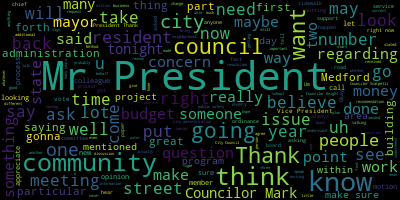

[Marks]: Thank you very much, Mr. President.
[Marks]: Michael Marks, 37 Wellington Road, the great city of Medford.
[Marks]: My initial thought is, just standing out in the audience, when many people hear about free cash, I think it's important in layman's terms to spell out exactly what free cash is.
[Marks]: And it's an overabundance of taxpayer money.
[Marks]: That's what free cash is.
[Marks]: So free cash is not pulled from a cherry tree.
[Marks]: It is the overabundance of taxpayer money.
[Marks]: And the reason why I bring that up, Mr. President, is being a former member of the council for 20 years.
[Marks]: One thing I do regret, and many residents probably feel the same pain, is the water and sewer bills.
[Marks]: And the reason why I bring this up, Mr. President, is because so many years ago, we created a rainy day fund in the water and sewer.
[Marks]: It's called the Water and Sewer Enterprise Account.
[Marks]: It's not called the rainy day fund.
[Marks]: And that fund was supposed to be, the intended purpose was supposed to be for infrastructure improvements or offset the rates.
[Marks]: And the fund started out some many years ago with three, $400,000.
[Marks]: And that's not a lot for a city this size, with an infrastructure that's a hundred years old, you know.
[Marks]: But what happened over the years, unchecked, it turned from 300,000 to 6 million.
[Marks]: So all of a sudden now, the bills that are going out now have a little bit of padding.
[Marks]: Why?
[Marks]: Because it goes back into the free cash.
[Marks]: And before you know it, it's an end around about proposition two and a half.
[Marks]: So you're bringing in additional revenue has nothing to do with proposition two and a half.
[Marks]: And you're using that for purposes other than which it has been used over the years.
[Marks]: I'm not sure if you were on the council, Mr. President at the time, maybe Mr. Scarpelli can remember for purposes non related to water and sewer, because there was that buffer.
[Marks]: My concern about creating an additional account now is that that's also going to be unchecked.
[Marks]: And it's going to mushroom into this large, large account of taxpayers money.
[Marks]: And it's going to sit there until someone decides to use it on whatever project they want to use in the community.
[Marks]: And I think that's a real concern right now.
[Marks]: And if anyone behind this railing can tell me exactly how much we have in the water and sewer enterprise surplus account now.
[Marks]: Does the city administration know what's in the account?
[Marks]: All right, thank you.
[Marks]: Right.
[Marks]: Do we know how much is in there currently?
[Marks]: Do we know how much is in there currently?
[Marks]: I am all done.
[Marks]: Stick a fork in me, I'm all done.
[Marks]: The one thing I do want to caution the members of the council, in particular, I hate to say new members, because we all start somewhere, right?
[Marks]: But the creation of a fund sounds good.
[Marks]: But an unchecked fund is not a good thing.
[Marks]: And unfortunately, that's what exists in this community, whether it's water and sewer, and doesn't require council approval, or rainy day fund that does require council approval.
[Marks]: It's an unchecked account.
[Marks]: And that's a problem, in my opinion.
[Marks]: And you know,
[Marks]: We at the beginning was mentioned that, you know, we all have rainy day funds.
[Marks]: I'm not sure what the chief of staff makes, but let me tell you, that's not true for most people in today's society.
[Marks]: We don't have rainy day funds that we can count on.
[Marks]: Most people are living paycheck to paycheck, putting their kids through school, helping family members out, whatever it might be, housing, which we're going to talk about later.
[Marks]: So I just don't want to be too cavalier when it comes to having rainy day funds sitting around with surplus money.
[Marks]: Thank you.
[Marks]: Thank you, Mr. President.
[Marks]: And thank you for to the members of the council for hearing us all so late.
[Marks]: We appreciate it.
[Marks]: Um
[Marks]: The one thing I need to start off by addressing is the fact that it was mentioned by Councilor Callahan that this proposal may not have legs to stand on, you know, it may never get through the legislative process.
[Marks]: And I would say with all the things that we need to do as a community, in particular regarding affordable housing,
[Marks]: Why would we waste an ounce of energy on something that we know is not going to go anywhere?
[Marks]: And the reason why I say that is under the current housing production plan, which is a five year plan that was signed by the council on September 27th, 2022.
[Marks]: And it created by the city and is a state recognized planning tool, which establishes 18 housing strategies for the planning and production of affordable housing stock in the community.
[Marks]: A transfer fee alone
[Marks]: is not a plan to create affordable housing.
[Marks]: It was never mentioned at all a transfer fee in the 117 page housing production plan that the city hired a private consultant to come in and work with many city agencies, state agencies, this council to develop.
[Marks]: One strategy
[Marks]: to create additional affordable housing outlined in the housing production plan is called affordable infill.
[Marks]: And that may be a new terminology for people, but it's written right within the production plan.
[Marks]: And I remember as a city council, we discussed this issue ad nauseum because at the time it had a lot of merit in creating additional affordable housing citywide.
[Marks]: not just in Wellington Circle where I live, or not just in South Bedford, but citywide.
[Marks]: Think about that.
[Marks]: Think about adding affordable housing in all sections of the neighborhood.
[Marks]: There are roughly currently right now 550 vacant city and privately owned lots that are non-buildable.
[Marks]: Through zoning, through dimensions, through setbacks, through lot size, but they're non-buildable.
[Marks]: We can create, through zoning provisions, an infill ordinance that would allow us, with these existing current lots, we're not talking about transfer fee, we're not talking about all these pies in the sky, the current lots, the city owns 128 of these 550-odd lots that are out the community.
[Marks]: we could create a housing trust fund with those hundred and 20 think about 129 lots in the city that could be valued at 75 85 100,000.
[Marks]: And the reason why I value that is because we're looking at creating affordable housing.
[Marks]: Right.
[Marks]: So think about creating a first of its kind, where we tap into these odd sized lots, work with the city, work with developers that do affordable housing, and start moving, not rental units,
[Marks]: We're talking about home ownership, generational wealth that we would create in this community.
[Marks]: And this right now is something that you have at your fingertips.
[Marks]: This is something you can do tomorrow.
[Marks]: And it's been in this plan since FY21.
[Marks]: And there's been, you know what action on this?
[Marks]: Goose eggs, goose eggs.
[Marks]: And the low-lying fruit right now, councilor, is what a monkey would decide to do, is let's just tax people.
[Marks]: That's the easy thing, right?
[Marks]: We need money, let's just tax people.
[Marks]: We have a way to create revenue, we have land, we have the will of the city, we have the will of this council, and we're not moving forward.
[Marks]: So rather than waste time on something, a home rule petition that's gonna go nowhere,
[Marks]: Let's start spinning our wheels on things that will produce results.
[Marks]: And this is one of them.
[Marks]: 30 seconds.
[Marks]: 30 seconds.
[Marks]: One last thing I'd like to mention, and this is important.
[Marks]: I was involved with creating Method's first dog park.
[Marks]: What does it have to do with this?
[Marks]: Absolutely nothing.
[Marks]: I was involved with creating Method's first art center that we just had a ribbon cutting.
[Marks]: And I can tell you unequivocally,
[Marks]: If we started off both those meetings, we would not have a dog park, reference for a dog park, or an art center, by saying, you know how we're going to pay for this?
[Marks]: Let's go to the taxpayers.
[Marks]: We went to the Stanton Foundation, and they paid for the entire dog park.
[Marks]: Right, we got a fund in a public private partnership with fitness wellness fitness to pay for our center for the next 10 years, not one cent of taxpayer money went to this.
[Marks]: So if we're looking at killing affordable housing this community, keep on this track, we're going to kill a dead.
[Marks]: And if you want to have the opportunity to explore these other avenues that are already out there, there's already a plan.
[Marks]: He's already been vetted.
[Marks]: Let's move forward.
[Marks]: I want to work with you.
[Marks]: Let's move forward.
[Marks]: Thank you.
[Marks]: Thank you.
[Marks]: Thank you, Madam President, Michael Marks, 37 Wellington Road.
[Marks]: It's an honor to be here tonight, Rick, to honor you for your 12 years of commitment and dedication to this community.
[Marks]: And, you know, I can honestly say, as has been eloquently stated here tonight, that you are a man of results.
[Marks]: and didn't let anything get in the way.
[Marks]: Didn't let politics get in the way, personalities.
[Marks]: He wanted to see things happen.
[Marks]: And as Council Vice President Bears just mentioned, the library, right?
[Marks]: A little thing like the library came to fruition because Rick thought out of the box and said, you know what?
[Marks]: We need this for our community.
[Marks]: We need this for our residents.
[Marks]: And it was you that pursued that dream and why it became to a reality.
[Marks]: Another issue that we didn't even mention, and I don't even think we've touched the tip of the iceberg here, is an issue that was near and dear to me when I first got on the council in 2002.
[Marks]: And that was to create an art center in our community.
[Marks]: And I had the keys to the Swan School in my hands.
[Marks]: And every Saturday and Sunday, I used to open the building and let the artists roam the building.
[Marks]: And we were gonna put an art center in the Swan School.
[Marks]: That never came to fruition.
[Marks]: And I worked on creating an art center for 19 years after that.
[Marks]: And I was responsible as one member, creating arts collaborative method.
[Marks]: Our sole responsibility was to create an art center in this community.
[Marks]: And for three to four years, we looked at the Heckner Center and realized that building would have cost hundreds of thousands of dollars to bring it up to a reality.
[Marks]: And then one day we got a phone call.
[Marks]: And it was from Councilor Caraviello that said, I have a community public-private partnership that's going to allow an art center to come on Mystic Ave.
[Marks]: You're not going to have to pay anything for the first 10 years.
[Marks]: They're gonna suit the building to your need, ample parking, we're gonna have community art classes, we're gonna have artist space, all for nothing.
[Marks]: And by the way, January 20th of next year,
[Marks]: they can have a ribbon cutting.
[Marks]: Medford's first art center in this community came to fruition because of this man right here that put together a public-private partnership to make that happen.
[Marks]: And I'm a little envious, it took me 20 years, it took him 20 minutes, but that's all right.
[Marks]: It came to reality, and that's the most important thing.
[Marks]: You know- Can I say something?
[Marks]: Absolutely.
[Marks]: Well, and I appreciate that.
[Marks]: You know, you hit the nail on the head, George.
[Marks]: It's almost like you stole my speech because honestly, I mean, you look at someone's character and we're celebrating Rick for 12 years.
[Marks]: Rick's been dedicated in this city for five decades.
[Marks]: Rick did the reverse.
[Marks]: Usually people get elected, then they start getting involved in the community.
[Marks]: Rick was involved for five decades and then got elected and continued to do what he did from the previous five decades.
[Marks]: As you mentioned, feeding the most needy in our community, helping veterans, whether they had a leaky roof or needed accessibility ramp to their homes.
[Marks]: know, those are the type of things that, you know, I think go unnoticed, because there's no print paper anymore, there's, you know, there's no really way of getting the message out.
[Marks]: But those are things that Rick did, because he wanted to do, not for any fanfare.
[Marks]: And, you know, I personally, Rick, you know, I have to say, when when I was on the council, and you were running for council, I said, this son of a gun, he's, you know, he was out there campaigning, I said, this son of a gun.
[Marks]: And then when he got on the council, I said, you know what,
[Marks]: He adds a lot to this council.
[Marks]: He has a lot of integrity.
[Marks]: He cares about this community.
[Marks]: And as members said behind this reel, no matter what side of the issue, Rick was always respectable.
[Marks]: And that's one thing that I take, Rick, and I'm proud to call you my friend.
[Marks]: And honestly, I hope that you will maintain your leadership role in this community, because we do need leaders.
[Marks]: You know, when the Chamber of Commerce didn't have a president,
[Marks]: It was Rick Caraviello that stood up and took over the reins in order for small business to be represented.
[Marks]: And that's a lot of work and a lot of effort.
[Marks]: And those type of things go unnoticed.
[Marks]: And I just want to thank you, my friend, and I'm sure you'll be active in the community.
[Marks]: Thank you.
[Marks]: Thank you.
[Marks]: Thank you, Madam President, and I, too, wanna thank Councilor Knight for his friendship and his many years of service.
[Marks]: As you stated, Madam President, there's been no bigger advocate for working families in this community than Councilor Knight.
[Marks]: I gotta be honest, I learned so much regarding living wages and rights of workers from listening to Councilor Knight over the years.
[Marks]: It made me a better councilor.
[Marks]: And I know over the years, when he first got on, he was a young man at the time, and he's still a young man, but, you know, some of us said, oh, I hear some fresh meat coming onto the council.
[Marks]: And before you knew it, we had our own parliamentarian.
[Marks]: I mean, it was Councilor Knight, honestly, that knew the rules and regulations inside and out.
[Marks]: And the only way I could combat
[Marks]: his knowledge was I thought if I spoke louder that I would I would win the debate and that was my attack when I when we used to go at it he'd bring up rules and regulations facts and figures and I would mostly yell and raise my voice and I thought that I won the argument but I
[Marks]: I knew all the time that I never won the argument because he was armed better than I was.
[Marks]: And I just want to thank you for your years of service.
[Marks]: Councilor, it was a pleasure getting to know you, the person who you are, the family man, the care that you have for this community, and I hope to see you around the community.
[Marks]: Thank you.
[Marks]: Thank you, Madam President.
[Marks]: It was an honor and pleasure.
[Marks]: We only served for one term together.
[Marks]: I can tell you the first six months that Nicole sat next to me, I don't think she said hi to me for six months.
[Marks]: And I didn't know if it was me or she was new on the job and trying to feel her way around.
[Marks]: And I think our very first debate was a difficult one because we were sitting next to each other and I may have taken some liberties at the time and you turned around and literally snapped at me.
[Marks]: And like, after that, I think I was like walking on a tightrope the whole time.
[Marks]: I was, what's she going to do next?
[Marks]: You know, I was kind of in fear to be honest.
[Marks]: I believe that when you've gone on the council, your intentions were always to move the city forward.
[Marks]: I also believe that you were even-handed, you were willing to listen, which I think goes a long way.
[Marks]: We may not agree, but if you know someone's at least listening, that means a lot.
[Marks]: And, you know, the one thing that I didn't agree with, it was the leaf blower ordinance.
[Marks]: However, I think you've surpassed that with the school committee race.
[Marks]: At the very least.
[Marks]: But I want to thank you for your years of service.
[Marks]: It takes a lot to do what elected officials do in this community.
[Marks]: I think people think, you know, it's an easy task.
[Marks]: You come on a Tuesday night and attend some subcommittee meetings and they don't know the hours of reading, the hours of phone calls, the really
[Marks]: that takes place to be an effective Councilor.
[Marks]: And I think you've shown that over the last four years, and hopefully we're losing a lot of knowledge behind this reel.
[Marks]: Hopefully some of that will be spread on with the existing members.
[Marks]: But I want to thank you for your service, and hopefully you'll spend some more time with the family, which I think you'll find equally, if not more important.
[Marks]: So thank you.
[Marks]: I would just ask if one of my colleagues would be kind enough to suspend the rules to allow residents that took time out of their busy schedule
[Marks]: in the middle of the summer, waiting for two hours, that we would allot them a little more than two minutes.
[Marks]: So if we could suspend the rules.
[Marks]: Thank you, and I appreciate that, Madam President.
[Marks]: Michael Marks for the record, 37 Wellington Road.
[Marks]: It's been seven months since I've appeared before this body and in City Hall.
[Marks]: And the reason why I'm here tonight is because of the petition that is before us, which I believe strongly will hurt many, many people in this community.
[Marks]: And that's the reason why I'm here.
[Marks]: You know, we've had discussions before this body for many years.
[Marks]: And some of the council has brought up tonight about the process.
[Marks]: And I can recall being part of subcommittees that have met 15 to 20 times to discuss snow shoveling ordinances or leaf blower ordinances.
[Marks]: And here we have an issue of a prop two and a half override that's gonna cost the average taxpayer an additional 600 from the increase we just received in June on our taxes.
[Marks]: And have we had one subcommittee or committee of the whole to discuss this particular petition?
[Marks]: Have we had one?
[Marks]: So we haven't had one.
[Marks]: So when it gets brought up about process, I would agree that there has been no process.
[Marks]: And that is a major, major concern for me and many other people in this community.
[Marks]: I appreciate the dialogue.
[Marks]: I know there's people on both sides and I appreciate the dialogue and I can see both sides.
[Marks]: But I think many of the comments that have been made tonight, which I will reiterate some of them because my colleagues have already put out great comments.
[Marks]: is the first is how much should a realistic budget be for the complete operations in the city of method?
[Marks]: Can anyone behind this real that's in favor of this 12 million?
[Marks]: state tonight, what is a realistic operational budget?
[Marks]: Because if you're running a business, you know what your realistic operational budget is to run a business.
[Marks]: So what is it?
[Marks]: Can anyone behind the reel tell me what the realistic operational budget for this city?
[Marks]: It's a tough question, believe me, I know it is.
[Marks]: So we haven't answered that question.
[Marks]: What is a realistic budget?
[Marks]: Is 12 million on top of this budget realistic?
[Marks]: Is this gonna bring us to where we need to be, the promised land?
[Marks]: I don't believe so.
[Marks]: The second point is, can anyone behind this reel
[Marks]: refer to any budgetary study that outlines the complete financial needs of this community.
[Marks]: Can anyone tell us
[Marks]: of a budgetary study I'd like, and I'm asking this as a question not, not to be facetious, I'm asking I'd like to know, because in my 20 years on the council, I can tell you firsthand, I was never part of any budgetary discussion regarding the operational needs of this community so I'd like to hear from the council because I think that's an important question.
[Marks]: Right, and I think that's an important question that needs to be answered before we put the cot before the horse, right?
[Marks]: And these are the things I think needed to be vetted out before we say, well, let's just let the voters decide.
[Marks]: I think as the leaders in this community, we all look up to you as leaders.
[Marks]: These are the questions I think that need to be answered before we take the next step.
[Marks]: When is the last time a complete and independent audit has been done of all city functions?
[Marks]: The reason why I ask is because when I was a member of the council, this council has always been on record asking for an independent audit.
[Marks]: And we used to always state that an independent audit is not done by the same firm that's been hired by the administration for the past 30 years.
[Marks]: That is not an independent audit.
[Marks]: And I think members behind this reel could probably appreciate that.
[Marks]: So I think truly, if we're gonna move in a direction, and I'm not opposed to having these discussions.
[Marks]: I think this is healthy to be quite honest with you.
[Marks]: Put it on the table, discuss it.
[Marks]: But I think this information has to be on the table.
[Marks]: Have we had an independent audit?
[Marks]: The answer is no.
[Marks]: The answer is no.
[Marks]: So when we look at, are there ways we can cut costs?
[Marks]: Are there ways that we can work more efficiently?
[Marks]: There absolutely is.
[Marks]: Are there things that we're doing that may be duplicate in nature?
[Marks]: Absolutely.
[Marks]: And council and I brought up one in particular about duplicate positions.
[Marks]: So there's a lot of that that hasn't been looked at.
[Marks]: You know, when we say let's look at the charter, everyone's on board.
[Marks]: And I was the first person to offer having the charter be reviewed.
[Marks]: I offered about seven or eight years ago before this council.
[Marks]: And it was sent to the state legislature and it died.
[Marks]: But everyone wants to review the charter because it's the operational framework, how this city works.
[Marks]: And it makes sense.
[Marks]: You wouldn't run a business and not change a business plan for 30 years.
[Marks]: You'd be out of business.
[Marks]: This city is no different.
[Marks]: Now we're running on a budget, like Councilor Knight said, that hasn't changed in 30 years.
[Marks]: Yes, it increases every year, but the physical budget itself hasn't changed in 30 years.
[Marks]: and throwing more money into the budget is not gonna solve any problems at all.
[Marks]: It's not gonna solve anything at all.
[Marks]: The following three questions need to be answered in order to support this proposal.
[Marks]: The first one, and I think we've got somewhat of an answer is, what will the average increase be?
[Marks]: And I think we heard tonight, we're looking at roughly 550,000 based on an assessed value of 650.
[Marks]: So that could be seven or $800 depending on your assessed value.
[Marks]: Coupled with the increase we just received
[Marks]: when the council and the mayor voted for the budget.
[Marks]: So the 550 is one portion of an increase.
[Marks]: The other portion, you just approved.
[Marks]: So when we look at the numbers, I think we have to put it in perspective.
[Marks]: It's not 550.
[Marks]: For many of us, it's well over $1,000 that the increase may be.
[Marks]: Well over $1,000.
[Marks]: Right.
[Marks]: I think he said I was smart, so he can yell out any time he wants.
[Marks]: I think that's what he said.
[Marks]: No, I appreciate that.
[Marks]: But this is a very important issue for a lot of people.
[Marks]: I'm coming up here on behalf of the residents that reached out to me, to be quite honest with you.
[Marks]: That's why you haven't seen me in seven months.
[Marks]: This is a huge, huge issue.
[Marks]: And I would appreciate maybe if we could suspend the rules because
[Marks]: I don't feel like I've had five minutes and I feel rushed already.
[Marks]: I've had seven minutes.
[Marks]: I'm already over.
[Marks]: Will someone suspend the rules to allow residents to speak before the podium?
[Marks]: Right.
[Marks]: But, but not fully, not fully.
[Marks]: I think we were all, you know, listening to many speeches tonight and we'd like to be able to speak.
[Marks]: It's important.
[Marks]: There's only, there's a dozen people.
[Marks]: There's a dozen people in the audience.
[Marks]: Okay.
[Marks]: Well, I appreciate it.
[Marks]: I'd like to finish.
[Marks]: I only have a few more minutes left.
[Marks]: I really appreciate finishing.
[Marks]: So as we were mentioning, the 550 is not a realistic number for most residents in this community.
[Marks]: So that's question number one.
[Marks]: What actually will this cost the residents of this community?
[Marks]: There was a comment made tonight.
[Marks]: Each year, we're doing more with less.
[Marks]: That comment can't be furthest from the truth.
[Marks]: as a taxpayer for 30 years in this community, 30 years.
[Marks]: This is my 30th year.
[Marks]: Taxes have gone up each and every year for 30 years.
[Marks]: So I don't know how we're doing more with less.
[Marks]: The city is getting more money each and every year from the taxpayers of this community.
[Marks]: It may be not spent wisely, but they're getting more money each and every year from the taxpayers of this community.
[Marks]: Well, as Councilor Wright said, I think it's a spending issue.
[Marks]: So I think that's what I'm trying to address.
[Marks]: The other question is, what impact will this have, this tax increase on our most vulnerable residents?
[Marks]: And I think that's the key and that's actually why I'm up here tonight.
[Marks]: So when we talk about seniors on fixed incomes, which my colleagues mentioned, we don't wanna address that, but truly people are making decisions whether they eat,
[Marks]: or take medication.
[Marks]: And maybe members behind this reel don't see that.
[Marks]: You don't experience it, but it's happening in our community right now.
[Marks]: I'll tell you firsthand, it's happening in this community.
[Marks]: And we're asking residents to make that decision.
[Marks]: So I just want people to be aware of that.
[Marks]: What about the young families that paid top dollar for their home and brought in this community recently and have to decide whether their child will play sports, whether they'll go on vacation, whether they'll save for their college tuition.
[Marks]: These are the decisions that have to be made.
[Marks]: So it's easy to say, hey, look what 12 million will do for us.
[Marks]: But what's the collateral damage to that 12 million?
[Marks]: It's the seniors on fixed income.
[Marks]: It's the families.
[Marks]: It's the renters that Councilor Caraviello has mentioned in the past.
[Marks]: Many people, many landlords are going to pass this on to the renters.
[Marks]: And that's what's going to happen.
[Marks]: And as Councilor Caraviello mentioned, what about the seniors in this community that brought their home 25, 30, 40 years ago in a property rich, like Councilor Caraviello says, and income poor?
[Marks]: $500, I would submit to you, is a lot of money.
[Marks]: It's a lot of money for people on fixed incomes.
[Marks]: So I think, you know, when you talk about a cavalier, cavalier saying that, well, it's only 500, it's only 550.
[Marks]: And, you know, I think you gotta be mindful of who is living in this community.
[Marks]: And my last point, and I appreciate the time, believe me, and I don't wanna take up any more time.
[Marks]: We're in a time of uncertainty.
[Marks]: We're talking about inflation.
[Marks]: We're talking about recession.
[Marks]: And here we want to raise additional taxes on top of taxes we just raised.
[Marks]: How blindsided is that?
[Marks]: We have to be living under a rock to say now is a good time to increase taxes again a second time.
[Marks]: So I think this is what you're hearing from the community, at least what I'm hearing from the community.
[Marks]: Maybe the council's tone deaf, certain members of the council, but this is what I'm hearing.
[Marks]: Yeah, we all have a wishlist.
[Marks]: Streets should be done and so forth and more teachers.
[Marks]: We all have a wishlist, but we have to work within the confines of our budget.
[Marks]: And when we start pricing people out of this community, it's not a community I want to be part of.
[Marks]: I thank you very much.
[Marks]: For your time, I thank you for your consideration, and I would only ask when you make your vote, make sure that those three subjects regarding the impact of people, regarding the cost, regarding how it's gonna affect each and every resident becomes part of your consideration.
[Marks]: Thank you.
[Marks]: It was an honor and a privilege to serve with Paulette Vander Kloof for the six years I was on the school committee.
[Marks]: Paulette, don't go anywhere.
[Marks]: During that period of time, Mr. President, the school committee ushered in what we refer to still after 20 something years, the brand new schools in Medford.
[Marks]: And that was a very trying time as a member of Vanderkloot remembers.
[Marks]: It was a lot of time and effort put into that.
[Marks]: And the one thing, Mr. President, I do remember is Paulette Vanderkloot gave birth to her daughter on election day.
[Marks]: Is that not correct?
[Marks]: And, you know, being a politician, I wanted to try to outdo Paulette.
[Marks]: And I missed it by about six hours.
[Marks]: My wife gave birth to our twins the night before the election.
[Marks]: And I still resent that, Paul.
[Marks]: I don't know how you held off.
[Marks]: I don't know what food you were eating, but you did a great job holding off.
[Marks]: And the other point I have to mention, Mr. President, that I still resent to this day, is that Paulette Van der Kloot stole
[Marks]: George Scarpelli's slogan.
[Marks]: Give a hoot vote, Scarpelli was the original slogan.
[Marks]: And that was stolen by Paulette.
[Marks]: And I hope someday she recognizes that, Mr. President.
[Marks]: Thank you, Mr. President.
[Marks]: And if you can give a brief synopsis, I believe we have someone from the mayor's office on.
[Marks]: Chair awaits the motion.
[Marks]: Mr. President.
[Marks]: Councilor Marks.
[Marks]: Thank you, Mr. President.
[Marks]: Right, but we had a committee of the whole meeting.
[Marks]: Right.
[Marks]: Which questions were asked of the administration.
[Marks]: And I think we should at least get those questions answered before we go through the whole process again.
[Marks]: But I had one question regarding frontline workers and first responders.
[Marks]: And we were told by the city administration that there may be a salary limitation for those workers to receive APA money.
[Marks]: And I was wondering if that question has been answered, Mr. President.
[Marks]: Right.
[Marks]: So from what I'm hearing tonight, that would not be a reason that frontline workers and first responders would not be able to attain some upper money
[Marks]: for being on the front lines during the past 22 months of COVID.
[Marks]: So that's encouraging to hear.
[Marks]: I just hope the administration falls through, Mr. President, taking care of those workers, as I mentioned during the Committee of the Whole meeting.
[Marks]: We're talking about workers that work at a convenience store.
[Marks]: that were in the front line, Mr. President.
[Marks]: We're talking about workers at stop and shop.
[Marks]: We're talking about workers that worked in a doctor's office.
[Marks]: We're talking about postal workers.
[Marks]: We're talking about police, fire, EMTs.
[Marks]: So I just hope, Mr. President, with this $49 million the city's receiving from the federal government, that we put our money where our mouth is and take care of those workers, Mr. President, that put their life on the line.
[Marks]: and put their family's life on the line to make sure we could function as a community and as a society.
[Marks]: So I would hope the administration steps forward on that, Mr. President.
[Marks]: Amendment O, as I mentioned, Mr. President, it says that this is a CAF 12, which is the federal funds manager.
[Marks]: I don't believe that it's a CAF 12.
[Marks]: I would say that's more of a CAF
[Marks]: 15, Mr. President, based on that salary.
[Marks]: And I don't know if that's an error that was made by the administration, but if they can also talk to that, Mr. President, I'd be curious.
[Marks]: Nina, can you answer that question?
[Marks]: So that is an error that we're being asked to vote on, Mr. President.
[Marks]: Okay.
[Marks]: And that's an important change, Mr. President.
[Marks]: And the last point, Mr. President, I would like to bring up, and I brought this up during the Committee of the Whole meeting, so I've been very consistent on bringing up this issue, is the fact that we still have department heads in this community, non-union department heads, who for the past 22 months have not received a step raise.
[Marks]: And I think the question was offered by Vice President Knight about whether that's contractual or not and so forth.
[Marks]: But here we have a number of upper positions, Mr. President, at salaries that far exceed some of our department heads, existing department heads.
[Marks]: So it's a tough pill to swallow when we're asking to bring in new positions, Mr. President, at a higher salary range while existing employees, existing department heads did not get their step raise.
[Marks]: And we heard money was tight, Mr. President.
[Marks]: And now we have $49 million of federal funding.
[Marks]: and we have commitments out there to every non-union department head that they should receive their step raise.
[Marks]: So I have a real tough time, Mr. President, voting for new positions for ARPA at a higher salary range without taking care of existing employees in this building that have been in here every day fighting through the pandemic.
[Marks]: And that's an important distinction, Mr. President.
[Marks]: We should take care of the workers we currently have.
[Marks]: And as I stated at the community hall meeting, if we don't address frontline workers, first responders, as part of this ARPA funding,
[Marks]: And if we don't take care of city employees, current city employees, I will not support this paper.
[Marks]: I don't care how critical the administration says it is.
[Marks]: They've been sitting on this paper for the past four months, Mr. President.
[Marks]: We don't even have a federal funds manager, someone to oversee all of this.
[Marks]: They could have put a federal funds manager, the first position on several months back.
[Marks]: And now we're being told this is critical.
[Marks]: Thank you.
[Marks]: Thank you.
[Marks]: Any further questions?
[Marks]: Mr. President, just a point of information.
[Marks]: The fire department has been without a contract, I believe, for close to two years now.
[Marks]: Thank you, Mr. President.
[Marks]: Before you call the roll, I'd like to go on record, Mr. President, stating that I will not be supporting this position until we find out about other city employees that have not received their step raises, Mr. President.
[Marks]: Thank you.
[Marks]: Thank you.
[Marks]: Thank you, Mr. President.
[Marks]: I will not be voting on this position as well.
[Marks]: I just find it ironic, Mr. President, that when these positions were put forth for spending of ARPA money to assist in COVID needs in the community, that the administration was at the table, the Office of Community Development was at the table, and the Board of Health was at the table.
[Marks]: who was not at the table, Mr. President, that would equally have needs for COVID spending, the Council on Aging was not at the table.
[Marks]: Police and fire, first responders in this community were not at the table to seek what their needs are.
[Marks]: The building department, DPW, the Office of Diversity, Mr. President, was not at the table.
[Marks]: So in a sense of fairness, Mr. President, when we talk about not having a plan, as Councilor Falco mentions, he's absolutely right.
[Marks]: Again, here we are going forward without a plan.
[Marks]: I'm having deja vu.
[Marks]: Two weeks ago, they asked us to vote to extend contracts so the city administration could take parking enforcement in-house.
[Marks]: And this council said, what's the plan that you have to take over this program January 5th of next year?
[Marks]: And the administration says, we don't have a plan.
[Marks]: I understand there's a need for this.
[Marks]: but there's also a need to follow a process.
[Marks]: There's also a need to include all stakeholders, Mr. President, and that's currently not being done.
[Marks]: When you have three department heads sitting around a table and omitting the other 10 department heads that have similar needs, I have a concern with that.
[Marks]: When you're bringing in people off the street at a higher salary, Mr. President, then counting workers, I have a problem with that.
[Marks]: When people aren't getting step raises and this council votes to bring people off the street at a higher salary, I have a problem with that.
[Marks]: And we can always put things off.
[Marks]: You know, I hear people fighting for people and people fight for this and that.
[Marks]: When push comes to shove, they bury their head in the sand.
[Marks]: And this is the exact issue right now when we talk about first responders and we talk about frontline workers.
[Marks]: Again, we allow the administration to go off without a plan, and we refuse, Mr. President, to address the current needs.
[Marks]: It's a sad state of affairs.
[Marks]: Let me tell you, Mr. President.
[Marks]: Thank you.
[Marks]: You should stay home then.
[Marks]: All right.
[Marks]: We'll be soon enough.
[Marks]: All right.
[Marks]: Zero.
[Marks]: Thank you, Mr. President, as I stated from the outset, this is the truly the only one position Mr. President, the federal funds manager.
[Marks]: that should have been put on first.
[Marks]: This is how you get the ball rolling to then have your public meetings and input from stakeholders to then establish what you wanna do in the community.
[Marks]: So we're kind of putting the horse before the cart by doing this after the fact.
[Marks]: So I support this one position, Mr. President, getting the ball rolling.
[Marks]: I still find it troubling that tonight,
[Marks]: We have the Board of Health Director, who's the highest health official in the city, saying, I need a laundry list of positions because we're concerned about the increase in COVID.
[Marks]: And we have members of this council tonight picking and choosing from the Board of Health Director saying, I need these positions, they're vital, choosing only to put on positions that currently have someone in that position.
[Marks]: If there's no one in the position, Mr. President, members of this council are saying, we're tabling it for now.
[Marks]: And then the health director saying, no, I need this position.
[Marks]: So it makes no sense, Mr. President.
[Marks]: And that's what happens when you do piecemeal, like Councilor Scarpelli said, when you don't have a plan, you make decisions, Mr. President, not based on anything other than knee-jerk reactions.
[Marks]: And that's what this council's doing now, knee-jerk reactions, Mr. President.
[Marks]: Thank you.
[Marks]: Thank you.
[Marks]: Thank you, Mr. President.
[Marks]: And this has been a long process.
[Marks]: The connectivity, I think, is long overdue.
[Marks]: It adds a safety element for pedestrians, cyclists, that I think will serve a purpose that has been needed in this community for a lot of years.
[Marks]: It'll connect the east side of Medford into Medford Square and far beyond, Mr. President, in a safe fashion.
[Marks]: The one concern in the neighborhood meetings that I attended back some time ago, probably close to two years ago, maybe even longer than that.
[Marks]: time flies, is that we're now introducing a bike path slash pedestrian path within feet from the rear doors of many residents on Clippership Drive.
[Marks]: And that was a major concern at the time of many property owners in that area that, you know, that support the project, but we're also concerned that now we're introducing
[Marks]: people, bikes, foot walkers that have never been in that area before.
[Marks]: And they were concerned about safety, public safety and rightfully so.
[Marks]: So I was wondering, I noticed in the correspondence we received, it said the purpose of the easement is to install, construct, operate, maintain, repair the recreational non-motorized bicycle pedestrian trail.
[Marks]: but it doesn't talk about who is actually going to provide the public safety and patrol that particular area, Mr. President.
[Marks]: Now that we're introducing people along the river back there, that was never a path.
[Marks]: So I didn't know if the woman from DCI can answer that question or someone from the city administration, but I have a concern about the patrolling and the safety
[Marks]: of that particular area.
[Marks]: And will it be lit, Mr. President, at all?
[Marks]: We all took, at least I know I did, a tour of the whole area along the water back there, and it's a dark, isolated area.
[Marks]: And I wanna make sure when we do this, I support this 1,000%, but I wanna make sure we're not introducing a public safety concern as well, Mr. President.
[Marks]: So I would ask the representative from DCR or someone from the city administration
[Marks]: to talk about safety and security of people using the path, as well as the direct above us.
[Marks]: Thank you.
[Marks]: So Mr. President, just so I understand, so there is a commitment that public safety will be provided either by the city of Medford or by state police when this is finally built out and so forth.
[Marks]: So there is a commitment in that part of safety will be enforced, is that correct?
[Marks]: If I understood that right, I think that is correct.
[Marks]: Am I correct?
[Marks]: Councilor Marks.
[Marks]: Thank you, Mr. President.
[Marks]: I truly believe we shouldn't recognize anyone if they're not here for over 20 years.
[Marks]: that you can get in a disagreement and an argument with that was so nice that you didn't realize you were arguing with him.
[Marks]: Really, John was nice about everything.
[Marks]: I don't ever remember a bad word said about John Falco.
[Marks]: And John, I refer to as someone that walks soft but carried a big stick.
[Marks]: And this council, over the six years John served,
[Marks]: made some major changes to things that people in the public may not know or didn't receive press, but it was John Falco that revamped our whole budgeting process.
[Marks]: It was John Falco's expertise in budgeting and finance that led to major changes on how we review the budget and how we as a council request the administration to present the budget to us.
[Marks]: And that was thanks to John Falco.
[Marks]: And that wasn't press, that was anything other than John wanting to do the right thing and making the process transparent, which leads to my other point.
[Marks]: It was John Falco
[Marks]: during this COVID period for the last 22 months that stood up and said, we need to still operate government.
[Marks]: We still need to have transparency.
[Marks]: We still need to include the community, even though we may not have open forums or forums people can attend.
[Marks]: And it was John that led the charge to make sure in our Committee of the Whole meetings and subcommittee meetings that may not be on the floor were taped and televised live.
[Marks]: That was john Falco.
[Marks]: Now that didn't get a ton of fanfare.
[Marks]: But when you talk about transparency, john just didn't talk the talk he walked the walk.
[Marks]: And that was a major change of this council, and it led to boards and commissions.
[Marks]: and other entities in the community fall in suit.
[Marks]: So for those two reasons, Mr. President, I wanna thank John Falco.
[Marks]: I know this is not the last we're gonna see of John in this community.
[Marks]: And he's a great family man, as we can see from his family and three sons and his wife in the audience.
[Marks]: And John, it was a pleasure serving with you for the past six years.
[Marks]: Beautiful.
[Marks]: Thank you.
[Marks]: Thank you.
[Marks]: Thank you very much.
[Marks]: Thank you, Mr. President.
[Marks]: Thank you.
[Marks]: This is bittersweet.
[Marks]: It's been a long run and I've enjoyed it.
[Marks]: You know, tonight's go around with all the Councilors, I would recommend for the next council, try doing that once a week.
[Marks]: Try turning to your colleague and saying, thank you for doing this.
[Marks]: Thank you for doing that.
[Marks]: talk issues out has changed over the years.
[Marks]: My temperament has changed, believe it or not.
[Marks]: But one thing that hasn't changed is my love for this community.
[Marks]: And I will forever be grateful for the honor and privilege to serve the residents of this community.
[Marks]: for the past three decades, 26 years altogether.
[Marks]: You know, when people put their trust and confidence in you, it's probably the highest form of respect someone can show, right?
[Marks]: Someone that takes the time to go to the poll and say, I'm with you.
[Marks]: Someone to put up a launch sign, someone to donate money in tough times.
[Marks]: And that always meant so much to me that
[Marks]: Why would all these people put their trust and confidence in me?
[Marks]: I never realized it until it dawned on me that we're all in this together.
[Marks]: We have a great community here.
[Marks]: And what makes the community is its residents.
[Marks]: It's not the city of Medford, it's its residents.
[Marks]: It's the people that live here.
[Marks]: It's the people that care.
[Marks]: And, you know, I truly believe that what makes us a great community is a community that's united.
[Marks]: And there are going to be many issues that may separate us.
[Marks]: There are going to be many issues that we may have differences of agreement on.
[Marks]: But I think the one thing we can agree upon is that we want to move this city forward and we love this community.
[Marks]: And I think we're at that point now.
[Marks]: I wanna thank my family.
[Marks]: I have my three children here tonight.
[Marks]: I didn't have kids when I first ran for office.
[Marks]: And it's amazing.
[Marks]: I have three children here tonight, my son, Evan.
[Marks]: who's finishing up his studies at UMass Amherst.
[Marks]: My daughter Olivia, who just took her test and is now a registered dietician.
[Marks]: And my oldest, my daughter Gianna, who is a first grade teacher.
[Marks]: And I just wanna thank them.
[Marks]: I wanna thank for being there for me.
[Marks]: I wanna thank for allowing me to participate at the fullest.
[Marks]: I gave this job my everything for almost three decades.
[Marks]: And no matter what people say, and I don't have to tell my colleagues, it takes from your family life.
[Marks]: But I signed up for it.
[Marks]: I'm not, I wouldn't change anything.
[Marks]: I signed up for it, but my family was there every inch of the way through good times and bad times.
[Marks]: And I want to thank my three kids.
[Marks]: My biggest supporter, my rock, my wife Lisa is at home tonight.
[Marks]: Anyone that knows my wife Lisa knows that she's not one for the limelight.
[Marks]: She never has, never will.
[Marks]: She's always been consistent.
[Marks]: And the one reason why I was able to do what I did for so many years and do the research and study and do the things that I needed to do and be at events and everything a politician does is because I had that rock at my house.
[Marks]: I had the foundation, the beacon that my wife served as raising the children and being the supportive wife and mother.
[Marks]: And without that, I wouldn't be anywhere.
[Marks]: So I'd like to thank my wife, Lisa.
[Marks]: My mother started me off with family values back 55 years ago.
[Marks]: And it was her guidance over the years that shaped how I voted.
[Marks]: And I never realized that until I took a step back and said, this was my mother that
[Marks]: gave me these particular values.
[Marks]: This was my mother that raised four children as a single parent and did her best to give us a roof over our head and provide the opportunities that she did.
[Marks]: And I will forever be grateful for my mother.
[Marks]: and her support over the years.
[Marks]: I wanna thank my in-laws, Linda and Vincenzo Federico.
[Marks]: If you ever came to one of my fundraisers, they used to make the best thick pizzellis, not the thin ones, the best thick pizzellis.
[Marks]: And when you came in the door, I'd go to shake a hand and they would go right over to my in-laws and get their pizzellis.
[Marks]: And I think most people were there to get the pizzellis, which was fine.
[Marks]: It was fine with me.
[Marks]: And I just want to thank my in-laws, Linda, Machenzo, Federico, for the many years.
[Marks]: I want to thank all the volunteers in the community that served on boards and commissions.
[Marks]: Talk about being behind the scenes.
[Marks]: Talk about volunteering, right?
[Marks]: This is the very heartbeat of the community.
[Marks]: It's the volunteers that are out there.
[Marks]: It's the people that are doing this, not for any praise, but because they love the community because they want to do better in the community, and they want to see our city progress forward.
[Marks]: So I'd like to thank all the countless volunteers that I've been involved with over the past 30 years.
[Marks]: I want to thank the countless community groups, civic organizations that we all come in contact with on a daily basis.
[Marks]: And as Councilor Falco alluded to, this was never about me, honestly, and I still feel the same way.
[Marks]: Someone just looked up at the clock.
[Marks]: I got a lot of pages ahead of me.
[Marks]: I got a lot of, I got a page for each year, so just bear with me.
[Marks]: But I want to recognize at this point, I've never done this before.
[Marks]: I want to recognize the city workers.
[Marks]: The city workers are the heartbeat.
[Marks]: They're the lifeline of this community.
[Marks]: And they get very little recognition.
[Marks]: And they do tremendous work on a daily basis.
[Marks]: This city doesn't operate by chance.
[Marks]: It's because of the hundreds and not thousands of city employees that make this city function.
[Marks]: And I'd like to take the time to recognize an office we deal with on a consistent basis, the city clerk in the registrar voters office.
[Marks]: I'd like to recognize Clerk Herbise, who has been the city clerk for the last several years, and probably one of the best appointments that I've been involved with.
[Marks]: And I appreciate you and everything you've done for the city clerk's office, Mr. Clerk.
[Marks]: I want to thank Sylvia DiPasolito.
[Marks]: I want to thank Jennifer Grogan, Janice DePace, Evelyn O'Rourke, Dorothy Donaghy, Janice Joyce, Sandy Gill, Joan Lamone,
[Marks]: and Haley Brogan for their work in the city clerk's office.
[Marks]: I wanna thank my good friend, Larry Lepore.
[Marks]: Larry, you sat in that corner for many years.
[Marks]: People would ask me, what is that guy doing in the corner?
[Marks]: So he's the city messenger.
[Marks]: He's a very important job.
[Marks]: And Larry, I consider you a friend.
[Marks]: You've held that position with distinction and I look forward to seeing you around the community.
[Marks]: Thank you, Larry.
[Marks]: I want to thank the people in the building department.
[Marks]: Commissioner Paul Moki, a gentleman that's been in this community a number of years and handles the day-to-day operations of every building function, every permit.
[Marks]: It's a giant job, and Paul Moki has done a tremendous job.
[Marks]: I'd like to thank Amy Tanaglia, Dennis McDonald, Jeff Fago, Kenny Lanzilli, Mike Malabar, and Paul Smith in that office.
[Marks]: I'd like to thank Director Pam Kelly and the Council on Aging, who deals with our seniors and provides senior programming and has done a tremendous job.
[Marks]: I'd like to thank the people at the Department of Public Works and Engineering, Commissioner Brian Kerins, Mary Moniz, Phyllis Cerboni, Darlene Luke, Steve Tenaglia, who's in the audience,
[Marks]: I've probably bothered Steve Tenaglia over my 26-year career than anyone else in the community.
[Marks]: And Steve, I appreciate the attentiveness that you've done over the years.
[Marks]: I appreciate your working on behalf of the residents of this community.
[Marks]: And no matter how big the crack was in the sidewalk or the hole in the street, you were out there when we called.
[Marks]: You made things happen.
[Marks]: And Steve, I will always be grateful for your service.
[Marks]: Thank you.
[Marks]: I want to thank Mike Nestor, the park foreman that keeps our parks up to stuff to snuff Peter Kirga, Ron Baker, Tim McGiven, the city engineer, Mark Shea, Steven Brogan, Mike Wentzel, and Todd Blake.
[Marks]: like to thank them for their service.
[Marks]: The electrical department, Superintendent of Y is Steve Randazzo and Vinnie Scaramuzzo.
[Marks]: I'd like to thank them for their service.
[Marks]: Information technology.
[Marks]: Mike Ferretti, the director.
[Marks]: I'd like to thank the law department.
[Marks]: City solicitor Kim Scanlon and Janice Spencer.
[Marks]: I'd like to thank the police department.
[Marks]: The first responders, as I spoke about tonight, Chief Jack Buckley, Patrol Union Representative Hal McGilvery, and all the brave men and women of the police department, our first responders that have done a tremendous job protecting the life and property of residents in this community.
[Marks]: It's a thankless job.
[Marks]: but it's a very important job in our community.
[Marks]: The fire department, I'd like to thank incoming chief John Friedman.
[Marks]: And I'd like to thank union president Eddie Buckley on his many years of support and camaraderie.
[Marks]: I have to say, and I don't like to show favoritism, but the fire department, I consider them all brothers.
[Marks]: I really do.
[Marks]: I never met a bunch of gentlemen that, and women,
[Marks]: that really cared for this community, that stepped up when needed, and I will ever be grateful for the fire department in our community.
[Marks]: My one regret
[Marks]: Um, and I have several is that we never acted upon a new fire station.
[Marks]: And I would ask my colleagues, uh, as they move forward that we keep the commitment we gave to the fire department like we did with the police department to create a brand new state of the art fire headquarters and training facility
[Marks]: that they all so well deserve.
[Marks]: Um, so I hope that commitment is kept.
[Marks]: I want to thank the health department director, Marianne O'Connor, uh, over the last 22 months, who has done yeoman's work with providing, um, health service in this community during covid.
[Marks]: I want to thank veteran service director,
[Marks]: Michael Durham, who in my opinion, over the last few years, has done so much work to put veterans on the radar in our community.
[Marks]: Give veterans a voice.
[Marks]: Make sure that you're out there looking for the services that veterans may not be aware of.
[Marks]: Mike would be the first to step forward and have the ability and knowledge to get things done and accomplished.
[Marks]: And I want to thank Mike Durham for his years of service.
[Marks]: Farmer City employees that I had the privilege to work with.
[Marks]: If I miss some, I apologize, but the ones that come to mind, Farmer City Clerk Ed Finn, Farmer Mayor Michael McGlynn, Farmer City Solicitor Mark Rumley, who I consider a dear friend and advisor.
[Marks]: former DPW Commissioner Paul Gere, former Budget Director Richard Lee, former Fire Chief Larry Sands, former Fire Chief Frank Gilberti, former Police Chief Leo Sacco, former Board of Health Director Karen Rose, former Treasure Collector Fred Pompeo Jr.,
[Marks]: former superintendent of schools that I served with, Roy Belson, and former superintendent of schools, Phil DeVoe that I served with as well.
[Marks]: I'd like to thank my fellow colleagues on the school committee that I served with for several years.
[Marks]: We, as I mentioned tonight, I was part of building the new schools and talk about going from a process where we had neighborhood schools to centralized schools.
[Marks]: It was probably one of the biggest contentious issues in this city's history.
[Marks]: But as a school committee, we rolled up our sleeves, we had our public meetings, and we were able to build centralized schools, state-of-the-art schools.
[Marks]: And that I am very proud of.
[Marks]: I want to thank my colleagues that I serve with, Lena DiGentimasso, who talk about a fighter,
[Marks]: There's someone that served three decades, never ran for any other office, but always cared about the community.
[Marks]: And I'll never forget when we were building the new schools, we had to go look at the old schools.
[Marks]: And I was behind every ladder to the roof.
[Marks]: following Linda Gigentomaso with her high heels, climbing the ladder to get to the roof.
[Marks]: This is the dedication.
[Marks]: Jack Buckley.
[Marks]: Jack Buckley, when I served with him, Jack was a very intelligent man.
[Marks]: And I was very young of age.
[Marks]: And he used to always say during the meetings, the TQM approach.
[Marks]: And I'd be like, wow, TQM, this is something big.
[Marks]: And he'd say it all the time, total quality management.
[Marks]: And 25 years later, I have still not forgotten what TQM stands for.
[Marks]: And that was the type of Jack Buckley was in charge of the building of the schools project.
[Marks]: That was the type of dedication Jack had and his business acumen.
[Marks]: that that's where he came from.
[Marks]: And it's funny how the little things stick with you.
[Marks]: And that was one thing that stuck with me with Jack Buckley, Paul Van der Kloot, who we recognize tonight.
[Marks]: I served with Paulette for six years.
[Marks]: Bob Skerry, Bob Emmett Skerry.
[Marks]: I served with Beth Fuller, who was the best knitter in the city of Medford.
[Marks]: would be at committee meetings and she'd knit a blanket while we were sitting there actually just listening, she would knit a blanket.
[Marks]: I always felt that I wasn't doing enough with my time.
[Marks]: She made me feel guilty.
[Marks]: Ed Nolan, who's a great firefighter, and I happen to have the opportunity to serve with Ed Nolan.
[Marks]: And last but not least, Bill Brady, who was a great school committee member and a tenacious advocate for the children of this community.
[Marks]: Former colleagues on the city council.
[Marks]: My colleague here, Robert Penta.
[Marks]: You know, when I first got on the council,
[Marks]: I'll be honest with you, I was intimidated by him.
[Marks]: He was rough and gruff, but as Councilor Scarpelli mentioned, I come to know a gentleman that only cared and loved about the community.
[Marks]: His delivery may be a little questionable once in a while, but he cared about the community.
[Marks]: Bob always told me, stand up for your beliefs.
[Marks]: You can never go wrong.
[Marks]: And I would advise anyone coming into public office, that's the number one thing.
[Marks]: Stand up for what you believe.
[Marks]: You can never ever go wrong.
[Marks]: Never.
[Marks]: Robert Mayorko, no disregard to you, Mr. President, but the best president I ever served with on the council.
[Marks]: He coined the phrase, at least he takes credit for it, that this city council is the people's forum.
[Marks]: And that always stuck with me.
[Marks]: because if you had an issue, there's nowhere else to go.
[Marks]: And this has to be the people's forum.
[Marks]: I would ask my colleagues to always keep that microphone open for whoever wants to come up on the public participation, whoever wants to speak on no matter what the issue may be, this has to maintain itself as the people's forum.
[Marks]: Otherwise we will lose confidence in government and that's the last thing we want.
[Marks]: Paul Camuso.
[Marks]: You know, when Paul got on the council, it dawned on me immediately when we were debating whether or not to allow Wendy's on Middlesex Ave, which was my neighborhood.
[Marks]: And we were debating it back and forth.
[Marks]: And I'll never forget, Paul Camuso said to the representatives from Wendy's, all the higher ups were here, all the bigwigs.
[Marks]: And he said, we have to have more fine dining like Wendy's in this community.
[Marks]: And I said we're going to be for a long ride with this guy.
[Marks]: Stephanie machini Burke, I mean, Stephanie's had a long run in this community as well.
[Marks]: I had the opportunity to serve a number of years, became mayor of this community.
[Marks]: was responsible for the police station and a brand new library and has done yeoman's work pushing this community forward.
[Marks]: Brianna Lungo-Curran was the current mayor and I served with for 18 years and I wish her well in the future years.
[Marks]: Fred Dello Russo, the last person to ever let you down.
[Marks]: That's a little joke.
[Marks]: That's a little joke.
[Marks]: Fred Dello Russo gave a perspective of business owner.
[Marks]: Every Councilor has their own perspective.
[Marks]: And that's why you have to listen.
[Marks]: And you may get in arguments, but everyone has their own ideas and their own perspective.
[Marks]: And Fred came from a chamber of commerce and a business perspective.
[Marks]: And that was always helpful for me because he was a business minded.
[Marks]: Bill Carr Sr.
[Marks]: I remember his slogan, nothing changes if nothing changes.
[Marks]: But when I looked at the slogan, I said, well, how basic, but when you think about it, nothing changes if nothing changes.
[Marks]: And he was absolutely right.
[Marks]: And I'll never forget that slogan.
[Marks]: And I consider Bill Carr a good friend.
[Marks]: Jim DiGiacomo, I had the opportunity to serve one term with.
[Marks]: And Jim was an excellent city councilor and a real people person.
[Marks]: Macarena.
[Marks]: I served just a short period of time when one council stepped down.
[Marks]: Macarena took over for about 10 months.
[Marks]: And he was a man of commitment and dedication.
[Marks]: And I wish Mac well.
[Marks]: State Rep Paul Donato.
[Marks]: Paul got off the council to run for state rep.
[Marks]: That's when I got on the council.
[Marks]: No one has done more to bring in local aid than Paul Donato.
[Marks]: Paul Donato's name is synonymous with local aid.
[Marks]: I mean, I don't wanna go through the laundry list, but just take a walk into Chevalier Auditorium and look at the brand new seats and look at the air conditioning.
[Marks]: And that wasn't done for any other reason than we have an advocate in the state house, Paul Donato.
[Marks]: And,
[Marks]: A little known fact about Paul Donato, and I hope you don't mind me sharing this, because I know you're not a vain person.
[Marks]: Paul Donato was one of the original signees on methods incorporation papers in 1892.
[Marks]: 1892, yes.
[Marks]: And I want to thank you for your many, many years of service, Representative Donato.
[Marks]: And I consider you a friend as well, Representative Donato, and always will be supportive.
[Marks]: My present colleagues.
[Marks]: And we have the two newest colleagues, Councilor Bears and Councilor Morell.
[Marks]: With COVID, we didn't have a real opportunity to get to know each other.
[Marks]: or know where you're coming from.
[Marks]: And I think that may have been some of maybe, I don't wanna say tension, but maybe some of the misinformation.
[Marks]: And I know you both have great intentions.
[Marks]: I know both of you will move this city forward.
[Marks]: I would ask that you just take a step back.
[Marks]: And as I tell everyone, God gave us two ears, do twice as much listening than speaking.
[Marks]: And I take that to myself, too.
[Marks]: That's no reflection on anyone, but listen, because you learn so much when you listen and hear what people have to say.
[Marks]: And I want to thank my colleagues.
[Marks]: Anyone that throws their hat in the ring to run for public office, I think is an admirable cause.
[Marks]: And anyone willing to do that, especially at a young age.
[Marks]: I've always preached in this community.
[Marks]: I've supported wide representation.
[Marks]: I've supported initiatives to get people involved.
[Marks]: Even though I ran for office, I want to see more people get involved.
[Marks]: So I'm glad that we have young people in this community as my neighbor.
[Marks]: Justin, while a lot of people don't know, he's my neighbor right across the street.
[Marks]: He called me up several months back and said, Mike, I'm running for office.
[Marks]: And I said, oh, you moved out of the city?
[Marks]: And he said, no, I'm running for Medford City Council.
[Marks]: And a funny fact is that when I moved to Wellington Road some 30 years ago, I got a phone call from Angelo Morata.
[Marks]: And that may not sound familiar from a lot of people, but he said, I just want you to know, and I didn't know him from a hole in the wall.
[Marks]: So I just want you to know that I was the original resident on Wellington Road.
[Marks]: and I am therefore the original councilor on Wellington Road.
[Marks]: So Justin, just so you know, I am the original city councilor on Wellington Road and don't ever forget that.
[Marks]: And don't ever forget that.
[Marks]: I'd like to thank my colleagues, Council beers Council morale for their dedicated service.
[Marks]: I'd like to thank Councilor Falco, who I stated earlier, made meetings, more transparent in this community, made the budget process, a far better process in this community, and just
[Marks]: lent a sense of calmness to this council that I am appreciative for.
[Marks]: And I wanna thank you for all your years of service and years of commitment to our community.
[Marks]: Adam Knight, I mean, who's done more for working families?
[Marks]: I didn't know half about what he was talking about unions and about living wages.
[Marks]: But it was Adam Knight that brought the issues up and Adam Knight that fought for the unions in this community and fought for working families.
[Marks]: It made sure that they were at the forefront.
[Marks]: And there were many issues that I learned about listening to Councilor Knight.
[Marks]: And I have to say, I will forever be thankful for opening my eyes up to those issues in the community.
[Marks]: Talk about a parliamentarian.
[Marks]: I mean, when he first got on the council, I said, oh, this kid's in for trouble.
[Marks]: Oh, I'm gonna get him until he start calling rule seven, section 1630.
[Marks]: So what's this guy doing?
[Marks]: But when did he learn this stuff?
[Marks]: And sure enough, he was the parliamentarian and I have to give him credit that he picked up on that second nature.
[Marks]: Maybe it's his legislative experience and his commitment to this community.
[Marks]: But I wanna thank you for your friendship and years of service as well.
[Marks]: George Scarpelli.
[Marks]: I mean, I refer to him as Coach Scarpelli because George has done more for youth sports in this community than anyone in the history of the city.
[Marks]: And I'm not just saying that because he's sitting here.
[Marks]: You know, George to me, George was working with underprivileged students before there were people working with underprivileged students.
[Marks]: George was the one that reached across the aisle.
[Marks]: George was the one
[Marks]: that lent himself to getting out there and looking for those in need.
[Marks]: So I refer to George as coach Scarpelli because George, the Councilor, yes, great counsel, good friend, great advocate, but it's George Scarpelli, the man.
[Marks]: And I think it says a lot about a person that's involved in a community behind the scenes.
[Marks]: You know, and then gets involved maybe in politics or do something else.
[Marks]: So, George, I wanna thank you for your many years of service to this community, but also to the youth and the disenfranchised and to the people that didn't have a voice.
[Marks]: You stood up, Councilor Scapelli.
[Marks]: It was you that stood up and made sure that this happened in our community.
[Marks]: It made sure that everyone felt welcome.
[Marks]: And I wanna thank you and I'll forever be beholden, Councilor.
[Marks]: Council President Caraviello.
[Marks]: I've had more people say, when you talk, why do you say Mr. President all the time?
[Marks]: And I say, that's out of deference and respect to Council President Caraviello.
[Marks]: You know, talk about someone that's been involved in the community.
[Marks]: I mean, Rick Caraviello was involved in the community back 45 years ago.
[Marks]: I remember when I first ran for public office, it was Rick Caraviello
[Marks]: that was sponsoring students, that was giving out part of all the civic organizations, giving out certificates and scholarships.
[Marks]: It was Rick Caraviello that worked with families, that worked with families that had food insecurities and still does to today.
[Marks]: He didn't stop it when he became a council.
[Marks]: It was Rick Caraviello was out in the community and he kept on doing it.
[Marks]: And that says a lot about a person.
[Marks]: He didn't drop and say, ah, now I'm a Councilor.
[Marks]: He kept on doing what he always knew and that's helping people in the community.
[Marks]: You wanna talk about helping people.
[Marks]: You turn around and it was Councilor Caraviello who led the charge to make sure veterans that were in need of home repair, that maybe couldn't afford to fix a leaky roof or add a handicap ramp to their home.
[Marks]: It was Councilor Caraviello without any fanfare.
[Marks]: He wasn't looking for any fanfare.
[Marks]: It was Councilor Caraviello that stood up and made sure these things happened.
[Marks]: And I will forever be grateful for your leadership over the many years, and I consider every one of my colleagues a friend, and I hope we maintain our friendships.
[Marks]: At this particular point, I know I'm getting long-winded, but I wouldn't be myself if I didn't mention my friends for decades.
[Marks]: And this is probably where I get into a lot of trouble, but I'd like to recognize to the best of my ability, people that have been with me for three decades, or very close to three decades.
[Marks]: And people that put their trust in me, and I still don't understand why.
[Marks]: But people I consider my friends, and people that have been with me for many years.
[Marks]: I wanna thank in the front row, Bill and Jeannie Wilder,
[Marks]: been with me for many years.
[Marks]: I want to thank Jim Silva.
[Marks]: I want to thank Ray Cipriani, who's in the front row.
[Marks]: I want to thank Ray Scarfo, John Puccio, John Pompeo, Gwen Blackburn, Bill Polcari, Bill Carr Jr., Henry Milleran, Charlie Cohen, Tony D'Antonio,
[Marks]: Mo Sheehan, Mark Frangillo, Marsha and Dennis Karen, Gus Napoli, Milva Ricci, Maureen Kaczynski, Sharon Diesso, who's in the audience.
[Marks]: Johnny Amari, the mayor of Salt Medford, the Mahoney family.
[Marks]: the Cangiano family, the Albanese family, the Bailey family, Steve Ionesa, Marie Rizzo, Joanne Crotty, Marianne Howell, Betty Rawson, Diane Incanieri, Alan Maturana, Andrew Castagnetti, who is in the audience.
[Marks]: Anthony Crescenti, who is in the audience.
[Marks]: George Sacco, Tony Insaldi, Kathleen McCarty, Dolores Neary, May Macubreck, Adele Trevisano, Mary Briley, Patty Papa, Vincent Federico, and Howie Cohen.
[Marks]: If I miss some people, I apologize.
[Marks]: I wanna welcome the incoming members of the council, Justin and Kit Collins.
[Marks]: I wish you good luck in the upcoming two years.
[Marks]: I'm proud to be part of such a great and welcoming and inclusive community.
[Marks]: I wanna wish everyone a merry Christmas and a happy new year.
[Marks]: May God bless our nation and may God bless the city of Medford.
[Marks]: So long for now.
[Marks]: Mr. President.
[Marks]: Thank you, Mr. President.
[Marks]: Ellen, if you could just clarify, out of the 6,500 properties that are above the break-even point, do you have a breakdown on what type of classification those properties are?
[Marks]: If I live in a two-family, am I eligible if I own a two-family?
[Marks]: So just so I understand, how are we counting?
[Marks]: If someone has a two family and they live on half the two family and they rent the other side, that rental would not be considered, correct?
[Marks]: Right, and is that state statute or is that just how each community handles it?
[Marks]: Right, I'm just trying to figure out what the number that 6,500 is compromised of.
[Marks]: The breakeven number, the number of properties that are above the breakeven point.
[Marks]: Right.
[Marks]: So someone has a three family, they rent out two of the units, they're still eligible for a residential exemption.
[Marks]: Even though it becomes a moneymaker, right?
[Marks]: I mean, the property is now a moneymaking property and not a residential type situation.
[Marks]: We all know the cost savings would
[Marks]: probably not be passed on to the renters, correct?
[Marks]: If someone received a residential exemption, I'm sure they're not gonna lower the rents based on what exemption they're receiving.
[Marks]: We would hope that's the case, but I don't think it's the case.
[Marks]: I support this.
[Marks]: I support having this reviewed.
[Marks]: I've mentioned in the past
[Marks]: that because this affects a number of property owners that currently live in their property, they would pay a higher rate.
[Marks]: That's one reason why in the past I did not support this.
[Marks]: But I think at some point we're getting close to a number that may make sense in this community to give people, you said $636 savings.
[Marks]: And this economy would go a long way to assisting those people, seniors and people on fixed incomes and so forth.
[Marks]: So I think, you know, maybe not this go around, but eventually I think we're going to hit that point where this makes all but sense to support in this community.
[Marks]: And if you look at the surrounding communities that probably have a higher rate of, you know,
[Marks]: non-owner occupied, it makes sense for them, like Malden and Cambridge and Chelsea and Everett, it probably makes sense for them.
[Marks]: I don't think we're quite at that point quite yet.
[Marks]: So that's why I will not be supporting this tonight.
[Marks]: Thank you.
[Marks]: Mr. President.
[Marks]: Thank you, Mr. President.
[Marks]: And I want to thank Mr. Castagnetti.
[Marks]: He's been consistent over the past 19 years about bringing this residential exemption forward, Mr. President.
[Marks]: And I want to thank him because I think I'll speak just for myself.
[Marks]: I won't speak for anyone else behind the real.
[Marks]: I think the intention of this particular general law has great merit.
[Marks]: However, in our community at this particular point, due to the breakeven point, it leaves thousands of people that live in owner-occupied property to pay a higher tax.
[Marks]: And I just find that unfair.
[Marks]: And even though it benefits the majority, which Mr. Cassidy is correct, it may benefit the 80% that will receive a property reduction, tax reduction, I am concerned equally
[Marks]: about the 20% that live in their property that may be property rich because they bought their home 40 years ago and their assessed value is over the $705,000.
[Marks]: However, they're going to pay a higher tax because of that.
[Marks]: You know, so I still have a concern with that.
[Marks]: The numbers, if we were talking, you know, a handful of people that were above the threshold, it would make that decision much easier for me.
[Marks]: But when you're talking thousands of people in the community,
[Marks]: that are above the threshold will pay a higher amount, I have a problem with that.
[Marks]: And I hope Mr. Cassidy can understand that.
[Marks]: And I'm hoping someday I'll be joining him on the other side of the real advocating for this and pushing for this at the right time.
[Marks]: And, you know, so I want to thank him for his advocacy.
[Marks]: Anything that helps seniors and people on fixed incomes, I think is a worthy cause.
[Marks]: And I know this is why Mr. Castagnetti has pushed this for many, many years.
[Marks]: So I just wanted to thank him, but that is my reasoning, Mr. Castagnetti, that I will not be supporting this tonight because it leaves out far too many residents that I think are in the same boat, that deserve some tax relief, and that will only experience a tax increase with this change.
[Marks]: And I'm not willing to do that at this point.
[Marks]: But I thank you for your advocacy.
[Marks]: Thank you, Councilmember Max.
[Marks]: Thank you, Mr. President, and Faye, I wanna welcome you to the city of Medford.
[Marks]: Thank you very much.
[Marks]: You have a very large endeavor before you.
[Marks]: Sure.
[Marks]: And I wish you well.
[Marks]: Thank you very much.
[Marks]: The question I have, the first one is very basic.
[Marks]: When do we anticipate for the city of Medford to officially take over parking responsibilities?
[Marks]: So we don't have when this contract, because it was a 10-year contract.
[Marks]: The way I understand it was the 10-year with at year seven, the option to renew for three years.
[Marks]: Okay my understanding is that it was a 10-year contract with a
[Marks]: option to renew on year seven, which we're at right now at the end of December.
[Marks]: So the contract, as far as I know, ends January 1st, 2022.
[Marks]: So is it safe to say that they will no longer be providing any type of resident permit parking or business enforcement as of January 6th, 2022?
[Marks]: Okay, so we don't officially know when the city is going to take this over.
[Marks]: Right.
[Marks]: And I appreciate it.
[Marks]: I know you've only been here six weeks.
[Marks]: So that's correct.
[Marks]: Right.
[Marks]: So just a point of information that on the last contract, that happened to be part of the last contract.
[Marks]: And when we were presented with the contract, it was then Mayor McGlynn at the time, he asked us, I believe it was a 10 year contract, but if you say seven.
[Marks]: It is seven.
[Marks]: That's fine too.
[Marks]: And the one, honestly, one regret I have in public office for all the years I've served,
[Marks]: was the fact that I voted on that contract prior to knowing, let me just say, prior to knowing what the actual program rollout was gonna be.
[Marks]: And if I had the hindsight before I took the vote, knowing that the mayor was going to do kiosk on the streets, and the mayor wasn't gonna take it in-house, and the mayor was gonna do a number of things that were outside of the original recommendations by the committee that he formed, I wouldn't have voted on the actual terms of the contract.
[Marks]: And I think what we're facing here again tonight, to be quite frank, is the administration coming to us saying that they're allowed to do a three-year contract on their own.
[Marks]: They don't need the approval of the Medford City Council, but we wanna extend it to five years because it makes more financial sense to do that.
[Marks]: And I don't doubt that, and I don't question that.
[Marks]: What I do question is that the longer we extend the contract, the longer this council
[Marks]: And I don't doubt that for a second, Faye.
[Marks]: I guess what I'm trying to say is that we really don't know, other than the two contracts that you're asking us to approve tonight, we really don't know what this parking program consists of.
[Marks]: other than the fact that we did receive a report back so many months ago from the Parking Policy and Enforcement Commission who did Yeoman's work.
[Marks]: I know there's a couple of the co-chairs.
[Marks]: Jim Silver is in the audience, Mari Carroll, and they did Yeoman's work putting together a report.
[Marks]: So in many of the recommendations, they put together a laundry list of recommendations.
[Marks]: So I just want to caution my fellow colleagues that a vote on this tonight, asking for a five-year contract, the vehicle end of it may be a little different because it's strictly vehicles, but the agreement number two, which deals with the management system, hardware, enforcement money, and so forth, really gets into the nuts and bolts of how to run a program.
[Marks]: And I've been down this avenue once before, and I just want to caution my colleagues that I think we're going down this avenue again prematurely, even though you need this to take place to move forward.
[Marks]: I understand your position.
[Marks]: from my standpoint as someone that fielded the calls and someone that ultimately had some responsibility in the last program as someone that voted for the contract.
[Marks]: I regret doing so because of the many things that I did not support in the rollout.
[Marks]: And it's unfortunate that you have to vote for this and then hope that you are in line with the rollout because you may be in total disagreement with the rollout, but then your name is going to get associated with
[Marks]: Well, you supported it.
[Marks]: So I just want to caution my colleagues on that.
[Marks]: And, you know, they'll do what they like, but I just want to caution them on that.
[Marks]: Fay, I don't expect you to answer this, but
[Marks]: Oh, maybe you can.
[Marks]: As Councilor Falco mentioned, there were $350,000 put in last year's budget for the creation of a parking management program in the city.
[Marks]: Right.
[Marks]: So during the budget deliberations, I asked the then Chief of Staff Dave Rodriguez, was this figure of 350,000 just a placeholder, or do you really think you can run a parking program in the city of this size?
[Marks]: with 900 and I think it's 87 business meters and hundreds of permit parking streets, which someday may go up to the full number of 750 odd streets that we have.
[Marks]: Do you feel he could run a full fledged program?
[Marks]: And he unequivocally said no.
[Marks]: And this was a starting point.
[Marks]: Knowing we're already six months into the fiscal year, what would you envision
[Marks]: a full-fledged parking program cost in this community.
[Marks]: Given that any thought, do you have any idea?
[Marks]: Right, right, but again, from an administrative standpoint,
[Marks]: If I were gonna say, you know what, we're gonna take parking in-house and we're gonna do it in-house moving forward January 6th, you would think you would have an idea of an actual cost.
[Marks]: You think you would have an idea, is this program something that's self-sustaining?
[Marks]: Could the city run this program based on the revenue they bring in?
[Marks]: you know, what the actual cost may be.
[Marks]: So I think it's hard for me to understand that the mayor said, you know what, we're moving forward with the parking program in the city of Medford.
[Marks]: I just have no idea how much it's gonna cost.
[Marks]: Right, right.
[Marks]: And you've been on board for six weeks.
[Marks]: This has been in process for almost two years.
[Marks]: So just so you know, this has been in process.
[Marks]: I know you've only been here a month and a half, but this has been in process for almost two years.
[Marks]: And the report was issued by the commission that the mayor put forward almost nine months ago with a lot of different recommendations.
[Marks]: I'm just a little troubled at this point that we don't know when the program may start.
[Marks]: I mean, we're three weeks before the contract
[Marks]: four weeks before it's gonna end.
[Marks]: We don't know when it's gonna start.
[Marks]: We don't have a plan to roll out the program as of yet.
[Marks]: We don't know what the actual costs may be.
[Marks]: So it may be cost prohibitive.
[Marks]: Maybe if we looked at this six months ago.
[Marks]: If I could just finish.
[Marks]: Okay, well, I'm just saying, we don't know that.
[Marks]: You couldn't tell me when the program's gonna start, you couldn't tell me what's gonna cost, but now you're sure of that it's not gonna cost labor.
[Marks]: I could just finish.
[Marks]: That wasn't a question, I'm speaking.
[Marks]: Okay.
[Marks]: And I'd appreciate it if I have the ability to finish my comments.
[Marks]: Sure, sure.
[Marks]: Because it throws my comments off when I get,
[Marks]: interrupted.
[Marks]: And I appreciate that.
[Marks]: So I guess the concern I have at this particular point is that we're moving forward on a parking program that residents have been accustomed to for the past seven years.
[Marks]: And come January 6th, Mr. President, there's no one behind this rail that's gonna be able to tell any resident or any business owner that currently gets enforcement that that enforcement is gonna be continued.
[Marks]: There's not one person behind this rail that can state that.
[Marks]: And that is a real concern of mine at this particular point, Mr. President.
[Marks]: So I want to make that known.
[Marks]: I want to make it known back in the budget, when I brought it before the chief of staff at that point, that we weren't fully funding this program and that we were setting it up for failure at the time.
[Marks]: He said it was only a placeholder.
[Marks]: So I just want to let that be known too, Mr. President, that there was an ample funding in the budget, even for a six month program, if we start in January.
[Marks]: The other point, Mr. President, I want to raise is the Parking Policy and Enforcement Commission.
[Marks]: Their report that was issued to the mayor in March, and I believe formally came out in April, came out with a laundry list of recommendations.
[Marks]: Section 2.1 had a laundry list summary of recommendations.
[Marks]: And some of the recommendations that were made by this commission over the last nine months, I think should have been at least reviewed by the administration and potentially worked on by the administration.
[Marks]: And I'm not sure if Faith can speak to any of this tonight, and I don't expect you to, but there were a number of recommendations, Mr. President, that spoke about GLX parking recommendations in the Hillside and South Method area.
[Marks]: that the city should be working on, including business parking as well in that area.
[Marks]: Pursuing meters, not kiosks.
[Marks]: The commission recommended a cost-benefit analysis on refurbishing the kiosk, replacing kiosks, or investing in new meters.
[Marks]: Now, over the last nine months, I assume some of that work could have taken place, and I'm not sure if it did or didn't, but I'd like to hear from the administration over the last nine months if any of these recommendations were actually worked on
[Marks]: that were put forth by the mayor's commission on parking policy and enforcement.
[Marks]: There was another recommendation, Mr. President.
[Marks]: As we all know, Medford has 31% of our roads are private ways.
[Marks]: And a private way is the city is empowered to enforce safety violations like hydrants and handicap spots, but otherwise not permitted to enforce parking on private ways.
[Marks]: So if you have a third of the roads that the city can't do enforcement on, those residents deserve some type of plan before this gets rolled out.
[Marks]: They also deserve the right to be at the table to make sure their concerns are heard, Mr. President.
[Marks]: The recommendations that were offered by the commission, bullet six under 2.1, was to create a communication plan for residents living on private ways to clearly outline the city's traffic and parking safety enforcement responsibilities.
[Marks]: So based on the GLX parking recommendations for the hillside assault method and the businesses in that district,
[Marks]: Whether or not the city was going to pursue the meters or kiosks, fix the existing ones,
[Marks]: replaced existing ones or add new meters, and then the creation of a communication plan for residents living on private ways, I think are very important items that this administration has nine months to take a look at.
[Marks]: And Faye, I don't know if you are familiar with that or if the interim chief of staff is familiar, but I'd like to know if there's been any action on the commission's recommendations.
[Marks]: Thank you.
[Marks]: So Mr. President, and thank you for your comments.
[Marks]: I appreciate that.
[Marks]: Currently right now, the parking enforcement office does not handle every street for permit parking.
[Marks]: We don't have citywide permit parking.
[Marks]: So it's my understanding and members of the commissioner here, but their recommendation was to look into citywide permit parking.
[Marks]: And,
[Marks]: You know what we're asking now is to have Faye.
[Marks]: and her team, which is Faye, right, it's Faye, to expand from a model that is already established, that already has a manager, underlings that do the enforcement, underlings that do the maintenance of the machines, systems already set up, and now we're asking Faye to take over a whole system and also increase the system by adding more than half the city.
[Marks]: Right.
[Marks]: So, so phase, not going to do what Park Methods doing phase going to do almost double the parking enforcement.
[Marks]: If we go citywide permit parking, then what currently exists right now.
[Marks]: Also, when we rolled out the plan back so many years ago, it was somewhat of a pilot program because we only did certain business districts.
[Marks]: How do you start parking enforcement and say, okay, for West Method, we're gonna enforce, but certain parts of Salem Street, we're not gonna enforce the business districts.
[Marks]: And we're gonna allow people to park in front of your business with no fear of getting a ticket, because there's no meters, but this other business,
[Marks]: You know, they may lose potential business because they have meters.
[Marks]: So it was never rolled out fairly in my opinion, and it was only partly rolled out.
[Marks]: Now we're going to ask, because I assume this is going to be rolled out citywide, now we're going to ask Faye and her team of Faye.
[Marks]: to roll out business parking citywide.
[Marks]: So we're gonna almost double the work again, or maybe close to it, on doing business parking enforcement.
[Marks]: So I think what we're doing right now is adding a lot more to face plate than even our current vendor had on their plate.
[Marks]: And I don't think it's realistic at this particular point.
[Marks]: I don't understand how we're gonna get a program off and running.
[Marks]: My layman's opinion, Fay, you have a lot more experience, but my layman's opinion, to get a program like this up and running in the community at the current capacity, to take it in-house, I think you'd be talking three, four, five months to get it up and running.
[Marks]: a full-fledged program, my own opinion.
[Marks]: You can tell me otherwise.
[Marks]: Also, Mr. President, as part of the recommendations by the commission, they brought up a valid point that Councilor Scarpelli brought up some while back, and it was regarding outstanding money owed to Park Method and the community.
[Marks]: And one of the recommendations under 2.1 bullet three was to pursue action as allowed in the contract with Republic Parking to collect the $1.6 to $2 million outstanding parking fees owed to park method program.
[Marks]: And bullet point four was for the city to work to collect a minimum of 50% of the outstanding fees owed to PAC method.
[Marks]: Why?
[Marks]: Because it's in the city's best interest to collect those fees.
[Marks]: Has there been any movement on the collection of these fees over the past nine months since the recommendation of the commission?
[Marks]: know what's been discussed and also to know that if we're talking about transitioning from one to another, there's been no transition happening.
[Marks]: And, you know, to be here three or four weeks, and I'm not saying you Faye, so don't take this personally, but to come before us three or four weeks before
[Marks]: we're supposed to start a new program and have all these unanswered questions, I think is being disingenuous.
[Marks]: Because this work should have been taking place over the last nine months to a year, to be quite honest with you.
[Marks]: This work should have been really undertaken during that process.
[Marks]: And now is when you come before us saying, this is what we plan on doing.
[Marks]: This is what the costs will be.
[Marks]: This is when we plan on taking the program over.
[Marks]: I understand you've been here six weeks, but I'm not hearing any of that.
[Marks]: And I just want to make sure that we're not setting ourselves up for failure come January 6th, when people expect a small transition to the city enforcement, because that's what they've been hearing.
[Marks]: The city's going to undertake the enforcement.
[Marks]: We're taking it in-house.
[Marks]: And when that transition doesn't happen and it's not smooth, I think people are gonna be concerned and members of the council are gonna feel the phone calls and say, well, you supported this program, you voted for the contract, why did you allow this, this and this?
[Marks]: And I just wanna make sure, I'm not trying to be a Debbie Downer, but I wanna make sure that the residents of this community are well aware when this will take place
[Marks]: how it will take place.
[Marks]: And you talk about in community involvement, it's three weeks prior to this going live.
[Marks]: I mean, even if you got community involvement, you know, are you gonna take the recommendations from the community or is it just to say we had a community meeting?
[Marks]: And I know that's not the case, but it seems to me sometimes, you know, you have a community meeting just to have a community meeting and say, well, we did that, we done that, we solicited input.
[Marks]: So in order to have meaningful input and having business owners, the chamber, and other vested interests in the community be part of the conversation and able to affect change, I don't think the leeway and time given is enough, to be quite honest with you.
[Marks]: I don't think it's enough.
[Marks]: I think this should have started many months ago.
[Marks]: You know, I wish the program well, but I don't see it happening, Mr. President, come January 6th or even several months after January 6th.
[Marks]: And I think there's a lot of questions that were posed or recommendations by the Enforcement Commission that was appointed by the mayor.
[Marks]: that really haven't been properly vetted, haven't been properly looked at, and in my opinion, sets us back even further in getting a full-fledged parking program in this community.
[Marks]: Thank you, Mr. President.
[Marks]: I want to thank... I just want to... I'm not critical of you.
[Marks]: I wish you well, but there are a lot of things that I think led up to this moment and where we're at right now.
[Marks]: And there's so many unknowns right now, and I think there should be more of an indication on a path
[Marks]: in a general direction and something to look at and say, this is what we believe.
[Marks]: We're going to go to meters now.
[Marks]: We don't like the kiosk.
[Marks]: We're taking it in-house.
[Marks]: We're doing zone parking.
[Marks]: We're doing this.
[Marks]: I think there should have been more of a plan presented.
[Marks]: before you come to the council and say, we want an extension of the contract.
[Marks]: We want more than three years.
[Marks]: So if you set up a program that I'm not proud of, why would I want to give you five years?
[Marks]: Why would I want to give you 10 years on that program?
[Marks]: I want to give you the least amount of years.
[Marks]: And the state allows you to do three years on your own.
[Marks]: Why would I want to extend that?
[Marks]: So to me, I think we're safer as a council saying, take the three years that you have the option without a vote on the council.
[Marks]: And then in a few years, come back and we'll take a look at it and see how successful what has been offered policies and procedures and how this is working.
[Marks]: And then maybe you go for five or 10 year plan after that.
[Marks]: So that would be my recommendation to members of this council.
[Marks]: Thank you, Mr. President for indulging.
[Marks]: Thank you, Mr. President.
[Marks]: I was hoping those weren't the words.
[Marks]: I was hoping those weren't the words we were gonna hear tonight because I had a sneaky suspicion, Mr. President, that the mayor could move forward with a three-year contract on her own.
[Marks]: Doesn't need to come before the council.
[Marks]: Can start this program on her own right now, move forward three years.
[Marks]: No one's making anyone wait.
[Marks]: But bringing the council into it to extend it to five years, Mr. President, all of a sudden creates a scapegoat that, oh, if the council doesn't approve the five years, we may not be able to get parking enforcement up and running because the council is standing in the way.
[Marks]: Meanwhile, it's three weeks, Mr. President, before this program should take effect.
[Marks]: Three weeks.
[Marks]: So I would caution my colleagues, Mr. President, that we shouldn't be listed as a scapegoat here.
[Marks]: The mayor has the authority to move forward on a three-year contract and should do so if they believe for one second that this program will not be a smooth transition.
[Marks]: That is up to the administration if they want to move forward, Mr. President, not up to this council.
[Marks]: Thank you, Mr. President.
[Marks]: So if you don't get the vote tonight for five years, this program will be seamless and you'll keep on moving forward.
[Marks]: Right, so you don't have what the cost difference is.
[Marks]: I provided the three and the five year contract.
[Marks]: Right, but no one knows how much more it's gonna cost, if indeed it will cost more.
[Marks]: To me, again, Mr. President, honestly, with all due respect, I will not support this tonight because the administration can move forward with the three-year contract on their own, Mr. President, and I wish them well doing so, but this council does not know how this program's gonna run, and I don't see how anyone behind this reel can vote on allowing this to take place
[Marks]: without the proper protocols in place to safeguard the residents of this community.
[Marks]: And even though we may not be responsible, as Council Vice President Knight mentioned, for the nuts and bolts of creating policy and procedure and so forth, you're allowing for the contract.
[Marks]: So you're allowing for the five-year contract.
[Marks]: Therefore, you are giving the green light to go ahead on whatever results from this program.
[Marks]: Whatever the results are, you're allowing that to move forward.
[Marks]: So I guess you can say indirectly you are responsible.
[Marks]: And that's how I see it, Mr. President.
[Marks]: Thank you.
[Marks]: I just think that- Mr. President, if I could just follow up.
[Marks]: I appreciate that.
[Marks]: I appreciate the vice president's comment.
[Marks]: I think he hit the nail on the head when he said we shouldn't be talking about this program failing.
[Marks]: What program?
[Marks]: What plan?
[Marks]: Show me one paper that has a plan or a program of anything regarding parking enforcement in this community.
[Marks]: Show it to me tonight and I'll vote on it.
[Marks]: There's not one plan, Mr. President.
[Marks]: laid out, other than the fact that they want to sign a couple of contracts, which I agree that stuff, they said it right, that stuff is needed to set up a program.
[Marks]: But with three to four weeks out, and there's not one piece of paper in front of me to say how they're going to operate a parking program in this community, not one piece.
[Marks]: So you're right, I can't speak to failure because I can't see what's gonna fail.
[Marks]: There's nothing here to make an educated, informed decision on.
[Marks]: And that's what we're here for.
[Marks]: We're here, Mr. President, to be the safeguard.
[Marks]: And, you know, as Council Vice President mentioned, you know, I don't want to blow my own horn, Mr. President, but guess what?
[Marks]: It was back many, many, many years ago, many years ago, when this city did zero enforcement and they wanted to build a parking garage on Governor's Ave.
[Marks]: We all remember that.
[Marks]: after the old one came into disrepair and had to be taken down.
[Marks]: And the reason why this council said we weren't gonna move forward a parking garage is because we truly couldn't understand the parking needs in this community because people could park anywhere they wanted in any of our business districts for eight to 10 hours, take the bus into town and never pay a nickel.
[Marks]: And at the time, members of this council said, how are we going to establish a pay to park garage?
[Marks]: where you could park anywhere in the city and not ever be in fear of getting a ticket.
[Marks]: It's not gonna work having to pay to park garage.
[Marks]: So our recommendation was put together a parking management program in this community.
[Marks]: Then we would consider a parking garage in the square.
[Marks]: And that's exactly what we did.
[Marks]: And then at the time, Mayor McGlynn, who we didn't see eye to eye on anything, Mr. President, appointed me to the parking commission
[Marks]: to oversee parking enforcement in this community.
[Marks]: And that's why it was established.
[Marks]: So we can have people sitting behind this rail, looking in the sky and doing whatever they want, Mr. President.
[Marks]: But that's how it was implemented in this community, Mr. President.
[Marks]: And I wanna make sure that we're not just here to do a quick rush to judgment, Mr. President, that we do our homework and due diligence.
[Marks]: I'm not gonna be behind this rail in three weeks.
[Marks]: So I can go like this and brush my hands off.
[Marks]: But I want to make sure this community is not left out in the lurch.
[Marks]: And right now, what we're hearing right now from the administration, there's no plan for parking enforcement in this community.
[Marks]: And I'm not prepared to vote tonight, Mr. President, on giving an extension to a contract that doesn't present any facts, figures, dollars amount, dollar amount, nothing at all, Mr. President.
[Marks]: Maybe other members of the council who wanna stick their head in the sand once again could do so, but I'm not gonna do that, Mr. President.
[Marks]: That's not how I operate.
[Marks]: When you talk about hardware that's going to be purchased, what assumptions are being made in regards to the type of enforcement that we're going to do in this community?
[Marks]: So I'm thinking more of a basic, G-Tech provides a service.
[Marks]: Naturally, they don't know what type of program we wanna run in this community.
[Marks]: Correct, so it's something that we have to explain to them, hey, we're looking to do X, Y, and Z. Correct.
[Marks]: So in order to explain to them what we're trying to do, I assume the city has some assumptions on what type of enforcement we'd like to do.
[Marks]: Are we doing citywide enforcement?
[Marks]: Are we going to be doing kiosks, meters?
[Marks]: Are we going to be doing overnight parking?
[Marks]: What type of enforcement?
[Marks]: So I'd like to know what type of assumptions are being made based on the purchase of this hardware.
[Marks]: Right, so how many handheld devices are we gonna purchase?
[Marks]: One per parking control specialist.
[Marks]: So an assumption's made that we're gonna have how many parking enforcement clerks?
[Marks]: You're gonna have five, and that will cover us citywide?
[Marks]: And that will cover us 24-7 in permit parking and so forth?
[Marks]: And that will cover us on weekends?
[Marks]: Okay, and the readers on the back of the vehicles now that do the plate readers that do the... Are you talking about LPR?
[Marks]: Yes.
[Marks]: Those plate readers, are we gonna continue the same process that Park Medford is using or are we gonna do something different?
[Marks]: So that was just excellent information because I think you're letting us in on what we're gonna eventually do.
[Marks]: And it seems like now we're carrying out what currently is there and eventually you may move on.
[Marks]: And one of the biggest concerns we've had over the last couple of years is signage in the community.
[Marks]: And even the mocking of spaces.
[Marks]: If you go clearly you'll see and even in the square and so forth.
[Marks]: There's no delineation between spaces, and so I've noticed that in some areas.
[Marks]: Yes, right, right.
[Marks]: So, so there's a large concern with that is that something that you're working in conjunction with DPW now to take a look at
[Marks]: because they do signage and responsible for markings and so forth?
[Marks]: Okay, and regarding resident permit parking citywide,
[Marks]: Okay.
[Marks]: And what about regarding making sure every business district has kiosks or parking meters
[Marks]: and not just select business districts.
[Marks]: So is that for parity?
[Marks]: Is that, is that something we're going to be looking at to make sure?
[Marks]: Mr. President, were there two separate agreements?
[Marks]: I think it would be wise to take two separate votes.
[Marks]: Second.
[Marks]: I'd like my vote to reflect, Mr. President, the records that I am in opposition based on the fact that I think there should be a three-year contract, which the mayor is allowed to do unilaterally and not involve this council.
[Marks]: Thank you.
[Marks]: And what about appeals?
[Marks]: Are we doing anything on appeals?
[Marks]: One person does the appeals?
[Marks]: Correct.
[Marks]: And that's enough to handle that in the city?
[Marks]: Marianne, how long will these positions be funded for with the APA money?
[Marks]: APA's three years.
[Marks]: Three years?
[Marks]: And is there any thought after the three years if these positions will be kept on or?
[Marks]: And my other question, this may be a question for the interim chief of staff.
[Marks]: As part of the APA funding, I was under the impression that frontline workers and first responders
[Marks]: could receive enumeration for their work during COVID.
[Marks]: Is that true?
[Marks]: Well, I guess my concern is that, you know, we're two years into COVID now, and if there's funding available for first responders and frontline workers, you know, the people that worked at CVS during the toughest of times, you know, our fire police,
[Marks]: EMT workers, people that work at Stop and Shop and any other stores.
[Marks]: I think really we should do our best to free up some of that money and make sure whatever we dole out is done pretty immediate.
[Marks]: So I would hope that's something the city administration is looking at and will take care of the first responders and frontline workers as soon as they can.
[Marks]: Is it the intent of the administration to dole that money out to those workers?
[Marks]: Right.
[Marks]: I just want to make sure there's a commitment from the city administration to move forward with that.
[Marks]: I've read in the newspaper and seen on local news that there are many surrounding communities that are moving forward currently right now with frontline workers and first responders.
[Marks]: And I would hope that we're in the process as well.
[Marks]: And I realize there's a process to doing so, but I just want to make sure the commitment's there because, you know, we relied on these frontline workers and first responders for the past two years.
[Marks]: And these are the people in the community that aren't making large corporate salaries and put their life on the line to make sure that we had food and medicine and everything else access to.
[Marks]: And I think it's only appropriate that we now take care of them.
[Marks]: And I'd really like to see some action on that.
[Marks]: So maybe if you can go back to the mayor and let her know that members of this council would like to see that happen.
[Marks]: Thank you.
[Marks]: It's insane.
[Marks]: I never get to speak at this council.
[Marks]: Unbelievable.
[Marks]: No, you are a disruption, Adam.
[Marks]: Mr. President, December 28th, I believe we have a council meeting.
[Marks]: Is it a regularly scheduled meeting?
[Marks]: If not, I'd like to ask that we cancel the regularly scheduled meeting of December 28th.
[Marks]: Thank you Mr. President, I want to thank you for co-sponsoring this resolution.
[Marks]: I offer this resolution tonight Mr. President to get some clarification on some recent happenings within the City Clerk
[Marks]: and the registrar voters office.
[Marks]: As you may or may not be aware, the election process this year, during both the preliminary election and the general election in November,
[Marks]: were called into question regarding the review of voter list.
[Marks]: And it's my belief that the Secretary of State's office, in particular the election division, was reviewing a list that was submitted by the city back a few months ago to inactivate a number of registered voters in this community.
[Marks]: Now, that process, I am not aware of where it stands, and that's the reason why I'm offering this tonight, Mr. President.
[Marks]: However, what I am aware, and not through any formal communication from
[Marks]: the city administration is that there is currently an external third party audit that's being taken place, I guess, as we speak by an external party of which I believe it was initiated by KP Law, who is a vendor, nothing more than a vendor for this community.
[Marks]: So I'm not quite sure the KP law has the authority to initiate an audit on a department within
[Marks]: city government here.
[Marks]: That's the first question I would have.
[Marks]: And secondly, the extent of what this audit is going to involve.
[Marks]: I'm under the impression it involves the city clerk's office slightly, mostly the registrar voters office.
[Marks]: And I think it's only appropriate, Mr. President, where we are responsible for hiring of the city clerk.
[Marks]: The city clerk in his capacity is not only the city clerk, he's also the chief election officer under our charter.
[Marks]: And I think it's only appropriate that we as the hiring authority
[Marks]: find out why KP Law, a contractor that works for the city authorized an external party to come in and do an audit of the city clerk's slash registrar voters office.
[Marks]: So at this point, Mr. President, I would ask that we have a committee of the whole meeting to bring us up to date.
[Marks]: I would assume, and I wasn't privy to any of these meetings that were held over the last couple of weeks, but I would assume we would have to invite someone from the city administration and they would be aware of who actually should be invited and who took part in these meetings that were held that the Medford City Council was not privy to.
[Marks]: Mr. President, in order to ask the questions I have, I won't ask them tonight, but I have a laundry list of questions on where this audit stands, why it was initiated, by who, for what purpose, Mr. President, and the list goes on and on.
[Marks]: So that's what I'm gonna put in the form of a motion that we set up a committee of the whole meeting within the next, and I realize it's the holiday, but maybe sometime after Thanksgiving, Mr. President, if we could set that up, a committee of the whole meeting to discuss the ongoing audit that's being done in the clerk slash elections department.
[Marks]: Thank you, Mr. President.
[Marks]: And I appreciate that update.
[Marks]: And I know you weren't part of all the meetings that took place.
[Marks]: However, to me, the larger issue is how does a vendor, this is a vendor, initiate an audit of a city department?
[Marks]: I don't think there's any precedent anywhere that a vendor would have that authority.
[Marks]: So that's my first question.
[Marks]: Who and what capacity does KP law have to initiate
[Marks]: I call it an audit, you could call it a review.
[Marks]: Right, right.
[Marks]: So that would be my question.
[Marks]: And prior to anything happening, Mr. President, where the only authority that we have for hiring in this community, out of the hundreds of positions, we're responsible for the city clerk.
[Marks]: One position, we're not even responsible for the people that work within the city clerk's office.
[Marks]: We have no hiring authority over the people that actually work for the city clerk, but our one responsibility is the city clerk.
[Marks]: And he runs the day-to-day operations of the clerk's office and is responsible for the oversight of the registrar of voters office.
[Marks]: How are we not brought into the conversation when a review slash audit is requested by a vendor, as Council Vice President Knight mentioned, that may not even be a vendor because we slashed them from the budget in June.
[Marks]: So there's a lot that needs to be answered, Mr. President.
[Marks]: I hope we can get those answers answered tonight.
[Marks]: We had Mr. Salt up here tonight talking about, you know, who authorized private investigators to follow around DPW workers.
[Marks]: Was that in the budget?
[Marks]: These are questions, Mr. President, that we need answered as a community.
[Marks]: and they're very important questions.
[Marks]: This is one of them, Mr. President, and I would hope we set up that meeting immediately.
[Marks]: It will be next week, Mr. President.
[Marks]: A second question.
[Marks]: We pay our own city solicitor, Solicitor Kim Scanlon.
[Marks]: who served as assistant city solicitor for a number of years, a very capable attorney, very knowledgeable of city ordinances, city charter, but yet we have a private vendor that comes in and starts investigating.
[Marks]: I won't call it an investigation.
[Marks]: I know they get a little antsy when we say investigation,
[Marks]: but hires two clerks to come in and do a review slash audit.
[Marks]: Where's our city solicitor?
[Marks]: That's supposed to be the oversight, the legal oversight for this community.
[Marks]: Was this signed off by the city solicitor?
[Marks]: So I, right, so you can see where this is going, Mr. President, that we can have a rogue entity that has nothing to do with this community other than the fact that they're a hired vendor, stop auditing and investigating departments and employees and policies and procedures.
[Marks]: It makes no sense at all, no sense at all.
[Marks]: And I realized this is a touchy subject because some of this was initiated because of an election.
[Marks]: And the people that are running this community ran in that election and they have to probably recuse themselves from being involved in any review, which I understand.
[Marks]: but we don't leave it up to a vendor.
[Marks]: We don't leave it up to a vendor, Mr. President.
[Marks]: That makes no sense.
[Marks]: So really, I hope next week, I appreciate that, Mr. President.
[Marks]: I appreciate everything you've done on this issue to keep me as one member of the council informed to the best of your ability, but we really need answers.
[Marks]: Thank you, Mr. President.
[Marks]: Thank you, Mr. President.
[Marks]: Recently, we lost a very good city employee, longtime DPW Director Brian Kearns, resigned from his position.
[Marks]: Mr. President, if anyone knew Brian,
[Marks]: knew he was a dedicated worker in this community.
[Marks]: He was dedicated to doing his job.
[Marks]: He was relentless when it came to supporting his fellow DPW workers, Mr. President.
[Marks]: Brian, in my opinion, probably had the toughest department head position in this city.
[Marks]: From my standpoint, I would probably contact Brian or his office with 90% of the calls that I received, because they dealt with DPW in some fashion.
[Marks]: Brian oversaw the pox.
[Marks]: highway which included sidewalks and streets, the cemetery workers, water and sewer, forestry, and the list goes on, Mr. President.
[Marks]: He really did tremendous work with little funding.
[Marks]: And that has been a topic of discussion by this council for a number of years to get more boots on the street.
[Marks]: And we've been somewhat successful, but not quite to the level that the residents in this community expect from a full-fledged DPW department.
[Marks]: But it wasn't because of Brian Kerins.
[Marks]: It was Brian Kerins that was the glue to this operation.
[Marks]: and kept it going for years, Mr. President.
[Marks]: I think it's sad to see Brian resign right before a major street sweep.
[Marks]: which is kind of a big deal in this city and a big deal with DPW.
[Marks]: I think it's sad to see Brian resign right before a winter, which DPW plays an instrumental role in clearing our streets for public safety.
[Marks]: I think it's sad to see Mr. President, a department head with so much firsthand knowledge of the inner workings of a community.
[Marks]: And Brian knew every one of the 763 roads in this community.
[Marks]: He knew the infrastructure.
[Marks]: He was familiar with the city.
[Marks]: And that's going to be very difficult to replace.
[Marks]: Extremely difficult.
[Marks]: We know firsthand because there are a number of open positions that the city administration is trying to fill now.
[Marks]: And we hear far too often that there's just not the candidates out there.
[Marks]: There's not the knowledge base that would be required in some of these positions.
[Marks]: And the director of DPW is definitely one of those positions, Mr. President.
[Marks]: I just want to thank him for his many years of service.
[Marks]: No matter when we had our meetings, Mr. President, whether it was this two Saturday, three Saturdays ago in the pouring rain, Brian Kearns was the first to show up.
[Marks]: He was the first department head, Mr. President, to show up during COVID.
[Marks]: I give him a lot of credit for that, Mr. President, because it was voluntary, whether you want to come on Zoom or not.
[Marks]: And he was the first department to come up here and provide a little normality for, at least for the residents, and I believe for this council.
[Marks]: So I want to thank him for that, Mr. President.
[Marks]: He was always outgoing, someone that would tell you a good story.
[Marks]: And really, when you gave him things to work on, he got them done.
[Marks]: He got them done, Mr. President.
[Marks]: And I want to thank him for all his years of service.
[Marks]: I know he doesn't live in the community, but I hope that this is not a loss that we hear from Mr. Kearns.
[Marks]: And it would have been great to have some type of transition.
[Marks]: You know, when you have someone that's in a role of that importance, it's nice to hand it off to someone else, Mr. President.
[Marks]: And I don't know if you can fill those shoes and how long will it take and how long will it take to bring someone up to snuff?
[Marks]: You know, I just think it's a big loss for this community.
[Marks]: And I wish that it didn't work out this way.
[Marks]: I wish Brian was still on with us.
[Marks]: However, that wasn't my decision, but I want to thank him for his years of service.
[Marks]: Thank you, Mr. President.
[Marks]: Mr. President, before you call the roll, just to, if we can send Brian a citation.
[Marks]: Yes.
[Marks]: And to respond to Rick,
[Marks]: Rick, Rick, because I think everyone that comes up to the podium ask questions that we can answer or try to answer deserves some type of response.
[Marks]: It's my understanding from the communication that I received from the city administration that Brian was asked to resign.
[Marks]: and he did indeed resign.
[Marks]: That's my understanding.
[Marks]: So he stepped down.
[Marks]: So that's how it, I don't know for what purpose he was asked, you know, that I don't know, but that's my understanding.
[Marks]: And I stand to be corrected if it's not the case.
[Marks]: Thank you, Councilor Marks.
[Marks]: Thank you, Mr. President.
[Marks]: I'm just a little confused that the resolution reads that the Board of Health meet to reconsider the city's mask regulations.
[Marks]: And now you're saying just to clarify how they got to the point of what they've already done in their last meeting?
[Marks]: Right.
[Marks]: So you're asking them to reconsider mass mandates
[Marks]: in local restaurants and businesses throughout the community.
[Marks]: Right.
[Marks]: Okay.
[Marks]: I just, I just want to make sure because the language I'm reading is very different than what you just stated.
[Marks]: Okay.
[Marks]: I and I think anyone should be held accountable and actually for a period of time we were having a board of health director appear before the Medford City Council, giving us, if not week weekly updates, you know, bi weekly updates, Mr. President, and that hasn't happened.
[Marks]: Correct me if I'm wrong, maybe in five, six months, seven months.
[Marks]: And I haven't heard any outcry from members of this council saying, where are our updates?
[Marks]: What's going on?
[Marks]: In the past, we heard we have to follow the science.
[Marks]: They follow the science, and people are still upset because they want to make sure everyone has a mask no matter where they go, Mr. President.
[Marks]: So for a period of time, you need a mask to walk into a restaurant.
[Marks]: I have to have my mask when I walk into Carol's, but as soon as I sit down, I take my mask off and I sit there and I eat for two hours.
[Marks]: Not sure what that science is, but that was the mandate that was out there, Mr. President.
[Marks]: Now I think we're at a situation right now where the board of health deems that a mask is not required in businesses.
[Marks]: And we're hearing that people wanna bring it back again, Mr. President.
[Marks]: And if we're gonna follow the science, let's follow it, right?
[Marks]: Let's be consistent.
[Marks]: And so I just wanna make sure we're consistent, Mr. President, whatever we do.
[Marks]: City Hall, you still have to wear a mask.
[Marks]: I don't know where that science is.
[Marks]: So it's safe for me to go out to eat.
[Marks]: When I come in City Hall, I have to wear a mask.
[Marks]: There's giant auditorium here.
[Marks]: where you could social distance, you have to wear a mask, Mr. President.
[Marks]: Makes no sense.
[Marks]: Thank you.
[Marks]: Council Member Rao.
[Marks]: So, Mr. President, if I could.
[Marks]: Council Member Max.
[Marks]: So I think we have to be mindful, right, that for the past almost two years,
[Marks]: every business in this community has followed the rules and regulations.
[Marks]: No matter how difficult it may have been for that establishment, they've followed the rules and regulations.
[Marks]: Now the Board of Health is stating that it's all right to go into a restaurant without a mask on, according to their recommendations, Mr. President.
[Marks]: It's very different than City Hall.
[Marks]: You know, City Hall doesn't even have to open the door.
[Marks]: You know why?
[Marks]: The money comes in through taxes.
[Marks]: They don't have to worry about opening the door.
[Marks]: It's the local businesses that have to turn the key, get employees to come in and provide a service.
[Marks]: And I think the more that we make it difficult for businesses to operate, Mr. President, it makes it increasingly difficult for people to make a living.
[Marks]: We're going on almost two years now.
[Marks]: So in my opinion, I'm not gonna support this tonight, because I'm not gonna revisit anything that goes against the Board of Health's recommendation.
[Marks]: They came up with their recommendation.
[Marks]: Now, there are people in this community that feel that that's not the right recommendation, then don't go out, Mr. President.
[Marks]: Don't go out.
[Marks]: It may sound insensitive.
[Marks]: Don't go out.
[Marks]: I had my two injections.
[Marks]: I had my two shots.
[Marks]: My whole family did.
[Marks]: And months later, we all were stricken with COVID, Mr. President.
[Marks]: And it wasn't because I didn't wear a mask.
[Marks]: And it wasn't because I didn't take the precautions.
[Marks]: It's because we really don't know about this virus.
[Marks]: We really don't know, Mr. President.
[Marks]: And I think it's unfair to subject businesses, local mom-and-pop businesses.
[Marks]: We're not talking about Target or some of the big franchises.
[Marks]: We're talking about local mom-and-pop businesses.
[Marks]: And I think to send a message out that we want to go backwards again, Mr. President, and to question the Board of Health, I think is a misstep.
[Marks]: I really do, Mr. President.
[Marks]: And so I won't be supporting this Mr. President tonight, because I think we're following the science right now.
[Marks]: And I think the science tells us that, you know, they saw something on the news the other night that 95% of the beds in Massachusetts are occupied in our hospitals.
[Marks]: But I think the number, don't quote me on this, but I think 17% of the beds out of the 95% were COVID related.
[Marks]: Everything else was people catching up from surgeries they postponed or things that, ailments that they had that they weren't going to the hospital for.
[Marks]: And that's what's driving the numbers in the hospital now.
[Marks]: So, you know, I just think we have to
[Marks]: you know, move on the best we can.
[Marks]: And I think this would send a terrible message to our businesses, hundreds of businesses in the community, that we want to take a step backwards, Mr. President.
[Marks]: And in my opinion, there's no need to at this point.
[Marks]: Mr. President?
[Marks]: Yes.
[Marks]: If I could, and I just want to personally thank you, Mr. President.
[Marks]: You've been doing this well before you were even on this council, and it doesn't go unrecognized, Mr. President.
[Marks]: Thank you.
[Marks]: Your dedication to assisting those in need in our community, I personally want to thank you.
[Marks]: Thank you, Mr. President.
[Marks]: I want to thank President Caraviello for putting this on the agenda.
[Marks]: We all know this day was coming, Mr. President.
[Marks]: uh, Chief Gil Birdy served as chief for, as was mentioned, 26 years.
[Marks]: Um, he led the fire department through some good and bad times.
[Marks]: Mr. President, my only hope was that we could be talking about a brand new fire headquarters and revitalized fire stations throughout the community.
[Marks]: Unfortunately,
[Marks]: That is not the case, Mr. President.
[Marks]: So I'd like to thank Chief Gilberti for his many years of dedicated service to the residents of this community and the property of this community, and congratulate Deputy Chief John Friedman, Mr. President, who, in my opinion, will do a tremendous job in that role.
[Marks]: He is well-liked by his colleagues, Mr. President,
[Marks]: He is someone that really fights for his fellow firefighters.
[Marks]: And I know he's interested, like the rest of us, about moving forward with getting a new headquarters, revamping our stations, and also, Mr. President, getting the training tower, which was promised to our firefighters back several years ago.
[Marks]: So thank you, Mr. President.
[Marks]: Chair recognizes Councilor Falco.
[Marks]: Thank you, Mr. President.
[Marks]: I want to thank President Caraviello for putting this on the agenda.
[Marks]: You know, when we talk about Eversource, I think no one can refute that Winthrop Street was heavily impacted by all the construction over the last several years.
[Marks]: And another street that comes to mind is Salt Street.
[Marks]: South Street has really borne the brunt of not only ever source but other projects, Mr. President, over the last several years, and they.
[Marks]: deserve some peace and quiet on that street.
[Marks]: So the quicker they can pave that area and give these residents a break, I'm all in support of that, Mr. President.
[Marks]: So I would hope the administration gets a wind of this and immediately acts, Mr. President, before, as President Caraviello mentioned, before the weather gets too inclement for any type of road pavements.
[Marks]: Thank you, Mr. President.
[Marks]: They don't pay utility companies.
[Marks]: We went through that with the state, with the fast 14 project, with the bridge, they will not pay.
[Marks]: I won't give any.
[Marks]: Thank you, Mr. President.
[Marks]: What a life Mr. Amari led.
[Marks]: He was a lifelong Medford resident.
[Marks]: He was a graduate of Medford High School.
[Marks]: He was the captain of the varsity football team at Medford High School.
[Marks]: He was enlisted in the U.S.
[Marks]: Army, achieving the rank of corporal, and was decorated for service in the Korean War.
[Marks]: Robert was a plumber by trade, and he also enjoyed a long career with the MBTA as a mechanics and maintenance supervisor.
[Marks]: He was a devoted husband, father, grandfather, brother, and friend to many, Mr. President.
[Marks]: He is survived by his wife, Frances, a sweetheart of a woman, his children, Joanne, Robert,
[Marks]: Lisa, and Johnny Amari.
[Marks]: Everyone knows Johnny Amari as the mayor of South Method, and he truly is the mayor of South Method, if you know Johnny.
[Marks]: But, you know, the Amaris are just a staple of this community, have been here for many decades, and they will be, Robert will be sorely missed, Mr. President.
[Marks]: I would ask that we dedicate this meeting in his honor, Robert Amari from Stearns Ave, Mr. President.
[Marks]: Thank you.
[Marks]: United States of America, and to the Republic for which it stands, one nation under God, indivisible, with liberty and justice for all.
[Marks]: Councilor Box.
[Marks]: Thank you, Mr. President.
[Marks]: We have two department heads before us tonight.
[Marks]: I just wanna make sure they're here and they're not intimidated by being here before the Medford City Council.
[Marks]: Are they both fine with being here?
[Marks]: You know, I'm intimidated appearing before the Medford City Council.
[Marks]: Okay.
[Marks]: Thank you, Mr. Engineer.
[Marks]: Have the deficiencies that have been pointed out by the city DPW staff been brought to the attention of Eversource as of tonight?
[Marks]: No, they have not, not yet.
[Marks]: Not yet.
[Marks]: When do we plan on bringing this forward to Eversource?
[Marks]: Okay, so that's in the process right now then?
[Marks]: Okay, so if we can just be kept abreast of how that goes along would be helpful.
[Marks]: The second question I had is where do we stand with the mitigation items with Eversource?
[Marks]: Have some of the items been completed to date and where do we stand?
[Marks]: Right, so that was actually very helpful to get that update.
[Marks]: So the sidewalk work that was originally included in the MOU did not include the sidewalk up to Playstead Road, from Lorraine to Playstead Road.
[Marks]: And this council requested by unanimous vote to have that sidewalk done as part of this project.
[Marks]: Is it fair to say that that's not gonna happen?
[Marks]: Thank you.
[Marks]: Thank you, Mr. President.
[Marks]: Your mic's not on.
[Marks]: Oh, it's on.
[Marks]: You're good.
[Marks]: You're good.
[Marks]: Councilor Marks.
[Marks]: Just a quick question to Tim.
[Marks]: Tim, did I understand you correctly when you stated that AI consultants did not bring any concerns regarding deficiencies with the paving on Mystic Ave?
[Marks]: Not yet.
[Marks]: Okay.
[Marks]: And considering they are the oversight and the watchdog for the city of Medford.
[Marks]: If we do find out that there are deficiencies that have not been pointed out by AI, but rather pointed out by the city.
[Marks]: what are our next steps, because this project is far from over, to ensure that we have the proper oversight, and knowing that that may not be accomplished by this current company, what are the next steps?
[Marks]: Right.
[Marks]: In your professional opinion,
[Marks]: Would an oversight of that nature just say it's regarding not having sufficient coverage?
[Marks]: So it only has two inches compared to three inches.
[Marks]: Is that sufficient in nature to ask for a termination of contract?
[Marks]: Right.
[Marks]: So there potentially may be some ramifications after we find out what,
[Marks]: happened on that particular site.
[Marks]: Thank you.
[Marks]: I also amended it, Mr. President, asking for a report.
[Marks]: Mr. President.
[Marks]: Thank you, Mr. President.
[Marks]: I want to thank my colleagues for putting this on.
[Marks]: I think Council Vice President Knight hit the nail on the head.
[Marks]: You know, typically a project comes and goes.
[Marks]: And this is the gift that keeps on giving.
[Marks]: You know, it never ends.
[Marks]: They've been blasting, as they said, for I think three or four years now.
[Marks]: And there was a law for a period of time, and I guess there was some confusion whether the developer could build certain amount of parcels and so forth, and whether you could expand or not, and whether they had an access road.
[Marks]: And there was a lot of different questions, Mr. President.
[Marks]: But the one thing surprises me,
[Marks]: and I've been to a number of community development board meetings, board of appeals meetings, and I've seen them reject projects in this city, Mr. President, for not having enough frontage.
[Marks]: Oh, you're two feet short frontage, the project goes nowhere.
[Marks]: Oh, you don't have, you're missing three parking spots, the project goes nowhere.
[Marks]: However, Mr. President, you have a project that's taken four years of blasting in a neighborhood, and it goes through with flying colors.
[Marks]: Think about the biggest impact that you can have on a residential area.
[Marks]: It's not missing a parking spot.
[Marks]: It's not a foot of frontage that may be missing, but blasting, as Councilor Morell mentioned.
[Marks]: We advised all the residents in the area at the time to make sure if they don't do it, to have someone videotape the interior of their property, walls, ceilings, so they could have at least some proof, ultimately, if something does happen and foundations are shook or altered, Mr. President, that they'd have some proof.
[Marks]: And I would hope that many residents took that advice.
[Marks]: But the recourse is probably not going to be much, unfortunately.
[Marks]: I just think this has gone on far too long.
[Marks]: I do have to say, Mr. President, when it originally started the blasting, that they weren't even cordoning off the sidewalks appropriately.
[Marks]: And there was flying debris
[Marks]: They put tops down and heavy, heavy tops down to stop some of the debris, but there were rocks I had residents that live across the street, send me some of the rocks and other debris that filter down onto Winthrop and across with them street, very dangerous situation that I have to say has alleviated itself.
[Marks]: And I think the developers doing a much better job.
[Marks]: and securing the area, in my opinion, from what I'm hearing.
[Marks]: But originally, that wasn't the case, Mr. President.
[Marks]: So I would hope that, you know, to me, the blasting should have been done over a set period of time.
[Marks]: The city should have said, okay, this is what we're going to approve.
[Marks]: Nothing outside of that.
[Marks]: We're giving you a two-week, three-week, whatever it is, time frame, and nothing outside, because this developer cannot blast without the city's approval.
[Marks]: And, you know, to leave it car blanche and open-ended,
[Marks]: to me, creates this angst in the neighborhood.
[Marks]: And that's what we're seeing now, Mr. President.
[Marks]: I want to thank my colleagues for putting this on.
[Marks]: Council President.
[Marks]: So the city engineer, I think you're talking on the other side, you're talking with the Boston school, right?
[Marks]: Just if I could, while we're on that subject, I just want to thank resident Chris Donovan, who lives across the street, took it upon himself, Mr. President, to go and speak with the developer of that particular lot, and he was able to sit down
[Marks]: with the developer and get some improvements in front of the high school and along that stretch of the road.
[Marks]: And this was just a resident on his own that reached out and said, how come you're not giving anything back to the community?
[Marks]: You're causing all this disruption.
[Marks]: And he was able to set up a meeting.
[Marks]: I think he includes the city administration, but it was thanks to Chris Donovan for setting that up, Mr. President.
[Marks]: I just want to thank him personally.
[Marks]: Mr. President, suspension of the rules to take paper 21-551, communications from city offices employees.
[Marks]: Mr. President, I would appeal that we were missed not to congratulate our new position.
[Marks]: She's going to do an excellent job in that role.
[Marks]: Thank you.
[Marks]: Councilor Knight, Vice President Knight.
[Marks]: On the motion by Councilor Falco, seconded by Councilor Scarpelli.
[Marks]: All those in favor?
[Marks]: Aye.
[Marks]: Opposed?
[Marks]: The ayes have it.
[Marks]: The motion is adopted.
[Marks]: 21-603 offered by Councilor Falco.
[Marks]: Be resolved that Encore Casino agreement be discussed.
[Marks]: Councilor Falco.
[Marks]: Thank you, Mr. President.
[Marks]: On the motion of seconded by councilor Scott Perry, Mr. President.
[Marks]: Thank you, Councilor Falco.
[Marks]: So on the motion of Councilor Falco, seconded by Councilor Scarpelli.
[Marks]: All those in favor?
[Marks]: Aye.
[Marks]: Opposed?
[Marks]: The ayes have it.
[Marks]: The motion is adopted.
[Marks]: 21-604 offered by Councilor Falco.
[Marks]: Be it resolved that the administration report back to the City Council on its plan to transition into parking program, including how it intends to gather the input of residents and businesses community during this transition.
[Marks]: Councilor Falco.
[Marks]: Thank you.
[Marks]: Thank you, Mr. President.
[Marks]: I want to thank Councilor Falco for bringing this issue up.
[Marks]: This was an issue I raised in June, Mr. President.
[Marks]: when we were going through the fiscal budget.
[Marks]: And I noticed that the mayor was taking this in-house and the parking budget, I think consisted of 300 and I wanna say $65,000.
[Marks]: And at the time I raised the question to the chief of staff stating that how can he run a full fledged parking program for that amount of money?
[Marks]: And he more or less said that was a startup or, you know,
[Marks]: a place card within the budget to get the program off the ground.
[Marks]: And from what I'm seeing right now Mr. President is, I'm not hearing about any public meetings.
[Marks]: I'm not hearing as Councilor Falco mentioned about any stakeholder meetings with the business community, the Chamber of Commerce,
[Marks]: with area residents, with area businesses, Mr. President.
[Marks]: And I can recall the days I sat on the original parking enforcement committee, that it was open and notorious.
[Marks]: And there were ample meetings for everyone to give input.
[Marks]: My concern, Mr. President, is that when you take a program of this nature in-house,
[Marks]: and take over citywide.
[Marks]: And I think that's the ultimate question that I have.
[Marks]: Does the mayor intend to start the program as it was left off by Park Medford?
[Marks]: So are we gonna be patrolling all the resident permit parking streets?
[Marks]: that are currently patrolled by Park Medford?
[Marks]: That would be my first question.
[Marks]: The second question is the administration, and I believe it was the previous administration, put together a consultant that they hired that came in regarding resident permit parking.
[Marks]: And they made a recommendation that they were going to start off doing a pilot program in Salt Method and the hillside, which never happened, Mr. President.
[Marks]: But that was a recommendation made by the consultant.
[Marks]: So are we going to move towards some type of citywide permit parking?
[Marks]: And when will that take place.
[Marks]: You're talking, you have to think about it when you do enforcement, and we met with, I think it was seven or eight communities.
[Marks]: Originally, when we were thinking about taking it in house, and you have to remember, there's enforcement.
[Marks]: So you got to hire enforcement officers.
[Marks]: There's collections.
[Marks]: So the same people that are doing enforcement are not the people that are doing collections.
[Marks]: You can't have that in a program, someone that's giving out tickets and also collecting the money.
[Marks]: Who's going to be doing the hearings?
[Marks]: That that's a big part of any type of parking enforcement program.
[Marks]: And then you have a maintenance.
[Marks]: So, you know, there are four distinct departments within parking enforcement.
[Marks]: I don't hear any discussion.
[Marks]: other than the hiring of a head of parking, which is great.
[Marks]: I think that's a first step, but I think that step should have happened, honestly, a year ago.
[Marks]: And over this past year, working on the eventual taking over of the parking program.
[Marks]: I don't see how you do that in a month and a half, two month span.
[Marks]: I really don't see how this is gonna take off, Mr. President, and be successful.
[Marks]: I think residents were sold a bill of goods that were taking this over in-house, but there's no plan.
[Marks]: You know, show me a plan.
[Marks]: I'm not opposed to it.
[Marks]: I want to see a plan in place and give us something to look forward to.
[Marks]: And so those are the questions that I have, Mr. President, that I think need to be asked.
[Marks]: And, you know, if we're looking at taking this on and if we're looking at having a full-fledged parking enforcement department,
[Marks]: Right now, our parking, if you notice, we don't have kiosks in every business district.
[Marks]: So there are some business districts that have kiosks, and those particular businesses are subjected to someone coming out, feeding the kiosk, or they're subjected to someone saying, I'm not going to go to that particular business, because I can go to this other business that provides the same service, and I don't have to pay for a kiosk.
[Marks]: So there were some inequities in the original program and we were sold a bill of goods that that was phase one.
[Marks]: Now that was some 10 years ago, I believe.
[Marks]: That was phase one.
[Marks]: The city never rolled out phase two.
[Marks]: It's like the street sweeping program.
[Marks]: We're still working on a pilot program for street sweeping.
[Marks]: I think we've had a pilot program since I've been on the council, 20 years.
[Marks]: We're working on a pilot program.
[Marks]: I think we're past the pilot program now, and this is no different.
[Marks]: We started off with a parking program.
[Marks]: We didn't implement it citywide.
[Marks]: We only did certain business districts, which made no sense, Mr. President.
[Marks]: We have kiosks now.
[Marks]: Is the mayor gonna go to meters?
[Marks]: We heard the outcry when the kiosks were in the streets, that they were too complicated.
[Marks]: There were problems reading the screens and so forth.
[Marks]: Are we going to a double-headed meter?
[Marks]: You know, how is this program going to operate?
[Marks]: I think people have the right to know, Mr. President, that if we're taking this in house, so, um, you know, I'm not gonna be on the council when this gets rolled out, but I could tell members that are new to this council.
[Marks]: You probably remember, Mr. President, that the angst that was out in the community when this was given to an outside entity
[Marks]: and allowed them to come in, Mr. President.
[Marks]: There was a lot of angst in this community.
[Marks]: There was a lot of unknowns.
[Marks]: We had to revamp the program a million times, Mr. President, to deal with resident permit parking, to deal with overnight parking, to deal with, you know, people that wanted to run into a store for five minutes, but had to feed the kiosk.
[Marks]: And, you know, they put meters in certain areas to try to resolve that, but not in every area.
[Marks]: You have to look at signage.
[Marks]: That's a huge issue, Mr. President.
[Marks]: When we looked at this years ago, one of the larger issues, believe it or not, was signage.
[Marks]: Because our signage in the city is not consistent.
[Marks]: Go anywhere, it's not consistent, Mr. President.
[Marks]: And then mapping out the parking spots.
[Marks]: The city's not gonna take that on and map out the 1,200 parking spots in the business districts.
[Marks]: They don't have the capability of doing that.
[Marks]: These are the things that really should be underway now that actually should be happening now.
[Marks]: These are the things that we should be talking about, who's going to be mapping out the spots, are we going to meet and so we, you know, in the mayor point to the committee, they did yeoman's work, they came back with a great report, Mr. President.
[Marks]: But is that the working document that we're working off to create this program?
[Marks]: I had a member that served on that committee that came to me and said, geez, after all that service, I didn't even know they hired a parking enforcement director.
[Marks]: I spent all that time putting all this together, all these hours, and no one had the common courtesy to say, hey, you're on the committee.
[Marks]: We hired a parking enforcement director.
[Marks]: So I think there's a lot of what ifs with this program, and the residents deserve better.
[Marks]: And I thank my colleague, Councilor Falco, for bringing this up.
[Marks]: Councilor Falco.
[Marks]: Councilor Matz.
[Marks]: Just a word of caution to my colleagues.
[Marks]: It was probably the worst vote I ever took on this council in 20 years.
[Marks]: But after making the recommendation, sitting on a committee, a parking enforcement committee, for two years, I was appointed by Mayor McGlynn.
[Marks]: I sat on it with Chief Sacco, Gwen Blackburn, Ron DeFranco, business owner in the community, and a number of residents, Mr. President.
[Marks]: We spent two years.
[Marks]: We presented the paper to the Mayor McGlynn at the time.
[Marks]: And I'll never forget the meeting we had, Mayor McGlynn came out and did everything opposite of our recommendations.
[Marks]: And I remember to this day, Mr. President, and because I didn't want to look like I was anti, I went along with it after sitting after two years, Mr. President, saying that we should take the program in-house.
[Marks]: Why not take it in-house so we have control?
[Marks]: And after this many years, I think what we found out was you lose control when you do an outside
[Marks]: parking agency.
[Marks]: And I think we found that out the hard way.
[Marks]: The second thing, Mr. President, why not get the lion's share of the revenue?
[Marks]: 80% of the money was going out the door.
[Marks]: It made no sense when we can use it here.
[Marks]: We talk about all the time that we'd like to have other revenue streams.
[Marks]: That would have been a perfect revenue stream, Mr. President.
[Marks]: And the recommendation after meeting with all these communities was to put double head meters, Mr. President, that had the technology to be able to call in if you're inside a restaurant and update the meter or use a credit card or so forth.
[Marks]: And it had all the latest technologies.
[Marks]: And the mayor decided to use kiosk
[Marks]: which we were told over and over again, are typically used in parking lots and not on the streets.
[Marks]: And we were told, secondly, they won't accept dollar bills because of the rain and the moisture.
[Marks]: They mess up the machines.
[Marks]: And we were told a lot of reasons not to use kiosks, Mr. President.
[Marks]: So I would just caution my colleagues, eventually when the administration comes out with their recommendations,
[Marks]: It'll be you that gets blamed when things don't happen.
[Marks]: So don't just go along to get along.
[Marks]: And that was my mistake, Mr. President.
[Marks]: And I regret it till this day.
[Marks]: Thank you.
[Marks]: Mr. President, I wanna thank my colleagues for their comments.
[Marks]: I believe it was in January of this year that this council offered a council citation, recognizing for his over three decades of service to the citizens of this community.
[Marks]: And now we're recognizing him for his untimely passing, Mr. President, which is a true shame.
[Marks]: You know, when you think about Officer Butts, you know, what comes to mind to me is community policing.
[Marks]: He was like having a family member on the Method Police Department.
[Marks]: I've never had a family member of the Medford Police Department, but Billy Butts was like having an older brother on the police department.
[Marks]: He cared about everyone that he came in contact with.
[Marks]: He went the extra mile, Mr. President, to make sure that things were taken care of and that people didn't get hurt.
[Marks]: You know, and when I say hurt, I mean physically hurt, but he was the type of guy that would try to iron out situations without having them escalate and grow, and he was good at it.
[Marks]: He was really good at it.
[Marks]: And, you know,
[Marks]: you know, when you talk about community policing, he was the type of police officer that you'd imagine back in the 30s and 40s in the city that would go around to each door in the business district and shake it to see if they were locked after hours.
[Marks]: I mean, he was truly that type of officer that, you know, really, I think you don't come by nowadays.
[Marks]: And he had that special gift of communication.
[Marks]: and being able to communicate with people.
[Marks]: And you always felt comfortable with Billy Butts.
[Marks]: He always had a smile, although he looked kind of intimidating that, you know, if you did the wrong thing, it'd take care of you as well.
[Marks]: But he always had a smile on his face, a good word to say.
[Marks]: And, you know, someone that passes before their time, Mr. President,
[Marks]: uh, is an awful, awful tragedy.
[Marks]: And truly, Billy Butts is a tragedy, Mr. President, because
[Marks]: As I said, in this day and age, you don't find police officers that have that skill of communication, the skill of community building, of community policing, old-fashioned policing, which I like to call it.
[Marks]: When an officer knew your name and you felt a tie with the police department, Mr. President, it wasn't just a car driving through the neighbor, but you knew it was Officer Butts, and he'd pull over and talk to you.
[Marks]: And that was the type of officer he was.
[Marks]: And honestly, as Council Scarpelli mentioned, he's a true friend and it's a great loss for this community, Mr. President.
[Marks]: On that note, Mr. President.
[Marks]: And a little sprinkle of insanity too.
[Marks]: So, Mr. President.
[Marks]: Councilor Marks.
[Marks]: So just if I could, Mr. President, a majority of this council last week voted for plan C, which was the most disruptive change to our polling places, added eight new precincts.
[Marks]: Plan A is the least disruptive and plan B was what I would consider a middle of the road adding
[Marks]: award nine to the Wellington area with some slight disruption.
[Marks]: So I just want the record to reflect that, Mr. President.
[Marks]: So we're going from the most disruptive, which a majority of this council voted for now to no change at all, more or less.
[Marks]: So I just want the record to reflect that.
[Marks]: Thank you, Mr. President.
[Marks]: Do we have a motion on the floor?
[Marks]: The chair recognizes Councilman.
[Marks]: Thank you, Mr. President, and first I'd like to state that parking on a sidewalk is illegal in the community, it needs to be enforced.
[Marks]: So that's the first thing, parking on a sidewalk is illegal.
[Marks]: Secondly, Mr. President, I believe I was the one that offered the motion back before the pandemic.
[Marks]: to have the administration go out and take a look at the sidewalks and curbing and the condition of that street.
[Marks]: Not to pass the buck, but all we can do is make recommendations.
[Marks]: So even if we vote tonight to have your street repaved, every sidewalk fixed, all the curbing, it does not mean it's gonna take place.
[Marks]: It has to be the city administration.
[Marks]: So just so you know, that's what we're up against.
[Marks]: So we can offer all the resolutions we want, but ultimately the day-to-day operations of the city and where the streets get done is up to the city administration.
[Marks]: So the fact that you said that you see all these streets getting done and so forth, that is not this council.
[Marks]: That's the administration.
[Marks]: Excuse me?
[Marks]: The city administration know the council is the only open forum but you know I would highly recommend that residents reach out to the city administration and let them know the concern.
[Marks]: I'm sure we'll all reiterate it tonight here, but I just want people to be aware that the buy in has to be from the city administration.
[Marks]: It was this council that offered the ordinance was actually my ordinance that reduce the speed in the city from 30 to 25.
[Marks]: And that was done through city ordinance, which we have control over.
[Marks]: So the council did take action.
[Marks]: when we heard about the speeding throughout the community.
[Marks]: This council did take action on a number of issues, i.e.
[Marks]: being not speed bumps, but raised crosswalks.
[Marks]: They're more effective.
[Marks]: And we started a pilot program back some years ago, and we did one on Winthrop Street, close to Boston Ave, and there was supposed to be a number of other raised crosswalks.
[Marks]: This would be an ideal place for-
[Marks]: for a raised crosswalk.
[Marks]: However, the city has failed to act on that.
[Marks]: So it wasn't this council, the council made recommendations, the city has failed to offer these traffic calming approaches.
[Marks]: So this council, in my opinion, has been very proactive, talking about curbing, widening sidewalks to reduce speed, lowering the speed limit, which we did, and tried to get ahead of the cut through traffic and the speeding that's going on.
[Marks]: I think we all agree that something in the area needs to take place and I'm sure my other council colleagues will make comment as well.
[Marks]: But I just want the residents to know that if it was up to this council, it'd be done next week.
[Marks]: Unfortunately, it's not up to this council.
[Marks]: Point of information, Mr. President?
[Marks]: Point of information, Councilor Marks.
[Marks]: Mr. President, we also just got a correspondence from the mayor stating that the safe routes to schools at the Brooks was recently completed.
[Marks]: And I would challenge that, Mr. President, because I don't think creating one route to a school, which there was some improvements made along High Street.
[Marks]: without a doubt, some great improvements.
[Marks]: But clearly, when you look in the neighborhood, I grew up off Irving Street, so I'm very familiar with the area.
[Marks]: And I can tell you firsthand, Mr. President, many of those roads have been neglected for many, many years.
[Marks]: And I think what you're seeing right now is a culmination of many years of neglect.
[Marks]: And by no means would you consider this safe routes to school.
[Marks]: Thank you.
[Marks]: Point of information, Mr. President.
[Marks]: Point of information, Councilor Marks.
[Marks]: Councilor Bears is correct, but the city does have linkage funding that we can use for infrastructure improvement.
[Marks]: The city does have water and sewer enterprise account money, well over $6 million in surplus money that can be used for drainage.
[Marks]: That's what the money's there for.
[Marks]: Correct.
[Marks]: And so there is money available to attend to these projects.
[Marks]: It's the fact that there's no plan currently in the community to address these issues.
[Marks]: So if residents can look and say, here's the list of projects that are on the list and your project is scheduled for this, this and this, then they'd have some type of idea.
[Marks]: But as we heard already from residents that are going to see click fix or reporting it to the city administration, they don't even get a call back.
[Marks]: So I think part of the disconnect is that there's nowhere to go to find where you are if you are on a list.
[Marks]: And secondly, what may be available because there is funding available.
[Marks]: We just got, I think it was Councilor Falco mentioned about the $48 million in the different uses that we're getting from the federal government.
[Marks]: And one is for road and infrastructure improvements.
[Marks]: $48 million, and there's no plan.
[Marks]: You know, Councilor Falco could talk about it better than I can.
[Marks]: There's currently no plan, but this is the money that's out there.
[Marks]: The 6 million in water and sewer enterprise account is your money.
[Marks]: It's an over-assessment for water and sewer, not to address sidewalks, but infrastructure, because the sidewalks is probably the cheapest thing, doing the drainage and so forth is the most expensive, but we have money there.
[Marks]: So some of it is a disconnect, Mr. President.
[Marks]: So I don't want residents to believe that we're never going to be able to get through this.
[Marks]: There's money available.
[Marks]: It's a matter of having a plan and working methodically through the plan.
[Marks]: Thank you, Mr. President.
[Marks]: I wanna thank President Caraviello for bringing this up.
[Marks]: And as you mentioned, Mr. President, this was brought up over a week ago.
[Marks]: And we have yet to receive any type of response from the city administration or any action regarding this.
[Marks]: This is a very important public safety issue.
[Marks]: It may not seem so, but these construction companies, these utility companies are coming into this community and they're running roughshod across the community.
[Marks]: They really are.
[Marks]: They're working at their own pace.
[Marks]: They're putting their equipment wherever they want.
[Marks]: and to the neglect of our community.
[Marks]: And there's no oversight.
[Marks]: There's no enforcement.
[Marks]: And that's a concern, Mr. President.
[Marks]: And because of all the construction, it's happening everywhere in our community.
[Marks]: So I would hope that the city administration act pretty quickly on these public safety concerns.
[Marks]: Thank you.
[Marks]: And the motion was to do a citywide robocall, correct?
[Marks]: I don't, but I could not get it.
[Marks]: Thank you.
[Marks]: Thank you, Mr. President.
[Marks]: And, um, just for a little bit of, uh, background on this, I actually sat on the council when there was a pushback some 16, 17 years ago, uh, to consolidate the number of billboards that existed throughout the community.
[Marks]: and many of which abutted neighborhoods, uh, as we all are aware.
[Marks]: And the push back then was to kind of centrally focus, uh, the billboards along 93 and take them out of the neighborhood areas.
[Marks]: And I believe the agreement that was passed some years ago was very successful in taking out some of that blight in our neighborhoods.
[Marks]: And at the time, residents were very happy with the agreement that was struck by then Mayor McGlynn and some of the big billboard advertising companies at the time.
[Marks]: Ron Roberto has been in this community for a hundred years.
[Marks]: I know you're not that old, Ron, but he's been an establishment in this community for 100 years, Mr. President.
[Marks]: He's been a tremendous business owner.
[Marks]: He's been a tremendous advocate for social service programs in our community and someone that I look up to, Mr. President, as a business leader in our community.
[Marks]: So I just want that to be known, Mr. President.
[Marks]: The question I had to Mr. Yano, he mentioned the $25,000 in linkage and seven hours of public service messages.
[Marks]: I was just wondering, does that differ from the current agreement that is in place now?
[Marks]: Okay.
[Marks]: So, so, uh, can you state what the original agreement is and when does that, was that a 20 year agreement?
[Marks]: And when does that end?
[Marks]: So that expires in five years.
[Marks]: So when you talk about the $25,000 linkage, is it just for this sign or is it for other signs included?
[Marks]: Right.
[Marks]: So the seven hours of public service is in addition to hours that are being done right now.
[Marks]: Right.
[Marks]: Are you able to tell us how many public service hours have been messaged on that board since its inception?
[Marks]: Mr. Clerk, Mr. President, as part of this report, I would ask that we receive an update on the public service messages that are going out by the city.
[Marks]: I want to make sure if they're allotting, it's a very expensive endeavor if anyone ever put something up on a billboard, and I want to make sure that we're using it to benefit our local civic groups as well as our sports teams and any other messaging, Mr. President.
[Marks]: So I want to make sure that we're taking full advantage of that.
[Marks]: I have, as my colleague stated, I have no problem upgrading to a digital board.
[Marks]: You know, that's the wave of technology, and it's the latest and greatest.
[Marks]: The illuminants are less than what's out there now, so that's always been a concern with the Butters and neighborhood, and the fact that it's gonna be shut off after, did you say 11, Mr. Yano?
[Marks]: Yeah, they go dark from 11 to 5 a.m.
[Marks]: 11 to 5 a.m.
[Marks]: The city does not pay for a nickel of the electricity that's paid by the property owner, and we get $25,000 in linkage.
[Marks]: So to me, this is a win-win, Mr. President, and I will support it tonight.
[Marks]: Thank you.
[Marks]: Thank you.
[Marks]: Thank you, Mr. President.
[Marks]: I want to thank my colleagues.
[Marks]: This has been a long arduous process over the last year and a half.
[Marks]: Countless meetings, hundreds of hours, Mr. President, meetings, the hiring of a consultant.
[Marks]: And I believe what we have now is a good working document.
[Marks]: One in which requires additional stakeholder input.
[Marks]: Um, and that is going to take place over a period of time with the offices of the community development board, as well as what this method city council.
[Marks]: So there's much room for discussion and change.
[Marks]: This was a starter document that we put together.
[Marks]: Uh, it hasn't been looked at in probably 30 something years, the zoning in our community.
[Marks]: So,
[Marks]: It was long overdue.
[Marks]: The one request I would have, Mr. President, and I've had a number of residents reach out to me asking me to summarize the major changes, um, in this particular document.
[Marks]: And I know we have a red line, the blue line copy.
[Marks]: And, uh, unless you've been working with this document, uh, for the past year and a half, um, to me, it's zoning is pretty complex.
[Marks]: I think it's one of the most complex issues that I've had to deal with at my tenure on the council.
[Marks]: And at this point, I would ask that if we go back to our consultant and see if he can put together a brief summary of the major changes.
[Marks]: There was a lot of technical changes, and I don't think at this point the technical changes we have to summarize, but the major changes
[Marks]: uh, that, uh, you know, and I, and I guess that's open for interpretation, but the major changes to this, Mr. President, if he could put together just a brief summary, so residents can look at it rather than going through a hundred page document, uh, look at it and say, okay, this is impacted.
[Marks]: That's impacted.
[Marks]: I agree.
[Marks]: I don't agree.
[Marks]: I should research this further.
[Marks]: I don't need to research it further.
[Marks]: Um, and at least,
[Marks]: uh, give them a starting point.
[Marks]: Uh, you know, we've all sat through hundreds of hours meetings, uh, and most residents haven't had that opportunity.
[Marks]: Uh, no, what I say, they should, uh, you know, uh, have been that involved.
[Marks]: That's why they elect us.
[Marks]: But, uh, it's important that, uh, they have a thumbnail cursory of what transpired
[Marks]: through this work of this council over the last year and a half.
[Marks]: So I would respectfully ask that be part of Council Vice President Knight's paper to move this forward to the community development.
[Marks]: Thank you, Mr. President.
[Marks]: Thank you, Mr. President.
[Marks]: Thank you, Mr. President.
[Marks]: I want to thank Councilor Scarpelli for putting this on.
[Marks]: I can date this back to probably at least five or six years ago in the Dexter Street area.
[Marks]: We were getting a number of complaints back then for rats.
[Marks]: The problem has shifted up to the heights around Carr Park.
[Marks]: to Wellington and the Haines Square area.
[Marks]: I'm getting a ton of complaints, Mr. President.
[Marks]: Just tonight, coming to the meeting, you know how it gets dark early, I put my car lights on in the driveway, and a good-sized rat walked by the garage door.
[Marks]: um, and Wellington that was in my own driveway.
[Marks]: Um, you know, this is becoming a public health crisis.
[Marks]: And in my discussions with the city recently, as of within the last week, because I've been asking about the baiting as councilor Falco mentioned, I was told by a city employee, they no longer bait
[Marks]: the catch basins in the community.
[Marks]: They do not use that as a process for controlling pest control in this community.
[Marks]: I'm not sure what the process is.
[Marks]: I can tell you firsthand, when you call and say there's a problem with rats, the city comes out and they give you a leaflet.
[Marks]: And they leaflet all the doors in the neighborhood.
[Marks]: And they'll tell you, don't leave food out.
[Marks]: Don't put your barrels out too early.
[Marks]: Don't leave a water source.
[Marks]: If you're giving the birds water or squirrels, don't leave that out because rats are going to look for the water source.
[Marks]: You know, if you're growing vegetables outside, make sure you have them contained and not a food source.
[Marks]: There's a lot of, you know,
[Marks]: things residents can do, Mr. President, but I don't believe the city has acted enough on behalf of its residents.
[Marks]: And I've stated this in the past, and I need to be critical, Mr. President, because yes, this is a problem.
[Marks]: I read an article recently in the Town Online that said how it's a not sure problem.
[Marks]: But yes, it's a problem in other communities, but we're not doing enough.
[Marks]: And I brought this up during budget.
[Marks]: I believe, and I don't have the number in front of me, it was in between $10,000 to $15,000 that we spend citywide for pest control.
[Marks]: Anyone that's called someone to do pest control, they'll come out your house, it's $300, $400 a whack to do an extermination around one home.
[Marks]: Here we have seven square miles with 15,000 homes, and we're spending $10,000 to $15,000 on pest control, and we have a rat problem.
[Marks]: It just doesn't make sense, Mr. President.
[Marks]: And I don't believe the city's taking it seriously.
[Marks]: And I agree with Councilor Falco and Councilor Scarpelli.
[Marks]: We need to call for a meeting, Mr. President, pretty quickly to find out what the Board of Health's doing regarding this.
[Marks]: We're bringing in as contractors, because clearly we don't have the bandwidth or the capacity
[Marks]: to handle it internally.
[Marks]: And secondly, Mr. President, as I stated before, and I'm not sure if the city's working on it or not, this council voted unanimously, uh, as part of, uh, the, uh, ordinance that we put together was to, uh, allow for a document that residents can sign that would release the city of Medford from any liability.
[Marks]: If the city of Medford saw that they had, uh, you know, rat colonies on their property,
[Marks]: and the resident was unable to afford it, or it was a non-owner occupied residency, that they could sign a form and have the city come in, because this is a public health crisis, no different than COVID.
[Marks]: If there's a large nest of one property, that affects everyone on the street.
[Marks]: And I believe it's the responsibility of the community as well as the city to step in, Mr. President, where need be.
[Marks]: And we're at that point right now.
[Marks]: So I would ask if the as an amendment to if the city administration has created that waiver form, I believe last I heard from the Board of Health, they were working on it.
[Marks]: But if they create a waiver form that would allow residents to free the city from liability and assist residents in the containment and the control of pests in this community, i.e.
[Marks]: rats, Mr. President.
[Marks]: Thank you.
[Marks]: Thank you.
[Marks]: Questions from Ms.
[Marks]: Gale?
[Marks]: Mr. President?
[Marks]: Council Box?
[Marks]: Thanks again, Senator.
[Marks]: I appreciate all your time and effort on this.
[Marks]: So, with Plan A, will we be able to address some of the concerns that were raised by this council regarding someone that may live up the heights and have to go down to the Roberts School to vote and not the Firefighters Club?
[Marks]: Will we be able to address some of those issues within Plan A?
[Marks]: We won't?
[Marks]: Plan A is really no change at all, right?
[Marks]: Right, right, correct.
[Marks]: I just want to make sure we're all on the same page, that's the way I understand it.
[Marks]: So plan A wouldn't address some of the concerns that this council has had.
[Marks]: I know Councilor Falco mentioned it and I mentioned it at the last meeting,
[Marks]: with addressing some of the concerns of residents saying, why can't I vote at this precinct across the street from my house and I have to drive three miles?
[Marks]: So, we can't address it with that.
[Marks]: Potentially, we could address that with a plan B that creates the additional ward in the Wellington area and shift areas based on that?
[Marks]: Thank you, Mr. President, and I want to thank my colleague for offering this tonight, Mr. President.
[Marks]: I see this a little differently, Mr. President, and I'm not opposed to tax deferments in our community.
[Marks]: I think they could help some, but as what you heard tonight, Mr. President,
[Marks]: There's less than a handful of people that actually choose to defer their taxes that are eligible.
[Marks]: My issue, Mr. President, is not deferring taxes, but keeping taxes affordable in the community.
[Marks]: And I think that's been a long, ongoing issue.
[Marks]: And the more residents I bump into, in particular, seniors on fixed incomes, Mr. President, they're concerned about the raising of taxes and the talk that's been out there in the community about potential Proposition 2.5 overrides.
[Marks]: And that scares a lot of seniors on fixed incomes, a lot of families that are struggling right now, Mr. President.
[Marks]: And I think those are the conversations we should be having to assist the masses regarding taxes and allowing people to stay in the community.
[Marks]: You know, we hear all the buzzwords about affordable housing.
[Marks]: But when you keep on raising taxes and people can no longer live in the community, how affordable is that?
[Marks]: And we can have all the discussions we want around deferments, but a deferment is a 5% tax on the tax that you're not paying.
[Marks]: So, and that adds up, Mr. President.
[Marks]: And as we raise taxes every year, and God forbid there's a two and a half override, that 5% grows because of the additional tax burden that we're placing every year on residents.
[Marks]: So I think if we're going to get serious about looking at this, the issue is not to look at deferments, even if we raise the limits, you know, and another half a dozen people took advantage, you know, that doesn't reach the masses in the community.
[Marks]: It doesn't reach the seniors that are struggling, Mr. President, not just with their tax bill, with their cable bill, Mr. President, with the cost of gas, with the cost of electricity, with the cost of oil, with everything going up simultaneously.
[Marks]: That's what's hurting people right now.
[Marks]: So I'd rather have the discussions on how are we going to keep our tax rate low?
[Marks]: How are we going to look at other revenue sources?
[Marks]: Are we talking about looking at generating other revenue?
[Marks]: As our commercial property base shrinks, and it is, Mr. President, it's no secret, as it shrinks and they double the tax rate of residential, we are going to be shifting the burden, maybe not now, maybe not next year, but eventually to the residential taxpayer.
[Marks]: So they're going to pay a higher tax rate because of the shrinking commercial base in this community.
[Marks]: These are the discussions that the office of community development had, Mr. President.
[Marks]: So, you know, I want to just make sure that we're sending the right message.
[Marks]: And maybe this council should be sending a message that we want to entertain a proposition two and a half override.
[Marks]: And that would allow a lot of people in this community to rest assure that whatever is done is according to the state statute, which is below two and a half, Mr. President, even that to many seniors is a tough pill to swallow.
[Marks]: It's between getting your medicine or paying your taxes.
[Marks]: Or eating.
[Marks]: Or eating.
[Marks]: And that's a bitter pill to swallow, Mr. President.
[Marks]: And we have a lot of seniors.
[Marks]: I've stated over and over again, we, Benford has a large percentage of seniors.
[Marks]: So you may have bought your house 40 years ago for $130,000.
[Marks]: Now it's worth $850,000.
[Marks]: But you're property rich and money poor, Mr. President, because you're living on a pension from 1970 or 1960.
[Marks]: And it's not keeping up with the rate of inflation.
[Marks]: And this is what's happening.
[Marks]: I hear it over and over again.
[Marks]: How can we assist?
[Marks]: And I tell people, in city government, it's inherent that, you know, that we have cost of living raises, we have contractual obligations.
[Marks]: There's a lot going on, a lot of moving parts in the city.
[Marks]: And I try to explain some of the modest increases that have happened.
[Marks]: And this council, year after year, votes, Mr. President, to shift the burden to commercial.
[Marks]: But eventually, the commercial businesses are saying, you know what?
[Marks]: I'm not going to do business in Medford.
[Marks]: They're crazy now.
[Marks]: Their tax rate's ridiculous.
[Marks]: I'll just go the next town over, and we'll set up shop there.
[Marks]: And that's what we're seeing, Mr. President.
[Marks]: And it's unfortunate, and the burden is going to be flipped to the residential taxpayer.
[Marks]: Do we need to do things in the community?
[Marks]: Absolutely.
[Marks]: The projects that we need to work on that are outside the scope of a budget, absolutely.
[Marks]: And those are the things we have to look at, Mr. President.
[Marks]: And there are other avenues to address those issues.
[Marks]: It's not just looking at a Prop 2.5 override.
[Marks]: You can look at debt exclusion, which is a one-time fixed cost.
[Marks]: for a particular project that needs to be done.
[Marks]: So I'm not saying we should never move ahead on projects that we need to do in the community.
[Marks]: What I'm saying is we have to be mindful.
[Marks]: If we're going to talk about keeping people in their homes and making method affordable, you can't do both.
[Marks]: You can't raise taxes to the limit and then look at two and a half overrides and say, I'm for affordability.
[Marks]: You're talking out of both sides of your mouth.
[Marks]: And those are the discussions, Mr. President.
[Marks]: Not an attempt, which I support.
[Marks]: I was the one that lowered the age for senior property tax exemption from 70 to 65.
[Marks]: That was my resolution back many years ago, Mr. President.
[Marks]: Because the need was out there in the community, and it still exists out there in the community.
[Marks]: And I hate to see people displaced because they can't afford to pay a property tax, Mr. President.
[Marks]: And to me, a deferral is not the answer, especially when you keep raising taxes.
[Marks]: That is not the answer.
[Marks]: Does it help some?
[Marks]: It may help some.
[Marks]: According to the numbers, it doesn't look like it helps many in our community.
[Marks]: I also want people to be aware, Mr. President, the Community Preservation Act.
[Marks]: There is an exemption for persons with low or moderate income, and they should contact the assessor's office.
[Marks]: If that's a burden to you, there's an exemption by state statute that allows you to be exempt from that.
[Marks]: And people should be aware of that.
[Marks]: You'd be surprised how many people are not aware of that.
[Marks]: They don't know what the exemptions are.
[Marks]: So that's another thing, Mr. President.
[Marks]: There's the seniors over 70, disabled veterans in our community, which is a tax exemption, persons that are blind, Mr. President, and over 65 with low income.
[Marks]: There's all sorts of criteria with those, but you can contact the assessor's office and they can walk you through the process.
[Marks]: So I think we have to have that.
[Marks]: I'm not going to be on the council come January, but these are the discussions that I hope to leave with my colleagues to be mindful that there is other people out in the community that aren't as, uh, uh, you know, um,
[Marks]: in a better predicament, Mr. President, that are living day to day.
[Marks]: You may not see them, you may not hear from them, but they're out there and they're struggling.
[Marks]: Thank you, Mr. President.
[Marks]: Councilor Marksley.
[Marks]: Thank you, Mr. President.
[Marks]: I guess it's easy to always try to throw money at a problem.
[Marks]: and not look at what currently exists and how you can work more efficiently, Mr. President.
[Marks]: And, you know, it's easy to go back to the well unless you've paid a tax, unless you had to make a decision between your mortgage or your food or your medicine.
[Marks]: So it's easy to talk in theory unless you actually lived that.
[Marks]: And there's people in our community living it right now.
[Marks]: So my concern, Mr. President, is not looking at a tax deferment that currently may assist a half a dozen people, and then if we change it, it assists a dozen people.
[Marks]: That's being disingenuous.
[Marks]: That's saying, oh, look what we're doing to assist.
[Marks]: The issue is, Mr. President, the tax burden on our residents.
[Marks]: That's the issue, not deferring someone's taxes.
[Marks]: How magnanimous is that, that we'll keep on raising your taxes, may even go up over two and a half, but we'll let you defer it at 5%.
[Marks]: I don't hear anyone talking about the 5%.
[Marks]: That gets brushed under the rug.
[Marks]: At 5%, we'll let you defer your taxes.
[Marks]: So Mrs. McGlynn on High Street, we know you can't afford it, but on top of that, we're gonna charge you an additional 5% and we're gonna raise your taxes even higher than they were last year.
[Marks]: That's how great we are.
[Marks]: That's how much we care about the people on fixed incomes and the seniors and the families that are struggling right now.
[Marks]: So I believe that, and I've seen this budget grow over the years, Mr. President, and city services have not gotten any better with the increase in budget.
[Marks]: So it is a matter of priorities.
[Marks]: And my priority would be to set a standard, Mr. President, when we talk about city services, that would be a standard that's set, that's currently not there.
[Marks]: We have the money to operate this city.
[Marks]: There's plenty of money to operate this city.
[Marks]: We just have to work smarter, Mr. President.
[Marks]: We got to be more efficient and we have to rely on those that have given to this community over the years and say, you know what?
[Marks]: We're not going to force you out of the community now because we want to all of a sudden address everything under the sun.
[Marks]: And if it takes a two and a half override, no one wants to talk about two and a half override.
[Marks]: They'll come to the one yard line, but they won't push it over.
[Marks]: No one wants to talk about a two and a half override.
[Marks]: But if you listen carefully, you'll hear two and a half override.
[Marks]: You'll hear the mumblings of a two and a half override, Mr. President.
[Marks]: And I don't want to be there in a year from now telling residents, I told you so.
[Marks]: That was the intent from the beginning, a two and a half override.
[Marks]: And there's all this talk about affordability.
[Marks]: How affordable is it when you have to move out of the city because you can't afford your taxes, Mr. President?
[Marks]: Mr. President.
[Marks]: And like I said from the beginning, I support this and I've supported this and any other tax deferment and tax exemption for the last 20 years.
[Marks]: So I've been consistent on this.
[Marks]: What I've been advocating against Mr. President is the steady increase of taxes over the years.
[Marks]: And then the recent dialogue and discussion in this community about a prop two and a half override.
[Marks]: That's what's getting me, Mr. President.
[Marks]: That's what's getting me.
[Marks]: And that's going to hurt a lot of good, hardworking people, a lot of seniors in this community, a lot of families that are struggling to make ends meet, sending their kids to school and so forth.
[Marks]: And unless you're in that predicament, Mr. President, unless you've paid a tax, unless you've had to make a decision between food or medication or whether you're going to stay in your home, you really don't understand the issue.
[Marks]: And giving a tax deferment is not the solve-all that's going to help a few limited people, Mr. President.
[Marks]: That's what it boils down to.
[Marks]: But if the council wants to spin their wheels on that and not talk about the larger issues on how we're going to operate a city, Mr. President, with the current infrastructure that we have and the current taxes that we have, then it's going to keep on going on and on, and it's going to be a never-ending race to the top, Mr. President.
[Marks]: Thank you.
[Marks]: Thank you.
[Marks]: Councilor Marks.
[Marks]: Thank you, Mr. President.
[Marks]: I want to thank Councilor Falco and Vice President Knight for putting this on.
[Marks]: I've known Joe for a lot of years.
[Marks]: When I first got on the council, Joe used to come to that podium.
[Marks]: And let me tell you, you couldn't meet a man that was more animated when it came to issues impacting not only the fire department.
[Marks]: He was a strong advocate, as Council Vice President Knight mentioned, for his union members.
[Marks]: But he was also a very strong advocate for the residents of this community.
[Marks]: And he'd be the first to stand up and make sure that we had the appropriate apparatus out there to make sure residents were safe, make sure that the firefighters had the latest and greatest equipment to make sure that residents were safe, Mr. President.
[Marks]: And he truly spent his time advocating, not just on the local level, but on the state level as well.
[Marks]: He was a fixture at the state house advocating for laws and additional funding, anything that would assist firefighters in their job, Mr. President, therefore making residents safer.
[Marks]: So he will be sorely missed, Mr. President.
[Marks]: Thank you.
[Marks]: President, can we take up public participation?
[Marks]: We do have someone in the audience that would like to speak on Riverside Ave.
[Marks]: Under suspension?
[Marks]: Okay, this is right on the agenda.
[Marks]: Okay.
[Marks]: Okay.
[Marks]: Yes, we have our resident Nate Merritt, Mr. President, from Riverside Ave that would like to address the issue of national grids work taking place at the corner of Locust and Riverside Ave.
[Marks]: We have an item on our emergency.
[Marks]: This was a level one leak that they were aware of.
[Marks]: Remember we had these discussions when they were talking about the MWRA project with National Grid?
[Marks]: This was a level one leak and the chief made the determination not to do the work during the day, but he gave them approval to do it at night.
[Marks]: So that's why there wasn't proper notification, but I agree.
[Marks]: There should be some type of notification.
[Marks]: Mr. President, this is probably an ideal time because, Nate, you're probably aware there's going to be a major project done there relatively soon.
[Marks]: With the MWRA and all that?
[Marks]: A major, major project that's already been approved.
[Marks]: So you're talking close to, I think, six, I think it was three to six months.
[Marks]: Well, I don't know.
[Marks]: Well, we asked them to hold off.
[Marks]: They wanted to do it before Christmas, and we asked them to hold off.
[Marks]: But it is going to happen.
[Marks]: It's a major infrastructure improvement that they're making.
[Marks]: And that's when they told us about the level one gas leaks.
[Marks]: But I just want to say, Mr. President, when Nate reached out to me, I reached out to Dan Cameron immediately from National Grid.
[Marks]: And he was very attentive.
[Marks]: He addresses the issues immediately.
[Marks]: It may not have been the answer that we wanted, but he immediately responded.
[Marks]: And I just want to thank Dan Kiff.
[Marks]: Mr. President, move suspension of the rules, Mr. President, to take paper 21-571.
[Marks]: And after that, Mr. President, to take public participation out of order.
[Marks]: Mr. President, if we could.
[Marks]: There is several petitions before us, all of similar subject matter.
[Marks]: I would ask that we take them all together, Mr. President.
[Marks]: You read it once and we'll take them all together and allow the petitioners to come up and speak.
[Marks]: Thank you, Mr. President.
[Marks]: And I would like to take this opportunity to thank the speakers, Mr. President, who took the time to come up.
[Marks]: And also, Mr. President, the time to relay the story of what they've been through over the past year.
[Marks]: That's not an easy thing, Mr. President, especially in this day and age.
[Marks]: And this council has gone on record on a number of occasions denouncing different issues within this community and sending a message, even on issues we have no authority on.
[Marks]: sending a message if we felt strongly enough, Mr. President.
[Marks]: And I truly believe that this is one of those issues.
[Marks]: My opinion, Mr. President, when you have an anonymous site, as was stated by the speakers, you have a site that you can't refer to anyone.
[Marks]: There's no contact.
[Marks]: All it is, Mr. President,
[Marks]: is a hate-filled site, a site used to bully, Mr. President, to defame, to slander, to maliciously misrepresent good people in our community.
[Marks]: And I think everyone has to stand behind this and say, we're not going to tolerate it, whether it's this issue, Mr. President, or the issue we had last week.
[Marks]: We had a petition that come before us, a Method resident, an artist that put up a banner that was approved and commissioned by the parks department to put up the banner and the banners were ripped down, Mr. President.
[Marks]: And every member of this council was outraged because the banner was taken down, Mr. President and ripped down, outraged.
[Marks]: And I would hope that outrage, Mr. President, continues and carries on, because now we're not dealing with a bayonet.
[Marks]: We're dealing with human beings.
[Marks]: We're dealing with lives, families, businesses of people in our community, long-respected people in our community.
[Marks]: So I would hope that same outrage that I had last week
[Marks]: continues this week, Mr. President, because hate is hate no matter where it is, no matter who it happens to.
[Marks]: It's hate, Mr. President.
[Marks]: And that can't be tolerated.
[Marks]: We have a policy, Mr. President, about cyberbullying within our schools, here within the city.
[Marks]: I can't think of any better example of cyberbullying than the Method racist site.
[Marks]: That's cyberbullying, and I'm glad it's being investigated by the Method police, as you stated, Mr. President.
[Marks]: I'm glad it's being investigated on the state level as well, because that site immediately needs to be taken down, Mr. President.
[Marks]: And I have no problem, and I'd like to do it in the form of two motions.
[Marks]: because I respect my colleagues for saying that maybe part of the original motion that was recommended by some of the public was not under our bailiwick and it involves the mayor.
[Marks]: And I respect that.
[Marks]: So I would respectfully ask Mr. President that we break it into two forms of resolutions and motions.
[Marks]: The first one being,
[Marks]: And it's a little different wording than the petitioner offered, but I'm willing to look at that language as well.
[Marks]: But I would like to offer Mr. President, the motion that be it resolved that the method city council denounce the anonymous hate filled website, racist of method for its defamation, slander,
[Marks]: malicious misrepresentation, and abusive attack on the character, reputation, and good name of Method residents.
[Marks]: That would be the first motion.
[Marks]: I do have it written down, Mr. Clerk, and I will get it to you.
[Marks]: Well, let me just offer the second one, Mr. President.
[Marks]: The reason why I split it is because I believe everyone behind this reeling
[Marks]: wants to stamp out hatred and racism.
[Marks]: I believe that, Mr. President, strongly, with all my heart.
[Marks]: And I believe that first motion does this.
[Marks]: Second motion is be it resolved that the mayor's response to the police rally be taken down from the City of Methods website.
[Marks]: That would be the second one, Mr. President.
[Marks]: and members could decide on their own whether we want to just send a statement.
[Marks]: And again, it's up to the mayor if she wants to take that down, if we want to send a statement or not, Mr. President.
[Marks]: But that way, we divide both.
[Marks]: I want to thank the speakers for coming up.
[Marks]: You know, when I ran for public office, Mr. President, I ran to fix sidewalks, lower taxes, help our seniors, affordable housing,
[Marks]: You know, the basic city of Medford issues.
[Marks]: And now we seem to be getting in to a lot of other issues, Mr. President.
[Marks]: And so be it.
[Marks]: I change with the times.
[Marks]: I move with the flow.
[Marks]: But as I stated last week, let's get back to the business at hand.
[Marks]: We have a lot of important items on our table, Mr. President, that we need to move forward on.
[Marks]: And I think, unfortunately, we're spending a lot of time on issues, as my colleague stated, that really don't involve this council.
[Marks]: But then again, we are the only sounding board in the city.
[Marks]: Where else do you go?
[Marks]: I guess you can get your soapbox and go in front of Colleen's, but where else do you go in the community?
[Marks]: This has always been the people's forum, as former President Mayorkas would say.
[Marks]: This was the people's forum.
[Marks]: And whether we like what's being said or not, public participation allows people to get up and air and vent, Mr. President.
[Marks]: And it's our obligation and duty to listen and, if be, react.
[Marks]: And I think this is one of the moments where we have to react and denounce.
[Marks]: Thank you, Mr. President.
[Marks]: Go.
[Marks]: No, it was on the agenda, Mr. President.
[Marks]: I guess it was taken out of order, but it's on the agenda.
[Marks]: Mr. President.
[Marks]: If I could, no one behind this reel is going to vote to limit speech.
[Marks]: We're voting to limit hate.
[Marks]: That's what we're voting, Mr. President.
[Marks]: This is to limit hate.
[Marks]: That's exactly what this is, Mr. President.
[Marks]: The government should take down this private website.
[Marks]: I have the floor, Mr. President.
[Marks]: My motion... I have the floor, thank you.
[Marks]: My motion... And your point of information is long over.
[Marks]: My motion, Mr. President, was to denounce.
[Marks]: It wasn't to limit, Mr. President.
[Marks]: So it was to denounce.
[Marks]: And this council has denounced many things, particularly in the last year and a half, Mr. President.
[Marks]: And we can go through the list, Mr. President.
[Marks]: I didn't know I was serving with F. Lee Bailey now, but I guess I am, Mr. President.
[Marks]: Wow, you know, it's nice to have our facts straight.
[Marks]: Yeah, Mr. President, you know, I wish the outrage applied to both sides, Mr. President.
[Marks]: I wish the outrage, you know, when someone's getting up there and stating how it hurt their family, and members of this body can't even look them in the eye and are fidgeting with papers, Mr. President.
[Marks]: But when it comes to taking
[Marks]: When it comes to taking a plastic banner down, the outrage was palpable.
[Marks]: That plastic banner was palpable, Mr. President.
[Marks]: And I supported that, Mr. President, last week.
[Marks]: And I supported that.
[Marks]: But I equally support, Mr. President, human beings that come up and say that this website has had a dramatic impact on their lives.
[Marks]: whether we can control it or not, and I understand that.
[Marks]: I understand we can't control it, but we can send a message.
[Marks]: This council sends plenty of messages, and that's what we've been doing for the past several years, and in particular for the past year and a half.
[Marks]: Regarding social media, this is not a post between one person and another.
[Marks]: This is a dedicated website to attack and harm people.
[Marks]: And the list keeps growing.
[Marks]: So when we say, when is it going to stop?
[Marks]: It's never going to stop.
[Marks]: You know why?
[Marks]: Because no one's standing up, Mr. President.
[Marks]: That's why it's never going to stop.
[Marks]: This website started well over a year ago.
[Marks]: This is the first time that someone has come up to this podium asking about this website or asking that we denounce it.
[Marks]: It's been over one year, Mr. President.
[Marks]: So the people listed on this website haven't got out.
[Marks]: They haven't been vigilantes.
[Marks]: They're not taking the law into their own hands.
[Marks]: They were waiting for the process to play out, for the investigation.
[Marks]: And from what I hear, we're towards the end of the investigation.
[Marks]: So what you see right now is residents standing up after one year, Mr. President, of being put through the stories that we heard, the businesses, the people, the families that were hurt.
[Marks]: and finally say, we've had enough.
[Marks]: And I think they have every right to do so.
[Marks]: And as long as I'm on this council, you know, it's only for a couple more months, but as long as I'm on this council, this will be the people's forum to allow them to come up.
[Marks]: This will always be the people's forum, Mr. President.
[Marks]: And I'm not going to shy away from the issue.
[Marks]: Thank you, Mr. President.
[Marks]: Good evening.
[Marks]: Name and address of the record, please.
[Marks]: I'd be more than happy to read.
[Marks]: Uh, the first motion is be resolved that the method city council denounce the anonymous hate filled website, racist of method for its defamation, slander, malicious misrepresentation, and abusive attack on the character reputation in good name of method residents.
[Marks]: Read that back.
[Marks]: So the way I understand it, be it resolved that the method city council denounced the anonymous hate filled website, racist method period.
[Marks]: Second motion is be it resolved that the mayor's response to the police rally, uh, be taken down from the city web, uh, city of methods website.
[Marks]: A link to be posted- President, I move that you waive the remainder of the reading and just give a brief synopsis.
[Marks]: Do we have somebody from National Grid on the call here?
[Marks]: Thank you, Vice President.
[Marks]: Councilor Bates.
[Marks]: Mr. Marino name and address for the record, please.
[Marks]: Just press the button.
[Marks]: Is the mic on?
[Marks]: Okay.
[Marks]: Mr. President?
[Marks]: Yes, thank you, Mr. President.
[Marks]: I want to thank Vice President Knight.
[Marks]: I think this is a magnificent idea.
[Marks]: I read an article on the Medford transcript that stated that Medford residents had their say in the redesign.
[Marks]: There was a meeting at Carr Park, which they had some boards up, and that was great to notify residents.
[Marks]: I'm not truly sure how much of a say in the redesign is going to happen during that period of time.
[Marks]: I think the creation of an advisory committee really makes sure that the stakeholders are there during the negotiations and are there during the aspects of the design of the park, the use of the park,
[Marks]: what they'd like to see, and I think it's vital that the advisory committee be accepted because, like we did with Lawrence Memorial Hospital, the creation of that advisory committee, which was comprised of area residents, was the eyes and ears of the project as it went along.
[Marks]: And the questions that got brought up were usually brought up by the advisory committee members, alerting city officials or, uh, you know, government officials.
[Marks]: Uh, so I think this is, I support this a thousand percent.
[Marks]: I'd like to see this done on every project, to be quite honest with you.
[Marks]: I think there should be some type of policy where these advisory boards, uh, created automatically, uh, in order to safeguard the residents.
[Marks]: So I support this wholeheartedly.
[Marks]: Councilor Marks?
[Marks]: Thank you, Mr. President.
[Marks]: I think this is the first celebration of being 100 years young that I've had since I've been on the council.
[Marks]: Frank Mills, for anyone that knows him, he was at a Veterans Memorial celebration at the cemetery just recently, Mr. President.
[Marks]: He's up and about in this community.
[Marks]: He's been an active member of this community.
[Marks]: Frank Mills has been married 71 years, Mr. President.
[Marks]: And I might add, to his sweetheart, 71 years, Lena Andrea Tola.
[Marks]: 71 years marriage.
[Marks]: That's a lifetime, Mr. President.
[Marks]: And it's amazing.
[Marks]: He's been in Method over 75 years of the 100.
[Marks]: So when they talk about lifelong Method residents, Frank Mills is one of the best, Mr. President.
[Marks]: He owned a grocery store on Riverside Ave many years ago.
[Marks]: And from what I hear, he was the kindest person you'd want to bump into.
[Marks]: You know, if you had a need, Frank Mills was there to assist.
[Marks]: And that's just the way he was.
[Marks]: He always operated his life that way.
[Marks]: He coached St.
[Marks]: Joseph's CYO basketball and baseball teams, and they both won championships.
[Marks]: Um, you know, and, uh, you know, back in his early days, uh, hazma Pontiac, you remember hazma Pontiac on mystic have, uh, mr. President, uh, Frank sold cars many, many, many years ago, uh, on mystic have, and, uh, he truly is a gentleman, mr. President.
[Marks]: He's an outstanding citizen of this community.
[Marks]: And I would ask that we recognize him for being 100 years young.
[Marks]: And we send them a citation.
[Marks]: recognizing him, Mr. President, for that.
[Marks]: So, Mr. President, you have someone that's at home right now,
[Marks]: that didn't know their name was going to be mentioned, that watches every Tuesday.
[Marks]: And you can imagine the surprise when you sit there, right, after all the dialogue we have, and you hear your name mentioned.
[Marks]: Gene Cipriani.
[Marks]: It's amazing, Mr. President.
[Marks]: Ninety years young.
[Marks]: sweetheart of a woman, Mr. President.
[Marks]: I've known Jean for decades.
[Marks]: She raised a beautiful family in this community.
[Marks]: Ray and Rose, many people know Ray and Rose, very active in their community, Mr. President.
[Marks]: They were staples for many decades on Dexter Street in South Method, very active at their church, Mr. President, and still maintain their active nature at their church.
[Marks]: giving people, people that will do anything for other residents of this community, has stepped forward to volunteer on a number of issues.
[Marks]: And as I said, Jean can tell you, each and every statement, every member of this council has made over the years.
[Marks]: You can't hide from Jean.
[Marks]: She'll tell you a record when you bump into her.
[Marks]: She'll let you know what you stood for, what you didn't stand for, and how you can improve.
[Marks]: And let me tell you, she's a great woman, Mr. President, a true family woman.
[Marks]: And I want to congratulate her on being 90 years young.
[Marks]: Congratulations, Jean.
[Marks]: Happy birthday, Jean.
[Marks]: Mr. President.
[Marks]: Councilor Marks.
[Marks]: Mr. President, I could support something that will request what is the city's policy on vaccination and so forth.
[Marks]: I would not support any of the vaccination rates of municipal employees, Mr. President.
[Marks]: Mr. President?
[Marks]: I too would just like to wish the residents and all the parishioners of St.
[Marks]: Francis 100 celebration and many, many more years, Mr. President.
[Marks]: Mr. President.
[Marks]: do you recognize this Councilor Marks?
[Marks]: Thank you, Mr. President.
[Marks]: And I want to thank President Caraviello for bringing this issue up.
[Marks]: My line of questioning is similar to what Councilor Morell just offered.
[Marks]: What was the job specification on this if it called for granted curbing, which I believe it did.
[Marks]: And according to the contractor,
[Marks]: They weren't able to get granted curbing, then to me, you would put in a temporary maybe concrete curbing until you're able to get the granted.
[Marks]: One does not take the place of the other.
[Marks]: We were told recently that the structural integrity and in the building material, a similar nature.
[Marks]: concrete and granite curbing are not similar in nature, and I'm not a building expert, but I don't think you need to be a building expert to figure that out, Mr. President.
[Marks]: And if it's gonna stay this way, which I hope it's not, Mr. President, what is the difference in the contractual price that went out for bid with this particular company?
[Marks]: And did the city approve the changing of materials?
[Marks]: That's key, because if you're a homeowner and they're going to do work on your home and decided to do you something of less of value and less equality, you would raise an issue right and say as a homeowner say, I didn't pay for that I paid for this, and the city should do the same as the President, and if it's a matter of waiting some time.
[Marks]: until granite is available, then so be it.
[Marks]: But the job needs to be done right.
[Marks]: As Councilor Falco mentioned, at the McGlynn Andrews School, we've had countless concerns regarding crumbling concrete curbing around that whole infrastructure.
[Marks]: And it's been a nightmare for public safety, Mr. President.
[Marks]: So I would just pose that question as well.
[Marks]: If the city did approve them to move forward and gave it the A-OK,
[Marks]: in that we as a community wait till granite is available in order to have that installed in place of the concrete curbing.
[Marks]: Thank you, Mr. President.
[Marks]: Someone that has their hand up.
[Marks]: Who has their hand up?
[Marks]: Christopher Leary.
[Marks]: Mr. President, it's important to note too, for the edification of the viewing audience that the council's vote tonight is a recommendation to the city administration.
[Marks]: We don't have the authority to stop a project in the community.
[Marks]: However, the city administration does, and this is a recommendation to the city administration.
[Marks]: Mr. Clerk?
[Marks]: We want to let the mayor know the importance of this, Mr. President.
[Marks]: Absolutely.
[Marks]: Mr. Clerk, the roll call vote has been called.
[Marks]: Will the clerk please call the roll?
[Marks]: Motion to revert, Mr. President.
[Marks]: Thank you, Mr. President.
[Marks]: And I'll be brief because this resolution that's on tonight was a result of the resolution that was offered by this council unanimously last Tuesday that came under suspension.
[Marks]: And the reason why we could not give it a formal vote, Mr. President, is the fact that it appeared on the agenda under suspension and the open meeting rules require that the
[Marks]: item that we vote on appear on the agenda.
[Marks]: So we requested that it appear on tonight's agenda agenda so we could take a formal vote for reinstatement.
[Marks]: Um, it's a little troubling to me, Mr. President.
[Marks]: It's now 12 days since Mike Durham, a veterans officer, was walked out of City Hall.
[Marks]: Um, and
[Marks]: According to the letter that was written by the administration, there is no corrective action being taken against Mike Durham.
[Marks]: That was part of the letter.
[Marks]: So the city is not putting Mike Durham on corrective action.
[Marks]: What they did state to Mike Durham is that they will handpick a physician
[Marks]: a psychiatrist that Mike needs to go to to submit to a psychological exam.
[Marks]: That was 12 days ago.
[Marks]: If anyone felt that there was need for Mike Durham to submit to a psychological exam, that should have been done immediately, immediately.
[Marks]: The urgency of a psychological exam should take place immediately.
[Marks]: It's 12 days now.
[Marks]: Mike Durham went on his own to the VA hospital in Bedford.
[Marks]: He met with a nurse for 45 minutes and they conducted an evaluation.
[Marks]: He met with a board registered psychiatrist for 45 minutes that came out with a multi-page document
[Marks]: stating that more or less, and I'm not gonna quote, because I don't have the report in front of me, that Mike was fit to go back to work.
[Marks]: No underlying issues, he was fit to come back to work.
[Marks]: Here we are 12 days later, that report was sent to the administration, and the administration still sticks by, they wanna have their own person evaluate Mike.
[Marks]: To me, Mr. President, I think we're getting into a very slippery slope when you have someone that's a whistleblower, that brought up potential fraud, potential wage theft that's going on in this community, and brought it to his superiors, which he should have done.
[Marks]: And then to have this type of action taken against this employee
[Marks]: to me, is not acceptable, Mr. President.
[Marks]: It reeks of retaliation.
[Marks]: Leaving someone out of work for almost two weeks now, not knowing when he's gonna get this call to go see this particular doctor is unacceptable.
[Marks]: In particular, it's unacceptable when there's no corrective action against this particular employee.
[Marks]: The employee has unblemished record in this community.
[Marks]: Check out his personnel file.
[Marks]: It speaks volumes when you look at it.
[Marks]: A gentleman that's gone over and above the call of duty, not just in the city, but the call of duty to this nation.
[Marks]: So, Mr. President, I am really troubled that this is going on for so long, that we can't get back to the business at hand of running and operating our community.
[Marks]: And we're focusing on an issue, in my opinion, that we shouldn't be focusing on.
[Marks]: We should be looking at the wage theft and potential fraud.
[Marks]: That's what we should be looking at.
[Marks]: As I stated last week,
[Marks]: In the federal government, a whistleblower gets congratulated.
[Marks]: They get compensated in certain circumstances.
[Marks]: In the city of Medford, they ask you to take a psychological exam and they kick you out of work.
[Marks]: And they tell you, you can't go in a municipal building.
[Marks]: What does he say when he has to go have a parent-teacher meeting?
[Marks]: You can't talk to other city employees.
[Marks]: That sounds like a corrective action to me, Mr. President.
[Marks]: Again, I'm very disturbed about this.
[Marks]: I would hope the city administration that talks about transparency all the time will be transparent and come up and discuss the issue with the other legislative body, the elected body in this community,
[Marks]: and put this behind us, and that is yet to happen.
[Marks]: So my vote tonight, Mr. President, will be the vote I took last week to respectfully ask the mayor, who's the only one that can reinstate Mike Durham in this community, to respectfully ask the mayor to reinstate Mike Durham.
[Marks]: And let's not continue to play out personnel matters, as the mayor always refers to it,
[Marks]: I can't discuss it, personnel matter.
[Marks]: Can't discuss it, personnel matter.
[Marks]: Personnel matter.
[Marks]: The council can't meet in emergency meeting or executive session, that's a personnel matter.
[Marks]: However, these personnel matters are finding their way into social media.
[Marks]: I don't know how they're getting there.
[Marks]: Some even say confidential at the top.
[Marks]: The private investigator, Mr. President, that was hired by this administration, hand selected, is not so independent.
[Marks]: The private investigator that was hired, Mr. President.
[Marks]: And the record should reflect that.
[Marks]: And it was stated here before the council.
[Marks]: If need be, we can pull the tapes.
[Marks]: It was handpicked by the administration.
[Marks]: So from now on, Mr. President,
[Marks]: If you can handpick the judge you go before or the investigator that's investigating you, that's a society I don't want to live in.
[Marks]: It's a report I don't put any trust or confidence or faith in, Mr. President.
[Marks]: This council asked, right, if we could hire our own investigator to look into it.
[Marks]: It takes it off the mayor's table so it doesn't look like the fix is in.
[Marks]: The mayor would not fund that, refused to give us one red nickel, Mr. President, to hire our own investigator.
[Marks]: We all know it came back.
[Marks]: The report came back, and the report found that there was no wrongdoing here at City Hall.
[Marks]: I would have had more respect if they said, you know what, we did find a little something and maybe this could improve or that could improve.
[Marks]: Nothing at all, Mr. President.
[Marks]: And it sends a message to everyone else in this community.
[Marks]: If you know something's going wrong, don't stand up.
[Marks]: Don't be a whistleblower.
[Marks]: Don't put your neck on the line like Mike Durham did because they'll go after you.
[Marks]: They'll go after your family and they'll make sure they hurt you.
[Marks]: And that's what's happening right now.
[Marks]: They're hurting a good man and his family.
[Marks]: And I want to thank this council for standing up.
[Marks]: I also have to go on record, Mr. President, because Saturday, when we asked the administration to appear,
[Marks]: The administration supposedly sent an email on the Friday to members of the council stating that they could not attend.
[Marks]: No one from the administration was going to come to our planned meeting on Saturday.
[Marks]: All I can tell you, Mr. President, is as one member of the council, I did not receive that email.
[Marks]: Excuse me.
[Marks]: I did not receive that email from the administration.
[Marks]: I've been using the same email in this community for 26 years.
[Marks]: And the administration knows there's members of this council that opted not to use the city email and have been using their own email.
[Marks]: And they know how to communicate.
[Marks]: I get lots of email.
[Marks]: I got two today from the administration on my correct email.
[Marks]: But Friday, I got it on a different email that I don't use, Mr. President.
[Marks]: And it happened to go out that this letter that was sent was now leaked on social media, stating that the council lied on Saturday.
[Marks]: The council stated that they weren't notified that the administrations weren't showing up, that the administration wasn't showing up.
[Marks]: And indeed, Mr. President, we didn't receive it.
[Marks]: I can say four members of the seven did not receive the email, Mr. President.
[Marks]: That was not a lie.
[Marks]: I haven't lied in 26 years.
[Marks]: I'm not gonna start now on my way out, Mr. President.
[Marks]: I'm not gonna start now.
[Marks]: We did not receive that.
[Marks]: So to play this out in the media and go back and forth is a complete disgrace.
[Marks]: And I would hope that this administration comes to their senses, Mr. President.
[Marks]: and resolves this issue before it goes any further.
[Marks]: Thank you, Mr. President.
[Marks]: Thank you, Mr. President, and I want to thank you for co-sponsoring this resolution.
[Marks]: Dr. Edward Butler has been a staple in this community for four decades.
[Marks]: In particular, Mr. President, serving as an internal medicine doctor and infectious disease doctor at Lawrence Memorial Hospital.
[Marks]: Dr. Butler served on the Method Board of Health for a number of years, Mr. President.
[Marks]: and was always available, according to the brave men and women of our police and fire department, to be available for the departments of police and fire for communicable diseases and exposure, Mr. President, which many in law enforcement and our fire department come in contact with on a daily basis.
[Marks]: Dr. Butler was a professor of community health at Tufts University.
[Marks]: He also served at many roles at LMH as the Director of Medical Affairs, Chief of Staff, Senior Vice President of Medical Affairs, and Chief Academic Officer of Hallmark Health Systems.
[Marks]: He received a number of distinguished awards over the years.
[Marks]: In 2012, he won the Ken Kaplan MD Award of the Massachusetts Infectious Disease Society,
[Marks]: 2001, he won the Middlesex Medical Society Physician of the Year Award.
[Marks]: Dr. Buck was named three times to Boston Magazine Best Doctors.
[Marks]: He was a recipient of the Hallmark Health Hero Award and was in a number of publications, which I won't mention them at all, but the New England Journal of Medicine and the American Society for Microbiology, to name a few, Mr. President.
[Marks]: Here's a gentleman that when you met him, honestly, you would never know he was a physician.
[Marks]: He was a down-to-earth person.
[Marks]: He was one that cared about his community, cared about his patients, Mr. President, and he will sorely be missed.
[Marks]: He had a tremendous office in there that assisted him.
[Marks]: He would be the first to tell you that he didn't do this alone for four decades.
[Marks]: His team consisted of Maureen Hayes that was with him for 36 years.
[Marks]: I think that says a lot when someone stays with you for 36 years, Mr. President.
[Marks]: I think it speaks volumes on his character, how he treated his staff, how he treated his patients, and the type of man Dr. Butler is, Mr. President.
[Marks]: Nancy Mahoney, 20 years.
[Marks]: Charlene Devaney and Julianne Bartolino, who was the medical assistant for a number of years, Mr. President.
[Marks]: I know they're having a retirement party for Dr. Butler tomorrow.
[Marks]: I want to make sure that we get a resolution.
[Marks]: I know, Mr. President, I think you forwarded a resolution to thank Dr. Butler
[Marks]: I already have it.
[Marks]: Thank you, Mr. President.
[Marks]: For all his years and commitment to the residents of this community, he did a great job in protecting us during the past two years of COVID, being an infectious disease doctor.
[Marks]: He was the resident expert in this community.
[Marks]: And many agencies, businesses look to Dr. Butler for his advice.
[Marks]: And that included city departments, as I mentioned earlier, Mr. President.
[Marks]: Again, I want to thank him and let him know and his staff that they will be sorely missed.
[Marks]: Thank you, Mr. President.
[Marks]: What information, Councilor Marks?
[Marks]: Just so I understand, because when you say the artwork, you're saying they originally approved and went on a website and saw all your artwork and then approved the artwork as well as giving you approval to use the parks.
[Marks]: I just want to make sure we're talking.
[Marks]: You're saying by the park board or some other entity?
[Marks]: They can't approve to put something up in a public park.
[Marks]: That has to be done by the Parks Commission.
[Marks]: I just want to make sure we're on the same page.
[Marks]: So you're saying the Park Commission was the one that approved
[Marks]: So you're saying that was all in a making sure it was yes.
[Marks]: So when was the actual vote, if you could, just, I know you just- May 2021.
[Marks]: May 2021.
[Marks]: And that encompassed the approval to be in the PACS and the approval- For this specific project.
[Marks]: So that was May 2021.
[Marks]: Okay.
[Marks]: I think they meet, when do they meet?
[Marks]: First Monday, okay, so we could find out.
[Marks]: Thank you.
[Marks]: no matter where they came from, if they were born here, if they weren't born here, Mr. President, what information Council about when you mentioned community wide programming, how is this publicized?
[Marks]: How is it advertised?
[Marks]: You may be aware, you're the contractor, the park board may be aware, the mayor's office may be aware, but how is this advertised?
[Marks]: Because you said the thing was,
[Marks]: partly to bring up conversations and dialogue.
[Marks]: So I'm just wondering, do these just appear in a park?
[Marks]: And how are you going to gather dialogue and conversation when no one knows what's going on, something just apparently appears and people reacted?
[Marks]: I mean, so, so I think part of it, we have to realize maybe, you know, some of the blame pie was how is this sent out to the community?
[Marks]: I couldn't agree more.
[Marks]: To notify, right?
[Marks]: So why wasn't that part of this grant?
[Marks]: Why wasn't this, right?
[Marks]: Why wasn't this part of the total picture?
[Marks]: And I think what we see right now is you're right.
[Marks]: There's a lot of division in this community.
[Marks]: And to me, one way to head that off is to have open dialogue.
[Marks]: And, you know, it would have been nice maybe to promote this like every other event.
[Marks]: Yeah, I'm going to an event Oktoberfest and and the may has been promoting that up and down.
[Marks]: It would have been nice to have some promotion.
[Marks]: You know, maybe you would have got people out saying, Hey, geez, what is this?
[Marks]: What does this stand for?
[Marks]: Why is this?
[Marks]: Why?
[Marks]: Who knows?
[Marks]: But maybe we would have had that.
[Marks]: And I don't think we allow that to take place.
[Marks]: I'm good.
[Marks]: I don't think you know what, how it was publicized and the way a trend, you know, transpired.
[Marks]: I don't think was enough notification really to alert residents that first of all, there's something going on, right?
[Marks]: Love to go down and check it out.
[Marks]: I didn't know about it until I heard, you know, someone else saying it was ripped down.
[Marks]: I would have loved to went by.
[Marks]: I'm very active with the Methodist council.
[Marks]: Right.
[Marks]: So, first of all, I would have loved to hear it.
[Marks]: And I think, secondly, I think it would have head off, maybe some of this supposed intention or whatever existed, it would have headed it off so I just think that that's the way I would have handled it.
[Marks]: We don't know who tore him down, Mr. President.
[Marks]: So I'm not sure it's fair to say members of this community.
[Marks]: So I would just caution the speaker that we don't know who tore him down, Mr. President.
[Marks]: I just want to put that out there.
[Marks]: want to speak?
[Marks]: I think you want to speak.
[Marks]: Thank you.
[Marks]: I agree with that, Mr. President.
[Marks]: Mr. President, if I could, because when we're talking about division, I think that's an important topic.
[Marks]: And I also think it's important, Mr. President, when we say create dialogue, it's not helpful when
[Marks]: people create anonymous websites listing the 10 most racist people in Medford.
[Marks]: That's not helpful either, Mr. President.
[Marks]: So I believe strongly that, you know, if we want to have dialogue and move together as one,
[Marks]: We can't have this back and forth, Mr. President.
[Marks]: And I would hope the same attention to this website, Mr. President, that's currently still out there that names, I believe it's over 10 Method residents as the top racist in the city, some pretty prominent business owners and activists and people in this community.
[Marks]: I think that equally needs to be brought up as well, Mr. President, because in my opinion, that is unacceptable as well.
[Marks]: And that deserves the very same nature, uh, Mr. President of attention, uh, by, uh, the, the authorities as well.
[Marks]: And, uh, I'm under the impression that is being looked at Mr. President, but I want to make sure we, you know, we put all the cards on the table and, and that to be is healthy.
[Marks]: That's dialogue.
[Marks]: That's discussion.
[Marks]: And it can't be one way discussion.
[Marks]: It has to be, uh, throughout the entire community, Mr. President.
[Marks]: Mr. President, I want to thank my colleagues.
[Marks]: I want to thank councilor beers for putting this on.
[Marks]: Um, you know, we, we voted a while back.
[Marks]: I think it's been over a year now to declare racism, a public health crisis in the city.
[Marks]: And I must say, Mr. President, in this past year, I haven't heard from the diversity director at all regarding racism as a public health crisis.
[Marks]: I haven't heard from our Human Rights Commission at all.
[Marks]: I know they meet.
[Marks]: I know they discuss these issues.
[Marks]: They haven't presented before the council.
[Marks]: They haven't raised any concerns to this council, Mr. President.
[Marks]: And secondly, as Councilor Falco mentioned,
[Marks]: You know, it was this council that stood up not too long ago when the mayor said, you know what, we're going to take our diversity director.
[Marks]: We're going to make the diversity director, the human resource director as well.
[Marks]: So you had a full-time diversity director.
[Marks]: Now we're going to combine the positions for one person to take on both roles.
[Marks]: And we're also going to ask that diversity director and human resource officer in the community, chief people officer, now, Mr. President,
[Marks]: to also look at all the parking herring violations in the community and be the arbitrator of the parking violations.
[Marks]: This person would have three jobs.
[Marks]: And then you wonder why, when Councilor Falco said, who's leading this?
[Marks]: Who's leading the charge?
[Marks]: You know who's leading it?
[Marks]: Nobody, Mr. President.
[Marks]: because they're taking positions and they're watering them down.
[Marks]: And that's why this council stood up and said the diversity director is far too important of a position to combine the roles and then give other ad hoc responsibilities.
[Marks]: Because we knew, the members of the council knew, if you did that, you'd water down the position.
[Marks]: And it's far too important of an issue, Mr. President, to water down the issue.
[Marks]: And that's what's happening right now.
[Marks]: And that's why we don't have any correspondence.
[Marks]: That's why there's no follow-up.
[Marks]: Yeah, the buck stops with the mayor, but there's also others in this community, Mr. President.
[Marks]: A commission on human rights, a diversity director, and others, Mr. President, that should be equally as involved pushing the envelope.
[Marks]: You know, we talk about having dialogue in the parks and so forth.
[Marks]: That's what should be happening by the director of diversity, which I haven't heard from in over a year regarding any diversity issues.
[Marks]: Correct me if I'm wrong.
[Marks]: Correct me if I'm wrong.
[Marks]: I haven't heard anything, Mr. President.
[Marks]: And we haven't had any dialogue with the human rights commission.
[Marks]: And I know they mean I've watched their meetings of what I know they're discussing these issues, but guess what?
[Marks]: It's in a vacuum and that's where it stays.
[Marks]: So to have meaningful dialogue, it's great to have these roadmaps and so forth, and you have these round table discussions, and then after that, it kind of dies off, it peters off.
[Marks]: Let's face it, after that, there's no centralized focus on this.
[Marks]: And if we're going to get serious, that's what we need, Mr. President.
[Marks]: We don't need to water down positions and make one person the chief of everything.
[Marks]: And meanwhile, nothing gets done because they're the chief of everything.
[Marks]: And that's what's happening.
[Marks]: It's exactly what's happening.
[Marks]: And I'm glad my college stood up and fought not to combine those positions, Mr. President.
[Marks]: It was a tough vote.
[Marks]: because they were trying to sell it.
[Marks]: Geez, look at this.
[Marks]: It's excellent to have the head of diversity as the director of human resources.
[Marks]: It may be a good idea, Mr. President, but we all knew one person that was far too big of a role for one person in this community.
[Marks]: And I'm glad we took the stance, to be quite frank with you.
[Marks]: Thank you, Mr. President.
[Marks]: Thank you.
[Marks]: One person doing the job?
[Marks]: We've been in a pandemic, things change.
[Marks]: So that's a big difference, Jen, having it fully staffed and having one role combined, which we know is going to limit that person in that capacity.
[Marks]: That goes without saying.
[Marks]: Thanks to this council.
[Marks]: You're absolutely right.
[Marks]: Mr. President, if I may, if I may get us back straight quick point of information.
[Marks]: Mr. President.
[Marks]: Thank you, Mr. President.
[Marks]: And I want to thank Cindy Watson for coming up.
[Marks]: It's been a long time resident of this community and
[Marks]: an advocate on a lot of issues, including Chevalier Auditorium, and I thank you for the friends of Chevalier and all you've done, your efforts, and I appreciate that.
[Marks]: Mr. President, it was back probably now close to three years ago that I was approached by a number of artists in the community.
[Marks]: They knew back some
[Marks]: 10, 12 years ago, I sat on the vision committee to make the Swan School an art center.
[Marks]: And as you probably remember, Cindy, back then, it lost the vote of this council by one vote.
[Marks]: We almost had an art center coupled with local public access at the Swan School.
[Marks]: And that was very traumatic for many of the artists that put countless hours and time into that, making that building an art center, which we all know is needed.
[Marks]: So about three years ago, I was approached by some of the artists.
[Marks]: I formed a group, Mr. President.
[Marks]: We actually met on a rather monthly, every couple of months basis at Maple Park Condominiums.
[Marks]: It was comprised of a number of artists in the community.
[Marks]: We did look at
[Marks]: the old Hegner Center as a potential art center.
[Marks]: We had architects come in to look at the building and what the cost would be to refurbish that into an art center.
[Marks]: We were talking about having public art classes at no cost for Medford residents, small art studios there, and have a full-fledged art center.
[Marks]: And over the past three years, Mayor Burke was, I'd say, on board and committed to leaving that building open for us.
[Marks]: Mayor Lungo-Koehn was committed to leaving that building open to us over the years.
[Marks]: We've asked for it to be trimmed, which they have.
[Marks]: I know personally, I dealt with Paul Moki.
[Marks]: We had the roof showed up because it was raining inside the building, to be quite honest with you.
[Marks]: And we were concerned that we would get a building for the art center that was in such deplorable condition that it was going to be cost prohibitive for the artist.
[Marks]: So we asked that the roof be showed up.
[Marks]: And over time, Mr. President, I think there's been countless resolutions by each member
[Marks]: of this council to make sure that that building is at least kept up.
[Marks]: There is a group that uses that building.
[Marks]: We've all got calls regarding the organization.
[Marks]: What is it?
[Marks]: the middle six, that uses that building, the city allows them to use the building for training purposes.
[Marks]: So it's police officers from all these surrounding communities go in there and use that building for training services.
[Marks]: because a number of residents in your building saw police going in there all the time and thought something was happening, but they're using it for training purpose.
[Marks]: But needless to say, to make this story short, because it's getting late, the group that I formed back some couple of years ago, we now have the possibility of another building in the community that may be rent-free,
[Marks]: more parking, larger space, and a real suit for the art community for an art center.
[Marks]: And that's been our focus for the last probably close to a year, and it's been taken away from the Hegner Center.
[Marks]: So I would, it's fair to say that whatever's being done in that building right now is not involved with looking at a new art center.
[Marks]: for the time being.
[Marks]: And I would agree that that building something needs to happen.
[Marks]: Mr. President, we saved the building.
[Marks]: If members of this council remember the mayor, Mayor Burke, try to sell that building off.
[Marks]: Yeah, they were trying to get rid of that building.
[Marks]: Mr. President, this council saved the building, the deeds at the registry deed stated if there was no longer being used for that purpose of providing social services for the impaired, Mr. President, that
[Marks]: it would revert back to the city.
[Marks]: It was a little-known document.
[Marks]: The building ended up being reverted back to us.
[Marks]: It's worth $600,000 or $700,000, I believe the assessed value is.
[Marks]: And indeed, it's a building that we should take care of, even if we don't have plans for it.
[Marks]: As Cindy stated, it's across, it's in a neighborhood, it's across from the condominiums over there that keep excellent care of their property.
[Marks]: in their property values.
[Marks]: And I would go along with Councilor Falco that we ask immediately that whatever roof repairs, temporary roof repairs need to be done and work around the building be done immediately in the interest of public safety.
[Marks]: Thank you, Mr. President.
[Marks]: Thank you, Mr. President.
[Marks]: I want to thank Vice President Knight for putting this on.
[Marks]: In all the years that I've had in this committee, Mr. President, you never heard anyone once say that all the elections are not fair, or the elections are this, or the elections are that.
[Marks]: General Lasky, Judith Murray have run the elections in this community, along with the staff, Mr. President, in a way that gives us the trust and confidence that we're running elections, Mr. President, in the manner that they should be.
[Marks]: And I just want to thank them both for their many, many years of service.
[Marks]: It's a thankless job, Mr. President, especially on election day, as the clerk can attest to, Mr. President.
[Marks]: And I want to thank them both for their many years of dedicated service.
[Marks]: Do you want you to answer for him?
[Marks]: Press stop.
[Marks]: Mr. President, I read the records, find them to be in order and move approval.
[Marks]: On the motion.
[Marks]: regarding deliveries.
[Marks]: Is the hour of delivery is going to change due to this petition?
[Marks]: Correct.
[Marks]: That's going to, it's all going to be the same as it currently exists.
[Marks]: Thank you.
[Marks]: Thank you, Mr. President.
[Marks]: Have any of these positions been posted?
[Marks]: All positions?
[Marks]: So is it the intent of the administration not to fill the position until the CAF is created?
[Marks]: Right.
[Marks]: But we just, uh, I think it was your recommendation to lay it on the table for one week.
[Marks]: So it's not going to be approved tonight.
[Marks]: Come back to that.
[Marks]: That's not the way I understood it.
[Marks]: So, um, that's up to the council.
[Marks]: That's not the way I understood it.
[Marks]: Mr. President, my apologies.
[Marks]: That's up to the council council.
[Marks]: Right, right, just motion and table.
[Marks]: Thank you, Council Member.
[Marks]: Mr. President?
[Marks]: Thank you, Mr. President.
[Marks]: I believe we have a number of residents that would like to speak on a community issue, Mr. President.
[Marks]: On the public participation?
[Marks]: Yes.
[Marks]: Thank you.
[Marks]: Mr. President.
[Marks]: Councilor Marks.
[Marks]: Thank you, Mr. President, and I want to thank Susan for all her work in our community.
[Marks]: You do great work, you and the community housing group.
[Marks]: Susan, roughly, how many affordable units have been created through CPA funds to date?
[Marks]: So, these are the first three since we enacted CPA Many Preservation Act and these are the first three affordable units.
[Marks]: First, first funding.
[Marks]: Um roughly and I don't want to put you on the spot but how many affordable
[Marks]: in the city of Medford.
[Marks]: Do you have any idea?
[Marks]: Yours and if you happen to know the city numbers, that would be great.
[Marks]: Okay.
[Marks]: So, how many is your organization?
[Marks]: Okay.
[Marks]: And where are those located, Susan?
[Marks]: Okay, and where was the previous one?
[Marks]: I didn't get that.
[Marks]: Right.
[Marks]: And does your organization look at property location when we establish affordable housing in the community?
[Marks]: Are we looking to make sure that every neighborhood gets affordable housing and they're not just centralized in certain areas?
[Marks]: So that is a factor you look at locations to make sure they're dispersed throughout the community.
[Marks]: Right.
[Marks]: Thank you very much.
[Marks]: Appreciate your work.
[Marks]: Residents here that would like to speak under public participation.
[Marks]: Thank you, Mr. President.
[Marks]: I want to thank my colleagues for their comments.
[Marks]: I want to thank Mrs. Durham.
[Marks]: I know that was extremely difficult.
[Marks]: And from the bottom of my heart, I want to thank you for appearing before us tonight.
[Marks]: Mr. President,
[Marks]: When Mike Durham was asked to leave the building, his last request when he was being escorted out by two police officers was that, I have a veteran coming in next Tuesday that faces homelessness.
[Marks]: And in addition to that, maybe suicidal.
[Marks]: And I want to make sure, if I'm not in that office, that there's someone there that has the whereabouts and knowledge to address her concerns.
[Marks]: And I think that speaks volumes, Mr. President, about his character and about a man who is committed to his job over anything else.
[Marks]: And I think that's what leads us to where we are right now.
[Marks]: And I always like to simplify things, right?
[Marks]: Because you hear a lot going, who said what?
[Marks]: Who said this?
[Marks]: Is this politically motivated?
[Marks]: So I like to simplify.
[Marks]: So it's my understanding we had, and it could be anyone, we had a city employee who was a whistleblower say, I believe there's some wrongdoing going on at City Hall.
[Marks]: Right?
[Marks]: An employee.
[Marks]: If you had a private business and someone stepped forward, you'd shake their hand and congratulate them and say, thank you for bringing this to my attention.
[Marks]: And this particular employee, Mr. President, didn't just throw out accusations, but line them up with facts in which he sent to the administration and what she sent to this council time after time after time, Mr. President.
[Marks]: And to date, to date, I won't speak for my colleagues, I have yet to receive any information that this council has requested on this specific allegation, Mr. President, or the allegation that was mentioned by the city employee.
[Marks]: I've yet to receive one iota of information.
[Marks]: Maybe the city administration's still working on that, Mr. President, I don't know.
[Marks]: But to me, you don't vilify an employee who's standing up and saying there's a wrongdoing, there's a potential wage theft, whatever you want to refer to it as.
[Marks]: Immediately, the administration should have looked into it and came out with a finding.
[Marks]: And we wouldn't still be discussing this, Mr. President.
[Marks]: But instead, the administration sought
[Marks]: to take a whistleblower, and the federal government, like I said, they praise whistleblowers.
[Marks]: They compensate whistleblowers.
[Marks]: In the city of Medford, they give you the perp walk outside, and they ask you to go for a psychological exam if you're a whistleblower.
[Marks]: That can't continue to happen in this community, because it's sent,
[Marks]: It's sending a lousy message, Mr. President, to other potential whistleblowers, other potential employees, other potential residents that want to come forward and say, you know what?
[Marks]: I think there's something happening here.
[Marks]: But you know what?
[Marks]: I'm not going to say anything, because remember that poor Mike Durham, what they put him and his family through?
[Marks]: I'm going to keep my mouth shut.
[Marks]: And that's a lousy environment to work under.
[Marks]: So I would ask, Mr. President, and I agree with my colleague, that really, we need to find out what's going on regarding the allegations, Mr. President.
[Marks]: This is one of several.
[Marks]: What's going on with the allegations?
[Marks]: We haven't received an update.
[Marks]: And I would also ask, Mr. President, as my council colleagues both asked, that might be reinstated as well.
[Marks]: Because as far as I'm concerned, if there's no employee action, which the letter I read stated that the city of Medford did not put Mike Durham on any type of corrective action, but they did tell Mike Durham, you're not allowed in any municipal buildings in the community.
[Marks]: They did tell him you can't talk to any city employees.
[Marks]: So I don't know how you put someone that's not on corrective action and tell them they're not allowed in a city building.
[Marks]: and not allowed to go to a parent-teacher conference, which is a city building, Mr. President.
[Marks]: I don't know how that happens.
[Marks]: To me, I'm not an attorney, but that doesn't sound right, where you exclude someone from a public building that's not on any type of corrective action, Mr. President.
[Marks]: So those are my comments.
[Marks]: I hope we can get past this, Mr. President.
[Marks]: I hope we can retain a person of Mike's character, his integrity at City Hall,
[Marks]: because that's the type of integrity and character we need.
[Marks]: That's what we need, Mr. President.
[Marks]: And tonight, I don't wanna be the bearer of bad news, but when items don't come on the agenda, so we have an agenda every night, or every Tuesday, so we have an agenda.
[Marks]: And if an item comes on under suspension, which means it's not on the agenda, typically the council, like we're doing now, we could talk about it, but we're not supposed to take a formal vote.
[Marks]: And that's with any issue.
[Marks]: It has nothing to do with Mike's issue.
[Marks]: That's just open and transparent government.
[Marks]: So we can't work on things that aren't on the agenda.
[Marks]: And people say, well, gee, I didn't see that on the agenda.
[Marks]: How'd the council vote on that?
[Marks]: So we can offer that tonight and take the vote next week.
[Marks]: And, uh, you know, but that's, that's how this council operates.
[Marks]: Um, and it's always been our, uh, operation policy and procedure.
[Marks]: So I supported 110% of asking that, uh, we move it forward tonight and take the formal vote, which is required because it'll appear on the agenda next week for a formal vote.
[Marks]: Um, and that's what I would recommend my colleagues doing this, Mr. President.
[Marks]: Uh, but I want to thank everyone for coming up tonight and supporting,
[Marks]: Mike on this issue.
[Marks]: Thank you.
[Marks]: I am.
[Marks]: I am good, Mr. President.
[Marks]: Thank you.
[Marks]: Name and address, please.
[Marks]: Just if I could, Mr. President, because when people come up to the council, they think the council has the final say.
[Marks]: So I just want people, I'm all for open and transparency.
[Marks]: When the council votes, it's a recommendation.
[Marks]: The mayor does not have to follow this council's recommendation.
[Marks]: So just so people know, even if there was an affirmative vote tonight, that doesn't mean Mike will be back tomorrow or the next day.
[Marks]: It's up to the city administration and the mayor.
[Marks]: So I-
[Marks]: No, I just want to be clear.
[Marks]: I don't want people to leave thinking once we, I don't want people to leave thinking one thing once we take a vote.
[Marks]: So I like to be open and honest and clear.
[Marks]: So I just want to lay that out there that that's, you know, and the one thing I didn't state in the speech when Mike mentioned about this particular veteran is that he requested not only him, but through his attorney,
[Marks]: that that office be staffed immediately in his absence.
[Marks]: And that was a request of the attorney and also a request of Mike Durham.
[Marks]: So whether the city administration falls up on that or has someone there, I don't know.
[Marks]: There's someone from the administration here tonight that may be able to respond to whether that office is staffed and is accepting concerns from residents.
[Marks]: But that may be a good question to ask at this point.
[Marks]: Please.
[Marks]: Thank you, Madam Chief of Staff.
[Marks]: Sorry, can you just speak up a little bit?
[Marks]: I can barely hear.
[Marks]: Point of information, Mr. President.
[Marks]: I'm not sure what's confidential about whether a city office is manned or not.
[Marks]: I don't know where confidentiality is that office going to be manned or not.
[Marks]: You can bring it up.
[Marks]: You can't bring it up.
[Marks]: That's why we're talking about it.
[Marks]: Okay.
[Marks]: If I could, Mr. President.
[Marks]: I think what you see is a support of council here, right?
[Marks]: Correct.
[Marks]: Absolutely.
[Marks]: We're taking it out.
[Marks]: We want to follow with the rules, regulations and state lawyers.
[Marks]: So we want to follow it.
[Marks]: We took it up tonight under suspension.
[Marks]: It wasn't on the agenda to discuss it.
[Marks]: Okay.
[Marks]: I have no problem voting tonight to be honest with you.
[Marks]: I have no problem voting tonight.
[Marks]: I've done it in the past, but what I'm telling you is if this council voted seven zero stood on our heads and spit nickels in the middle.
[Marks]: Yeah.
[Marks]: That's not to say 7-0 will do that, that this is going to happen tomorrow, Thursday, Friday, Saturday, and even next week after we vote.
[Marks]: All we can do is make an advisory opinion of the mayor.
[Marks]: That's all we can do.
[Marks]: It has zero teeth to it.
[Marks]: And I don't mind doing it, but I'm just saying, I don't want people to leave here thinking, ha, the council just voted, we're all set.
[Marks]: That's not how it works under our government.
[Marks]: I just want to be clear with people.
[Marks]: We have nothing to do with that, sir.
[Marks]: The mayor, just so you know.
[Marks]: So it's great to come up, but you should really know that this is not the body that's done that.
[Marks]: It's the mayor.
[Marks]: That's fine.
[Marks]: You'd have to ask the mayor.
[Marks]: She can't be on the Zoom call or nothing?
[Marks]: Well, we're going to put this issue for next Tuesday, absolutely.
[Marks]: That's not our issue, sir.
[Marks]: That's what we're trying to tell you.
[Marks]: You'd have to ask her, sir.
[Marks]: We, we can't demand the mayor to be here.
[Marks]: I don't understand.
[Marks]: We can't demand she be here.
[Marks]: Thank you.
[Marks]: So Mr. President, if I could.
[Marks]: uh, because, uh, from what I'm hearing tonight that, um, from the administration that it sounds like the office is not fully manned, uh, at this particular time, that sounds inadequate to me, Mr. President, and knowing the nature of that office and, uh, who they service in that office, um, I think it's only appropriate that, uh, we have an emergency meeting.
[Marks]: to find out more about the function of that office, if it's going to be fully manned right now, Mr. President, and where our veterans are going to be serviced in the interim.
[Marks]: Because this may carry out a lot longer than we anticipate.
[Marks]: And I think at the very least, we have twofold.
[Marks]: We want to get Mike back, but we also want to make sure our veterans are being serviced, Mr. President, in an appropriate manner.
[Marks]: So I would also ask that we have an emergency meeting with the administration to discuss the operations of that office, Mr. President, and that it would include the payroll, which our veterans rely on, as well as any other concerns, Mr. President, that veterans may have.
[Marks]: and approach that office with.
[Marks]: We'll call for an emergency meeting on Friday.
[Marks]: The council and I would ask for the administration, but any, anyone else have suggestions?
[Marks]: I'm open to it.
[Marks]: So, uh, who we haven't at the meeting, the council, the city administration council, the mayor, maybe we'll want to bring in someone from the state, the veterans affairs office from the state.
[Marks]: They may be able to answer questions that we may have as council and I alluded to.
[Marks]: City solicitor city solicitor sure.
[Marks]: Just a point of information, Mr. President, if I could.
[Marks]: Uh, council council max, uh, an emergency meeting has the same requirements as setting up a regular meeting.
[Marks]: We need, we need, we need 48 hours for emergency meeting requires a 48 hour notice for an emergency.
[Marks]: Now that I don't agree with just the messenger.
[Marks]: Yeah.
[Marks]: So that's a state requirement that we wait 48 hours when we're having an emergency.
[Marks]: That's, that's my exact thought.
[Marks]: I think we can meet an emergency at any given time, Mr. President.
[Marks]: So I would ask if we can set up an emergency meeting, uh, you know, we'd like to have all the parties there.
[Marks]: So tomorrow or Thursday.
[Marks]: All right.
[Marks]: Mr. President.
[Marks]: Thank you.
[Marks]: So just, just for the record, Mr. President, if we can state, uh, the emergency is, uh, that the fact that that office, in my opinion, uh, is not properly manned and creates an emergency.
[Marks]: Secondly, that we know from the director himself, that there was someone coming in this week that had some potential potential issues, um, that could rise to an emergency level.
[Marks]: And that's just one of probably many, many that we're, we, that we don't know of Mr. President.
[Marks]: So in my opinion,
[Marks]: That definitely is an emergency.
[Marks]: Councilor Marks.
[Marks]: I want to thank Councilor Falco for putting this on the agenda, and I want to thank the neighbors for participating tonight.
[Marks]: Mary Ann, every time I see you, you're always there advocating on behalf of the residents of this community.
[Marks]: And, you know, it's not just for speeding, the Green Line extension, 5G, plane noise.
[Marks]: You've been a great advocate for this community, and I want to thank you for taking the time
[Marks]: coming up.
[Marks]: One speaker, Mr. President, Sophie, just mentioned, and I agree a thousand percent, to take some temporary quick steps in order to alleviate some of the concerns.
[Marks]: Because all too often when we request a traffic report or study, to be quite honest with you, they take forever, and then once you get them, they're never acted upon.
[Marks]: And I think at least for now, to let the residents know that we're moving on something like we did up in North Method on Fulton Spring Road, Mr. President, I think basic things like were mentioned, the paintings and low-lying fruit on putting some stop signs, additional stop signs, as Mary Ann mentioned, and things that can be accomplished relatively quickly, I think would go a long way.
[Marks]: So I'm hoping when we meet on site,
[Marks]: that the city move forward immediately on some of these temporary measures.
[Marks]: Thank you.
[Marks]: President, I think Council and Vice President Knight hit the nail on the head.
[Marks]: A true family man, a great guy, take the shirt off his back, you know, if someone needed it, and raised a heck of a family.
[Marks]: And as Council Vice President Knight mentioned, he was probably one of the most active fathers that I've ever seen.
[Marks]: You know, in addition to all his other roles, he was at every sporting event possible, rooting his children on, as well as the Method athletes, and he will be sorely missed.
[Marks]: That's all right.
[Marks]: Mr. President, I want to thank both you and Councilor Falco for putting this on, but Larry was a true professional in this community.
[Marks]: You know, you can usually gauge a person by how much his colleagues loved him.
[Marks]: And even though he was chief, and that's a difficult job, and you make decisions that may not be favorable to everyone, he was always well-respected, well-admired, Mr. President, and he ran a fire department that was second to none.
[Marks]: And I always remember that about Chief Sands, and he will be solely missed, Mr. President.
[Marks]: Council Vice President Knight for putting this on.
[Marks]: I didn't find out until after the fact, Mr. President, but I grew up on Stearns Ave.
[Marks]: And let me tell you, growing up there was such a tremendous place to live.
[Marks]: Everyone knew everyone, Mr. President.
[Marks]: Everyone was over everyone's home.
[Marks]: You were treated like family from every home on the street.
[Marks]: And if you weren't doing the right thing, as you probably remember,
[Marks]: Steller or Mrs. Insaldi or Mrs. Freitas or you name it, the D'Onofrios, they were out there and they'd let you know, the Amaris, they'd let you know what you were doing and what you were doing was wrong.
[Marks]: And it was just a great place to grow up, Mr. President.
[Marks]: And Steller was a sweetheart of a woman and she was a protector of the neighborhood.
[Marks]: And, you know, she will be sorely missed, Mr. President.
[Marks]: That's great.
[Marks]: Mr. President, I think the reason why is, you know, when you talk about Dom and Mario, they're a staple in West Medford Square.
[Marks]: I don't think you can mention West Medford Square without saying Amicis.
[Marks]: And, you know, they provide an excellent product to the residents of this community, and the residents support Amicis because of that.
[Marks]: And they're two good guys.
[Marks]: They're homegrown guys.
[Marks]: And I wish them well, and I wish them another 30 years, Mr. President.
[Marks]: Thank you.
[Marks]: Thank you, Mr. President.
[Marks]: I better put a pillow so you can see me.
[Marks]: It's me.
[Marks]: Mr. President, I want to thank yourself, and I think it was just you, actually, that put this on.
[Marks]: Lieutenant Rudolph and Captain Conway were truly professionals in this city.
[Marks]: I've never heard anyone utter a bad word about either gentleman.
[Marks]: They served with distinction for many, many years, an unblemished record, as was stated, over 70 years.
[Marks]: And to have an unblemished record
[Marks]: in such a position of importance.
[Marks]: And in this community, I think, says a lot about the two gentlemen.
[Marks]: And I wish them well in their retirement.
[Marks]: And hopefully, Mr. President, from what I'm hearing, retirees will be allowed at some point to come back and do some light detail and so forth around the community.
[Marks]: And I would hope to see them back again, Mr. President.
[Marks]: Thank you, Mr. President.
[Marks]: I want to thank Councilor Morell and Councilor Falco for putting this on the agenda.
[Marks]: You know, I can remember this when I first got on the council back in 2001.
[Marks]: That's how far it stretches back just with me and the request because that's been
[Marks]: inaccessible for at least 20 years that I'm aware of.
[Marks]: And we've had, as you stated, officials down there, state delegation, you name it.
[Marks]: We've had everyone down there, Mr. President, but very little action.
[Marks]: A couple of years ago, there was some aesthetics done to the station itself, but
[Marks]: very minor improvements were made.
[Marks]: That is a heavily traveled, I mean they come from all over.
[Marks]: Just ask the residents of West Medford.
[Marks]: They come from all over to use the commuter rail.
[Marks]: And it's unacceptable, to be quite frank with you, to have a rail, as Councilor Morell mentioned, that not everyone can use.
[Marks]: especially in this day and age.
[Marks]: And I'm hoping that through our diligence and our persistency, like we did with Salt Street and the intersection of Salt and Main, we finally got the state to act.
[Marks]: And I'm hoping that happens with this issue, Mr. President.
[Marks]: And I want to thank my colleagues for bringing it up.
[Marks]: Councilor Marks.
[Marks]: Although Marsha's mobility may have decreased slightly, your wit, your ability to relay your point has not at all.
[Marks]: And you were instrumental with the surgical center and the neighbors up there to make sure we got the best possible solution.
[Marks]: And I remember your speeches.
[Marks]: They were winded, but they were excellent.
[Marks]: They were excellent.
[Marks]: And I just want to thank you for coming up tonight.
[Marks]: We really do.
[Marks]: So, Mr. President, I want to thank Councilor Morell for offering this
[Marks]: You know, I've been critical over the last number of years regarding the inaction by DCR, the fact that we have so many state roads in this community, roads in which taxpayers reside on, pay the same tax that any other resident pays, but doesn't get the city services because they're on, quote, a DCR state road, Mr. President.
[Marks]: And as far as I'm concerned, that's unacceptable and very difficult conversation to have with a resident.
[Marks]: And I believe as a community, and this is no reflection on anyone in particular, but we fall short of the mark regarding holding DCR and the state accountable for anything.
[Marks]: And in my opinion, we should be having these meetings, not just with the administration, but with DCI.
[Marks]: We should have a standard meeting that we have, because there's enough on our agenda that deals with, I can give a laundry list of items that I'm still waiting responses on, never heard back, that we should have a standing meeting with DCI.
[Marks]: and maybe under your leadership, Mr. President, and it doesn't need to include the administration, it could be us with DCR, but I think it's vital, Mr. President, in order to address our constituents.
[Marks]: You know, it's one thing to bring it up before the council, but then as Councilor Morell mentioned, the second step is action, right?
[Marks]: lip service and then action.
[Marks]: I mean, so I'm always waiting for the action part of it.
[Marks]: And, uh, it's, it's a few and far between.
[Marks]: Um, I know many of the agencies are shorthanded, uh, and I understand that, but, um, the, there has to be better dialogue and communication, uh, so we can represent our constituency.
[Marks]: And so I would ask that at some point, Mr. President, I will talk to the representatives about doing that.
[Marks]: Maybe if we can brainstorm it, you know, even if we had it once every, you know, quarterly, you know, you know, quarterly, every every 3 months to just sit down and go over what's outstanding, because that doesn't happen.
[Marks]: Right.
[Marks]: I'm still waiting on other stuff from a year and a half ago that residents keep on emailing me saying what's going on.
[Marks]: And you know, it's just, it's unfortunate because you know, it gives, it gives government, state, city, just gives it a bad name, Mr. President.
[Marks]: And I think we're all here to get results.
[Marks]: So I appreciate the fact that this was put on tonight.
[Marks]: Thank you.
[Marks]: for putting this on, but the rapid flashing beacon lights that were put at the corner of Riverside and Bradbury, they were installed probably two months ago, no longer functioning.
[Marks]: They're solar lights and they're not working.
[Marks]: So I would just ask if, if Councilor Bears wouldn't mind amending this, if the city could check into that, Mr. President.
[Marks]: Yes, yes, yeah.
[Marks]: Mr. President, just if we can also add, if Councilor Bears wouldn't mind, the painting of crosswalks.
[Marks]: I've been unsuccessful for the last probably year and a half trying to get crosswalks painted.
[Marks]: Thank you.
[Marks]: Thank you, Mr. President, and I've been following this silver line.
[Marks]: It's been around for a couple of years now.
[Marks]: They've been discussing it.
[Marks]: Um, the larger concern I have now was a recent report that I read talking about a 700 million shortfall.
[Marks]: I believe the number was over
[Marks]: three-year period, three or four-year period.
[Marks]: You might be mistaken on the years.
[Marks]: But I think as a community, we have to be proactive rather than to react once these cuts come down from the T, which you better believe is going to happen.
[Marks]: And I think some of the issues we have to look at, like I believe we were promised that they were going to restore the 325 at 326 and some of the other lines that were cut.
[Marks]: But now with these additional cuts, I think we have to meet on this.
[Marks]: I really do, to discuss any information that T can give us.
[Marks]: And it's few and far between, let me tell you.
[Marks]: The MBTA does not share anything with you.
[Marks]: and you only find out when all of a sudden the bus is no longer in service or whatever the transportation mode may be.
[Marks]: So I appreciate Councilor Bears offering this.
[Marks]: I think anything that we can do, you know, we have to take a look at it.
[Marks]: And if it's one or the other, then we have to take even a closer look, but I wouldn't throw anything away, any increased access I think we have to look at.
[Marks]: Mr. President, if I could.
[Marks]: And I want to thank Councilor Falco for bringing this up, and we've all talked ad nauseum about this.
[Marks]: And, you know, to me, how do we get this resolved?
[Marks]: Money talks, right?
[Marks]: How do we get this resolved?
[Marks]: Money talks.
[Marks]: So why don't we talk about our assessment, our assessment to the MWRA, not the MWRA, MBTA.
[Marks]: That's another story.
[Marks]: That's another story.
[Marks]: The MBTA, our assessment, our yearly assessment, why don't we withhold the portion based on the service reduction?
[Marks]: Can we do that?
[Marks]: I think they'd take it out of our check right away.
[Marks]: I don't know.
[Marks]: Can we do that?
[Marks]: Can we do that as a community, say, this is what we're paying every year for, service Wellington, these buses, this transportation, whatever it might be, and say, this was a cut, it was a 10% cut.
[Marks]: We're not going to give you the $3 million every year.
[Marks]: We're going to give you $2.7.
[Marks]: I'm just throwing ideas out there because it seems like we go nowhere with this.
[Marks]: Honestly, they have us over a barrel and they just decide unilaterally what they want to do to us.
[Marks]: So, I'd like to ask the city solicitor, in the form of a motion, if we as a community can withhold assessments from the Cherry Sheet, from the city Cherry Sheet.
[Marks]: So can we withhold assessments?
[Marks]: You know, I've been trying not to belabor this, and I know it's late.
[Marks]: I've been trying to assess the MBTA that has millions, hundreds of millions of dollars in tax-exempt property in this community, and I've been trying to get them to pay a fair share, Mr. President, which has fallen on deaf ears for many years.
[Marks]: Someday when I'm governor, maybe it's gonna happen, Mr. President.
[Marks]: Aye.
[Marks]: All call the vote, Mr. President.
[Marks]: Can you just repeat what the motion and amendments are?
[Marks]: Yes.
[Marks]: Okay, so on the motion, Mr. President, if I could, I thank Councilor Falco for bringing this up.
[Marks]: I raised this issue during the budget, Mr. President, when we spoke about the taking of the parking program in-house.
[Marks]: And I won't go through my entire statement, Mr. President, but I have some grave concerns that we're about a little over three months away from taking this program in-house, and I have yet to hear
[Marks]: how we are going to operate, Mr. President.
[Marks]: We have a budget that I believe was allocated of $250,000, which is not enough money to establish a full-fledged parking program that consists of META people, that consists of people that work in the office, that consists of people that empty the machines out, that fix the machines.
[Marks]: So, and I'm not sure how this is going to happen, to be quite honest with you.
[Marks]: And I think, you know, people have big expectations come January 1.
[Marks]: And honestly, can any of us say what this program is going to look like January 1?
[Marks]: Are we going to be able to meet the current obligations?
[Marks]: So the current streets that are resident permit parking, the hundreds of them around the community that people have grown accustomed to, to having enforcement on, will that happen January 1st?
[Marks]: Will it be a smooth transition?
[Marks]: I don't know.
[Marks]: So I can't tell people that it's going to be a smooth transition.
[Marks]: My personal opinion right now, it's not going to be a very smooth transition.
[Marks]: We don't have appropriate funding to run a full-fledged
[Marks]: parking program in the community.
[Marks]: And I think a lot of the enforcement's going to suffer, Mr. President.
[Marks]: And I just want people to be aware of that.
[Marks]: So, you know, I've been on the record, even during budget a couple of months back, saying that I don't believe with the current funding and the current process set up, can anyone tell me what the process is?
[Marks]: Where's the office gonna be?
[Marks]: Who's gonna be doing the hearings?
[Marks]: How many people they're gonna hire?
[Marks]: Are we gonna include other streets in the resident permit parking?
[Marks]: Are we gonna do citywide resident permit parking?
[Marks]: These were all recommendations made by the committee that the mayor put forward, and they did yeoman's work.
[Marks]: I'm not saying they did yeoman's work, but now the next phase was, how do you carry it out?
[Marks]: We're not there yet, 90 days.
[Marks]: I mean, is there a committee working on it now?
[Marks]: Is anyone aware?
[Marks]: So really, I mean, these conversations need to be had because, you know, people are going to start pointing the finger.
[Marks]: And let me tell you, the finger is not going to be pointed at this Medford City Council because we've been raising the red flag for the last couple of months saying, I don't know how this program is going to work.
[Marks]: We haven't had any involvement in the establishment of this program other than hearing from the administration that they're taking it in-house, which I support 110% taking in-house.
[Marks]: I just want to know the bolts, the nuts and bolts of how it's going to run.
[Marks]: How are we going to fund it?
[Marks]: What do we anticipate the cost?
[Marks]: The chief of staff, when he was here, Dave Rodriguez, when I asked him if they're going to run the program with 250,000, said that was just really a small starting point.
[Marks]: So are we taking a year to get the whole program up and running?
[Marks]: I think residents have the right to know that, and especially enforcement in this community.
[Marks]: You know, we moved to creating an outside company to come in because there was a lack of enforcement.
[Marks]: And I remember the days where people would park in the square for 15 hours and go into town.
[Marks]: And the business owners would say, I can't get anyone to come in my business.
[Marks]: There's no parking.
[Marks]: Right?
[Marks]: You remember that, Councilor, President Kavya?
[Marks]: You know, so these are the issues I think I don't want to revisit them again.
[Marks]: And it feels like we're going down that same path.
[Marks]: So I'm really concerned and I appreciate Councilor Falco offering this tonight.
[Marks]: This is a little unrelated, but it's a real concern.
[Marks]: It should be a concern of everyone in this community.
[Marks]: I thought it was 250, but I made you off.
[Marks]: It was a 350.
[Marks]: It wasn't much more than that.
[Marks]: And the top of Governor's Ave, the last street on the top of Governor's Ave.
[Marks]: We can go down the line.
[Marks]: Which street is that, Mr. President?
[Marks]: The top of Governor's Ave to the left, the last street.
[Marks]: It's a dead end.
[Marks]: That's a, let me tell you.
[Marks]: sure would be sure.
[Marks]: So we can add charm on Mr. President.
[Marks]: That resident has approached the administration and Tim McGiven has been out there and it's a nightmare on that road.
[Marks]: Thank you.
[Marks]: Council BS.
[Marks]: Thank you, Mr. President.
[Marks]: And it's amazing.
[Marks]: We had two other officers that are retiring.
[Marks]: And over the last year, we've had talk about institutional knowledge being lost in this community, Mr. President.
[Marks]: We've had a number of good officers
[Marks]: that are retiring, Mr. President.
[Marks]: And it's sad, but I'm happy for them.
[Marks]: Guy Leone, if anyone knew Guy Leone, Guy Leone is one of the nicest, nicest guys you want to meet.
[Marks]: You know, he did his job for 36 years.
[Marks]: always a patrol officer in the car.
[Marks]: You very seldom see that.
[Marks]: 36 years, Mr. President.
[Marks]: And he liked his job.
[Marks]: He liked being on the street.
[Marks]: He liked the interaction.
[Marks]: He liked helping residents.
[Marks]: And that was the type of guy.
[Marks]: He would prefer hunting someone down before giving a ticket.
[Marks]: I mean, that's who he was.
[Marks]: And he looked out for people.
[Marks]: He looked out for his fellow neighbors and Method residents.
[Marks]: And just an all-around good guy.
[Marks]: He's going to be missed sorely, Mr. President.
[Marks]: Again, I hope he comes back when they eventually offer retirees to do some work on the side, Mr. President.
[Marks]: Well, actually, it's not on the side any longer.
[Marks]: It's some work, Mr. President, during their retiring years.
[Marks]: And I want to wish him well.
[Marks]: He's going out September 30th.
[Marks]: And I want to wish him well, Mr. President.
[Marks]: I hope to see him around the community.
[Marks]: Thank you.
[Marks]: Oh, Mr. President, I'm sorry, there's two names on there.
[Marks]: Two names, Officer Bono.
[Marks]: That's one.
[Marks]: I don't know if anyone wants to talk on him, but Sergeant David Bono, Mr. President.
[Marks]: Another one.
[Marks]: They both came in roughly the same time.
[Marks]: They both have 36 years of service.
[Marks]: I won't be around in January, and that's why I'm offering it tonight.
[Marks]: He's retiring January 8th.
[Marks]: And anyone knows Sergeant Bono, he's been involved in the patrolman's union for years.
[Marks]: He's been involved in the superior officer union for years, a great officer.
[Marks]: Someone, both these officers, Guy Leone and Dave Bono, unblemished records.
[Marks]: 36 years, both each 36 years, and unblemished records.
[Marks]: They've had a number of accomplishments throughout their career.
[Marks]: Sergeant Bono and Guy Leone, I call them frickin' frack.
[Marks]: You see one, you see the other.
[Marks]: It's amazing.
[Marks]: I don't know how they got their schedules to be like that.
[Marks]: You saw one, you saw the other.
[Marks]: And just two excellent officers.
[Marks]: I've always felt safe with them on the street, Mr. President, and having them out there.
[Marks]: And Sergeant Bono, with his oversight and being a supervising officer, has always done a tremendous job.
[Marks]: And again, they both will be sorely missed.
[Marks]: I would ask that they receive council accommodations, Mr. President, for each having 36 years of committed and dedicated service to the residents and property of the city of Medford.
[Marks]: Thank you.
[Marks]: Motion, Mr. President.
[Marks]: I did not find them at all, Mr. President.
[Marks]: Councilor Marks.
[Marks]: Mr. President, maybe if Ron could just mention who's here with him today.
[Marks]: That's it, Charlie.
[Marks]: Thank you, Mr. President.
[Marks]: When you look at 1996, it's amazing what a bunch of volunteers did in our community.
[Marks]: To last 25 years and to go as strong as they did over 25 years is a true credit to all the volunteers that stuck it out this long.
[Marks]: I know there were some real lean and hard times during this whole process.
[Marks]: For sure.
[Marks]: You've, not only you, but everyone else here have been a stalwart in making this a real success and benefiting many aspects of our community.
[Marks]: And I think that's what goes a long way with me.
[Marks]: When you went to the challenger days and saw the smiles and the people that you touched, truly it's an amazing story.
[Marks]: and one that I'm not gonna forget.
[Marks]: Since I've been in office right around the same number of years, your group has been synonymous with community involvement.
[Marks]: and from the bottom of my heart and on behalf of all the residents of this community, I wanna thank you and all the volunteers here.
[Marks]: It's great to see such familiar faces and truly thank you and hopefully the next endeavor you come up with, which I'm sure you're working on right now, right, Ron?
[Marks]: I'll take that as a yes.
[Marks]: I wanna be part of that as well.
[Marks]: I appreciate all your efforts.
[Marks]: Thank you, thank you.
[Marks]: Mr. President, also, if we can get a commitment that Desmond is not going to run for local public office.
[Marks]: What do you have to worry about?
[Marks]: A true politician.
[Marks]: Desmond, if you could just relay, we've had other recipients come before us, and I know a big part of becoming an Eagle Scout
[Marks]: are the many adventures that you go on, but also the community service part of it.
[Marks]: And what project you've done to obtain the community service aspect.
[Marks]: That's excellent.
[Marks]: And every Eagle Scout that we've spoken with always states that it wasn't just solely their effort.
[Marks]: It was other people that helped them along the way.
[Marks]: And I know you have a few people with you today.
[Marks]: Well, you're truly a fine young gentleman.
[Marks]: I look for great things from you in the future.
[Marks]: And I'd also like to thank your parents that are here tonight for their involvement.
[Marks]: And I also would like to thank Councilor Falco, who since I've been on the council with them, I think has recognized a number of Eagle Scouts.
[Marks]: And I think he holds that great responsibility.
[Marks]: obtaining of that badge as a real high honor.
[Marks]: And I want to thank him as well and congratulate you.
[Marks]: Thank you.
[Marks]: We take a picture, Mr. President?
[Marks]: Mr. President, can we take the elections paper?
[Marks]: Okay.
[Marks]: While we're under suspension.
[Marks]: I defer, Mr. President.
[Marks]: Mr. President.
[Marks]: Councilor Marks.
[Marks]: While we're in suspension, we take paper 21-508 communications from city offices and employees.
[Marks]: Councilor Marks?
[Marks]: We happen to have Sandy Gale that's here, who's the acting elections coordinator.
[Marks]: So I was wondering if she could step to the podium, just basically tell this council the need for early voting in this community and her staffing levels.
[Marks]: And I want to make sure that we administratively are able to pull this off, Mr. President.
[Marks]: in a very important city election.
[Marks]: So through you, Mr. President.
[Marks]: So, Sandy, the coverage of the poll that's gonna be here at City Hall.
[Marks]: Is that done with existing city employees or
[Marks]: of these poll workers that would come in?
[Marks]: So just so I understand, it's not done with existing registrar voters employees.
[Marks]: And my other question, I did read through Chapter 29 of the Acts of 2021.
[Marks]: And I thought I read and correct me if I'm wrong, there's language in there for people that are unable to attend the in-person
[Marks]: voting that would allow the registrar voters office to actually go out to homes and have people vote by ballot.
[Marks]: And does that need to happen in conjunction with the days that we approve?
[Marks]: Or does that happen right up until the election?
[Marks]: And that's great, and I think part of offering this is also notifying the public that it exists.
[Marks]: Because when I read the acts, I wasn't familiar with some of it myself, and I've been around for a while.
[Marks]: So I think part of the outreach that will be done between now and the plenary and the general election should include that outreach, what options people have available.
[Marks]: So I'd ask that that be done.
[Marks]: Have you had the opportunity to put a monetary value on
[Marks]: what it's gonna cost the city to provide each day with having election employees as well as I would assume you'd need a police officer present for the time and any other associated costs with allowing the in-person voting?
[Marks]: Yeah, that's ballpark.
[Marks]: And that would be based on the number of days that you offered the full for the preliminary?
[Marks]: So that's for two days of early voting.
[Marks]: Based on what you're telling me, I feel very comfortable, especially knowing the preliminary election in this community typically has a real low turnout.
[Marks]: And I think having the early voting in person voting
[Marks]: for four days sounds kind of excessive.
[Marks]: Friday to me is kind of a lost day because Friday City Hall closes at 1230.
[Marks]: So you're really only getting four hours on a Friday.
[Marks]: I much prefer having the extended hours on the Wednesday.
[Marks]: for those that may be working and can't make it during the day.
[Marks]: So I would support and put it in the form of a motion, Mr. President, that we have the early in-person voting for the preliminary on Wednesday, September 8th, from 8.30 to 7.30 p.m.
[Marks]: That's normal business hours.
[Marks]: And Thursday, September 9th, from 8.30 to 4.30, and that's for the preliminary.
[Marks]: and Wednesday, October 27th, 8.30 to 7.30, and Thursday, October 28th, 8.30 to 4.30.
[Marks]: From my tabulations, that's 19 hours of additional in-person options that people have in addition to mail-in ballots and so forth and other options that they may have, Mr. President, for voting.
[Marks]: So I would offer that in the form of a motion, Mr. President.
[Marks]: I just don't know why this would be any more controlled than any other poll.
[Marks]: Don't we follow the same standards?
[Marks]: So at this point, Mr. President, I'll listen to what my colleagues have to say.
[Marks]: I will withdraw the motion I put forth for the general election and listen to my colleagues.
[Marks]: I do want to say, Mr. President, that it's vital that we have an election coordinator in position
[Marks]: which this council has been pushing for for several years now.
[Marks]: And Sandy Gill has been our election coordinator for all intents and purposes for a couple of decades now in the community, Mr. President.
[Marks]: As we found out, Sandy is acting and the administration's working on apparently
[Marks]: uh, posting the position and so forth.
[Marks]: But we also heard from the city administration less than an hour ago that they like to get people into acting roles and then push them into the role, Mr. President.
[Marks]: And here we have someone
[Marks]: that's been acting, doing the job, a very capable person.
[Marks]: That's another thing we heard from the city administration, that they wanna make sure if they are gonna put someone in an acting role, they're capable, and then also have the ability to do the job.
[Marks]: And here we have someone that's capable doing the job.
[Marks]: I don't know what the hangup is, but in my opinion, 26 years elected in this city, Mr. President, the integrity of our election process is of the utmost importance.
[Marks]: And if people lose confidence in how we run an election, Mr. President, I don't want to be around for that.
[Marks]: So I think it's important that we have a coordinator, the council recognize that, while waiting for the city administration to follow through.
[Marks]: And it's vital, Mr. President, we have someone in that role.
[Marks]: I appreciate Sandy's and the acting role, and I think it's about time the city administration gets off their duff and does something, Mr. President, in order to maintain
[Marks]: of the integrity and security of our elections.
[Marks]: Thank you.
[Marks]: Thank you.
[Marks]: Councilor Raul.
[Marks]: Based on the recommendation of our elections coordinator for the preliminary, I withdrew my recommendations for the general election.
[Marks]: Yes.
[Marks]: I'd ask that we sever that vote, Mr. President.
[Marks]: take them as two distinct votes, Mr. President.
[Marks]: Mr. President, if I could.
[Marks]: Just if I could, it was only roughly, I think less than a month ago that a member of this council offered a resolution to do away with the preliminary altogether.
[Marks]: And here we have a preliminary that's gonna take place and now we're adding days, which I'm not opposed to, I'm opposed to that many days, but now we're adding days from going to eliminating the preliminary to adding days.
[Marks]: I just think, you know,
[Marks]: I don't know where we're going, Mr. President, you know, unless it's just, you know, on a whim that we go back and forth, but it doesn't make much sense to me.
[Marks]: But that wasn't the original intent.
[Marks]: The original intent was to have a vote on it.
[Marks]: And this council thought better because
[Marks]: We didn't even have the full number of people that were gonna run.
[Marks]: We didn't even know if we were gonna have a preliminary election.
[Marks]: Right, right.
[Marks]: But I don't know how we go from one extreme to another, but I guess everyone's entitled to their opinion, Mr. President.
[Marks]: But my vote is based on the recommendation from our election coordinator that's been in this community for a number of years.
[Marks]: And to think that because of the election in this preliminary, that there's gonna be some strange turnout
[Marks]: I think is misguided, very misguided, Mr. President, but that's my own opinion.
[Marks]: We shall see.
[Marks]: Councilor Bears.
[Marks]: Just before you call, so if this happens to get voted down, Mr. President, in the spirit of cooperation, if this happens to get voted down, there will be no early,
[Marks]: in voting at all for the poll.
[Marks]: And so a three to three vote is eliminating it altogether.
[Marks]: So rather than having four days or two days, we're gonna have zero days.
[Marks]: So in the interest of negotiation, Mr. President, I just wanna put that out there.
[Marks]: So no one's caught off guard because I know what I'm gonna do.
[Marks]: I'd rather have 19 hours of in-person voting than zero.
[Marks]: No, because you're not on the prevailing side.
[Marks]: You have to be on the prevailing side.
[Marks]: I may or may not.
[Marks]: Who knows?
[Marks]: It's a risk.
[Marks]: Let's go.
[Marks]: Motion to refer back to the regular audit business, Mr. President.
[Marks]: Thank you, Mr. President.
[Marks]: The petitioner just mentioned variance, and we as a body do not issue variances.
[Marks]: That is done by the Zoning Board and the Zoning Board of Appeals.
[Marks]: So that is not something that's under our purview.
[Marks]: So if something was done in West Medford through a variance, it's possible that it never made its way to the Medford City Council.
[Marks]: This request is for a petition for a grant of location.
[Marks]: which would be approved by this council.
[Marks]: So maybe it is a matter of how this was presented.
[Marks]: The original one in West Method was presented as a variance and that was voted on by a separate board and commission.
[Marks]: and this one is being presented differently, I don't know, but it doesn't sound right to me, Mr. President, because Mr. Salaam just mentioned a variance and we have nothing to do with variances.
[Marks]: And regarding Pittsburgh and Philadelphia and everywhere else, to be quite frank with you, that's not the city of Medford.
[Marks]: And in my opinion, if you're gonna use public land, you should pay.
[Marks]: That's my own opinion.
[Marks]: If I wanted to build a porch, Mr. President, on my house, and it was one inch on a public sidewalk, one inch, it would not be approved.
[Marks]: It would not be approved.
[Marks]: So I think to sit back and say that they don't pay in other areas and this and that, that's up to them.
[Marks]: But in this city, Mr. President, if you're going to use public land,
[Marks]: for private entity.
[Marks]: Since when is it our responsibility to make sure a citizen's bank has proper ADA compliance?
[Marks]: It's not our responsibility.
[Marks]: We're willing to work with them, Mr. President, but it's not our responsibility.
[Marks]: So I think there has to be some give and take here.
[Marks]: And my question, Mr. President, if we could, I agree with Councilor Scarpelli and my other council colleagues that this probably should be sent back, but definitely, Mr. President, we should find out regarding what West Medford, how it was approved.
[Marks]: Was it approved by a petition for grant the location or was it approved by a variance?
[Marks]: And that's key if we move forward on this.
[Marks]: We can't answer this question.
[Marks]: Right, right.
[Marks]: But I would make that, Mr. President, in the form of a motion.
[Marks]: Yeah, that's it.
[Marks]: If it never came before the council, I don't recall it coming before the council.
[Marks]: And- President, motion to waive the remainder of the reading and just to give a brief synopsis.
[Marks]: Do we have anybody here from National Grid?
[Marks]: At this time, I would ask that we amend the petition to include what the petitioner just mentioned, that it's not seven feet, it's 10 feet.
[Marks]: and that reflected in the approval by the city engineers, he also refers to seven feet.
[Marks]: Yeah.
[Marks]: Motion to table, Mr. President.
[Marks]: Mr. President, I, Mr. President,
[Marks]: Councilor Marks.
[Marks]: I would tend, I would feel more comfortable if we did get an opinion from the city solicitor, you know, and we did create a cannabis advisory commission for purpose and I don't want to overstep our boundaries.
[Marks]: The resolution refers to include, include to me is asking them to put it in there, not asking them whether they would review or take it under advisement.
[Marks]: Changing the rules.
[Marks]: You're asking them to include it.
[Marks]: So I just would feel more comfortable having city solicitor to take a look at it, yeah.
[Marks]: I wouldn't be opposed to that, or I wouldn't be opposed to receiving it and placing it on file, Mr. President.
[Marks]: 21- Mr. President, just for the edification, because the city solicitor is going to want to know what we're referring to and for what purpose.
[Marks]: And the purpose, I think, at least for me, is to find out whether or not we have the authority to request that in a separate board.
[Marks]: or a separate commission by state statute that's created.
[Marks]: So that would be the question I have, whether we have the authority.
[Marks]: The mic's on now.
[Marks]: The mic's on?
[Marks]: Okay.
[Marks]: Mr. President, if I could, Aggie's not on the call.
[Marks]: Because Aggie we know best, but from my previous experience, the state statute is very clear about the removal of a public shade tree.
[Marks]: And Aggie falls that to the T. And my experience states, unless it's an emergency, that it requires the tree be posted.
[Marks]: So the tree will officially get a posting on it,
[Marks]: And I believe it requires a public hearing for any removal of the tree.
[Marks]: And that is duly posted as well as Mr. Castagnetti said.
[Marks]: And I've never heard of the one or two day notification.
[Marks]: It's more like seven to 14 or maybe even longer.
[Marks]: So if trees are being removed, it may be an emergent nature or it may be the city's no longer following state statute, which I highly doubt.
[Marks]: Mr. President, but it's about time we take a look at our own tree ordinance, which we don't have.
[Marks]: By the way, we don't have anything that protects public shade trees on.
[Marks]: There's been a lot of talk over the years, but very little action.
[Marks]: And I think this is a perfect time, maybe to send something to a subcommittee, maybe the public works subcommittee, um, and have them take a look at the creation of a tree ordinance.
[Marks]: Mr. President,
[Marks]: Yeah, I'm not quite sure what we're gonna discuss.
[Marks]: The action was to wait for the state legislature to enact a piece of legislation, which never happened.
[Marks]: I mean, I guess we can meet to talk, because we have nothing else to do.
[Marks]: And I don't believe that council has the authority to put a 90 day shot clock on a subcommittee.
[Marks]: So I think the council overstepped its boundaries, but needless to say, Mr. President, I'm not sure quite what will be the discussion on a piece of legislation that hasn't been passed.
[Marks]: So that we need to give local cities and towns the authority to make a pilot and in lieu of tax payment mandatory for certain entities.
[Marks]: And if that legislation is not passed, I'm not sure what the subcommittee's use is.
[Marks]: If you're looking just for the council to give a vote of support on the legislation, then I don't think that was the correct place to send it to a subcommittee for that.
[Marks]: That's what was passed, right?
[Marks]: I just don't know what we're going to discuss.
[Marks]: What do we discuss?
[Marks]: Something that may eventually be passed by the state legislature?
[Marks]: Right.
[Marks]: So in my opinion, Mr. President, and maybe this is the conversation we're going to have at subcommittee, but in my opinion, Mr. President, the city is what needs to put together a framework regarding in lieu of tax payment.
[Marks]: And there is no current, as far as I know,
[Marks]: game plan within the community.
[Marks]: And I was one of the first members when I first got on the council to request Tufts University, which never gave it a little tax payment.
[Marks]: And I was one of the first to initiate that Mr. President, and then Mayor McGlynn signed a 10 year pilot program, which was severely
[Marks]: underfunded, in my opinion, or not what it should have been for such an institution.
[Marks]: But needless to say, Mr. President, this legislation doesn't say that the cities and towns have the authority to create their own policy or procedures.
[Marks]: This states that it goes from voluntary to mandatory.
[Marks]: That's a huge change, Mr. President, that could potentially impact every church in the community.
[Marks]: And every nonprofit that's servicing homeless, that's servicing disabled, that's doing yeoman's work, Mr. President, this could have a giant impact.
[Marks]: So I don't think it's as easy to say we should just support this.
[Marks]: This has really far reaching impact on nonprofits, including churches, Mr. President, in this community.
[Marks]: That's from the gentleman I talked to that I think you've been speaking with, and that probably initiated this with you, that will be left up to cities and towns.
[Marks]: Um, so I was told that that will be left up to cities and towns.
[Marks]: But well, that's that's the feedback I got.
[Marks]: Um, you know, so
[Marks]: And I as one member, I'm not going to go after churches, Mr. President, or any other nonprofit that's doing social services for our constituency.
[Marks]: Why don't you provide that language to us?
[Marks]: I'd ask that you provide it again.
[Marks]: That's not my understanding.
[Marks]: Thank you, Mr. President.
[Marks]: For all of us that know Deputy Chief Fosco, he started up through the ranks, Mr. President, and worked his way up to deputy chief.
[Marks]: And you couldn't meet a kinder, gentler man, Mr. President, a man who has raised a family, a man who has dedicated his life to the firefighting profession in the city of Medford, a man that always has been honored and respected in his field, and someone that really is going to be sorely missed.
[Marks]: His breadth of knowledge regarding fire suppression,
[Marks]: uh, regarding, uh, you know, fire management and, uh, just, uh, the administration of a fire department.
[Marks]: Uh, it goes on matched and, uh, you know, personally, I wish he had a few more years because I think, uh, he would have made a great chief to be quite frank with him.
[Marks]: Um, he's loved by, uh, his fellow firefighters.
[Marks]: He's a man of reason, a man of knowledge.
[Marks]: And I think someone that would have really done well in that role.
[Marks]: But however, he is retiring.
[Marks]: I want to wish him well.
[Marks]: And I look forward to seeing him around the community, Mr. President.
[Marks]: And I wish him well on any future endeavors.
[Marks]: Thank you.
[Marks]: Thank you.
[Marks]: Thank you.
[Marks]: Thank you.
[Marks]: Thank you.
[Marks]: Thank you.
[Marks]: Thank you.
[Marks]: Thank you.
[Marks]: Thank you.
[Marks]: Thank you.
[Marks]: Thank you.
[Marks]: Thank you.
[Marks]: Thank you.
[Marks]: Thank you.
[Marks]: Thank you.
[Marks]: Thank you.
[Marks]: Thank you.
[Marks]: Thank you.
[Marks]: Thank you.
[Marks]: Thank you.
[Marks]: Thank you.
[Marks]: Thank you.
[Marks]: Thank you.
[Marks]: Thank you.
[Marks]: Thank you.
[Marks]: Thank you.
[Marks]: Thank you.
[Marks]: Thank you.
[Marks]: Thank you.
[Marks]: Thank you.
[Marks]: Thank you.
[Marks]: Thank you.
[Marks]: Thank you.
[Marks]: Thank you.
[Marks]: 21498.
[Marks]: Paper 21498 offered by President Caraviello be it so resolved that the Medford City Council send its deepest and sincere condolences.
[Marks]: Paper 21-493 offered by President Caraviello.
[Marks]: Be it so resolved that the Medford City Council request that DCR make openings in the guardrail at Duggar Park for easier access into the park.
[Marks]: Council President Caraviello.
[Marks]: All in the motion by President Caraviello, further amended by Councilor Scarpelli.
[Marks]: All those in favor?
[Marks]: Aye.
[Marks]: Opposed?
[Marks]: The ayes have it.
[Marks]: The motion is adopted.
[Marks]: Paper 21-498, authored by President Caraviello.
[Marks]: Be it so resolved that the Medford City Council send its deepest and sincere condolences to the family of Mary D. DeFranzo Coletta.
[Marks]: On her recent passing, Mary serviced the city of Medford as treasure collector until 1991.
[Marks]: President Caraviello.
[Marks]: On the motion by President Caraviello.
[Marks]: All those in favor?
[Marks]: Second by Councilor Scarpelli.
[Marks]: All those in favor?
[Marks]: Aye.
[Marks]: Opposed?
[Marks]: The ayes have it.
[Marks]: The motion is adopted.
[Marks]: Paper 21-499 offered by President Caraviello.
[Marks]: I'm sorry.
[Marks]: I'm sorry.
[Marks]: Please rise for a moment of silence.
[Marks]: Thank you.
[Marks]: Paper 21-499 offered by President Caraviello.
[Marks]: Be it so resolved that the Medford City Council demand that the DCI cut the weeds on Route 16 at the Main Street Bridge and all surrounding areas of the bridge that have not been cut in two years.
[Marks]: Please send this correspondence to Senator Jalen and Representative Babba for immediate assistance.
[Marks]: Council President Caraviello.
[Marks]: Thank you, Mr. President.
[Marks]: Councilor Falco.
[Marks]: On the motion of President Caraviello, seconded by Councilor Scarpelli, further amended by Councilor Falco, and further amended by President Caraviello.
[Marks]: All in favor?
[Marks]: Aye.
[Marks]: Opposed?
[Marks]: The ayes have it.
[Marks]: The amendment is adopted.
[Marks]: Motion to take the papers in the hands of the clerk.
[Marks]: Do we have something else?
[Marks]: My apologies.
[Marks]: Yep.
[Marks]: My apologies.
[Marks]: Paper 21-507 offered by Councilor Bears.
[Marks]: Be resolved by the Medford City Council that the utility pole blocking the middle of the sidewalk on Boston Ave across from the new Greenline Extension Station be moved to ensure full ADA access.
[Marks]: Councilor Bears.
[Marks]: On the motion by Councilor Abuez, seconded by Councilor Falco.
[Marks]: All in favor?
[Marks]: Aye.
[Marks]: Opposed?
[Marks]: The ayes have it.
[Marks]: The motion is adopted.
[Marks]: We have papers in the hands of the clerk.
[Marks]: Motion to take papers in the hands of the clerk, Councilor Falco.
[Marks]: Motion to take papers in the hands of the clerk.
[Marks]: All in favor?
[Marks]: Seconded by Councilor, President Felk.
[Marks]: Caraviello.
[Marks]: All in favor?
[Marks]: Ayes have it.
[Marks]: Mr. Clerk, papers in the hands of the clerk.
[Marks]: Thank you, Mr. Clerk.
[Marks]: Paper 21-510 offered by under suspension by Vice President Knight and Councilor Scarpelli, be it so resolved that the Medford City Council recognize Michael McDevitt for his ongoing and unparalleled support to the veterans in the city of Medford and be it further resolved that the Medford City Council extend its gratitude and congratulations to Michael McDevitt for being named post 45 member of the year.
[Marks]: Thank you, Councilor.
[Marks]: Council President Caraviello.
[Marks]: And if I could from the chair, anyone else?
[Marks]: If I could from the chair, I want to thank Vice President Knight and Councilor Scarpelli for putting this on.
[Marks]: Mike Devitt has been absolutely stalwart when it comes to veteran affairs in our community for many, many years.
[Marks]: And his name is synonymous with
[Marks]: assisting veterans and keeping the memory of veterans alive in this community.
[Marks]: So I want to personally thank him.
[Marks]: On the motion by Councilor Scarpelli, seconded by Councilor Falco.
[Marks]: All those in favor?
[Marks]: Aye.
[Marks]: Opposed?
[Marks]: The ayes have it.
[Marks]: The motion is adopted.
[Marks]: Paper 21-511 offered under suspension by Vice President Knight and Councilor Scarpelli.
[Marks]: Be it so resolved that the Medford City Council make the following announcement in support of Medford's veterans.
[Marks]: There will be a veterans rally on Thursday, September 2nd between 10 a.m.
[Marks]: and 12 p.m.
[Marks]: at Medford City Hall to raise awareness concerning veterans rights and benefits.
[Marks]: All are welcome to attend in support of our local heroes.
[Marks]: Councilor Scarpelli.
[Marks]: All in the motion by Councilor Scott Peli, seconded by President Caraviello.
[Marks]: All those in favor?
[Marks]: Aye.
[Marks]: Opposed?
[Marks]: The ayes have it.
[Marks]: The motion is adopted.
[Marks]: Paper 21-512 offered under suspension by Vice President Caraviello.
[Marks]: Be it so resolved that the Medford City Council send its deepest and sincere condolences to the family of Frances Gianetti on her recent passing.
[Marks]: Frances served the city of Medford for 20 years as an employee of the city of Medford under Mayor Parika and Mayor McGlynn.
[Marks]: in various positions.
[Marks]: Council President Caraviello.
[Marks]: Thank you.
[Marks]: And if I could from the chair, Mr. President, I wanna thank you for offering this.
[Marks]: When I first got elected to the council, Fran was one of the first people I met in city government.
[Marks]: And she always had a welcoming word, a smile on her face.
[Marks]: No matter how many times I may have butt heads with the mayor that she was working for, she was always extremely friendly and kind.
[Marks]: And I always appreciated that about Fran, and she will be sorely missed.
[Marks]: On the motion by Council President Caraviello, seconded by Councilor Scarpelli.
[Marks]: All those in favor?
[Marks]: Aye.
[Marks]: Opposed?
[Marks]: Please rise for a moment of silence.
[Marks]: Second.
[Marks]: Mr. President, if I could.
[Marks]: Um, recently, the mayor's office submitted a press release regarding the strong stump removal in this community.
[Marks]: And from what I can gather, the mayor is subcontracting out to a private vendor.
[Marks]: The removal of I think the article stated 26 tree stumps in the city of Medford.
[Marks]: The last count that I think I received, which I think is sorely underestimated, was there was about 575 stumps.
[Marks]: And I believe it's much higher than that.
[Marks]: Just from my informal, you know, cursory of the community.
[Marks]: And so it was quite disappointing to see a press release go out that addresses roughly 5% of the stumps that have been in this community for tens of years, to be quite frank.
[Marks]: And I am very disappointed to see that we couldn't deal with these stumps in one fell swoop rather than just piecemeal it once again
[Marks]: Mr. President, as we heard today, there's trees being cut down, and those will be added to the stump list, and we're never going to get ahead of this.
[Marks]: So I have to express my disappointment with this latest attempt to get ahead of some of the concerns that I'm hearing from the community, which is stump removal, poor sidewalk conditions, and very poor road conditions in this community, Mr. President.
[Marks]: And I don't think that addresses anything by removing 5% of what we have out there.
[Marks]: It doesn't sound like a game plan to me.
[Marks]: Thank you, Mr. President.
[Marks]: Mr. President also.
[Marks]: Yes, sir.
[Marks]: Just while we're on the topic of tree stumps and poor condition of our city streets and sidewalks, the mayor also came out with a press release recently, Mr. President, asking residents to adopt a catch basin.
[Marks]: So we are now asking residents to clean catch basins, which I always thought for years, and I've always asked during budget, we have a contract out to clean catch basins.
[Marks]: So I'm not quite sure what direction we're going in this community, Mr. President, but we have to start asking residents to clean catch basins, I think is way out of whack Mr. President, and that's not what we should be asking residents to do in this community.
[Marks]: Thank you.
[Marks]: Thank you, sir.
[Marks]: Motion to adjourn.
[Marks]: Mr. President, if I could, it's not on the agenda, but I'd be remiss if I didn't mention I did bump into a resident this morning.
[Marks]: His mother, elderly mother, lives on Dwyer Circle.
[Marks]: It's imperative that she gets out during the day
[Marks]: and exercise, but unfortunately she's unable to because of all the uneven sidewalk panels on Dwyer Circle.
[Marks]: And I'd ask, challenge any of my colleagues to go out and take a walk around Dwyer Circle.
[Marks]: This is not a private way.
[Marks]: It's a public road, Mr. President.
[Marks]: It's in deplorable condition, the road and the sidewalks.
[Marks]: And, you know, I'm not going to put it formally, but these are the type of things, Mr. President, when you talk about quality of life, here's a woman that can't get out because they're afraid of a trip and fall hazard in front of her own home.
[Marks]: Mr. President, we can also find out what positions in particular did not receive this step race for the past fiscal year.
[Marks]: Yeah.
[Marks]: Okay.
[Marks]: Whatever.
[Marks]: Yeah.
[Marks]: If he doesn't mind.
[Marks]: I do have a question about the language.
[Marks]: If you want to wait.
[Marks]: Okay, then you're coming, okay.
[Marks]: If you want to wait, we haven't approved the money yet.
[Marks]: Thank you, Mr. President.
[Marks]: I was just wondering if the petition is on the call.
[Marks]: The commissioner is on the call.
[Marks]: And my question is, Mr. President, are there currently renovations other than ADA that are happening to Citizens Bank and that work triggered off additional ADA?
[Marks]: Upgrades.
[Marks]: The question is, is Citizen Bank in the process of renovating the building and these renovations triggered off ADA upgrades?
[Marks]: How did this come about?
[Marks]: Also, Mr. President, if I could.
[Marks]: Was there any consideration of doing this work internally and not needing to take over city property?
[Marks]: In my last point, Mr. President is under bullet point two under recommendations.
[Marks]: It says that the engineering division recommends the existing encroachments be allowed to remain as long as they're in good condition or if they fall into disrepair or poor conditions.
[Marks]: And then it says the city will revoke the license.
[Marks]: So I'm not sure what advantage that is.
[Marks]: Just say, and I'm not saying this is gonna happen, these particular ramps fall into disrepair, they become an eyesore, they become unsafe.
[Marks]: We revoke the license and guess what?
[Marks]: They're on our city sidewalk and we have an eyesore there.
[Marks]: What advantage is that to the city of revoking a license?
[Marks]: I'd like to see something with a little more teeth, Mr. President, that they will not fall into disrepair.
[Marks]: or that they maintain a certificate of condition on a yearly basis.
[Marks]: So they hire their own contractor to come out every year and make sure they're in proper condition and so forth.
[Marks]: So I'd rather see that than we put a condition that will revoke a license and then be stuck with a ramp that is an eyesore that's dangerous and becomes a city responsibility.
[Marks]: So that would be my recommendations for bullet point number two.
[Marks]: So Mr. President, if I could-
[Marks]: and I appreciate that response.
[Marks]: So is there anywhere in this document or in the proposed license agreement that talks about the liability of this particular structure?
[Marks]: Who's liable if someone gets hurt on this structure?
[Marks]: Well, I know, so maybe that question should be directed, but this is, I appreciate what the gentleman's saying, but this now is going to be located on a city sidewalk.
[Marks]: and we've been hearing about the building, the building, the building, we're talking about something on a public sidewalk.
[Marks]: So that would be another question, Mr. President, I have regarding liability.
[Marks]: Who would be responsible, Mr. President, regarding the liability if someone were to get hurt on that particular structure?
[Marks]: We can offer it to the city solicitor, that's fine.
[Marks]: Second.
[Marks]: And also Mr. President on the bullet point too, if we can get maybe the city engineer to rework that
[Marks]: I just don't feel comfortable with the city revoking a license with a structure that's left on our public sidewalk.
[Marks]: Understood.
[Marks]: Councilor Marks.
[Marks]: Thank you, Mr. President.
[Marks]: I wanna thank Councilor Falco for bringing this up.
[Marks]: You know, it's sad when someone leaves that you've worked with for so many years and not being able to thank them before they leave, Mr. President.
[Marks]: And I too wanna thank Alicia.
[Marks]: You know, there were many times we didn't agree on issues.
[Marks]: There were many times that we were at odds as a council and, you know, as a finance department
[Marks]: But you can always rest assured that Alicia spoke from her heart and she spoke from a position of knowledge and authority.
[Marks]: And that was much appreciated, Mr. President.
[Marks]: Even things that potentially would benefit this council.
[Marks]: Alicia was the first to tell us that during budget time that we were offering suggestions that probably would have been approved if we offered them in a different fashion.
[Marks]: And we found out that in this budget session that we had more abilities as a council
[Marks]: to make changes to the budget than we were ever explained in all the years I've been on the council.
[Marks]: And I think it was largely due in part to Alicia realizing her responsibility as the budget finance director in the community, but also realizing that in order to have city government operate that I think all parties have to be on the same page.
[Marks]: and I think she keenly understood that, Mr. President.
[Marks]: So I will sorely miss her experience and knowledge, her breadth of knowledge when it comes to finances.
[Marks]: And I hope the city can find someone pretty quickly to fill her shoes, Mr. President.
[Marks]: Thank you.
[Marks]: and ask too, was there money allocated in the budget for a parking clerk?
[Marks]: Was there a line item that at least had $1 in it?
[Marks]: Yes, there is.
[Marks]: Mr. President.
[Marks]: Councilor.
[Marks]: But the position titles have changed.
[Marks]: Do you not agree with that?
[Marks]: They have changed, correct?
[Marks]: So two months ago, we were talking about having a diversity slash human resource, and you spoke in favor of that.
[Marks]: Now we're having a people person, chief people officer.
[Marks]: And you're speaking in favor of that.
[Marks]: The one consistent thing has been your salary has increased from day one.
[Marks]: That's been the one consistent thing.
[Marks]: So you may not have a title, but your salary has been consistent over that period of time.
[Marks]: That was not approved by this council.
[Marks]: That was not approved by this council.
[Marks]: And according to the city solicitor,
[Marks]: it needed to be approved.
[Marks]: And that's not up for debate.
[Marks]: That is the city solicitor's legal opinion, which is not a precedent for debate.
[Marks]: I'm not questioning your work.
[Marks]: I'm not questioning your worth.
[Marks]: I'm not questioning your ethics.
[Marks]: I'm not questioning any of that, just so you know, Ms.
[Marks]: Osborne.
[Marks]: But my question is regarding policy and procedure.
[Marks]: And clearly the policy and procedure has not been followed by this administration.
[Marks]: And that's what we're trying to get to the bottom of.
[Marks]: So even though there may be a sense of frustration because the title is not there, there is a process that we have to follow.
[Marks]: Mr. President, I just wanted to make the point, Mr. President,
[Marks]: I as one member, I can't speak for my colleagues, was never opposed to creating a position title.
[Marks]: What I was opposed to Mr. President is paying someone out of a calf, paying someone out of a calf that was never approved by this council.
[Marks]: And that's always been the way it's been working in this community.
[Marks]: And that's no fault of Mr. Osborne.
[Marks]: I'm not even referring to Mr. Osborne because there are other positions as well.
[Marks]: And those positions are eventually going to be before us as well, Mr. President.
[Marks]: So this has nothing to do with Mr. Osborne.
[Marks]: He happened to come up here tonight because he was probably asked by the mayor to come up.
[Marks]: But this has nothing to do with the person in the position, Mr. President, but all to do with following policy and procedure, which is very important in the community.
[Marks]: Because if that doesn't happen, things can go astray.
[Marks]: And I don't want things to go astray, Mr. President.
[Marks]: Just if I could, just for clarification, the elections coordinator position, I think this was asked by Councilor Bears during the budgetary session, but once this CAF is approved, there is funding in the budget for full-time position.
[Marks]: Will the person that currently is in that role be paid at that CAF until someone is hired?
[Marks]: Madam Mayor?
[Marks]: Can you just repeat that question, Councilor Marks, please?
[Marks]: So the election coordinator position, once this CAF is approved, there's funding in the budget that CAF will exist with a person that's currently in a similar position within the registrar of voters office be paid until someone under that CAF, until someone is hired for the position.
[Marks]: Right.
[Marks]: Right, but you have someone that's in the position now doing the function.
[Marks]: And I hope, what's that?
[Marks]: Right.
[Marks]: But for all intents and purposes, I mean, I won't speak for the clerk, but I think the person is doing that role.
[Marks]: Um, so to me, uh, I thought we had an agreement.
[Marks]: I know you brought up council of beers.
[Marks]: I don't want to speak for you.
[Marks]: It's my understanding that grant ran out, and so they won't be paid as of, the city clerk can answer that.
[Marks]: It's my understanding that money dried up.
[Marks]: But where are we gonna get the money from?
[Marks]: That's the only thing that was approved in the budget.
[Marks]: Unless there's funding that I'm not aware of.
[Marks]: If the grant's right up at the end of June and we're already two weeks into July, how is this person being paid?
[Marks]: Okay, so with the response, where it's getting paid from, Mr. President?
[Marks]: Mr. President.
[Marks]: uh, just for my edification, have all newly elect, uh, new, uh, newly created positions been advertised, uh, Mr. President, all newly created positions.
[Marks]: Right, so even positions that people may be currently holding right now, those positions have not been advertised?
[Marks]: Well, if we have a newly created position, I don't want to call out any particular position, but if there's a newly created position, have they all been advertised?
[Marks]: They have not.
[Marks]: So we potentially have people in roles where a position has not been advertised.
[Marks]: If that's a newly created position, how do we not advertise for that position?
[Marks]: But that's a newly created position, correct?
[Marks]: That never existed before.
[Marks]: So I think here we go back again.
[Marks]: I thought we were all on the same page with the creation of calves.
[Marks]: and the budget doesn't create, the fact that something's in the budget does not create a position according to city ordinance.
[Marks]: I thought we were all on the same page with that.
[Marks]: So I think- Right.
[Marks]: I just want to make sure that we're consistent.
[Marks]: So if the consistency of-
[Marks]: for new position is to have it advertised.
[Marks]: I wanna make sure across the board we're doing that.
[Marks]: And it seems to me we're not doing that.
[Marks]: We're picking and choosing when we wanna advertise for positions.
[Marks]: And I don't think that's correct.
[Marks]: I thought every new position has to be posted, but maybe I'm mistaken.
[Marks]: Yes, Mr. President.
[Marks]: Thank you very much, Mr. President.
[Marks]: Patrick Gordon has been an instrumental part of this team since he came on with the city.
[Marks]: And in particular, Mr. President, over the 18 or so months of the pandemic, Patrick was the one that brought us into the 21st century, allowing us to communicate with our constituents that were unable to attend meetings during the pandemic.
[Marks]: And he was instrumental in bringing up Zoom for us, not only for the council meeting, but many other public meetings in this city.
[Marks]: And I credit him, actually, for having us keep open government during the pandemic.
[Marks]: And I wish him well in his new endeavors.
[Marks]: And hopefully, at some point, we'll see him again, Mr. President.
[Marks]: Just just if I could customize on I've stated this on many occasions.
[Marks]: The city of method charges a 5% fee on cable bills.
[Marks]: And that 5% fee is a franchise fee that's supposed to go to PEG access, which is public education and government channel.
[Marks]: Only 2% of the fee goes back into providing local programs, educational programs, and government access, Mr. President.
[Marks]: The rest, the 3%, goes into the general office.
[Marks]: And I think what we're seeing, Mr. President, this has nothing to do with Patrick, what we're seeing is a sorely underfunded PEG local access station, you know, not similar to other communities that have a large office with multiple employees.
[Marks]: But here we are with one employee and an assistant, Mr. President,
[Marks]: which just is not enough to run a peg access in our community.
[Marks]: So I respectfully ask once again, that this be looked at by the city administration and fully fund peg access.
[Marks]: So the residents can reap the benefits, Mr. President.
[Marks]: Councilor Markswell.
[Marks]: Thank you, Mr. President.
[Marks]: And I want to thank all our superior officers in this community that haven't missed a beat over the last 18 months during the pandemic.
[Marks]: This is, in my opinion, a very modest raise.
[Marks]: It's comparable to other raises with other unions throughout the community.
[Marks]: And where this has been outstanding since, as we stated, 2019, Mr. President,
[Marks]: I've been on record for many occasions not waiving the three readings.
[Marks]: And the reason why, Mr. President, is that the three readings require open transparency within our community.
[Marks]: And I've always been opposed to waiving the readings.
[Marks]: However, in certain circumstances, Mr. President, when, in my opinion, when raises the three years and arrears, that those are the certain circumstances.
[Marks]: Tonight, Mr. President, I will be supporting not only this paper, but I will offer the formal motion that the three, what do you call it?
[Marks]: Readings.
[Marks]: Readings, thank you.
[Marks]: The three readings be waived, Mr. President, based on the fact that this has been outstanding for over two years.
[Marks]: Thank you, Mr. President.
[Marks]: Thank you.
[Marks]: Thank you.
[Marks]: Any further discussion?
[Marks]: And if we could just record the waiving of the three readings, Mr. President, because of the contract being in arrears for almost three years.
[Marks]: No, that was the one.
[Marks]: Okay, thank you.
[Marks]: It was a different number, but the number was changed.
[Marks]: The number was changed.
[Marks]: Okay.
[Marks]: Thank you, Mr. President.
[Marks]: I want to thank Vice President Knight for putting this on.
[Marks]: Ricky Sweeney, if you knew him, you loved him.
[Marks]: That was the type of person he was, Mr. President.
[Marks]: 32 years as a firefighter, past Vice President of Local 1032,
[Marks]: As Councilor Knight mentioned, an outstanding member of the Method, an active member of the Method Elks.
[Marks]: And I want to send my condolences to his wife, Kelly, his children, Aaron, Jen, and his firefighter son, Joseph, who serves currently as Mr. President.
[Marks]: And anyone that knows Ricky knew he loved to spend time in Maine and loved to be around his family.
[Marks]: And the one thing that I hear over and over from people was,
[Marks]: that I guess Ricky was a master carpenter.
[Marks]: And if he ever needed any help, he was the first to come with his skills, Mr. President, and assist.
[Marks]: And never looking for anything other than the fact that he liked to help people.
[Marks]: So I'd like to, if Councilor Knight seems fit to, I'll have you do it.
[Marks]: Honor him by naming this meeting, Mr. President, in his honor.
[Marks]: And I want to thank council vice president for putting this on.
[Marks]: Thank you.
[Marks]: And how's this?
[Marks]: Thank you, Mr. President.
[Marks]: It's my honor to stand before this council and the residents of this community to honor one of Medford's finest, Mr. President, Teresa Castagnetti,
[Marks]: I think we all, behind this reel, know Teresa.
[Marks]: Teresa was an advocate for our students, serving as the lead teacher and coach for the English Learners Department for many decades, Mr. President.
[Marks]: Teresa had a career that was remarkable.
[Marks]: She always stood up for what she believed.
[Marks]: Even recently, as of last year, Mr. President, when the condition of the sidewalks and the curbing and the road into the McGlynn
[Marks]: and Andrews Middle School was in poor condition and caused trip and hazards for parents, children, and faculty, Teresa was the first one to step forward and kept on stepping forward, bringing this council up to date on the needs.
[Marks]: And it was Teresa Castagnetti that I largely credit for making those things happen within that area, Mr. President.
[Marks]: Teresa worked in the Kids' Corner daycare as executive board chairperson and secretary from 1992 to 95.
[Marks]: So in addition to her duties as a lead teacher, she also found the time to work in the Kids' Corner daycare as an executive member, Mr. President.
[Marks]: Back in 2015, annual state award given to a teacher who exemplifies excellence in the education of English language learners.
[Marks]: through evidence of best instructional practices, long-term commitment to the education of ELLS, leadership roles at the school's district, level of behalf of the ELLs, mentoring of new ELL teachers through formal induction programs, and strong relationships to parents of ELLs in the community.
[Marks]: So back in 2015, Teresa received the Distinguished Award
[Marks]: Teacher of the Year, Mr. President.
[Marks]: It's a statewide award, and believe me, they were able to recognize the merits of Teresa Castagnetti and her accomplishments.
[Marks]: Teresa served as the ELE teacher for the Medford Public Schools from 2016 to 2021.
[Marks]: Teresa was a mentor teacher for the Medford Public Schools from 2001 to 2021, over 20 years, Mr. President.
[Marks]: She was a supervising practitioner for several general education teachers and Lesley University graduate students to complete their 150-hour internship towards ESL licensure.
[Marks]: And from 2008 to 2014, Teresa was selected by DESE to participate on several DESE panels and committees for assessment and development standard settings for the Statewide Language Proficiency Exam and train the trainer cohorts
[Marks]: and second language learning and teaching, in which Teresa, in turn, provided professional development for the district, right here, Mr. President.
[Marks]: Teresa also served as co-chairperson for the McGlynn Elementary School literacy team.
[Marks]: And in 2008, 2009, Teresa co-chaired the creation of the district's first school-based literacy team, which established uniform K through five literacy assessment protocols.
[Marks]: and a building-wide K-5 literacy action plan for the McGlynn Elementary School, which was adopted as a model for the district, Mr. President.
[Marks]: I can only say, Mr. President, that knowing Theresa over the years, knowing her professionalism, the way she dealt with her colleagues, the way she dealt with parents, faculty, students, I think goes unmatched in our community, Mr. President.
[Marks]: And it's only appropriate that
[Marks]: I rise here today thanking her for her 45 years of commitment.
[Marks]: I would ask that Teresa receive a council accommodation for her years.
[Marks]: And I also want to thank her, Mr. President, for putting up with Andrew Castagnetti, her lovely husband for many years, Mr. President, who we all know and love as well.
[Marks]: And I just want to thank Teresa and wish her well on her retirement.
[Marks]: And I'm sure we're going to see her around the community, Mr. President.
[Marks]: Thank you, Mr. President.
[Marks]: I want to thank you for co-sponsoring this.
[Marks]: Here we are once again, Mr. President, another faculty member within our public schools.
[Marks]: 42 years of dedication to the students, the parents, and to our Medford public school system, I think is something that really deserves recognition, Mr. President.
[Marks]: Cheryl Mayarco is a well-respected employee of the Medford public schools.
[Marks]: in the special ed department, who dedicated over 42 years of service to our most vulnerable students.
[Marks]: Cheryl started a career in method as a substitute teacher and instructional aid in 1978.
[Marks]: Cheryl became a special education teacher in 1980.
[Marks]: For the past 20 years, Cheryl has worked tirelessly as an evaluation team leader, providing mentoring and guidance to newer ETLs
[Marks]: and staff members.
[Marks]: Cheryl was passionate about the Children of Method, acting as a strong advocate for student needs and making personal connections with every student she assisted.
[Marks]: Cheryl was dedicated to caring for the whole child, communicating with parents, caregivers, and educational team members.
[Marks]: Cheryl was always expanding her knowledge and her expertise to be prepared and responsive to families and students
[Marks]: of method.
[Marks]: Colleagues and families remarked that Cheryl went over and above in assisting families and students with patience, positive attitude, and a caring nature.
[Marks]: And for all of us that know Cheryl, Mr. President, know these words are completely true.
[Marks]: Cheryl gave everything she could to her job.
[Marks]: She liked what she did.
[Marks]: She excelled what she did.
[Marks]: And she really made, I think, a lot of strides in the special ed department.
[Marks]: She was someone that you can count on to make sure that if services were needed for a child, Cheryl would fight for the student.
[Marks]: You didn't need to hire an outside advocate.
[Marks]: It was Cheryl Mayorko that would step up and make sure that each and every child received the proper services, Mr. President, for their education.
[Marks]: And parents respected that.
[Marks]: um, in our system.
[Marks]: Uh, you know, the my uncle couple, which I refer to as Cheryl, my uncle and Robert, my uncle, who served on this body for over three decades, um, and the capacity of council president is and as a member of this body, uh, they were a power couple in this community, Mr. President, for many decades, and both were well respected and leaders in this community, and they continue to be leaders in this community.
[Marks]: So
[Marks]: I would personally like to ask Mr. President that Cheryl Mayarco receive a council accommodation for her 42 years of dedicated service to our students, our most vulnerable students, parents, faculty, and the entire community, Mr. President.
[Marks]: I would like to thank her.
[Marks]: Thank you, Mr. President.
[Marks]: This was an item that was put on the agenda last week under public participation.
[Marks]: And we had a number of residents that came up to speak on their concerns regarding the now, I guess, resolved issue of the naming of the Columbus School.
[Marks]: That was somewhat of a lengthy process that took place.
[Marks]: I believe there was much division in the community over this process.
[Marks]: Many people felt that they weren't heard.
[Marks]: Many people felt that they weren't part of the process.
[Marks]: And what I'm offering here tonight, Mr. President, is that we take a closer look at the naming of any building in the community, whether it's on the school side or the city side.
[Marks]: As a member of the school committee,
[Marks]: I can attest to you firsthand.
[Marks]: I actually am one of the members that actually voted against the naming of one of our schools back some 20 years ago.
[Marks]: And it wasn't because I was opposed to the name, Mr. President.
[Marks]: It was more of a process issue I had.
[Marks]: And at the time, I felt there wasn't enough public input.
[Marks]: There wasn't enough community participation in regards to the selection of the name.
[Marks]: And therefore, I actually voted against
[Marks]: the naming of one of our, what we refer to as new schools now that are 20 years old.
[Marks]: I would say, Mr. President, that in a community of this size, when you're talking about naming a school building, and know that many of these buildings, whether it's a municipal building, or a park, or the corner of an intersection that's named, this has personal memories to people.
[Marks]: It has personal feelings.
[Marks]: And I think we have to be very mindful of that when we have a process to look at the renaming.
[Marks]: I'm not opposed to renaming.
[Marks]: I'm not opposed to looking at things in retrospect, but what I am opposed to Mr. President is a process where people feel left out.
[Marks]: And if one person feels left out, that's enough for me, Mr. President.
[Marks]: And I'm respectfully asking that we ask our city solicitor
[Marks]: I don't doubt for a second that the school committee has the authority to name a building, and I've told people that over the past year and a half, that they have the ability to name a building.
[Marks]: All I'm asking is whether or not the Medford City Council, through way of an ordinance, can create a policy, Mr. President, that includes the entire community when it comes to looking at municipal or school-owned buildings, and that we create
[Marks]: a policy and procedure that ultimately has the goal of incorporating every comment, every person's wishes, and coming out with a process that we can all feel proud of at the end and not have the division that we're seeing right now, Mr. President.
[Marks]: And that's all this is trying to accomplish.
[Marks]: This is not trying to take away anyone's responsibilities, anyone's duties.
[Marks]: It's seeing a concern.
[Marks]: When I see a community divided,
[Marks]: That concerns me.
[Marks]: I've been around a lot of years.
[Marks]: And when I see a community divided over an issue, we as legislators, the executive branch, I think have to step up and say, how do we better this process?
[Marks]: How do we make it so we don't have to go through this every time we may decide that we want to rename something?
[Marks]: And I feel that if this process continues in the manner it's going, all it's going to do is create division.
[Marks]: And that would include on the municipal side.
[Marks]: So I'm not saying this is strictly a school issue.
[Marks]: It's on the municipal side as well.
[Marks]: So I'm saying, open up the process to the entire community.
[Marks]: And those are my comments, Mr. President.
[Marks]: Thank you.
[Marks]: So, Mr. President, I appreciate those comments.
[Marks]: And I would only state that what I'm trying to do through this resolution
[Marks]: is ask our chief legal officer, who is attorney Kim Scanlon, whether or not we first of all have the jurisdiction and authority to create an ordinance that would cover a separate body.
[Marks]: The school committee is a separate body.
[Marks]: They're an autonomous body.
[Marks]: And I understand the boundaries.
[Marks]: However, we are the legislative body for the entire community.
[Marks]: And the school committee falls under the purview of this city.
[Marks]: And if the
[Marks]: solicitor came back and said, I don't believe that you can do that as a council through way of ordinance, to me, then the issue would be dropped by myself.
[Marks]: I'm not gonna pursue anything.
[Marks]: But if the city solicitor came back and said, indeed, you have the ability to do that, I think that would call for a subcommittee or committee of the whole, maybe even a joint meeting with the school committee and the administration to discuss next steps.
[Marks]: But all I'm doing is asking what our options are right now.
[Marks]: and not forcing anything on anyone at this particular point.
[Marks]: So that's all I wanna get across, Mr. President.
[Marks]: I think that's what it says.
[Marks]: And I'm not opposed to change the language around, but I think that's what it says.
[Marks]: Why don't we just say something that's almost exactly what it says.
[Marks]: Next time I'll put you on the resolution.
[Marks]: Co sponsor and how about that?
[Marks]: I appreciate it.
[Marks]: It's almost says verbatim what you just stated.
[Marks]: Any further discussion?
[Marks]: Mr. President, just if I could, I want to thank my colleagues for bringing this up.
[Marks]: And you know, when you when you hear accolades like this, Mr. President, you see who is living in our community.
[Marks]: You know, we have a wealth of resources and untapped ability and knowledge in this community.
[Marks]: And Ben would have been a great asset for this community to give guidance and so forth.
[Marks]: So I think we really need to take a long look
[Marks]: at our volunteer program within the community, even if one exists, I'm not sure.
[Marks]: And I think, you know, being, having the ability to tap into, for instance, Ben would have been invaluable during COVID and when you're discussing PPE and everything else associated with his experience and his knowledge.
[Marks]: So I wanna thank Ben and I thank my colleague for bringing this up.
[Marks]: Thank you.
[Marks]: Mr. President, before you call the roll.
[Marks]: Has there been any temporary work done?
[Marks]: So if it is leaking now, until this work gets done, that you won't have any damage or lose documents?
[Marks]: So nothing on the top of the roof, just temporarily a top or something that could stop?
[Marks]: Thank you.
[Marks]: Mr. President.
[Marks]: Thank you, Mr. President, and I want to thank my colleague for bringing it up.
[Marks]: The questions I would have, Mr. President, surround, you know, we're talking about city council.
[Marks]: It's very possible that if there's a third candidate into the mayor's race, that that could trigger off a preliminary election.
[Marks]: And as we all know, Mr. President, depending on the number of people running for an office has an impact on the potential impact on the outcome of that office.
[Marks]: I think there's a lot to consider.
[Marks]: Also, I think anytime a body that could be perceived as doing something self-serving is something that you have to proceed with caution.
[Marks]: And indeed, in my opinion, and I've stated this for years, the fact that the Bedford City Council is in order in the general election, an alphabetical order, and all the challenges are after us, it's a known fact that when it comes to the election process,
[Marks]: your positioning on the ballot has an impact on, you know, what you may get for votes, you know, the first and the last, and there's a whole science to this.
[Marks]: And believe me, I don't wanna be someone that may be perceived as putting forth something that may impact someone else.
[Marks]: You know, a new candidate running for public office wants to know, and a primary is, a preliminary is a good way of doing it, wants to know their strengths and weaknesses.
[Marks]: And that's an excellent way for a new candidate to say, you know what, I didn't do that well in the primary, I'm gonna focus on this area and this area.
[Marks]: What you're effectively doing is taking that away from someone.
[Marks]: And so there's a lot I think you have to consider.
[Marks]: It's not just, you know, the savings is great, but I would ask that when you look at an election in the community and when 30%, what's the last percentage in the municipal election, Mr. Clark?
[Marks]: when 30% of the registered voters come out, we should be promoting elections, whether they're preliminary or not.
[Marks]: I mean, we should be, and I've thought about this for years, putting out banners and A-frames and getting the message out, promoting elections.
[Marks]: And I think when you start to cancel elections, I think what you see is a cheapening of the election process.
[Marks]: And, you know, so I think there's a lot, I'm not throwing this down, but I just think there's a lot to take into consideration.
[Marks]: And, you know, I'm not opposed to looking at this, but I really have some reservations on any time an elected a body that has a vested interest, right?
[Marks]: The finance is one thing, but you also have a vested interest in getting reelected, right?
[Marks]: And anytime you use your influence that may hinder someone else, whether you think it does or not, I mean, it's something that needs to be reviewed.
[Marks]: In the past, Mr. President, and I think a couple of years ago, there was a letter sent out by one of the candidates asking all the other candidates, what are your thoughts on canceling the primary?
[Marks]: I think there were one or two extra candidates, and why spend the money, as Councilor Bears mentioned.
[Marks]: And we got a mixed bag back from candidates.
[Marks]: Some wanted to keep it, some were opposed,
[Marks]: So I think these are the discussions I think we have to have.
[Marks]: So I'm not opposed to what Vice President Knight mentioned about taking a closer look, but I'm not sold on, you know, canceling any primary at this particular point.
[Marks]: Thank you.
[Marks]: Thank you, Mr. President.
[Marks]: And I appreciate the mayor being here tonight
[Marks]: So Madam Mayor, the response that we received from the administration answering some of our questions, the request for 50,000 for legal services, some of us read it as we're not receiving it and others read it as we are receiving it.
[Marks]: So I was just wondering if you could clarify.
[Marks]: So that being said then, Copeland and Page, KP Law, seem to be additional legal counsel for the administration.
[Marks]: So the only reason why I ask is I agree, the city solicitor is the law of the land.
[Marks]: And we actually have something before us that the city solicitor rendered an opinion, and the city administration is doubting the opinion of the city solicitor.
[Marks]: So, but right, but if we're talking about a potential conflict, then you have KP law, which is an outside entity, right?
[Marks]: Not according to your chief of staff, because he's debating on a question or an opinion that was issued by the city solicitor.
[Marks]: And that was regarding the CAFs and so forth.
[Marks]: And it's still being debated now, I guess, that he's waiting for questions to be answered.
[Marks]: But that was a legal opinion issue by the city solicitor.
[Marks]: So I'm just a little dumbfounded because the school committee has an attorney.
[Marks]: And when I was on the school committee, we had an attorney we can go to as a school committee, but the council doesn't have any recourse regarding legal matters.
[Marks]: And there are times where there could be potential conflict of interest.
[Marks]: And we've had that in the past.
[Marks]: I mean, we had an issue with billboards and we were on the council at the time, where the city solicitor was representing the administration and no one was representing the council.
[Marks]: So I think all this council is asking for is a line item in those particular circumstances where we feel that there may be a potential conflict, not to surpass the city solicitor, she does a tremendous job, but in times that we feel necessary that we have to have legal advice
[Marks]: as a council.
[Marks]: And I really can't fathom why the city administration would feel so intimidated that, you know, we have legal representation.
[Marks]: And so no one's trying to circumvent.
[Marks]: Also, KP law was brought in at $60,000 a year.
[Marks]: From what we found out in this budget process, they have billed us over $150,000 for this past fiscal year.
[Marks]: So this great $5,000 a month
[Marks]: No longer seems like a great $5,000 a month, because as was stated, that covers certain, you know, legal representation.
[Marks]: And I'm sure they've been requested by the city administration or other departments to assist in other things beyond that capacity.
[Marks]: So now we're looking at 150,000.
[Marks]: And as this council stated, we could probably put on an assistant city solicitor full time, as the office always existed, right?
[Marks]: There's always been as far as I remember,
[Marks]: There's always been a solicitor and assistant city solicitor.
[Marks]: I don't doubt that, but it seems that KPLR is really now, I think they've issued, correct me if I'm wrong, they've actually issued legal opinions in the community.
[Marks]: And correct me if I'm wrong, but I remember seeing them issue legal opinions.
[Marks]: And the only one that can issue a legal opinion in this community is the city solicitor.
[Marks]: So I think they've been utilized in a way that really, if it's infringing on anyone, it has been on our law office and possibly substituting for our law office.
[Marks]: So I would hope you just reconsider.
[Marks]: So this doesn't call for 50,000 line items in our budget for legal services.
[Marks]: No, it does not.
[Marks]: Okay, so that was a major sticking point for me and it's been a major sticking point for years.
[Marks]: So just so you know, I thought,
[Marks]: we were getting the $50,000 for legal services.
[Marks]: But at this point, I'll rest, Mr. President.
[Marks]: Mr. President, point of information.
[Marks]: Point of information, Council President.
[Marks]: With all due respect, it seems like the only one that's getting legal advice in the city is the city administration.
[Marks]: They get KP Law at their beck and call,
[Marks]: and they have the city solicitor.
[Marks]: So with all due respect, I think all we're doing is asking that when issues arise, that we need that same ability.
[Marks]: That's all we're asking.
[Marks]: No one's asking to cut out KP law, Mr. President.
[Marks]: And if there's a new fandango way of providing in-house legal services, that's better than how we've done it for years,
[Marks]: I want to listen to it, but we've always had a city solicitor and an assistant city solicitor since I've been on.
[Marks]: I mean, so we're not asking to recreate the wheel.
[Marks]: And I think what we're seeing now is the moving away from having an assistant city solicitor and the hiring of an outside company, which is fine.
[Marks]: That's the mayor and the administration's prerogative.
[Marks]: And we're not looking to cut them out of the budget.
[Marks]: All we're saying is that we'd like to see how it's operated in the past with assistant city solicitor.
[Marks]: And that way we can have multiple legal opinions that actually trickle down to the council.
[Marks]: Because I can just tell you, it's not happening now.
[Marks]: When we have any type of legal question, we're not able to get answers.
[Marks]: Sometimes we are, but other times we're not, Mr. President.
[Marks]: So I think that's the concern.
[Marks]: And if there's some type of federal statute or state statute or whatever says that we can't do it, I'd like to see it and discuss it.
[Marks]: Because I'm not sure why we couldn't have
[Marks]: legal advice, Mr. President, in-house legal advice that works with the council.
[Marks]: That's all we're asking.
[Marks]: We're not asking to go outside of the city.
[Marks]: We're not asking to do anything and having someone legally that, I mean, Kim Scanlon's one person, one person.
[Marks]: She works with every board and commission, every department, police, fire, DPW.
[Marks]: I'm sure she gets questioned sometimes, even on the school side, even though they have their own lawyer that's been there for a number of years.
[Marks]: So that's one city solicitor, and I agree, that's not enough for the entire city.
[Marks]: But I also rather see it in-house than outsourcing, and that figure keeps growing, the outsourcing figure, and I'd rather see it done in-house.
[Marks]: That's all I'm saying, Mr. President.
[Marks]: Councilor Papantonio.
[Marks]: So if a council comes up with a request, who's the gatekeeper of the request?
[Marks]: But if we have this new process now where we have KP law, just say they assigned Joe Smith to it.
[Marks]: And tomorrow the council says we want Joe Smith to look into this.
[Marks]: Does it require your approval?
[Marks]: held up, so.
[Marks]: Right.
[Marks]: I just want to make sure that we don't get into the circumstance where requests by this council are being denied.
[Marks]: Because that defeats the whole purpose.
[Marks]: But you see our point.
[Marks]: We don't want to be contingent upon
[Marks]: Will the mayor approve it or not?
[Marks]: You know, I don't think we should operate as a body that way, right?
[Marks]: So that's it.
[Marks]: And I thought that's what the president was offering.
[Marks]: Councilor Marks.
[Marks]: I just wanna make sure if it's not often we do supplemental.
[Marks]: So maybe Felicia can advise us on that.
[Marks]: Alicia.
[Marks]: Vice President Knight mentioned, I don't think we want to add, we want to subtract.
[Marks]: It was just a doubling of the part-time cell, right?
[Marks]: I think it was 32,000 and we just asked to double it.
[Marks]: Mr. President, you know, to me, I understand what my colleagues have stated.
[Marks]: And naturally, I think, you know, if you're looking at a process, the CAF should be presented to us.
[Marks]: That means the council either is on board with this new position or not.
[Marks]: So to me, you would wanna do that before you say, well, will you fund this position?
[Marks]: And then have the council come back and say, well, we don't agree with this position.
[Marks]: So I think you would need a fundamental agreement of the position before you ask for the funding.
[Marks]: So that's just how I feel.
[Marks]: But the larger question I have for the mayor is that if the mayor agrees that the fact as council president mentioned that the mere fact that this may appear in the budget does not initiate the CAF process, meaning that it doesn't require a vote of the council because the approval is in place of
[Marks]: the vote of the council for the CAF, then we have a real fundamental difference.
[Marks]: Because I believe, Mr. President, whether it's in the budget first or not, that it still requires a vote of the council.
[Marks]: So the creation of that position requires a formal vote of the council.
[Marks]: And I'd like to know the mayor's position on that, because from what I heard from the chief of staff, and I think this is some of the questions that he had, I don't know what the exact questions were,
[Marks]: regarding the city solicitor's opinion, but he did state the other day that he sent a few questions to the city solicitor and they haven't been responded to yet regarding her opinion, but I won't put words in the chief of staff's mouth, but I believe he felt that the mere fact that we voted for a position that was in the budget, therefore, it doesn't require for you to come back before us to get approval of the CAF.
[Marks]: And that's my understanding.
[Marks]: And if that's the understanding of the administration,
[Marks]: then at least me and the administration, we're on two completely different sides, Mr. President, because the CAFs are created by ordinance and the ordinance is a responsibility of this council.
[Marks]: So if the mayor is stating here tonight, which I think the response, and I won't speak to the mayor, the response is stating, you're going to look at these CAF positions and then present it to us.
[Marks]: You know, some members might have wanted it before the budget, but
[Marks]: I'm not gonna split hairs at this point, but if you're saying that this requires a vote of the council, otherwise you cannot put someone on, because currently right now we have someone that's working out of their calf and has been paid many, many months out of their calf without approval by the council.
[Marks]: And the fact that that is still ongoing leads me to believe that that is the position of the administration
[Marks]: that it doesn't require this cap.
[Marks]: So do you hear what I'm saying?
[Marks]: So I'm kind of tossed because in one breath you're saying we're gonna present the cap to the council and the other breath, someone's being paid out of the cap because it was never approved by the council and they continue to be paid.
[Marks]: So if you're able to at least shed some light, I know I put a lot out there, but I just wanna know fundamentally, if you believe that the caps are required vote of the council,
[Marks]: And even though the position may be funded in the budget, and there may be money July 1st for you, you cannot put someone on until that cap position exists within the ordinance.
[Marks]: Do you agree with that?
[Marks]: Your mic's off.
[Marks]: Your mic's off.
[Marks]: My mic's off.
[Marks]: I don't know how long it was off for.
[Marks]: Just for a second.
[Marks]: Mr. President, at this point, I think the dog's chasing its tail right now.
[Marks]: And I'm at a point right now, I believe we have a commitment.
[Marks]: Am I happy how this rolled out?
[Marks]: No, I'm not happy.
[Marks]: Do I agree with my colleagues that this should have been presented ahead of time?
[Marks]: Absolutely.
[Marks]: But I'm hearing there's a commitment there, Mr. President.
[Marks]: And I think what I'm hoping is that the mayor will present this as quickly as possible, I'm hoping July.
[Marks]: But when you look at some of these positions that are new, a director of parking, we were told the other night that we are gonna take on a new parking program in-house January 1st.
[Marks]: It's almost July, Mr. President.
[Marks]: Time is of the essence.
[Marks]: So I can't see the administration holding off on these caps
[Marks]: when it's been their commitment, right, to provide parking enforcement in-house January 1st.
[Marks]: So I really believe that it's beneficial to the administration and crucial to the administration to keep their promises, not just to this council, but to the community.
[Marks]: So I feel very comfortable that these caps are gonna be presented to us.
[Marks]: And I know moving forward, they'll be presented ahead of time.
[Marks]: So I feel, I have to say, I feel comfortable.
[Marks]: with that.
[Marks]: You know, we talk about facilities manager for years.
[Marks]: I think there's a plan in place to create a facilities manager to oversee on the municipal side.
[Marks]: There's one on the school side, but on the municipal side to look at all our buildings to make sure we're never faced again with a dilapidated DPW building, outdated police station, outdated fire stations.
[Marks]: So I believe that's a commitment that if the mayor doesn't follow through with, it says, you know what, I'm not going to give them that cap for that position.
[Marks]: That doesn't hurt the council.
[Marks]: That's the mayor's commitment.
[Marks]: That's the administration's commitment.
[Marks]: That's one of those promises, Mr. President, that I read about.
[Marks]: So I feel comfortable that these positions are of utmost importance.
[Marks]: I'm not happy with the process.
[Marks]: I agree with council on that.
[Marks]: But I think at this point now, I really believe so.
[Marks]: And I wish we got it, like Councilor Falco mentioned, maybe several weeks ago and discussed this.
[Marks]: But at this point,
[Marks]: I think, you know, we're obligated to move forward and go based on the commitment, Mr. President.
[Marks]: And, you know, I supported removing the money for the legal counsel, but at this point for these positions, I think we're gonna move forward with them, Mr. President.
[Marks]: And, you know, in the past, don't forget, we've had years, and I remember being on the council where they'll say they're gonna hire 18 new firefighters.
[Marks]: And at the end of the fiscal year, we hired three.
[Marks]: and there were $300,000 left over.
[Marks]: It happens a lot, Mr. President.
[Marks]: And for whatever reason, sometimes they're unable to get the people on board quick enough.
[Marks]: They're unable to vet them or so forth, but it happens quite often.
[Marks]: I don't think that's gonna be the case with these positions.
[Marks]: So I appreciate the fiscal responsibility.
[Marks]: I appreciate the leverage.
[Marks]: I'll be the first to always talk about
[Marks]: That's use the leverage.
[Marks]: If we have the leverage that's using, and I think that's an excellent way of using leverage.
[Marks]: Take it out of the budget now and say, Madam Mayor, when you come with the caps, we'll put it back in, like the supplemental, like the last issue.
[Marks]: That's a great way of doing it.
[Marks]: I don't think with these, we have to do that.
[Marks]: Now, if the mayor proves me wrong, then I'll apologize to my colleague.
[Marks]: But at this point, I don't think we need to go down that direction.
[Marks]: Council Member, I appreciate it.
[Marks]: It's not about me.
[Marks]: No, this is not personal at all.
[Marks]: And just so you know, my differences of opinion is how we go about this, not that what you stated was incorrect or by no stretch.
[Marks]: I actually voted on your last proposal.
[Marks]: I just think we don't have to go down in this one direction on this.
[Marks]: Now, Mr. President, as we go through this budget, I have a laundry list of other items, Mr. President,
[Marks]: that I will be bringing up.
[Marks]: So these are just, this is the, these are the items that they may have presented to us of just recent, I believe yesterday and today, but I have a number of other items that were not addressed Mr. President.
[Marks]: So, you know, at some point I'd like to go through those as well, but I just want them to be on the record.
[Marks]: I think we have to move forward with this issue is gone full circle, I think.
[Marks]: Thank you.
[Marks]: Thank you, Mr. President.
[Marks]: I'll yield to my colleague.
[Marks]: The trees were the 15,000, then we asked for additional money for the 500 large stumps in the community.
[Marks]: Okay, thank you.
[Marks]: Thank you, Mr. President.
[Marks]: And what I wanted to do was, we were fortunate enough to have the mayor here,
[Marks]: There's a few things, Mr. President, in the budget that, or we asked to be in the budget, or maybe partially funded in the budget that I have some concerns with.
[Marks]: And the first issue, Mr. President, is something that the Public Works Subcommittee has been working on under the direction of Chairman Beers, myself, and Councilor Falco.
[Marks]: And that is looking at the creation of a new ordinance to deal with
[Marks]: snow shoveling in our community.
[Marks]: And as part of the due diligence of the committee and meeting with the Brian Cairns, the head of DPW, meeting with the mayor's chief of staff, Dave Rodriguez, and meeting with the Chamber of Commerce, we have asked that the administration, in addition to potentially a new ordinance, also look at 26 miles of priority sidewalk.
[Marks]: that would create connectivity and all the business districts would create connectivity to our schools, to our senior housing, to our stores.
[Marks]: And I thought along with the committee that this was a great idea.
[Marks]: We were told at the time, because I mentioned about bringing up this in the budget and adding an additional 50,000 to the snow and ice budget,
[Marks]: And at the time, which I think makes a lot of sense that, Mr. President, the statutory requirements is once you increase the snow and ice budget, you have to have that same dollar amount in there every year.
[Marks]: And that hamstrings the city.
[Marks]: And I think that's the last thing we wanna do as a council.
[Marks]: However, Mr. President, we did receive what I thought was a commitment, and this is probably the third time of us, and now we have the chief executive officer here,
[Marks]: I believe we did receive a commitment that there would be money within the existing snow and ice to provide this.
[Marks]: We brought a figure of 26 miles, but give or take, I don't think we're hot fast on that number, but that there would be money within this year for this budget, for this snow period, from December to March, that we would provide that sidewalk priority listing throughout our community.
[Marks]: And I'm sure the mayor probably got wind of this, or if she hasn't, if this is the first time she's hearing about it, then I'd like to see if we can get some type of commitment, again, from the chief executive officer regarding this 26 miles of priority sidewalk in our community.
[Marks]: Madam Mayor.
[Marks]: So as a committee, we really haven't gone down that avenue yet, but I won't speak to my colleagues, but I don't think we were opposed to doing it in-house versus outsourcing.
[Marks]: We were gonna leave that up to the administration, whatever you thought financially and from a, you know,
[Marks]: a standpoint of personnel made sense.
[Marks]: So I just want to make sure that this is an important item.
[Marks]: And the creation of an ordinance may assist us in clearing our sidewalks to a certain extent.
[Marks]: But without the, you know, the input and the assistance from the city, I think we're never truly gonna get to a point where we see our sidewalks cleared off consistently.
[Marks]: So I just want to put that out there.
[Marks]: And I am
[Marks]: appreciative of the fact that that's one of your two top priorities over the summer.
[Marks]: My other question that I want to bring up, Mr. President, is regarding parking enforcement.
[Marks]: And this has been an issue near and dear to me for a lot of years.
[Marks]: I sat on the original Parking Enforcement Commission some years back that made the ultimate recommendations, of which 90% were not followed by that administration.
[Marks]: But
[Marks]: That's an argument for another time.
[Marks]: But Mr. President, we were told recently by the chief of staff, Dave Rodriguez, that come January 1st, the city was going to embark on taking parking enforcement in-house.
[Marks]: And I don't think that's incorrect.
[Marks]: If I am, let me know.
[Marks]: But I think that's what the administration is currently looking at.
[Marks]: So that is January 1st, Mr. President.
[Marks]: What is outlined in the budget for parking
[Marks]: somewhat troubles me.
[Marks]: And the reason why I bring this up, Mr. President, is the existing or the existing contract with Park Method calls for the enforcement of only a certain percentage of our streets in our city.
[Marks]: So Park Method does not enforce the entire city.
[Marks]: I would hope, Mr. President, moving forward, if we are going to
[Marks]: move forward with in-house parking, that we're looking at this as an entire city.
[Marks]: It's no longer going to be, we're just going to enforce resident permit parking streets.
[Marks]: We're going to have to enforce every street in this community and provide the same enforcement.
[Marks]: The current budget, Mr. President, calls for meeting the levels of park method that doesn't meet the requirements that I believe should meet by enforcing the entire city.
[Marks]: So that being said, Mr. President, $350,601 may be what currently we can do to meet the level that Park Method is doing currently right now, but that's not the entire city.
[Marks]: And when we talk about running a full-fledged department, which I hope that ultimately that's the goal, I realize it's not gonna start on day one.
[Marks]: I'm not naive.
[Marks]: And I realize there's a lot of working parts.
[Marks]: We have to look at permanent parking, how we're going to approach that citywide or by district.
[Marks]: You know, we have to look at a lot of things, Mr. President, but this current budget doesn't call for collections.
[Marks]: So you have three parking enforcement salaries and a head of parking enforcement, but you also need someone to collect.
[Marks]: So if we end up going to double headed meters or stick with the kiosk, you need to have
[Marks]: an entity, a body that collects the revenue from these machines.
[Marks]: And it can't be the person that's giving the ticket out.
[Marks]: It just doesn't work that way.
[Marks]: So you're talking about hiring potentially someone to do the collections.
[Marks]: So that's not currently part of this program.
[Marks]: And it's a crucial part of any parking enforcement program.
[Marks]: Hearings, Mr. President.
[Marks]: Now, currently right now, the first line of hearings is done by Park Medford.
[Marks]: If you're not happy with that, you're able to come to the city
[Marks]: and get a second hearing, Mr. President.
[Marks]: Now with Park Medford out of the way, you're gonna increase the number of hearings and we only have the one hearing person that's doing it on a stipend right now.
[Marks]: And to me, that is not adequate enough with the influx of taking on the entire city and not just controlled streets, which Park Medford's doing.
[Marks]: And also the fact that Park Medford's hearings are gonna go away
[Marks]: and that's gonna be emphasized on the city of Medford.
[Marks]: So we don't have hearing offices other than the person that we have right now that's in a full-time job that's doing it on the side, which I think we all can appreciate, that's not gonna be enough for hearings.
[Marks]: Maintenance, Mr. President, any department, parking department worth their weight has a maintenance department that can fix machines.
[Marks]: I mean, you go to any one of our kiosks, I was just at one on Salem Street,
[Marks]: In front of the old burial, I was parked there to go to the chess tournament.
[Marks]: I went up to feed the machine, and it said out of service.
[Marks]: So there are a number of machines, I'm sure, throughout the community that are out of service that we're going to inherit.
[Marks]: And whether or not we stick with that or not remains to be seen with the kiosks and meters.
[Marks]: I think that's a work in progress.
[Marks]: But maintenance is not included in this budget.
[Marks]: Also, Mr. President, when you call up Park Medford,
[Marks]: they have a staff of one of two people on staff there.
[Marks]: So at any given time, they have a staff person that picks up, they have another staff person that can look into issues, issue resident permit parking, issue all sorts of commuter parking stickers.
[Marks]: So you have at least one or two people in the office that'll handle that administrative role.
[Marks]: This parking enforcement doesn't cover that.
[Marks]: So as you can see, as it's set up, and I know this is a work in progress,
[Marks]: This is just a shell of a parking program.
[Marks]: And to have a full-fledged parking, I would venture to say that this budget would be either doubled or tripled in order to have a full-fledged parking program, which I think we all anticipate and expect in this community.
[Marks]: So those are the issues, Mr. President, that I wanted to bring up to the mayor that she's here now, which is great.
[Marks]: I brought it up to the chief of staff, and I think he was in agreement that this is just the start of it, but again,
[Marks]: We are doing the budget, and this will be implemented halfway through our budget period.
[Marks]: And unless we have a pot of money somewhere else, there's gonna be a startup cost.
[Marks]: And I wanna make sure if we implement this, that right away, we're not gonna get negativity saying, well, you put together a program, it doesn't provide this, this, and this, you're not doing my street.
[Marks]: We don't want that, Mr. President.
[Marks]: And I think if we can avoid that angst in the community,
[Marks]: I think we have to make sure that, uh, you know, that happens.
[Marks]: So I don't know if the mayor wants to speak to that or just take that under advisement, but I have some grave concerns.
[Marks]: So if someone says to me, Hey Mike, we're set for pocket enforcement January.
[Marks]: I have to say, well, it's being worked on, but according to the budget we passed, I don't believe there's enough money to create a full fledged parking enforcement.
[Marks]: So that remains to be seen as the president.
[Marks]: So.
[Marks]: I don't know if the mayor wants to say anything.
[Marks]: I don't wanna put her on the spot, but that's a concern I have with a portion of this budget, Mr. President, that I think we're all gonna vote for, but I don't have the utmost confidence that we're gonna provide that service.
[Marks]: Thank you, Mr. President.
[Marks]: The reason why I say, Mr. President, you have one shot to make the first good impression.
[Marks]: And I would hate to see the program desk, because I believe strongly we should have done in-house from day one.
[Marks]: I believe strongly we should have had double-headed meters.
[Marks]: I believe strongly in a lot of these issues.
[Marks]: And I just don't want to set us up for failure that we're providing not enough funds in the budget to really run a full-fledged program.
[Marks]: And I don't want that to be the demise of this program, that people lose trust and faith in it if it's not rolled out appropriately.
[Marks]: I'd actually rather see us wait to roll it out in order to get a full-fledged program.
[Marks]: So I appreciate the comments from the administration.
[Marks]: Some other just small issues, and I'll be brief, Mr. President, because I know my colleagues have other stuff to mention.
[Marks]: road in control.
[Marks]: Just got a picture actually today from someone on the Felsway that showed me a giant dead rat in their backyard.
[Marks]: They went out and bought their own pellets and so forth.
[Marks]: The city actually came down and said, we can see nests, but they're in your neighbor's yard, they're in that neighbor's yard, and there's nothing we can do.
[Marks]: This council has requested
[Marks]: that we sign a waiver that the health department make up a waiver form that would allow the city to intervene and act when we do have a rodent issue that maybe residents can't afford to address.
[Marks]: Um, and this is an issue, uh, it's a, it's a community issue and it's a quality of life issue.
[Marks]: So I don't think we could just put our head in the sand and say, well, it's on private property.
[Marks]: The city can't assist.
[Marks]: And, uh,
[Marks]: The amount of money in the budget for road and control citywide is 13,000.
[Marks]: Anyone that's hired an exterminator knows they're not cheap.
[Marks]: And when they come out to your house, you're talking three or 400 a whack for an exterminator.
[Marks]: And that's on the low side.
[Marks]: So 13,000 citywide to address our concerns, I think is really appealing comparison of what needs to be done.
[Marks]: One information on that.
[Marks]: And I appreciate that, Councilor Skoufis.
[Marks]: The way I presented it was that we were gonna have this be an administrative policy, so a policy that falls under the Board of Health.
[Marks]: Not everything needs to be enacted by legislation, right?
[Marks]: So that would be an administrative policy, but I think it would go a long way allowing the city to act and intervene on behalf of residents.
[Marks]: So I appreciate that comment.
[Marks]: So the road in control, Madam Mayor, just so you know, if there's money that can be moved around, we need to bait our catch basins,
[Marks]: We need to do a better job.
[Marks]: I can tell you the Wellington area is crawling with rats.
[Marks]: It really is.
[Marks]: And I've heard the same from the Heights and part of South Method and even in the Haines Square area.
[Marks]: So there's a problem throughout the community.
[Marks]: And I think we really need to address it.
[Marks]: The other issue I had, Mr. President, and I appreciate it was the planting of new trees.
[Marks]: The administration decided to put 15,000, which I appreciate.
[Marks]: I appreciate also the 25,000 added for stump removal, but I can just tell you in the 500 odd stumps that are throughout the community, that will tend to just a small, small percentage.
[Marks]: Because it's not just the grinding of stumps, it is the adding of new sidewalks, concrete, and everything else associated with it.
[Marks]: And I don't think we're gonna get nearly close to getting level with these stumps.
[Marks]: if we don't put more money into it.
[Marks]: So that I want to bring up, Mr. President, I don't think there's enough money for stump removal.
[Marks]: And definitely, Mr. President, the repaving and repairing of our streets.
[Marks]: Chapter 90 money, we put about $980,000 a year from the state.
[Marks]: That is through Chapter 90 money.
[Marks]: The mayor's capital plan calls for, and correct me if I'm wrong, 13 new streets being paved over a six year period.
[Marks]: We have 719 odd streets in our community.
[Marks]: 13 over six years, we will never get ahead of the game if that's the game plan.
[Marks]: And that would be the avenue through a capital plan to address some of the major concerns.
[Marks]: There is little to no money.
[Marks]: I think I can state that there is zero money to repave in the budget and maybe some small money to fill potholes and so forth.
[Marks]: So I don't think we're aggressive enough in tackling one of the major issues we all hear,
[Marks]: is the poor condition, and you hear it.
[Marks]: And these conditions, this is not a target at anyone.
[Marks]: These conditions have existed for 20, 30 years in our community, but we have to have a systematic way of addressing it, and I don't think we're quite there yet, so.
[Marks]: And I appreciate that.
[Marks]: And just, you know, putting forth some of the highlights, the election coordinator position, originally in the budget, it was only for a part-time position, Mr. President.
[Marks]: I think behind this rail, we all can appreciate the importance of having a full-time election coordinator.
[Marks]: Every year we have a major election in this city, and the integrity of our election has to be at the top of the priority list.
[Marks]: Without the confidence in our election process and how we hire our elected officials,
[Marks]: and how we look at the city charter, which governs how we operate as a community, I think, you know, you couldn't have the confidence and trust in a community.
[Marks]: So that's a vital role.
[Marks]: I'm happy to see that the mayor saw fit to extend that from a part-time position at the request of this council to a full-time position, Mr. President.
[Marks]: The staff does a great work.
[Marks]: The people that are currently in their roles, in my opinion, do a great work, Mr. President.
[Marks]: And we're at 41,000 registered voters now.
[Marks]: That number has increased over the years dramatically.
[Marks]: So we have more registered voters in this community.
[Marks]: We have more options and ways of people voting.
[Marks]: We have extended voting.
[Marks]: We have absentee ballots.
[Marks]: We have early voting.
[Marks]: We have a lot going on now, Mr. President.
[Marks]: And we want to maintain the integrity of that office.
[Marks]: The city clerk does a great job, but he's one person and he wears many hats.
[Marks]: And this coordinator position,
[Marks]: It's worth its weight in gold and I appreciate the mayor saw fit to do that.
[Marks]: Uh, the director of parking is going to be a vital role as the president and the facilities manager.
[Marks]: I know this council has called for it in particular council Scarpelli has been talking about a road crew for sidewalks and streets, but in particular,
[Marks]: facilities manager for the last several years.
[Marks]: And finally, we're seeing that position in the budget, which will draw light to every building in this community, that there's a maintenance plan, there's someone overseeing it.
[Marks]: And I think, again, it's going to pay in the long run, because we're not going to be throwing money into buildings that with proper maintenance, we're not going to see all this need for additional work later down.
[Marks]: So it'll end up being a cost savings in the long run, Mr. President.
[Marks]: I'm going to stop for now.
[Marks]: There was a number of other things.
[Marks]: Mr. President, you're giving me the hairy eye.
[Marks]: And I appreciate my colleagues, but this is important.
[Marks]: It's $191 million budget.
[Marks]: I just want to make sure that at least all my concerns and my colleagues are addressed.
[Marks]: Thank you, Mr. President.
[Marks]: He is of community service to this community.
[Marks]: You know, many of us know
[Marks]: uh, Knights of Columbus.
[Marks]: They've been very active in this community, assisting the most needy, establishing funds for food pantries around not only method, but the surrounding communities, Mr. President.
[Marks]: And I want to thank the members of the Knights of Columbus for their commitment to our community.
[Marks]: And I want to thank in particular Commander William Knight, who has led the Knights of Columbus for the past year, Mr. President.
[Marks]: And
[Marks]: tell them to keep up the good work.
[Marks]: Thank you, Mr. President.
[Marks]: Motion for approval, Mr. President.
[Marks]: Yes.
[Marks]: Is the mic on, Mr. President?
[Marks]: No.
[Marks]: Can you hear me now?
[Marks]: Yeah.
[Marks]: Yes.
[Marks]: We're not discussing any names, right?
[Marks]: We're having this meeting to sit down and talk to our city solicitor, right?
[Marks]: I don't understand why the city council can never meet an executive session.
[Marks]: But the school committee every other week can, Mr. President.
[Marks]: It makes zero sense to me.
[Marks]: And why we can't discuss an executive session without returning an issue, Mr. President, which makes zero sense to me, too, and maybe cries out for the fact that this council needs to have a line item in the budget to have representation, Mr. President.
[Marks]: for exact issues like we're experiencing right now, Mr. President.
[Marks]: So Mr. President, if I could, then I was under the impression like when we had our emergency meeting on Saturday,
[Marks]: That meeting was for the sole purpose of discussing scheduling.
[Marks]: And we had a meeting.
[Marks]: We discussed potential scheduling, which led to tonight.
[Marks]: That's correct.
[Marks]: I was on the impression tonight we were going to get some guidance from the city solicitor about potential next steps.
[Marks]: And that's all we were going to discuss, potential next steps.
[Marks]: Now, knowing what we hear tonight, Mr. President, I don't feel comfortable being in a room with other parties, Mr. President, without having representation, legal representation on behalf of the council.
[Marks]: So I would ask that whatever meaning we do have, that we invite legal counsel
[Marks]: outside legal counsel to the meeting to represent the method City Council, Mr. President, because I'm sure other parties and entities probably have their own legal counsel.
[Marks]: Uh, and that is, uh, so I was hoping tonight we would get that, uh, you know,
[Marks]: go ahead from the city solicitor to go ahead to whatever we feel comfortable with.
[Marks]: Without discussing allegations, without discussing names, without violating anyone's rights, Mr. President, because this council is not in the business of violating rights, but we are in the business, Mr. President, where we're presented with allegations to make sure we take them seriously.
[Marks]: And I think that's what we're trying to do as a council.
[Marks]: But if my hands are tied that we can't meet,
[Marks]: without I don't understand why a body, a legislative body that's elected by the people can't meet.
[Marks]: And I understand the open meeting law.
[Marks]: Believe me, can't meet to discuss with our attorney, Mr. President, next steps that the council will take.
[Marks]: I don't understand that.
[Marks]: And I still can't fathom why we can't do that.
[Marks]: No, when did we ask?
[Marks]: We asked Saturday for this meeting.
[Marks]: When did we ask?
[Marks]: Because the same solicitor said- So it's been, with all due respect, two to three days, and now we're hearing that we really shouldn't be meeting.
[Marks]: I know we have the ability because we've done it in the past.
[Marks]: I was hoping to get guidance as the first step tonight.
[Marks]: 48 hours.
[Marks]: 520 Friday.
[Marks]: So how do we do that and have legal counsel representing us?
[Marks]: But there may be other legal counsel there as well.
[Marks]: So we won't have any representation, and other parties may have legal counsel.
[Marks]: And I don't feel comfortable being in a room
[Marks]: without having our own legal counsel.
[Marks]: I don't know why we have to have outside parties in a vote for us to have legal counsel.
[Marks]: Why do we have to have outside parties?
[Marks]: Why?
[Marks]: Why?
[Marks]: Why can't this be done?
[Marks]: Mr. President, can we do it just on the floor today?
[Marks]: If you want to do it on the floor on
[Marks]: or maybe you can ask the city solicitor.
[Marks]: Is that something that we can do just on the floor today requesting outside legal counsel?
[Marks]: We don't make appropriations, so that would be up to the city administration.
[Marks]: So, um, you know, maybe that's the direction.
[Marks]: I just don't feel comfortable being here with parties that would not
[Marks]: at liberty to discuss anything right now, and having them have legal counsel and us not having any legal counsel.
[Marks]: Because it's going to get to be a very legal process, I assume.
[Marks]: That's what I was hoping tonight we were going to get, right?
[Marks]: That's what I was hoping tonight was going to happen.
[Marks]: Yeah, but that doesn't help us with an attorney.
[Marks]: Right, that helps us not violate the open meeting law, but.
[Marks]: Right, well, I thought we were going through that process.
[Marks]: Mr. President, are you able to outline for what purpose this private investigators being hired?
[Marks]: are you able to?
[Marks]: Are you able to outline that now before us?
[Marks]: So we don't know what's being investigated.
[Marks]: We don't know to what extent, Mr. President.
[Marks]: Eso I think that's why, you know, we have to do our due diligence as well.
[Marks]: Um, you know, and there could be, uh, on multiple ongoing investigations, Mr. President.
[Marks]: But I don't feel comfortable with that response, to be quite honest with you.
[Marks]: Because I'm not sure what the response involves.
[Marks]: And were the parties notified about this meeting that was held?
[Marks]: Do they have the same rights to show up at City Hall?
[Marks]: The two department heads, were they notified?
[Marks]: Were they privy to this?
[Marks]: Excuse me, Councilman Marks.
[Marks]: Do they fall under the same requirements?
[Marks]: The parties that are involved.
[Marks]: were they notified of, I'm sorry, of whatever meeting took place with the city administration regarding the hiring of an investigator with the, uh, it wasn't a meeting though.
[Marks]: It didn't just happen in the hallway, right?
[Marks]: It was a meeting called meeting and more of a request.
[Marks]: Okay.
[Marks]: Well, Mr. President, at this point, I think we should proceed as we were going to proceed.
[Marks]: That would be my recommendation.
[Marks]: So Mr. President, if I could, considering our next discussion is regarding the budget,
[Marks]: Do we have to notify anyone regarding a request, a formal request by the council for legal council appropriation?
[Marks]: Or can we just, as part of the budget discussion, include that into the budget discussion?
[Marks]: Because when we offer motions on the budget, they're not posted in advance, naturally.
[Marks]: Okay, well, that may be.
[Marks]: This is a legislative budget.
[Marks]: Unless we create a legal line item for a council legal representation, which we can.
[Marks]: And one doesn't currently exist.
[Marks]: And what we were told is something that we can do as a council.
[Marks]: We have that authority.
[Marks]: No.
[Marks]: So, I mean... Let's go into executive session on Friday.
[Marks]: Just one question for the city solicitor.
[Marks]: Would there be any prohibition for the council
[Marks]: to bring on free legal counsel?
[Marks]: Like if we found an attorney that wanted to represent us without going through a process of asking for an allocation from the mayor, would there be anything that would preclude us from doing that?
[Marks]: To find a pro bono attorney, you say?
[Marks]: You were just saying that we have the ability to bring on an attorney, right?
[Marks]: Right, so this is not reflective upon you, it's reflective upon us bringing someone on.
[Marks]: And if the appropriation doesn't come in a timely fashion, then it doesn't suit its purpose.
[Marks]: So I would say if we're able to bring on free legal counsel to advise us, right, Mr. President, at the beginning, in particular for this Friday meeting, I don't see any harm in having legal counsel there to represent this council, Mr. President.
[Marks]: More or less.
[Marks]: I do, Mr. President.
[Marks]: Just a question.
[Marks]: Uh, when Kim, when you mentioned about giving ample notice, um, to the parties involved, who does that include?
[Marks]: So who would that be?
[Marks]: In this case, the individuals discussed.
[Marks]: So we don't even know who we're talking about then.
[Marks]: I mean, no, really.
[Marks]: We're in a meeting where we can't discuss names.
[Marks]: We can't discuss anything.
[Marks]: So if the parties wanted to waive their rights, they have the ability to do so, correct?
[Marks]: And would it be parties that brought the claim or would it be parties where?
[Marks]: all individuals.
[Marks]: So you couldn't have certain members waive their rights.
[Marks]: For instance, if the two department heads said, I want to waive my rights and the council has the ability to speak whatever you want to speak, that wouldn't be enough for the open meeting.
[Marks]: There would still be a violation of the open meeting because the city administration didn't waive their rights.
[Marks]: Do you know what I'm saying?
[Marks]: There's two sides, one side saying we waive our rights, we have to get the other side naturally to waive their rights, correct?
[Marks]: Right, because there's multiple parties here, correct?
[Marks]: Multiple individuals.
[Marks]: Right.
[Marks]: So if some of them waived their rights and said, we have no problem with the council bringing this up, you know, we don't want to be present.
[Marks]: We have no problem with them discussing this.
[Marks]: That doesn't suffice because we need everyone to waive their rights.
[Marks]: Okay, I'm just, okay, Mr. Pratt.
[Marks]: I'm fine moving forward with the exec on Friday and the amendments that Councilor Bears put forward.
[Marks]: I'm fine with that.
[Marks]: So you wanna make, Councilor Morell.
[Marks]: I think that makes sense.
[Marks]: That's not what Kim said.
[Marks]: Right.
[Marks]: That's what you said, but it's not what Kim said.
[Marks]: What?
[Marks]: He's saying as long as we notice people, it doesn't matter if they show up or not, as long as we notice.
[Marks]: Absolutely, but I'm just trying to figure out if we can't discuss them, then why are we having the meeting?
[Marks]: Right, I mean.
[Marks]: We have one.
[Marks]: No, no, no, it's not upon you.
[Marks]: We need someone to give us guidance and I don't,
[Marks]: So no, it could be the same person.
[Marks]: The motion that I put forward was to meet in exact on Friday at 6.30, I believe, depending on the time now.
[Marks]: With the amendments made by Councilor, three amendments, I believe he put forth.
[Marks]: Uh, here and on zoom.
[Marks]: Mr. President.
[Marks]: Uh, who would like to speak?
[Marks]: Mr. President, just to clarify, if we could, even if we wanted to discuss this in an open meeting, I think the city solicitor said all parties had to agree.
[Marks]: Is that correct?
[Marks]: Okay.
[Marks]: So, so even though some of the parties are waiving their rights, Mr. President, I believe all parties have to be notified.
[Marks]: That's 48 hour notice.
[Marks]: So, um, that's going to preclude us from discussing this at a public session.
[Marks]: Sure.
[Marks]: I shouldn't.
[Marks]: Mr. President, as I stated, we don't know the scope of the investigation either.
[Marks]: Right.
[Marks]: Right.
[Marks]: So we know there's an investigation.
[Marks]: We don't know to what extent.
[Marks]: And I think that should be something that, you know, we're made aware of, Mr. President.
[Marks]: Motion to adjourn, Mr. President.
[Marks]: Thank you, Mr. President.
[Marks]: I was contacted recently by a local resident that was very interested in obtaining a second meter for outdoor activities, water meter.
[Marks]: And after doing a little research, Mr. President, it was found out that only those that have an underground irrigation system
[Marks]: are allowed to benefit from the second meter, which does not add on the added cost for a sewer.
[Marks]: And after looking at the actual application and reading the application, it seems to me
[Marks]: the requirements by the city, Mr. President.
[Marks]: Tonight, I'm going to respectfully ask that the Water and Sewer Commissioners meet again, Mr. President, to discuss opening up the second water meter to all residents.
[Marks]: This irrigation program was established in 2010.
[Marks]: And the first phase was to open it up to residential water meters
[Marks]: strictly for underground irrigation.
[Marks]: And at the time, it was stated, Mr. President, that this was going to be phase one of the program back in 2010.
[Marks]: And here we are 11 years later, and there's never been another phase rolled out.
[Marks]: So if you're a commercial property in the community, you are currently not eligible.
[Marks]: And if you are a property owner, that doesn't happen to have, like my property,
[Marks]: I don't have an underground irrigation system, but I do use a hose.
[Marks]: And sometimes I may do it by hand.
[Marks]: Sometimes I may put out one of those little devices that sprinkles water around.
[Marks]: And like many of us, some people water their garden.
[Marks]: Some people fill their pool up.
[Marks]: And to me, the same principle applies.
[Marks]: If that water is not finding its way back into the sewer system,
[Marks]: Then, you know, the whole idea of setting this up was to give taxpayers a relief, a rate relief from using water outside of their home.
[Marks]: And the whole intent was to provide that relief to those who do that, Mr. President.
[Marks]: And I think expanding the program after 11 years, I think we have a good handle on how many people have taken advantage of this program and look at the metrics regarding how this is working out, what has been the cost, because there is a cost not only to the resident,
[Marks]: that's putting in a second meter, but there's also a cost to those who pay water and sewer in the community, because as we all know, Mr. President, when the water comes into the community, it's meted.
[Marks]: So there's giant meters that show how much water is coming in.
[Marks]: The MWRA assesses us through what's coming into the community.
[Marks]: So they don't look and say, well, you're using the water outside, using it inside.
[Marks]: The MWRA doesn't care.
[Marks]: The city of Medford created that program which allows us to give people, if you want to call it a reduction or abatement, on the sewer for consumption outside.
[Marks]: And so there is a cost to all of us regarding this meter program.
[Marks]: But I think this program, Mr. President, in all honesty, should be expanded.
[Marks]: Because to me, we should be looking at just people that have an underground irrigation system.
[Marks]: we should be looking at anyone that uses outside water.
[Marks]: And what I would like to do, Mr. President, I have a copy of the application.
[Marks]: A lot of residents aren't even familiar that there's a program that exists.
[Marks]: But there's an irrigation meter application.
[Marks]: The fee is $300 to fill out this fee.
[Marks]: And then it goes on to give you the guidelines for the residential irrigation installation.
[Marks]: And just for edification, Mr. President, I think people should be aware if they are interested, the city allows irrigation meters on in-ground irrigation systems for residential accounts only.
[Marks]: Applications are taken in order they are received and will be handled by the water division at their discretion.
[Marks]: All applicants must pass a pre-installation inspection and follow the guidelines for basic residential irrigation meter installation and requirements as stated on the application.
[Marks]: So as you can see from this particular guideline, you have to have an underground irrigation system.
[Marks]: The first requirement is a licensed plumber must obtain a permit
[Marks]: at the building department in order to install this meter.
[Marks]: So you can't install it yourself.
[Marks]: A certified and tested backflow device must be furnished at the customer's expense.
[Marks]: Customers must maintain the backflow prevention assembly on the irrigation system
[Marks]: to ensure protection of the portable water supply with yearly inspections.
[Marks]: Backflow tests are conducted by the engineering division, and the current fee for inspection is $60 annually.
[Marks]: So there's a $300 charge for the meter itself, and then there's a $60 annual charge.
[Marks]: So if you don't use a lot of outside water,
[Marks]: depending on what you're using, it may not be worthwhile from a financial standpoint to partake in this program.
[Marks]: So you really have to sit down and figure out how much watering you're doing outside in order if this makes financial sense.
[Marks]: All irrigation systems must comply with all local and state landscape irrigation regulations.
[Marks]: All pipes from the service through the irrigation meter
[Marks]: and three feet past the backflow preventer must be brass or copper material.
[Marks]: No plastic galvanized or cast iron pipes are allowed.
[Marks]: New and existing dwellings may split the service connection for irrigation with backflow device that has a T or a Y split to separate domestic and irrigation water.
[Marks]: The city of Medford metering division is not responsible for pressure loss or consumption and volume issues resulting from the split connection.
[Marks]: The meter and the reading device are issued by the city and the price is included in the application fee.
[Marks]: All pipes from the irrigation meter must be inspected to ensure that there are no cross connections between domestic and irrigation lines.
[Marks]: You must install shut off valves before and after the new irrigation meter.
[Marks]: So that's pretty much what the rules and regulations are, Mr. President.
[Marks]: I would respectfully ask on behalf of the many hundreds, if not thousands of residents that water their lawn, that tend to their gardens, that fill their pool, and use a hose outside for a number of different reasons, that I respectfully ask the Water and Sewer Commission to expand the program currently to all residents
[Marks]: if need be, Mr. President, and also go into phase two, which would allow for the commercial application of outside irrigation as well, Mr. President.
[Marks]: So I respectfully put that in the form of a motion, and I thank you.
[Marks]: Mr. President, I'm not opposed to looking at that and amending the resolution.
[Marks]: So I would respectfully add that in addition to my motion,
[Marks]: that the Water and Sewer Commissioners look at the city of Revere and how they use an outside meter for residents that does not incur the cost of hiring a plumber, as well as other associated costs.
[Marks]: So I appreciate that.
[Marks]: Thank you, Mr. President.
[Marks]: I rise today with all due respect and honor for one of methods.
[Marks]: Finest Brian Cronin for anyone that knows Brian has served this city with distinction for 42 years, Mr. President, over four decades of an impeccable record, uh, protecting the life and property of our citizens.
[Marks]: You couldn't meet a kinder,
[Marks]: gentle a person, Mr. President, everyone that I've spoken to that it has seen this on the agenda.
[Marks]: Uh, the first words out of their mouth were we're sad to see such a man of character leave.
[Marks]: And I'm hoping, Mr. President, that he comes back in other capacities.
[Marks]: We were just talking about, and I didn't mention this to Brian, but we were just talking about emergency preparedness and how that position for a number of years has been somewhat of a stipend side position that's gone unnoticed.
[Marks]: And it's such an important role in this community.
[Marks]: And respectfully, I'd love to see Brian come back as the emergency preparedness
[Marks]: head in our community.
[Marks]: But with that being said, Mr. President, Brian is retiring as the Deputy Chief of Operations, a very high post within the Medford Fire Department.
[Marks]: Brian came to us September 13, 1979.
[Marks]: He was appointed to the Medford Fire Department.
[Marks]: June 27, 1980, Brian received a special commendation from Chief Leo McCabe for actions at a water rescue incident at the Mystic Lakes on June 25, 1980, under the direction of Lieutenant Charles Parris.
[Marks]: September 22, 1981, Brian responded to a house fire at 69 Jerome Street as a member of Engine 2 under the direction of Captain Paul Gennetti,
[Marks]: Firefighter Joe Amato and Firefighter Brian Cronin located and removed Mr. Edward Whitaker from a second bedroom after first isolating the fully involved bedroom by closing the door.
[Marks]: For their actions that day, the crew of Engine 2, Captain Paul Gianetti, Firefighter Joe Amato, and Firefighter Brian Cronin were awarded the Firefighter of the Year Award.
[Marks]: May 3, 1987.
[Marks]: promoted to lieutenant.
[Marks]: October 22, 1988, Brian responded to a house fire at 20 Rockwell Ave.
[Marks]: Under the direction of District Commander Donald McCarthy, the latter two crew of Lieutenant Cronin, Firefighter Robert Booth, Firefighter Alfred Magliari, and District Command Aid Robert Murray, located and removed two residents from the involved second floor bedroom.
[Marks]: October 22, 2000, department commendation from Chief Frank Gilberti, Jr.
[Marks]: for actions at the medical emergency.
[Marks]: Engine five crew consisting of Lieutenant Cronin, firefighter Joe Frazier, and firefighter Rich Jentz responded to a Dexter Street address on a report of a woman in labor.
[Marks]: The woman was 34 weeks along in her pregnancy with her twins.
[Marks]: Her water had broken and a breach delivery was imminent with a single leg presentational and umbilical cord wrapped around the left hip and leg.
[Marks]: The mother was placed in the delivery position and the right foot presented itself.
[Marks]: The patient was allowed to push and the baby's torso delivered easily.
[Marks]: The head was more serious situation and delivered with difficulty after some delay.
[Marks]: The baby was suction dried, but was lethargic with the heartbeat and a severe respiratory distress close to cardiac arrest.
[Marks]: Stimulation and additional suctioning of the baby's airway made some improvement.
[Marks]: The baby was resuscitated with a bag valve mask.
[Marks]: With paramedics now on the scene, this was accomplished with the umbilical cord still attached, with all personnel working in very close quarters, and the second baby beginning to crown.
[Marks]: After several minutes of manual restitution, the baby began to breathe spontaneously.
[Marks]: The twin brother was delivered without incident.
[Marks]: The emergency department doctor at the Brigham and Women's Hospital, where the mom and the twins were taken, told the parents, quote, you are lucky those men knew what they were doing.
[Marks]: Otherwise, you and the babies may not have survived, end of quote.
[Marks]: Lieutenant Cronin praised his crew and the paramedics for their compassion and professionalism.
[Marks]: Lieutenant Cronin, Firefighter Frazier, Firefighter Jentz were awarded the IAFF Local 1032 Meritorious Service Medal.
[Marks]: August 3rd, 2007, Department of Accommodation for actions at a fatal motor vehicle accident on Route 93 with multiple entrapments requiring the use of hydraulic rescue tool while under the direction of District Commander Jerry Irving.
[Marks]: Firefighter Mike Carpenito, Firefighter Mike Granara, Firefighter Rick Wilson, Firefighter Mike Endicott, Firefighter Stephen Hughes, Lieutenant Brian Cronin would receive the IAFF Local 1032 Meritorious Service Medal.
[Marks]: November 1st, 2017, promoted to temporary captain and assigned to the training division.
[Marks]: March 23, 2018, promoted to permanent captain.
[Marks]: September 7, 2018, promoted to permanent deputy chief and assigned to the administration as the chief of operations.
[Marks]: Under the direction of Captain Pat Ripley, conducted first aid and CPR training for the department.
[Marks]: Seeing the need for permanent EMS procurement officer, Lieutenant Cronin received permission from Chief Lawrence Sands to take on those duties.
[Marks]: With direction from chief and welcome assistance from the department members, improved EMS equipment and training shortly followed.
[Marks]: Brian is a member of the Medford Fire Department Honor Guard, Secretary of the Medford Firefighters Relief Association from 2003 to present, and the Medford Firefighters Memorial Sunday Service Committee, 2002 to present, which many members of this council, along with the public, were present to honor deceased firefighters, Mr. President.
[Marks]: I personally want to thank all our brave firefighters
[Marks]: But in particular, Mr. President, the Deputy Captain of Operations, Deputy Chief Brian Cronin, who is not only a firefighter, Mr. President, he is a close friend to many.
[Marks]: and he's gonna be sorely missed, Mr. President.
[Marks]: His professionalism, the way he carried himself, the way he made every firefighter, no matter what position he served, all the way up to deputy chief, Mr. President, he made every firefighter, whether you're on the job for one day or on it for 40 years, like himself, he respected and made them all feel welcome and at home.
[Marks]: And truly, it's firefighters like Brian Cronin that make the family of firefighters what they are today.
[Marks]: And I would ask that on behalf of this council, that we honor Brian by giving Brian a council accommodation for his 42 years of dedicated service to the life and property of the Medford residents.
[Marks]: and for conducting himself in a manner that we can all be proud of, Mr. President.
[Marks]: I thank you.
[Marks]: I want to say it's at the end of this month, but I don't have the exact date.
[Marks]: Thank you, Mr. President.
[Marks]: Anyone that knows the INS of family know them as outstanding method residents.
[Marks]: Mr. President, a family that's been involved in this community for decades, giving of themselves at all different levels.
[Marks]: Mr. President, Maria has been a tremendous business owner in this community
[Marks]: giving back at many, many events.
[Marks]: She is the first to step forward and make donations when necessary or when asked to, uh, go over and above the call of duty.
[Marks]: Maria, INS is the first to volunteer, Mr. President, and I think that comes from her parents and the way she was brought up.
[Marks]: If I'm not mistaken, I also believe she's a proud vocational.
[Marks]: I believe she went to the cosmetology
[Marks]: at the method vocational technical high school, Mr. President, where she learned her craft and it's evident in the type of business that she runs and the product that she puts out.
[Marks]: Mr. President, anyone that comes out of there is coming out with a hairstyle that is second to none.
[Marks]: Um, and
[Marks]: I just want to congratulate her on her 15 years and wish her another 50 years of success in our community.
[Marks]: Thank you, Mr. President.
[Marks]: I want to thank President Caraviello for putting this on the agenda.
[Marks]: I come from a little different train of thought, Mr. President.
[Marks]: These are method streets and the fact that it may be a private way, in my opinion, has zero bearing on the responsibility of the city
[Marks]: to make sure public nuisance and public safety issues are not addressed.
[Marks]: I think it's a cop-out to be quite honest with you.
[Marks]: 40% of our 719 streets in this community are private way.
[Marks]: So what are we saying?
[Marks]: 40% of our streets we can't enforce on.
[Marks]: It's ridiculous.
[Marks]: And I've been talking about this issue for years.
[Marks]: No one wants to discuss it.
[Marks]: But it is an issue, Mr. President.
[Marks]: And as far as I'm concerned, if I was the CEO, which would have happened where there would have been signs posted all in those streets stating resident only.
[Marks]: And I would have had the tow trucks out there and the cops out there ticketing immediately and worry about it after the fact.
[Marks]: Because what we're doing is providing parking for people that want to use the DCR land.
[Marks]: So we essentially become the parking lot.
[Marks]: DCR's not providing parking.
[Marks]: We are.
[Marks]: And it's a cop-out to say, well, it's a private road.
[Marks]: What benefit?
[Marks]: Ask any of the neighbors.
[Marks]: What benefit do you have living on a private road?
[Marks]: You have zero benefit.
[Marks]: You pay the same tax as everyone else, and you get zero benefit.
[Marks]: So if they're unable to give tickets on a private road, why are we plowing?
[Marks]: That's city money.
[Marks]: That's city resources.
[Marks]: We're allowed to plow?
[Marks]: To me, that has zero bearing.
[Marks]: And if there was leadership in the community, they would have acted immediately, Mr. President.
[Marks]: And it's no different as what's happening at the top of Governor's Ave.
[Marks]: It's no difference.
[Marks]: And really, it upsets me because I think the city should be the first to step up.
[Marks]: Worry about the consequences after the fact.
[Marks]: Send a message.
[Marks]: We're not going to tolerate it.
[Marks]: We're not going to allow you to invade our neighborhoods.
[Marks]: We're not going to allow you to have cookouts in front of someone's home and leave debris behind.
[Marks]: We're not going to allow you to change out of your bathing suit in front of our home.
[Marks]: We're not going to allow public drinking.
[Marks]: That's the message that has to be sent, not that we're worried if we give a ticket out because, oh, it's a private way.
[Marks]: That's baloney.
[Marks]: That's absolute baloney.
[Marks]: And to hide behind that, Mr. President, is shirking your duties, as far as I'm concerned.
[Marks]: These residents, they're right.
[Marks]: They've been going through this for years, for years.
[Marks]: And if it takes an ordinance change, fine.
[Marks]: I don't know if that's going to do it all, Mr. President.
[Marks]: We have a serious issue with over the years, over the last 50, 60, 70 years,
[Marks]: when this city was being built up and so forth, that the city at the time allowed them to make private ways, Mr. President, because they didn't want to go through the acceptance process to accept a street.
[Marks]: And it was done for a number of reasons, because some of these streets, Mr. President, didn't have the proper infrastructure.
[Marks]: You go up the heights, a lot of them didn't have the proper drainage.
[Marks]: and they tapped into the sewer system where they shouldn't have been.
[Marks]: So a lot of these roads were created as paper roads and private ways because the city wasn't, for years, didn't really follow through on this, Mr. President.
[Marks]: There's no reason why.
[Marks]: If a road still wants to be a private way, fine.
[Marks]: But we should send out a survey to everyone on private ways right now and ask them, would you like to change over?
[Marks]: And for those that want to change over, we should move immediately to change over, Mr. President.
[Marks]: There's a process.
[Marks]: For those that want to keep it private, fine.
[Marks]: But everyone should be receiving the same city services.
[Marks]: You pay the same taxes.
[Marks]: And police enforcement is a city service.
[Marks]: Plowing is a city service.
[Marks]: Your sidewalk being done is a city service.
[Marks]: Your tree being trimmed is a city service.
[Marks]: And there's no reason why 269 roads, which are thousands of homes and tens of thousands of residents, have to say, well, I live on a private way.
[Marks]: I'm not entitled to the same enforcement or the same upkeep on my street.
[Marks]: It's ridiculous.
[Marks]: It really is.
[Marks]: So I support the president, Mr. President.
[Marks]: I would ask that immediately enforcement take place.
[Marks]: And I know that request already happened through a neighborhood meeting.
[Marks]: And I guess those saw, those wooden saw horses were broken in half and people tossed them aside.
[Marks]: But we need true enforcement there.
[Marks]: And if we need to station someone there, Mr. President, have a police officer stationed in that area,
[Marks]: then so be it.
[Marks]: This is not Mayberry.
[Marks]: It's a city of 60,000 people, seven square miles, $190 million budget, and we can't tell residents that are paying tens of thousands of dollars in taxes, sorry, you live on a private website.
[Marks]: We'd love to help you out, but we can't do it.
[Marks]: You're on a private road.
[Marks]: Unacceptable.
[Marks]: Thank you, Mr. President, for bringing this issue up.
[Marks]: Point of information, Mr. President.
[Marks]: Councilor Marks.
[Marks]: So we have outside construction companies come into our community, post their own little handmade signs all over the neighborhoods.
[Marks]: No parking or you'll be towed.
[Marks]: But the city of Medford can't do that to help residents.
[Marks]: It makes no sense, Mr. President.
[Marks]: We allow outside utility companies to come in and invade our city and post these signs, but we can't do it.
[Marks]: That should happen overnight.
[Marks]: I agree with you, Mr. President.
[Marks]: That should happen overnight, Mr. President.
[Marks]: It makes no sense at all.
[Marks]: We really need answers on this.
[Marks]: Point of information.
[Marks]: Move suspension of the rules to take public participation, Mr. President.
[Marks]: Thank you, Mr. President.
[Marks]: I wanna thank the speakers tonight because I believe this council has tried to act over the last year to be a sounding board for residents that
[Marks]: felt that their voice wasn't being heard.
[Marks]: And, you know, we may have not had the ability to make substantive changes, but I think we did act as a sounding board for this community.
[Marks]: I would like to say that I don't believe any body, whether it's the city council, the mayor's office, or the school committee, has the sole authority, Mr. President, over city-owned buildings.
[Marks]: I do believe that the school committee had the authority to rename the school.
[Marks]: However, I don't think there's anything that would prevent us as a city council, which is the legislative body, to put an ordinance in place that would require a check and balance on the naming of any building within the community.
[Marks]: So at some point, Mr. President, I would like to offer that as a motion, and I'll do it here tonight if need be, that we request the city solicitor, Kim Scanlon, to look at whether we as a legislative body, the Medford City Council, through a city ordinance can require that we as a legislative body elected by the people would also have a say
[Marks]: and the renaming of any building, whether it's municipal or school building, Mr. President.
[Marks]: And that way, there would be a check and balance in that process.
[Marks]: As we all know, the school committee doesn't even have the authority to appropriate funds.
[Marks]: And these buildings are city-owned buildings, Mr. President.
[Marks]: And I think we require closer scrutiny.
[Marks]: So I would put that in the form of a motion, Mr. President, that we ask the city solicitor whether we can do that via an ordinance.
[Marks]: I also think when we talk, Mr. President, about this community and about the division over the last couple of years, it's important that we as a community, I think, call out hatred whenever we see it.
[Marks]: I mean, hatred can't be one side or another.
[Marks]: Hatred is hatred, right?
[Marks]: So what gets me is, you know, someone will say, well, you didn't call out this hatred or that hatred.
[Marks]: I think we all stand
[Marks]: and I won't speak for anyone else.
[Marks]: We can't, as a community, tolerate hatred, period.
[Marks]: Any type of hatred.
[Marks]: And I think, as a community, what really divides us, Mr. President, and I have to bring it up, and, you know, when you have people on social media, and God bless people that want to use social media, I'm not on it, Mr. President, and it's intentional.
[Marks]: I think it's the demise of society, to be quite honest with you.
[Marks]: For those that want to get on social media, Mr. President, I think they have to be careful on the words that they use.
[Marks]: Because if your intent is to get your point across, that's one thing.
[Marks]: If your intent is to continue to divide, I think you have to be called out on that, Mr. President.
[Marks]: Because this is far too good of a community to let that happen.
[Marks]: And there's one email, Mr. President, that went out.
[Marks]: Actually, it was social media.
[Marks]: It wasn't an email.
[Marks]: and it was a call for action right before the Columbus School vote.
[Marks]: I won't mention the person's name, although that person didn't mind throwing everyone else in the community under the bus, but that's fine, if that's the way they want to operate.
[Marks]: But we as a community, Mr. President, someday this may be you that they're targeting, someday it may be your group, someday it may be your ancestry, someday it may be your religion, Mr. President.
[Marks]: And the list goes on and on.
[Marks]: I've always stated as an elected official, just because you have the ability and the power to do something doesn't mean it's right.
[Marks]: And I've been saying that for decades, Mr. President.
[Marks]: And here's a perfect example of a school committee that had the ability, had the power to flex their muscle, and they did it.
[Marks]: Didn't matter anything else, they did it.
[Marks]: They flexed their muscle.
[Marks]: And in my opinion, those are not true leaders.
[Marks]: Because a true leader will listen.
[Marks]: A true leader will deliberate.
[Marks]: And they'll take into consideration, Mr. President, everyone's feelings and factors, Mr. President.
[Marks]: And that truly did not happen with this issue.
[Marks]: And I think it's a shame.
[Marks]: And it's why it polarized our community, Mr. President.
[Marks]: But I do, Mr. President, want to read this hateful, hateful posting that went out.
[Marks]: And I'm sure there are a lot of them.
[Marks]: But this one really hit home with me, and it was a call right before the meeting for the Columbus School vote.
[Marks]: This is a call to action.
[Marks]: The final voting on the new name for the Columbus School is happening on Monday night during a school committee meeting.
[Marks]: The meeting starts at 6.30.
[Marks]: There will be public participation permitted, and the right wing of Method is organizing around this.
[Marks]: The worst of the worst will be there in force.
[Marks]: and they are defending nothing less than white supremacy in Medford.
[Marks]: The groups that have been energized by this are using the Trump playbook and creating completely false narratives about what happened in the process of how the name change is being handled.
[Marks]: We need bodies at this event in person, and we need faces on Zoom.
[Marks]: Fear warning.
[Marks]: The people who are going to speak are the most racist, cruel, hateful humans in method.
[Marks]: And this action will be painful.
[Marks]: Mr. President, I was president at that meeting.
[Marks]: There were many, many residents present on Zoom, Mr. President, and at the meeting that took time to come down.
[Marks]: There were many people in this community that had strong feelings
[Marks]: about the renaming of the school.
[Marks]: And we're all entitled to our feelings and our opinions.
[Marks]: Take that away, what do we have as a society?
[Marks]: And to be told that you may have an opinion that differs from someone else, that you're hateful, that you're a racist, that you're a white supremacist for showing up, is a disgrace, Mr. President, an absolute disgrace.
[Marks]: And it's an intimidation, nothing more than an intimidation to have people say, you know what, if I show up to that meeting and speak my mind, I'm going to be lumped into this.
[Marks]: And we can't allow, as a community, no matter what side you are on the issue, because someday, Mr. President, you're going to be on the opposite side.
[Marks]: You may be the one they're targeting.
[Marks]: As a community, you would hope we all stand together
[Marks]: and we're able to decipher what's right and wrong.
[Marks]: Put everything aside.
[Marks]: We're all humans.
[Marks]: What's right and wrong, Mr. President?
[Marks]: And calling people out because they have an opinion or trying to label them in the worst way, Mr. President, calling them white supremacy, calling them hateful, the worst possible thing you can call someone, Mr. President.
[Marks]: And for the most part, it's untrue.
[Marks]: So that really bothered me.
[Marks]: When I read that, Mr. President, I've been elected a lot of years, and that language alone really bothered me.
[Marks]: I know there's a lot of language going back and forth, but that language resonated with me because, Mr. President, it's not who we are as a community.
[Marks]: Get to know the community that you moved into.
[Marks]: Get to know your neighbors.
[Marks]: Get to know the people across the street or the people who live on the other side.
[Marks]: Listen to what people have to say.
[Marks]: Don't be quick to judge and react or pay people in a corner.
[Marks]: Or you're a righty, you're a lefty, you're this or that.
[Marks]: That's hard law.
[Marks]: We all live in this city because we love it, Mr. President.
[Marks]: And if you don't love it, you know where the door is.
[Marks]: See you later.
[Marks]: Because we're not going to tolerate hate, Mr. President, in this community.
[Marks]: I hate to see all these stop hatred signs all around the community.
[Marks]: People put them out because they feel strongly about it, Mr. President, but that's not who we are.
[Marks]: Do we need to work on things?
[Marks]: Absolutely.
[Marks]: It'd be naive to say otherwise.
[Marks]: Are there changes we can make as a community?
[Marks]: Absolutely.
[Marks]: And I think we're all willing to do it.
[Marks]: We all want to do it.
[Marks]: But we're not going to get there through a vehicle of intimidation and harassment and name calling.
[Marks]: We're not going to get there, and we'll never get there.
[Marks]: And if people think we're going to get there by browbeating people and calling them names, then they're misunderstood, Mr. President, because it's not going to happen in this community.
[Marks]: We're too good of a community, and we're going to rally around this.
[Marks]: I understand that Mr. President I'm fine with that just if you could just read back the motion or I'll state it again.
[Marks]: Well, just so for the edification of the people watching now, the wording is that I request that we ask the city solicitor for a ruling, Mr. President, whether or not the city council through way of a formal city ordinance can craft the process of the naming of any municipal or school building
[Marks]: So any facility, municipal school building, Mr. President, and whether we can do that by way of ordinance.
[Marks]: Mr. President.
[Marks]: Council Box.
[Marks]: Alicia, do you know how much money we currently have in the historic preservation?
[Marks]: So after this appropriation, we'll have 374, 640 or 378, 640 around there.
[Marks]: Around there, yes.
[Marks]: The reason why I asked Mr. President is when we just met with the fire chief to discuss the fire department budget, it was mentioned to us that some of the capital plans, as well as some of the narrative from the
[Marks]: report that was just commissioned by the mayor to look at our fire stations spoke about using CPC funds from historic preservation in order to fund some of the renovations of our fire stations.
[Marks]: And I just want to make sure that the city administration and I won't put Alicia on the spot, but I want to make sure that these funds that are out there that I'm sure they're going to go fast, that this is one of
[Marks]: the areas that they were looking at.
[Marks]: And I believe the city administration, Alicia, I'm not sure if you're familiar or not, but did receive correspondence back from the historic commission stating that indeed, fire stations were of historic significance.
[Marks]: Are you familiar with that?
[Marks]: Which we found out they do, correct?
[Marks]: Correct.
[Marks]: Okay.
[Marks]: The only reason why I bring it up is because I know these funds go fast.
[Marks]: We've approved a number of preservation items before this council.
[Marks]: And I just wanna make sure because it would be the city administration reaching out to the community preservation committee requesting funds for a particular purpose like they've done in the past.
[Marks]: And I would hope that they're requesting funds
[Marks]: now to look at some of the renovations on our fire stations.
[Marks]: Just if I could follow up, Mr. President.
[Marks]: Danielle, thank you very much.
[Marks]: So that's an excellent point, because the general remainder is a million three, according to the sheet we have in front of us.
[Marks]: So if you're seeing a third, a third, or a third, there's potentially another 400,000 available for historic preservation, including the 204.
[Marks]: So that makes a huge difference.
[Marks]: That's excellent.
[Marks]: I appreciate that.
[Marks]: Thank you.
[Marks]: Scott Bailey.
[Marks]: Mr. President, I review the records, find them to be in order and move approval.
[Marks]: Second.
[Marks]: Mr. President, just if maybe you could give our schedule for our budget hearings if anyone wants to view.
[Marks]: their potential concerns on this area.
[Marks]: We also did hear back from the traffic engineer and the city engineer regarding the design standards and safety standards that meet state and federal guidelines.
[Marks]: And at this point, in my opinion, that intersection of Woburn and High was a free-for-all.
[Marks]: a complete free-for-all.
[Marks]: This actually makes a difference, in my opinion.
[Marks]: It clearly defines going up or taking a right or a left.
[Marks]: It clearly defines it now, which never existed.
[Marks]: Now, if the issue is whether or not a fire apparatus can get there during snow time and clement weather and so forth, that's an issue that needs to be looked at and addressed.
[Marks]: I don't think anyone doubts what former Councilor Pence is stating.
[Marks]: And I'm hoping that's taking place.
[Marks]: because we've addressed this on several occasions.
[Marks]: But by no stretch, Mr. President, do I believe that this area was better off prior to the work that was done, because I do believe that work clearly delineates where you have to go now and where you have to stay and so forth.
[Marks]: Point of information, Councilor Marks.
[Marks]: Right, right.
[Marks]: And I don't disagree with you, but I'm saying at some point we have to rely on the experts and the professionals.
[Marks]: And if they're telling us that this complies with all safety standards and so forth, I think we have to at least rely on that.
[Marks]: But I don't know if that's fully been vetted out yet.
[Marks]: And just because the state came in and did work there, to me, I think it at least, at the very least, requires an additional look.
[Marks]: And that's, I think, what we've been asking for the last three or four weeks, for the city to take an additional look.
[Marks]: Asking to take stuff down now and so forth, I don't have the expertise to do that.
[Marks]: You know, I don't have the expertise to say take something down.
[Marks]: What I do have is the common sense to say maybe it should be reviewed.
[Marks]: But clearly, these type of initiatives, and I've been talking about them for 20 years, so I can't take a back step on it.
[Marks]: Traffic calming initiatives do work in the community.
[Marks]: And these are traffic calming issues.
[Marks]: We may not like this one in particular or think it doesn't fit in this particular area, but these bump outs, these extending of sidewalks, these definitely make a difference when it comes to slowing traffic down.
[Marks]: It's a known fact.
[Marks]: It's not only happening in Medford.
[Marks]: It's happening all over the state.
[Marks]: across the country.
[Marks]: So I think we have to proceed with caution on this.
[Marks]: I support having it looked at.
[Marks]: You're right, if it is a safety concern, I agree with you.
[Marks]: That's a neighborhood.
[Marks]: And if we're in fear that trucks may have a hard time navigating over there, absolutely.
[Marks]: I think we're obligated to say that.
[Marks]: But I'm not an engineer or a professional to say that we should start redesigning, because I don't know what a redesign would look like.
[Marks]: That's not something that I do.
[Marks]: So I will support the resolution, because I think it makes sense.
[Marks]: But I'm not prepared to say that we have to take a step back and start redesigning things, because that's not in my realm.
[Marks]: Thank you, Mr. President.
[Marks]: I offered this last week under suspension and therefore under our council rules, it appears the following week, we had many discussions regarding the park on Riverside Ave and the usefulness of having
[Marks]: a chess, actually a statewide chess club, being able to, on Sundays, use that particular area.
[Marks]: And I think, Mr. Vice President, you brought up a great point about that being recognized as a park and may require permitting and so forth.
[Marks]: But at the time, one of the organizers, Chris Donovan, who started this roughly two years ago to attract additional foot traffic to Medford Square,
[Marks]: came up with the idea, and there's a local Method chess club.
[Marks]: They've been going down there ever since, I believe on weekends.
[Marks]: And it was his thought if, you know, the old field of dreams, if we build it out to suit those who play chess, for instance, Chris sent me a number of pitches, which he sent to our director of Parks and Recreation of Stone
[Marks]: chest tables with chairs that are fixed.
[Marks]: So they're fixed right to the ground.
[Marks]: There's no set up and tear down every time.
[Marks]: It's far easier for community to put on these type of events.
[Marks]: And the, according to Chris Donovan, the city's parks and recreations are currently looking at some fixed tables, chest tables to use that are made out of concrete or steel.
[Marks]: They're looking at shade umbrellas because as we all know,
[Marks]: That area is pretty wide open to the sun and is not conducive to people playing chess in the sun for any more than a short period of time.
[Marks]: So they're looking for shade.
[Marks]: They're also looking for, which I believe they just purchased, and I want to thank the city, two foot tall chess pieces that are family friendly.
[Marks]: So if you're not that great of a chess player, you can go down there with your family and put around with the giant two foot chess pieces
[Marks]: And there'll be people down there that will show you how to play the game of chess, which I think is a family fun activity for all, Mr. President.
[Marks]: They're looking to have tournaments down there and for eventually that this be one of the recognized stops in Massachusetts for professional chess tournaments.
[Marks]: And it's just one addition to the square, which I think would be much needed for additional foot traffic.
[Marks]: I want to thank Chris Donovan.
[Marks]: for his efforts on this.
[Marks]: And I know my council colleagues agree that we believe that this would be a great asset to the square and something that, you know, provide the additional foot traffic to those businesses that have been stuck with this pandemic for the past 15 months and welcome additional people into the square.
[Marks]: So I just want to thank Chris again and
[Marks]: I look forward to the city moving forward over the summer with this chess club, Mr. President.
[Marks]: Thank you.
[Marks]: Senior Councilor Marks.
[Marks]: Thank you, Mr. President.
[Marks]: That was an excellent update and I appreciate it.
[Marks]: My question is, the T will not open unless the sound walls are completed, correct?
[Marks]: Yes.
[Marks]: Okay.
[Marks]: So what's correct?
[Marks]: So residents that abut the tracks could rest assure more or less that the sound walls, which I know they're going to depend on, will be up when this project is underway.
[Marks]: So that's all that's going to happen.
[Marks]: Okay, and do we have any update on the naming of the station that would be Ball Square South Method Station?
[Marks]: That's great.
[Marks]: That pressure started largely in part because you and Jim shaking the tree.
[Marks]: So that was extremely helpful.
[Marks]: I'm glad to hear that it's incorporated in
[Marks]: the budgets at the Statehouse.
[Marks]: Just a last point, Mr. President, I know we've all stated this.
[Marks]: I think Jim and Laurel are probably the longest serving volunteers on a project in this city.
[Marks]: And the amount of hours, the time, the effort
[Marks]: As you can hear, they sound like they're city employees.
[Marks]: They sound like they're the engineers.
[Marks]: It's really remarkable what two volunteers have done in this community, Jim Silver and Wal Ruma.
[Marks]: And we can't say enough thank you, because if they weren't at every meeting and at the table, I think much of this would have gone unnoticed, and many of the improvements we're seeing wouldn't have taken place, Mr. President.
[Marks]: If they weren't actively out there,
[Marks]: and looking out for the best interest of our residents and our community.
[Marks]: So on behalf of the council, I want to personally thank them both for their extended service on this committee, Mr. President.
[Marks]: Thank you.
[Marks]: Thank you, Mr. President.
[Marks]: And I wanna thank again Councilor
[Marks]: Falco and Vice President Knight.
[Marks]: This is common every year.
[Marks]: We go through this every year.
[Marks]: Some years we're lucky because we don't have a heat wave until well after the middle of June, but this year we faced a heat wave at the beginning of June, an extended heat wave.
[Marks]: The issue to me is that whether it's a management company or whether it's Method Housing,
[Marks]: If a temperature rises above a certain degree, Mr. President, and from what I read in the paper, that some of these units were upwards of 85 to 90 degrees.
[Marks]: You can imagine being in a unit, 85 or 90 degrees, when you open a window and get zero breeze, Mr. President, or you put on a fan and all you're doing is blowing around the 90 degree heat in a unit, that creates heat exhaustion.
[Marks]: And if you have comorbidities, like many seniors do, and disabled in our community, that could be a very serious combination.
[Marks]: Very serious combination.
[Marks]: And at the very least, Mr. President, and Councilor Farquhar will hit the nail on the head, the city was slow to operate the cooling stations.
[Marks]: It was two days into the heat wave.
[Marks]: that the city sent out a call saying there was the availability of cooling stations.
[Marks]: Also, some of the cooling stations, as Councilor Falco alluded to, had hours that were, you know, bankers hours.
[Marks]: So I guess you can't overheat at nine o'clock at night if it's 90 degrees, and you have nowhere to go, Mr. President.
[Marks]: But at the very least, Mr. President, these particular buildings should be equipped
[Marks]: like emergency management should be in this community, which I have to say, emergency management in this community does not exist.
[Marks]: It's non-existent.
[Marks]: So if we depend on emergency management during a true emergency, we're in trouble in this community.
[Marks]: We can't even attend to one building.
[Marks]: What should have happened is portable AC units should have been immediately deployed in that particular building.
[Marks]: immediately.
[Marks]: Every room should have been checked.
[Marks]: Every room should have been checked.
[Marks]: And if we weren't able to get the portable AC systems, they should have contacted the hotel across the street or the hotels in Wellington and put people up for the night or two nights.
[Marks]: What's more important?
[Marks]: It was totally mishandled, Mr. President, and it's unacceptable.
[Marks]: and we're not prepared as a community.
[Marks]: This is a shot across the bow for this administration and previous administrations.
[Marks]: because it's a show of a program.
[Marks]: When we go through our budget, and when the council sees a budget for $450 for a city of 58,000 people, Mr. President, you're going to say, what type of emergency management are you going to provide to us, to the seniors, to families?
[Marks]: God forbid a true emergency would happen in this community.
[Marks]: The way they address the pandemic, we hear all sorts of accolades.
[Marks]: That should also be the way we address a situation like we had last week, Mr. President, with the heat wave.
[Marks]: That should kick into effect with the Board of Health and emergency management.
[Marks]: Did we hear about any emergency management?
[Marks]: Did the residents hear about any emergency management?
[Marks]: No, they had to wait for a newspaper to write an article.
[Marks]: It's unacceptable, Mr. President.
[Marks]: It really is.
[Marks]: And this has been going on for years.
[Marks]: It's not just this administration.
[Marks]: When are we going to get serious with emergency management in this community?
[Marks]: When are we going to have someone head emergency management?
[Marks]: When are we going to fully fund it?
[Marks]: It hasn't happened to date.
[Marks]: And this budget is no different.
[Marks]: Last year, apparently we had the perfect budget and we got accolades for having the perfect budget and mechanically,
[Marks]: Maybe it was the perfect budget.
[Marks]: Maybe it was written up and it looked great and had a great cover on it.
[Marks]: But it's the substance that matters, what's inside the budget.
[Marks]: And we sorely underfund emergency management.
[Marks]: No one wants to talk about it.
[Marks]: We sorely underfund it.
[Marks]: And when it comes up, Mr. President,
[Marks]: I'm going to be the first to shake the tree once again and find out why we're not fully funding emergency management, why we don't have a full time dedicated person.
[Marks]: This is not something you give someone a $500 stipend and say, Hey, here's your hat.
[Marks]: You're in charge of emergency management for the city.
[Marks]: There's grant funding out there.
[Marks]: We're not taking advantage of this programs out there that we could take advantage of.
[Marks]: There's companies that will come in and provide services at very little to no cost.
[Marks]: But you have to ask.
[Marks]: You have to have someone in charge.
[Marks]: And it's not happening in this community, Mr. President.
[Marks]: Thank you.
[Marks]: And I thank my colleagues for bringing this up.
[Marks]: The council pushed to save that emergency room and it was out of our control, Mr. President.
[Marks]: This council didn't support saving that emergency room.
[Marks]: You are correct.
[Marks]: I didn't put mine in the form of a motion, but I'd like to put mine in the form of a motion regarding
[Marks]: the budget and the lack of funding in this community for emergency preparedness.
[Marks]: I'd like to get a response back from the city administration.
[Marks]: How they're going to increase the emergency preparedness and awareness in this community.
[Marks]: And also that if this ever happens again in this community, that portable air conditioning units, as well as putting people up in hotels, Mr. President, and public housing.
[Marks]: or in private, Mr. President.
[Marks]: They're making money hand over fist in these private buildings, and they should take care of their residents.
[Marks]: So I would ask that that be part of the report as well.
[Marks]: Second.
[Marks]: Thank you, Mr. President.
[Marks]: I want to thank Councilor Scarpelli for his putting this on the agenda and for also his personal words because
[Marks]: I think his tribute really struck home with me.
[Marks]: Knowing Bud, you know, Bud was a friend to everyone.
[Marks]: I had him a teacher when I was at the high school.
[Marks]: He was my teacher.
[Marks]: You know, I didn't play any sports under Bud.
[Marks]: I actually wrestled for Method High School, but he was the athletic director and he cared about every program.
[Marks]: And he cared about every kid individually.
[Marks]: And he had a relationship.
[Marks]: I don't know how he did it with every kid.
[Marks]: And we all respected him.
[Marks]: And he was tough as nails when he had to be.
[Marks]: And he let you know that he was there.
[Marks]: And if you did something wrong, he let you know about it.
[Marks]: But he also had a side that was very sensitive.
[Marks]: And Bud was truly a great family man.
[Marks]: His wife, Judy, we used to joke around, come around this time every July.
[Marks]: His wife and I would meet, and we used to meet at Stop and Shop around the cherries that came out every July, and we'd be the first in the cherry section, and we'd pick through all the cherries because we were cherry fiends.
[Marks]: And we used to laugh about it.
[Marks]: And they're just a great couple, Mr. President.
[Marks]: Bud, I think, would be the first to lend a hand, as Councilor Scarpelli mentioned.
[Marks]: If he needed something, he'd be there.
[Marks]: He'd be the first to help you out.
[Marks]: He'd be the first to extend himself.
[Marks]: He'd be the first to go to bat.
[Marks]: And, you know, that's what I remember about Bud Kelly.
[Marks]: And you're absolutely right, my council colleagues, all three of that.
[Marks]: You know, as we lose people of this character, people that made the city what it is, Mr. President, it truly is not just the loss of someone, it's the loss of, you know,
[Marks]: a feeling in the community.
[Marks]: It's the loss knowing that someone has your back.
[Marks]: It's the loss of having someone that is there with your best interest.
[Marks]: And I think as we lose people like that, we really lose a part of the community.
[Marks]: And I'm hoping that we start to build that camaraderie.
[Marks]: We start to build that sense of neighborhood, that sense of belonging.
[Marks]: And that's what, you know, I think Bud instilled
[Marks]: how he acted in this community.
[Marks]: It really was a sense of pride.
[Marks]: And if you didn't go to the Thanksgiving football game, let me tell you, especially in the high school, you weren't getting an A or B anymore.
[Marks]: You had to go to the game and he used to take attendance, believe me.
[Marks]: And the crowds were huge because of Bud Kelly and because of the spirit and the pride that Bud Kelly had, Mr. President.
[Marks]: And you're absolutely right.
[Marks]: The blue and white, I don't think you can meet someone that had more blue and whites with their veins.
[Marks]: Um, and he will be sorely missed.
[Marks]: I, I feel awful, uh, for, uh, Judy and, uh, Beth and, um, uh, Linda and, uh, you know, the rest of the family, um, including the son-in-laws and so forth.
[Marks]: Uh, because Bud was an excellent husband, father, grandfather, friend, coach.
[Marks]: You name it, he excelled at everything and found the time to do so.
[Marks]: And he will surely be missed, Mr. President.
[Marks]: I ask, I know my colleague would want it, that we name Bud Kelly, dedicate this meeting after Bud Kelly in all his years of service, Mr. President.
[Marks]: Thank you.
[Marks]: Okay.
[Marks]: Thank you, Mr. President.
[Marks]: So the lot on Middlesex Ave is quite a large lot.
[Marks]: So I could see that working on Middlesex Ave.
[Marks]: The lot on Commercial Street is a very difficult lot to get in.
[Marks]: And I can only imagine during construction, I was just wondering if you can lay out what the plans are.
[Marks]: You said there's a tent and
[Marks]: you know, they're going to be able to access through the tent and drive through.
[Marks]: Can you just explain, are they going to use the existing drive-through even though it's closed as a way to go in and out of that very small lot?
[Marks]: Can you just explain how it's going to work?
[Marks]: Right.
[Marks]: So part of my concern, Mr. President, and I know they're actually working on the Dunkin' Donuts on the Fellsway right now.
[Marks]: It's been closed for
[Marks]: I believe two days.
[Marks]: But part of my concern is when this duck and donuts originally went in, there was some grave concern about the queuing up of cars that are going through the drive-through.
[Marks]: And the reason that was raised is we all know that engine four is next door.
[Marks]: And believe it or not, it's not unheard of.
[Marks]: I live in the area.
[Marks]: that on certain days, you'll see the cars queuing up onto Commercial Street and out onto Riverside Ave, and not far from the entrance to the fire station.
[Marks]: My only concern now is you're gonna be backing up where cars are gonna be coming in.
[Marks]: The tent will be right where the entrance is, I assume where the doors are, and you're gonna be backing up cars queuing onto Riverside and Commercial.
[Marks]: And depending on the flow and so forth, I have some concern, Mr. President.
[Marks]: Is this something that has been run by public safety officials in the community?
[Marks]: I would just respectfully ask, I'm not opposed to what they're trying to do, Mr. President.
[Marks]: I just want to make sure it makes sense.
[Marks]: Like I said, this is a much smaller lot than Middlesex Ave.
[Marks]: Middlesex Ave can accommodate, you know, the big Apple Circus there under a tent and so forth.
[Marks]: But Commercial Street is a congested lot.
[Marks]: There's no access from Riverside Ave into their lot, either come into Commercial.
[Marks]: Getting in and out of their lot inherently is difficult already.
[Marks]: and I'm sure you would know as someone that's involved with that Dunkin Donuts, I just wanna make sure.
[Marks]: So I would ask that approval be conditioned upon getting approval from both the fire and police chief that they don't anticipate any concerns with public safety regarding access to our fire trucks getting in and out of engine four and also safety with the president of vehicles queuing up potentially onto Riverside Ave.
[Marks]: So that would be my recommendation, Mr. President.
[Marks]: Move approval, Mr. President.
[Marks]: As amended.
[Marks]: As amended.
[Marks]: Mr. President.
[Marks]: With the condition, Mr. President,
[Marks]: Duncan Donuts receive a sign off from both the chief of police and the fire chief regarding any potential safety concerns.
[Marks]: Thank you, Mr. President.
[Marks]: It's an honor and a pleasure to rise here tonight to recognize one of Medford's finest that we have in the audience tonight.
[Marks]: Kaylee, can you stand up, please?
[Marks]: Mr. President, as early as age five,
[Marks]: Kaylee used to play baseball, T-ball, in the backyard with her grandpa, Papa.
[Marks]: And that's Richard Laidlaw.
[Marks]: And as early as age five, Kaylee used to say to her grandpa, someday I want to play baseball for Medford High School.
[Marks]: And her grandpa, like every other grandpa, would say, OK, maybe someday you'll play baseball.
[Marks]: And he used to tap her on the shoulder and say, maybe someday you'll play.
[Marks]: And then Kaylee, knowing that she was ambitious and wanted to succeed, spent countless hours practicing and honing in our skills at Gillis Park.
[Marks]: While other kids were out doing different things, Kaylee was down there with an instructor, learning how to catch, hit, run, the fundamentals of baseball, Mr. President.
[Marks]: It was her dream to play baseball at Medford High School.
[Marks]: Through hard work and determination,
[Marks]: Kaylee earned a spot on Medford High School baseball team, breaking the glass ceiling for many other young women becoming the first female to play Medford High School JV baseball.
[Marks]: I'm offering a motion tonight, Mr. President, requesting that the city council recognize Kaylee Laylaw
[Marks]: for her dedication and commitment by issuing a formal council accommodation recognizing her first of a kind accomplishments in this community.
[Marks]: Also, Mr. President, I would like to recognize at this time, we have not only Kaylee here, but we have the entire baseball team.
[Marks]: How often do you see an entire team, Mr. President?
[Marks]: I think it speaks volumes for the camaraderie and the feelings that all the players have for each other and the fact that they have these same feelings for Kaylee and honor Kaylee.
[Marks]: So if the baseball team could please stand up.
[Marks]: Come on, everyone stand up.
[Marks]: I was also told, Mr. President, from Gino DeSimone, who's the coach in the back.
[Marks]: And the one thing he said, please don't have me speak.
[Marks]: So I know he's a man of few words, but carries a big stick.
[Marks]: I understand that.
[Marks]: So we're not going to have Gino speak.
[Marks]: But Gino has done a tremendous job as coach of the JV team.
[Marks]: He's done a tremendous job bringing in this group of kids, Mr. President.
[Marks]: Their record's two, three, and one.
[Marks]: And I know they can only get better as the year goes on.
[Marks]: But on a good piece, Mr. President, they just had a game against Lynn Classical.
[Marks]: And Kaylee hit a double, bringing in two runs, Mr. President, which won them the game.
[Marks]: So I think, Mr. President, what we see here tonight is really a group of kids getting together, banding together, being able to accomplish goals, Mr. President, goals in which unite everyone as a community.
[Marks]: And now more than ever, I think we need to look to this team,
[Marks]: as leaders, Mr. President, in a community that I believe is currently divided over a lot of different issues.
[Marks]: And here we have youngsters that are saying how it is to work together.
[Marks]: No matter who you are, let's work together.
[Marks]: Let's unite for a common goal.
[Marks]: And we're seeing that tonight here with these players, Mr. President.
[Marks]: I want to thank the coach.
[Marks]: I want to thank the team.
[Marks]: I want to thank Kaylee.
[Marks]: And last but not least, Kaylee's family, Mr. President.
[Marks]: Because without that support at home, and the parents that drive, a lot of the parents are here tonight.
[Marks]: I see them in the back row.
[Marks]: They're the ones that get the kids back and forth.
[Marks]: They're the ones that go out and get the equipment when needed.
[Marks]: They're the ones that take the Saturday nights, the Sundays, the Monday practices, the Tuesday, the Wednesday.
[Marks]: They're the ones that put in the hard work as well.
[Marks]: So this is truly a family effort, Mr. President.
[Marks]: So on behalf of this council, I'd like to personally, I know my colleagues have things to say.
[Marks]: I'd like to personally thank the Laidlaw family.
[Marks]: I'd like to congratulate Kaylee.
[Marks]: I'd like to congratulate the team, the coach, Method Sports in general, Mr. President, all the student athletes.
[Marks]: And I would ask that we send out a council accommodation and also take a team picture as well as a picture with Kaylee and her family once the council is done giving their accolades, Mr. President.
[Marks]: Thank you.
[Marks]: Councilor Falco.
[Marks]: Thank you, Mr. President.
[Marks]: Again, it's with great honor that I rise here tonight to bring up a former resident of this community, Mr. President, Sarah Bradley Fulton.
[Marks]: Sarah lived from 1740 to 1835 and was Method's heroine of the American Revolution, often called the mother of the Boston Tea Party.
[Marks]: as she came up with the idea to disguise the Sons of Liberty as Mohawk Indians and helped her Boston sister-in-law outfit them.
[Marks]: Sarah was appointed leader of the Daughters of Liberty, who oversaw the boycott of the British goods.
[Marks]: She organized a makeshift hospital in Medford for the injured American soldiers.
[Marks]: Following the Battle of Bunker Hill,
[Marks]: Famously, Sarah Bradley Fulton acted as a spy, delivering dispatches from General Washington behind enemy lines.
[Marks]: President Washington thanked Ms.
[Marks]: Fulton for her heroics by making a personal visit to see her at her Method Farmhouse, located in the vicinity of Fulton Street, which is named after her following her death.
[Marks]: The Marquise de Lafayette also visited Sarah at her home to say thanks.
[Marks]: It's also fitting that the city of Medford follow the lead of George Washington and Lafayette by honoring one of their own, by declaring Sarah Bradley Fulton Day in early October of 2021.
[Marks]: Mr. President, we have the distinct honor, if any one of the council has any questions, we happen to have Sarah Bradley Fulton herself here tonight in the audience.
[Marks]: And if any members of the council have any question why we should recognize Sarah, I think the only appropriate person to answer would be Sarah herself.
[Marks]: So Sarah, are you in the audience?
[Marks]: Mr. President.
[Marks]: If I could, just for the edification of the viewing audience, there's a great story that's on Medford Community Media.
[Marks]: You can go on at any time.
[Marks]: It's the story of Sarah Bradley Fulton, which is the heroine of the American Revolution.
[Marks]: I believe it's 33 minutes long, and it's a great depiction of what Sarah did for not only the city of Medford, or the township of Medford at the time,
[Marks]: but also for the entire country, Mr. President.
[Marks]: And I think anyone that wants to read up on Sarah or view, I think that would be an excellent idea.
[Marks]: I also want to thank, you probably don't know her, Laura Duggan.
[Marks]: Who?
[Marks]: Laura Duggan.
[Marks]: Oh, she is?
[Marks]: She's a local historian that does tremendous work on local access and keeping up with Medford history.
[Marks]: And you know, you really should pay a visit to her as well.
[Marks]: Thank you.
[Marks]: Thank you, Mr. President.
[Marks]: And I just have to say, Mike, Mike is a pretty intimidating, intimidating person.
[Marks]: And you know, when he speaks, Mr. President, I think, as Councilor Scarpelli mentioned, his words really resonate with at least with me and I know with the community.
[Marks]: And since he's taken over the Veterans Affairs Office, there's been a renewed interest in this community.
[Marks]: And I really mean that.
[Marks]: And I think it's partly due because of your interest and your enthusiasm and your ability to speak on behalf of those that can't speak for themselves.
[Marks]: You know, when you think about Veterans Day, we hear about the many volunteers and there's a lot of great volunteers that do it without any fanfare.
[Marks]: And as the council has mentioned, they'll be out there in the morning.
[Marks]: Council Vice President Knight mentioned working out of their trunk and not looking for, you know, to speak to a reporter or get accolades.
[Marks]: They're doing it because they believe in it.
[Marks]: And they believe that we should recognize those who made the ultimate sacrifice, Mr. President.
[Marks]: But Mike not only deals with, you know, putting flags out, Mike deals with veteran benefits all the time.
[Marks]: Mike deals with veterans that are suicidal.
[Marks]: Mike deals with veterans that are homeless.
[Marks]: Mike deals with veterans that have mental illness.
[Marks]: There's a host of issues that people probably aren't aware of, but the Veterans Office is out there to assist and assist those in need, Mr. President.
[Marks]: And I truly, from the bottom of my heart, want to thank you for your action.
[Marks]: as the veteran affairs coordinator, administrator, and whatever we can do as a community, I hope you're very vocal.
[Marks]: I hope you come out and let us know what we can do on behalf of the veterans in our community, any way we can assist.
[Marks]: It would be helpful to hear directly from you.
[Marks]: I appreciate that.
[Marks]: I was not aware of that, and I want to thank you.
[Marks]: That's that's honorable.
[Marks]: Thank you very much.
[Marks]: Coach buckle.
[Marks]: Thank you, Mr. President.
[Marks]: We have a unique opportunity, Mr. President, to join with the Method Chess Club, which began over two years ago.
[Marks]: And they're looking to restart its Sunday outdoor chess club at the Riverside Ave Park, right on Riverside Ave, Mr. President.
[Marks]: And the first chess club meeting is Sunday, June 13.
[Marks]: And the club expects anywhere from 20 to 40 people will participate over the next few Sundays, bringing in additional foot traffic, which we all know we need to help assist our local economy and our local businesses.
[Marks]: Methodist placed, Mr. President, to become a chess haven.
[Marks]: for New England if and when we can get these chess players, the best in New England, to come into our community.
[Marks]: But we need a little assistance from the city.
[Marks]: And originally when this started a few years back, the city was gracious enough to assist
[Marks]: But now the Chess Club would like to move this into a more advanced atmosphere, Mr. President, where we're welcoming people from other communities.
[Marks]: We're welcoming the general public.
[Marks]: The Chess Club is looking for four new concrete chess tables, Mr. President, to help assist that could be used for multi-purposes, not just for chess.
[Marks]: They're looking for three inexpensive sunshades, Mr. President, for a day like today when it's 95, and I'm sure we're going to get some hot Sundays.
[Marks]: And they're looking for new two-foot-tall, family-friendly chess pieces.
[Marks]: to be available for public use.
[Marks]: So this is truly a family type atmosphere, Mr. President, and welcomes all Method residents to come down.
[Marks]: And if you don't know how to play chess, there'll be people there to teach you.
[Marks]: There'll be ways that you could join the club, Mr. President.
[Marks]: There'll be all different ways you can participate.
[Marks]: And if you just want to watch a friendly chess game, I happen to love chess.
[Marks]: I don't play it often, but I happen to love chess.
[Marks]: And it is a great,
[Marks]: game, Mr. President, for those to play.
[Marks]: They're also looking if the city could pitch in and provide a water spigot on that particular piece of property for larger events.
[Marks]: And one person I do want to recognize that got this off the ground
[Marks]: and actually got a number of initiatives in this community off the ground.
[Marks]: He's always working on some great initiative.
[Marks]: It's Chris Donovan, and he happens to be here tonight.
[Marks]: And I'd like to ask him if he'd want to just say a few words.
[Marks]: He was instrumental in getting this up and running, Mr. President, and know the needs firsthand on how to attract to make this really a mecca for chess, which I think would be a great attraction to our square.
[Marks]: I think it's just a table of, yeah.
[Marks]: I almost put it on the age of recommendations tonight, but I was told to make recommendations because the president went out of me.
[Marks]: you know, someone from the administration's watching this meeting, we made a number of recommendations and we wouldn't need a formal vote, but if, you know, we can take a formal vote next week.
[Marks]: As we all know, when we hired Clerk Kirby,
[Marks]: that we gave him a three-year appointment.
[Marks]: That appointment is coming up this September, September 1st, to be precise.
[Marks]: And I think where we have so much going on with budgetary and so forth, I would respectfully request that we meet Mr. President and the committee of the whole within the next week or two.
[Marks]: Next Tuesday night.
[Marks]: Next Tuesday night, that's perfect to discuss the reappointment of the city clerk, Mr. President.
[Marks]: Councilor Marks.
[Marks]: Just if I could, and I am supportive of this, Mr. President.
[Marks]: The question I had was I was approached by a number of first responders in our community stating that there was also grant money available for those that worked as first responders during the pandemic.
[Marks]: And I would respectfully amend this to ask if the city has filed for any grants that would be out there for increasing salary for first responders during the pandemic.
[Marks]: I know there's money in this particular
[Marks]: narrative, but there's also other funds out there that other communities, Mr. President, are applying for.
[Marks]: And I would hate to see us not apply on behalf of our police, fire and EMS.
[Marks]: Mr. President.
[Marks]: Thank you.
[Marks]: Thank you, Mr. President.
[Marks]: As my colleague stated, Ralph Scopa was a dedicated employee for many years in this community.
[Marks]: I believe three decades.
[Marks]: And, you know, he treated every street, every road, every area of this community like it was his backyard.
[Marks]: And really, when Councilor Scarpelli and Vice President Knight talk about him, he really had Medford pride.
[Marks]: And that's shown right through him, Mr. President.
[Marks]: And, you know, I think in this day and age, you know, it's nice to have people to step up and say, you know, I care about this community.
[Marks]: Even though he was a city employee, he did many other facets in this community.
[Marks]: It wasn't just regarding his DPW service.
[Marks]: He stepped up to the plate each and every time.
[Marks]: And the Scopa family truly are one of the great families in this community.
[Marks]: And Ralph will be sorely missed, Mr. President.
[Marks]: You know, what's crucial to make this work is in-house training as well.
[Marks]: And I know that's part of the resolution.
[Marks]: You know, to me, tens of thousands of dollars to set this up doesn't sound like a realistic, you know, and we haven't seen anything that doesn't sound realistic.
[Marks]: This is going to take far more staff than we currently have.
[Marks]: And when you add in all the boards, the 40, 50-odd boards and commissions that meet, along with the council and the school committee, you're not going to have one person like Patrick running all this.
[Marks]: You're not going to have two people, Mr. President.
[Marks]: You're probably going to need a half a dozen people to be actively involved.
[Marks]: And I'm just throwing that number out there.
[Marks]: This is a much larger endeavor than just tens of thousands.
[Marks]: I think you're talking hundreds of thousands of dollars to have this established, Mr. President.
[Marks]: It's something we need to look at.
[Marks]: We're going to be discussing budget soon.
[Marks]: If we're serious about that, then maybe that's the time to have the discussion as well during budget.
[Marks]: We just found out what our authority is as a council, Mr. President.
[Marks]: And if this is not an item that's currently within the maids budget, and I don't remember seeing it in the budget we just received yesterday, that we can add this as a line item, Mr. President, if need be.
[Marks]: So if this is something we're interested, we can definitely have it added as long as we have the facts.
[Marks]: Yes.
[Marks]: Yes.
[Marks]: Mr. President, while we're under suspension, we have members of the public that would like to speak on the public participation.
[Marks]: OK.
[Marks]: Mr. President.
[Marks]: Council Max.
[Marks]: Just if I could, and I think I'm obligated to say something on behalf of the residents of this community.
[Marks]: I appreciate knowing Rick Orlando for a lot of years.
[Marks]: I know Rick as a level-headed person, someone that speaks his mind, Mr. President, but also equally listens and hear what other people have to say.
[Marks]: And it's very disheartening, Mr. President, when you have a resident that's been in this city for a number of years, active in so many aspects of this community, that feels that his voice is being left out of a process.
[Marks]: especially a process, Mr. President, of a public body.
[Marks]: That really, really enrages me, Mr. President.
[Marks]: I understand they have rules and regulations, and they can follow, Mr. President.
[Marks]: But when a resident comes up to the podium, whether it's school committee, city council, board of commissions, every resident should have the right, the taxpayer, to ask a question, Mr. President, of their elected officials or their appointed bodies, whether they're boards or commissions.
[Marks]: Everyone has a right to do it respectfully, Mr. President.
[Marks]: And to cut out people, to not allow them to speak because they may be saying something you don't want to hear is an outright disgrace, Mr. President.
[Marks]: An outright disgrace.
[Marks]: And that's what's happened for the past year with this circus that's going on in this community that's dividing us, Mr. President.
[Marks]: I've never seen so many executive sessions in all my 26 years of elected office in this community.
[Marks]: What's the cloak of secrecy that's going on that you need that many executive sessions, Mr. President?
[Marks]: That's what the discussion should be about.
[Marks]: If you feel strongly about an issue, own up to it, and also allow people to talk.
[Marks]: It's when you run from an issue, Mr. President, that makes people believe something's going on that's rotten.
[Marks]: And that's what people believe in this community, whether it's true or not.
[Marks]: And I don't want to be part of that.
[Marks]: And anyone that wants to come up to this podium, whether I agree or not, they have the right to do so.
[Marks]: And if we have to take hours like we've done in the past to listen to people, that's what we're here for.
[Marks]: And the school committee should be doing the same thing.
[Marks]: Shame on all of them, all of them, the whole bunch, for not allowing someone standing up and allowing people to speak at a meeting.
[Marks]: And not even a common courtesy, Mr. President, when you know there's a number of people on the same issue, to make them wait three or four hours.
[Marks]: Shame on them, Mr. President.
[Marks]: The people have the right to speak.
[Marks]: And they should have the common dignity to say, we have a lot of people on an issue here, let them speak at the beginning of the meeting.
[Marks]: Because Mr. Orlando is 100% correct.
[Marks]: That's just an attempt to stifle people and weed people out, Mr. President.
[Marks]: Shame on them.
[Marks]: And people that show up to a meeting, we just talked about tonight, about having Zoom and the increased participation on Zoom.
[Marks]: What about the participation when someone shows up at a meeting?
[Marks]: Physically takes the time and comes down, and you don't want to hear them.
[Marks]: Councilor Marks.
[Marks]: Mr. President, I wanna thank Todd.
[Marks]: You know, I know there's a lot he's working on in every part of the city,
[Marks]: So I really want to thank him.
[Marks]: He's like a one man team.
[Marks]: But Mr. President, every year this community pays an assessment to the team that comes directly off our cherry sheet that comes from the state.
[Marks]: Millions of dollars we pay for MBTA services.
[Marks]: And as Council Vice President Knight mentioned, when they start eliminating bus stops, when they start eliminating bus routes, like the 325 and the 326, that, in my opinion, is a diminishing of bus MBTA services in our community.
[Marks]: Nowhere else, Mr. President, would you get a diminishing service and pay the same or more for an assessment.
[Marks]: It makes zero sense, Mr. President.
[Marks]: Right out here in back of City Hall,
[Marks]: They have bus stops where they idle their buses, the MBTA, on city-owned property.
[Marks]: City-owned parking lot, Mr. President.
[Marks]: The MBTA has practical use of that parking lot out there.
[Marks]: I don't know what's going on, Mr. President, but this community needs to stand up.
[Marks]: And if it's a matter of holding back some money from the T assessment to get them at the table and to negotiate with the MBTA regarding what's going on regarding service and so forth, that's what needs to be had, Mr. President.
[Marks]: This has been going on far too long.
[Marks]: We need leadership in this community to stand up and say, we're not going to tolerate this anymore.
[Marks]: And that project on Winter Street's no different.
[Marks]: When that project came out about a year ago, Mr. President, I know we were all vocal, but I mentioned that a year ago, that we're going to lose control of what happens on that particular road.
[Marks]: And when we said we're going to lose parking, Mr. President, then when they talk about putting a bike path to nowhere, those were questions that we raised that fell on deaf ears, Mr. President.
[Marks]: And now you see a project that we have little say in, right?
[Marks]: I mean, we heard, uh,
[Marks]: Todd Blake mentioned.
[Marks]: This is a state project.
[Marks]: We have very little say.
[Marks]: The chief executive officer has to bring these state agencies to the table.
[Marks]: We can't allow them to roll over us on behalf of the residents.
[Marks]: And Council Vice President Knight's a thousand percent correct when he said you're diverting traffic into the neighborhoods.
[Marks]: And that's exactly what's going to happen.
[Marks]: You're taking them off a major thoroughfare that's set up for this type of traffic, and you're putting them into neighborhoods, Mr. President, that's not set up.
[Marks]: Thank you.
[Marks]: Motion to refer back, Mr. President, to the Office of Community Development.
[Marks]: Thank you.
[Marks]: Councilor Marks.
[Marks]: Thank you, Mr. President.
[Marks]: So the other closest BMW is in Somerville, is that correct?
[Marks]: Okay, so it's strictly going to be certified pre-owned?
[Marks]: Yes.
[Marks]: And how long has Herb Chambers owned that particular piece of property?
[Marks]: And Herb Chambers Infinity didn't last too long there.
[Marks]: Do you know what the reasoning was behind that?
[Marks]: Right.
[Marks]: You said we had someone from the corporate office on it.
[Marks]: I'd like to know, because honestly, when the Infinity came in, I think a lot of people were happy to see a luxury car establishment go in there.
[Marks]: And then I'd say maybe six months, eight months, it wasn't very long.
[Marks]: And then it's been vacant for a long period of time.
[Marks]: And I'm just hoping that's not going to be the same scenario again.
[Marks]: Can we hear from someone from the corporate office regarding the infinity, Mr. President?
[Marks]: Okay.
[Marks]: Um, so, uh, Mr. President, um, I would ask, uh, at this point, um, if, uh, the only plans that they're going to have is to sell pre-owned certified, is that going to be the full intent
[Marks]: So pre-owned, it's not going to be strictly BMWs?
[Marks]: No.
[Marks]: So it'll be other cars other than that?
[Marks]: So I'll be able to go and afford one of your cars.
[Marks]: That was a legit question.
[Marks]: So you'll have other cars on the lot as well.
[Marks]: Mr. President, Herb Chambers has been a long established as the good attorney stated, in business for 35 years.
[Marks]: From what I know of Herb Chambers, a very reputable business.
[Marks]: Someone that stands by their cars, I think has a great track record.
[Marks]: and I think the Herb Chambers BMW will be a great addition to Mystic F. Thank you, Mr. President.
[Marks]: Councilor Morocco.
[Marks]: Right, I'm not opposed to the condition of the outside mic.
[Marks]: I just don't know the other conditions.
[Marks]: and they may be acceptable as well.
[Marks]: So why don't we do this, Mr. President?
[Marks]: Why don't we put that condition on and then do a six month review.
[Marks]: And if there's other conditions, we can put them on after the six month review.
[Marks]: Yes.
[Marks]: That one condition that council one night, vice president night, and then we'll do a motion for a six month review.
[Marks]: President.
[Marks]: Council Max.
[Marks]: Thank you, Mr. President.
[Marks]: In the report from the chief of fire, it states that no obvious violations observed and it's pending final inspection.
[Marks]: We've had this come up in the past, Mr. President, that I, as one member of the council, would, uh, like to see the final approval signed off prior to any issuance by this council.
[Marks]: And we've discussed that in the past, Mr. President.
[Marks]: I'm not sure why this is still the process that we're going through.
[Marks]: And also under the Board of Health, it said it needs final approval from fire and the building department.
[Marks]: So is there a reason why we're approving this prior to final approvals from department heads?
[Marks]: Mr. President, I have no problem with this particular one moving forward.
[Marks]: contingent upon approval from the police, I mean the fire department and the building department.
[Marks]: However, Mr. President, moving forward, I would ask that we have a meeting with the chief of fire and the building commissioner to find out what process would better fit us so that we're not approving items that haven't been signed off or at least fully signed off by and fully vetted by
[Marks]: the departments that should be.
[Marks]: So the report we received from the Chief of Staff
[Marks]: 2021 states no obvious violations observed.
[Marks]: And it says pending final inspection.
[Marks]: So if these tanks haven't been put in yet, then how would no obvious violations observed?
[Marks]: What is the chief observing?
[Marks]: I think that's why we need to meet on this to find out.
[Marks]: what's going on, but not, not this particular one.
[Marks]: I'll move.
[Marks]: You know, we're moving forward with this one, but I think we have to find out the language of these reports.
[Marks]: Thank you.
[Marks]: Thank you.
[Marks]: I'll find out.
[Marks]: Thank you, Mr. President.
[Marks]: I'd like to thank Marianne and her office.
[Marks]: I'd like to thank the administration for the past 15 months.
[Marks]: I would also like to thank Mr. President, the 58,000 residents of this community.
[Marks]: over the past 15 months.
[Marks]: Because if it wasn't for the residents, Mr. President, who stayed home when asked, who wore masks, who social distanced, who stayed away from loved ones for 15 months, what we're experiencing right now with these reduced numbers would not have been possible.
[Marks]: If it wasn't for our first responders, Mr. President, that showed up to work on day one
[Marks]: and never missed a beat.
[Marks]: Day one, police, fire, EMS, teachers, and we're on the front lines.
[Marks]: If it wasn't for the workers in the local stores, the restaurants that stayed open and had to change their businesses,
[Marks]: in order to accommodate takeout orders and try to make ends meet, Mr. President.
[Marks]: This is the cog in the wheel that made things happen.
[Marks]: It was the people that made things happen.
[Marks]: Because if you raise a city government, whether it was this government, the federal government or the state government, you'd be worse off, Mr. President.
[Marks]: It was the people that made this happen.
[Marks]: And I want to thank the people of this community
[Marks]: I want to thank the first responders, the teachers, and every resident of this community that band together and did the right thing for 15 months, although it was very difficult.
[Marks]: I want to thank the high school students last year that didn't get a graduation, Mr. President.
[Marks]: One of the most important days of your life, graduating from high school, and they didn't get a formal graduation, Mr. President.
[Marks]: I want to thank those students for bearing with us.
[Marks]: This wasn't done by one particular person, one particular group, Mr. President.
[Marks]: This was an effort by everyone.
[Marks]: We're united.
[Marks]: And I think everyone deserves a pat on the back and a thank you, Mr. President.
[Marks]: So I want to make sure that that thank you goes out to the 58,000 residents in this community and all the first responders and every business owner in this community during trying times, Mr. President, when they were trying to make ends meet.
[Marks]: And sometimes they felt like city government was against them, these small businesses.
[Marks]: And sometimes the government was against the small businesses, Mr. President.
[Marks]: But they made it through.
[Marks]: And I wanna thank them as well.
[Marks]: Thank you, Mr. President.
[Marks]: Thank you.
[Marks]: for offering this resolution.
[Marks]: Mr. President, you know, this doesn't happen often before the city council that, you know, we have residents in this community that rise to such a level that deserves recognition and honor.
[Marks]: And truly becoming an Eagle Scout deserves that honor, Mr. President.
[Marks]: We have Derek in the audience tonight with his family.
[Marks]: We're gonna ask him to come to the podium.
[Marks]: You're not gonna get off that easy, Derek.
[Marks]: If we could turn on his mic too, Mr. President.
[Marks]: Thank you.
[Marks]: You know, it truly is an honor, Mr. President, to rise to a level of Eagle Scout.
[Marks]: The amount of effort, time that is put in, Mr. President, not just by Eagle Scout, but the family, because the family is involved in a lot of aspects of becoming an Eagle Scout, whether it's trips into the woods, Mr. President, or doing projects or public service and community projects, there's much involved that involves the whole family.
[Marks]: And I think that's what being Eagle Scout is all about, is to have the camaraderie and the family unit together.
[Marks]: And being Eagle Scout is truly a family unit.
[Marks]: I would just ask
[Marks]: Derek, if you can give us a little brief synopsis of your time and working up to the Eagle Scout, what your community project was, because I know that's a requirement of the Eagle Scout badge.
[Marks]: And if you could just give us a little tidbit about the involvement, I know your parents are here and I believe you might have a sibling here as well.
[Marks]: If you can just give us a little synopsis.
[Marks]: Can you tell us a little personal about yourself, schooling or anything that interests, what other interests do you have, Derek?
[Marks]: That's great.
[Marks]: I'm a proud graduate of the method vocational school as well.
[Marks]: And your parents should be very proud.
[Marks]: You seem like a great young gentleman.
[Marks]: And I see great things in your future.
[Marks]: And I know my colleagues have other things to add as well.
[Marks]: Councilor Marks.
[Marks]: I want to thank Councilor Falco for bringing this up.
[Marks]: This is a very important subject.
[Marks]: And when it comes to the residents of this community, I think everyone should at least rest assured that if they are getting gas or using one of our measurement devices in any stores, that at least they're paying what they should be paying, Mr. President.
[Marks]: So I think this is a worthy thing to track.
[Marks]: I would also ask, Mr. President, I believe as part of the weights and measures position, that they also check the octane of the gas.
[Marks]: And they have the ability to check the octane.
[Marks]: And that's also another issue, Mr. President.
[Marks]: I'm not saying it's happening currently, but when you're paying a higher premium for a higher octane gas and you're not getting that,
[Marks]: That's another thing that the city is supposed to be checking to make sure that you're receiving what you're paying for, Mr. President.
[Marks]: So this is a job that's little known.
[Marks]: You don't hear much about it, but it's a very important role in our community, Mr. President.
[Marks]: And I think it's something that we should get an update immediately on in the interest of not only the consumers, but in the interest of
[Marks]: knowing Mr. President that all our department heads are working and everyone's doing their job, Mr. President.
[Marks]: Thank you.
[Marks]: Mr. President, I forgot to mention also too, that the oil trucks that are located for many oil businesses in the city of method, they have to go to the city of Somerville to get their trucks checked as the president, which is usually done by weights and measures.
[Marks]: in every community.
[Marks]: So that's another thing that we're sending outside of the community.
[Marks]: And as Councilor Falco mentioned, rightfully so, revenue is going outside of the community.
[Marks]: And that's something that we should be mindful of.
[Marks]: Thank you.
[Marks]: Councilor Falco.
[Marks]: Thank you, Mr. President.
[Marks]: And I'm not sure if a city engineer can answer some of these questions, but I would ask that when we do meet that these questions be answered prior to that, Mr. President.
[Marks]: One is how much do we have in the retained earnings for water and sewer enterprise accounts?
[Marks]: Last time I believe there was over 5 million in those accounts.
[Marks]: And those accounts are used, Mr. President, for infrastructure improvements.
[Marks]: And this would be an infrastructure improvement.
[Marks]: So I'm not sure why we would borrow when we have $5 million in raised money currently sitting in an account for such purposes.
[Marks]: My other question, Mr. President, is the MWRA program, assistance program, used to provide 0% finance loans to low cities and towns.
[Marks]: I believe that is still ongoing.
[Marks]: And I would ask for the last three years, if Method has utilized the allocation that we would be given for 0% finance loans for infrastructure improvements.
[Marks]: And if so, how much has been used and for what projects?
[Marks]: And the city administration is also referring to grants.
[Marks]: Is there an active grant that the city is pursuing now
[Marks]: in which they perceive will pay for this particular loan order.
[Marks]: And if so, I'd like to know what the grant is that's out there, Mr. President, and if the city plans on applying.
[Marks]: Yes.
[Marks]: The affirmative, motion passes.
[Marks]: Mr. President.
[Marks]: Councilor Marks.
[Marks]: Mr. President, I would just ask that where we have an increase in public participation here at the chamber, that the chairs be set up, Mr. President, formally to conduct business here and accommodate the increase of public participation here.
[Marks]: Mr. President.
[Marks]: Councilor Marks.
[Marks]: Mr. President, we had a loss of a longtime Method resident.
[Marks]: I just found out about Richard Sullivan, better known as Dick Sullivan, Dickie Sullivan, from the West Method area.
[Marks]: Many of us knew Dick Sullivan, Mr. President.
[Marks]: He was a longtime resident of the West Method area.
[Marks]: You'd always see him frequent the businesses and stores at the West Method Spa and a number of stores there, Mr. President.
[Marks]: and we recently lost Richard Dickey Sullivan, and he will be sorely missed, Mr. President.
[Marks]: Mr. President, Councilor Marks you have the floor.
[Marks]: Thank you, Mr. President.
[Marks]: I want to thank President Caraviello for putting this on the agenda tonight.
[Marks]: When this issue was presented to the city council, that was one of the recommendations the president council, President Caraviello just mentioned, was to have the area be paved in totality.
[Marks]: So rather than space it from one intersection to another, which didn't make sense, was to have that stretch, which is only maybe a couple hundred yards, four or 500 yards,
[Marks]: to have it paved curb to curb the entire length.
[Marks]: And that would increase the longevity of the construction, the roadwork itself.
[Marks]: And it only made sense, Mr. President.
[Marks]: Secondly, this council voted unanimously to continue the bike lane, which starts in front of Brooks School and goes all the way up to the top of High Street.
[Marks]: And then where it bends down, it actually stops.
[Marks]: And we ask that they continue the bike lane to Winter Circle, Mr. President, because there'd be nothing worse than riding your bike there and all of a sudden come up to a decline where you're gonna pick up speed and there's no more bike lane.
[Marks]: It makes absolutely no sense.
[Marks]: So I know we have the city engineer on the line.
[Marks]: I'm hoping maybe he can let us know if that is still under consideration, because I believe that was something the city was gonna look into.
[Marks]: So I would ask maybe if Tim McGiven could give us a response.
[Marks]: What does the city engineer say, Mr. President?
[Marks]: The chair recognizes Councilor Mux.
[Marks]: I think what we're hearing, and I hear what Councilor Prentice stating, I think what we're hearing is a commitment from the city engineer and a commitment from the traffic engineer to take a look at this first thing tomorrow.
[Marks]: And if they deem it to be a safety concern, then naturally they'll address the safety concern.
[Marks]: So I don't wanna put anything out there that we have to remove something or let's leave it to the experts and let's see what they say when they go out and take a look at it.
[Marks]: Yes.
[Marks]: Yes.
[Marks]: Chair recognizes Councilor Marks.
[Marks]: Thank you, Mr. President.
[Marks]: I want to thank all my colleagues for their work on behalf of the residents that are impacted by this Eversource project.
[Marks]: This project, Mr. President,
[Marks]: started in November 2014.
[Marks]: That's when initially Eversource presented to the mayor at the time their wishes to install an underground transmission line roughly 3.2 miles through the heart of the city of Medford, which involved saw cuts, excavation,
[Marks]: installation of pipe, backfill, temporary restoration, cable pulling, cable splicing, permanent restoration.
[Marks]: And that's not it, Mr. President.
[Marks]: Residents in the area for the past two, well over two years, have to deal directly with vibration from the construction, with trenching that's being dug.
[Marks]: Excavating, Mr. President.
[Marks]: Heavy equipment noise.
[Marks]: Road plates that cling when you drive over them constantly.
[Marks]: Dirt and debris in the air from the excavation.
[Marks]: Additional traffic.
[Marks]: Fumes.
[Marks]: Construction noise.
[Marks]: And to top it off, as we all heard from residents,
[Marks]: countless sleepless nights, Mr. President.
[Marks]: We actually had residents that had to go to a hotel because they couldn't sleep, Mr. President.
[Marks]: That's how bad this construction got for residents in the area.
[Marks]: Now, one would say, well, look, we're getting underground transmission line that's going to benefit the city.
[Marks]: There's zero truth to that, zero.
[Marks]: There is zero benefit from this project to the city of Medford.
[Marks]: This has zero benefit.
[Marks]: It has all the inconvenience and problems, Mr. President.
[Marks]: Putting that all aside, over the last two years during this construction, like I said, this process started in 2014 when we started to notify residents
[Marks]: of potential hearings and what's going to happen, and they may not be able to get out of their driveway at certain times, and all the other stuff associated with construction that lasts for years, Mr. President.
[Marks]: The city, during this process, signed a memorandum of understanding.
[Marks]: And I assume it was the mayor at the time.
[Marks]: I don't know who else was in the room on behalf of the city.
[Marks]: So it was between the city and Eversource.
[Marks]: And the memorandum of understanding states that the city of Medford will receive a city field engineer to monitor work activities.
[Marks]: So during this process, they were gonna pay for someone to monitor the activities.
[Marks]: Sounds like a regular construction site to me, Mr. President.
[Marks]: So I'm not sure if that was a win for the city, but it was part of the memorandum of understanding.
[Marks]: Curb to curb street restoration.
[Marks]: So imagine they came in and dug a three mile trench and then also put nine 12 by 12 cement vaults along the way.
[Marks]: So you can imagine the disruption and the digging and so forth.
[Marks]: And they decided that they are going to pave curb to curb when they're done.
[Marks]: Isn't that tremendous?
[Marks]: They dig up all the street, no benefit to the city, and guess what?
[Marks]: We're going to get curb to curb restoration.
[Marks]: Yippee, Mr. President.
[Marks]: Yippee.
[Marks]: You can tell the residents after two years of construction in front of their home, they're getting a new street in front.
[Marks]: Yippee.
[Marks]: part of the memorandum of understanding.
[Marks]: Three ways crosswalks along the project route and a speed radar trailer for use during construction near Method High School.
[Marks]: For use, they didn't buy it for the city, although we could use one.
[Marks]: This is for use during the construction time.
[Marks]: How magnanimous of Eversource to provide a temporary speed radar trailer.
[Marks]: I don't know why you need it in the area, because they're in such bad condition, the roads, you can't speed anyways.
[Marks]: With the metal plates, the dirt, the debris, the tar, anyone that go up and down Winthrop Street can speak for that firsthand, Mr. President.
[Marks]: So in addition, the city also signed the following projects.
[Marks]: Let me just add, Mr. President, out of the 3.2 miles, Winthrop Street
[Marks]: had 6,400 feet, 1.2 miles of road, by far the largest residential construction site for this Eversource project, by far.
[Marks]: They were the ones, Mr. President, a lot of people were impacted from traffic, surrounding areas, I understand that, surrounding roads, but they were the ones, Mr. President, that felt the digging, that had the fumes, that had the construction in front of their homes.
[Marks]: And what else did they get, Mr. President?
[Marks]: The restoration of Winthrop Circle Rotary and high street sidewalks.
[Marks]: Doesn't say how many high street sidewalks.
[Marks]: Then, Mr. President, 50,000 for the installation of 220 linear feet of sidewalk curbs, curb ramps from Lorraine Road to Smith Lane.
[Marks]: We all know where that little stretch of road is, near the high school, across the street.
[Marks]: 220 linear feet.
[Marks]: And then rather than continue that, Mr. President, which makes sense, like we were just talking about paving the whole length of high street during the construction, right after that area, there are areas with no curb and no sidewalk.
[Marks]: So like putting a bike lane to nowhere,
[Marks]: Let's put a sidewalk that doesn't lead to another sidewalk.
[Marks]: So all the residents are asking, Mr. President, for all this disruption, all this noise, all this inconvenience for the past two years is to extend the sidewalk that they're doing from Lorain Road to Smith Lane to include Wildwood Road to Placeland Road.
[Marks]: Finish it off.
[Marks]: Make it a complete sidewalk, complete curbing.
[Marks]: make it so pedestrian safety comes first.
[Marks]: It's a small price to pay.
[Marks]: They're saying the cost for 220 linear feet is $50,000 from Lorain Road to Smith.
[Marks]: That's double it to $100,000 to go to Placeton.
[Marks]: Even if you have to triple it, Mr. President, to $150,000.
[Marks]: That's a small price to pay.
[Marks]: And we paid a large price as residents, as inconvenience, as traffic, as debris, as equipment left on the roads.
[Marks]: Vibration.
[Marks]: We all got the calls when homes started to shake.
[Marks]: What do I do?
[Marks]: So I respectfully ask, Mr. President, this contract is still ongoing.
[Marks]: And the other part that I just read was in addition to the original MOU,
[Marks]: that provided for the sidewalk and the rotary.
[Marks]: And I would ask, Mr. President, respectfully, and I'm gonna offer a motion tonight, on behalf of the residents of Winthrop Street, that we continue the sidewalk and install new sidewalk, curbing, curb ramps along the even side of Winthrop Street, from Wildwood Road to Placelet Road, which continues
[Marks]: from Lorraine Road to Smith Lane, Mr. President, in the interest of public safety.
[Marks]: We may have some residents that are on tonight, and I would ask if you can indulge them, Mr. President, as well.
[Marks]: Thank you.
[Marks]: Just to address Mr. Cassano's concerns about who he can go to, as far as I'm concerned with the Eversource project, it should be the city engineer, right?
[Marks]: The city engineer should be the contact person.
[Marks]: If there is a clerk of the works, that person's name should be given out, but ultimately the buck stops with the city engineer to be the communicator.
[Marks]: Additionally, Mr. President, when it comes to plowing,
[Marks]: as Mr. Cassano mentioned, if they're plowing one way or another, it's helpful information when you get this from residents, because that's how the city should, you know, when they put together their plan of attack, when it comes time to snow plowing, how they address it.
[Marks]: So this information that Mr. Cassano has given is important and it's vital that we have residents at the table.
[Marks]: So he's a thousand percent correct.
[Marks]: When we have these type of projects going on,
[Marks]: The neighborhood and the direct abutters should have the first say in what's happening.
[Marks]: And clearly that did not happen during this project.
[Marks]: It's after the fact.
[Marks]: that neighbors are given the leaflets and the door knockers and all that stuff, Mr. President, which is not helpful.
[Marks]: They have to be at the table ahead of time.
[Marks]: And maybe we can address some of the concerns.
[Marks]: But regarding the plowing, again, you probably reached out, but it would be Brian Kerins, the head of DPW, that really should be responsible for making sure that they don't plow just one side or another, and that they move snow appropriately.
[Marks]: So it really should be that, Mr. President.
[Marks]: And I would say, ultimately, the buck stops with the mayor.
[Marks]: The mayor runs the day-to-day operations of this city.
[Marks]: All the department heads report directly to the mayor.
[Marks]: So if there's a concern, the mayor should be addressing these concerns, Mr. President.
[Marks]: And I'm hoping, in a multi-million dollar project of this magnitude, when we're asking for some just minor mitigation, Mr. President, this is minor stuff to increase the length of sidewalks and curbing.
[Marks]: that this would be something that the mayor meet immediately with Eversource to address.
[Marks]: So I'm hoping as part of the motion, Mr. President, the clerk would also send that we're requesting the mayor meet immediately to get an answer from Eversource and they can renegotiate the memorandum of understanding on behalf of the residents of that area.
[Marks]: Seconding the form of amendment, Mr. Councilor Marks?
[Marks]: Mr. President, if I can ask Tim, because as he mentioned, he is responsible for the street openings.
[Marks]: Mr. Engineer, if the city is not happy with the progress, not happy with the quality of construction, not happy about what's going on in the community, what's our recourse as a community to stop this project?
[Marks]: I'm not asking that it be shut down.
[Marks]: I'm asking to find out what the process is, if it's a cease and desist order, or what the actual steps are, because in my opinion, in dealing with utility companies on this council for the last 20 years,
[Marks]: That's what they understand is when you play hardball, in my opinion.
[Marks]: And I think if the city takes a laissez-faire approach to this, and just let things proceed as usual, then they're never gonna take us serious.
[Marks]: So I think at some point when we raise our concerns, and I'm hoping this comes from the administration about the sidewalk, that they take us serious, Mr. President.
[Marks]: They're not gonna wanna come back to the table and renegotiate
[Marks]: an MOU, but guess what?
[Marks]: If we hold their feet to the fire right now, I think we'll have that leverage to do so.
[Marks]: And we experienced the same thing on Riverside Ave.
[Marks]: Another utility digging up, we were talking about having sidewalks that were level with the street.
[Marks]: So even though there was curbing, the street was done over so many times that it was as high as the curb to the sidewalk, therefore creating an insecure pedestrian pathway.
[Marks]: And we got the same feedback from the MWRA and National Grid.
[Marks]: Oh, it's not part of the scope of the project.
[Marks]: Oh, we can't afford it.
[Marks]: We can't do this.
[Marks]: We can't do that, Mr. President.
[Marks]: We have to hold their feet to the fire.
[Marks]: And if it's a cease and desist order and having them stop, it's going to hit them in the pocket.
[Marks]: That's what they understand.
[Marks]: And maybe that's what we need to do.
[Marks]: That doesn't worry me about a potential lawsuit or whatever else it might be.
[Marks]: The residents come first.
[Marks]: And I think we're at a point with this project that we need to reshape the work in this project and make sure we're leading and not falling behind this.
[Marks]: So I appreciate council Scott Belly bringing that up.
[Marks]: I hope the mayor's on the phone tomorrow morning.
[Marks]: We see a lot of press releases, but I hope we get a press release that matters.
[Marks]: A press release that comes out and says we're doing something positive that impacts residents, Mr. President.
[Marks]: I hope we see something positive.
[Marks]: Thank you.
[Marks]: Thank you, Councilor Locks.
[Marks]: Mr. President.
[Marks]: Councilor Marks.
[Marks]: Just if we could, I just want to follow up.
[Marks]: Rick Orlando hit the nail on the head.
[Marks]: because he's absolutely right.
[Marks]: After the fact, it's increasingly difficult to try to get any type of mitigation or any agreements.
[Marks]: And we should have some form of metrics.
[Marks]: He's 1000% right.
[Marks]: And he was part of the building of the new schools.
[Marks]: And I know that's where a lot of the metrics came from.
[Marks]: And, you know, Mr. President, when you sit down and negotiate,
[Marks]: And you're looking at a project of this magnitude and the impact of the community and look at a few items of sidewalks and a winter circle being done over and the mitigation was next to nothing on this project.
[Marks]: And he's absolutely right.
[Marks]: You should have a contingency and say, we're going to put $2 million in a fund that if we're not happy with the outcome of this project, we can take money to do additional sidewalks, signage, marking streets, whatever it might be.
[Marks]: We don't even know what damage is being caused to personal property, a neighbor's wall, the cracks in their ceilings and so forth.
[Marks]: And I know there's other insurance binders for that, but he's a thousand percent right.
[Marks]: I hope moving forward, Mr. President, the city engineers on the call
[Marks]: that we do have some type of listing when it comes to metrics and a check off.
[Marks]: We don't have to recreate the wheel, a check off.
[Marks]: Do we do this?
[Marks]: Do we do that?
[Marks]: Do we do this?
[Marks]: And that way, at least we know when we're working through a project that we did our homework.
[Marks]: Because right now, when I look at the memorandum of understanding,
[Marks]: It says nothing.
[Marks]: It's two paragraphs.
[Marks]: It really says nothing.
[Marks]: I mean, whoever negotiated that, don't ever have to negotiate on my behalf because the city got nothing, Mr. President, on this project.
[Marks]: And the residents, which comprise of this community, got nothing in return.
[Marks]: Thank you, Mr. President.
[Marks]: Thank you.
[Marks]: Mr. President.
[Marks]: So the date I have for this, this was a response back.
[Marks]: This date is March 9, 2017.
[Marks]: OK, thank you.
[Marks]: Yeah.
[Marks]: Thank you.
[Marks]: Thank you, Mr. President.
[Marks]: I offered this resolution several weeks back on behalf of the residents of this community that would like to see their recycle in their trash barrel.
[Marks]: How to wash Mr. President.
[Marks]: We then asked waste management if they provide the service.
[Marks]: The city came back last week and stated they do not provide waste management does not provide that type of service.
[Marks]: So last week I was unable because it wasn't on the agenda to ask that the city administration
[Marks]: uh, hire a private contractor to come in during trash pickup and alert residents that barrels will be washed right after the trash is picked up, Mr. President.
[Marks]: Power washed in the interest of public safety, in the interest of rodent concerns, Mr. President, when you have lingering food and other smells coming from a barrel.
[Marks]: And I would ask that the city administration immediately hire a private contractor
[Marks]: to provide that service on behalf of the residents of this community.
[Marks]: Thank you, Councilor Marks.
[Marks]: Thank you.
[Marks]: Mr. President, Council Member Max.
[Marks]: Thank you, Mr. President.
[Marks]: I want to thank my colleagues for putting this on.
[Marks]: And let me tell you, over the years, the seniors have received a lot of lip service.
[Marks]: Just recently, Mr. President, in the last mayoral debate in this community, it was stated by one of the candidates that seniors would get free parking.
[Marks]: Free parking, Mr. President.
[Marks]: And that can be accomplished very simple.
[Marks]: Anyone that has a car registered,
[Marks]: that's of senior age, Mr. President, would get a senior sticker.
[Marks]: Right now you have to pay $25 for the sticker.
[Marks]: That doesn't sound free to me, Mr. President.
[Marks]: So there's been a lot of promises made.
[Marks]: And when the time comes, a lot of things promised, but then never followed through.
[Marks]: I would ask, Mr. President, where is the senior free parking?
[Marks]: What happened to the senior free parking program?
[Marks]: I think that's a valid question to ask, Mr. President.
[Marks]: Thank you.
[Marks]: And by Vice President Knight.
[Marks]: And by Vice President Knight.
[Marks]: And by Vice President Knight.
[Marks]: And by Vice President Knight.
[Marks]: And by Vice President Knight.
[Marks]: And by Vice President Knight.
[Marks]: And by Vice President Knight.
[Marks]: And by Vice President Knight.
[Marks]: And by Vice President Knight.
[Marks]: And by Vice President Knight.
[Marks]: And by Vice President Knight.
[Marks]: And by Vice President Knight.
[Marks]: And by Vice President Knight.
[Marks]: And by Vice President Knight.
[Marks]: And by Vice President Knight.
[Marks]: And by Vice President Knight.
[Marks]: And by Vice President Knight.
[Marks]: And by Vice President Knight.
[Marks]: And by Vice President Knight.
[Marks]: And by Vice President Knight.
[Marks]: And by Vice President Knight.
[Marks]: And by Vice President Knight.
[Marks]: And by Vice President Knight.
[Marks]: And by Vice President Knight.
[Marks]: And by Vice President Knight.
[Marks]: And by Vice President Knight.
[Marks]: And by Vice President Knight.
[Marks]: And by
[Marks]: us all, including the community, an update, Mr. President.
[Marks]: So I would ask that we receive an update.
[Marks]: I would also ask that we receive an update when the senior center is going to open.
[Marks]: As you heard from my colleagues, the seniors rely on talking to other seniors, getting their information,
[Marks]: socializing, Mr. President.
[Marks]: And there have been 14, 15 months without being able to socialize.
[Marks]: And it's about time we get our seniors back in the senior center.
[Marks]: And for those seniors that can't get out there, let's offer them the service that's provided by Mystic Elders service to allow the seniors that aren't in mobile to get them there as well, Mr. President.
[Marks]: Thank you.
[Marks]: So, Mr. President, just to follow up, I don't want to beat a dead horse,
[Marks]: But you hear all the different dates.
[Marks]: May 29th, you can take your mask off.
[Marks]: June 15th is the date that the governor said that you can stop meeting without having a mask on.
[Marks]: Then are you allowed to go in stores?
[Marks]: Are individual private owners of stores allowed to keep you out if you don't have your mask?
[Marks]: There's a lot of questions, Mr. President, that this is the time we should be hearing from the city.
[Marks]: And they're nowhere to be found.
[Marks]: I don't know whose job it is, Mr. President, but you know, someone has to do it.
[Marks]: We have the Memorial Day ceremony that's gonna take place at the Oak Grove Cemetery.
[Marks]: Yes.
[Marks]: That's been a tradition for a hundred years in this community.
[Marks]: Yes.
[Marks]: And we're gonna actually, last year we were unable to meet due to COVID.
[Marks]: We just got a response that we're gonna have an in-person.
[Marks]: Yes.
[Marks]: And as part of the letter it stated, this is gonna be on May 31st, correct?
[Marks]: Correct.
[Marks]: As part of the letter it stated that you have to wear a mask.
[Marks]: These are the inconsistencies.
[Marks]: The letter I read said you have to wear a mask at this event from the city administration.
[Marks]: That's what I read in the letter.
[Marks]: And that's fine if that's what they want to do.
[Marks]: But these are the inconsistencies that I think we need some type of direction on, Mr. President, not just for our benefit, for the residents of this community.
[Marks]: No, I agree.
[Marks]: So Mr. President, if I could, all along in this community, we've been following the governor's order.
[Marks]: And we've been following the CDC.
[Marks]: And we've been heard that our border health is bound by the governor's order and the CDC.
[Marks]: Now the governor is saying that you can go outside without a mask.
[Marks]: The CDC is saying the same thing.
[Marks]: But the city has yet to come out and say why we have to wear a mask or why we don't have to wear a mask.
[Marks]: Are they no longer following?
[Marks]: Now they're coming up with their own rules and regulations.
[Marks]: These are the questions that we need answered, Mr. President.
[Marks]: The school committee is coming back June 7th.
[Marks]: I heard last night at their meeting, they're gonna come back in person on June 7th.
[Marks]: And there was one particular member of the school committee that spent more time figuring out how you're gonna throw residents out of the meeting that aren't wearing a mask than deciding what the rules and regulations are and social distancing and so forth.
[Marks]: But they're more concerned about throwing people out of meetings, Mr. President.
[Marks]: So I don't know what direction we're going in, but we need direction from this city administration.
[Marks]: That's why we need these.
[Marks]: Mr. President, I'm aware that you met recently with the city administration.
[Marks]: Can you just give us an update on where we stand with the budget?
[Marks]: Thank you for your leadership, Mr. President.
[Marks]: Thank you, Mr. President.
[Marks]: It's a real honor and privilege tonight to mention the name of Frank Andre.
[Marks]: For those that do not know Frank,
[Marks]: Frank was an instrumental part of this community for many, many decades, Mr. President.
[Marks]: Frank Andrew was born in Worcester, Mass., and moved to Revere as a young boy, and then permanently located to his beloved Medford in 1936, living on Fulton Street for the next 80 years until his passing in 2016 at age 94.
[Marks]: Frank lived in Method with his parents, Michael and Phyllis, and siblings, Anthony, Nicholas, Francis, and Lena.
[Marks]: The family settled at 131 Fulton Street, a home that is still in the family today.
[Marks]: A few years later, Frank met his future wife, Norma Luongo, who lived a few doors down at 105 Fulton Street, and later at 115 Fulton Street.
[Marks]: The couple married in 1946 and had one son, Chuck.
[Marks]: Frank and Norma purchased a new home at 125 Fulton Street with his grandson, Michael, and his wife, Gwen, and their two sons currently reside today.
[Marks]: To complete the family's occupation of the stretch of Fulton Street, Frank built a house for his parents at 137 Fulton Street in 1956, which is now occupied by his granddaughter, Carla.
[Marks]: Frank was involved in many businesses in Medford in the 1940s and 50s.
[Marks]: Among other things, he owned a bicycle rental shop, opened Frank Andre's restaurant, and then was involved in Andre's Market with his family, all located on Salem Street and Riverside Ave.
[Marks]: In the early 1960s, Frank focused his attention to building when he founded the Andre Construction Company in Medford.
[Marks]: Andre Construction went on to build over 300 houses, with the majority built in North Medford.
[Marks]: Frank's home still dominates streets like Gaston Street, Haines Street, Mitchell Ave, Andrew Street, Saunders Street, Reeder Drive, Doonan Street, Fulton Spring Road, and many, many others.
[Marks]: He also owned many commercial properties in the city, primarily in Medford Square.
[Marks]: It was through his building and investing in properties that he first became interested in the Dyer Building that was formerly housed the Medford Theater, located at 36 Salem Street, which had fallen into disrepair and had closed in 1964.
[Marks]: Frank eventually purchased the property along with the prominent local physician, Dr. Anthony Graffio from the Hackett family in 1965 with the idea of converting the building to the then novel idea of constructing office condominiums.
[Marks]: Things suddenly changed for the city of Medford, and in particular Medford Square and its merchants, on the night of November 1st, 1965, when a general round fire ravaged Medford High School.
[Marks]: when plans were announced a short time later to construct a new high school on Winthrop Street, Method Square had become dependent on businesses from almost 3,000 students, suddenly was facing a crisis.
[Marks]: with the square facing the reality of many businesses leaving due to the high school relocation, then Mayor Jack McGlynn approached Frank and asked him to consider renovating the dilapidated theater, building and reopening it as the cornerstone of the Medford Square community.
[Marks]: Frank knew nothing about the theater business, but did his investigative work.
[Marks]: And true to his Medford pride, and in an attempt to revitalize Medford Square, he met with Mayor Jack McGlynn and the city council and renovations began.
[Marks]: On August 2nd, 1967, Frank proudly opened the newly renovated and then state-of-the-art Medford Cinema.
[Marks]: The cinema opened to long lines,
[Marks]: with the first two movies being Disney's Snow White and the comedy hit Never Too Late.
[Marks]: In 1968, Frank opened Cinema 2 by renovating the old Colonial Hall that was located in the second floor of the building.
[Marks]: In 1969, the complex expanded to Medford Cinema 1, 2, and 3, with the opening of Cinema 3 and the then converted balcony.
[Marks]: Over the next few decades, it was mission accomplished for Medford Square as long lines of patrons waited to watch their favorite movies at Medford's only theater.
[Marks]: Hits like The Sound of Music, The Godfather, and Jaws brought thousands of people to Medford Square each week.
[Marks]: Frank became well-known in the theater circles in 1970 with his innovation of Dollar Night.
[Marks]: On Mondays and Tuesdays patrons could pay just $1 to see the movie of their choice.
[Marks]: This spawned huge crowds and also drew the attention of the Massachusetts State Police as it was not uncommon to have traffic at a standstill on Route 93 trying to get into Medford Square.
[Marks]: Local businesses thrived because of the success of the cinema.
[Marks]: Carol's Restaurant, Papageno's, the Pewter Pot, the Method Cafeteria, Savage's Deli, Brigham's, Baskin-Robbins, the Peking on the Mystic, the China Ocean, as well as the counters at Grant's and Woolworth's were all jam-packed before, between, and after all shows.
[Marks]: In addition, local merchants in the square started to stay open later and began to thrive again, enjoying the many patrons of the cinema that suddenly became newfound customers.
[Marks]: Method Square became revitalized.
[Marks]: Frank operated the cinema for decades until the advent of the mall-style multi-screen complexes that put an end to almost all neighborhood theaters.
[Marks]: Frank's other interests also included the owning of the Andre Thoroughbred Racing Stable.
[Marks]: Frank was involved in local sports as well, serving as a long-time manager of the Hawks in the Nob Method Little League, as well as vice president of that league over a decade.
[Marks]: Frank was a staunch supporter of Medford High School athletics, and his biggest joy was watching his son, Chuck, and grandchildren, Michael and Carla, participate in Medford sports.
[Marks]: In fact, his son, Chuck, and his granddaughter, Carla, are the only father-daughter duo currently inducted into the Medford Mustang Hall of Fame.
[Marks]: Frank's family continues to make Medford their home today.
[Marks]: Chuck and his wife, Kathy, are both lifelong Medford residents, as are their grandchildren, Michael and Carla, and his two great-grandchildren, Leo and Miles.
[Marks]: Frank's son Chuck is the founder of Remax Andre Realty Services in Medford Square and continues to own and operate the Andre Chiefs, formerly the Hosmer Chiefs, Medford's only semi-professional baseball team.
[Marks]: Kyle is a teacher at Medford High School, while Michael is an executive at neighboring Assembly Row.
[Marks]: Frank's contributions to the city run long and deep and are still evidenced today by his legacy and ongoing participation of his lifelong Medford family members.
[Marks]: Mr. President, I respectfully ask that we as a council vote on the motion tonight.
[Marks]: that a dedication and a plaque be placed in front of 36 Salem Street, which formerly housed the Medford Cinema, honoring and recognizing Frank Andre for his unselfish dedication to the residents and business owners of Medford.
[Marks]: Mr. President, you know, you hear this a lot, but I happen to know the Andre family.
[Marks]: I knew Frank and his wife, his lovely wife, and Chuck.
[Marks]: And you couldn't meet a gentler, kinder man, would be the first, Mr. President, to extend a hand if he needed, would be the first to donate, and he did many, many times, keeping Method Sports going, Mr. President, and would be the first to step forward when this community needed.
[Marks]: And I think that's evident in what he did, Mr. President, during his part after that awful fire at Medford High School on Forest Street.
[Marks]: And he was one of the driving forces.
[Marks]: There were other people, Mr. President,
[Marks]: But it's fair to say he was one of the driving forces to make the revitalization of Medford Square happen once again, Mr. President.
[Marks]: And I wish we had people like that around now, because we really could use the strong foundation, Mr. President, when it comes to
[Marks]: looking at the revitalization currently of Medford Square and the vision that was had back some 40, 50 years ago that I think would still apply now, Mr. President.
[Marks]: Hard work and vision.
[Marks]: And that's what Frank Andre and his family was all about.
[Marks]: So it's with great pride that I ask that this be sent to the administration, Mr. President, and that a plaque and a dedication be held in the very near future on behalf of Frank Andre
[Marks]: in his commitment to the residents and business owners in Medford Square.
[Marks]: Thank you, Mr. President.
[Marks]: Is she trying on her end, Mr. President?
[Marks]: It's great technology.
[Marks]: Thank you, Mr. President.
[Marks]: I rise today for a very sad news, Mr. President.
[Marks]: Fred Papa Calangeli, known as Papa, passed recently, Mr. President.
[Marks]: Longtime Methodist resident, beloved husband of Joan Domenico Calangeli.
[Marks]: And he was a family first gentleman, always with his grandkids, always with his wife, Mr. President, and his own kids.
[Marks]: He was a very active member of the St.
[Marks]: Joseph community.
[Marks]: a longtime member of the Sons of Italy and the Elks, and he served in the Korean War.
[Marks]: That's a mouthful, Mr. President.
[Marks]: He lived many lifetimes, and he was a man of great stature.
[Marks]: He owned and operated his own company as well, construction, and he specialized in masonry and underground pools.
[Marks]: He was a man that was always on the move, was always willing to help out.
[Marks]: If you needed something done,
[Marks]: If you needed your cement stairs fixed over, it'd be the first thing you'd do with this little barrel and a cement equipment to help out Mr. President.
[Marks]: Never looking for anything, but to help you out.
[Marks]: That was the type of person he is, Mr. President.
[Marks]: And he will be sorely missed.
[Marks]: And I would ask that we dedicate this meeting in the name of Fred Papa Colangeli, Mr. President.
[Marks]: Thank you.
[Marks]: Thank you.
[Marks]: Councilor Marks.
[Marks]: Thank you, Mr. President.
[Marks]: I wanna thank Councilor Falco for putting this on and he consistently brings it up every year.
[Marks]: A few weeks ago, I think we voted unanimously by this council to have DCI look at all the state areas in the community to pick up trash.
[Marks]: I think we're at a point right now, Mr. President, we have so many roads in this community that involve participation from a state agency, which is DCR, that I think we have to bring them in.
[Marks]: I really do.
[Marks]: Today, I happened to take a walk in Wellington Circle across from Cappy's, and I wasn't going into the liquor store.
[Marks]: I probably should have gone into the liquor store, but I wasn't going into the liquor store.
[Marks]: And when I tell you, Mr. President,
[Marks]: really take a ride by.
[Marks]: It is so filthy and dirty.
[Marks]: Think about everyone coming through Wellington.
[Marks]: It's a disgrace with the trash and the objects that are just left out there and the overgrown grass.
[Marks]: It really is a disgrace.
[Marks]: And it's everywhere.
[Marks]: that these state roads are, I hate to say it, that we're not seeing a consistent pickup and cutting and mowing and so forth of DCI.
[Marks]: So I would ask respectfully, Mr. President, that we ask them to appear before the Medford City Council.
[Marks]: probably be nice next week because the nice weather's here.
[Marks]: Come before the Medford City Council and be able to address what is the schedule for grass clipping, for pickup, and let them explain in every section, as Councilor Falco mentioned, you mentioned, I know Councilor Scarpelli, everyone behind this rail has mentioned, Mr. President, and have them explain what is the process and what is the schedule that they're going by.
[Marks]: Thank you, Mr. President.
[Marks]: Also because these state agencies sometimes like to thumb their nose at local officials.
[Marks]: If we can invite a state delegation as well.
[Marks]: Mr. President.
[Marks]: Thank you, Mr. President and my two colleagues Council beers and Council Falco, I think hit the nail on the head.
[Marks]: I just would say, Mr. President, this has been an ongoing issue.
[Marks]: And if we recall, I think it was last year, maybe the year prior.
[Marks]: that we had faculty members, we had parents come up to this very Method City Council.
[Marks]: And we had a teacher, Mrs. Castagnetti, that called to light a number of the potholes and curbing.
[Marks]: And then shortly after that, Mr. President, she actually tripped and fell on a pothole in the square and did some serious damage to herself, Mr. President.
[Marks]: And these are very serious incidences in the community and deserve the utmost attention.
[Marks]: So I would ask that we get a report back immediately as Councilor Falco and Councilor Bears alluded to.
[Marks]: Mr. President, if I could.
[Marks]: Mr. President, according to our sign ordinance, we don't allow movement on signage.
[Marks]: However, this council over the years, at least as long as I've been on, we have allowed a few signs here and there.
[Marks]: And for extenuating circumstances, if you have a tough location, if the visibility is difficult, this is not one of them, Mr. President.
[Marks]: And if you drive by, you know, it's great that they give out free vacuums in there, but it looks like it is 45 octopus around the building.
[Marks]: You got all these new signs.
[Marks]: The awnings haven't even gone up.
[Marks]: I don't know what else they want at that particular location, but I do not support movement, Mr. President.
[Marks]: So if, you know, I mean, we can have a subcommittee meeting, but I will not be supporting this based on the fact that I do not support
[Marks]: movement at this location, because I don't see any extenuating circumstance for that location, Mr. President, Mr. President.
[Marks]: Councilor Bears.
[Marks]: Yes.
[Marks]: Joe Viglione, 446 Charles Street, Malden Mass, 02148.
[Marks]: I'm ruling it out of order.
[Marks]: I want to talk about political speech.
[Marks]: We are ruling it out of order.
[Marks]: You're retaliating against the Boston Criminal Court.
[Marks]: And this man and the bank is public speech.
[Marks]: Good evening, David McKillop 94 Rockland Road I just wanted to make mention of a couple of things that we spoke about earlier, you spoke about earlier tonight.
[Marks]: Just suggestions, the first suggestion is, even if it's doable Mr. President, if we are having issues with the state.
[Marks]: making sure that their roads are clean.
[Marks]: Is it possible that we could actually take the step to actually do it ourselves and charge the state?
[Marks]: Is this something that can be done?
[Marks]: Because why should the city be penalized for their ineffectiveness?
[Marks]: Why can't we just get it done and then charge them?
[Marks]: That's something that I think that we should look at and forcibly make that happen.
[Marks]: Well, that becomes an actual administrative and budget issue.
[Marks]: And that's a totally different thing.
[Marks]: But speaking about budget issues, we're talking about schools and how their maintenance issues are a huge issue.
[Marks]: And they've been a continual issue for quite some time.
[Marks]: And there's no denying that.
[Marks]: In fact, when the McGlynn was built, there was supposed to be money put aside for maintenance.
[Marks]: And that obviously went into the general fund from what I understand.
[Marks]: Are we going to hold the administrative accountable for line items to get that maintenance
[Marks]: out there and really structure so we can get these things done.
[Marks]: Those are some suggestions that I have.
[Marks]: Thank you very much.
[Marks]: Thank you, Mr. McKillop.
[Marks]: Mr. President.
[Marks]: Councilor Marks.
[Marks]: Just if I could, Mr. McKillop brings up a great point.
[Marks]: And in this city, we have an ordinance called the clean it or lean it ordinance.
[Marks]: So the city of Medford, if they don't like how you clean your property or maintain your property, they can go in there, put a lean on your property and hire an outside contractor to clean your property.
[Marks]: But here we have a state agency that can leave their roads in deplorable condition, can leave them unkept, Mr. President, and there's no recourse we have as a community.
[Marks]: So I agree with Mr. McKillop that there should be something, some type of recourse that we have to say, you know, enough's enough.
[Marks]: And the cleaner the cleaner, I don't know if the state would fall back on our local ordinance.
[Marks]: You know, the residents are at our mercy, but I'm not sure the state would, Mr. President,
[Marks]: He brings up a valid point and so does Vice President Knight about maybe in the spirit of cooperation, that we can sign some type of agreement that would enable us to do.
[Marks]: I've said that for years.
[Marks]: If you live on a state road right now and want your tree trimmed, you've got to go to the state.
[Marks]: If you live on a state road, you want your sidewalk done, you have to go to the state.
[Marks]: And it's an act of Congress to get it done.
[Marks]: You're paying the same tax as someone else that doesn't live on a state road.
[Marks]: So there's no benefit of living on a state road other than the fact that you have to chase the state to do stuff on your street.
[Marks]: So, you know, I've been saying this for years.
[Marks]: I would personally like to see the city take over all these roads, Mr. President.
[Marks]: and have us accountable to the residents because the residents know us.
[Marks]: They don't know these people in DCR or in these other state agencies.
[Marks]: They know the people here and the local officials and the local government.
[Marks]: And I think it's a much better approach to have us responsible rather than some state agency.
[Marks]: Thank you, Mr. President.
[Marks]: Thank you, Councilor Marks.
[Marks]: Thank you.
[Marks]: Thank you, Mr. President.
[Marks]: And I want to thank Jean's family for coming up tonight.
[Marks]: You know, Jean's name made it to the final 18 because of what Jean did in this community and the number of people she impacted over the many decades.
[Marks]: and her public service to this community.
[Marks]: So it is a fitting tribute.
[Marks]: And I think it speaks volumes that Jean is a finalist because of her past, Mr. President, and what made her such a great person in our community.
[Marks]: You know, one thing I can recall, and this is going back many, many years ago, when I was first elected to the school committee, I was a real youngster at the time.
[Marks]: And we had our first negotiations with the Teachers Association and the school committee.
[Marks]: And we'd sit in separate rooms, I don't know if it's still done the same way, we'd sit in separate rooms and we'd go back and forth, volley back and forth with, this is what we're gonna offer you, this is what we want you to give up, back and forth.
[Marks]: And it got so contentious, Mr. President, for several days,
[Marks]: wasn't until Gene Barry stood up and said, why don't we meet in the same room together?
[Marks]: You know, what a novel idea, bring people together, rather than have them in separate rooms.
[Marks]: And you know what happens when you're in separate rooms, you're tougher in separate rooms, right?
[Marks]: And you want to play hard guy when you're in separate rooms.
[Marks]: And when we Gene brought us together, Mr. President,
[Marks]: And the words still went back and forth.
[Marks]: Guess what?
[Marks]: It was Gene Barry that stood up and said, we need to do this, not just for the teachers and the administrators, but for the children.
[Marks]: And that really struck home to a lot of people, Mr. President, because we said, let's put politics aside, right?
[Marks]: And it was Gene that stood up and brought us together and made for a successful negotiation.
[Marks]: And that was my very first, really, my very first introduction to what I'd say is politics in this community.
[Marks]: And it was Gene that stood up
[Marks]: to bring people together.
[Marks]: And she did that over her whole career.
[Marks]: If you ever saw Jean in the street, as Councilor Scarpelli mentioned, she'd be walking with her and her husband.
[Marks]: They'd be out there in the community, Mr. President.
[Marks]: She'd wave to you.
[Marks]: She'd say hi.
[Marks]: She'd take a second to talk to you, even if she was on a power walk.
[Marks]: That was the type of person Jean was.
[Marks]: It was in her heart.
[Marks]: There wasn't a phony bone in her body.
[Marks]: That's who Jean was.
[Marks]: You couldn't change who Jean was.
[Marks]: And Mr. President, I think what I'm hoping happens during this process is that the 18 names that came up, Mr. President, they'll probably be vetted out, they'll be looked at, Mr. President, and they'll be discussed on merit, Mr. President, not on other circumstances that may become political or may be used as a political tool, but from the circumstance of the person's life and what that person did.
[Marks]: And clearly, Gene Barry,
[Marks]: represents everything that this community stands for.
[Marks]: And I think everyone would be honored if that's the case, to have Gene Barry's name on the school, Mr. President.
[Marks]: Everyone would be honored.
[Marks]: Thank you, Dr. Marks.
[Marks]: Thank you, Mr. President.
[Marks]: John Petrova, 61 Locust Street.
[Marks]: I'm honored.
[Marks]: Longtime resident of Medford,
[Marks]: Very proud to say that, I love the city.
[Marks]: I can stand here and talk for hours about Gene.
[Marks]: My wife, if she could make it tonight, would be doing the same.
[Marks]: No one's gonna say a bad word about Gene.
[Marks]: The only one that's gonna say something bad about Gene is on the committee to decide what the name's gonna be for the Columbus School.
[Marks]: And I don't know if you are all aware of this.
[Marks]: Maybe you are, maybe you aren't.
[Marks]: We're all aware of it, okay?
[Marks]: There's a couple of people on that committee.
[Marks]: I will not mention anyone's name.
[Marks]: I would never do that.
[Marks]: Thank you.
[Marks]: I would hope you know me better than that.
[Marks]: Anyhow, there's a couple of people on the committee.
[Marks]: I was like, it's just, I can't even begin to tell you.
[Marks]: how frustrating and how depressing it is to have this committee that was put together by the school committee decide who's gonna have the school named after him.
[Marks]: Because I'm gonna tell you right now, I'll be the bad guy.
[Marks]: it's not going to be what the people of Medford want it to be.
[Marks]: No one can tell me different.
[Marks]: Nobody.
[Marks]: What was said about Gene was disgusting.
[Marks]: Absolutely disgusting.
[Marks]: And I assume you guys all know, and you're saying about
[Marks]: Facebook chatter, and this ain't about people disagreeing, and this ain't about politics, okay?
[Marks]: It really isn't.
[Marks]: This whole Columbus school is devastating, it's tearing the city apart, okay?
[Marks]: It should have never happened, okay?
[Marks]: It became an issue, it was brought up,
[Marks]: regardless of all the signatures and the 1,200 or 1,300 people that didn't want the name change.
[Marks]: I think I speak for a lot of people, Italian Americans, when I say that we would be honored, honored to have Jeannie.
[Marks]: But how could we possibly believe after what was said by two members and the person that appointed them
[Marks]: to that committee.
[Marks]: How can we believe it's a fair process?
[Marks]: I'm asking somebody, this whole process, okay, should be just, this committee needs to be, to just go away, all right?
[Marks]: Because Gene would win by a landslide, but that's not the way it's gonna happen.
[Marks]: I mean, look at the 18 finalists.
[Marks]: Gene's got, I don't know the exact numbers, 130, closest person to her got 20 votes, 25 votes.
[Marks]: but I can almost guarantee you that when, and it's unfortunate, but when it comes down to it, we all know what's going on with the school committee.
[Marks]: I have nothing against nobody.
[Marks]: I really don't.
[Marks]: It's good to see you all here.
[Marks]: And it's, you know, like I said, I love this city.
[Marks]: I really do.
[Marks]: And there's a lot of other things I wanted to bring up tonight, but this has got to be for Jean and Jean only tonight in the Columbus school.
[Marks]: There was also comments made about white Italian Americans.
[Marks]: Those were the only ones that voted for Jeanne.
[Marks]: And we don't know how she treated black children.
[Marks]: That's what was said.
[Marks]: Okay, so.
[Marks]: I'm just disgusted.
[Marks]: You won't get a person anywhere in the city to say anything bad about her.
[Marks]: Yet we have people on that committee had the nerve to say those words, to put them on a post.
[Marks]: They need to be taken off that committee.
[Marks]: That whole committee should be just completely
[Marks]: You know, it just needs to be done.
[Marks]: Someone's gotta stand up and speak for everybody.
[Marks]: Somebody has to stand up.
[Marks]: It has to be done.
[Marks]: The Columbus School name change is a fuss.
[Marks]: Everyone in Medford knows it.
[Marks]: You know, in the old days, we'd call it a bag job.
[Marks]: And that's what this is.
[Marks]: The mayor is silent, everyone's silent.
[Marks]: Everybody, the human rights commission, denigrating the American flag, the police chief,
[Marks]: The mayor... Okay, we're getting up.
[Marks]: I'm just saying it's silence.
[Marks]: It's silence.
[Marks]: It's got to end.
[Marks]: And this is where it's got to end with this Columbus school.
[Marks]: Someone has to do something.
[Marks]: I don't know who can do anything.
[Marks]: But this committee needs to go away.
[Marks]: It does.
[Marks]: It needs to go away.
[Marks]: And I'm sure you guys are all aware of what's going on.
[Marks]: So I'll leave it at that.
[Marks]: Nothing else I can say.
[Marks]: Any further discussion?
[Marks]: I don't disagree with Vice President Knight, but I think what you're hearing tonight is a sense of frustration.
[Marks]: This council has always been the only forum that people can come up and speak.
[Marks]: And over the last year and a half, Mr. President, the school committee, you can only see them on Zoom, Mr. President.
[Marks]: Mr. President, and I think we have to maintain that this is the forum.
[Marks]: There may be things said that we don't want to hear tonight.
[Marks]: There may be things that go off topic, but this is the forum, this is the people's forum, and we have to allow people the ability to come up and say things that may rub us the wrong way, we may agree with, but they have the right to say it.
[Marks]: And once we stifle that-
[Marks]: You got to do this.
[Marks]: We don't have the power to do it.
[Marks]: I agree a thousand percent.
[Marks]: But what I just want to make sure is that, you know, it's been a year and a half where people were unable to come up and address their public officials, Mr. President, face to face.
[Marks]: And there's a lot said about being face to face than being on Zoom, Mr. President.
[Marks]: And I think now what we're seeing is people want to get out, they want to voice their opinion.
[Marks]: And I think this needs to be the forum, because if we stifle it, there is no other forum in this community.
[Marks]: So we have to maintain
[Marks]: this as the ability for people to have a mechanism to vent their concerns, Mr. President.
[Marks]: And I agree with Councilor Knight.
[Marks]: We have no bearing on a school committee vote.
[Marks]: We have zero bearing.
[Marks]: You know, if they want to rename the school and set up the committees, really, the only bearing we have is November.
[Marks]: If people want to make change, November's the time to make change, if you want to make change.
[Marks]: David McKillop 94 Rockland Road.
[Marks]: I did speak to the city council on zoom about this issue.
[Marks]: I'm sure some of you might be might have been aware of it.
[Marks]: And I found not sure shy of begging them to just table the issue.
[Marks]: So we could have the time to absorb what was going on.
[Marks]: And I was met with complete silence.
[Marks]: Hence the reason why I came to the city council and spoke to the city council in a level of frustration
[Marks]: which today I probably apologize for because I know you physically can't do anything about changing the name, but there is something you can do.
[Marks]: There is something.
[Marks]: If these schools are asking and pairing up with stop and shop or some of these other places for money to raise money for the school, and yet we are spending money on changing a name when we don't need to be doing that, it's a budget issue.
[Marks]: and you folks sign off on the budget.
[Marks]: So maybe there's an area there that you can hold the city council accountable for.
[Marks]: Because if they're wasting money on changing a name, which could be tens of thousands of dollars or thousands of dollars, or whatever the cost may be,
[Marks]: You folks could actually sit there and say, hey, put the brakes on.
[Marks]: You got people out there begging people for, you're selling mattresses, you're buying cookies, you're doing this, you're doing that.
[Marks]: These kids have no paper, they have no pens.
[Marks]: We're begging everybody for money, but we can spend money on a change of a sign.
[Marks]: Mrs. Cuno said, we need to bring Medford back.
[Marks]: No, Medford's here.
[Marks]: Medford's right here.
[Marks]: Every single one of the Medford society citizens are right here.
[Marks]: They're talking to you.
[Marks]: They're begging.
[Marks]: I'm begging.
[Marks]: I mean, I don't even want to wear this mask.
[Marks]: We need to stand up and say enough is enough.
[Marks]: This community is a great community.
[Marks]: These people are great people.
[Marks]: Do we have differences?
[Marks]: Do we have problems?
[Marks]: What city doesn't?
[Marks]: Listen, folks, there's no such thing as perfect.
[Marks]: And anyone that tells you there is, they're lying.
[Marks]: There is no utopia, no society in the history of the world in human beings has ever achieved utopia.
[Marks]: There's no utopia.
[Marks]: There are only really great people trying really hard to stick together, find a way to live together, to commune together,
[Marks]: to have fun together, to grow families together.
[Marks]: That's what a community is.
[Marks]: And Medford is that community, and this is ridiculous, what we're allowing to happen in our city, and you folks should stand for it.
[Marks]: I just want to follow up with what Dave just said.
[Marks]: I sent an email.
[Marks]: Name and address of the records.
[Marks]: Name is John Petrella, 61 Locust Street, lifelong resident.
[Marks]: Proud to say it again.
[Marks]: I just want to follow up with David.
[Marks]: I sent an email requesting information about the cost.
[Marks]: I don't know what's going on with it, but I had to go through Captain Kress.
[Marks]: She is in no way part of, as far as I'm concerned, she's spoken up and she's done, I think she's done a great job.
[Marks]: Probably the only one.
[Marks]: But anyhow, the message I got was, this was from Catherine and she got it from the mayor.
[Marks]: John McLaughlin responded that a sign
[Marks]: just the sign could cost upwards of $15,000.
[Marks]: So I just thought I'd let you know that that's an email, you can have a copy if you want, but I've tried to get more information, but I guess they're not too concerned with, you know, what the total cost is going to be.
[Marks]: And the only other thing, I don't know how,
[Marks]: politics, city politics, what you can and can't do.
[Marks]: I keep hearing can't, can't, can't.
[Marks]: I guess you can't, but why can't we?
[Marks]: I mean, do we have to go to the clerk?
[Marks]: Can we get a petition?
[Marks]: Can we get in the city something going to stop this proceeding with this Columbus school renaming committee to put an end to it?
[Marks]: I mean, especially with what's happened, there's gotta be, can't someone do a motion?
[Marks]: Can't something happen?
[Marks]: You guys can't even do a motion.
[Marks]: The same council of method can't put forward a motion to stop.
[Marks]: You can't put it on the ballot.
[Marks]: That's, even if it's non-binding, I'm asking a question.
[Marks]: I'm not questioning you.
[Marks]: I'm not questioning.
[Marks]: anything that you just said.
[Marks]: We're not looking to necessarily start the name change.
[Marks]: You guys can't do it.
[Marks]: I don't know, I'm at a loss here.
[Marks]: I mean, to me, this is just, it's sad that this school committee and the committee that they assigned,
[Marks]: is going to get away with this.
[Marks]: I'm not questioning you guys have a tough job.
[Marks]: No one's questioning that.
[Marks]: We know what's coming up.
[Marks]: We know it's a tough year with the budget and we know everything else, but,
[Marks]: you know, just to have this procedure, it's just that it breaks my heart that this is going to happen and that's all.
[Marks]: Let me get an argument from anyone in the city about that.
[Marks]: We appreciate you guys.
[Marks]: And like I said, we know what you do, but understand the frustration
[Marks]: And us knowing that this is, I mean, it's a scam is what it is.
[Marks]: They're pulling off a scam.
[Marks]: I hate to say it, but that's what it is, you know?
[Marks]: Horrible words to use, really.
[Marks]: And I don't like using them.
[Marks]: But that's basically what they're doing.
[Marks]: So there's nothing we can do.
[Marks]: Thank you.
[Marks]: please.
[Marks]: Yes.
[Marks]: No.
[Marks]: Every, every, every, every listen, everything, everything that counts appears always says is to the extreme is to his opinion with what he is entitled to his opinion.
[Marks]: Absolutely.
[Marks]: So are we.
[Marks]: He ends everything with white supremacists.
[Marks]: He ends everything.
[Marks]: You said that Bedford is a racist city.
[Marks]: I will, I will, I will speak to the chair.
[Marks]: Everything with him ends in white supremacists.
[Marks]: I debunk everything he says and he never responds.
[Marks]: Never.
[Marks]: Okay.
[Marks]: He puts things out there as fact.
[Marks]: I find it extremely hard to believe that a 70 year old woman was pushed to the ground in front of 25 people and nobody helped.
[Marks]: I don't buy it.
[Marks]: I just don't buy it.
[Marks]: Anything that anyone says is taken as word, put out there as extreme, and that's what critical race theory does.
[Marks]: Thank you.
[Marks]: Councilor Bears.
[Marks]: Yes.
[Marks]: Councilor Marks?
[Marks]: Yes.
[Marks]: Councilor Morell?
[Marks]: Yes.
[Marks]: Mr. President, if we could.
[Marks]: Thank you, Mr. President.
[Marks]: We received in our packet our correspondence regarding resolution 21-336 from the mayor
[Marks]: This is dated May 6th, and it's regarding my resolution that was offered two weeks ago about seeing if waste management could provide the residents a service of washing or power washing their recycle and their trash bin.
[Marks]: And this is the response we received from the administration.
[Marks]: It says waste management does not have the resources to perform the requested service of washing the cots.
[Marks]: per waste management, they have not been asked to wash cots for any other community.
[Marks]: Instead, residents are instructed to rinse their cots with a hose and let dry in the sun.
[Marks]: Spraying the interior with a cleaner, like a simple green, before washing will help the cots that are excessively dirty, Mr. President.
[Marks]: So this is a multi-multi-million dollar corporation, Mr. President, that doesn't have the whereabouts on a multi-multi
[Marks]: million dollar yearly contract to assist residents on barrels that may, after many years, have a stink to them, Mr. President.
[Marks]: And you're asking senior citizens, disabled people, and other people, Mr. President, in this community, to take a barrel that's four and a half feet tall, that weighs some 35 pounds, and flip it over and wash it out, Mr. President, I think is unacceptable.
[Marks]: So I would respectfully ask
[Marks]: that the administration, where they failed to convince waste management that this is a good idea on behalf of the 58,000 residents of this community, that the city now find a contractor, Mr. President, at their dime to find out
[Marks]: who would come out and clean, Mr. President, go around like they pick up the trash, they can go around and clean these barrels up, Mr. President, on behalf of the residents of this community.
[Marks]: And I would put that in the form of a motion, Mr. President, that the city seek out another vendor if waste management is not willing to do so.
[Marks]: to clean the barrels throughout the community.
[Marks]: Cracked the barrels in half.
[Marks]: I will hold on to it, maybe if the motion to adjourn.
[Marks]: That's fine, that's fine, that's fine.
[Marks]: Councilor Behr has offered a motion, Councilor Scarpelliic second.
[Marks]: The motion to adjourn by Councilor Beall.
[Marks]: Wait a second, Mr. President.
[Marks]: We do have someone that just came up that wasn't in the room.
[Marks]: Excuse me.
[Marks]: Good evening.
[Marks]: Name and address of the record, please.
[Marks]: Mr. President, if Ms.
[Marks]: Blackburn would be willing to speak tonight, if you want to speak tonight, I'd be more than happy to suspend the rules.
[Marks]: We are up here and allow you to speak.
[Marks]: It's up to you if you want to speak on that issue.
[Marks]: Well, I want to know, is this issue all settled now?
[Marks]: We just heard from residents, we have not settled anything.
[Marks]: Thank you, Mr. President.
[Marks]: And I put this on the agenda tonight because of the number of phone calls I've taken and the number of emails I've received, Mr. President, over the last several months.
[Marks]: This by no stretch is a new issue.
[Marks]: in this community.
[Marks]: And I wanna thank my colleagues, Vice President Knight, Councilor Scarpelli, Councilor Falco and President Caraviello over the years, I know have put resolutions on regarding the poor condition of our roads and what capital plan will we have to assist us in a systematic approach to repaving our roads.
[Marks]: And to date, Mr. President, I think it's clear to state that we have no systematic approach to repaving our roads.
[Marks]: The mayor recently put together a capital plan which does include paving the roads, but that's the last I heard about it.
[Marks]: I haven't heard anything else, Mr. President.
[Marks]: And over the years, there's been a lot of talk, a lot of lip service,
[Marks]: but no formalized plan to address the over 719 streets in this community, which are broken down by 500, I'm sorry, 450 city streets and 269 private ways in our community.
[Marks]: So we have over 719 streets.
[Marks]: And currently right now, Mr. President, what we put into the actual city budget
[Marks]: to repave streets, not to fix potholes, to repave streets is a big fat goose egg.
[Marks]: That's what we put in our city budget every year to repave streets.
[Marks]: We do rely on chapter 90 funding, which on a given year, we get roughly about $980,000.
[Marks]: I can tell you firsthand, Mr. President, over the past four and a half years, we repaved
[Marks]: nine streets out of 719 in this community.
[Marks]: Those were full streets that were paved.
[Marks]: And we partially paved another 21 streets.
[Marks]: So even at best, if we said there were 30 streets done, Mr. President, in the last five years,
[Marks]: And if you look at it, the life expectancy of a road, and depending on the maintenance and how you keep up, depending on the traffic, depending on if you allow heavy trucking on streets, the life expectancy of a street can vary.
[Marks]: But typically, you're looking at a little over 20 years.
[Marks]: So if you look at doing 30 streets every five years,
[Marks]: After 20 years, you'll have paved 120 streets, which is 28% of the 450 streets.
[Marks]: And that doesn't include private ways.
[Marks]: So if you take that into consideration, Mr. President, we are never going to get ahead of this.
[Marks]: will always be repaving and never have an approach where someday we can be proud and say, look at our roads.
[Marks]: They're in beautiful, pristine condition.
[Marks]: but we have no such plan, Mr. President, of addressing this.
[Marks]: And that doesn't even count the 269 private ways, which is about 40% of all the streets we have in this community.
[Marks]: So I offer this tonight, Mr. President, because I think when you look at a community,
[Marks]: And you look at the livability.
[Marks]: You look at how vibrant a community is.
[Marks]: You look at how well it's taken care of.
[Marks]: You look at how city government operates.
[Marks]: I think it says a lot about a community when you see streets that are torn up.
[Marks]: There was a street right next to me, Bradbury.
[Marks]: They just did a gas line, Mr. President.
[Marks]: And we see this all too often.
[Marks]: They dug maybe a four or five foot trench, two feet wide.
[Marks]: And it goes up the entire length of the street.
[Marks]: And I asked whether or not they're going to do curb to curb.
[Marks]: And I was told, oh, absolutely not.
[Marks]: That wasn't part of the recommendations.
[Marks]: And what they are going to do, Mr. President, is just refill that trench.
[Marks]: So if you had a driveway or a new driveway and you allowed someone to come in at no fault of your own and dig up your driveway, you would expect to get your driveway repaved.
[Marks]: Not a patch job, which after a few years, if you're lucky, starts to sink.
[Marks]: and then there's mix match and it creates craters and potholes and a lot of other concerns, Mr. President.
[Marks]: So I ask that we find out from the administration, even though we did get a correspondence regarding this capital plan, if we can get an in-depth report on what's going to be done with the roads
[Marks]: Mr. President, also today there was an announcement that there was $37.4 million that's going to be coming to the city of Medford from the federal government.
[Marks]: I realize there's still ironing out and hashing out what it can be spent on over how many years and so forth.
[Marks]: But we have to find out before we do any budgeting if that money can be spent on capital needs, which I believe it can, Mr. President.
[Marks]: and I would prefer it be spent on capital needs one-time cost in the community and our roads should be at the top of the list.
[Marks]: So I would ask Mr. President that in the form of a motion that we find out more in depth about the mayor's capital plan for the refurbishing of our roads
[Marks]: I would ask that the $37.4 million I believe that came out today, if that could be used to fund new roads in the community, infrastructure improvements.
[Marks]: And I would ask, Mr. President, that we come up with a systematic approach to addressing our roads that will one day have us see all our roads done over a period of time.
[Marks]: and not just 15 to 20, and then 15 to 20.
[Marks]: And by the time you get to that second 15 to 20, the first 15 to 20 you go back to, because it's 20 years.
[Marks]: So it makes no sense, Mr. President.
[Marks]: And I'd put that in the form of a motion.
[Marks]: Thank you.
[Marks]: Mr. President.
[Marks]: Thank you, Mr. President.
[Marks]: Just while we're on the subject, because it's somewhat related, I'm not going to offer it tonight, but in addition to the streets, Mr. President, all you have to do is take a walk around the neighborhood and see the hundreds of old tree stumps that are lined on our streets, up and down.
[Marks]: I'd venture to say there's thousands in this city.
[Marks]: I've done a count just in my neighborhood alone.
[Marks]: And there's literally 30 or 40 just on abutting streets.
[Marks]: And you can tell they've been cut down for years.
[Marks]: This is not new stumps.
[Marks]: These have been stumps that have been around for years.
[Marks]: And this council has asked, Mr. President, about the stump list.
[Marks]: And in the past, we've got, well, here's a list.
[Marks]: Then we get a partial list, not a full list.
[Marks]: And then we got an indication a couple of years back that they went through 90% of the stumps.
[Marks]: Where?
[Marks]: Where?
[Marks]: They're all around the community, Mr. President.
[Marks]: So tree stumps, raised sidewalks, trip and fall hazards everywhere.
[Marks]: Someone just sent me a photo of a woman that fell over the weekend in the square, busted her nose open wide, Mr. President, on a sidewalk that was slanted up.
[Marks]: But this exists everywhere, Mr. President, throughout this community.
[Marks]: Rose is part of it.
[Marks]: Broken sidewalks, tree stumps, double poles,
[Marks]: It speaks volumes about a community and a community that cares.
[Marks]: And, you know, you take a look around this community and, you know, I hate to say it, but it looks like no one cares, really.
[Marks]: And we got to do a better job.
[Marks]: Thank you, Mr. President.
[Marks]: Thank you.
[Marks]: Councilor Falco.
[Marks]: Mr. President, just if we could.
[Marks]: Thank you, Mr. President.
[Marks]: While we're on the tree stump subject, I'd like to put a motion forward that the city administration
[Marks]: do a thorough walkthrough of the city and give us an exact count of the number of tree stumps, Mr. President.
[Marks]: Because I don't think they have an understanding on how many are out there.
[Marks]: And then we can address it this year's budget because it's actually gonna be a budget of mine.
[Marks]: Councilor Knights, absolutely right.
[Marks]: You had people in this community that paid a very high tax, Mr. President, and not receiving the city service.
[Marks]: Do you wanna make that a big paper?
[Marks]: Yes, I'd like to make it a big paper.
[Marks]: And when you can use these particular stumps and double poles as a reference, when you tell someone to take a left at the double pole and then take a right at the tree stump that's been there a hundred years, you know, they've been around a long time.
[Marks]: So I think Mr. President, we have to get a handle on the number and address it in this year's budget.
[Marks]: Thank you.
[Marks]: Okay.
[Marks]: Thank you, Mr. President.
[Marks]: May 9th through May 15th is National Police Week.
[Marks]: I offer this resolution tonight to honor one of Method's very own and Method's very finest.
[Marks]: On May 13th, 2021,
[Marks]: Harold McGillivray Jr.'
[Marks]: 's name will be placed on the National Law Enforcement Memorial in Washington, D.C., along with another 22,611 heroes.
[Marks]: The memorial was established to tell the story of American law enforcement and to honor the fallen who protect and serve, Mr. President.
[Marks]: Harold F. McGillivray Jr.
[Marks]: was appointed to the Medford Police Department on May 31st, 1964, and served with distinction until his later appointment to the Metropolitan District Commission Police Department on December 1st, 1967, and then was signed to the Old Colony District in South Boston.
[Marks]: Harold McGillivray, during a routine traffic stop on the Southeast Expressway on November 13th, 1978, at approximately 1.40 a.m., was struck by a vehicle at a high rate of speed and was rushed to the University Hospital, where a team of four doctors began a 13 and a half hour life-saving operation.
[Marks]: Post-surgery patrolman McGillivray spent 13 days in the intensive care unit before being placed on the cardiac floor for the next four months.
[Marks]: Officer McGillivray would spend the next several years in and out of the hospital undergoing additional procedures as a result of his injuries sustained during the traffic stop.
[Marks]: Patrolman McGillivray eventually made it back to his beloved job at DDC police and was forced to retire on December 31st, 1984 due to injuries sustained in the line of duty.
[Marks]: Patrolman Howard McGillivray, Jr.
[Marks]: served the residents of Method and the Commonwealth with honor and distinction for over 20 years, Mr. President.
[Marks]: Harold McGillivray, Jr., a debt of gratitude for his service, not only to the citizens of Medford, but to the residents of the Commonwealth.
[Marks]: Anyone that knew Harold knew he was a man of integrity, a man of faith, a man who loved his family, and a man who took his job very seriously.
[Marks]: If you were in need, Harold McGillivray Jr.
[Marks]: would be the first at your doorstep, Mr. President.
[Marks]: That was the type of person he was.
[Marks]: We have his brave son now serving in the Method Police Department and is our dog officer and does a tremendous job.
[Marks]: Harold McGillivray Jr., he didn't need a dog.
[Marks]: He was the bulldog.
[Marks]: Anyone that knew him, he was tough as nails, but he had a heart of gold, Mr. President.
[Marks]: He'd be the first to step forward and help.
[Marks]: And this is a huge honor to have his name placed on the monument in Washington, D.C., with 22,611 other heroes that protect every day the citizens of Method, put their life on the line.
[Marks]: to do their job.
[Marks]: And as I stated last week, for one of our state police officers that retired after three decades, Mr. President, I say the same about Harold McGilvery Jr., a man that was dedicated, a man that cared about his community more than anything else, and someone that should be recognized.
[Marks]: And I ask that this meeting, Mr. President,
[Marks]: be named in honor of Harold McGillivray Jr.
[Marks]: for his commitment to this community and the residents of the Commonwealth.
[Marks]: And I want to show our appreciation for having his name placed on the National Law Enforcement Memorial in Washington, DC, which is going to happen on the 13th, which is this Thursday.
[Marks]: Thank you, Mr. President.
[Marks]: Thank you.
[Marks]: Thank you.
[Marks]: Councilor Marks.
[Marks]: Thank you, Mr. President.
[Marks]: Make no mistake about this.
[Marks]: A vote to merge the director of diversity
[Marks]: human resource director is a vote to take a step backwards regarding diversity in this community.
[Marks]: Make no bones about it.
[Marks]: Councilor Falco was a thousand percent correct, Mr. President.
[Marks]: A vote tonight to support that will be a vote to do away with the director, a standalone director position that has existed for years in this community with the sole responsibility of looking at diversity through a lens of this community.
[Marks]: and the people that live in this community.
[Marks]: So in my opinion, it's taking a step, a giant step backwards.
[Marks]: This council also met within the past year, Mr. President, seven of us and discussed and put together a list of priorities that we voted on unanimously.
[Marks]: And one of the votes was not to merge this position, it was to keep a standalone diversity director.
[Marks]: That was a vote seven zero, Mr. President.
[Marks]: So, you know, we've been consistent on this issue.
[Marks]: If others want to flip flop back and forth, that's their call, but we've been consistent on this issue, Mr. President.
[Marks]: And now's the time to stand up against the administration and say, this is far too important of a position to have it go by the wayside.
[Marks]: Thank you, Mr. President.
[Marks]: Councilor Bearsley.
[Marks]: Councilor Marks.
[Marks]: Mr. President, and I appreciate we have the finance director on.
[Marks]: In the past, in this finance director, Alicia has been around for a while.
[Marks]: There's always been discussion about tapping into our,
[Marks]: retained earnings or free cash because it may impact the bond rating.
[Marks]: I was just wondering at what point in this particular account, if we were to vote for a higher dollar amount, would that impact our bond rating?
[Marks]: or the potential of our impact?
[Marks]: Right, so if I could, Alicia, what do we anticipate every year of additional funds to retained earnings?
[Marks]: I understand that, but this account grows every year, sitting on the council.
[Marks]: So I'm trying to anticipate once we use 500,000,
[Marks]: It's currently $6,059,000.
[Marks]: That'll leave us with about $5,500,000.
[Marks]: What do we anticipate this time next year having in the account?
[Marks]: Right.
[Marks]: And I can appreciate that.
[Marks]: I can tell you firsthand that this amount of money is not gonna ease much off the rate payers.
[Marks]: I think it's a good symbolic gesture, but it's really not gonna ease the feelings of the rate payers in this community.
[Marks]: And if anything, the 6 million that's out there, as you stated, is an overreach of the city charging too much for water and sewer, and that's how we end up with the retained earnings.
[Marks]: But putting that aside, there's been some discussion recently, and I brought up the issue within the last couple of weeks about our water meters.
[Marks]: And this discussion has been that we're close to the life expectancy of the water meters that were installed some years back.
[Marks]: And is the administration, if you can't answer this, I understand, it's not under your jurisdiction,
[Marks]: Is the administration currently looking at water meters within the community for replacement?
[Marks]: So is there potential that the retained earnings, which could be a one-time cost for infrastructure, be looked at for the replacement of water meters?
[Marks]: DPW or the water and sewer commissions?
[Marks]: Right, but who would ultimately approve the new meters?
[Marks]: Would it be the water and sewer commissioners?
[Marks]: Right, so the recommendation doesn't come from the Water and Sewer Commissioners?
[Marks]: Right.
[Marks]: So that's, you know, when I was on the council, when we last replaced the water meters and the water and sewer commissioners were an integral part,
[Marks]: of the replacement, along with the DPW, you are correct.
[Marks]: So my, you know, one concern is that if we don't request more money for retained earnings to offset the increase, we're at 3% now with the 500,000, then if we are gonna use this for new water meters,
[Marks]: which I think we all can remember the time and Councilor Penta brought it up a couple of weeks ago about the number of abatements.
[Marks]: I believe it was over 700 abatements given in one calendar year because we were estimating over half of our water and sewer bills because of malfunctioning meters.
[Marks]: We never want to go back to that time.
[Marks]: So if we can get some type of commitment from the administration that the funds will be taken out of this account
[Marks]: I will not look to further tap this account because I think in general, it's going to ultimately save the rate payers by having an accurate meter and it serves the same purpose.
[Marks]: So at this point, I'm not gonna have an additional dollar amount as long as we know that the money is coming from these particular funds for the new meters.
[Marks]: And I guess at some point,
[Marks]: the mayor is going to ask for an appropriation.
[Marks]: So it will require a council approval, but I just want to go on record that that's what I would be supporting at this point.
[Marks]: President, I have time to review the records and ask that they be reviewed next week.
[Marks]: Mr. President.
[Marks]: Thank you, Mr. President.
[Marks]: I wholeheartedly agree with Vice President Knight, but I remember at the public hearing and someone can correct me if I'm wrong,
[Marks]: the mayor was gonna supplement the decrease in funding and the community block grant money with money in the FY22 budget.
[Marks]: Is that not correct, Mr. President?
[Marks]: So we did receive a commitment and maybe Alicia can speak to that.
[Marks]: Was that a commitment that was made by the city administration?
[Marks]: Mr. President, do we have an indication of what the dollar amount will be?
[Marks]: So it requires a vote tonight to put into it for a 30 day comment period?
[Marks]: Rita Lennox has been a fixture in this community for a number of years, and Councilor Knight is absolutely correct.
[Marks]: Rita was very involved in the community and someone that was instrumental and volunteered our services for many years.
[Marks]: I had the opportunity to work with Rita at the Registry of Deeds back some years ago, and indeed, she ran the Registry of Deeds as well, Mr. President.
[Marks]: So Rita, in whatever capacity, was always a leader and still is a leader.
[Marks]: and I wanna congratulate her reaching her 90th birthday, Mr. President.
[Marks]: Thank you.
[Marks]: Thank you, Mr. President.
[Marks]: I want to thank Vice President Knight for putting this on.
[Marks]: I don't know how he gets all the birthdays but
[Marks]: But truly, Nancy White, Mr. President, touched so many lives of students in this community for many, many decades.
[Marks]: She was a star worth within the school department.
[Marks]: I consider Nancy White someone that has always been behind the scenes and the person that makes everything happen.
[Marks]: You know, you always have the person out front that takes the credit.
[Marks]: But Nancy White, when it came to the school department, she was the one
[Marks]: That was behind the scenes, Mr. President, making sure the school department operated appropriately.
[Marks]: But with the Democratic Ward and City Committee, Nancy White was the one that put together all the meetings.
[Marks]: She was the one that sent out all the minutes.
[Marks]: She was the one that was really driving it for so many years.
[Marks]: And then you had a face of the committee, but we all knew where the work was taking place.
[Marks]: And that was Nancy White.
[Marks]: I want to congratulate her on her 80th birthday and wish her many, many more to come, Mr. President.
[Marks]: Councilor Baxton.
[Marks]: Thank you, Mr. President.
[Marks]: I want to thank Councilor Beaz and Councilor Morell for putting this on.
[Marks]: As they stated, Max Heine has been an outstanding teacher, exemplary teacher for a number of years.
[Marks]: He's a brewmaster and now a poet.
[Marks]: I never knew he was a poet.
[Marks]: And I'm thinking he may have got much of his inspiration from Method Eel to write some of his poetry.
[Marks]: So maybe I might try some Method Eel and maybe give me a little inspiration, Mr. President.
[Marks]: But I wanna thank him for all he does in this community, Mr. President.
[Marks]: Thank you.
[Marks]: Thank you, Mr. President.
[Marks]: I rise tonight to honor one of our very own, Mr. President, and that is Detective Lieutenant Richard Mahoney, a lifelong Method resident, someone that if you know him, Mr. President, you'll know that he loves this community.
[Marks]: He loves his family.
[Marks]: And, you know, he's a gentleman that served with distinction for 34 years to the Commonwealth of Massachusetts.
[Marks]: He was a gentleman that served in very trying times, Mr. President, and has had an unblemished career for 34 years.
[Marks]: I think that speaks volumes on the type of person that Rich Mahoney is, Mr. President.
[Marks]: He finished his
[Marks]: illustrious career as detective lieutenant with the Massachusetts State Police.
[Marks]: Every day, Mr. President, going to work, putting his life on the line to protect and serve the residents of this commonwealth.
[Marks]: And he did it with honor and respect.
[Marks]: And I think that says a lot about his character, Mr. President.
[Marks]: Rich was also very highly respected by his peers.
[Marks]: And as he rose through the ranks, Mr. President, he got there through hard work and dedication.
[Marks]: And his commitment to this commonwealth, I believe, goes unmatched.
[Marks]: And in this day and age, you hear a lot about police, about defunding the police, about police this, police that.
[Marks]: And it's fair to say that Rich Mahoney is one of the 99.999%
[Marks]: of police officers that get up every day, serve the public, Mr. President, do a tremendous job, put their life on the line every day.
[Marks]: There's not many professions you can say that.
[Marks]: Police, fire, are a few that come to mind.
[Marks]: And that's every day, not knowing if you're gonna come home, Mr. President.
[Marks]: And, you know, I really believe that, you know, when our officers retire, Mr. President,
[Marks]: they shouldn't just go out with a thank you.
[Marks]: They should go out with a warm welcome and thank you from the residents.
[Marks]: And I wanna thank Detective Lieutenant Richard Mahoney on behalf of the residents of this community, on behalf of the residents of the Commonwealth of Massachusetts.
[Marks]: And I wanna also thank him, Mr. President, for being the family man he is, because with Rich, family comes first.
[Marks]: And I wanna thank him for all his years of dedication
[Marks]: and ask that the city clerk send a citation to honor his career on behalf of the Commonwealth and the residents of this community.
[Marks]: Thank you, Councilor.
[Marks]: Vice President Knight.
[Marks]: Thank you.
[Marks]: Mr. President, I'd also be remiss if I didn't mention his lovely wife, Marianne.
[Marks]: And Marianne's the one that got him up for work every day, combed his hair, laid out the clothes on the bed, laid out his uniform, and got him to work, Mr. President.
[Marks]: And I want to thank Marianne, Mr. President, as well.
[Marks]: Thank you.
[Marks]: Mr. President, I'll be brief on this.
[Marks]: This was what was brought up last week under community participation by former city councilor Robert Penta.
[Marks]: I think it speaks for itself.
[Marks]: We're asking for whether or not the city still looks at acceptor reports, which are reports that show a spike in the usage of water throughout the community so we can notify residents if they do have a leak within their home or on their property that they're unaware of, Mr. President.
[Marks]: and being charged, so I move approval, Mr. President.
[Marks]: Thank you, Mr. President.
[Marks]: Uh, just if I could follow up.
[Marks]: I appreciate Mr. Castagnetti.
[Marks]: He always brings reason to a conversation.
[Marks]: Mr. President, I think that was the whole, if we recall back so many years ago, as Mr. Castagnetti mentioned some 18 years ago, the whole intent for this system was to draw out any exceptions that we have throughout the community.
[Marks]: And it's not that, you know, that we're waiting till something happens and then after the fact say, okay, we just throw money at it.
[Marks]: This was to be proactive and say, we're aware that this spike
[Marks]: spikes within your account.
[Marks]: And there may be a leak because ultimately what happens is we don't just forgive a bill.
[Marks]: So even if someone gets an abatement, guess who's paying for that?
[Marks]: It's the rest of the rate payers that are paying for that.
[Marks]: So the whole logic behind this was to get these spikes ahead of time so we don't have to pay, whether it's through the surplus money, as Mr. Castagnetti mentioned, over 5 million, or not approving the abatement and having the resident pay.
[Marks]: That was the whole anticipation.
[Marks]: And I think what was brought up by Councilor Penta was 100% correct.
[Marks]: If that's a service that we pay for, we want to know, indeed, is someone looking at this daily?
[Marks]: If so, how many people have been notified in the last year regarding spikes in their water?
[Marks]: How many snowbirds may be in Florida and don't realize they have a leak for four or five months?
[Marks]: This is very costly.
[Marks]: And if we can work on behalf of the residents through this reporting, then I think we're obligated to do so, Mr. President.
[Marks]: and I appreciate Mr. Castagnetti coming up.
[Marks]: Thank you, Councilor Markswell.
[Marks]: Thank you, Mr. President.
[Marks]: This was another issue that was brought up by Councilor Penter under
[Marks]: community participation last week.
[Marks]: We couldn't take a vote on it, Mr. President, because our new rules require that it appear on the following agenda for proper notification.
[Marks]: So that's why it appears tonight.
[Marks]: Mr. President, I support this wholeheartedly.
[Marks]: I believe from what we were told that the current city administration
[Marks]: is actually looking at the life expectancy of our existing meters.
[Marks]: As I spoke last week, we purchased meters back some 18 to 20 years ago because the city was estimating over 50%, 50% of our bills, water and sewer bills, were being estimated.
[Marks]: And that's not a way to operate a city, because your bill could either, you could be good and get a lower bill, or you could be on the other end where they're charging the extra of water that you're actually not using.
[Marks]: And the best way to do it, Mr. President, is to have an accurate and fair bill.
[Marks]: And that's why we went to new meters.
[Marks]: And we never want to go down that path again where we had hundreds, I think it was 750 in a year span of abatements that residents, 750 residents came forward and said there was a problem with their water and sewer bill, the way it was being tabulated.
[Marks]: And we never want to experience that again.
[Marks]: So I'm hoping that the city administration moves forward with notifying this council on what the next steps are to look at our
[Marks]: aging water meters to make sure we never experienced what we did back some years ago.
[Marks]: Mr. President.
[Marks]: Council Box.
[Marks]: I can't miss an opportunity to speak about INI.
[Marks]: And the council vice president's right.
[Marks]: It's been two decades that I've been speaking about inflow and infiltration.
[Marks]: And it's not a sexy issue.
[Marks]: Underground, like I always say, out of sight, out of mind, unfortunately.
[Marks]: But Mr. President, over the years, we've talked dating back so many years ago that someday your water and sewer bill will be higher than your tax bill.
[Marks]: And we're approaching the point where it's getting in that realm.
[Marks]: It may not be that close, but it's getting in that realm.
[Marks]: And residents will always say, how can we lower our water and sewer rate?
[Marks]: And there's really not many ways, Mr. President, other than looking at the infrastructure.
[Marks]: And INI is all it is, is water that's seeping.
[Marks]: This is rainwater that's seeping into the ground and then finding its way into our sewer system, through cracks, through holes and so forth.
[Marks]: That water, which is just rain runoff water, which typically goes into the Mystic River, now is going out to Deer Island and being treated as raw sewage at a great expense to the taxpayers and rate payers of this community.
[Marks]: Multi-million dollars a year.
[Marks]: goes to INI.
[Marks]: I lost check.
[Marks]: I think it was about 45 to 50% of INI in our community is through infiltration.
[Marks]: And it's a major concern.
[Marks]: It's a major concern to the taxpayers.
[Marks]: You hear very little talk about it, but it's happening every year and it's costing us, Mr. President, every year.
[Marks]: So I appreciate Councilor Knight bringing that up.
[Marks]: And I think these are the conversations that probably aren't going to be brought to us, but we have to keep on speaking about them, saying what's happening.
[Marks]: And I have to say over the years, the city has made some headway on INI.
[Marks]: They reline pipes.
[Marks]: There's a system where you don't even have to dig up the pipe, you just reline it.
[Marks]: And it's a real cost effective
[Marks]: efficient way of relining our pipes.
[Marks]: There's another system, Mr. President, we have right now, we have catch basins, which are supposed to catch rain runoff water and send it out to the mystic.
[Marks]: These catch basins are hooked up to our sewer system.
[Marks]: So that we know every time it rains, it's going right into our sewer system.
[Marks]: And we have ways of indicating where these catch basins are.
[Marks]: They drop what they call a smoke bomb into the catch basin,
[Marks]: And if it comes out the manhole cover, the sewer system, you know they're connected.
[Marks]: So we're aware of at least, last I heard was probably 10 to 12 of these catch basins.
[Marks]: Every time it rains, you can imagine the gallons of water that are pouring into our sewer system and going out.
[Marks]: Is it expensive to take these catch basins and reline them and make them go where they're supposed to?
[Marks]: Absolutely.
[Marks]: But is it worthwhile in the long run?
[Marks]: Absolutely, Mr. President.
[Marks]: So these are the issues I hope
[Marks]: We continue to discuss in our community on behalf of the ratepayer.
[Marks]: Councilor Marks.
[Marks]: Thank you, Mr. President.
[Marks]: I put this on the agenda because our budget process is coming up soon.
[Marks]: And I wanna make sure that this council is aware of our role during the budget and aware of what we have as recourse
[Marks]: when the budget is presented to us.
[Marks]: And last week, Mr. President, I was told by an administrative staff that this council has a line item cut authority, which over the years, I guess, depending on the administration, I've been told otherwise.
[Marks]: I won't speak for my colleagues.
[Marks]: And I think we should set the record straight.
[Marks]: I looked at chapter 44, section 32.
[Marks]: I looked at some old opinions
[Marks]: from former city solicitors.
[Marks]: I looked at a letter from the Department of Revenue that was submitted back in 2014.
[Marks]: This council over the years, not many occasions, has offered cuts to the budget.
[Marks]: I remember back some years ago, and this was what I referenced last week, there was a motion to cut the then assistant director of DPW, because we're in tough budget times, and the motion passed, and the administration decided
[Marks]: not to make that line item cut, but cut somewhere else within the budget.
[Marks]: There was a motion a while back to take money and cut the water and sewer budget, Mr. President, by over $600,000.
[Marks]: This was back in 2014.
[Marks]: And the council voted to cut 600,000 and use, if we remember, use the water and sewer surplus account, which you can only use it for two purposes,
[Marks]: One is to use it for infrastructure improvements.
[Marks]: And the other one is to offset water and sewer costs and rates.
[Marks]: So the council said, you have 5 million in an account.
[Marks]: And I can't remember the exact dollar amount at the time.
[Marks]: Why do we keep on raising the rate?
[Marks]: So we thought within the budget that slashed this line item by 600,000, take it out of the enterprise account.
[Marks]: The mayor at the time, Mayor McGlynn, didn't like that idea.
[Marks]: And he vetoed our cut, Mr. President,
[Marks]: And then we overrode the mayor's veto and that stood actually.
[Marks]: But I think it's so crucial now that we understand what our role is, Mr. President, and what our abilities are to make cuts.
[Marks]: And I ask that we either contact the Department of Revenue, or we ask for an opinion from the city solicitor, what our responsibilities are on the budget.
[Marks]: Do we just make bottom line cuts to departments?
[Marks]: Do we just make bottom line cuts in general?
[Marks]: From my reading of the Department of Revenue in chapter 44 of the general laws, it states if we do make bottom line cuts, we also have to indicate where the cut, what lines will be cut.
[Marks]: So I think this would be very, you know, I've been on the council a lot of years.
[Marks]: When I received conflicting information, one administration saying you have zero authority over line items.
[Marks]: And then another administration saying you have the ability to cut a line item in the last budget.
[Marks]: That's conflicting to me.
[Marks]: And at the very least, I think we need clarification.
[Marks]: So I would ask under your leadership, Mr. President, that we seek out that clarification.
[Marks]: And I would put it in the form of a motion that we ask the city solicitor what role the council has in the either approving, rejecting or cutting
[Marks]: line items within the city budget.
[Marks]: Thank you, Mr. President.
[Marks]: I want to thank Councilor Scarpelli for putting this on.
[Marks]: He's 100% right on all these issues.
[Marks]: Council Vice President Knight is correct.
[Marks]: We put a laundry list of conditions and the staging I think was your condition.
[Marks]: I remember you speaking about having a staging area set up so they can put the equipment in trucks.
[Marks]: I think it's vital, Mr. President, that we find out who the clerk of the work is on behalf of the city of Medford.
[Marks]: We also should be asking this person if they're adhering to all the conditions, because let's be quite honest, I'm not looking and I'm not on that job site every day.
[Marks]: to make sure that they're adhering to all these.
[Marks]: But clearly, if you take a ride by, you're seeing the equipment left overnight.
[Marks]: Clearly, I forget who brought it up last week.
[Marks]: I can't remember if it was Councilor Bears or Councilor Scarpelli about sweeping after every day's work.
[Marks]: And we were notified and then the Councilor Falco, I apologize.
[Marks]: And these things aren't happening, Mr. President.
[Marks]: When we also discussed, we made a recommendation about having the three crews be put back.
[Marks]: When you have the area residents on Winthrop Street reaching out saying, we've already had to put up with this for the last year and a half, two years.
[Marks]: And if you want to extend the project,
[Marks]: by not having enough crews, that just makes my life more miserable.
[Marks]: So we're already hearing this from residents.
[Marks]: So it's unacceptable for the chief, Mr. President.
[Marks]: And if he was on the line, I'd say it right to his face.
[Marks]: It's unacceptable that the chief unilaterally is going to make a decision to slow down a project that we've been working on for the past five years, Mr. President.
[Marks]: And that's impacting residents now.
[Marks]: It's unacceptable.
[Marks]: unless he can tell me it's a public safety concern.
[Marks]: If you can't get enough offices on the detail, Mr. President, go outside the community.
[Marks]: They do it every day.
[Marks]: Go outside the community, find some offices, Mr. President, that want to fill the detail.
[Marks]: But to slow down a project of this magnitude and have residents put up with this, it's unacceptable.
[Marks]: It's extremely unacceptable.
[Marks]: So I agree with Council Vice President Knight, we should find out what that laundry list of conditions are from the Clerk of the Works, find out who the Clerk of the Works is, first of all, and have a discussion regarding that.
[Marks]: Regarding the parking program, Mr. President, I believe the parameters within Park Method, their contract only states that they can operate on resident permit parking streets.
[Marks]: They cannot operate outside of that contract.
[Marks]: So if indeed they are going around giving out tickets on non-resident parking, permit parking streets, then we should be notified of that and find out when this change took place, why it took place, Mr. President, and maybe this was their decision and they want to increase their revenue.
[Marks]: I don't know, but that's not the way we should operate.
[Marks]: If we have a signed contract, we should operate within the four walls of the contract.
[Marks]: And that's my last impression of that contract, that it was only on resident,
[Marks]: permanent parking streets.
[Marks]: Thank you, Mr. President.
[Marks]: Thank you, Mr. President.
[Marks]: I wanna thank Council Vice President Knight for bringing this up and Councilor Scarpelli for his passion on this issue.
[Marks]: He's been dealing with the youth of our community for many decades and I think has his finger on the pulse
[Marks]: You know, anytime you can expand the seat at the table where decisions are being made, I think is a positive step.
[Marks]: And to have youth involved in decision making, I think is a very positive step in this community.
[Marks]: I remember the days back some years ago, Mr. President, the council, under the leadership of the president of the council, would allow members to invite
[Marks]: a business owner behind the reel, invite a student behind the reel, invite any one of your choice per week, Mr. President, and they would sit right next to you and they would have input, naturally they didn't have a vote, but they would have input during the meeting and be able to discuss and give input about how this may impact their business or impact their life or impact their family or whatever it might be, Mr. President,
[Marks]: And I just thought it was a great way of all too often you hear people saying that they don't have a seat at the table or they're left out of the process.
[Marks]: And that was just a nice way of including members of the community.
[Marks]: And I really would like to see us get back into that, Mr. President, and maybe under your leadership, we can once again reignite that and allow the council members to invite someone behind the real
[Marks]: of their choice, Mr. President, to partake in city government.
[Marks]: But getting back to this, I support this wholeheartedly.
[Marks]: I support anything that would bring additional people to the table and therefore get additional opinions on how city government should operate.
[Marks]: And I support this wholeheartedly.
[Marks]: Thank you, Mr. President.
[Marks]: Just one clarification, and I want to thank Chairman Beers and Councilor Falco.
[Marks]: I think we're making some real headway on housing issues within our community.
[Marks]: I believe, correct me if I'm wrong, the 50,000 that we asked to be in the budget
[Marks]: was for housing assistance and not rental assistance.
[Marks]: I just want to clarify because I know there was some contention around why not just make a general statement regarding housing assistance and not rental.
[Marks]: So I just want the record to reflect it's, I believe it's housing assistance.
[Marks]: Appreciate it.
[Marks]: Mr. President.
[Marks]: Thank you, Mr. President.
[Marks]: I want to thank Chairman Beers and Councilor Falco.
[Marks]: I have to say we've been working on this ordinance for a period of time, but we're finally making some serious headway.
[Marks]: And I think, Mr. President, it's not going to be just a knee jerk reaction.
[Marks]: It's a very thoughtful process.
[Marks]: And I think, you know, the ordinance itself,
[Marks]: which has some accountability within the ordinance, which I think will go a long way for pedestrian improving pedestrian safety.
[Marks]: But secondly, Mr. President, I think adding a component of city responsibility, you know, the ordinance originally was a focus on
[Marks]: residents, residents have to clear the corners, residents have to clear the sidewalks, they have to clear the front of the hybrids, residents have to do this, residents have to do that.
[Marks]: And I think the subcommittee after digesting some of this said, you know what, in order to get a buy-in from the residents, we need the city to also step up and take responsibility.
[Marks]: And I think what we found is by offering this priority sidewalk, where we're looking at 26 miles
[Marks]: of Ontario roads.
[Marks]: So every road that's currently being swept right now
[Marks]: in our pilot program will now become part of, over a certain amount of inches, will now become part of an automatic plow that goes on the sidewalk and plow the sidewalk over a certain number of inches.
[Marks]: What that does, as we've discussed, myself, Councilor Falco and Chairman Beers, is create the connectivity that we're talking about from business district to business district
[Marks]: from school to school, from elderly housing to elderly housing, from bus stop to bus stop, and it creates that automatic connectivity.
[Marks]: And for the amount that we're looking at for upwards of $3,000 to $4,000 on an average snowstorm for a city this size, I think we all felt that this is our biggest bang for our buck to implement such a program.
[Marks]: How it gets implemented, whether we outsource or see if we can
[Marks]: handle it in-house, still remains, and still a work in progress.
[Marks]: But I think we've made a lot of headway in improving pedestrian safety.
[Marks]: And I would welcome Steve South to any one of our open meetings.
[Marks]: They've all been open.
[Marks]: We've had members of the Chamber of Commerce.
[Marks]: We've had members of WOC Method.
[Marks]: We've had members of WOC Boston attend our meetings and give input.
[Marks]: And we're always welcome to hear input, Mr. President, on how we can better
[Marks]: improve this process.
[Marks]: You know, the big issue that we've been struggling with is the crossings.
[Marks]: So right now, the ordinance states that the homeowner that lives at the corner would be responsible for clearing out the crossing.
[Marks]: And as we all know, many of the trucks plow to the corners, and in a big storm, you could have four, five, six feet of ice.
[Marks]: And how do you have a homeowner that's gonna be responsible
[Marks]: for clearing that out.
[Marks]: So part of the process for the priority sidewalk was to have 26 miles of these corners cleaned out automatically with these bombardiers.
[Marks]: And we're still trying to create a process that we can have snow counted off, or we can have a better policy on the city side where they don't plow directly to corners.
[Marks]: So there's some administrative stuff we can work on, some ordinance stuff, and maybe some contractual stuff to help improve
[Marks]: pedestrian safety in this community.
[Marks]: And I just want to thank my colleagues.
[Marks]: We've put a lot of hours into this, and I hope eventually when we present it to the council for their input, that they'll see the amount of hours that we put into this and, you know, have their input as well, but see that really, I think this makes a lot of sense for our community.
[Marks]: And again, I want to thank Chairman Beers and Councilor Falco for their input on this.
[Marks]: And the DPW commissioner as well, he's been
[Marks]: instrumental in this process, Mr. President.
[Marks]: Mr. President, if I could.
[Marks]: Councilor Marks.
[Marks]: Just for the identification, you know, Councilor Bears gave a great explanation.
[Marks]: I just don't want anyone to think that we didn't share
[Marks]: the information as we go along.
[Marks]: So at no time could someone say, geez, I didn't know they were working on that.
[Marks]: We laid it all out on the table, what we've been looking at.
[Marks]: If anyone wants to give input at this particular stage, they're welcome to do so.
[Marks]: This has been an open and notorious process, and we welcome input at any time.
[Marks]: Thank you, Councilor Marks.
[Marks]: There's something going on.
[Marks]: Mr. President.
[Marks]: Councilor Marks.
[Marks]: Thank you, Mr. President.
[Marks]: I agree with both my colleagues, Councilor Scarpelli and Councilor Knight.
[Marks]: I think this warrants a far more in-depth detailed meeting, which would be precisely a committee of the whole.
[Marks]: So I agree with that assumption.
[Marks]: The question I did have, Mr. President,
[Marks]: And it's great to have the full membership of the Traffic Advisory Commission.
[Marks]: However, that was the first step in this process.
[Marks]: And I think it would be equally as helpful to also have someone from the administration present, because the next phase of this, to my understanding, is rollout, implementation, and so forth.
[Marks]: And that's a vital component.
[Marks]: This was fact gathering and making recommendations.
[Marks]: I believe there were 21 really worthy recommendations made, but there's also two other steps in the process.
[Marks]: And I wanna make sure that this doesn't just end up in step one, that we see this to fruition, step two and three.
[Marks]: So I would ask that the committee of whole also includes representatives from the city administration that can speak on this, Mr. President.
[Marks]: Thank you, Mr. President.
[Marks]: Over the last several weeks, I received a number of phone calls and emails from area residents concerned about our waste collection.
[Marks]: And the fact that for many residents of this community that have to deal with residents that putting their barrels out
[Marks]: too early, and it's creating not only debris, Mr. President, on these windy nights, as we all know, it's also creating an increase in rodents throughout the community.
[Marks]: And I'm getting complaint after complaint in many of our neighborhoods about an increase in rats.
[Marks]: And we were told on many occasions, if you give them a water source and a food source,
[Marks]: rats will come.
[Marks]: And indeed, putting the barrels out too early is an additional food source.
[Marks]: So I asked Mr. President not to be punitive and ask that the city find residents, but to notify residents that there is an ordinance, Mr. President.
[Marks]: And the reason why I bring it up is
[Marks]: You never hear much discussion regarding the ordinance itself, but it does exist.
[Marks]: And I happen to have done a little research and asked our police department, code enforcement and border health, how many tickets
[Marks]: were issued over the past year for a violation of section 70-4, which is the placement of receptacles, which are trash bins.
[Marks]: And I was told, Mr. President, that there were 55 tickets written in the past year, not all for putting out trash too early, for putting out
[Marks]: So for other items that are against the ordinance that are left overnight, Mr. President.
[Marks]: So it's clear to me that we've probably issued a dozen or two tickets for putting out trash too early in this community.
[Marks]: And I would just like to read the solid waste ordinance so people are aware, Mr. President.
[Marks]: I don't think people are malicious.
[Marks]: I know I'm always trying to get my trash out ahead of time to make sure it's out on the
[Marks]: the street, Mr. President, but I think once people are aware what the rules and regulations are, they will comply, Mr. President.
[Marks]: And it's not just compliance for the sake of compliance, it's for the sake of not having trash blown all over the street.
[Marks]: not having rodent problems and so forth.
[Marks]: So section 70-4 of the solid waste article states, article one states, placement of receptacles.
[Marks]: All receptacles containing ashes or rubbish, I think that shows you how old this ordinance is, shall be placed on the outer edge of the sidewalk.
[Marks]: It shall be placed in such a manner
[Marks]: so that the free flow of travel on the sidewalk is not obstructed nearby.
[Marks]: No such receptacles containing ashes or rubbish shall be placed on the sidewalk earlier than 7 p.m.
[Marks]: of the day immediately preceding the day appointed by the city for the collection of the receptacles.
[Marks]: So if your trash is on a Tuesday, Mr. President, you can't put your barrel out before 7 p.m.
[Marks]: on the Monday night.
[Marks]: So if you put it out at three, four, five, six in the evening, you're in violation of the ordinance.
[Marks]: It has to go out after seven, Mr. President.
[Marks]: And I think once residents are aware of that, they will respect the ordinance, Mr. President,
[Marks]: And I would ask that even if the reverse 911 call went out on this, just to notify residents, Mr. President, because it is becoming an issue.
[Marks]: I was going up on Riverside Ave the other day, and as we all know, it's been windy the last few days.
[Marks]: Literally trash, it looked like a tape parade.
[Marks]: Trash was blown everywhere, the tops were off the barrels, and really it was a mess and a hop.
[Marks]: Mr. President, and that's not what we want to give the impression of our community.
[Marks]: Also, Mr. President, section 70-6, collection for businesses enforcement, all business establishments, rubbish shall be placed on the sidewalk for collection no earlier than 9 a.m.
[Marks]: on the day appointed by the city for collection of rubbish.
[Marks]: And I know some businesses have put their trash out the night before because they may not get in to put the trash out the day of it after nine.
[Marks]: And that is also a concern, Mr. President.
[Marks]: And I would just ask if the Chamber of Commerce can let their membership know that, indeed, there is an ordinance that covers that.
[Marks]: And it also states, Mr. President, which someday may require an update from this council, it shall be the duty of the police officers to enforce the provisions of this section.
[Marks]: And from what I'm being told by the building commissioner, Paul Mulkey, who I spoke to today,
[Marks]: It's typically the Board of Health and court enforcement, our court enforcement officers that are issuing the tickets, not the police department.
[Marks]: So I would ask that subsection B of section 70-6 be updated by this council, probably the public works subcommittee to include language that would include enforceable by DPW, I'm sorry, by the building department
[Marks]: and by the Board of Health.
[Marks]: So that's pretty much it, Mr. President.
[Marks]: In the interest of just getting the word out, I would ask that the city administration offer an amendment.
[Marks]: The city administration do just an informational 911 alerting residents of the both business and homeowners of the trash ordinance and when trash receptacles
[Marks]: are allowed to be put out on the sidewalk for pickup, Mr. President.
[Marks]: Thank you.
[Marks]: Thank you, Mr. President.
[Marks]: Just if I could, Mr. President, I realize that we signed a long-term contract.
[Marks]: Actually, the administration signed a long-term contract with waste management.
[Marks]: But in my opinion, over the years, this council has offered a number of resolutions requesting different solutions to some of the constituent calls that we're getting, Mr. President, to no avail.
[Marks]: And it seems like either the city administration, and I'm not saying this administration, but past administrations are not willing to sit down because of a long-term contract and talk to waste management
[Marks]: You know, during COVID, it hasn't been much of an issue, but I can tell you firsthand that waste management picks up trash between seven and nine o'clock on the major thoroughfares when people are rushing to work.
[Marks]: And I can tell you, it makes traffic go back 20 minutes, Mr. President.
[Marks]: On any high street, Riverside Ave, Salem, you mentioned on many of the major thoroughfares, that was one request they offered over the years, that they stay off the thoroughfares
[Marks]: between certain hours, and that would be seven or nine in the morning, and, you know, four to six in the evening, when we know there's a high impact of traffic to our community.
[Marks]: And for whatever reason, that always falls on deaf ears.
[Marks]: And I think would alleviate some of the concerns when we talk about congestion in our community.
[Marks]: So I want to thank you for your recommendations as well.
[Marks]: You know, looking at the whole section, it probably would require an update.
[Marks]: This language is probably 60, 70 years old.
[Marks]: So I wouldn't say we look at the entire section.
[Marks]: Yes.
[Marks]: We just have to send it with our request because we can't just send a paper to them.
[Marks]: So I think we have to also include what we're trying to accomplish.
[Marks]: Yeah, we'll probably end up going to subcommittee anyways, but yeah.
[Marks]: Yeah.
[Marks]: Yes, good.
[Marks]: Mr. President, if we could also let the record reflect.
[Marks]: Also, there's a service that's provided by waste management.
[Marks]: And I've asked this a million times.
[Marks]: where they will come around and clean the barrels, Mr. President.
[Marks]: And it's a great service.
[Marks]: I've asked a number of times that they provide, I think they subcontract, to go around.
[Marks]: We've had these barrels for years.
[Marks]: Many of them are big and cumbersome to work with, and it would be a great asset to have them come around and clean the barrels out, Mr. President.
[Marks]: Thank you, Mr. President.
[Marks]: I want to congratulate my former colleague, Councilor Camuso, on this prestigious appointment.
[Marks]: Mr. President, little known fact that Paul Camuso used to skate for the Method High hockey team.
[Marks]: And I'm supportive of this as long as he's not teaching our youth how to skate, because from what I recall, he wasn't a great skater, Mr. President.
[Marks]: And as long as he's in the administrative end, I do support this, Mr. President.
[Marks]: Mr. President.
[Marks]: I want to thank you, Mr. President, because I know you've been on top of these particular roadways, and in particular the underpass on
[Marks]: Riverside Ave that had the lights out and so forth.
[Marks]: And I know you've been a big advocate of that.
[Marks]: I would ask Mr. President also that they take a look in general at all the state roads, Mr. President, within the city of Medford, in particular Wellington Circle and along the Felsway because of
[Marks]: The number of businesses there, because of the number of cars that pass through that area, Mr. President, at any given time, if you take a walk through there, I think you'd be appalled on the amount of trash that is all over those.
[Marks]: And really, DOT needs to step up and do it far more frequently than they do, Mr. President.
[Marks]: You are correct.
[Marks]: Thank you.
[Marks]: So I have that as an amendment, Mr. President.
[Marks]: Mr. President?
[Marks]: Councilor Baca.
[Marks]: Thank you, Mr. President.
[Marks]: It is with a heavy heart, Mr. President, that we just lost one of Method's finest, Bob McGovern, who we all knew affectionately in this community.
[Marks]: You never saw or rarely saw Bob without his lovely wife, Ian.
[Marks]: They were always together.
[Marks]: They own the Superette
[Marks]: which had the best soft-serve ice cream on Spring Street for many years.
[Marks]: It was known as McGovern's Superette.
[Marks]: They were truly a family-owned business, Mr. President.
[Marks]: If you didn't have the money to pay for an item, they put you what was called the cuff.
[Marks]: They put you on the cuff and they allowed residents, Mr. President, that may have been just squeaking by to gain access to
[Marks]: a lot of supplies within their Super Red.
[Marks]: And they were truly, truly just a real good family in this community.
[Marks]: Bob loved spending time with family and friends.
[Marks]: If you ever saw him, he was always the first to talk politics, but also asked you how your family was doing and how you were doing.
[Marks]: And he really cared.
[Marks]: He didn't just ask and didn't wait for an answer.
[Marks]: He wanted to know how you were doing.
[Marks]: and if there's anything he can help you out with.
[Marks]: And that's the type of person Bob was.
[Marks]: He grew up in the Wellington area, so I got to know him very well, Mr. President, and he will be sorely missed.
[Marks]: I would ask, there were two people that passed recently, Mr. President, I would ask that this meeting be dedicated on behalf of Bob McGovern for his many years of service
[Marks]: and dedicated volunteerism in our community and for being the type of person that I think everyone wants to emulate as a family man, a businessman, and someone who really cared about the community and not about the bottom line.
[Marks]: And that is hard to find in this day and age, Mr. President.
[Marks]: And on behalf of this council and his entire family, I want to wish them
[Marks]: the utmost sympathy during this very trying time.
[Marks]: Thank you, Mr. President.
[Marks]: We can do it together.
[Marks]: Yes.
[Marks]: Yes.
[Marks]: Yes.
[Marks]: Yes.
[Marks]: Yes.
[Marks]: Yes.
[Marks]: Yes.
[Marks]: Yes.
[Marks]: Yes.
[Marks]: Yes.
[Marks]: Yes.
[Marks]: Yes.
[Marks]: Yes.
[Marks]: Yes.
[Marks]: Yes.
[Marks]: Yes.
[Marks]: Yes.
[Marks]: Yes.
[Marks]: Yes.
[Marks]: Yes.
[Marks]: Yes.
[Marks]: Yes.
[Marks]: Yes.
[Marks]: Yes.
[Marks]: Yes.
[Marks]: Yes.
[Marks]: Yes.
[Marks]: Yes.
[Marks]: Yes.
[Marks]: Bob McGovern and Thomas Cangiano, a name synonymous with volunteerism in this community, Mr. President.
[Marks]: He served on a number of boards and commissions with distinction over the years.
[Marks]: We lost his lovely wife, Jane, back a few years ago, and they were inseparable as well.
[Marks]: You always saw them, they're like frick and frack together.
[Marks]: And Thomas was what,
[Marks]: I would say is the model citizen.
[Marks]: He was a guy that I had a lot of respect for, someone that shot from the hip and told you how it was, Mr. President, and was doing it in a caring way, and someone that really cared about his community.
[Marks]: And I know he was a loving husband, father, grandfather, uncle, and every time you saw him,
[Marks]: He looked like an imposing guy when you saw him, but he had a heart of gold, let me tell you.
[Marks]: And again, a person when you bumped into, the first thing he would ask you is, how are you doing?
[Marks]: And in this day and age, you don't hear that too often.
[Marks]: Everyone's self-absorbed and looking at their own.
[Marks]: And he was always a person that would ask how your family's doing, how are you doing?
[Marks]: And is there any way he can help you?
[Marks]: And he truly meant it.
[Marks]: So I would ask Mr. President, for these two Method residents, that we also name this meeting, Mr. President, after Thomas Cangiano on his recent passing.
[Marks]: So both Mr. Cangiano and Mr. McGovern, that this meeting be in their memories, Mr. President.
[Marks]: Okay.
[Marks]: Thank you, Mr. President.
[Marks]: And anytime my former colleague starts off with, I want to go back to 2002, I think we all know we're in trouble.
[Marks]: But, you know, I think what Councilor Penta mentioned, Mr. President, is valuable institutional knowledge.
[Marks]: And when I say that, Mr. President, many of us behind the reel probably don't remember the days
[Marks]: when, as Councilor Penter alluded to, where we used to have five, six, seven, 800 abatements in the water and sewer department a year.
[Marks]: And that wasn't because, you know, everything was running smoothly.
[Marks]: It was the fact, Mr. President, that we were estimating probably 50 to 60% of our water meters.
[Marks]: And that was creating so much confusion in this community.
[Marks]: It was really a crazy,
[Marks]: crazy time.
[Marks]: It was probably one of the biggest issues of that day, Mr. President.
[Marks]: And when we moved to the new water meters, we really, in my opinion, solved a lot of the abatement issues, a lot of the issues of why is my bill so high, what's happening, and so forth.
[Marks]: And now, as Councilor Penta rightfully alluded to, we don't want to go back to those days, believe me.
[Marks]: Because I remember those days, and they were awful, Mr. President.
[Marks]: The number of phone calls and the number of research that was taken, the amount of research, I should say, that was taken on each and every resident's complaint was unbelievable.
[Marks]: And as Councilor Penta alluded to, I believe the life expectancy was around 10 years.
[Marks]: We far surpassed the 10 years and eventually we're going to get into an issue and it's going to be all of our issue.
[Marks]: It's not going to be, well, that's water and sewer or the city administration.
[Marks]: It's going to be this council's issue that we go down that slippery slope again, when these meters one at a time across the city start to malfunction, we don't replace them.
[Marks]: And eventually we just start to estimate, which was the slippery slope we got into back in 2002.
[Marks]: as Councilor Penta mentioned.
[Marks]: And I think it's only appropriate, this is not a sexy issue.
[Marks]: It's not something that people are gonna be banging your door down until it impacts them.
[Marks]: And why not head it off as Councilor Penta mentioned, we have over 5 million in the water and sewer enterprise account.
[Marks]: And that money can only be spent to offset a deficit or infrastructure improvements.
[Marks]: Why not look
[Marks]: at the replacement of either the batteries or a new water meter right now, Mr. President.
[Marks]: Why not head off the potential of this heartache that you know is going to come down the line?
[Marks]: Also, Mr. President, as Councilor Penter alluded to, the city used to do a lot of I&I, inflow and infiltration, with the sewer system.
[Marks]: It also was very aggressive with the leak detection program.
[Marks]: When we discuss the meters, we have to look at INI and leak detection to see where we stand with that.
[Marks]: Because those two alone cost the taxpayers millions of dollars a year in this community.
[Marks]: And it's strange, but if you know anything else in this community that was costing you as a rate payer millions of dollars, you would say, let's address it.
[Marks]: But for some reason, water and sewer, it falls under the radar.
[Marks]: Because the pipes are underground,
[Marks]: You know, it's something that we don't look at.
[Marks]: Out of sight, out of mind.
[Marks]: But it's an inherent problem in this community that needs to be addressed.
[Marks]: Also, Mr. President, when we brought the system back some years ago, we were sold a bill of sales by the former engineers, Councilor Penter alluded to, Don Roulette, who I had a lot of respect at the time.
[Marks]: It was a big job, and as you know, every department was understaffed, and this was a big undertaking to change the meters.
[Marks]: We saw the bill of sales that the program was also going to have what they call an exception report.
[Marks]: And what that was, Mr. President, was a report that was run daily by the city, or at least they had access to running it, that would show spikes in water usage in the community.
[Marks]: So if you're a snowbird and you went to, you know, Florida in December, and you happen to have a leak in your house,
[Marks]: and you weren't home and no one was there, you could see the spike because you'd be using water at two, three in the morning.
[Marks]: You'd be using it on off days and so forth.
[Marks]: And the city would be able to spit out a report saying this particular address had an exception, had a spike.
[Marks]: And that's invaluable, Mr. President, to a resident and a homeowner that someone's watching over saying, hey, we're going to make sure that if there is a concern that we can address it and notify you as a resident.
[Marks]: You also may have an internal link.
[Marks]: So you may have it a week that's not coming through a ceiling or a floor, but your bathroom toilet may be running constantly, and maybe you're not aware of that.
[Marks]: Or maybe you have several toilets that are running constantly.
[Marks]: Or for instance, I got a call last week from a management company, and I won't mention the management company, and I won't mention the condo building in Method, but a management company reached out to me and said that they received,
[Marks]: a $40,000 water bill.
[Marks]: I got the same call.
[Marks]: You got the same call, Mr. President.
[Marks]: And they were not notified for two billing cycles.
[Marks]: So it was 40,000 and 40,000.
[Marks]: Their typical bill may have been $4,000.
[Marks]: And once the management company found out and alerted the Condo Association, by that time, you know, and then they try to figure out, they hired plumbers and so forth, they found a leak
[Marks]: was internal, so it was after the meter on their property, but it was underground.
[Marks]: In the end, the ground was absorbing the water, and no one was the wiser, Mr. President, other than the bill.
[Marks]: But if there was an exception report that showed, hey, typically, they're using just, say, 32,000 cubic gallons a month, and now they're using 450,000 cubic gallons a month,
[Marks]: That's an exception.
[Marks]: And the city should be notifying people saying, there's a huge exception, there's a problem.
[Marks]: Because how do you turn to a homeowner, a condo association, which are homeowners, and say, you know what, your bill went from $4,000 to $40,000.
[Marks]: That could have happened to any one of us behind this wheel, or anyone in the community, Mr. President.
[Marks]: And what do you do?
[Marks]: What a hardship that would be, right?
[Marks]: When the city reaches out and says, you owe us 40,000.
[Marks]: How do you dispute that?
[Marks]: The leak was on your side.
[Marks]: It wasn't the city's leak.
[Marks]: It was your leak.
[Marks]: And then the great fight is on, Mr. President.
[Marks]: So that is extremely important with the exception report.
[Marks]: I'd like to offer an amendment to Councilor Pinter's, if we could vote on it next week.
[Marks]: That's fine, Mr. President.
[Marks]: But I'd like to offer an amendment, Mr. President, we can bring up next week.
[Marks]: whether or not the city is still actively involved with looking at exception reports, and if they have the capability, because this was some time back, if they still have the capability of running exception reports for unaccounted for water on behalf of residents and homeowners of this community.
[Marks]: And also, Mr. President, an amendment next week, because Council Vice President's right
[Marks]: this wasn't formally on the agenda.
[Marks]: And under our new rules, it has to be formally on the agenda.
[Marks]: And also Mr. President, that the 5 million surplus of water and sewer enterprise that the administration report back the status of the water meter systems in our community.
[Marks]: And when and if and when these meters are being looked at for replacement
[Marks]: in our community, where we stand.
[Marks]: I think it's only appropriate we get an update on that.
[Marks]: That would be great.
[Marks]: That'd be good.
[Marks]: Whenever you could set it up, Mr. President, and the edification for the viewing audience and also this council, because water and sewer is a multi, multimillion dollar charge to this community through sewer and water.
[Marks]: I think it's important that we all receive updates periodically to know where we stand.
[Marks]: We have the clerk.
[Marks]: Okay.
[Marks]: Thank you, Mr. President.
[Marks]: I want to thank Councilor Scarpelli for putting this on.
[Marks]: The Boyd family has been a long established family in this community, giving back much to the city over many, many decades between Bill Boyd Sr.
[Marks]: and Bill Boyd Jr.
[Marks]: They are a tremendous family.
[Marks]: I want to congratulate him on his seat to the New Hampshire State House.
[Marks]: I believe they're only a part time
[Marks]: legislative body, but still, Mr. President, it's great to see someone with his integrity, put their hat in the ring and run for public office.
[Marks]: And I just want to congratulate him.
[Marks]: Thank you.
[Marks]: Councilor People.
[Marks]: Thank you, Mr. President.
[Marks]: I had the opportunity to attend the third and final public hearing on April 14th of the Ad Hoc Small Cell Committee.
[Marks]: They took,
[Marks]: total of 44 applications that were submitted by Verizon in over a three-day hearing.
[Marks]: They adjudicated all 44, Mr. President.
[Marks]: It wasn't until the April 14th meeting, after listening to resident concerns in the Hillside, Method Square area, and in South Method, that we finally were able to
[Marks]: get a denial from the Small Ad Hoc Cell Committee.
[Marks]: And the denial was based on two particular Method residents who, in my opinion, did their homework and did their due diligence and presented the Small Ad Hoc Cell Committee with a number of issues and concerns.
[Marks]: and the two sisters, in my opinion, I believe, set forth denial standards now that can be followed by other Method residents if and when Verizon or any other vendor approaches the city for more applications.
[Marks]: What was presented that night, Mr. President, by
[Marks]: the two sisters and many of this document, much of the documentation has been presented to department heads here at City Hall, the city administration, members of the city council.
[Marks]: But the, according to the denial reasons that were issued by the small ad hoc cell committee was the chairman, Chairman McGiven cited the interim policy 2-J, which is part of the mayor's interim policy.
[Marks]: and 2-J states description as to why the desired location is superior to other similar locations from a community perspective, including visual aspects, proximity to residential dwellings, schools, parks, or playgrounds.
[Marks]: So the chairman, in his denial statement, mentioned the interim policy 2-J.
[Marks]: They also mentioned, Mr. President, which was brought up by the two sisters, Barbara Kendall and Marilyn Jordan, that they were concerned about the aesthetics of having this particular antenna within 20, 15, 20 feet of their windows in their homes.
[Marks]: And they were concerned from an aesthetic standpoint.
[Marks]: So that was the first thing they raised, Mr. President.
[Marks]: The other thing was the proximity to their home and proximity to an open front porch where they sit.
[Marks]: And right now, there are no setback guidelines that the committee follows.
[Marks]: But apparently, if residents raise concerns of the proximity to their home,
[Marks]: and the proximity to where they sit, whether it's an open front porch, whether it's stairs, you may sit in your stairs like I do.
[Marks]: You may sit in a chair in front of your house.
[Marks]: So those two, three items, aesthetics, proximity to home, proximity to open front porch were mentioned.
[Marks]: The neighbors also suggested suitable other locations.
[Marks]: So Barbara and her sister Marilyn said, what about this location?
[Marks]: What about this pole?
[Marks]: What about that pole?
[Marks]: And they listed a number of surrounding poles in the area.
[Marks]: And I think that falls in line with the policy 2-J, which mentions are there other similar superior locations?
[Marks]: And at the time, Verizon said that they couldn't locate any other locations.
[Marks]: However, the board did not see fit and ruled for denial.
[Marks]: The two sisters also presented a petition from area residents saying that area residents were also opposed that lived on Sheridan to installing a 5G antenna at that particular location.
[Marks]: So based on these particular denial reasons, the five that I just mentioned, aesthetics, proximity to home,
[Marks]: front porch, suggestions of other suitable locations, and the presentation of a petition.
[Marks]: It doesn't have to be an act of Congress.
[Marks]: We, the undersigned, do not support 5G antenna on Expo.
[Marks]: That's all it takes.
[Marks]: I believe, Mr. President, this opens up the door for other residents down the line to offer the same other standards, the same other criteria, Mr. President, why they don't want it in front of their home.
[Marks]: And from my sitting on probably 10 to 12 hours of public hearing for that committee,
[Marks]: I heard not only these two particular sisters, but a dozen other people mentioned very similar reasons over and over again.
[Marks]: And the only one that got denied was this particular petition.
[Marks]: And there was another petition, I believe there were two of them, based on clearance, ADA compliant clearance.
[Marks]: You need 36 inches in width,
[Marks]: And we were told that all the polls were pre-examined by the city to make sure they were ADA compliant.
[Marks]: And come to find out, maybe we missed a couple of polls, or maybe that review was still in process.
[Marks]: But indeed, that wasn't the case, Mr. President.
[Marks]: So I just want to put that out there.
[Marks]: This issue is not going away, and I think every resident, Mr. President, should be aware if this is something that they eventually receive a notice saying we're going to have a 5G in front of your house, this is the way, in my opinion, that you can combat that.
[Marks]: I offered the suggestion last week, Mr. President, and it was ironic to hear the chairman of the committee
[Marks]: state that when these two sisters brought up a concern about their property value potentially being reduced because of having 5G in front of their home, the chairman immediately stated, well, he doesn't want to dispute that.
[Marks]: However, he believes it could be the opposite, that people in the community want the 5G, want the additional access, and that's precisely what this council voted
[Marks]: unanimously last week, saying, let's reach out to the general public, find out who's interested, and if they wish to have 5G, let's make it happen.
[Marks]: So I'm glad to hear at least the chairman recognized there may be a better approach to this whole process.
[Marks]: then we're currently undertaking right now.
[Marks]: So I just want them to put that out.
[Marks]: There were no formal motions tonight, Mr. President.
[Marks]: This was just for the edification of people in the community and possibly how, when, if and when they are presented with this means that they have to arm themselves and be informed on how to fight back, Mr. President.
[Marks]: Thank you.
[Marks]: Mr. President, if I could.
[Marks]: Councilor Marks.
[Marks]: I just have a question.
[Marks]: This may not be to Councilor Bears, but maybe to the city solicitor.
[Marks]: What defines domestic partnership?
[Marks]: Okay.
[Marks]: Mr. President, if we could, Mr. President, I realized that we have been reading the governor's order since March of 2020.
[Marks]: And I would ask that we send this to our city solicitor regarding language that states no in-person attendance of members of the public will be permitted.
[Marks]: That is not, right now what we follow, Mr. President, as you know, we received from our local board of health, the approval of having in-person attendance.
[Marks]: We follow all the local board of health guidelines, as well as the CDC guidelines.
[Marks]: So I would ask that this be sent to our city solicitor for a potential update, Mr. President, on that language.
[Marks]: Is there any way the gentleman could maybe move up the sign and speak into the mic?
[Marks]: Because I don't think people at home are going to be able to hear.
[Marks]: at that distance.
[Marks]: Thank you.
[Marks]: Councilor Knox.
[Marks]: Thank you, Mr. President.
[Marks]: I want to thank my colleagues for their comments, and I want to thank BJ's
[Marks]: for being present tonight.
[Marks]: What I did hear at the outset, Mr. President, was that BJ's values their club and they value their members.
[Marks]: What I did not hear was that BJ's values the neighborhood.
[Marks]: And it may be because I live a couple of blocks over, Mr. President, that I could tell you firsthand the number of emails and phone calls I've received over the past
[Marks]: many years regarding BJs.
[Marks]: And it's great to say that this is their first club, this is their flagship store, it receives extra maintenance.
[Marks]: Mr. President, all you have to do is open your eyes and see that none of that is true.
[Marks]: All you have to do is go along Woodruff Ave and see the many breaks in the fence, year after year after year.
[Marks]: and the debris from their parking lot blows out into the neighborhoods.
[Marks]: It was just about three days ago.
[Marks]: So if anyone went by there and looked at Woodruff Ave and said, what a nice clean area it is, it was my call to DPW, which happens two or three times a year, Mr. President, to Steve Penaglia, the head of our highway, that got that area once again cleaned up.
[Marks]: And it was our DPW that went out there that would cut down the debris and so forth.
[Marks]: Yes, BJ's has done some improvements after many, many, many calls.
[Marks]: And I've personally made them to the store managers over and over again, the district managers and so forth.
[Marks]: And they will eventually make some improvements, Mr. President.
[Marks]: But it's clear to me, if you look at the lot, you look at the debris, you look at the fact that it is not a pedestrian-friendly business.
[Marks]: Anyone right now that has to walk to BJ's, so if you're an area resident or neighbor and you wanna walk there, you're taking your life in your hands going through their lot.
[Marks]: That's how dangerous it is, Mr. President.
[Marks]: And that's why the Community Development Board made the recommendations they did, Mr. President, regarding circulation.
[Marks]: It wasn't just for vehicular traffic, it was for pedestrians as well.
[Marks]: That's how dangerous it is, Mr. President.
[Marks]: I remember getting the calls over and over again, Mr. President, because the sweeping that they do in their parking lot, two, three in the morning, the sweeper would be out there.
[Marks]: You can imagine the noise and the echoing of the noise in the neighborhood.
[Marks]: And I can't tell you how many times, how many calls I had to put out, Mr. President, in order to get BJs to act.
[Marks]: And then they stated they did something, and within three weeks, it's back again.
[Marks]: The noise.
[Marks]: Idling trucks overnight, Mr. President, with the refrigerators, parked in the lot for hours and hours and hours, idling trucks.
[Marks]: It wasn't until we brought BJ over and over again and asked them, what can they do about it?
[Marks]: I believe they started locking their lot.
[Marks]: I don't know if they put a chain in the front back.
[Marks]: They started locking their lot, Mr. President.
[Marks]: But still, at night, that lot remains open on many occasions.
[Marks]: Drag racing.
[Marks]: You might say, how can you drag race on the back of the lot?
[Marks]: They start from the beginning of the lot on the Fellsway, Mr. President, where that little stretch of road runs along Woodruff into the parking lot, and they drag race inside there at night.
[Marks]: These aren't made up stories.
[Marks]: These are what the neighbors have to put up with, Mr. President.
[Marks]: You know, BJ's has not been a good neighbor, in my opinion.
[Marks]: I've lived in the area 30 years.
[Marks]: They have not been a good neighbor.
[Marks]: And I don't believe they value the neighborhood, Mr. President.
[Marks]: If this is their flagship store, shame on them.
[Marks]: I'd hate to see what the other stores look like.
[Marks]: You know, they mentioned about substantial improvement to the circulation, to the landscaping, to the lighting on their lot.
[Marks]: They haven't mentioned the concerns
[Marks]: of the neighborhood, Mr. President.
[Marks]: We heard that this new station is a great distance away from the homes.
[Marks]: I challenge anyone to take a walk down there tonight, and we'll see what this great distance is from the homes.
[Marks]: We'll see, Mr. President, the 64,000 gallons of flammable gas that's going to be in very close proximity to homes in that area.
[Marks]: and ask if you would like to live that close in that area, or anyone from BJs, if they'd like to live that close.
[Marks]: This is a secondary use for BJs.
[Marks]: And it's great that they wanna take care of their members, that's great.
[Marks]: What else does the membership want?
[Marks]: Where else can we put that lot?
[Marks]: It's a big lot.
[Marks]: How else can we accommodate the membership of BJs and disregard the neighborhood?
[Marks]: And that's exactly what we're doing here, Mr. President.
[Marks]: If I'm not mistaken, BJ's approached the city council some many years ago for a license for gas storage on that property, and they were denied.
[Marks]: For many of the same reasons you're hearing here tonight, Mr. President.
[Marks]: You know, we heard about trucking, one truck a day.
[Marks]: That's for the gas.
[Marks]: That doesn't include their other operations.
[Marks]: how many other trucks are coming in, 18 wheelers, and so forth.
[Marks]: Operational noise.
[Marks]: They're not putting this gas station for no reason.
[Marks]: As the gentleman stated, I believe it's near Woburn BJ's.
[Marks]: People would like to have one closer.
[Marks]: So we'll divert a lot of that traffic to Woburn, into Middlesex Ave, into the Felsway, into our neighborhood, Mr. President.
[Marks]: additional path trips.
[Marks]: It was stated.
[Marks]: I happened to have attended the Conservation Commission hearing on January 15th, and I spoke and represented what I believe the neighborhood concerns, and they did a good job as well.
[Marks]: I also spoke at the September 16th Community Development Board meeting.
[Marks]: And let's not forget, Mr. President, we can thank the Community Development Board, the Conservation Commission,
[Marks]: But guess who represents the neighbors in the neighborhood?
[Marks]: It's this Method City Council.
[Marks]: And we're the ones, Mr. President, that feel the complaints, that hear the concerns.
[Marks]: So, Mr. President, what I would ask is for BJ's tonight to present to us
[Marks]: what the lighting impacts associated for this proposal on the residents.
[Marks]: What are the direct lighting impacts on the residents?
[Marks]: I'd like to hear from them tonight, Mr. President.
[Marks]: I appreciate your comment.
[Marks]: So you're going to add an internally illuminated sign?
[Marks]: But you're going to add an additional sign?
[Marks]: No, sir.
[Marks]: So you're going to have the one BJ sign, and then you're going to replace it with a BJ and gas sign in one sign?
[Marks]: And what about, you're going to have a canopy around the station?
[Marks]: And is any illumination associated with that canopy?
[Marks]: What about on the exterior of the canopy?
[Marks]: Anything that's lit up on the exterior?
[Marks]: So what about, okay, that's, well, that's,
[Marks]: additional sign.
[Marks]: It's additional lighting that wasn't mentioned.
[Marks]: I just want to lay everything on the table.
[Marks]: I understand.
[Marks]: So there's no surprises.
[Marks]: And I want to be what about gas prices?
[Marks]: Are you not going to say what your prices are?
[Marks]: Right, so that's not what we just heard from this gentleman.
[Marks]: He said they were replacing the existing sign within the frame of that sign.
[Marks]: That's right.
[Marks]: And I'm sure you can't fit your pricing in there as well.
[Marks]: Yes, we can.
[Marks]: So you're gonna take that existing sign, you're gonna have the BJ's logo, you're gonna have the new station saying gas or whatever it is, and then you're gonna have your illuminated prices for your regular unleaded, high test unleaded, and so forth.
[Marks]: That's all gonna fit in the same sign.
[Marks]: And you're not gonna expand the square footage?
[Marks]: Okay.
[Marks]: Okay.
[Marks]: In regards to the emissions of odor from the gas, how are you addressing that?
[Marks]: All right.
[Marks]: So what happens when someone overfills
[Marks]: it leaks onto the ground.
[Marks]: Are there any vapors that are emitted from that?
[Marks]: I'll be honest with you, it happens with me all the time.
[Marks]: All the time.
[Marks]: I try not to, but it happens.
[Marks]: Is this self-serve or full-serve or both?
[Marks]: Self-serve.
[Marks]: Self-serve.
[Marks]: So you will not have any type of attendant on that property?
[Marks]: And is this only available to BJ's members or can anyone from the public use that?
[Marks]: Right.
[Marks]: So why does a company like Stop and Shop provide a discount for their Stop and Shop customers, but also allow you to purchase gas there as well with no discount?
[Marks]: just so you don't stop and shop.
[Marks]: And yours is just an exclusive.
[Marks]: So it's only for BJs.
[Marks]: So if I'm driving there and I'm running out of gas, I can't use your gas.
[Marks]: And how does that benefit the neighborhood and the community?
[Marks]: And those of us that are not members, we're not welcome.
[Marks]: We want to make you a member, sir.
[Marks]: I see the value if I'm a member.
[Marks]: I don't see a value if I'm not a member.
[Marks]: And that's, I think, something that your corporate office should really look into.
[Marks]: So regarding the- Okay, Mr., I'm sorry.
[Marks]: No, that's all right.
[Marks]: During the testimony at one of the public hearings, an outside expert came in regarding the report for traffic engineering.
[Marks]: And they mentioned in their report
[Marks]: that they predicted the traffic impacts have been underestimated by your traffic expert.
[Marks]: Well, I'd like to hear, you know, I realized there's two experts and one saying one thing, one saying another thing.
[Marks]: I appreciate your comments.
[Marks]: Mr. President, if I could just end my comments and I appreciate the council indulging me and I appreciate
[Marks]: BJ's not taking exception to what I had to say, Mr. President, but much of this has been pent up over a number of years with the lack of attention by BJ's to this particular neighborhood.
[Marks]: And, you know, it's great that they're at the table and they're willing to make some improvements, but they're also looking for approval from this council.
[Marks]: And it makes me wonder if
[Marks]: BJ's would be at the table if that was not the case.
[Marks]: The council's review of BJ's application for a gas storage and sale license may consider fire and safety hazards associated with the 64,000 gallons of fuel storage next to a residential neighborhood.
[Marks]: The council can also consider noise associated with the construction, increased trucking and car trips, and along with operational noise.
[Marks]: which we know will happen, Mr. President.
[Marks]: I just want to lay out my concerns regarding gasoline emissions, additional trucking, additional noise, additional car trips, fire and safety hazards associated with that amount of gasoline storage next to a neighborhood and the traffic impact on area residents, Mr. President.
[Marks]: And I appreciate everyone indulging me while I made my comments.
[Marks]: I think, uh, I'm not sure if the petitioner is allowed to waive that requirement.
[Marks]: I think that's a statutory requirement.
[Marks]: Um, and at this particular time, Mr. President, this issue has been out before the community for close to two years.
[Marks]: There's been ample input
[Marks]: by both residents, by this council, by BJ's, and at this junction, based on what was brought up by this council regarding additional trucking, additional traffic impacts, additional car trips, noise, regarding gasoline emissions, fire and health concerns, regarding the amount of storage, regarding that BJ's has not been a good neighbor,
[Marks]: In the area, Mr. President, I would move for denial, Mr. President, of the application.
[Marks]: Yes, sir.
[Marks]: Yeah, I have a motion on the table, Mr. President.
[Marks]: Mr. President, if I could.
[Marks]: I'm not quite sure.
[Marks]: I know Council Vice President Knight mentioned that fact that they may not have to go back before the Community Development Board or the Conservation Commission.
[Marks]: I'm not quite sure without having our legal counsel give us guidance on that, that that is indeed correct.
[Marks]: And I would state at this point,
[Marks]: that we move forward on the motion that I made Mr. President.
[Marks]: I still ask that we take our vote Mr. President.
[Marks]: This is a Medford City Council meeting.
[Marks]: What's that?
[Marks]: This is to deny, yes.
[Marks]: This is a two-year process.
[Marks]: It's been a two-year process.
[Marks]: Vice President Rice.
[Marks]: Mr. President, thank you very much.
[Marks]: Thank you, Mr. President.
[Marks]: I'll be brief.
[Marks]: My colleagues, I think, did a great job on this.
[Marks]: Mr. President, I think it's only appropriate that we receive a correspondence from the chief of police regarding his reasoning for only allowing the one crew to start off on April 20th.
[Marks]: And what are his expectations
[Marks]: to have more crews added and what that timeframe is.
[Marks]: I think residents should be aware of what's going on, Mr. President.
[Marks]: And I won't reiterate what my colleagues stated, but this project, as Councilor Falco mentioned, has been going on since 2017.
[Marks]: And really, I think this has to come to some type of resolve.
[Marks]: Yes, please.
[Marks]: In my opinion, Mr. President,
[Marks]: this process has been lackluster at the very best.
[Marks]: There's been insufficient community outreach.
[Marks]: And I think if you attended any of the two hearings that have taken place so far, you will hear that from residents, even the emails we receive and the phone calls that many residents feel left out of the process, feel that they haven't had any decision making within this process.
[Marks]: and feel that their concerns don't matter.
[Marks]: And that's their own feeling and their own opinion.
[Marks]: And residents are entitled to that, Mr. President, because indeed, I have the same feeling, Mr. President.
[Marks]: And I attended both meetings that were held, both public hearings.
[Marks]: And to say that the public hearing is a place to allow for public comment, I believe falls short of the mark
[Marks]: when residents are given two minutes to speak and really can't get their message out within that period of time.
[Marks]: If we recall back a little over a year ago, I believe it was, there was a meeting up here with well over 100 residents that got canceled.
[Marks]: Then there was a follow-up meeting, as Council Vice President Knight refers to, that was held by the city in Verizon, and it was like a science fair.
[Marks]: that you come in and you just walk around to different exhibits that were laid out here in the chamber, and you never really got to sit down and hear what other residents have to say, never got really to participate in a back and forth dialogue, and I believe that was part of the insufficiency regarding community outreach.
[Marks]: The city, Mr. President,
[Marks]: And it's no reflection on the board members.
[Marks]: I hope they don't take it personal on the small 5G, but the city was ill prepared for this much anticipated 5G hearing that took place, the two that took place over the last two weeks.
[Marks]: The city did not present one subject matter expert, but relied heavily on Verizon and their subject matter experts.
[Marks]: And I think that lends itself right there, Mr. President,
[Marks]: to people in the community feeling that there's no one there looking out for their interest.
[Marks]: And I think they have every right to believe so.
[Marks]: We've had ample time to bring a subject matter expert on board that can give us some guidance.
[Marks]: People I've spoken with aren't necessarily against 5G, they're concerned with the proximity of 5G to their home, to their bedroom, to their front porch, to where their kids play.
[Marks]: That's their concern and they have every right
[Marks]: to be concerned, Mr. President.
[Marks]: I think right now where the next public hearing is coming up to finish off the remaining 20
[Marks]: applications.
[Marks]: I believe there are 44 altogether.
[Marks]: I believe there's roughly 20 left or right around that.
[Marks]: The next hearing is coming up.
[Marks]: And we should be discussing next steps now.
[Marks]: Because from what we heard, Mr. President, this was the first of many applications that are going to be submitted, not only by Verizon, but other vendors as well.
[Marks]: And I think we learned from this first process a number of things, of which that the small ad hoc small cell committee, we need to prepare for the next round of anticipated applications and putting safeguards out there that
[Marks]: will indeed address resident concerns and next step suggestions.
[Marks]: So tonight, Mr. President, and I know the clerk is looking at me with an evil eye, because we've often, this council has approved so many amendments and suggestions, but Mr. Clerk, just bear with me.
[Marks]: The next steps, Mr. President, we have to look at discussing improving the public outreach.
[Marks]: If we continue to have a process where people feel left out,
[Marks]: It's going to make this process very difficult, not just for 5G, in general going forward.
[Marks]: We need to devise a better way of reaching out to the community, getting feedback, implementing that feedback, and doing additional public outreach.
[Marks]: Just notifying people of a public hearing, in my opinion, is not enough public outreach.
[Marks]: We need to discuss immediately
[Marks]: to bring a consultant on board that has 5G expertise to protect our city's interests.
[Marks]: It's not too late, Mr. President.
[Marks]: That has to happen immediately.
[Marks]: We need to discuss amending the existing interim policy or creating a new ordinance to add community input and additional health and safety guides.
[Marks]: This council over the last year and a half has offered probably close to 18 to 20 amendments
[Marks]: asking the city administration to look at the interim policy and make some changes based on what we believe could provide some protection for our community and answer some questions in our community.
[Marks]: That is yet to happen, Mr. President.
[Marks]: I'm not opposed to creating an ordinance at the time, if we recall,
[Marks]: The interim policy was created because Verizon approached the city back in 2019.
[Marks]: They sat down with the city administration back in 2019.
[Marks]: They sat with the city engineer.
[Marks]: They sat with the board of health.
[Marks]: They sat with the city solicitor at the time.
[Marks]: They sat with the mayor at the time.
[Marks]: And Verizon said, we're coming into the community.
[Marks]: The city was under the gun to create some type of policy, some type of mechanism to hold Verizon accountable.
[Marks]: They put forward an interim policy within a matter of 24 to 48 hours.
[Marks]: They sent it to the council after creating this interim policy.
[Marks]: And we use that as a guide, Mr. President, knowing these applications were being submitted.
[Marks]: There's nothing that prevents us as a community to creating an ordinance now, enhancing the existing interim policy.
[Marks]: In my opinion, an interim policy has the same teeth as an ordinance.
[Marks]: So if we already have the current document, let's work with the current document.
[Marks]: But I'm open to any suggestions, Mr. President.
[Marks]: We also need to start immediately to discuss expanding the ad hoc small cell committee to include resident participation on the small cell committee and an expert in 5G on this committee.
[Marks]: Why would you create a committee with an even number of members?
[Marks]: What happens with a two-to-two vote?
[Marks]: Can anyone tell me?
[Marks]: What happens with a two-to-two vote?
[Marks]: It makes no sense, Mr. President.
[Marks]: And some of these things can be done at the wave of a pen.
[Marks]: That's all it takes.
[Marks]: Remember, an interim policy is far less rigid than an ordinance.
[Marks]: It's far less rigid, and it could be far more fluid
[Marks]: and changes and thinking and quick reactions, Mr. President, to safeguard this community.
[Marks]: We need to discuss mitigation.
[Marks]: This council has voted on it.
[Marks]: I'll bring it up again.
[Marks]: We need to discuss mitigation.
[Marks]: This council has requested 7-0 to ask the small ad hoc committee to stop moving forward on applications.
[Marks]: Last week, last Thursday, when they brought it up, I specifically mentioned that one recommendation, even though we voted on a number of recommendations, and we were told by the lawyer from KP Law, not our own lawyer, that not quite sure that has any bearing that the council wants the small cell committee to stop at this point.
[Marks]: That's what we were told, Mr. President.
[Marks]: Well put.
[Marks]: That's exactly what's happening.
[Marks]: That's exactly what's happening right now, Mr. President.
[Marks]: So that is a major issue, Mr. President, that recommendations by the community and by the council are being ignored, in my opinion.
[Marks]: When you have a unanimous vote by the council, it should carry some merit in some way, Mr. President.
[Marks]: And there's no rush to judgment.
[Marks]: No matter what 90-day shock rock we keep hearing, that Verizon is saying, Method, you're on a 90-day shock rock.
[Marks]: We're in the middle of a pandemic, Mr. President, for the last 14 months.
[Marks]: in the middle of a pandemic.
[Marks]: And yes, indeed, Verizon submitted their applications a while back.
[Marks]: But this community has every right to test out what's going to happen in this community, and every right to stand up.
[Marks]: Even though FCC regulations may say you can't discuss certain things like health, and you can't put a moratorium, which are FCC regulations, we have every right as the protectors of our residents and our community to stand up and say, wait a minute.
[Marks]: we want to take a closer look.
[Marks]: And we're not going to go by any 90-day shot clock, Mr. President.
[Marks]: We also need to discuss a community meeting with our state and federal delegation to address the 5G rollout and the concerns we have with the FCC regulations and this declaratory regulation that ties the hands of local municipalities, that does not allow local municipalities to make their own decisions.
[Marks]: The last thing we need are people up in Congress and people up in the White House, Mr. President, to be making local decisions.
[Marks]: Who knows best about local government?
[Marks]: Not the people sitting in Congress.
[Marks]: I can assure you that, Mr. President.
[Marks]: I would also ask, Mr. President, and this is a process of proven suggestion.
[Marks]: I was thinking about the process.
[Marks]: Right now when Verizon comes in,
[Marks]: They fill out an application.
[Marks]: They submit their location criteria, where they think the best poll is.
[Marks]: They submit their insurance binder, they're saying they have enough insurance.
[Marks]: They submit a lot of different paperwork, and they submit it to the city.
[Marks]: This is where we'd like to be, in front of 102 Main Street.
[Marks]: And that person that lives at 102 Main Street,
[Marks]: then gets notice.
[Marks]: Here you are, Verizon wants to be in front of your home, go to a public hearing if you have a problem.
[Marks]: Why not, Mr. President, why not have an application of interest?
[Marks]: Why not require through the interim policy that if Verizon or any other entity want to come in the community, the first thing they do is submit an application of interest.
[Marks]: We are interested in coming into the community, and we are interested in going in front of this location, or that location, just of interest.
[Marks]: That would trigger off the city, then, Mr. President, to do guess what?
[Marks]: Public outreach.
[Marks]: Why not address, Mr. President, if there are people in the community that support 5G,
[Marks]: People in the community don't believe that there may be associated health risks of being that close to the poll.
[Marks]: Why don't we reach out to the community and ask those that wouldn't mind having 5G in a poll in front of their home?
[Marks]: Sounds like a novel idea.
[Marks]: That way you're not just placing polls, Mr. President, you're asking for public input.
[Marks]: And if you happen to get 20, 40, 50, 60, 100, 200 people that said, you know what?
[Marks]: I don't mind it in front of my house.
[Marks]: Why not be armed with that information and then go to Verizon and say, now when you come in, you have your application.
[Marks]: These are the locations, when you do your grid and your networking, these are the locations we prefer you select.
[Marks]: Therefore, we head off all the public resentment, Mr. President, all the concerns that may be out there, which are rightfully so, about being in close proximity to 5G, and we head a lot of that off.
[Marks]: This is a suggestion, Mr. President.
[Marks]: And I think it's a worthy suggestion.
[Marks]: And if we were sitting around a table discussing this and not just having Verizon force feed us what the next steps are, which is currently happening now, we're being force fed this by Verizon.
[Marks]: Rather than us leading this, we should be leading the discussion, not Verizon.
[Marks]: And it's the reverse right now.
[Marks]: So I make a motion, Mr. President, that the mayor
[Marks]: amend the interim 5G policy to include similar language that I just proposed.
[Marks]: And I'd be willing to sit down with the administration.
[Marks]: I'd be willing to sit down with the small cell ad hoc committee to work out some language in their interim policy.
[Marks]: I think it's a worthy suggestion to look at, Mr. President.
[Marks]: Also, Mr. President, I think it was quite telling over the last two meetings of the public hearings that
[Marks]: And out of the four board members, there was one board member that voted some petitions up and voted some petitions down.
[Marks]: And the board members have every right to vote.
[Marks]: That board member was the head of the Board of Health, which to me carries an awful lot of weight when we're discussing public health in this community, an awful lot of weight.
[Marks]: So I think it's only appropriate, Mr. President,
[Marks]: that we put in the form of a motion, I'd like to know that the Board of Health Director state whether or not 5G is a public health risk to the citizens of Medford.
[Marks]: I'm asking the Board of Health Director whether or not 5G, she considers 5G a public health risk to the citizens of Medford.
[Marks]: I think we all have the right to know
[Marks]: when someone takes a vote, Mr. President, especially a vote that goes one way, then another way, then another way.
[Marks]: What is the reasoning for that vote, Mr. President?
[Marks]: And if there's a public health concern in this city, I'd like to hear it directly from the horse's mouth, which is the head of the Board of Health.
[Marks]: Also during the meeting, Mr. President, Verizon asked for a waiver.
[Marks]: And the reason why they asked for a waiver, Mr. President, was the fact that our policy states that
[Marks]: These small cell antennas have to be located within a shroud or a canister.
[Marks]: Says it right in our policy.
[Marks]: It's black and white.
[Marks]: There's no ands, ifs, or buts about that.
[Marks]: Verizon stated at the public hearing they had their expert.
[Marks]: Unfortunately, we didn't have an expert.
[Marks]: They stated that their 5G cell doesn't work if it's located within a canister.
[Marks]: I'm being told other communities
[Marks]: have asked that, and they are receiving that, Mr. President.
[Marks]: But I'm being told that our board is going to give Verizon a waiver to waive that section of the interim policy.
[Marks]: So on one hand, these members can waive policy, but they can't consider amendments offered by an elected board, seven members of the council.
[Marks]: So I find that a little ironic, Mr. President.
[Marks]: Another point, Mr. President.
[Marks]: It was mentioned during one of the meetings by the city engineer, and he could speak for himself, he's a very capable person.
[Marks]: He asked, which I thought was an excellent question.
[Marks]: He said, in my background as an engineer, we do post-testing, I mean pre-testing and post-testing.
[Marks]: So for instance, 5G has this cell device that they wanna locate on our poles.
[Marks]: 5G Verizon does rigorous testing in a control environment.
[Marks]: Then they take the 5G antenna out of that control environment and they locate it on a pole 10 feet from your bedroom window.
[Marks]: Now something goes awry with that 5G.
[Marks]: Supposedly Verizon has a mechanism that sends an alarm to Verizon saying we have a concern
[Marks]: This pole, there's something wrong with it.
[Marks]: They may be emitting too much microwaves in that area.
[Marks]: It's not functioning the way it should.
[Marks]: And supposedly, that mechanism will send a truck out, and they'll do the testing they have to do.
[Marks]: The city engineer mentioned a great point.
[Marks]: He said, what about having twice a year, three times a year, quarterly a year to have post-testing?
[Marks]: So Verizon will come out to our 50, 60, 80, 100 locations, which won't take them long, they're a huge company, and test them by hand and make sure they're functioning properly.
[Marks]: You're not relying on a little bell to go off, or you're not relying on some safeguard that who knows, may work in the winter, may not work in the summer, who knows under what conditions, because it hasn't been tested.
[Marks]: Mr. President.
[Marks]: It was tested in an environment, a control setting.
[Marks]: And we all know it's not a control setting in the winter, in the summer of New England weather.
[Marks]: So I thought that was a great suggestion, Mr. President.
[Marks]: And Verizon pooh-poohed the idea.
[Marks]: But other communities, Burlington, I looked at their policy.
[Marks]: Cambridge, they have it built in for periodic reviews of their 5G.
[Marks]: They have it built in.
[Marks]: But for some reason, I don't know.
[Marks]: It looks like we just bend over for Verizon.
[Marks]: Next, Mr. President, Chapter 74, Section 225 of the Municipal Ordinances of Medford states, not making this up, Section B, extensions
[Marks]: shall not be made on any pole without the approval of the superintendent of wires.
[Marks]: So if they have an extension with this device, to me is an extension.
[Marks]: Some of the poles in the city now are higher than other poles.
[Marks]: These are extensions.
[Marks]: That ordinance, Mr. President, has not been followed.
[Marks]: We need to know how many extensions has Verizon put on these locations and other locations.
[Marks]: As we heard, I think it was from Councilor Penta last week or the week before, stating that they've been around the city for well over a year now preparing for this and working on polls that they're not even requesting applications for.
[Marks]: So there are extensions going on, Mr. President.
[Marks]: And I don't think we should be giving a waiver to a city ordinance, Mr. President.
[Marks]: The last thing, Mr. President, is I believe in many of the conditions that the small ad hoc committee put on, I think we're rightfully so to help benefit this community.
[Marks]: But when you have 12, I think it was 12 last count I had,
[Marks]: 12 conditions on an application, I think it speaks volumes to what is going on.
[Marks]: Why do we need 12 conditions?
[Marks]: Maybe the interim policy is not enough.
[Marks]: Maybe the interim policy needs to be tweaked.
[Marks]: Maybe the interim policy, Mr. President, needs additional follow-up.
[Marks]: So I would ask, Mr. President, that we receive an immediate opinion from the city solicitor, and I'm putting this in the form of a motion, regarding Chapter 74, Section 225, regarding Verizon's poll extensions and whether or not these approvals and this process, Mr. President, should be valid and should continue forward when I believe it's in violation of city municipal ordinance.
[Marks]: I want to thank my colleagues for listening again.
[Marks]: I want to thank them for their support over the last several weeks, many of which have made their opinions known.
[Marks]: And most of all, Mr. President, I want to thank the community for uniting around this issue and making sure whatever is done, Mr. President, we know what the long-term
[Marks]: impacts may be to this community.
[Marks]: And right now, we don't know what the long-term impacts are.
[Marks]: And let's not rush to judgment on this.
[Marks]: Thank you, Mr. President.
[Marks]: Council Member Rowe.
[Marks]: If it wasn't part of it, I'd welcome that.
[Marks]: That's correct, Mr. President.
[Marks]: Correct, correct, yeah, emergency meeting.
[Marks]: No, I have no problem voting them as one, Mr. President.
[Marks]: I would just ask that if we can add the public comments regarding the discussions that we should be having, I laid out, I think it was seven different comments regarding what the next step should be.
[Marks]: And I don't know if that requires a formal vote, but if we can add that into the minutes of the record, and I can go over them with the city clerk.
[Marks]: Thank you.
[Marks]: Thank you, Mr. President.
[Marks]: And I won't reiterate what my colleague stated.
[Marks]: But the one thing I remember about Joe was that you always knew where you stood with Joe.
[Marks]: And, you know, he would come out and tell you, you know, if you were talking to him and he disagreed, he let you know he disagreed.
[Marks]: He never sugarcoated anything, and I respected him for that, and I think that's what made Joe who he is.
[Marks]: As was mentioned by my colleagues, he was a true family man and really cared about the people that he was in contact with.
[Marks]: And on behalf of this council, I just want to send my condolences to his family and his wife.
[Marks]: Present.
[Marks]: So Chief, that's one of my main concerns is that the headquarters, as we all know, was pushed off
[Marks]: when we were gonna do a combined police and fire center.
[Marks]: And we only ended up moving forward with the police side.
[Marks]: And at the time, the headquarters had a lot of immediate needs.
[Marks]: And now what troubles me is that the mayor's capital plan calls for looking at the headquarters in year, I believe it's four or the five year capital plan.
[Marks]: And we all know that who knows what's gonna happen in year 2024, if that will still be the priority of the city, would be other needs that jump ahead of that.
[Marks]: which I hope is not the case, but it was the case last year when other needs jumped ahead of the headquarters, the fire headquarters.
[Marks]: So I'm concerned now that we're putting off immediate needs with the expectation that in year 2024, we may get a new station, a new headquarters, but that remains unseen.
[Marks]: We don't know that.
[Marks]: So we're kind of kicking the can down the street once again on the headquarters and, you know,
[Marks]: I realize we don't want to put good money after bad money into the headquarters if it's going to be replaced.
[Marks]: But I think the immediate needs, Chief, that we saw, the front of the facade that's pulling away from the building, the bathrooms that were in poor condition, as you know, the kitchen that's close to where the apparatus parks and contagions and everything else in the living quarters where these firefighters are.
[Marks]: You know, I think these issues, although they're probably costly, need to be addressed immediately.
[Marks]: And I'm hoping that under your leadership, Chief, that the fire headquarters is not last on the list, but should be first, Mr. Chief.
[Marks]: Right, so that's what I mean about kicking the can down the street on a building we already know, you know, it was housed where the police department was housed, and in my opinion,
[Marks]: was in no better shape than the police department, which we condemned that building more or less and built a new police station.
[Marks]: So I just want to put that out there, Chief.
[Marks]: I know the brave men and women of the fire department deserve no less.
[Marks]: And I'm glad to see after all these years of the council and residents talking about the condition, as well as the firefighters, the condition of the buildings
[Marks]: that at least something's being acted upon.
[Marks]: So I'm pleased to see that.
[Marks]: I just hope we're able to get to each building and the needs that they have Chief.
[Marks]: Thank you.
[Marks]: Yes
[Marks]: Thank you, Mr. President.
[Marks]: And I want to thank the number of residents that came out to attend this public meeting here tonight of the Medford City Council.
[Marks]: After attending the March 31st ad hoc small cell committee public hearing, I am concerned that corporate grade
[Marks]: and commercial benefits of 5G will outweigh the potential long-term health effects of 5G on our residents, home values, and environment.
[Marks]: Method must delay any wireless build-out until the law and public policy catch up to the science.
[Marks]: The Federal Communication Commission's declaratory ruling effectively tied the hands
[Marks]: of local municipalities to make decisions best for their community.
[Marks]: The city is prohibited from taking any action that is seen as prohibiting Verizon's 5G rollout.
[Marks]: Verizon representatives at one point during the hearing told Method residents unequivocally
[Marks]: that the FCC regulations would not allow for health concerns to be discussed as a reason for not approving their applications.
[Marks]: This comment, true or not, is outrageous and requires a formal complaint be filed with the FCC and our congressional representatives on behalf of our community.
[Marks]: The city, in my opinion, was ill prepared for the much anticipated 5G hearing.
[Marks]: not presenting one subject matter expert to represent our city's interest and its residents, and only relied on the one-sided Verizon paid expert witnesses in which there were many.
[Marks]: The city has not requested any potential mitigation from Verizon to address further disenfranchisement of the communities in Method who can least afford Verizon's
[Marks]: new 5G.
[Marks]: At the very least, Method should request Verizon provide free Wi-Fi to our communities of need, as well as schools, senior housing, and low-income housing.
[Marks]: 5G will substantially increase resonant exposure to radio frequency electromagnetic fields.
[Marks]: This has been proven to be harmful to humans and the environment.
[Marks]: We need to engage the U.S.
[Marks]: government to require the FCC to do an independent study of radio frequency standards and health risks.
[Marks]: We should support the recommendations of the 400 scientists and medical doctors who signed the 5G appeal that calls for an immediate moratorium on the deployment of 5G
[Marks]: and demand our government officials fund the research needed to adopt biologically based exposure limits that protect the health and safety of our residents and environment.
[Marks]: Human exposure guidelines for radio frequency used by the FCC are more than 20 years old and address only thermal, not biological impact of exposure.
[Marks]: Over the past 20 years,
[Marks]: A robust body of independent science has emerged showing significant biological impacts from exposure to radiofrequency microwave radiation, including clear evidence of cancer, neurological and cognitive harm, heart abnormalities, and reproductive effects.
[Marks]: Populations especially at risk include pregnant women,
[Marks]: Children, the elderly, individuals with implanted medical devices, or cardiac or neurological problems.
[Marks]: Mr. President, at that particular hearing, I asked a number of questions of the committee, as well as many residents, of which many remain unanswered at this particular time.
[Marks]: I am going to offer a number of questions that were asked at that meeting with the hopes
[Marks]: that we will be able to get answers prior to the Thursday meeting that the Small Ad Hoc Subcommittee will have to go over the remaining 43 applications that's before us.
[Marks]: Question number one, Mr. President, and I want to thank Councilor Scarpelli
[Marks]: for co-sponsoring this with me.
[Marks]: He's been there every step of the way and I appreciate his support in this.
[Marks]: I know he has a lot to add as well.
[Marks]: Question number one, the city's interim policy under the application process states, for residential areas, guidelines on structure height, lengths and minimum setback rules from dwellings, parks or playgrounds or similar recreational areas.
[Marks]: I asked that question last Thursday, Mr. President.
[Marks]: What are the setback guidelines that were created under this interim policy?
[Marks]: And to date, there has not been one setback guideline in this community.
[Marks]: So we don't know what the minimum setback.
[Marks]: We heard from residents, and I think there's a resident here tonight, the small cell that they're going to put on the pole in front of his house is about 10 feet from a bedroom window.
[Marks]: This admits, Mr. President, harmful, in my opinion, harmful exposure and radio frequency to residents of this community.
[Marks]: We don't know what the impact is.
[Marks]: There hasn't been enough studies.
[Marks]: There's enough reading out there, and I must add on both sides, but we don't know what the studies are.
[Marks]: Why are we going to move forward hastily
[Marks]: without knowing what the impact is, the health impact.
[Marks]: Whether the FCC allows it or not, we are here to represent our residents.
[Marks]: The FCC doesn't care about the residents of this community.
[Marks]: We are here, that's our responsibility.
[Marks]: And we'd be negligent not to bring these up, these questions, and ask for answers before approval, Mr. President.
[Marks]: So that's question number one.
[Marks]: Question number two, under the city's interim policy, the applicant must provide a description as to why the desired location is superior to other similar locations from a community perspective, including proximity to residential dwellings, schools, parks, and playgrounds.
[Marks]: Verizon submitted their location selection criteria for each of the 44 applications stating it is not directly adjacent to a park, school, or playground.
[Marks]: And I asked this question last Thursday.
[Marks]: Why did they omit dwelling?
[Marks]: Why does their location criteria
[Marks]: not in line with the city's interim policy that states it should be dwellings, schools, and parks, their location selected.
[Marks]: They left out, Mr. President, dwellings.
[Marks]: You know why?
[Marks]: Because many of these are within yards of dwellings, bedrooms, front porches, play areas where kids are, and so forth.
[Marks]: My next question, Mr. President, and I hope these questions don't fall on deaf ears.
[Marks]: I know we have a meeting Thursday.
[Marks]: And we got a robo call and we were already told by some members of that committee that they don't want any further discussion at this next meeting, which is outrageous, Mr. President.
[Marks]: Outrageous at a public meeting to say you're going to pick and choose what public input you're going to accept.
[Marks]: Outrageous, especially for a department head to make that comment.
[Marks]: My next question.
[Marks]: Under the current interim policy, the applicant is required to provide a certificate of liability insurance.
[Marks]: The policies submitted by Verizon currently are all expired for each of the 44 petitions.
[Marks]: I brought that up at the meeting.
[Marks]: The chair of the meeting thanked me for bringing that to his attention, and then proceeded to say they can make that a condition of approval.
[Marks]: Anyone else, Mr. President?
[Marks]: If you wanted to file for a license in this building or an application to build, they would not let a submission of an incomplete application move forward, except for 5G.
[Marks]: They'll make that a condition.
[Marks]: Unacceptable, Mr. President, in my opinion.
[Marks]: Amendments, Mr. President.
[Marks]: Those were, I'm sorry, I have a few more questions on the back.
[Marks]: Next question.
[Marks]: How are the neighborhoods being chosen by Verizon for the 5G rollout?
[Marks]: Wasn't my question at that meeting.
[Marks]: A lot of residents asked Verizon representatives, why did you start off with the rollout with these particular neighborhoods?
[Marks]: We could not get an answer.
[Marks]: We could not get a straight answer, Mr. President.
[Marks]: In my opinion, the neighborhoods that they picked out
[Marks]: We're going to be the neighborhoods with least resistance.
[Marks]: My personal opinion, which I'm entitled to.
[Marks]: I also believe, Mr. President, if you talk to anyone in this community, and they'll tell you when they drive through certain sections of this city, that they lose their phone call.
[Marks]: They lose their internet service.
[Marks]: And by the way, it's not in the areas where they're rolling out.
[Marks]: It's in other areas that they're not rolling out.
[Marks]: that are the most complaint driven.
[Marks]: That says a lot about this process, because the minute they get 5G in this community, it's gonna be extremely difficult for the other 150 applications, which are coming, this is 44, there's gonna be another 150 and maybe two or 300 after that from other carriers.
[Marks]: Once they get their foot in the door, there's gonna be no stopping them.
[Marks]: And that's what they're looking for Thursday to get their foot in the door.
[Marks]: The next question, Mr. President.
[Marks]: So I'd like to know why they selected those particular neighborhoods for the rollout.
[Marks]: I believe it was South Method, Method Square, and the Hillside.
[Marks]: The city's interim policy under aesthetics and requirements states each small cell wireless infrastructure antenna should be located entirely within a shroud or canister type enclosure.
[Marks]: Why is the ad hoc small cell committee not following the city's interim policy and allowing Verizon not to locate these devices in a shroud or a canister?
[Marks]: Why are they allowing a condition of approval?
[Marks]: Why did they ask Verizon what their preference was?
[Marks]: Why are other cities like Cambridge stating that every single cell that they're putting up will be enclosed in a shroud or a canister?
[Marks]: But here in Medford, it's fine to ask Verizon, the petitioner, what's your preference?
[Marks]: And guess what?
[Marks]: They prefer not to have it enclosed.
[Marks]: My last question, Mr. President.
[Marks]: There's four members of the board, this small ad hoc committee.
[Marks]: They're all department heads here at City Hall.
[Marks]: And I must say, this is a very, very difficult decision for them to make.
[Marks]: It may sound like an easy decision.
[Marks]: It's not an easy decision.
[Marks]: Our hand is tied.
[Marks]: And we really should be looking at our federal delegation, our congressman, a woman, and our senator.
[Marks]: or our senators to be asking for relief, Mr. President.
[Marks]: But why, out of the four representatives, when they took the first vote, which they approved, was the vote three to one?
[Marks]: Three in favor, one against.
[Marks]: The one against, Mr. President, in my opinion, did not state a reason why they were against.
[Marks]: And that one person was the director of the Board of Health.
[Marks]: That should be concerning
[Marks]: for every resident of this community, and I'd like to know what the reasoning is for the Board of Health Director to state that she was against these 5G small cells within our neighborhoods.
[Marks]: That's an important thing, and I'd like to know why, Mr. President.
[Marks]: I have eight amendments, if you could just bear with me, and I'd like to go through them.
[Marks]: I know the clerk does a great job capturing these,
[Marks]: I feel comfortable that this is all being captured.
[Marks]: I'd like to make a motion, Mr. President, my first amendment.
[Marks]: The city's interim policy should be updated to include a cap on the number of 5G installations allowed in Medford.
[Marks]: Currently, there is no cap at all.
[Marks]: You can locate 10,000 of these in the city of Medford.
[Marks]: There is no cap, no restriction.
[Marks]: So I would ask that as my first motion, Mr. President.
[Marks]: The second motion, the city's interim policy should establish setback guidelines to address the distance small cell wireless facilities can be placed from residential housing.
[Marks]: So before we move forward, before we take any other vote,
[Marks]: Those guidelines, we've had plenty of time.
[Marks]: This policy has been in effect since 2019 from the previous administration and currently 15 to 16 months with this current administration.
[Marks]: The interim policy was created by Mayor Burke at the time.
[Marks]: It's a policy.
[Marks]: It's not a city ordinance that would be created by the council.
[Marks]: It's an interim city policy.
[Marks]: So that would be my second motion, Mr. President, the guidelines and distance from housing.
[Marks]: Third motion, amend city's interim policy to include the following language.
[Marks]: In residential zoning districts, installations should not be placed directly in front of a residential home.
[Marks]: Where there is a side yard setback with open space or other space, preference should be given to applications to locate an installation on the public way in front of a side yard setback.
[Marks]: I didn't create that.
[Marks]: I wish I did.
[Marks]: That's in the city of Cambridge's policy.
[Marks]: Mr. Clerk, if you don't get all this, I have it in writing so I can give it to you.
[Marks]: Fourth motion.
[Marks]: The city amended its interim policy to create a location requirement which lists the most preferable locations.
[Marks]: Right now, we don't have such policy.
[Marks]: The following are the most preferred location areas for 5G installation in order of preference.
[Marks]: Industrial districts, number one, if not adjacent to a park, playground, school, residential district, or historic district.
[Marks]: The second most preferred location, public rights of way areas, if not adjacent to a park, playground, school, residential district, or historic district.
[Marks]: Motion number five, amend the city's interim policy to include the following language.
[Marks]: No application may seek approval for more than five proposed facilities.
[Marks]: No applicant or closely held applicant may file more than two applications within a 60 day of one another.
[Marks]: So right now we have 44 applications that were filed, if not all the same day, within a day or two.
[Marks]: Other communities state no one application can have more than five and no applicant
[Marks]: may file more than two applications, so that would be 10 within a 60-day period.
[Marks]: How did we end up with 44 with another 150 to come, Mr. President?
[Marks]: Why?
[Marks]: Because our interim policy, for better words, stinks.
[Marks]: Thank you.
[Marks]: It stinks.
[Marks]: But it can be changed.
[Marks]: Motion number six.
[Marks]: to request the Ad Hoc Small Cell Committee not approve any more 5G applications until the city has ample time to review questions and policy comments submitted.
[Marks]: Be it further requested, the city consult with its own 5G subject matter experts regarding issues of concern raised by residents regarding health and safety setbacks
[Marks]: FCC 5G regulations, potential mitigation, and other issues of concern.
[Marks]: So I'm asking for a vote tonight, Mr. President.
[Marks]: We can separate these motions.
[Marks]: I'd like to do them all at once, but I have all night.
[Marks]: We'll take a vote on each.
[Marks]: But this motion is asking that we send a message Thursday night to the ad hoc committee
[Marks]: No different than the message we sent, Mr. President, to the Zoning Board of Appeals back so many years ago when this council stood up and we thought that the Zoning Board of Appeals extended relief to a developer that hurt a neighborhood that we sued our own Zoning Board of Appeals.
[Marks]: If Verizon doesn't like it, bring it on, Mr. President.
[Marks]: Bring it on.
[Marks]: Lawsuits don't scare me.
[Marks]: Bring it on.
[Marks]: What scares me is health concerns in our community and not being at the table and being able to have input.
[Marks]: Motion number seven, request our federal delegation calls for an immediate moratorium on the deployment of 5G and fund the research needed to adopt biologically based exposure limits that protect the health and safety of our residents and the environment.
[Marks]: That is crucial, Mr. President.
[Marks]: That has to catch up with the science, Mr. President.
[Marks]: Currently, the FCC is working off 20-year-old information, and there's much more information that has been updated over the last 20 years.
[Marks]: Currently, Mr. President, another amendment, the city's policy states, and I offer this as an amendment, only one small cell wireless facility shall be eligible to be approved on a poll and support structure in the
[Marks]: this is the town of Burlington, and this is what they state.
[Marks]: So the town of Burlington states only one wireless on each pole, for each provider.
[Marks]: I'm sorry, thank you, Councilor Scarpelli.
[Marks]: And that makes sense, Mr. President.
[Marks]: However, many communities require co-sharing, and they write it right into their policy.
[Marks]: So if Verizon wants to come in and you see the ads for AT&T now all over about 5G,
[Marks]: They're coming in.
[Marks]: There's no doubt about it.
[Marks]: They're coming in.
[Marks]: And to allow them to go on separate polls means they're going to be in front of every hall.
[Marks]: You can guarantee they'll be in front of every hall.
[Marks]: So at least if we can safeguard, if these are going to be installed, which I'm opposed to, that my motion would read,
[Marks]: It is the town's strong preference, on this case the city, that whenever an applicant poses to place a new small wireless facility, that the applicant co-locate the same on an existing wireless support structure.
[Marks]: And I would ask that that be adopted into our interim policy, Mr. President.
[Marks]: And the last thing I just want to give
[Marks]: is notification like I did last time.
[Marks]: There was over 160 residents that were on the Zoom call.
[Marks]: on March 31st.
[Marks]: 160, Mr. President.
[Marks]: You really, very seldom, I attend a lot of hearings, meetings, very seldom see the like of that.
[Marks]: And let me tell you, if you had it on Zoom and opened it up to the public, that small ad hoc subcommittee should be meeting here at the chamber.
[Marks]: If this is not big enough, let's meet at Chevalier.
[Marks]: If that's not big enough, let's meet at the Bosch at Karen Theater at the high school.
[Marks]: all handicap accessible, Mr. President.
[Marks]: So I don't want to hear the excuse about COVID.
[Marks]: We can accommodate and also accommodate the social distancing requirements.
[Marks]: So that alone, Mr. President, we had 160 on Zoom and we shut out many people that would love, that don't have access, that would love to come up like we have up here tonight and also participate.
[Marks]: Many seniors that have concerns, Mr. President.
[Marks]: And again, I would respectfully ask the committee, they're under no obligation.
[Marks]: They can continue the meeting.
[Marks]: They already continued it once from the 31st.
[Marks]: They can continue it again to have an open public forum where people can attend in public as well as Zoom.
[Marks]: I don't want people to start calling me up and saying, I'm trying to discourage Zoom.
[Marks]: I'm not discouraging Zoom.
[Marks]: I'm saying add another avenue for people that may not access Zoom or may not want to use Zoom.
[Marks]: We can do it in a safe fashion, Mr. President.
[Marks]: So I would ask anyone that's in shouting distance that this Thursday, April 8th at 6.30, the Ad Hoc Small Cell Committee will meet once again.
[Marks]: And the meeting is a continuation of the meeting originally begun on March 31st at 6 p.m.
[Marks]: And it's a continuation
[Marks]: of the public hearing for Verizon applications for 43 proposed small cell infrastructures in the city of Medford.
[Marks]: And I would also state, Mr. President, that if anyone tells you on that committee they're only hearing certain testimony
[Marks]: only allowing certain public comments.
[Marks]: If you already spoke, unless this is directed directly in front of your house, they're not going to allow it.
[Marks]: They are in violation as far as I'm concerned, of the open meeting law and allowing for public input.
[Marks]: They're in violation.
[Marks]: There's no way that states that you can only speak one time, Mr. President.
[Marks]: There's no way that states that you have to be directly impacted to speak in a public hearing.
[Marks]: The Zoom information, meeting ID, for those that want to go on Zoom, 933-7697-5064.
[Marks]: And the passcode, they really don't want people to get on, because usually you go on a Zoom meeting.
[Marks]: This has a passcode on top of it.
[Marks]: 035-999.
[Marks]: And the dial-in number, which you can,
[Marks]: 929-205-6099.
[Marks]: Mr. President, I know there's a fair amount of residents here today that took the time.
[Marks]: I know Councilor Scarpelli, which co-sponsored this resolution, and we spent much time going through many of the recommendations here.
[Marks]: And I'll let him speak for himself, Mr. President.
[Marks]: And I want to thank my council colleagues for indulging me on this very important matter, Mr. President, of safety and awareness in this community.
[Marks]: So question number three,
[Marks]: Under the current interim policy, the applicant is required to provide a certificate of liability insurance.
[Marks]: The policies submitted by Verizon are expired.
[Marks]: They were submitted when they originally filed the petitions back in 2019.
[Marks]: And the life on these was a year, and many of them were from just say June 2019 to, you know, the end of, yes,
[Marks]: May of 2020.
[Marks]: That is a requirement of the interim policy.
[Marks]: So, you know, and they weren't aware of it until I brought it up.
[Marks]: And that's a very important, it may seem like a small thing, but insurance certificate of liability is a very important thing to safeguard our residents, our poles, safety walking underneath these poles, and so forth.
[Marks]: I appreciate you bringing that up.
[Marks]: I will do so.
[Marks]: Thank you, Mr. President.
[Marks]: Absolutely.
[Marks]: Thank you.
[Marks]: Present.
[Marks]: Councilor Falco.
[Marks]: Present.
[Marks]: Vice President Knight.
[Marks]: Present.
[Marks]: Councilor Marks.
[Marks]: Present.
[Marks]: Councilor Morell.
[Marks]: Present.
[Marks]: Councilor Scarpelli.
[Marks]: Present.
[Marks]: President Caraviello.
[Marks]: All rise, salute the flag.
[Marks]: I pledge allegiance to the flag of the United States of America, and to the Republic for which it stands, one nation under God,
[Marks]: indivisible with liberty and justice for all.
[Marks]: Thank you, Mr. President.
[Marks]: I want to thank the Board of Health Director for being on tonight.
[Marks]: Mary Ann, could you give us a brief update on where we stand with our application to be a mass vaccination site?
[Marks]: And where do we stand with the Tufts University proposal?
[Marks]: Okay, and I'm sure you're aware of this, but the number one call I'm receiving is the fact that residents have to go outside the city to get their shots, many of which that may be homebound or unable to travel too far.
[Marks]: So the quicker we can get this on board, and I realize there's a lot of moving parts, so I'm not pointing the finger at the city, but the quicker we can get a local vaccination site
[Marks]: on board would be beneficial to our residents.
[Marks]: In particular, we're gonna be opening up, I guess, for everyone over the age of 16, is it?
[Marks]: Sometime at the end of April or May.
[Marks]: And I think the numbers that are gonna need the shot are gonna quadruple in the city.
[Marks]: And I'm a little concerned that we're not gonna have anything set up by that point.
[Marks]: So I just wanted to put that out there.
[Marks]: So are we working with agencies that deal with people that are homebound?
[Marks]: to reach out and do some proactive outreach in our community?
[Marks]: So Marianne, what percent do you think we identified of having their first or second shot in the community that are homebound?
[Marks]: Right.
[Marks]: So that's excellent work, but I'm not quite sure that I would list it as great because I don't know the total overall number of homebound residents in the community.
[Marks]: And if we're talking, you know, vaccinating 10% of them, to me, that's not great.
[Marks]: So it's really hard for me to put a handle on this until I have, and I realize you're not going to get exact numbers, but do we know what percent that is?
[Marks]: So we're really not able to measure a success rate of
[Marks]: outreach and making sure our most vulnerable population is getting vaccinated.
[Marks]: I'm just trying to figure out what our numbers are in the community.
[Marks]: When I turn on the news, and they tell me throughout the state X number of seniors are already vaccinated.
[Marks]: I think I saw a number tonight 16% of
[Marks]: Massachusetts, the entire population now has a second second vaccination, which sounds like there's progress happening.
[Marks]: But I'm just trying to get a handle on our own numbers.
[Marks]: Okay.
[Marks]: but that doesn't include homebound or may include a portion of homebound.
[Marks]: Okay, so you're saying 76% of what we have recorded have received the second dose.
[Marks]: Say that again, sorry, I didn't get it.
[Marks]: Okay, well, I didn't know that number.
[Marks]: That's good to hear.
[Marks]: Thank you.
[Marks]: Why not?
[Marks]: Hi, Mr. Mallon, how are you?
[Marks]: So I've looked at all of your documents, everything seems in order, but I mean, to keep it simple and streamlined, could you give us just a brief synopsis of what's happening with the site that's there now and what you plan to be doing there?
[Marks]: I believe it's just a turnover, but if you can explain it, that'd be great.
[Marks]: Okay, perfect.
[Marks]: That's all I just want to be clear just because I, um, the way you answered it might've sounded as if you were adding something new, but this is just an existing, um, uh,
[Marks]: a body shop, a repair garage that is just changing over, hours operations staying the same, parking for your vehicles are staying the same, everything seems to be in order, correct?
[Marks]: Yes, sir.
[Marks]: Okay, so everything else I see, Mr. President, all of this paperwork is in order, every department has signed off on it favorably, so I would move approval, pending any questions from my fellow councilors.
[Marks]: Councilor Bears.
[Marks]: Yes.
[Marks]: Councilor Franco.
[Marks]: Yes.
[Marks]: Vice President Knight.
[Marks]: Yes.
[Marks]: Councilor Marks.
[Marks]: Councilor Morell.
[Marks]: Yes.
[Marks]: Councilor Scarpelli.
[Marks]: Yes.
[Marks]: Thank you, Mr. President.
[Marks]: And I want to thank Launch Memorial for their update.
[Marks]: I believe it was several weeks back, residents across the street on Governor's Ave raised concern about the perimeter lighting around the hospital and how it was shining into windows up and down Governor's Ave.
[Marks]: And I believe last I heard that many of the lights were redirected.
[Marks]: And as we heard from Council Vice President Knight, that they are turning lights off
[Marks]: at night and still maintaining safety in the lot, which is important as well.
[Marks]: So I want to thank them for that, Mr. President.
[Marks]: The last outstanding issue that I know residents brought up was the cooling tower that's on the top of the front of the facade.
[Marks]: And that still remains an issue for area residents, Mr. President.
[Marks]: So I would ask that we move that.
[Marks]: We asked about the update for
[Marks]: the cooling tower, and if they have any current plans on addressing some of the aesthetic concerns of neighbors.
[Marks]: To the coverage around the cooling tower.
[Marks]: That's been made an issue for
[Marks]: some time now.
[Marks]: Councilor Bears.
[Marks]: Yes.
[Marks]: Council Falco.
[Marks]: Yes.
[Marks]: Vice President night.
[Marks]: Council marks.
[Marks]: Yes.
[Marks]: Council Morell.
[Marks]: Yes.
[Marks]: Councilors compelling President Gary off.
[Marks]: Okay.
[Marks]: Councilor Marks.
[Marks]: Thank you, Mr. President.
[Marks]: And I want to thank my two colleagues for putting this on tonight.
[Marks]: I'm glad to hear what I've been preaching about for the last 20 years about the MBTA and the assessment that it's starting to actually finally get some traction.
[Marks]: because I've offered several resolutions before the city council requesting that the millions of dollars in tax exempt property that the MBTA has offset what they're charging us for millions of dollars on the cherry sheet, Mr. President.
[Marks]: So, you know, I think it's about time we take a look at the services we're receiving in this community.
[Marks]: And let's face it, many people come to the city of Medford because of our transportation services, and they're not paying the additional
[Marks]: tax on their cherry sheet, Mr. President.
[Marks]: Based on that, we are as a community.
[Marks]: The T has three different revenue sources.
[Marks]: One is the percent of the sales tax that they get.
[Marks]: Another one is the fares when you go onto the train or the bus, which has been hit because of COVID, Mr. President.
[Marks]: But I think what we have to do is take a long, hard look at what we're actually paying now, several million dollars a year,
[Marks]: for service in this community.
[Marks]: And guess what?
[Marks]: That assessment the T is assessing us, it's only gonna get higher with the green line.
[Marks]: And so I think we really need to take a close hard look at why our assessment is so high in this community and why the T, as my colleagues mentioned, continue to cut routes and much needed buses that impact the most vulnerable community, Mr. President.
[Marks]: Many of us don't have to worry.
[Marks]: We get in the car and we go to stop and shop, or we go to a convenience store.
[Marks]: We do our shopping and we get around.
[Marks]: There are many other ones of us, Mr. President, that rely on public transportation.
[Marks]: And to have a population in particular with this route is in the heights, Mr. President.
[Marks]: This is gonna really impact, even if it impacts dozens of people, that's a huge impact, Mr. President, when it comes to needs that we just heard about getting to and from Wegmans and stop and shop in the hospital.
[Marks]: These are dedicated stops on that route for the 710 bus.
[Marks]: And that's not just a luxury when you're going to a doctor, when you're going to get food, that's a necessity.
[Marks]: And that's something that really shouldn't be cut, Mr. President.
[Marks]: I just heard the news, the city of Boston is fighting now the MBTA cuts in the city of Boston.
[Marks]: And I agree, we have to get more vocal as a community.
[Marks]: You know, it's great to send out a letter to the T and the head of the T, and then they respond back saying, we'll look into it, we'll investigate and so forth.
[Marks]: And then it ends there to be quite honest with you.
[Marks]: There's never any follow-up.
[Marks]: We have to take action, Mr. President.
[Marks]: And I don't know what it's going to take.
[Marks]: Maybe we have to sit at the table and refuse to give the $3 million or so that we give on the cherry sheet every year.
[Marks]: Maybe we'll be the first city in the state to do that.
[Marks]: I don't know.
[Marks]: But it takes bold action sometimes to get bold results.
[Marks]: And I'm willing to do that.
[Marks]: And I've been talking about this issue for 20 years.
[Marks]: And when, you know, and I brought up before fell on deaf ears, no one wanted to talk about it.
[Marks]: Now the team's making some big service cuts and all of a sudden it's the topic of conversation, the cherry sheet and why we're paying so much.
[Marks]: So I'm glad to hear that's it, Mr. President, but these are things that should have been looked at over the years.
[Marks]: Thank you.
[Marks]: Councilor Bears.
[Marks]: Yes.
[Marks]: Councilor Falco.
[Marks]: Yes.
[Marks]: Vice President Knight.
[Marks]: Yes.
[Marks]: Councilor Marks.
[Marks]: Yes.
[Marks]: Councilor Morell.
[Marks]: Yes.
[Marks]: Councilor Scarpelli.
[Marks]: President Caraviello.
[Marks]: Councilor Bears?
[Marks]: Yes.
[Marks]: Councilor Falco?
[Marks]: Yes.
[Marks]: Vice President Nights?
[Marks]: Councilor Marks?
[Marks]: Yes.
[Marks]: Councilor Morell?
[Marks]: Yes.
[Marks]: Councilor Scarpelli?
[Marks]: President Caraviello?
[Marks]: Thank you, Mr. President.
[Marks]: And this is a very important issue that we will be confronted with in the very near future.
[Marks]: And that is losing affordable housing within our community after so much talk about
[Marks]: how we increase our affordable housing stock here in the city of Medford.
[Marks]: According to the city's draft housing production plan, which I think we're all gonna receive a copy of very shortly, there are 35 HUD subsidized affordable rental units in Method that are set to expire in 2023.
[Marks]: It's only a mere year and a half, two years away, Mr. President.
[Marks]: And those units, those 35 units are located at
[Marks]: 42 Water Street.
[Marks]: And there's another three that are subsidized by DHCD, Department of Housing and Community Development, which are run by Tri-City Housing Task Force for the homeless.
[Marks]: And they're at 196, 198 Felsway, and they're set to expire in 2025.
[Marks]: So that's a total of 38 units that are subsidized, Mr. President, for low income residents that could potentially be lost
[Marks]: in this community.
[Marks]: And in my opinion, that is extremely sizable and something, Mr. President, I am going to fight hard to make sure we maintain.
[Marks]: And there is a way of maintaining it.
[Marks]: And I'm hoping that we can get some answers from this resolution tonight.
[Marks]: But the affordability of privately owned affordable housing units that were produced using state or federal housing resources can expire as owners pay off their subsidized mortgages.
[Marks]: or opt out of their existing Section 8 rental subsidy contract.
[Marks]: When such affordability restrictions expire, property owners can convert the affordable units to market-rate housing.
[Marks]: On November 23, 2009, the governor signed a general law, Chapter 40T, which is an act preserving publicly-assisted affordable housing.
[Marks]: And what this legislation did, Mr. President,
[Marks]: was aimed at helping preserve existing privately owned affordable housing in Massachusetts.
[Marks]: It also established notification provisions for tenants along with modest tenant protections, very modest, I should add, and terminate the right of first refusal for DHCD or its designee to purchase publicly
[Marks]: assisted housing.
[Marks]: I was never aware of this law, Mr. President, and maybe because we haven't seen the likes of so many housing units coming up, affordable housing units, coming up at once in this community.
[Marks]: But if you read Chapter 40T, Section 3, which deals specifically regarding the right of first refusal for DHCD,
[Marks]: and the ability to sign a designee if someone is interested, i.e., in particular, a municipality, if they are interested in becoming the designee to publicly purchase the affordable housing before it gets on the market.
[Marks]: And I found that very interesting, Mr. President.
[Marks]: If I could, it's pretty brief, and it's part of my motion, so I'd just like to read what, for the edification of the viewing audience and my colleagues,
[Marks]: section three.
[Marks]: It says an owner shall offer the department an opportunity, when they say department they refer to DHCD, an opportunity to purchase publicly assisted housing prior to entering into an agreement to sell such property pursuant to the time periods contained in this section.
[Marks]: But no owner shall be under any obligation to enter into an agreement to sell such property to the department.
[Marks]: Then it goes on subsection B. The department may select a designee, that's DHCD, to act on its behalf as purchaser of the publicly assisted housing and shall give the owner written notice of its selection.
[Marks]: So my first motion, Mr. President, is has DHCD selected a designee as purchaser?
[Marks]: So that's my first motion.
[Marks]: The section goes on to say the department shall probably consult with the affected municipality before selecting a designee and shall immediately designate the affected municipality as a designee upon written request of the affected municipality.
[Marks]: Motion number two, has DHCD reached out to the city of Medford and has the city of Medford expressed interest in becoming the designee
[Marks]: for these two particular properties, which is 42 Water Street and 196-198 Felsway.
[Marks]: And then it goes on to say, unless the department determines that such request is not feasible for the reasons set forth in the department's regulations, the department shall enter into a written agreement with its selection designee, providing that the designee and any of its successors assigns
[Marks]: agreed to preserve the affordability of the publicly assisted housing.
[Marks]: Once such an agreement is executed, the designee shall assume all rights and responsibilities attributable to the department as a prospective purchaser under this section, section four.
[Marks]: My next motion, Mr. President, is that we create a committee of the whole meeting
[Marks]: I believe we have one scheduled for next Tuesday.
[Marks]: So if that's the case, Mr. President, that would suffice for my resolution.
[Marks]: But my motion is that the city council meet and committee the whole to discuss options for preserving the existing privately owned publicly assisted affordable housing and method and review housing production per housing production plan.
[Marks]: And as part of the motion, it's to invite
[Marks]: the consultant that was hired by the city, Jen Golson, from the firm of J.M.
[Marks]: Golson, and to invite our consultant attorney, Bob Bobrovsky, to be a part of that meeting, Mr. President, to discuss what our next steps are so we don't use or lose this opportunity for maintaining our affordable housing.
[Marks]: One other portion I'd like to bring up, Mr. President of NLN, is that
[Marks]: Many people realize Chapter 40B establishes a goal that every Massachusetts community must work to provide affordable housing at a minimum of 10% of their overall housing stock.
[Marks]: And if you read the housing production plan, you will notice, Mr. President, on page 82 of the draft plan, it states that Medford has four 40B projects currently right now in the pipeline.
[Marks]: If all four of these projects come to fruition, Method will have an additional 1,087 units eligible to be counted on the subsidized housing inventory, bringing the city's portion of the subsidized housing inventory units to 11.7%, which would be above the 10% better right now.
[Marks]: Many people are eager to move on from 40B,
[Marks]: The true hard facts is the only way we really been making significant change in this community for affordability has been through the state law, chapter 40B, Mr. President.
[Marks]: That's where we've added the most affordable housing in this community.
[Marks]: There are other ways which the housing production plan addresses and that's something we're reviewing as a council, but I would strongly ask the administration because they are looking at these 40B projects
[Marks]: in court right now, I would strongly ask that they take a closer look, Mr. President, at what these units can bring to our community in regards to affordability and move forward on these 40B projects in the interest of adding more affordability in our community.
[Marks]: And that's all I have, Mr. President.
[Marks]: And tax revenue, absolutely.
[Marks]: Thank you.
[Marks]: I'm not opposed to that, Mr. President, but according to J.M.
[Marks]: Golson report, this 120 page report, they listed those two particular properties.
[Marks]: I'm not sure maybe because they're the most recent, but I would hope this is a thorough report
[Marks]: but I am not opposed to looking at, you know, this all 10 years, I am not opposed to that.
[Marks]: We have to plan and I think that's a worthy suggestion.
[Marks]: Councilor Bears?
[Marks]: Yes.
[Marks]: Councilor Falco?
[Marks]: Yes.
[Marks]: Vice President Knight?
[Marks]: Yes.
[Marks]: Councilor Marks?
[Marks]: Yes.
[Marks]: Councilor Morell?
[Marks]: Yes.
[Marks]: Councilor Scarpelli?
[Marks]: Yes.
[Marks]: President Caraviello?
[Marks]: Next Tuesday, right?
[Marks]: So as one of my motions, we can meet that night.
[Marks]: We don't have to meet a separate night to discuss that motion.
[Marks]: Thank you.
[Marks]: Thank you, Mr. President.
[Marks]: If we all recall, our former esteemed councilor, Councilor Bob Penta, appeared under community participation a few weeks back.
[Marks]: At that time, the council requested that the city council take a vote on several requests for information.
[Marks]: However, because it was offered under public participation, we could not take a formal vote
[Marks]: and I recommended that we put it on the agenda so we can take a formal vote.
[Marks]: So at this point, Mr. President, I would welcome up former councilor Penta for his presentation.
[Marks]: I think, I'm sorry to interrupt, but I just want to be clear.
[Marks]: fellow cops can help, but the committee that you're referring to, is this the traffic committee that the mayor just put together?
[Marks]: Is that the committee you're referencing?
[Marks]: Okay, so I believe they said that they had no privy to discuss anything dealing with Republic Park.
[Marks]: I believe that's what they, that's what was quoted to us that when we asked questions about Republic Park to them, that they were directed not to,
[Marks]: that wasn't what they were looking to do.
[Marks]: Isn't this the transparency administration though?
[Marks]: It's supposed to be.
[Marks]: Mr. President.
[Marks]: Councilor Locks.
[Marks]: Thank you, Mr. President.
[Marks]: I wanna thank my colleague, Councilor Penta for his insight on this issue.
[Marks]: You know, when the mayor first established this working committee, I was under the impression they were going to look at the parking program in the city of Medford.
[Marks]: And I did hear bits and pieces of what their mission statement is, but I wasn't aware that they're not going to look at the current entity that oversees parking, which is Park Medford in this community and their contract.
[Marks]: I wasn't aware that
[Marks]: They weren't going to look at taking this service in-house, which has been an issue since, as Councilor Penta mentioned, since 2009, when the committee I sat on for two years, Mr. President, we visited, we did our due diligence, we did our homework.
[Marks]: We went to the city of Boston and met with their chief parking clerk.
[Marks]: We went to Malden.
[Marks]: We went to Everett.
[Marks]: We went to Somerville.
[Marks]: We spent countless hours and came up with recommendations, Mr. President, all of which
[Marks]: were to do meters and take the service in-house.
[Marks]: Those are the major recommendations of which the mayor at the time, and that's his authority, decided to do neither.
[Marks]: And he hired an outside company and he put kiosks all over the streets.
[Marks]: So what we spent two years for, he did the total opposite.
[Marks]: Now I'm hoping, Mr. President, because as Councilor Penta mentioned, there was a commitment made by this current mayor back in 2019,
[Marks]: that seniors were going to get free parking.
[Marks]: It's 15 months later.
[Marks]: Seniors have not received free parking, Mr. President.
[Marks]: Elimination of the kiosk, 15 months later, and taking it in-house, parking enforcement.
[Marks]: Now come to find out it's not even a subject of discussion among the committee that she handpicked and appointed, Mr. President, to discuss
[Marks]: the parking program in the community.
[Marks]: She may decide to do this outside of that, I don't know.
[Marks]: But what better time when they have in public hearings, public meetings, sending out surveys, spending countless hours working on this to discuss the program in its entirety.
[Marks]: It makes zero sense to me, Mr. President.
[Marks]: So I wait with bated breath in June when this report's supposed to come out.
[Marks]: Not to belabor the subject, Mr. President, but I think it was two or three years ago, the city hired a consultant and spent close to $100,000 to look at resident permit parking in the city.
[Marks]: And the consultant came out with a report, it's probably worth all the other reports, collecting dust.
[Marks]: But this consultant came out with a report and stated that we'd like to do a pilot program because the city is so diverse in their parking needs, and we'd like to start off with Salt Method and the hillside.
[Marks]: And they made recommendations on creating a Salt Method hillside permit parking program.
[Marks]: And what did the city do with the $100,000 report?
[Marks]: Circular file.
[Marks]: And here we are back at the table again, Mr. President.
[Marks]: Are we here just because it's election year, and we have to keep up with campaign promises, and we're going through the motions?
[Marks]: Or do we really want to see change to this program that's needed?
[Marks]: It hasn't been tweaked in more than seven years, this program.
[Marks]: And it needs tweaking, Mr. President, a lot of tweaking.
[Marks]: And I supported at the time, and I still stand by it.
[Marks]: in-house, taking this in-house and having our own people control this program, Mr. President, and the revenue stays here.
[Marks]: And I supported at the time, and I still do, having double head meters rather than kiosks.
[Marks]: Kiosks are great for parking lots.
[Marks]: They don't work on the streets, Mr. President, as we found out from the number of complaints throughout this community.
[Marks]: So I want to thank my colleague for putting this on and for bringing up this issue.
[Marks]: And I hope in June,
[Marks]: This is something that we discussed, Mr. President.
[Marks]: We have the fire report that was just issued that the mayor commissioned.
[Marks]: We haven't gone through that yet.
[Marks]: That comes out with a list of recommendations and so forth.
[Marks]: So there's a lot of reporting going on, Mr. President, but very little action.
[Marks]: A lot of reports, you can hire consultants, put together reports, but they're meaningless if there's nothing tied to them, if there's no action.
[Marks]: Thank you, Mr. President.
[Marks]: On the motion by Councilor Marks.
[Marks]: Seconded by Councilor Scott Ville.
[Marks]: Mr. President.
[Marks]: If I could, I mean, in the past when a representative of the council is selected by the mayor to be on a committee, ad hoc committee, whatever you want to call it, they usually report back to the council.
[Marks]: And we have yet to receive any report back
[Marks]: from our representative on the board, and maybe there's nothing to report back now.
[Marks]: I don't know, they've been meeting for several months, but I think it would be interesting, rather than pointing us to a website on the city website, is to give us an update, Mr. President, on what's happening, and things that we should be made aware of.
[Marks]: Thank you.
[Marks]: Councilor Bears.
[Marks]: Yes.
[Marks]: Councilor Falco.
[Marks]: Yes.
[Marks]: Vice President night.
[Marks]: Yes.
[Marks]: Councilor Bears.
[Marks]: Yes.
[Marks]: Council Falco.
[Marks]: Vice President.
[Marks]: Yes.
[Marks]: Councilor Bears.
[Marks]: Yes.
[Marks]: Yes.
[Marks]: Vice President night.
[Marks]: Council marks.
[Marks]: Council Morell.
[Marks]: Yes.
[Marks]: Councilor Scarpelli.
[Marks]: Yes.
[Marks]: Well, moving forward, I just want, if we can, just remind the residents that are watching that tomorrow's meeting for the Verizon 5G towers, it will be at six o'clock, I believe.
[Marks]: Is that six o'clock via Zoom?
[Marks]: Yes.
[Marks]: I know that we've been getting phone calls and people begging us to please vote against it.
[Marks]: Just a clarification.
[Marks]: There is no vote that this council can take to stop anything that we have issues on, because I think all of us do have some concerns.
[Marks]: But unfortunately, this does not fall on our privy.
[Marks]: I'll be on the call tomorrow as a resident, making sure that I get the answers that I need for my family and my neighbors as well, dealing with safety and public health.
[Marks]: So thank you.
[Marks]: Thank you, Councilor Scarpelli.
[Marks]: Mr. President.
[Marks]: Councilor Markswell.
[Marks]: Just to follow up with Councilor Scarpelli mentioned, I received on my desk tonight a letter from Mary Ann Aducci.
[Marks]: She lives on North Street in Medford.
[Marks]: Many of us know her very well, but she did send in a two page letter that she wants read into the record.
[Marks]: I will submit it to the clerk and if my colleagues want it as well.
[Marks]: It's regarding the March 31st Verizon hearing.
[Marks]: And she wants to express her concern with 5G.
[Marks]: And also, Mr. President, that she has no access to a computer and finds it very difficult, Mr. President, and hard for most people that would like to attend the meeting.
[Marks]: But there is no way of attending it unless you have access to a computer or a call-in, Mr. President.
[Marks]: And the call-in is extremely difficult.
[Marks]: So she also asked within this letter that boards and commissions
[Marks]: and any other committee in the city return to in-person hearings and meetings so everyone can participate equally.
[Marks]: And I would support that as well, Mr. President.
[Marks]: Thank you, Councilor Marks.
[Marks]: I didn't have a chance to review them.
[Marks]: I asked them to be tabled for one week, Mr. President.
[Marks]: Councilor Paris.
[Marks]: Yes.
[Marks]: Councilor Falco.
[Marks]: Yes.
[Marks]: Vice President Knight.
[Marks]: Yes.
[Marks]: Councilor Marks.
[Marks]: Yes.
[Marks]: Councilor Morell.
[Marks]: Yes.
[Marks]: Councilor Scarpelli.
[Marks]: Yes.
[Marks]: I prefer to adjourn.
[Marks]: We did receive a letter from Commissioner Moki regarding the donation bins on the Fells Plaza that they were removed.
[Marks]: Yes.
[Marks]: And as a resident in that area and a neighbor, I would like to personally thank you for your due diligence on that.
[Marks]: I called immediately right to New Jersey.
[Marks]: I know that, and the number of phone calls you made, and I'd like to personally thank you.
[Marks]: Councilor Bears?
[Marks]: Yes.
[Marks]: Councilor Keohokalole?
[Marks]: Yes.
[Marks]: Vice President Knight?
[Marks]: Yes.
[Marks]: Councilor Marks?
[Marks]: Yes.
[Marks]: Councilor Morell?
[Marks]: Yes.
[Marks]: Councilor Scarpelli?
[Marks]: Yes.
[Marks]: President Caraviello?
[Marks]: Yes.
[Marks]: The motion passes, meeting adjourned.
[Marks]: Thank you, Mr. President.
[Marks]: And I want to thank my colleague, Councilor Scarpelli, for putting this on the agenda to get an update, starting with the police chief, the fire chief, and the commissioner of DPW, and moving on to other departments as well.
[Marks]: I think it's always helpful to get information from our department heads
[Marks]: especially the ones that we don't run into too often.
[Marks]: Chief, this is the first thorough crime statistic report that I've seen in the last 20 years, and it's much appreciated.
[Marks]: And, you know, I'm always looking as one member of the council, when I get emails and concerns from constituents regarding traffic controls, regarding speeding and regarding other issues of concern, such as crime and so forth in certain neighborhoods, this information would be most valuable to have to be able to report back to residents.
[Marks]: So I appreciate that.
[Marks]: And I think you did mention that it's on your
[Marks]: website, is that correct, Chief?
[Marks]: That would be great.
[Marks]: Thank you, Chief.
[Marks]: And I too want to thank the brave men and women of the police department for all they do on behalf of our community in these trying times.
[Marks]: It's not easy.
[Marks]: to be a public safety official.
[Marks]: And they've been doing tremendous work on behalf of keeping our residents safe as well as their personal property.
[Marks]: And it doesn't go unrecognized.
[Marks]: Chief, I had just a couple of basic questions that I was wondering if you can answer, not regarding crime statistics, but a general follow up from the meeting that we had, this council met on site
[Marks]: on Fulton Spring Road back some several months ago.
[Marks]: And I know along with the Traffic Commission and yourself, there's been much improvement made to that area regarding signage, regarding pedestrian crosswalks.
[Marks]: And one thing that I think we still need to follow up, Chief, and I've had this discussion with you, was regarding resident-only access on Fels Ave, Fulton Spring Road, Murray Hill Road, Fels Ave Terrace, Grover Road, and that particular vicinity.
[Marks]: I understand that some of the state roads lead into that road, and it may be difficult to put signs, but I think that's one missing component
[Marks]: of creating an area.
[Marks]: I think we promised residents that we were going to try to eliminate the cut through traffic the best way we could.
[Marks]: And I think the resident only access
[Marks]: may not be a solve all, but it'll definitely help.
[Marks]: So that is my first question, chief.
[Marks]: And I know you said you're going to review and look into it.
[Marks]: I was wondering if you had the opportunity to do so.
[Marks]: That would be much appreciated.
[Marks]: And let me tell you the response I got from residents so far
[Marks]: Many residents are happy, and I'm sure Councilor Falco, who lives in the area can attest to it, are very happy with some of the progress that has been made to date.
[Marks]: I just think we have to close the loop on some of the other major issues of traffic.
[Marks]: That would be helpful.
[Marks]: My other question, Chief, over the last year, I know there's probably been an uptick, at least from the calls I've received in the community, but because of COVID, the fact that people are home now 24-7, I think you see a lot of particular things escalating that may not have happened during other times, but because of COVID, I think it's escalating some of this within the community.
[Marks]: And I get a fair amount of calls from residents that may have issues with a neighbor or someone a couple of doors down and don't know how to resolve an issue.
[Marks]: And for whatever reason, they can't get together.
[Marks]: And I think it's important, Chief, and I'm not sure if this is currently being done.
[Marks]: I know I mentioned it to you before, having some type of community mediation.
[Marks]: where the police can intervene on certain instances that may require them to get two parties together to somewhat come to a resolve, so it doesn't come to something other than a peaceful resolve.
[Marks]: And that would be my intent.
[Marks]: I was just wondering, Chief, is there any type of community mediation program that exists?
[Marks]: If not, is that something you'd be interested in moving forward in this community?
[Marks]: That's great.
[Marks]: I think we're on the same page and I look forward to working with you to try to develop something in the community that we can use on a local level.
[Marks]: And I appreciate the fact that, you know, there are certain items that we can't get involved in, but there are other items that I think we could successfully mediate, especially as the police department
[Marks]: position of authority can help assist, maybe ease some of the tension that may exist in certain areas and among certain neighbors and so forth.
[Marks]: So I think that would be a useful tool to implement.
[Marks]: Chief, I have a lot of other questions I'm gonna reserve to our budget meetings, and it's regarding personnel and your maintenance and regarding your vehicles and so forth, and I will reserve that
[Marks]: to when we meet for budget.
[Marks]: I appreciate your time.
[Marks]: Thank you, Mr. President.
[Marks]: I want to thank my colleague, Councilor Scarpelli for co-sponsoring this as well as members of the council.
[Marks]: You know, Councilor Scarpelli hit the nail on the head regarding the amount of work that is produced from your department, Commissioner Kerins.
[Marks]: It's remarkable with the minimum manning that you have in all levels from parks, highways, cemetery, water and sewer that you're able to produce and keep producing is a tribute to not only the workers, but your leadership skills.
[Marks]: So I just want to, on behalf of the residents of this community, thank you for all you do.
[Marks]: You know, when you think of first responders, immediately police and fire are the thought, but guess what?
[Marks]: DPW workers, in my opinion, are first responders as well.
[Marks]: And they've done a remarkable job over the past year during COVID to be out there and making sure that this community keeps moving forward.
[Marks]: And indeed that has happened.
[Marks]: You know, this was extremely informative and that's why
[Marks]: Myself and council Scarpelli thought it'd be helpful to have these meetings every so often.
[Marks]: I never realized that DPW now does the maintenance of the police vehicles.
[Marks]: And that's a large undertaking.
[Marks]: It was always for the most part subcontracted out for much of the repairs.
[Marks]: And now I guess we're taking it in-house and that in itself is a large task and something that I didn't realize.
[Marks]: So that was very helpful.
[Marks]: I would like to ask you, Commissioner, regarding equipment needs, and I know some of this will be touched upon in the budget, and I'm not gonna get into budget issues until we start talking about the budget, but is there anything in particular that you could say to the council and to the residents on what particular equipment needs you may have in the upcoming months?
[Marks]: Thank you for that thorough response.
[Marks]: And I know this council, and I'll just speak for myself, has been very supportive over the years to see that DPW received the appropriate equipment, the appropriate staffing to fit the needs of not only a department, but to make sure they address the needs throughout the community.
[Marks]: And I know that'll be
[Marks]: something that this council is pushing for during the budget time.
[Marks]: Just to touch upon what Councilor Scarpelli has brought up a dozen times, and I don't expect an answer now, but the creation of a sidewalk crew to do it in-house.
[Marks]: I know Councilor Scarpelli has been on top of that for many years.
[Marks]: And I think from a financial standpoint, it makes a lot of sense to have an in-house crew that we can depend on
[Marks]: that sole purpose is to replace broken sidewalks throughout the community.
[Marks]: So I just want to put a plug in for that.
[Marks]: And the priority sidewalk for snow removal, it's something that we've talked about recently over the last couple of months.
[Marks]: And I'm hoping that's something that we can look at by doing 40, 50, 60 miles of priority sidewalk throughout the community to connect bus stops and schools
[Marks]: business districts for safe travel for residents.
[Marks]: And I know that's something that you expressed interest on as well.
[Marks]: And the last point is what Council Vice President Knight brought up, I believe it was last week or the week before, regarding road improvements.
[Marks]: And I don't have to preach to you, Commissioner, but I think we all understand that our roads are in dire need of some attention.
[Marks]: And it's great to throw some tire in a pothole,
[Marks]: but I think many of the roads are past that and we have to look at resurfacing many of our major roads and thoroughfares throughout our community.
[Marks]: And I hope not only within the capital plan, but also our budget that we put a higher emphasis on roads.
[Marks]: So I want to thank you again for coming tonight and appreciate all your staff and what you do for us on a daily basis.
[Marks]: Thank you councilor, my pleasure.
[Marks]: Thank you, Mr. President, and I want to thank my colleagues for putting this on.
[Marks]: You couldn't meet a kinder, gentler person.
[Marks]: In all the years I've been in city government, Marie really stands out for her way that she handles situations, her intense knowledge of what she does, and her really caring and sensitive approach, how she deals with children and family in our community.
[Marks]: And I just want to congratulate her, Mr. President.
[Marks]: I do think there's a typo.
[Marks]: It says five decades in here.
[Marks]: It can't be five decades.
[Marks]: Murray's not that old.
[Marks]: I don't think it's five decades.
[Marks]: But she does a tremendous job, Mr. President.
[Marks]: And on behalf of this council, I just want to thank her for all she does for our community.
[Marks]: Thank you.
[Marks]: President.
[Marks]: Thank you, Mr. President.
[Marks]: I want to thank Councilor Scarpelli for putting this on, and I want to thank Kelly Catalo for bringing up this very important issue.
[Marks]: Mr. President, we did receive a response back from the email that was sent out by Kelly from the traffic engineer, stating more or less that these
[Marks]: particular sites are selected with due diligence and careful consideration for where they're being placed.
[Marks]: However, if you look at the placement of these signs, I think that all goes out the window because I don't see that due diligence and careful placement of these signs.
[Marks]: I see them plopped in front of front doors of people's homes.
[Marks]: The thing is, Mr. President, with these signs, these are solar power signs.
[Marks]: So we're not dependent upon having them in a certain area because of electricity.
[Marks]: So these signs can be moved anywhere along the stretch.
[Marks]: Naturally, you want to put them in an area that is conducive to slowing traffic down, making sure that people have the visual aspect to see the sign.
[Marks]: So there are other arrangements why signs are put in certain locations that the traffic engineer is best suited to answer.
[Marks]: But some of these, Mr. President, we're all very familiar with this area.
[Marks]: I'm not sure why I couldn't go another 15 or 20 feet one way or another and not directly be in front of someone's home.
[Marks]: And that's the one on Forest Street.
[Marks]: And the one on Highland, I would say, even though it's very thickly settled over there, there's gotta be a better way of locating that sign rather than just putting it on the front door of someone's home.
[Marks]: So I would ask to, I agree with Councilor Scapelli, and I would second that motion that this be sent to the traffic engineer for a second review of these locations, Mr. President.
[Marks]: Mr. President?
[Marks]: Council Marks.
[Marks]: If I could, just because I know time is of the essence with these particular companies, that if we approve this contingent upon whether or not the council has the statutory authority
[Marks]: to approve it.
[Marks]: And if we do, then fine.
[Marks]: If not, they'll have to revisit.
[Marks]: City administration will have to revisit it.
[Marks]: Thank you.
[Marks]: Mr. President.
[Marks]: I just wanted to also, if the record can reflect if there's any liability waiver form signed as well.
[Marks]: Motion of approval based on the contingency, Mr. President.
[Marks]: that I raised earlier.
[Marks]: So if we're the statutory authority of approval, if not, the administration.
[Marks]: Thank you, Mr. President.
[Marks]: And I put this on the agenda tonight
[Marks]: This has been close to a two-year process when we were first presented by Verizon applications to erect small cell towers within the community.
[Marks]: I put this on first to raise public awareness.
[Marks]: Secondly, to inform residents of the practice and the policy of the city of Medford regarding small cell placements and to address concerns that have been raised.
[Marks]: I'm sure we all received them by residents of this community regarding the public health concerns from exposure to radio frequency, Mr. President.
[Marks]: And I've read enough information
[Marks]: on both sides that I've come to the conclusion I still can't figure out whether or not it is a health concern based on everything I read.
[Marks]: But I think there's enough information there that would raise a red flag, Mr. President, and residents that may be in close proximity to these particular 44 sites that is the first round of applications by Verizon
[Marks]: should be asking questions.
[Marks]: So that's why I'm raising this tonight, Mr. President, not to take a stance one way or another.
[Marks]: So the City of Method Ad Hoc Small Cell Committee will be having a hearing to consider Verizon's application for placement of a small cell telecommunication or 5G equipment on utility poles in the City of Method Wednesday, March 31st at 6 p.m.
[Marks]: via Zoom.
[Marks]: The ID number, if people are interested, is 933
[Marks]: 7697-5064.
[Marks]: So if you're able to get on Zoom, that is the ID that you plug in.
[Marks]: And the passcode is 035999.
[Marks]: There's also a call in number if you don't have the ability to get on the internet, you can dial in at 929-205-6099.
[Marks]: And according to the memo that was sent out by the administration, if you're unable to attend the meeting and would like to express your thoughts about the application or the application process, please email 5Gcomments at medford-ma.gov.
[Marks]: And they didn't put this, but I'm also gonna add, or if you don't have access,
[Marks]: please call the mayor's office.
[Marks]: It is the digit five, thank you for that.
[Marks]: The digit 5G comments.
[Marks]: And you can also call the mayor's office to express your opinion.
[Marks]: It's also important to know this advisory committee that was created by the previous administration.
[Marks]: This ad hoc committee consists of Alicia Hunt, the Director of Office of Community Development, Tim McGiven, the Director of Engineering, Paul Mulkey, the Building Commissioner, and Mary Ann O'Connor, Board of Health Director.
[Marks]: So they are the four department heads that sit on this ad hoc advisory committee.
[Marks]: The interim policy was created by the previous administration based on the fact that the city did not have an ordinance to govern this.
[Marks]: And the Verizon applications were before us.
[Marks]: According to the FCC, there are time restrictions that a community has to act.
[Marks]: And I believe at the time, it was thought that an interim policy was the best approach until the city creates a full blown
[Marks]: ordinance that would govern the application process and the selection criteria and so forth of these 5G applications.
[Marks]: So if I could, Mr. President, I would just ask that you indulge me for a little bit.
[Marks]: There were some, I went through the 44 applications that are on the city website.
[Marks]: I have several questions.
[Marks]: The meeting is a week from tomorrow.
[Marks]: which is the 31st, so residents that are interested really need to do their homework prior to the meeting.
[Marks]: But the application process, the applicant is responsible for obtaining the abutters list within 300 feet of each poll location within the application.
[Marks]: If you recall in 2019, I think many of the councils were here, we put out five recommendations regarding the mayor's interim policy that was created.
[Marks]: One of the recommendations was to expand the 300 feet notification to 500 feet.
[Marks]: That was voted, I believe, unanimously by the council back in 2019, October 29th, 2019, but it never made it into the mayor's interim policy.
[Marks]: So as way of an amendment, I would just like to ask that this administration
[Marks]: add that to the interim policy that we notify about us up to 500 feet.
[Marks]: I think the additional notification will help ease concern in the neighborhood and concern of residents.
[Marks]: We also voted, Mr. President, this was unanimous by the council, that an amendment requesting that the policy of no public hearings take place before 6 p.m.
[Marks]: If we all recall,
[Marks]: The first original hearing was going to be held at two o'clock and there was outrage throughout the community for people working and so forth.
[Marks]: This was a time when prior to COVID and many residents said that's outrageous that you'd have a public meeting at two o'clock during the day when a lot of residents couldn't make it.
[Marks]: So we asked that no meeting take place after six, no, before six.
[Marks]: This meeting, I think, has called for six o'clock.
[Marks]: However, the policy still does not state that no meeting take place or hearing prior to 6 p.m.
[Marks]: And I would ask that be the second resolution, once again, asking this administration to address that within the interim policy.
[Marks]: We ask that copies of the plans be available on the city website for each petition, and I'm proud to say that is currently happening, and that was a request of this city council, and that is currently happening.
[Marks]: And we also offer the request that the abutments be expanded to 500 feet, and that correspondence come from the city,
[Marks]: and not the utility company.
[Marks]: The original letter that went out was directly from the utility company.
[Marks]: And if members recall, there was a lot of information missing on that.
[Marks]: The exact location and other information, contact information was missing on that.
[Marks]: And that Mr. President was never added to the policy as well.
[Marks]: And I would ask that as a third amendment that this correspondence moving forward
[Marks]: from the city of Medford, which I hope that's the policy, but I think it is important enough to add into the interim policy.
[Marks]: And the last one was offered by Councilor Scarpelli.
[Marks]: He offered an amendment requiring contact information for utility companies on all notices.
[Marks]: And as we know, the first notice that went out, there was zero contact information just stating that they're going to have a
[Marks]: a small cell tower at a particular location, and that was never added to the policy.
[Marks]: So I would ask that that be added as an additional amendment that requires contact information for the utility on all notices that go out from the city.
[Marks]: So Mr. President, upon completion of the hearing, which is going to take place on the 31st,
[Marks]: The ad hoc small cell committee may grant the application.
[Marks]: They can grant it with conditions or deny the application based on inadequate capacity of the pole or mounting structure, safety concerns, reliability concerns, failure to meet... As well as the construction and placement of structures.
[Marks]: that affect the installation of the primary use of the pole, residential concerns, and aesthetic considerations.
[Marks]: So those are all the reasons that the small cell committee has to take into consideration, and I'm happy to see residential concerns are on the list.
[Marks]: The city of Medford is particularly sensitive to the visual impacts of small cell wireless infrastructures, therefore it shall implement and impose
[Marks]: on an interim basis, reasonable aesthetic standards pertaining to the size of the antenna, the equipment box, and or related cabling, placement of equipment on support structures, establishing flush mounting requirements and spacing requirements, and aesthetic measures such as paint matching or design matching for small wireless facilities in specific areas.
[Marks]: camouflage and other concealment methods, and for residential areas, guidelines on structures, heights and lengths, and minimum setbacks, rules for dwellings, parks, playgrounds, or similar recreational areas.
[Marks]: So I'm asking tonight, Mr. President, what are the minimum setback rules?
[Marks]: The policy does not talk about minimum setback rules for dwellings, parks, playgrounds,
[Marks]: or similar recreational areas.
[Marks]: And I call that out, Mr. President, because part of the reporting that Verizon has to do, part of the reporting package, and it's voluminous, there's a lot of requests, is that when they select a location, there has to be criteria why they selected that pole.
[Marks]: There's thousands of poles in the city, why did you select that pole?
[Marks]: And the one I pulled up from George Street, like I said, there were 44 applicants on that for all different locations.
[Marks]: The one I pulled up was the poll located at 50 George Street.
[Marks]: And Verizon came out with this as their selection criteria.
[Marks]: It says it's superior to other locations, given that it is set in a heavily trafficked area for the purpose to increase the bandwidth and cellular quality of Verizon network devices in the vicinity.
[Marks]: The location itself is set in the public right of way.
[Marks]: This location was not only chosen for its compliance
[Marks]: with Verizon Wireless and National Grid requirements, but respect to the municipality's desire for co-locations on existing structures, and it is not directly adjacent to a park, school, or playground.
[Marks]: I might be mistaken, Mr. President, but our requirement says proximity to residential dwellings, school, parks, or playgrounds.
[Marks]: So they omitted residential dwellings.
[Marks]: Why?
[Marks]: Because many of these 44 poles, these new towers, are all within 20, 30 yards of bedrooms, dining rooms, kitchens, front yards, play areas next to homes, porches.
[Marks]: So I'm curious, Mr. President, I would offer this as an amendment
[Marks]: Why in the location selection criteria from Verizon, and I assume this is the case on all 44 applicants, but in particular for 50 George Street, why did they omit this as a chosen location and not include the proximity to residential dwellings?
[Marks]: So that's another amendment I'd like to add, Mr. President.
[Marks]: And that is missing from our criteria, which is in
[Marks]: our interim policy.
[Marks]: And that's an important criteria, Mr. President, because as I'll state a little further down, there are reports out there, and I have several of them in front of me, Mr. President, that talk about the potential exposure and the risk for pregnant women, children, elderly, individuals that may have implants,
[Marks]: or cardiac concerns, Mr. President, or neurological problems.
[Marks]: There may be concerns, Mr. President, with exposure.
[Marks]: And the fact, Mr. President, that 5G, much of the information over the last 20 years, a robust body of independent science has emerged showing significant biological impacts from exposure to radio frequency microwave radiation.
[Marks]: including clear evidence of cancer, neurological and cognitive harm, heart abnormalities, reproductive effects, and microwave sickness, Mr. President.
[Marks]: All affecting the individuals that I spoke about.
[Marks]: And human exposure guidelines for radio frequency microwave radiation used by the FCC are more than 20 years old and addressed only thermal,
[Marks]: not biological impacts of exposure.
[Marks]: So that also, Mr. President, is another concern that's out there.
[Marks]: And I raise this, Mr. President, on behalf of residents that may feel that their voice doesn't count, may feel that they don't have input on this and it's a done deal.
[Marks]: And I wanna raise awareness, Mr. President,
[Marks]: where many of these small cell towers will be located, like I said, within 20, 30, 40 yards of homes, bedrooms, porches, and where our families congregate, Mr. President.
[Marks]: And that's very concerning for me.
[Marks]: These polls, Mr. President, they talk about cooling fans in residential areas.
[Marks]: The small wireless facility operator permittee
[Marks]: shall use a passive cooling system.
[Marks]: In the event that a fan is needed, the small cell wireless facility operator, permittee, shall use cooling fans with low noise profiles.
[Marks]: So we all know what that means, low noise profile.
[Marks]: So they're saying, don't worry about the noise.
[Marks]: Whatever we do is going to be permittable by whatever standards that are out there, Mr. President.
[Marks]: But I can guarantee you,
[Marks]: If you lived within 20, 30 yards of this, and you had your window open in July and August and June, that these low noise profile cooling fans may not be as low as you think.
[Marks]: So also, it's a concern of a public nuisance, Mr. President, or I should say a potential concern of public nuisance.
[Marks]: As I allude to the description and the location of these polls say that the community perspective, including visual aspects and proximity to residential dwellings, schools and parks shall be taken into consideration.
[Marks]: And I hope when our four members get together, the department heads, that that truly is taken into consideration.
[Marks]: Another aspect of this, Mr. President is
[Marks]: The petitioner is required to present a written plan indicating the protocol for turning off wireless facilities when utility workers are present on poles in order to limit their exposure to radio frequency emissions.
[Marks]: The plan should also include a description of any warning signs that will be posted to alert utility workers to radio frequency exposure.
[Marks]: So this safeguards any utility workers that are going to happen to stumble upon this poll to alert them, hey, we have high radio frequency exposure on this poll.
[Marks]: My concern, Mr. President, I put this in the form of a motion, as you know,
[Marks]: The city of Medford now owns many of the streetlights, if not all of them, throughout the community.
[Marks]: There's thousands of them, and there's reasons for our electrical department to be up.
[Marks]: I know we subcontract the service, but there are reasons for our electrical department to be up around the radio frequency and get exposure, Mr. President.
[Marks]: And what safeguards do we have, Mr. President, for our city employees for exposure?
[Marks]: So that is in the form of a motion, Mr. President, to see what safeguards the city has on this, and not just what Verizon is doing for utility workers, but for our city workers.
[Marks]: And then there should be a written plan indicating the response protocol to be implemented in the event that the equipment is damaged by weather-related event or due to an accident.
[Marks]: So I think it shows you the serious nature of this equipment
[Marks]: and the reason why there's protocol set up around it, Mr. President, which is a good thing.
[Marks]: Then it goes on the interim policy to talk about prohibitions.
[Marks]: And it says no small cell wireless installation shall be installed on poles that do not meet sidewalk clearance requirements and standards.
[Marks]: This includes horizontal and vertical clearances for pedestrian passage.
[Marks]: Applicable requirements and standards may include but are not limited to
[Marks]: ADA, Americans with Disabilities Act.
[Marks]: So my other motion, Mr. President, is that has this been reviewed by the city?
[Marks]: So prior to having a hearing, is the city going out to these sites and making sure that it follows the prohibitions that are set forth for clearance requirements
[Marks]: according to the city standards.
[Marks]: If not, Mr. President, why are we wasting time notifying residents if this is not falling under the clearance standards that are already set forth by the city?
[Marks]: We're sending out notification, we're alarming residents, and then at the hearing, if they turn around and say, sorry, this doesn't meet the city clearance requirements for sidewalks, then we've wasted everyone's time.
[Marks]: And I think we should do our due diligence prior to that, Mr. President.
[Marks]: And last but not least, and I appreciate my colleagues indulging me on this, but it is an important issue.
[Marks]: It's been around two years.
[Marks]: Now it's coming to a head.
[Marks]: Verizon put us on notice.
[Marks]: They threatened legal action against the city of Medford.
[Marks]: So now we're on notice, and that's why the city is moving forward now.
[Marks]: But the call that went out to the community was a good call.
[Marks]: It notified residents.
[Marks]: I am appreciative the administration did that.
[Marks]: I assume letters going out to property owners within the 300 feet, we asked 500, but within the 300 feet about us we'll get more direct information.
[Marks]: But Mr. President, I as one member of the council was eager to find out where these locations were.
[Marks]: and the applications.
[Marks]: So I went on the city website, and what popped up under the city website was a Google Map.
[Marks]: And you know how difficult the Google Maps are, you got to take your fingers, and you pinch your finger and your thumb and you start expanding them.
[Marks]: And these blue teardrops appeared.
[Marks]: And if you expand too far, I was in Connecticut, and then I started going a little bit smaller.
[Marks]: And I ended up in, you know, Revere and
[Marks]: It was very difficult, to say the least, getting where these streets were.
[Marks]: So I reached out to the city engineer, and he gave me a list of the streets, Mr. President.
[Marks]: That should be on the city website, an actual listing of the streets.
[Marks]: I would offer that in the form of a motion, Mr. President.
[Marks]: The Google map is fine, but let's make it simple.
[Marks]: Let's show residents what the streets are, where the polls are gonna be located,
[Marks]: and it's easy access for someone to look up, Mr. President.
[Marks]: It is important where this is eight days away.
[Marks]: I would just like to read the streets off.
[Marks]: It's not that long, Mr. President, but for those that may not have internet access and can't figure out or maybe 301 feet from the site and not receive the correspondence from the city notifying of this important topic, I think this is important.
[Marks]: So the streets that,
[Marks]: were pulled by the engineer and I thank him.
[Marks]: 25 Dexter Street, the pole is located on Bow Street, where the installation's gonna go.
[Marks]: 50 George Street, the pole is located on Wedgmere Road.
[Marks]: 148 Washington Street, pole is located on Otis Street.
[Marks]: 204 Winthrop Street, 13 Newburn Ave, 8 Alfred Street, 39 Albion Street, pole located on William Street.
[Marks]: 287 Main Street, 25 Brooks Street, 72 Salem Street, all located on Oakland Street.
[Marks]: 4 Central Ave, 499 Main Street, 20 Winchester Street, all located on Wareham Street.
[Marks]: 200 Boston Ave, 21 Fairmount Street, 333 Main Street, all located on Bowdoin Street.
[Marks]: 24 Wayham Street, 71 Central Ave, 4 Colby Street, 16 Mystic Ave, 42 Quincy Street, 600 Boston Ave, 13 Higgins Ave, 89 Princeton Street, 97 Greenleaf Ave, 13 Bradley Road, 62 Marion Street, 24 Tulsa Ave, 28 Killsett Road, 17 Court Street, 10 Winthrop Street, 87 Farmer Street, 236 Harvard Street,
[Marks]: 90 North Street, 48 Granville Ave, 32 Brookings Street, 281 Boston Ave, 10 Cherry Street, 4 Brogan Road, 42 Martin Street, near 451 Boston Ave, 549 Main Street, 101 Chardon Ave, and 104 College Ave.
[Marks]: I appreciate my colleagues for letting me announce that.
[Marks]: Mr. President, from what I recall from a year and a half ago, Verizon had close to 90 applications at that time.
[Marks]: They went forward and they submitted 44.
[Marks]: I still believe Verizon, this is only about half of what they're going to offer.
[Marks]: And if you look at the streets, you can almost tell it's about half the city.
[Marks]: It doesn't include a lot of the other half of the city.
[Marks]: So I think we can anticipate another 45 locations, Mr. President.
[Marks]: And that's why it's so important that we get this process and this interim policy down pat to safeguard the residents of this community.
[Marks]: So I want to thank my colleagues for indulging me.
[Marks]: I know that was a long presentation, but I think it's important enough to make sure that this two year process, people don't feel left out.
[Marks]: People feel like they have a say and people get involved on the march.
[Marks]: 31st hearing, Mr. President.
[Marks]: Excellent job, just one correction.
[Marks]: And I'm amazed with just one correction.
[Marks]: did excellent job.
[Marks]: The setback from dwellings in particular dwellings, because they did allude to parks, schools and playgrounds, but they did nothing about dwellings.
[Marks]: So just if you couldn't, I appreciate you putting that together.
[Marks]: That was very thorough.
[Marks]: Thank you, Mr. President.
[Marks]: I want to thank Council President Caraviello, because indeed, this is important and very important for many of the seniors in this community.
[Marks]: And I know over the past year, we've been all preaching social distancing, social distancing, and it's very important
[Marks]: that our seniors be able to communicate and meet with their friends and meet with other seniors and so forth.
[Marks]: And that aspect of their life, Mr. President, for the most part has been missing over the past year.
[Marks]: And it's vital more than ever now that we start to bring some normality in a safe manner to our seniors, Mr. President.
[Marks]: And one thing that I know has been
[Marks]: that resource is our senior center in the square.
[Marks]: They offer a number of worthy trips for our seniors.
[Marks]: Any given time, you used to see the buses leave behind here at City Hall.
[Marks]: They'd be jam-packed with seniors throughout the community.
[Marks]: You'd have the meat bingo that they'd have every year.
[Marks]: They'd have a host of functions.
[Marks]: They really did a lot for the seniors at that center.
[Marks]: And I know a lot of seniors are sorely missing that.
[Marks]: So I wanna thank Councilor Caraviello for recognizing that and whatever we can do as a community, if it's still a little too early, then so be it.
[Marks]: But I think that has to be in the back of our mind that the interaction for seniors is very important.
[Marks]: And in this time, I think it's important that we recognize that.
[Marks]: Mr. President.
[Marks]: Thank you, Mr. President.
[Marks]: I too want to thank Councilor Bears for offering this
[Marks]: I think this council has been pretty vocal about having zero tolerance for any type of bigotry or hate crimes, Mr. President, not only in our community, but across the country.
[Marks]: And I'm proud of our record speaking up, Mr. President, against this.
[Marks]: And we know that this is a welcoming community, the city of Medford, and we will not tolerate any type of
[Marks]: hate crimes or bigotry, Mr. President, we will stamp it out as a community.
[Marks]: Thank you, Mr. President.
[Marks]: I want to thank Council President Caraviello for putting this on the agenda.
[Marks]: You know, as Councilor Scarpelli mentioned, he was put at the front door for a reason.
[Marks]: And I remember being up there.
[Marks]: He was a very intimidating person.
[Marks]: And you never gave him any back talk.
[Marks]: You never looked at him out of the corner of your eye because you knew you were in for something if you could, if you did.
[Marks]: But he was a great teacher and he really cared about the kids.
[Marks]: And I think that showed and my condolences go out to the family as well.
[Marks]: Thank you, Mr. President.
[Marks]: I want to thank President Caraviello.
[Marks]: Every year, he raises awareness for World Down Syndrome Day.
[Marks]: And he does a magnificent job not just explaining what it is to have a family member with Down syndrome, but he also does a lot in the community, Mr. President, as someone that raises funds and raises awareness as well.
[Marks]: And I appreciate the fact that you've been on top of this
[Marks]: that we've been able to do.
[Marks]: I think we've been consistent over the years.
[Marks]: Thank you, and I really appreciate that.
[Marks]: Mr. President.
[Marks]: Councilor Marks.
[Marks]: Before we call the motion, I just want to personally thank Kelly Catalo for coming up tonight and taking part in this very important process of city government.
[Marks]: And I want to thank Kelly Catalo, a local realtor,
[Marks]: and a tremendous advocate in this community.
[Marks]: Thank you, Mr. President.
[Marks]: Thank you, Councilor and Vice President Knight for bringing this forward.
[Marks]: I want to applaud Mr. Cote and Ms.
[Marks]: Lister for all the work that they've done to make sure this is in the forefront of our state, making sure that motorcycle safety is something that's not falling from the wayside.
[Marks]: God, I can remember Betsy riding her bike through Medford for
[Marks]: a long time now, and she was the first person that would hop off her bike and make sure that if people didn't follow the rules, make sure they got a lesson.
[Marks]: And that's a scary lesson to learn, let me tell you.
[Marks]: So I appreciate what you do do in keeping this going.
[Marks]: I think that it can't be forgotten because like Councilor Morell said, I'm sorry, something personal happened to her life.
[Marks]: I think that when you think about it, we've all had someone affected.
[Marks]: negatively because of negligent driving with motorcycles and not taking their safety as a priority.
[Marks]: So I thank Councilor Knight again for bringing this forward and I appreciate your effort, all your work.
[Marks]: Thank you.
[Marks]: Thank you.
[Marks]: Councilor Palacios.
[Marks]: Councilor Marks.
[Marks]: Thank you, Mr. President.
[Marks]: And I want to thank again, Vice President Knight for putting this on.
[Marks]: You know, every year we try to raise motorcycle awareness in this community through a number of initiatives.
[Marks]: This is probably one of the most popular initiatives where we have the rally on Mystic Ave.
[Marks]: Hopefully we can get back to that, Mr. President, when this COVID bypasses us
[Marks]: However, Mr. President, I think it's important that we make this aware because many people think the streets are owned by cars.
[Marks]: And there are other vehicles, including motorcycles, bicycles, that are on the roadway as well.
[Marks]: And I think drivers have to be mindful that they don't own the streets.
[Marks]: They share them with other vehicles.
[Marks]: And it's important, Mr. President, that we spread that around.
[Marks]: It's also important as a community
[Marks]: that we create safe spaces for motorcycles as well, Mr. President.
[Marks]: Many communities have motorcycle parking spots, which I'm not aware of any in this community.
[Marks]: And these are the initiatives I think that will bring public awareness out there so people understand that there are other means of modes of transportation other than cars that are out there that are safe.
[Marks]: And, you know, in my opinion,
[Marks]: You know, I think motorcycle drivers get a bad rap.
[Marks]: You know, when I see motorcycle drivers, they're always paying attention to the road.
[Marks]: They're always using their singles.
[Marks]: They're always driving accordingly to the rules and regulations.
[Marks]: And I think it's only important, Mr. President, that we bring this awareness forward.
[Marks]: You know, riding a motorcycle, you know, two gallons of gas, three gallons of gas, you can go 50, 70, 80 miles.
[Marks]: And, you know, in this time of trying to conserve and so forth, I think it's a mode of transportation that we really need to get out there, Mr. President, and support.
[Marks]: So, I want to thank my colleague for putting this on.
[Marks]: Mr. President, if you'll indulge me, I'm a firm believer that the city clerk should be seen at these meetings, but not heard.
[Marks]: But I want to thank Vice President Knight for putting this resolution on and putting this proclamation on.
[Marks]: Almost 41 years ago, not too far from here, I lost my own father in a motorcycle accident.
[Marks]: And it's something I think about every day.
[Marks]: It's something that's seared in my brain.
[Marks]: And there is no such thing as enough safety awareness around motorcycles.
[Marks]: And so from the bottom of my heart, thank you for putting this on tonight.
[Marks]: Councilor Bears.
[Marks]: Yes.
[Marks]: Councilor Falco.
[Marks]: Yes.
[Marks]: Yes.
[Marks]: Okay, perfect.
[Marks]: Thank you very much.
[Marks]: Appreciate it.
[Marks]: Mr. President.
[Marks]: Councilor Marks.
[Marks]: I just want to personally thank Director O'Connor for the update and I appreciate her appearing before the city council to not only notify this council, but also the viewing audience.
[Marks]: And I find it very helpful.
[Marks]: Just want to thank her.
[Marks]: Thank you very much.
[Marks]: Mr. President.
[Marks]: Council Members.
[Marks]: While we're under suspension, last week myself and Councilor Scarpelli brought up paper 21-094,
[Marks]: which was a resolve requesting the police, fire and DPW department heads appear before the city council on March 16th to provide us department updates.
[Marks]: I was just wondering if anyone of the chiefs or the DPW commissioner was on the call today.
[Marks]: So, Mr. President, were the three duly notified by the city clerk?
[Marks]: Okay, just for my own edification, what's the typical turnaround time then for once the council approves the resolution, voted on by the council on a Tuesday night,
[Marks]: when will that paper be received by the city administration?
[Marks]: They typically go Friday morning or Monday morning, depending on when I finish the records.
[Marks]: Friday or Monday.
[Marks]: So for a particular request like this, where it's time sensitive, is there any way we can get a quicker response?
[Marks]: I mean, I know Jen in our office did talk to Daria and the mayor's office to let her know that that specific request was coming.
[Marks]: Okay.
[Marks]: So are we being told that they're coming next week?
[Marks]: Is that what it is?
[Marks]: I don't know.
[Marks]: I'm talking about the budget before the city council.
[Marks]: No, no, no, no.
[Marks]: This was something different.
[Marks]: This was something I saw Councilor Scarpelli put on just for an update from the three department heads.
[Marks]: This has nothing to do with budget.
[Marks]: So we have, I believe the chief of staff on now.
[Marks]: He is on now.
[Marks]: Are they coming up next week?
[Marks]: Because the paper was, I guess, received yesterday and that doesn't give ample time, which I understand.
[Marks]: But are they coming next week?
[Marks]: Okay, I just would like you to know that I will be extremely displeased if they're not able to attend next week's meeting.
[Marks]: So I want to make sure- I understand that.
[Marks]: I understand that.
[Marks]: Mr. President, point of information.
[Marks]: Point of information, Councilor Marks.
[Marks]: The request last week was to have three department heads appear before the council.
[Marks]: The council has every right to ask whether those that we invited are here, Mr. President, to discuss
[Marks]: what we asked them to the previous week.
[Marks]: This is nothing new, Mr. President.
[Marks]: Right, because that's the way we voted on it.
[Marks]: This was a date certain that we asked the parliaments to come up.
[Marks]: We're not asking every week, every other week, you know, this is a date certain.
[Marks]: They would know if they were tuning in last week, which the request was last week, that they appear this week.
[Marks]: Again, thank you.
[Marks]: I, too, I'm glad to hear that there's a legitimate reason why department heads on here.
[Marks]: And I think that what's important is, again, it's not really the pre-budget discussions.
[Marks]: It's making sure that this council hears from our major department heads moving into the budget season, which is, it's,
[Marks]: I hope the council president and city administration iron that out and get a schedule on what we have.
[Marks]: I personally thought we were pretty clear on what we were asking for in the budget.
[Marks]: I think that, so I'm a little confused with that, but I think that it's important that we meet with these department heads and our department heads to make sure that as they step up to that, the pre-budget meetings and the budget meetings that we have all the information we need as a council
[Marks]: to make educated decisions on fiscal affairs of this community.
[Marks]: Because I think if you look at it, that's truly our number one priority, if I'm not correct.
[Marks]: So this is truly the most important thing we do now as our rule.
[Marks]: So I think it's important that we get the assistance and the cooperation from everybody involved so we can make this happen.
[Marks]: So we can make educated decisions when it comes to our budget.
[Marks]: I know that just maybe the chief of staff can dispel some rumors, but the rumor out there is I got a phone call today saying, we're getting $39 million, we're getting $50 million.
[Marks]: What people don't really understand is what the true number is and how it's divided or where that can be spent.
[Marks]: So, they're already talking, just put it to a new fire station, put it to a new building, it's in the schools.
[Marks]: So we just gotta make sure the community knows when these numbers come out.
[Marks]: that if we can get, Mr. Clerk, if we can get just a report just so maybe from the city administration, just so that people can understand what these monies that the state is releasing right now, that it isn't free cash that we can plug in anytime we want for the next six months, because I think that's the rumor that needs to be dispelled.
[Marks]: So thank you.
[Marks]: Councilor Morell.
[Marks]: Okay, thank you, ma'am.
[Marks]: We're just reviewing this.
[Marks]: This is the actual, there's really, it looks like just a change of ownership, is that correct?
[Marks]: And the hours of operations, can you expound on that?
[Marks]: Yep.
[Marks]: Okay, so it sounds like it stays the same.
[Marks]: I see everything in order, Mr. President.
[Marks]: I move forward for approval on this paper.
[Marks]: I know, unless my council colleagues have some questions.
[Marks]: Councilor Bears.
[Marks]: Yes.
[Marks]: Councilor Lococo.
[Marks]: Yes.
[Marks]: Vice President Knight.
[Marks]: Yes.
[Marks]: Councilor Marks.
[Marks]: Councilor Morell.
[Marks]: Yes.
[Marks]: Councilor Scarpelli.
[Marks]: Yes.
[Marks]: President Caraviello.
[Marks]: Yes, affirmative motion passes.
[Marks]: Councilor Bears.
[Marks]: Yes.
[Marks]: Councilor Falco.
[Marks]: Vice President Knight.
[Marks]: Councilor Marks.
[Marks]: Yes.
[Marks]: Councilor Morell.
[Marks]: Yes.
[Marks]: Councilor Scarpelli.
[Marks]: Exactly.
[Marks]: What are you asking us to ask Parkman?
[Marks]: Councilor Bears.
[Marks]: Yes.
[Marks]: Councilor Falco.
[Marks]: Yes.
[Marks]: Vice President Knight.
[Marks]: Yes.
[Marks]: Councilor Marks.
[Marks]: Councilor Morell.
[Marks]: Yes.
[Marks]: Councilor Scarpelli.
[Marks]: President Caraviello.
[Marks]: Councilor Bears.
[Marks]: Yes.
[Marks]: Councilor Falco.
[Marks]: Yes.
[Marks]: Vice President Knight.
[Marks]: Yes.
[Marks]: Councilor Marks.
[Marks]: Councilor Morell.
[Marks]: Councilor Scarpelli.
[Marks]: And with that being said, Mr. President, I'm hoping that this council will join me in extending a warm and sincere happy birthday to her on this momentous occasion.
[Marks]: Councilor Bears.
[Marks]: Yes.
[Marks]: Councilor Falco.
[Marks]: Yes.
[Marks]: Vice President.
[Marks]: Yes.
[Marks]: Councilor Bears.
[Marks]: Yes.
[Marks]: Councilor Caput.
[Marks]: Yes.
[Marks]: Vice President Knight.
[Marks]: Yes.
[Marks]: Councilor Marks.
[Marks]: Councilor Morell.
[Marks]: Yes.
[Marks]: Councilor Scarpelli.
[Marks]: President Caraviello.
[Marks]: Councilor Marks.
[Marks]: Thank you, Mr. President.
[Marks]: Helen Alpers was a terrific woman, a lifelong Method resident.
[Marks]: Her and her husband, Henry, loved spending time with each other.
[Marks]: Helen, a little known fact, was a big Red Sox and Patriot fan for many decades, even during the drought of the 50s, 60s, and 70s.
[Marks]: Helen was a devoted fan.
[Marks]: She was devoted to her family, loving mother, wife, grandmother, sister.
[Marks]: aunt, and one of her big things that she liked to do was spend time.
[Marks]: And her husband, Henry, had a beautiful garden.
[Marks]: I've never seen it, but I was told it was like an oasis.
[Marks]: And she loved spending time in the garden that Henry put in the yard.
[Marks]: So I would like to just say on behalf of this council, Mr. President, we wish the family well in their sorrow on the loss of Helen.
[Marks]: Mr. Clerk, please call the roll.
[Marks]: Councilor Bears.
[Marks]: Yes.
[Marks]: Councilor Falco.
[Marks]: Yes.
[Marks]: Vice President Knight.
[Marks]: Councilor Marks.
[Marks]: Yes.
[Marks]: Councilor Morell.
[Marks]: Councilor Scarpelli.
[Marks]: President Caraviello.
[Marks]: Councilor Marks.
[Marks]: Just if I could, Mr. President, I think it would be interesting to find out, but it's my understanding that this is an agreement between whatever the ghost kitchen is, like Guy Fieri, and the establishment, and everything's prepared on site at that establishment.
[Marks]: So they're preparing it on behalf of, actually, Guy Fieri can't be at
[Marks]: 500 ghost kitchens throughout the country.
[Marks]: So that's my understanding.
[Marks]: I assume everything would apply, but I think it would be interesting to find out.
[Marks]: Councilor Bears.
[Marks]: Yes.
[Marks]: Councilor Falco?
[Marks]: Thank you, Mr. President.
[Marks]: I do have a question and a request that they may provide us with an explanation on the reason for the change.
[Marks]: And also, Mr. President, I'm under the opinion that the ordinance requires that the term of each of the three members that currently sit on the Board of Appeals expire every one year.
[Marks]: meaning none of the members will be up all at once.
[Marks]: And currently, I believe we have a situation where all the members are currently expired.
[Marks]: So I'm kind of concerned how that happened.
[Marks]: And secondly, Mr. President, it's important that
[Marks]: We have continuity on that board.
[Marks]: It's a very important board.
[Marks]: It's a very technical board.
[Marks]: And it's a very important board in this community.
[Marks]: And it's extremely important that we have always a consistent experience knowledge base on that board.
[Marks]: And that's the reason for the staggered terms.
[Marks]: So I'm just wondering if the mayor can answer the reason for the change and why are all three appointments currently expired from my understanding.
[Marks]: So if I could, Mr. President, just to follow up, and I appreciate the chief of staff's response.
[Marks]: So Dave, based on the terms that are supposed to expire every year, is it the fact that there's been at least two of these positions that have been expired for the past two years?
[Marks]: And if so, were they eligible to vote during the past two years?
[Marks]: And did your office get any input from the public or local attorneys that currently use the board on this change?
[Marks]: And the holdover that you refer to, are you saying that's part of a current ordinance?
[Marks]: All right, so under that particular section, then there would never be a need to ever appoint anyone ever again.
[Marks]: It seems that's what's been working out.
[Marks]: Yeah, we are trying to understand that, but in theory, yeah.
[Marks]: That's something we have to review, Mr. President, as well.
[Marks]: And I appreciate the response, and I would ask that that be put in the form of an amendment so we can get a response in writing.
[Marks]: Councilor Bears?
[Marks]: Yes.
[Marks]: Councilor Falco?
[Marks]: Yes.
[Marks]: Vice President Knight?
[Marks]: Councilor Marks?
[Marks]: Yes.
[Marks]: Councilor Morell?
[Marks]: Yes.
[Marks]: Councilor Scarpelli.
[Marks]: Yes.
[Marks]: President Caraviello.
[Marks]: Yes.
[Marks]: Councilor Bears.
[Marks]: Yes.
[Marks]: Councilor Falco.
[Marks]: Yes.
[Marks]: Vice President Knight.
[Marks]: Councilor Marks.
[Marks]: Councilor Morell.
[Marks]: Yes.
[Marks]: Councilor Scarpelli.
[Marks]: Yes.
[Marks]: President Caraviello.
[Marks]: Just recently, we got a response back from Brian Kerins, the BPW Commissioner, at the request of the subcommittee to look at priority sidewalks throughout the city and create connectivity with the schools, with public transportation,
[Marks]: with bus shelters and access on sidewalks that would create roughly probably 30 to 40 to 50 miles of connectivity throughout the community.
[Marks]: And I was really surprised, and I think some of my colleagues were surprised as well, to hear the amount of money that this would cost.
[Marks]: And it was very, very reasonable, Mr. President, to do this connectivity during any storm that's greater than
[Marks]: three inches.
[Marks]: And I look forward to making a recommendation out of this subcommittee eventually that will work hand in hand with the new ordinance, as well as the connectivity that would open up access to walkways and crosswalks and really create a safe environment for pedestrians.
[Marks]: So I think this is pretty exciting and I look forward to the next several meetings where we can make recommendations
[Marks]: to this council because eventually it's going to come to funding, but I don't think you can put a dollar amount on public safety.
[Marks]: Thank you.
[Marks]: Councilor Bears?
[Marks]: Yes.
[Marks]: Councilor Falco?
[Marks]: Yes.
[Marks]: Vice President Knight?
[Marks]: Councilor Marks?
[Marks]: Yes.
[Marks]: Councilor Morell?
[Marks]: Yes.
[Marks]: Councilor Scarpelli?
[Marks]: President Caraviello?
[Marks]: Councilor Bears.
[Marks]: Yes.
[Marks]: Councilor Falco.
[Marks]: Vice President Knight.
[Marks]: Councilor Marks.
[Marks]: Yes.
[Marks]: Councilor Morell.
[Marks]: Yes.
[Marks]: Councilor Scarpelli.
[Marks]: Councilor Bears?
[Marks]: Yes.
[Marks]: Councilor Falco?
[Marks]: Yes.
[Marks]: Vice President Knight?
[Marks]: Yes.
[Marks]: Councilor Marks?
[Marks]: Yes.
[Marks]: Councilor Morell?
[Marks]: Yes.
[Marks]: Councilor Scarpelli?
[Marks]: Councilor Bears.
[Marks]: Yes.
[Marks]: Councilor Franco.
[Marks]: Vice President Knight, Councilor Marks.
[Marks]: Yes.
[Marks]: Councilor Morell.
[Marks]: Yes.
[Marks]: Councilor Scarpelli.
[Marks]: President Garavaglia.
[Marks]: Councilor Markswell.
[Marks]: Thank you, Mr. President.
[Marks]: I know it's mentioned that the paper was signed off by the building commissioner.
[Marks]: Does that actually mean that these signs have already been installed and are up and functioning?
[Marks]: Mr. President.
[Marks]: Just maybe moving forward when we go over these reviews, whether it's 30, 60, or 90, we should always put language in that states from the day of opening or the day of sign installation.
[Marks]: So that way we have an understanding that we're viewing this process that the whole intent of this is to make sure that these signs weren't glaring in residents' eyes at station landing and so forth.
[Marks]: You know, we just wanna make sure that we're doing the right thing.
[Marks]: Have they been open for 90 days?
[Marks]: Yes, Mr. President, Mr. President.
[Marks]: If you recall, there were a number of residents that came up to speak not in opposition, but concerned about the additional traffic and lights and so forth.
[Marks]: I have not heard from anyone in the neighborhood, so I would say it's safe to say that they are abiding by the request of this council.
[Marks]: Councilor Bears?
[Marks]: Yes.
[Marks]: Councilor Falco?
[Marks]: Yes.
[Marks]: Vice President Knight?
[Marks]: Councilor Marks?
[Marks]: Yes.
[Marks]: Councilor Morell?
[Marks]: Yes.
[Marks]: President Keohokalole.
[Marks]: Councilor Bears?
[Marks]: Yes.
[Marks]: Councilor Falco?
[Marks]: Yes.
[Marks]: Vice President Knight?
[Marks]: Yes.
[Marks]: Councilor Marks?
[Marks]: Yes.
[Marks]: Councilor Morell?
[Marks]: Yes.
[Marks]: Councilor Scarpelli?
[Marks]: Yes.
[Marks]: President Caraviello?
[Marks]: Councilor Bears.
[Marks]: Yes.
[Marks]: Councilor Falco.
[Marks]: Yes.
[Marks]: Vice President Knight.
[Marks]: Councilor Marks.
[Marks]: Yes.
[Marks]: Councilor Morell.
[Marks]: Yes.
[Marks]: Councilor Scarpelli.
[Marks]: Yes.
[Marks]: Okay, Council Member Bucks.
[Marks]: Thank you.
[Marks]: Thank you, Mr. President.
[Marks]: I want to thank Marianne for being on the call tonight.
[Marks]: That was extremely informative, and I appreciate the update.
[Marks]: Marianne, last week we received as a council a correspondence from the mayor stating that the city was in the process of submitting an application to the state to become a vaccination site.
[Marks]: I was just wondering if you can update us with that.
[Marks]: And I'm sure you'll keep us posted if and when we do hear.
[Marks]: Oh, yes.
[Marks]: Can you give us an update on where we stand with the Method Public School faculty and teachers being vaccinated?
[Marks]: Right, so the Department of Education just came out with a mandate that elementary school students will be going back beginning of April.
[Marks]: And I'm just wondering where we stand with the vaccination for staff and teachers.
[Marks]: And it sounds to me that it's up to the teachers to go off and try to get their own vaccinations.
[Marks]: And yeah, I'm not sure why they're not listed as a priority, not just with the city, but on the state and the federal level, especially where the requirement is that in-school learning will take place at the beginning of April.
[Marks]: So that kind of troubles me.
[Marks]: One other point, Mary Ann, and I'm not sure if you can answer it or not,
[Marks]: We have roughly, according to my figures, about 4,500 seniors that are 75 years or older that currently reside in the city of Medford.
[Marks]: Do we have any indication what percent of those seniors have received either their first or second vaccination?
[Marks]: So how difficult Marianne would it be for us, and I realize the state's not providing these numbers.
[Marks]: How difficult would it be for us as a community to look at our most vulnerable, which are our seniors, especially seniors over 75.
[Marks]: to reach out directly to them, if there's some 4,500, I'm sure that can be done, to see where they are in the process and to see who may need the additional help to gather an appointment, get on the internet.
[Marks]: And how difficult would that be?
[Marks]: Is that something that we can accomplish?
[Marks]: I don't think anyone behind this real doubts the work that's been done by the West Medford Community Center or the Council on Aging or your office.
[Marks]: I would just hope maybe a little more emphasis goes on outreach rather than the community reaching out to you guys, you know, especially for our most vulnerable population.
[Marks]: And, you know, we took a vote, Marianne, I just want to set the record straight a few weeks back.
[Marks]: And I'm under the impression that maybe part of our vote wasn't accurately reflected in what this council voted on.
[Marks]: But we did vote unanimously to ask that you provide us with a weekly five minute update.
[Marks]: And there may be weeks that you don't have an update and you just come on and say, I don't have an update.
[Marks]: But I think would be very helpful, not just for this council, but the edification of the people that are watching
[Marks]: that get a lot of their information from tuning in over the many years, especially many seniors, that that would be very helpful.
[Marks]: So I would just respectfully ask if you could set aside five minutes at the beginning of our meeting every week, just to give us an update, especially during this vaccination rollout.
[Marks]: And I wanna thank you and Council President Caraviello for establishing this chamber to be an open, once again, an open forum
[Marks]: to allow residents to come up and speak in a safe fashion.
[Marks]: And I think you both really put together a great working plan that involves CDC regulations, Board of Health regulations.
[Marks]: And I as one member, and I'm sure my colleagues can speak for themselves, are very appreciative to that fact.
[Marks]: And I wanna thank you both for your leadership on that.
[Marks]: Well, can I personally invite you the next?
[Marks]: Mr. President, at this time, I would ask, because the council made a statement as well, I would ask that that statement be read as well, Mr. President.
[Marks]: Thank you, Mr. President.
[Marks]: And I thought this was very fitting
[Marks]: to bring up, Mr. President.
[Marks]: The mayor, in her capacity, has the ability to put out proclamations.
[Marks]: The council has the ability to put out commendations.
[Marks]: And Mr. President, this is truly a thank you to all those in the community that have participated over the past year in ensuring that we fight this horrible COVID-19 as one, Mr. President.
[Marks]: And I think what you saw over the past year is
[Marks]: a community unite over a common cause.
[Marks]: And it involves many people in this community, as which we just heard the Board of Health and the many volunteers over the past year have worked tirelessly to make sure that our most vulnerable population served in a time of need, Mr. President.
[Marks]: And that does not go unnoticed.
[Marks]: So on behalf of the council, I'm sure my council colleagues will speak
[Marks]: I'd like to personally thank Mary Ann and the Board of Health, as well as the volunteers.
[Marks]: I also would like to take a moment, Mr. President, for someone that is in stop and shop at least two days a week and have seen the, what I call, frontline workers that have been there since day one, Mr. President, making sure that we have food, Mr. President, making sure that our stores remain open
[Marks]: These two also are the unsung heroes that we don't hear about, Mr. President.
[Marks]: Meal carriers.
[Marks]: They haven't missed a beat, Mr. President, in the past year.
[Marks]: Healthcare workers who have been dealing with the sick and infirm, Mr. President, during these tough, difficult times.
[Marks]: First responders, police, fire, and EMS within our community have done yeoman's work, Mr. President, in answering the calls over the past year
[Marks]: and have not received much praise, Mr. President, but I think this council accommodation is thanking them after a year of their due diligence, Mr. President.
[Marks]: School employees, teachers that have been on the front lines, Mr. President, as well.
[Marks]: I mentioned grocery workers,
[Marks]: bankers, Mr. President, retail employees, truckers, delivery people that have been delivering in our neighborhoods into the most needy, into shut-ins in the community.
[Marks]: Military personnel, Mr. President, that have been there to protect us during this awful virus.
[Marks]: Sanitary workers, restaurant workers.
[Marks]: We have a gentleman here tonight, Mr. President, that owns a restaurant.
[Marks]: And many of these restaurant workers during this tough time were there to make sure that they stayed open, even though business was tough and, you know, you weren't allowed to have people in your restaurant.
[Marks]: They stayed open for takeout and assisted residents, Mr. President, during this tough fiscal time and tough times.
[Marks]: You know, that doesn't go unnoticed, Mr. President.
[Marks]: We have nonprofit workers that have been out in the streets assisting families, homeless families, people that are being discarded, Mr. President, tenants and so forth.
[Marks]: That has been a huge issue, Mr. President.
[Marks]: The building and trades, they haven't gone down, Mr. President.
[Marks]: They're up and functioning.
[Marks]: Civil service employees, Mr. President,
[Marks]: And every other Method resident that reached out to their neighbor or a loved one and asked them if they needed help, if they needed assistance, do they need someone to shovel?
[Marks]: Do they need someone to go to the store and pick up their laundry?
[Marks]: Or do they need someone to help get some food?
[Marks]: And these are the unsung heroes, Mr. President, in our community.
[Marks]: And on behalf of the council, I'm sure my council colleagues are gonna speak on this.
[Marks]: We wanna thank them.
[Marks]: on behalf of the mayor's proclamation, and also the council's accommodation, thanking everyone in our community for pitching in during this very difficult time.
[Marks]: Mr. President, while we're on suspension.
[Marks]: Mr. President.
[Marks]: Councilor Marks.
[Marks]: Mr. President, while we're under suspension, I would ask that we take public participation.
[Marks]: We have a distinguished gentleman in the audience that served almost four decades in the public service here in the community that would like to speak.
[Marks]: Second.
[Marks]: Thank you.
[Marks]: Mr. President, Councilor Baxton.
[Marks]: I wanna thank my former council colleague.
[Marks]: I know he's very passionate on this and this is not the first time Councilor Penta spoke on this issue and he does raise some valid concerns.
[Marks]: I offered the resolution back some several weeks ago and read thoroughly the response we got from Aleesha Nunley, our finance director.
[Marks]: And I also received the correspondence via email from the Water and Sewer Commission to the chair, Dominic Camara, who in my opinion, along with the rest of the board,
[Marks]: is doing a great job in a very difficult, as you can imagine, board to operate, Mr. President.
[Marks]: And, you know, the response that we received from the administration, we did ask this council ask directly, if we're able to see the base rate, what that actually pays for within the water and sewer enterprise account.
[Marks]: And they were unable to break out that particular portion compared to just the regular rates
[Marks]: and say, well, with the base rate, we paid for X, Y, and Z. And that's how they do their accounting.
[Marks]: And personally, I don't see a problem with that.
[Marks]: What Councilor Penter is asking for is more of an itemized type listing of where the expenditures are going based on what
[Marks]: revenues coming in, and I'm not sure if they have the capability or capacity to report it out that way.
[Marks]: But that, as Councilor Knight mentioned, that's not really end of our purview anyways.
[Marks]: When this originally came out on the council, there was some concern because members of the council, including myself, thought this was a connectivity fee.
[Marks]: And it raised a lot of eyebrows because at the time we said, wait a minute, we usually have a surplus in the water and sewer accounts,
[Marks]: of several million dollars, why would we need now all of a sudden start charging residents a connectivity fee?
[Marks]: We're already connected to the water and sewer system.
[Marks]: But come to find out it wasn't really a connectivity fee, it was a base rate fee.
[Marks]: And there is a difference, a substantial difference.
[Marks]: And as Councilor Penta alluded to, the base fee is a stabilizer.
[Marks]: So the way it was told to me and the way I understand it is that every period, the billing period, we're not sure what we're going to receive for revenue.
[Marks]: We know how much the MWRE is going to charge us because we have everything needed, right?
[Marks]: City Hall gets constant updates through the little antenna on your water meter telling how much the water usage is.
[Marks]: So City Hall at any given minute could say how much the water consumption is.
[Marks]: We have giant meters throughout the community that show the inflow and outflow of sewage.
[Marks]: And we can tell you how much sewage is leaving this community.
[Marks]: So they have a good handle on
[Marks]: what the fixed charges are in this community.
[Marks]: The handle we don't have is how much revenue are we gonna bring in?
[Marks]: Because there may be, especially during these fiscal difficult times during COVID, that someone may not be able to pay their water and sewer bill.
[Marks]: And it happens not just during COVID, other times.
[Marks]: And so having, the way I understand it, a base rate set up
[Marks]: It sets up a revenue stabilizer.
[Marks]: So we know there's a million dollars guarantee that's coming from the rate payers that's gonna pay off what we owe.
[Marks]: So it's not an extra charge.
[Marks]: It is definitely not an extra charge in the bill.
[Marks]: It goes towards paying off your rate, the water and sewer rate for the entire community.
[Marks]: And it's somewhat provides a stabilizer.
[Marks]: One would ask, why don't we raise it?
[Marks]: because the million dollars is not much of a stabilizer.
[Marks]: Why don't we raise that base fee?
[Marks]: And then we can have guaranteed money in there and know where the money's coming from and serve the same purpose.
[Marks]: So I think I understand where you're coming from councilor.
[Marks]: I'm not quite sure the city has the capability of providing that level of detail.
[Marks]: that you're looking for regarding what projects were done in the city, what infrastructure did this money go towards?
[Marks]: Leak detection.
[Marks]: You've been talking about leak detection for 20 years.
[Marks]: We have a high percentage of water that's leaking out throughout the system, and it's costing the rate payers millions of dollars.
[Marks]: The council has probably heard me a million times about inflow and infiltration.
[Marks]: The sewer system.
[Marks]: We accept groundwater that's going into the sewer system, and that groundwater is going out to Deer Island and being treated as raw sewage.
[Marks]: costing us millions of dollars a year.
[Marks]: And we're aware of it, but guess what?
[Marks]: We have an aging infrastructure.
[Marks]: You know, so this is a much larger issue.
[Marks]: I wanna thank the council for keeping it in front of us.
[Marks]: You know, our water meters, like the new schools that we talk about that were put in 17 years ago, our water meters are now, the new water meters are 15 to 17 years old, and the life expectancy was roughly 13 to 15 years.
[Marks]: And it's just a matter of time
[Marks]: that we experienced when I first got on the council, that half of our meters were being estimated.
[Marks]: That's when the city steps in and says, you know, Mr. Panto, we don't know how much you're using for water, but we're gonna estimate your bill.
[Marks]: How would you like your bill to be estimated and not actual?
[Marks]: So they could be charging you double what you're actually using.
[Marks]: And that's why we put the emphasis on these new meters.
[Marks]: And now we're coming up to a period of time where
[Marks]: You know, we have to look at these meters and it's a multi-million dollar project, but it's very important that people get charged exactly what they're using, Mr. President, very important.
[Marks]: And I'll always support that, Mr. President.
[Marks]: And the days of estimating are over in my opinion.
[Marks]: So I appreciate the council bringing it up.
[Marks]: I always look forward to hearing Councilor Penter and he does his homework and research and I thank you for bringing it up again.
[Marks]: Just a point of information, Mr. President.
[Marks]: Just a point of information, this council, and I believe you were part of it back some years ago, we've voted year after year after year to use retained earnings to offset the rates.
[Marks]: And the rates over the last couple of years were going to go up double digits.
[Marks]: And if it wasn't for this council and previous council stepping up and offsetting it with the, which is rate payers money, but offsetting with that money that you're talking about in retained earnings, the rates would have gone up even higher.
[Marks]: So I just want to set the record straight on that.
[Marks]: Thank you.
[Marks]: Thank you, Mr. President.
[Marks]: And I would ask my colleagues to wait to tell Brian how much work this is until we take our vote.
[Marks]: But no, you know, anyone in the community that's been around the community knows the amount of time Brian puts in at the West Medford Community Center.
[Marks]: how he volunteers endlessly across the city.
[Marks]: His organizational skills are impeccable.
[Marks]: Look at the offerings and how far the West Medford Community Center has come over the years.
[Marks]: And, you know, Brian won't toot his own horn and I know there's a lot of good people there, but Brian is largely due in part to what he's done for that West Medford Community Center over the years.
[Marks]: As you can see, he's a level-headed person, which is needed on boards and commissions.
[Marks]: He's a man of reason and a person of understanding, and I think he would be a great fit, Mr. President.
[Marks]: We don't have many appointments as a council.
[Marks]: You can count them on one hand, how many appointments we have.
[Marks]: So this is important to us as a council, and it's important we pick the right person.
[Marks]: And without a doubt, Brian is going to do some remarkable things down there.
[Marks]: We have a beautiful stadium, Mr. President, we can all be proud of.
[Marks]: And I know Brian will continue to make that a showplace for our community.
[Marks]: Mr. President, before you call the roll.
[Marks]: I'd be remiss if I didn't mention the outgoing Commissioner Lenny Gliona, who has done a tremendous job representing not only the Hormel Commission, but this Medford City Council who appointed him back
[Marks]: some several years ago that have made great strides at Hormel, largely in part of Lenny's input and his diligence to this community.
[Marks]: So I wanted to personally thank him.
[Marks]: I want to thank Vice President Knight for bringing this up.
[Marks]: I think behind this rail, we've all spoken about sidewalks and roads ad nauseum.
[Marks]: And I think this is a great proposal.
[Marks]: However, Mr. President, with that being said, we as a council have not had the opportunity to sit down as a council and go over the capital plan.
[Marks]: And I would respectfully ask my colleague to hold off on this until we have the ability as a council to sit down
[Marks]: and go through what we believe are some of the issues that we would like to see addressed within the capital plan and not do it piecemeal.
[Marks]: And I would just respectfully ask my council colleague to either withdraw this or set up a meeting where we can sit down and have a meaningful dialogue.
[Marks]: It's $107 million proposal.
[Marks]: And I also had the opportunity to watch it, Mr. President.
[Marks]: And there are a lot of unanswered questions
[Marks]: from the school appropriation to when the fire department will eventually see their buildings be refurbished and why are we waiting so long to refurbish?
[Marks]: the fire headquarters, as well as the other existing buildings.
[Marks]: I think there's a lot that needs to go over.
[Marks]: And I don't want to send a message that if we do support this, that this is what the council is looking for.
[Marks]: And that's it, Mr. President, because that's furthest from I as one member of the council.
[Marks]: So I hope my council colleague can appreciate that.
[Marks]: And maybe we can use this as a catalyst to take a look at the capital plan
[Marks]: and see what the needs are as a council and as a community.
[Marks]: Mr. President, if I could.
[Marks]: As I stated, I don't think anyone's been a bigger advocate of roads over my term on the council in discussing the needs and the fact that we don't put any money in the budget for roads.
[Marks]: From what I've been told by the mayor, and the mayor can correct me if I'm wrong, she told me this was a draft capital plan.
[Marks]: Councilor Marks.
[Marks]: Thank you, Mr. President.
[Marks]: Three weeks ago, this council voted unanimously to request that the Board of Health Director give us and the residents of this community a weekly update on the vaccine rollout, as well as any potential method sites for vaccination sites.
[Marks]: And we received, all of us received an email from the mayor stating that the Board of Health Director will appear before the Medford City Council on March 9th and that she will give the council as well as residents an update on the rollout at that point, Mr. President.
[Marks]: So I just wanna update people that are concerned in the community on how to get assistance and when and if there'll be a vaccination site locally that they can attend.
[Marks]: Thank you.
[Marks]: If I can, I- Just point of information, Mr. President.
[Marks]: Point of information, Councilor Marks.
[Marks]: I appreciate Councilor Scarpelli's intent,
[Marks]: You yourself, Mr. President, just stated to us that you tried on several attempts to have a meeting with the administration to discuss the budget, and they refused to get back to you.
[Marks]: I'm not quite sure what I'm gonna be able to do on a subcommittee trying to pose the same question.
[Marks]: So I appreciate the intent, but I'm not sure how effective that'll be.
[Marks]: Yes.
[Marks]: Yes.
[Marks]: Yes.
[Marks]: Councilor Marks.
[Marks]: Thank you, Mr. President.
[Marks]: I want to thank my colleagues for putting this on.
[Marks]: Uh, Mr. Walls really cared about the students he taught.
[Marks]: Uh, he was strict, but, uh, he cared and that showed Mr. President and the way he carried himself.
[Marks]: and his community involvement.
[Marks]: He was involved in a lot of different activities, as you heard from my council colleagues, and he was never looking for a thank you or anything other than he just wanted to give back, and indeed he did so.
[Marks]: He was a true family man, and he will be sorely missed, Mr. President.
[Marks]: I'm sorry, Councilor Marks.
[Marks]: Thank you, Mr. President.
[Marks]: I just want to make it be known, Mr. President, that a lion's share of the Peg Access money does not go directly to Peg Access.
[Marks]: It actually goes into the city coffers.
[Marks]: So 3% of the money that would be generated by this automatically goes into city coffers and 2% goes into peg access.
[Marks]: And that's something I think we have to look at as a council regarding a home rule petition that was filed some 30 years ago by this Medford City Council, Mr. President, and put the money where rightfully belongs, which is community access, which is government, public and educational channels, Mr. President, in this community.
[Marks]: Thank you, council member.
[Marks]: It's on the motion by Councilor Morell and Councilor Leik.
[Marks]: Mr. President, just if I could.
[Marks]: Councilor Marks.
[Marks]: Councilor Lai brings up a great point.
[Marks]: If it hasn't been signed to a committee,
[Marks]: Where is the clerk going to forward this to?
[Marks]: One part of the resolution does say to the House Speaker and the Senate President, but if it's not assigned to a committee, where does it go?
[Marks]: Thank you.
[Marks]: So we send it to our state delegation?
[Marks]: Councilor Marks.
[Marks]: Thank you, Mr. President.
[Marks]: I just wanna thank Councilor Scarpelli for bringing this up.
[Marks]: This is a very timely resolution.
[Marks]: We're gonna be faced with probably one of the most difficult budgets over the last many years.
[Marks]: And I think it's important, Mr. President, that we allow people in this community to voice their concerns, whatever form they decide.
[Marks]: And coming in public is one, Mr. President, way of doing such.
[Marks]: And I don't want to limit someone's ability.
[Marks]: If they feel safe, Mr. President, and if the protocols are followed, that they have the ability to come up and speak.
[Marks]: as well, Mr. President.
[Marks]: I find it very difficult that you can open restaurants now and you could be seated six feet from someone and be eating a meal, but you can't speak without a mask on.
[Marks]: It's very difficult to eat without a mask on.
[Marks]: So I'm not quite sure the mixed messages that are being sent.
[Marks]: All I can tell you is that since we've been on this council,
[Marks]: and open this council up for business that we've run this meeting, Mr. President, adhering to all the CDC guidelines and the Method Board of Health guidelines.
[Marks]: And I think we've done such in a safe manner and I am very proud of what we've done.
[Marks]: So we do have the ability to accommodate and that is not going away.
[Marks]: So I guess as long as we have that ability, Mr. President, we can open up and start doing business
[Marks]: as usual in a safe manner.
[Marks]: And I wanna thank my colleague for bringing this up.
[Marks]: Mr. Castagnetti, I think you had your hand up.
[Marks]: Mr. President, I move to take papers 19660, paper 20295 and paper 20519.
[Marks]: Slow down here.
[Marks]: What's the first one?
[Marks]: Yep.
[Marks]: Yep.
[Marks]: And if you could also add on to it,
[Marks]: Mr. President, do we have anyone that would like to speak on this where it is a third reading?
[Marks]: Do we have anyone Mr. President from the public?
[Marks]: Thank you, Mr. President.
[Marks]: I want to thank Councilor Scarpelli for bringing this up.
[Marks]: And indeed, Vice President Knight is correct.
[Marks]: My first paper in my folder, Mr. President, this dates back first presentation to the mayor, November 13, 2014.
[Marks]: This is when this project was presented by Eversource to the city of Medford.
[Marks]: So some six years ago, Mr. President, almost seven years we're working on now with this project.
[Marks]: I also have a copy of the MOU, a memorandum of understanding from Mark Rumley dated March 9th, 2017, which lays out many of the mitigating
[Marks]: items, Mr. President, as part of the agreement between Eversource and the City of Medford.
[Marks]: And I also have, Mr. President, a number of Committee of the Whole meetings from 2017.
[Marks]: I believe you may have been president at the time that we held regarding Eversource, regarding neighborhood concerns.
[Marks]: I think it was Council Scarpelli that requested that they have direct neighborhood meetings in that particular area.
[Marks]: And a lot was done by this Medford City Council to ensure that this project, when it did take place, that first of all, the city of Medford received some benefits because this line that they're installing, this high tension line, has zero benefits for the city of Medford other than total disruption
[Marks]: of our streets, Mr. President, and noise in our neighborhoods as well, Mr. President.
[Marks]: I believe we put a number of initiatives in place to address that.
[Marks]: The calls that we got and emails from area residents, I know the Karen family that lives on Winthrop Street, very involved in the community over a number of years, they had a concern, rightfully so, of putting back the street, pave to pave, and also the sidewalk.
[Marks]: And I did find a press release
[Marks]: from April 17th, 2019 from then Mayor Burke, and it states, and this is a quote from the mayor, that Eversource Project to connect their Woburn and Everett substations with an underground conduit will improve New England's power grid, which benefits the entire region by meeting its electricity needs in a more reliable manner.
[Marks]: Method residents will benefit directly
[Marks]: from just over three miles of street restorations and improvements along the route.
[Marks]: Improvements to sidewalks with ADA compliance and curbing near Lorraine and Smith Roads.
[Marks]: Installation of freeways crosswalks on Winthrop Street at Method High School, Winthrop Street crosswalk by Memorial Park and South and Main Street.
[Marks]: And other smaller improvements along the route.
[Marks]: And that was said by former Mayor Burke.
[Marks]: So there is plenty of record, Mr. President.
[Marks]: I know some residents are concerned, and rightfully so, it's been such a long process that if you don't have a file to look back, you forget the commitments that were made, and we wanna make sure that these commitments aren't forgotten.
[Marks]: So as far as I'm concerned, as Councilor Scarpelli mentioned, the curbing of the sidewalk on both sides, Lorraine, Smith, and all the way down Winthrop Street, Mr. President, was a commitment that was made originally back some years ago.
[Marks]: And that will be honored, Mr. President.
[Marks]: Regarding the construction itself, they seem to be making a lot of progress.
[Marks]: I haven't received a lot of complaints regarding neighbors not being able to access their driveways, regarding excessive noise.
[Marks]: I think Vice President Knight mentioned about the storage of equipment during work time.
[Marks]: I haven't seen any equipment stored
[Marks]: in the area.
[Marks]: So I think we really stood our due diligence on our homework when this project was coming through three miles of our roads and our neighborhoods.
[Marks]: And that has nothing even to do with traffic and the impact of traffic, Mr. President.
[Marks]: And I just want to thank my colleagues and we have to make sure we stay on top of this.
[Marks]: So I will support the motion offered by my colleagues for an update from Eversource.
[Marks]: Do we have Chief Gilberti on the... Yes, I'm here.
[Marks]: Chief, could you just give us an update on this paper?
[Marks]: Why don't you, while we have you, why don't you give us an update on the trucks?
[Marks]: And what about the other lot of truck, Chief?
[Marks]: So we're looking at one, possibly the middle of April and the other one, we're not sure yet.
[Marks]: So they come fully equipped or will there be a process to equip the trucks when they get here?
[Marks]: And what stations will these be at?
[Marks]: Okay, and do we have Aleesha Nunley on?
[Marks]: Alicia, can you give us an update on this paper?
[Marks]: Okay, so at the end, so after 10 years, what are we paying in interest on these?
[Marks]: So the 2.6 million covers equipping the trucks as well.
[Marks]: And chief, if you can just give us a brief rundown of
[Marks]: What's going to be done with the existing ladder trucks?
[Marks]: Are they going to go into reserve?
[Marks]: How is that going to work?
[Marks]: And where are the plans to keep the trucks that are in reserve?
[Marks]: We have room to keep them indoors?
[Marks]: Thank you.
[Marks]: Yep.
[Marks]: Any other questions for my colleagues?
[Marks]: Any questions from the public?
[Marks]: On the motion of approval by Councilor Scarpelli, seconded by Councilor Falco.
[Marks]: Mr. Clerk, please call the roll.
[Marks]: Yes.
[Marks]: Five in the affirmative, two recusals.
[Marks]: The motion passes.
[Marks]: Thank you, Councilors.
[Marks]: Thank you, Councilor.
[Marks]: Chief, you look excellent, Chief, by the way.
[Marks]: Say again?
[Marks]: You look excellent.
[Marks]: Would I get a promotion?
[Marks]: Yes.
[Marks]: That's great.
[Marks]: What does it pay?
[Marks]: That's great.
[Marks]: Mr. President, two weeks ago, this council voted unanimously to ask that we receive a weekly update from the Board of Health Director regarding phase one.
[Marks]: and phase two rollouts of the state and city vaccination.
[Marks]: That is correct.
[Marks]: Mr. President, I would ask that every week prior to the motions, orders, and resolutions that we receive the update from the Director of the Board of Health.
[Marks]: And I was wondering if she's on the call tonight, Mr. President.
[Marks]: Okay, do we have anyone from the city administration on?
[Marks]: So Mr. President, it was, I believe it was several months back, the council requested a monthly update.
[Marks]: And now with the vaccination rollout and the importance of getting our seniors and first responders vaccinated,
[Marks]: that we requested that we receive weekly updates, Mr. President.
[Marks]: I don't think that's a lot to ask.
[Marks]: As we all know, this is an evolving subject.
[Marks]: Every day it changes.
[Marks]: New information comes out every day.
[Marks]: We heard today that potentially schools will be back sometime in April for the elementary schools.
[Marks]: on a full-time basis.
[Marks]: So this is something very important, Mr. President, that we receive updates as well as the general public be informed, Mr. President.
[Marks]: And this is one avenue to do so.
[Marks]: I'm not saying that this is the only avenue.
[Marks]: It's one avenue.
[Marks]: I am extremely disappointed
[Marks]: that there is no one on from the Board of Health to give this council and give the residents of the community update.
[Marks]: Mr. President, I still am receiving calls from seniors that are looking to get into the system.
[Marks]: are waiting for the city of Medford to open their site, which we heard now is probably not going to happen because they're going to more of a group effort with Melrose and Malden, Mr. President.
[Marks]: But there are many seniors, I believe we got statistics, there are over 4,500 seniors that are over 75 that would be eligible for the injection, Mr. President, that live in the city of Medford.
[Marks]: And it's important that we know, Mr. President, the outreach that's happening in this community.
[Marks]: Are seniors being contacted?
[Marks]: Are there a list?
[Marks]: Is there a current list that the city of Medford is working off of?
[Marks]: What type of outreach?
[Marks]: Are they reaching out to seniors?
[Marks]: We can identify, we don't have to get into medical issues, Mr. President, but we can identify the population that's eligible.
[Marks]: Now it's open for residents 65 to 74 that may have some other associated health risk also, Mr. President, and how many thousands more Method residents are eligible.
[Marks]: I keep on getting phone calls from residents saying they can't make it to these other large state sites.
[Marks]: They just don't have the bandwidth to get out to these sites.
[Marks]: And we're asking our most vulnerable population to go out to these mega sites.
[Marks]: They don't have the ability to get there.
[Marks]: They don't have the ability to stand in maybe hour long lines, which I had witnessed myself, Mr. President, over at Fenway Park.
[Marks]: Our long line, Mr. President, I think that's asking a lot of our seniors.
[Marks]: And all we're asking for is a weekly update.
[Marks]: So I would hope, Mr. President, if they're not on the call tonight, if they don't jump on tonight, that next Tuesday that we take up this again.
[Marks]: before motions, orders, and resolutions are called, Mr. President.
[Marks]: I want someone, Mr. President.
[Marks]: We voted to have an update.
[Marks]: I will make sure that someone is here next week.
[Marks]: Someone physically here to speak to us.
[Marks]: I don't think we're asking a lot of one of our department heads during a pandemic to give us an update, Mr. President.
[Marks]: Thank you.
[Marks]: Just briefly, Mr. President.
[Marks]: I'm sorry, Councilor Marksley.
[Marks]: Thank you, Mr. President.
[Marks]: I want to thank Councilor Scarpelli and the comments of my colleagues.
[Marks]: I fully agree with teachers should be listed as essential workers.
[Marks]: They are essential workers when they're dealing in teaching our kids and by no stretch of the imagination, so they could be considered otherwise.
[Marks]: It was stated by the governor just recently that the inability for them to have the visibility of how many injections they're gonna get in from the state
[Marks]: on a weekly basis is the inhibitor right now with rolling this out to teachers and to other people that may be in need of the injection.
[Marks]: And the governor was requesting that the federal government give at least a three or four week window on what we're gonna get for vaccinations, the number of vaccinations.
[Marks]: And that'll enable us at our sites, our mass vaccination sites,
[Marks]: to roll this out more effectively and efficiently and be able to have people book one, two, three, four weeks out at a time, which is currently not happening right now.
[Marks]: So some of its logistics, Mr. President, and I would ask as part of this that we also send a correspondence to our federal delegation asking that they at least give some more visibility and insight on the number of injections we're gonna get as a state
[Marks]: So when we roll out our plan, that we're able to plan for it and book residents and teachers in advance, Mr. President.
[Marks]: I would also ask that the school committee show leadership.
[Marks]: And once again, Mr. President, meet in a public setting.
[Marks]: You know, we're going to be asking teachers, we're going to be asking students to get back into the classroom, Mr. President.
[Marks]: And I think it's only appropriate that the school committee lead by example, Mr. President, and have their meetings held in a public setting.
[Marks]: Thank you.
[Marks]: The number of vaccinations in advance.
[Marks]: Councilor Box.
[Marks]: Thank you, Mr. President.
[Marks]: I want to thank my two colleagues, Councilor Falco and Councilor President Gaviello for putting this on.
[Marks]: As I've stated in the past, we put very little to almost no money to resurface our roads and the budget.
[Marks]: So we rely heavily on chapter 90 money, which is about 980,000 a year we receive from the state.
[Marks]: And when you have over 700, 800 streets in a community, you can imagine a 980,000 doesn't go too far in having a plan to resurface our roads.
[Marks]: Councilor Knight offered something back, I think it was two years ago, maybe two years now.
[Marks]: regarding having our streets inspected through this machine that would go and almost do like an x-ray of the roads, up and down the roads, and be able to give you a printout on what streets are in dire need to be repaired and so forth.
[Marks]: And it sounded like a magnificent idea to at least understand 700 or 800 roads, what the condition is, how they're evaluated, and what priority they're put in.
[Marks]: Because right now, I think it's just a matter of, you know, the squeaky wheel gets the oil.
[Marks]: And I can tell you firsthand, I've lived on the street almost 30 years that hasn't been touched in 30 years.
[Marks]: So I think looking at some of these innovative and creative ways of potentially, as you mentioned, Mr. President, having our dollar spread a little further and doing more roads per year.
[Marks]: And as Councilor Knight mentioned a while back by
[Marks]: evaluating our streets to see where the priority roads are.
[Marks]: I think that goes a long way in having an approach, a systematic approach to addressing what our needs are in the community, Mr. President.
[Marks]: And so I support this paper wholeheartedly.
[Marks]: I'd like to see even if we can roll it out to sidewalks as well.
[Marks]: I know this substance could probably be used on sidewalks as well.
[Marks]: And if that's the case, it may be a cost effective way
[Marks]: handling some of the trip and falls that end up being lawsuits in a quicker and much more reasonable fashion, Mr. President.
[Marks]: I'll have the motion by Councilor Scarpelli.
[Marks]: So Councilor Marks, do you want to say something?
[Marks]: I do, Mr. President.
[Marks]: Several weeks back, we had the Board of Health Director before us, and I believe it was Councilor Scarpelli asked the Board of Health Director when we could start having the general public into the meeting.
[Marks]: And the Board of Health Director stated that as long as there's social distancing and all the CDC rules and regulations
[Marks]: or adhere to, we're fine to have members of the general public come up to our meeting.
[Marks]: Since then, we've had at least two that I can recall, maybe three people come before the council in person to publicly state their opinions on issues.
[Marks]: And Mr. President, I am dumbfounded why the building is still on lockdown while we have our meeting at seven o'clock here at City Hall.
[Marks]: So I would ask Mr. President respectfully
[Marks]: that these doors remain open during this council meeting, whereas we were given the green light by the Board of Health Director.
[Marks]: Of course, unless things have changed and we weren't notified, but then again, we wouldn't know that because the Board of Health Director hasn't appeared before this council at our request.
[Marks]: So I would ask Mr. President that these doors remain open for public input during the council meeting, Mr. President.
[Marks]: And as I mentioned, as long as social distancing and all the CDC requirements are adhered to.
[Marks]: Thank you, Mr. President.
[Marks]: I want to thank Councilor Knight for putting this on tonight.
[Marks]: Indeed, there are a number of these drop boxes throughout the community.
[Marks]: The Fells Plaza over the last many years has been an issue of concern to many area residents and as well as this council.
[Marks]: Many calls have been made to the property owner of Fells Plaza to no avail, to be quite frank.
[Marks]: Recently, Mr. President,
[Marks]: There are a number of drop boxes that were located, if you're familiar with it, at the entrance of where Aldi's is, that goes into the Fells Plaza.
[Marks]: And the drop boxes are right next to the entrance.
[Marks]: So when you're pulling in, you can't see the cars that are inside the lot that are coming towards you.
[Marks]: It's a very, very dangerous situation.
[Marks]: And even though we have an ordinance now that hasn't been signed, but will be signed shortly, you can't legislate common sense.
[Marks]: And common sense would dictate that you don't put these giant mountains of steel next to an entrance and an exit, because it's very difficult to see cars coming and going into the lot.
[Marks]: And it creates a safety concern, Mr. President.
[Marks]: And even for pedestrians walking by that area, there are a lot of people that walk the Fells Way.
[Marks]: It's a very dangerous area to walk because of these boxes obstruct vehicles view of oncoming pedestrians or oncoming traffic, which is extremely dangerous.
[Marks]: And I hope that we can get some results immediately by having these boxes.
[Marks]: I agree with vice president should be removed.
[Marks]: Mr. President, there's a giant area in the back of the Fells Plaza that you can drive, and maybe that should be where there's signage put for any drop-off blocks for the Fells Plaza, that they'd be located behind the Fells Plaza, which is a safe area and somewhere people can drop donations.
[Marks]: That area has also become an area where you leave off discarded old TVs, old computers,
[Marks]: you know, old clothing, you name it, it's been left out there.
[Marks]: And I don't blame the area residents.
[Marks]: I know we have an area resident, Mr. Poley, up here tonight that would like to speak on the issue, Mr. President, that lives across the street and has to deal with the unsightliness of these boxes and the public health concern with these boxes on a daily basis.
[Marks]: So I want to thank my colleague again for putting this on.
[Marks]: Thank you, Councilor.
[Marks]: Councilor Falco.
[Marks]: That's it.
[Marks]: Mr. President.
[Marks]: Councilor Marks.
[Marks]: While we have Mr. Poli here too, he's been a big advocate of placing a pedestrian crosswalk on the Felsway.
[Marks]: And at the intersection of Bradbury and the Felsway in particular, there is a current crosswalk there now, but you take your life in your hand crossing because there's no pedestrian controls there.
[Marks]: And what happens is you're in a crosswalk, you think you're safe, and the minute the light turns green at Wellington Circle, that becomes a raceway.
[Marks]: It's a good half a mile stretch that it becomes a raceway.
[Marks]: And if you're caught midway and that fails, let me tell you, trying to cross, you are in trouble.
[Marks]: And I see it happen constantly.
[Marks]: And I know Mr. Poli has been a big advocate
[Marks]: I know this council has voted on several occasions asking our state delegation to look at putting an active pedestrian crossing right there, which is needed.
[Marks]: Tonight we'll be voting on a paper 21-068 from the administration asking that they put a transportation engineer from the money we're getting from Wynn Resorts, Mr. President.
[Marks]: And much of that money is targeted for transportation and safety improvements in the Wellington area.
[Marks]: And I can tell you firsthand, there hasn't been much improvement in the Wellington area.
[Marks]: With all this new development going on, that area has received very little upkeep and very little in regards to safety initiatives for pedestrians and vehicular traffic and so forth.
[Marks]: So I would ask Mr. President as part of this resolution that we send another message to our state delegation
[Marks]: asking about an update for a crosswalk at the corner of Bradbury and the Felsway, a pedestrian crossing in the interest of public safety.
[Marks]: Thank you.
[Marks]: Any further questions?
[Marks]: Mr. President.
[Marks]: Councilor Marks.
[Marks]: I would also ask like we do with most boards and commissions in this community that they hold meetings where we can receive the most community participation and to have a four o'clock meeting in my opinion is not advantageous to attracting a wide amount
[Marks]: of people into this meeting.
[Marks]: So I would ask that they look, I know they scheduled one for February 18th at 4 p.m., but in their next meetings, if they can respectfully look at making this meeting at a later time, Mr. President, for the, to allow for the most input from Method residents.
[Marks]: Thank you, Council Member.
[Marks]: Thank you.
[Marks]: Any further questions?
[Marks]: President Marks.
[Marks]: Councilor Falco.
[Marks]: I believe he is.
[Marks]: City Engineer, are you on the line?
[Marks]: On the approval by Councilor Falco, second by Councilor Scarpelli.
[Marks]: I do have just a question to the administration.
[Marks]: and I will call upon you next Councilor Morell.
[Marks]: Are we anticipating that this will be a yearly appropriation that is received from Wynn Resorts and that the funding will be from Wynn Resorts going forward?
[Marks]: Or will this eventually be part of the city budget?
[Marks]: Thank you for that.
[Marks]: My other question is to the city engineer.
[Marks]: I know you mentioned that this has an impact on the entire community.
[Marks]: However, I believe in living in the Wellington area that Wellington Circle along with the Felsway, Mystic Valley Parkway and Middlesex Ave will be a brunt of the traffic that is for this casino.
[Marks]: And these are state roads.
[Marks]: And I was wondering maybe if you could talk a little about what we're gonna do in conjunction with the city and the state
[Marks]: because if these are roads that we have no jurisdiction over, however, they are roads that will be highly used, what are we doing in cooperation with the state to improve vehicular traffic and pedestrian safety in that area?
[Marks]: Right.
[Marks]: And my, the reason why I bring it up, I just want to make sure that the fact that there are so many state roads in the area are not an impediment for us to move forward on issues of safety in the area.
[Marks]: because of the fact that we may have to reach out to the state and that adds a whole other layer of red tape.
[Marks]: I understand that, but I would hope that doesn't add to the layer of complexity when we need to get stuff done in the Wellington area.
[Marks]: Councilor Morell.
[Marks]: Are there any other questions from the council?
[Marks]: Councilor Beals.
[Marks]: We'll second by Councilor Scarpelli.
[Marks]: Mr. Clerk, call the roll.
[Marks]: Yes.
[Marks]: Five in the affirmative, two recused.
[Marks]: The motion passes.
[Marks]: Mr. President, before you call the roll.
[Marks]: Thank you, Mr. President.
[Marks]: I just want to add my two cents.
[Marks]: I thought it was a very productive meeting that we held regarding the housing task force.
[Marks]: Originally, we were looking at the creation of an ordinance to set up this task force, and upon deliberation and more discussion, we currently have a working group, as Councilor Bears mentioned, and we felt best to work with the existing working group
[Marks]: and not pursue the ordinance avenue.
[Marks]: And I think in that direction, it gives us much more flexibility and much more community input.
[Marks]: And I look forward to working with this new task force when it's created.
[Marks]: Mr. President.
[Marks]: Councilor Marks.
[Marks]: Mr. President, at some point, we do have a number of items under reports due slash deadlines.
[Marks]: And I'm not saying we have to take them up now, but at some point we really should go through the reports due and deadlines.
[Marks]: And let's just tidy up some council business.
[Marks]: Okay.
[Marks]: Thank you.
[Marks]: Mr. President.
[Marks]: Also, if I could, we did get two correspondence back from the city administration regarding two council papers that were offered by myself.
[Marks]: One being 21-036 regarding the condition of engine four and engine six, the leaking roofs.
[Marks]: And we did get a correspondence back from the city administration saying they're working with procurement and the chief to begin to get quotes and move forward on these very important
[Marks]: projects, Mr. President.
[Marks]: So that was one correspondence we received from that paper.
[Marks]: And then the other council resolution was regarding the water and sewer base charge.
[Marks]: I won't read it all, Mr. President, but more or less it mentioned that a million dollars, roughly a million dollars a year goes towards the water and sewer bills in order to keep a flow of money into the account
[Marks]: And there was a paper I think was offered by Councilor Scarpelli or Vice President Knight regarding the donations that are received through the tax bill for library, police and fire.
[Marks]: And if I could Mr. President over the last three fiscal years, fiscal 19, 20 and 21 residents donated $4,719.21.
[Marks]: to the fire station donation, and that was over three year period through their tax bill.
[Marks]: The police donation was $2,687.92, and the library donation was $4,892 over the last three fiscal years.
[Marks]: Thank you, Mr. President.
[Marks]: Thank you, Councilor Martins.
[Marks]: Anything else?
[Marks]: Okay.
[Marks]: Reckons, we're passed to
[Marks]: Mr. President, I didn't have a chance to look through the records.
[Marks]: I would ask that they be tabled till next week.
[Marks]: Thank you, Mr. President.
[Marks]: I put this motion on this resolution tonight.
[Marks]: It's that time of the year.
[Marks]: We're required every year to elect a president and vice president of the Medford City Council.
[Marks]: So tonight I offer that we meet Tuesday, October 27th, which is next Tuesday at 6.30 for the purpose of electing a president and vice president for calendar year 21.
[Marks]: Second, Mr. President.
[Marks]: Do we have the city engineer on?
[Marks]: So, Mr. President, if I could, just because this has been a longstanding issue with this council, it predates Todd.
[Marks]: But Todd, many years back, this council voted to implement a pilot program for raised crosswalks.
[Marks]: And at the time, three of them were recognized by the city under a previous administration.
[Marks]: One out of the three was initiated on Winthrop Street, Central Ave, and Harvard Street have yet to get their raised crosswalk.
[Marks]: Is that something that's being looked at or can we assume now that it's been several years that that is not being reviewed and no longer is part of the commitment that was made by a previous administration?
[Marks]: Right, and I realize when city administrations change, there may be a different direction in communities.
[Marks]: However, when residents are promised certain items to happen, especially with traffic coming in their neighborhoods, they don't look at it and say, now we have a new mayor, there's a new direction, and we're not going to get the raised crosswalk we were promised under the last mayor.
[Marks]: because now there's a different direction.
[Marks]: I don't think residents see it that way.
[Marks]: They would hope that commitments are kept from administration to administration.
[Marks]: And when you have a pilot program, at some point, a pilot program is supposed to have an end date.
[Marks]: So you're supposed to review how successful the pilot was and either decide to move on with other race crosswalks or decide that they're not useful and don't provide the safety that we need in the community.
[Marks]: But either way, at some point, I think we have to put this issue to rest.
[Marks]: And now you're the traffic engineer, and if indeed these other two areas, Central Ave, I get calls all the time about speeding cars.
[Marks]: I think all my colleagues can attest to that.
[Marks]: This was an ideal place for a raised crosswalk.
[Marks]: I can appreciate the expense.
[Marks]: I remember on Ring Road when they put that blinking crosswalk that looked like airplane traffic lights.
[Marks]: on ring road, that cost about $46,000 to put that on ring road.
[Marks]: And I would say within the first six months, it stopped working and it hasn't worked since.
[Marks]: So talk about putting good money after bad money into something that is no longer even in effect.
[Marks]: At least the winter street race crosswalk is still serving a purpose.
[Marks]: I would respectfully ask as part of this paper, and I have no problem supporting this paper,
[Marks]: that the city administration respond back, Mr. President, on where do we stand with the raised crosswalks on Central Ave and Harvard Street, the commitment that was made several years back.
[Marks]: And if it's no longer a commitment, I'm a big boy, just let me know.
[Marks]: And I'll fight for something else, or I'll fight to see if we can get those once again to become a commitment.
[Marks]: But just to leave them hanging, leave residents hanging that were promised.
[Marks]: These were promised, these were articles in the paper, discussion among the council.
[Marks]: These were things that were open and notorious, and then just to forget about them like nothing's going on, doesn't, in disservice to this community and the residents.
[Marks]: And that's what gives government a bad name, Mr. President, when things get forgotten about.
[Marks]: And I'm not going to forget about these, Mr. President.
[Marks]: So if it's no longer a commitment of this administration, just let us know.
[Marks]: So Todd, if you can take that back to the city administration, and if it's not a commitment, then just let us know.
[Marks]: But if it is a commitment, then these two are a priority.
[Marks]: Residents have been waiting four to five years on these, and we have to come out whether or not the pilot program is successful or not.
[Marks]: And my idea,
[Marks]: This is not something novel.
[Marks]: This is being done in many other communities.
[Marks]: A raised crosswalk puts you at a higher height, at a level with oncoming traffic.
[Marks]: They're very,
[Marks]: From a distance you can see them, they're very visually pleasing from a distance.
[Marks]: And they do provide safety in areas that we know are highly traveled and high rates of speed on those streets.
[Marks]: And if it provides safety for the community, whether it's $5 or $50,000, we just talked about shoveling sidewalks and creating a new ordinance.
[Marks]: It's worth every penny, in my opinion.
[Marks]: I know we want to make it look like we're everywhere in the community and putting these blinking signs up, which I may add, Mr. President, go by any blinking light.
[Marks]: And let me tell you, half the side's not blinking.
[Marks]: Some of it's blinking.
[Marks]: Some of it's not.
[Marks]: But these are pretty new.
[Marks]: And I don't know if the city goes around.
[Marks]: A lot of them are malfunctioning.
[Marks]: Or they're not working.
[Marks]: Or they're cheaper ones.
[Marks]: I don't know.
[Marks]: But they're not working.
[Marks]: They're not serving their intended purpose.
[Marks]: So I would ask that the
[Marks]: And this is no reflection, again, on the city and traffic engineer.
[Marks]: I think he's doing a tremendous job.
[Marks]: But there has to be more follow-up in this community, Mr. President.
[Marks]: So I would ask, in the form of a motion, that we get an update on the two crosswalks, Central Ave and Harvard Street, whether there's still a commitment in the time frame, and that the other blinking lights that are throughout the community that were recently put in, that the city go around and audit them to see why a lot of them are malfunctioning.
[Marks]: If we could just add language on the commitment for raised crosswalks.
[Marks]: I know I said a lot of stuff, but that's important because that was a commitment made by a previous administration, and that should be honored.
[Marks]: Thank you.
[Marks]: Thank you, Mr. Clerk.
[Marks]: Yes.
[Marks]: Yes.
[Marks]: Yes.
[Marks]: Ryan is here, he'll be presenting on behalf of Merritt's Wakefield HealthCare.
[Marks]: Yes.
[Marks]: Mr. President, thank you.
[Marks]: Councilor Marks.
[Marks]: Thank you, Mr. President, and I want to thank Ryan and Sue for their detailed presentation.
[Marks]: I have a couple of questions, Mr. President.
[Marks]: One, if maybe we can get back to that first rendering of the building and the screening that was discussed by Ryan.
[Marks]: The screening itself, so that's the initial concept, right?
[Marks]: Yes, sir.
[Marks]: And that can't be accomplished because of concerns with the fire department, is that correct?
[Marks]: Okay, and the second rendering, that one right there.
[Marks]: So the unconnected screens, what was the reasoning why this couldn't be accomplished?
[Marks]: Okay, so I guess the concerns that I've received, Ryan, just so you know, is that I guess what the hospital's pushing for is to actually just paint the electrical box, is that correct?
[Marks]: Right, but clearly there's a huge difference, aesthetically speaking, from your initial proposal to this current rendering here.
[Marks]: And I can see why area residents would have some concern with that.
[Marks]: Is there any way to make the exterior, I can appreciate the fact that our fire department may need access and so forth.
[Marks]: And I don't want to block access or go against their recommendations.
[Marks]: But is there any way we can make this more aesthetically pleasing?
[Marks]: Because right now it just looks like a giant gray, what I would refer to as icebox.
[Marks]: And the exterior of the building looks beautiful, the frontage.
[Marks]: And that, in my opinion, sticks out like a sore thumb.
[Marks]: So I was hoping that maybe the hospital can circle the wagons back and come out with a couple more renderings on other alternatives to just painting that icebox.
[Marks]: that would be aesthetically pleasing for the neighbors and something that I think would fit into the new construction.
[Marks]: So if that's something that the hospital can do, can you speak to that?
[Marks]: Right, so why can't we put some type of screening right onto that mechanical box?
[Marks]: Something that's aesthetically pleasing like the second proposal or maybe some type of building material that could be affixed to the box itself rather than just painting it.
[Marks]: because your initial plan, I'm sure,
[Marks]: was costing tens of thousands of dollars, if not hundreds of thousands of dollars to cover that up.
[Marks]: I'm not sure why we can't take a look at putting something else there that would be pleasing to the neighbors and Director Butters.
[Marks]: So I would ask that that be taken into consideration and that you provide a couple of more proposals other than just the painting of the electrical box itself.
[Marks]: Okay, I'd appreciate it if you can work on that with the CAG group, as well as area residents.
[Marks]: My second question is regarding the exterior of the building, and in particular, the bottom lower part of the building itself.
[Marks]: Do you have any renderings of that?
[Marks]: So the front of the building there,
[Marks]: Well, now the other rendering, the other construction.
[Marks]: Is that a wood slat there, or is that brick?
[Marks]: So is it like a brick master, like a terracotta that's carved in?
[Marks]: Is that what that is?
[Marks]: You said it was a terracotta.
[Marks]: I was wondering if it's similar to like a simulated brick master where they put a layer of cement down and then carve the design that they want to carve into the terracotta or cement, whatever the substance is.
[Marks]: Is the intent to look like brick?
[Marks]: Is that the intent?
[Marks]: OK.
[Marks]: Okay, it doesn't blend in much to me, but if that's what you guys arrived at, that's fine.
[Marks]: My other point I have is regarding, as you know, Ryan, you've been involved with this since day one.
[Marks]: A lot of the direct abutters going up Governor's Ave, there was a lot of discussion in the back of your parking lot, the second lot, regarding fencing, shrubbery, trees.
[Marks]: I know that was part of your presentation.
[Marks]: The home at 216 Governor's Ave has completely no barrier at all from your parking lot.
[Marks]: And I was originally under the impression when we were looking at providing a barrier between the neighbors, whether it was plantings or fencing, that that was part of the project.
[Marks]: Are they not going to put fencing next to 216 Governor's Ave, which would separate your parking lot, a very busy parking lot,
[Marks]: from the residents.
[Marks]: OK.
[Marks]: I would ask respectfully, Lawrence Memorial has been great during this process.
[Marks]: We've come a long way.
[Marks]: And I would ask in the interest of being a good neighbor that I believe it's roughly 100 feet of fence.
[Marks]: that Lawrence Memorial make a commitment to extend that fence so we don't have a neighbor that's completely open to headlights and noise and everything else that's going to be associated with the parking lot.
[Marks]: And I would ask that Lawrence Memorial make a commitment to work with the neighbor at 216 to put up a fence, a barrier, in the interest of being a good neighbor.
[Marks]: Okay, so I take that that sounds like that you will put a fence up.
[Marks]: Okay, I appreciate that.
[Marks]: And just my last point, I know my colleagues have questions also.
[Marks]: During this entire process, some of the concerns within the neighborhood and the direct abutters was speeding cars, additional signage, pedestrian crossings.
[Marks]: And I know much of which involves city input, the traffic commission, the police department.
[Marks]: Has there been any steps with Lawrence Memorial Hospital and the Method Police Department or Traffic Commission to work on some of these concerns regarding speeding and pedestrian safety?
[Marks]: Okay, and do you have anything you could publicly share with us at a later date on what's being proposed and what's being worked on?
[Marks]: Thank you very much.
[Marks]: Thank you.
[Marks]: Mr. President?
[Marks]: I just would like to put my three recommendations in the form of a motion.
[Marks]: The first one would be that two additional renderings of the electrical box
[Marks]: and other alternatives aesthetically pleasing would be provided to the CAG group and to the city council, as well as neighbors and direct abutters, and that a fence be installed between the properties, between the parking lot and 216 Governor's Ave, a full fence, and that as soon as
[Marks]: the discussions had with the police department and the traffic commission regarding public safety, pedestrian safety, and speeding, as well as signage, that those discussions be presented to the council.
[Marks]: So those three in the form of a motion, Mr. President.
[Marks]: Thank you, Mr. President.
[Marks]: I want to thank Marianne for her commitment to this city over the last seven months.
[Marks]: It's been very trying, and she's been a leader in this community.
[Marks]: I appreciate that.
[Marks]: Marianne, have you had any involvement with the outside rentals of our school buildings?
[Marks]: Okay, so what type of contact tracing is being done by the city or what systems are in place to monitor the size of the groups and the purpose of which they're using our buildings?
[Marks]: Is that being done by your office or is that being done, it is?
[Marks]: Okay.
[Marks]: Is there any actual testing COVID testing being required?
[Marks]: So we don't know if we're welcoming anyone from an outside group into our buildings that may be infected.
[Marks]: Right.
[Marks]: What about a temperature test?
[Marks]: taking someone's temperature.
[Marks]: So as the health director, and I don't mean to put you on the spot, and if you don't want to answer, you don't have to, but what's your personal thought about entertaining activities in a building we're trying to lock down for safety reasons, inviting people from the public into these buildings?
[Marks]: What's your personal thought on that?
[Marks]: Thank you.
[Marks]: So Mary, just so I understand, and I don't want to beat a dead horse, but if we had an issue of a student contracting COVID that we know was, or a teacher, or faculty, whoever it might be, that was in the Marsha Karen Little Theater.
[Marks]: And the previous day, there was, or the day after, there was 75 people from an outside organization using the Marsha Karen Theater.
[Marks]: contact every person that we have on record that was in that particular part of the building.
[Marks]: Well, what about in a particular area?
[Marks]: I appreciate that.
[Marks]: So that doesn't make you eligible for contact tracing, although it could make you eligible for getting the COVID virus, correct?
[Marks]: So you wouldn't be concerned the following day that students may be using that exact room?
[Marks]: Just one last follow up to Mary Ann.
[Marks]: Maybe if Mary Ann can provide us over the next week or so, Mr. President, just the number of organizations, what building they're using, the capacity of the numbers that they have.
[Marks]: And I don't need to see names, but I would like to see how many people use in the buildings.
[Marks]: And I would like to see what the protocol is for these groups, Mr. President, regarding the contact tracing, the availability of information.
[Marks]: And as I stated in the past, Mr. President, during COVID, to me, doesn't make any sense at all to invite people that would never typically be in that building.
[Marks]: into a building that we're trying to secure for our faculty and our teachers and our students, that we're trying to safeguard and secure, Mr. President.
[Marks]: It makes no sense why you would want to invite that at that particular time, Mr. President.
[Marks]: I realize it's a revenue generator, but safety should come first, as the Board of Health Director mentioned, and that doesn't seem like safety first to me.
[Marks]: Thank you.
[Marks]: Mr. Marks.
[Marks]: If I'm not mistaken, the first amendment shows the exact ordinance that states the two different historic districts, Hillside Ave and Myram Simmons Historic District.
[Marks]: And the amendment two, which we would be voting on, is the addition of foster court.
[Marks]: So I'm not quite sure why you would sever it.
[Marks]: I don't think it matters, to be quite honest with you.
[Marks]: I don't think it has any bearing on the discussion.
[Marks]: I'd rather, Mr. President, hear about the meeting that was held last night and find out the great news about moving forward on the proposal that we put forward, Mr. President, with the owner of the property and the historical district commission regarding an agreement, Mr. President.
[Marks]: For point of information, Mr. President.
[Marks]: Just past practice, Mr. President, any paper that has been submitted by any mayor previously, we never had the authority to amend or change, Mr. President.
[Marks]: So I'm not sure why this would be any different.
[Marks]: So I don't think we have the authority to change a paper submitted from the administration.
[Marks]: On countless issues, whether it's monetary or not, Mr. President, we've never had the ability to change the mayor's papers.
[Marks]: Mr. President, do we have any of the property owner or the- We do, we do.
[Marks]: Members of the Historical District Commission on it?
[Marks]: Whichever way you choose, Mr. President.
[Marks]: Point of information, Mr. President, just if I could.
[Marks]: Yes, Mr. Bader, one minute.
[Marks]: Point of information, Councilor Larkins.
[Marks]: Not to interrupt, Mr. President, but I really want to understand this because the way I understood it was we were looking at saving the facade of the structure.
[Marks]: And there was some discussion whether or not it was going to be to the roof line or not.
[Marks]: And the renderings that I saw gave two different versions, one to the roof ridge and the other one just below the roof ridge.
[Marks]: And so I'm kind of not sure what Mr. Bader is talking about, unless he can give me some more information about why it wasn't acceptable.
[Marks]: Because we were all there at the meeting.
[Marks]: And we thought we were moving forward on an issue.
[Marks]: And now to hear that it's not acceptable is a little troubling, Mr. President.
[Marks]: So Mr. President, based on the discussions that we had, the initial discussions, I was wondering if Mr. Bader can get into more detail from what we spoke about originally as an agreement to what the disapproval is now.
[Marks]: And I understand he's saying it's based on architects and other people, but
[Marks]: Did the petitioner not present in those renderings?
[Marks]: If I could just finish.
[Marks]: If I could just finish.
[Marks]: Mr. Bader, Mr. Bader, one minute, Councilor Locke has the floor.
[Marks]: If I could just finish, Mr. Bader.
[Marks]: No, that's all right, thank you.
[Marks]: I just want to understand this because we put a lot of time and effort into coming to what I thought was an agreement to save a piece of historical property and also, Mr. President, move forward.
[Marks]: on creating what I would consider additional housing in the area, which was a win-win situation.
[Marks]: So I am extremely disappointed to hear if that doesn't come to fruition tonight, Mr. President.
[Marks]: But I would like to hear more about why the two renderings that were presented, which to me address the exact issue that we were talking about.
[Marks]: I remember Mr. Hayward at the meeting, I asked him point blank,
[Marks]: about the windows on either side of the roof line.
[Marks]: I asked him about the chimney, and at the point, he said they didn't have, and I won't speak for him, but there was no real historical significance, and he didn't even see a reason to save the chimney and the two windows on either side.
[Marks]: So I really would like to know a little more why this is not acceptable, Mr. President.
[Marks]: Thank you, Councilor Marks.
[Marks]: Mr. Bader, please continue.
[Marks]: Mr. Stewart, Mr. Stewart, Mr. Stewart, Mr. Stewart, Mr. Stewart, Mr. Stewart, Mr. Stewart, Mr. Stewart, Mr. Stewart, Mr. Stewart, Mr. Stewart, Mr. Stewart, Mr. Stewart, Mr. Stewart, Mr. Stewart, Mr. Stewart, Mr. Stewart, Mr. Stewart, Mr. Stewart, Mr. Stewart, Mr. Stewart, Mr. Stewart, Mr. Stewart, Mr. Stewart, Mr. Stewart, Mr. Stewart, Mr. Stewart, Mr. Stewart, Mr. Stewart, Mr. Stewart, Mr. Stewart, Mr. Stewart, Mr. Stewart, Mr. Stewart, Mr. Stewart, Mr. Stewart, Mr. Stewart, Mr. Stewart, Mr. Stewart, Mr. Stewart, Mr. Stewart, Mr. Stewart, Mr. Stewart, Mr. Stewart, Mr. Stewart, Mr. Stewart, Mr. Stewart, Mr. Stewart, Mr. Stewart, Mr. Stewart, Mr. Stewart, Mr. Stewart, Mr. Stewart, Mr. Stewart, Mr. Stewart, Mr. Stewart,
[Marks]: So why the vote last night then?
[Marks]: So was there a previous vote on this back in September to create this historic?
[Marks]: There was.
[Marks]: There was?
[Marks]: There was.
[Marks]: What was the vote at that point?
[Marks]: From what I recall, Mr. President, as part of the discussions that took place at the site, in addition, Mr. President, to agreeing that the owner of the property would come back with a couple of schematics of potential designs to save the front facade.
[Marks]: It was also mentioned at that meeting, Mr. President, that there would be no pursuit of the creation of a local historic district.
[Marks]: And that was part of the discussion.
[Marks]: Now, I know Ryan Haywood is on the phone, and I know he doesn't speak for the Historical District Commission, but I think the Historic District Commission should realize what was proposed at that particular meeting.
[Marks]: And it wasn't horse trading that took place, Mr. President.
[Marks]: This was an open public meeting that anyone was welcome to attend.
[Marks]: And I'm really surprised that some members of the Historical District Commission only found their way to this particular property within the last few days after this being around for 18 months, Mr. President.
[Marks]: And that's even more alarming to me.
[Marks]: Secondly, Mr. President, from what we heard tonight, the Historical District Commission has no say, Mr. President, in whether or not they like the rendering or not.
[Marks]: They have no say in that, Mr. President.
[Marks]: That's what we heard tonight.
[Marks]: So the vote that they took Monday night, I'm confused.
[Marks]: Was that a vote against the rendering or was that a vote to accept the mayor's revised ordinance?
[Marks]: I'm a little confused, Mr. President.
[Marks]: Chris, could you please clarify for Councilor Marks?
[Marks]: So, Chris, just so I understand, what was the actual vote last night then?
[Marks]: Okay, so I was under the impression that there was a vote taken not to accept the two renderings from the petitioner.
[Marks]: So, at this particular point, Mr. President, I'd like to hear from Ryan Haywood from the historic commission, and then also hear from the petitioner once again, Mr. President, because I know he had additional information to present.
[Marks]: My question was, Ryan was present during this entire process.
[Marks]: And I didn't know if he had any interaction the day after that we spoke about this.
[Marks]: Did he have any interactions with any members of the Historical District Commission in regards to what was presented and somewhat agreed upon at the time?
[Marks]: I know he had no authority to agree on behalf of another group, but I'd like to know a little more, Mr. President, about what took place on this, Mr. President.
[Marks]: Ryan, if I could, was there not mentioned at the Committee of the Whole site review that if the renderings were acceptable, that there wouldn't be a pursuit of the creation of a local historic district?
[Marks]: OK.
[Marks]: Now, did you just say Historic Commission?
[Marks]: So when did the Historic Commission meet to review the drawings?
[Marks]: And that was the opinion of the historic commission, correct?
[Marks]: OK.
[Marks]: Mr. President, if we could hear from the petitioner and whatever he'd like to present as well.
[Marks]: Okay.
[Marks]: Councilor Marks?
[Marks]: No.
[Marks]: Thank you, Mr. President.
[Marks]: I know contracts and negotiations between the administration and the unions.
[Marks]: I would just ask if we can get an update on any current outstanding unsettled contracts within the city of Medford.
[Marks]: Thank you, Mr. President.
[Marks]: I want to thank Councilor Scarpelli for co-sponsoring this.
[Marks]: We actually both offered this, it was probably a little over a year ago.
[Marks]: DPW was kind enough to go up to Winslow Ave and fill some of the many, many potholes that are lined in that stretch between 69 and 77 Winslow.
[Marks]: However, Mr. President, I think we're at a time where we probably could use some
[Marks]: curb-to-curb paving, even though one side of the street I don't believe has curbing.
[Marks]: I would say, Mr. President, at this particular point, it's a small stretch.
[Marks]: It's near Carpac.
[Marks]: It's a very heavy traveled area, as you know, Mr. President.
[Marks]: So I would ask in the interest of public safety that that area be ground down between 69 and 77 Winslow Ave and repave curb-to-curb in the interest of public safety.
[Marks]: Thank you, Mr. President, and I want to thank Councilor Bears for bringing this up.
[Marks]: There are many good aspects to this particular ordinance.
[Marks]: With that being said, there are very many aspects of this ordinance that need to be revamped, Mr. President.
[Marks]: And I just would like to bring up a few because I think we all are concerned about public safety.
[Marks]: But we also don't want to be punitive in regards to getting something accomplished as well.
[Marks]: This particular ordinance would differ from the current ordinance because right now homeowners wouldn't be responsible for clearing out pedestrian crossings.
[Marks]: So if you happen to live at an intersection or if you live at a corner house, you would be responsible for shoveling the pedestrian pathway leading across the street.
[Marks]: So you'd be responsible for clearing out the corner.
[Marks]: Those of us who own homes and have shoveled for decades in this community realize that the city, and I hope this doesn't reflect poorly, but the city does a poor job cleaning corners up.
[Marks]: And there is no snow removal, there's only snow piling on city corners and intersections.
[Marks]: And I can just attest, Mr. President, moving five to six feet of packed snow from a snow plow would be an insurmountable task for residents to go through.
[Marks]: And especially if you have, like we did a few years ago, snowstorm after snowstorm after snowstorm.
[Marks]: So that would be the first concern I have, Mr. President.
[Marks]: I believe it's important to create the connectivity for pedestrian paths.
[Marks]: I'm not quite sure that this alleviates that by making homeowners responsible for that, Mr. President.
[Marks]: Also, this ordinance states, failure to comply within 24 hours of receiving a notice, the city may remove the snow and ice and charge the owner for the removal as a lien on the owner's property.
[Marks]: That currently does not exist right now.
[Marks]: So this is saying if you don't remove it within 24 hours, the city has the ability to come in and put a lien on your tax bill.
[Marks]: I'm not sure if that's legally binding, Mr. President.
[Marks]: And I guess when we get subcommittee, we can have that discussion.
[Marks]: Also, Mr. President, it doesn't state at what expense.
[Marks]: So if I happen to be, just say I'm a snowbird and I'm in Florida for three or four days, and I realize that's my property and I'm responsible.
[Marks]: But if I don't attend to a particular storm, Mr. President, the city may hire someone.
[Marks]: There's no set fee in this.
[Marks]: And you can bet your bottom dollar the city doesn't have the resources to go out and shovel.
[Marks]: So they would be hiring someone.
[Marks]: That could be at a great expense to residents, to hire someone for $300, $400, $500 to shovel, depending on the amount and so forth, and to put sand and salt down.
[Marks]: So this doesn't make any mention about the cost to homeowners if the city does opt
[Marks]: to go out at their homeowner's expense.
[Marks]: So that's a concern I have, Mr. President, because I'm very mindful regarding people in our community, in particular seniors that are struggling on fixed incomes.
[Marks]: And every little increase, Mr. President, as we know, is a matter of if someone can stay in their home or not.
[Marks]: And I would hate to create an ordinance that may put someone in jeopardy of losing their home, Mr. President.
[Marks]: The escalating fines.
[Marks]: The current ordinance doesn't call for escalating fines.
[Marks]: So the first offense for noncompliance is a $50 a day fine.
[Marks]: And then for each subsequent offense, within 12 months, so that covers the full snow time, within 12 months, the fine or charge shall double.
[Marks]: That's not in the existing ordinance to double fines.
[Marks]: So let's take an example.
[Marks]: Let's look at the first offense, $50 a day, you go out there and shovel immediately so you only get charged for one day.
[Marks]: The second time it happens, which could be the next day, the following day, the following week within a snow period, who knows, Mr. President.
[Marks]: That fine then goes, if you don't shovel, to $100 a day.
[Marks]: Say you're that unfortunate that it happened to you three times.
[Marks]: Just say you were in the hospital, Mr. President.
[Marks]: And the third time, the fine is $200 a day for homeowners.
[Marks]: And if you were really unfortunate, the next subsequent fine would be $400 a day.
[Marks]: So if you didn't get out there for five days, the homeowner would get a $2,000 bill, according to this ordinance, because they didn't shovel.
[Marks]: Excessive?
[Marks]: I would say so, Mr. President.
[Marks]: So that's another concern I have with these subsequent offenses and the doubling of fines, Mr. President.
[Marks]: We all want to keep our sidewalks clear, but I think there's a way to do it, Mr. President, when we're not putting a stranglehold on residents.
[Marks]: There are no provisions, as Councilor Bears mentioned, to, and I'm glad he did, to assist seniors or disabled.
[Marks]: I have a senior mother that lives alone.
[Marks]: I can tell you firsthand, Mr. President, over the last several years, and I try to be a good son, but I can't get out there all the time, it is next to impossible to find someone to come out and shovel.
[Marks]: The days of people like we used to do when we were younger, going out, knocking the door, you don't find that anymore, Mr. President.
[Marks]: It doesn't happen, Mr. President.
[Marks]: So it's not as readily available.
[Marks]: I know the senior center has a list of people, and I tapped into that list, and it just wasn't consistent enough, to be quite frank with you.
[Marks]: It was great they offered, but it wasn't enough in the case for my mother.
[Marks]: And I know there's a lot of my mothers out there in this community, and there's a lot of disabled people, Mr. President, that would have to rely on this as well.
[Marks]: The ordinance also states, and this is both ordinances, the old and the new, whenever snow or ice accumulates on the sidewalk.
[Marks]: No mention the amount of ice.
[Marks]: How many times, Mr. President, do you look outside and say, is that an inch?
[Marks]: Is that a half an inch?
[Marks]: Do I need to go out there and shovel?
[Marks]: Do I not need to shovel?
[Marks]: How many times does that happen?
[Marks]: Should I put down ice?
[Marks]: Should I not?
[Marks]: How many times does that happen?
[Marks]: No mention at all, Mr. President.
[Marks]: So it's very possible you could be debating with your wife whether you should be out there shoveling or not.
[Marks]: There's no mention what the accumulation is, and the city defines it as, you know what, we believe you should have shoveled.
[Marks]: It doesn't say one inch, two inch, three inch, like I believe it should say, Mr. President.
[Marks]: And then you may get a fine based on that.
[Marks]: So that's another issue in here, Mr. President, that needs to be addressed.
[Marks]: About a year ago, Mr. President, I asked the previous administration.
[Marks]: I did a lot of research into this.
[Marks]: And other states, I didn't find many communities around here, but I'm sure it's done, create what they call a priority street sidewalk listing.
[Marks]: And they put funds aside, and many of them have to hire private contractors.
[Marks]: But they put funds aside for every snowstorm greater than three inches.
[Marks]: The city sits down with the DPW and residents and stakeholders and say, this is our ten miles of priority sidewalk in the community.
[Marks]: And most of the time, it's the major federal fears.
[Marks]: And what that does is create a connection, a linkage,
[Marks]: In the community, Mr. President.
[Marks]: So you would go down High Street would be done, Main Street would be done, Salem Street would be done, Fulton Street would be done.
[Marks]: All riverside out.
[Marks]: The major areas, Mr. President, I throw ten miles out there because that's probably reasonable.
[Marks]: It may take more, it may take less.
[Marks]: But I asked the administration back a year ago to look at that.
[Marks]: Because if we really want to provide safety in this community, for kids that are walking to school, right now there may not be many kids walking to school.
[Marks]: But for seniors, for people with disabilities, for anyone in general, Mr. President, what better to know and be reassured that every fall of snow that's greater than a certain amount, whether it's two or three inches, that those priority sidewalks will be done by a bombardier.
[Marks]: And if the city can't handle it, which I don't think we have the ability to right now, we would subcontract for it, Mr. President.
[Marks]: Some of the figures I looked at in some communities were upwards of $160,000, $170,000.
[Marks]: But if we're going to prioritize the importance, Mr. President, of doing the shoveling, opening up our sidewalks, making sure they're safe, making sure people don't walk in the streets, that's a small price to pay, Mr. President.
[Marks]: So I would ask that in the form of a motion once again, because it fell on deaf ears in the last administration.
[Marks]: It's a great concept.
[Marks]: I didn't create this.
[Marks]: This is being done in a lot of communities around the country.
[Marks]: The second thing, Mr. President, would be on the lines of Councilor Bears, to have more of a full-fledged program where we deal with seniors and people with disability.
[Marks]: That way, Mr. President, we're not leaving this up to chance.
[Marks]: We're not leaving it up to whether or not someone can afford it.
[Marks]: Because this is an affordability issue too, Mr. President.
[Marks]: And I would ask in the form of a motion that the city also create, and I'm not sure if we could do it by ordinance or policy, create a program where we assist.
[Marks]: If we're going to implement ordinances that create escalating fines and doubling fines and shoving corners and so forth, that we assist the neediest in our community.
[Marks]: which are the seniors in our disabled population.
[Marks]: Also, Mr. President, I would also ask that if we're going to make it the responsibility of residents to clean corners, clean hydrants out, the fire department has a great program.
[Marks]: They have a volunteer program, if you go on the firefighters website, where they go on and ask if people want to assist in clearing out hydrants.
[Marks]: And the firefighters do a tremendous job, let me tell you.
[Marks]: They're out there in every snowstorm cleaning out hydrants.
[Marks]: This ordinance requires residents to do it.
[Marks]: I'm not opposed to that, Mr. President.
[Marks]: But what I'm saying is, if we're going to require residents now to be responsible for a public sidewalk,
[Marks]: A public sidewalk, you don't own that sidewalk.
[Marks]: You can't do any alterations to that sidewalk.
[Marks]: And now we're requesting that you keep it a certain distance wide open.
[Marks]: We're requesting during certain hours of daylight that you have to shovel.
[Marks]: If not, you get fined.
[Marks]: I think at the very least, Mr. President, the city should have some responsibility for cutting away snow at intersections and corners of streets where they intersect.
[Marks]: The complaints I receive constantly, more than complaints of someone just not shoveling, are the ability for people to cross from street to street.
[Marks]: That seems to be the major concern.
[Marks]: And we have to create some systematic approach in the community where we don't just pile, we remove.
[Marks]: And that's going to be a large endeavor with seven square miles.
[Marks]: This is a big city, this.
[Marks]: I would venture to say thousands of corners.
[Marks]: But we have to have a better way of addressing this than saying, sorry homeowner, you're responsible for every pedestrian crossing and every intersection of streets and every corner.
[Marks]: Now you're responsible.
[Marks]: Sounds good in theory?
[Marks]: It doesn't work, Mr. President.
[Marks]: And if we truly want to put something together,
[Marks]: that addresses the issue, those are the discussions we have to have.
[Marks]: And I'm willing to have them, Mr. President.
[Marks]: I like the fact that this makes homeowners responsible and not tenants.
[Marks]: I agree, chasing after a tenant, many days now you have two, three, four, five people living in there.
[Marks]: No one's going to claim responsibility.
[Marks]: They're all paying a certain amount.
[Marks]: It would be a nightmare.
[Marks]: So I agree with aspects of this, Mr. President.
[Marks]: But I also want to make sure we put something that makes sense.
[Marks]: And something that's not punitive, Mr. President, to homeowners.
[Marks]: And some of this in here, I believe, is punitive.
[Marks]: And I think we can address it, but I want to make sure, whatever discussions I had, that these three items, and I offer them in the form of a motion, that the city expand, the last one, the city expand their plowing to include snow and ice removal on all pedestrian crossings along with corners and intersections.
[Marks]: Thank you, Mr. President.
[Marks]: Thank you.
[Marks]: With shoveling services, correct.
[Marks]: All pedestrian crossings, corners, and intersections, correct.
[Marks]: Okay?
[Marks]: Right, so the first one would be the city create a priority sidewalks listing of responsible sidewalks for plowing.
[Marks]: And I put of snow greater than three inches, but that could be up for deliberation.
[Marks]: That was just for discussion purpose.
[Marks]: So the city create a priority sidewalk listing where they shovel, plow all the major sidewalk, dental affairs.
[Marks]: Within the community.
[Marks]: Okay.
[Marks]: It doesn't matter, whatever.
[Marks]: Just a point of information, what subcommittee is that, Mr. President?
[Marks]: And we have one in public safety?
[Marks]: And you have full body of the membership too.
[Marks]: Maybe worthwhile.
[Marks]: Councilor Marks?
[Marks]: Thank you, Mr. President.
[Marks]: I want to thank my colleagues for co-sponsoring this.
[Marks]: Everyone behind this railing has supported one way or another that particular intersection in improving the pedestrian safety there.
[Marks]: This is the first encouraging news since I've been on this council regarding that intersection.
[Marks]: So I'm going to take it at face value, Mr. President.
[Marks]: If they're adding it to their list, I'm encouraged by that.
[Marks]: I look forward to working with DOT in rectifying that whole length of stretch of road to increase safety, Mr. President.
[Marks]: As Councilor Scarpelli mentioned, I did sit on a call last night with Eversource, and they discussed the Eversource project on South Street.
[Marks]: And Main Street in particular, they discussed that one of their major concerns with doing the excavating and so forth, was that no matter what they tried to do to slow down traffic on South, that they were unable to do so.
[Marks]: And it was actually very enlightening to hear, Mr. President, that what we've been talking about for so many years in residents and abutters, we're hearing from a construction company saying, hey, this is a dangerous stretch of road.
[Marks]: And indeed, as Councilor Scarpelli mentioned, they approached the Chief of Police and the Traffic Commission.
[Marks]: And they saw fit to put some temporary speed bumps in order to slow down traffic, which we've been asking for, I can't tell you how long.
[Marks]: And we were told, you can't impede the flow of traffic, you can't do this, you can't do that.
[Marks]: It's amazing what can take place, Mr. President.
[Marks]: But this is tremendous news and I would like to actually maybe as a council through the administration just follow up to make sure we can secure this commitment.
[Marks]: And maybe that may be from a motion from this council asking what we can do as a community to get this ball rolling.
[Marks]: put that in the form of a motion that the city administration as well as the chief of police and
[Marks]: The city engineer and the council send a letter to do.
[Marks]: Yep.
[Marks]: Do you want to do it now or?
[Marks]: No, that's fine.
[Marks]: Please.
[Marks]: Thank you, Mr. President.
[Marks]: I want to thank Council Vice President Caraviello for co-sponsoring this.
[Marks]: I'd like to ask several questions, Mr. President.
[Marks]: I know we're going to request a committee of the whole meeting, but I'd like to know what potential disclosure of information was contained and what personal information.
[Marks]: I'd like to know why no police report was issued.
[Marks]: The city stated they took all available steps to prevent further disclosure and fully investigated this matter.
[Marks]: I'd like to know, Mr. President, what steps were taken by the city to prevent further disclosure?
[Marks]: And what came out of the investigation?
[Marks]: And Mr. President, just as a note, the President of the Teachers Union filed a green sheet which seeks legal advice on the breach of personal information by school employees.
[Marks]: So I think that shows you how serious the nature is, Mr. President.
[Marks]: And I think it deserves and warrants more than just an email to us saying that the city looked into this and took steps to prevent further disclosure.
[Marks]: So I would hope that we get more information, Mr. President, on behalf of city employees in this community to make sure their valuable personal information is not compromised.
[Marks]: If I can, Mr. President.
[Marks]: Thank you, Mr. President.
[Marks]: This is on the border of the Arlington Method Line.
[Marks]: And from what I'm being told, it's been a very dangerous intersection for pedestrians, bikers for a number of years.
[Marks]: So I would ask in the interest of public safety, where we're looking at snow ordinance for sidewalk and other traffic calming initiatives, that DCR also look at traffic calming initiatives for pedestrian crossings at that intersection.
[Marks]: intersection as well as bike-friendly crossings, Mr. President.
[Marks]: That's a very difficult road that takes in three or four different avenues and is extremely dangerous for people that are using the Mystic Lakes or walking in the area.
[Marks]: and for passive use, and I would ask that we meet with our state delegation or presenters to the state delegation so they can present it to DCR to look for some traffic calming initiatives.
[Marks]: Thank you, Mr. President.
[Marks]: Anyone that knew Joanne Caputo, she was a sweetheart of a woman, Mr. President.
[Marks]: She was known as the mayor of 99 and 101 Riverside Ave to many of her fellow residents in those two buildings.
[Marks]: She was just a spitfire of a person.
[Marks]: She was very active in our community.
[Marks]: She cared an awful lot for the seniors in those two buildings.
[Marks]: And she watched over them, Mr. President, and just had a real guiding effect on many of the seniors in that building.
[Marks]: You couldn't go to an event, whether it was the meat bingo or whatever else they were doing in that building.
[Marks]: She was always part of what took place, she was always in the center of things, and she was always looking out for the residents of that 99 and 101 Riverside Ave.
[Marks]: And I would ask Mr. President that this meeting be dedicated in her memory, Mr. President.
[Marks]: She will be sorely missed.
[Marks]: So what we're doing is asking that the building department notify residents once they have the review back from the historical commission.
[Marks]: That they notify residents within 72 hours, is that how I'm reading this?
[Marks]: I am, Mr. President.
[Marks]: Thank you, Mr. Chair.
[Marks]: Mr. President, this may seem like a trivial issue, but this is the second time I've offered this on the agenda, and neighbors up on Mangels Street are worried enough to bring it to my attention again.
[Marks]: I requested that National Grid go up and take a look at it and report back.
[Marks]: I'm not a structural engineer, but my eyes don't deceive me.
[Marks]: Mr. President.
[Marks]: And it's quite dangerous.
[Marks]: And this is a poll that carries electrical wires as well.
[Marks]: And neighbors are very concerned, Mr. President.
[Marks]: So, I, as one member of the council, if I don't get a response, I will not be supporting any issues that come before us with National Grid requests, Mr. President, until they adhere to our request.
[Marks]: And that's true with double polls as well.
[Marks]: If you go around the city now, you're going to see more and more double polls creeping up around this community.
[Marks]: And unless we fight back, they're going to say, you know what?
[Marks]: You can get away with it in the city of Medford.
[Marks]: And so I would ask, Mr. President, that our head of wires, Steve Rendazzo, who does a tremendous job, reach out to National Grid and get a response immediately regarding pole 4354 on Mangles Street in the interest of public safety.
[Marks]: Thank you, Mr. President.
[Marks]: that I bring this up tonight.
[Marks]: Louise was a dear, close friend to not only myself, but many, many people in the community.
[Marks]: Louise served her distinction with the Method Arts Council.
[Marks]: Incorporated for many, many years, many of the projects that you've seen around the city.
[Marks]: Louise Musto Cho was very involved, Mr. President.
[Marks]: She was a sweetheart of a woman.
[Marks]: She was dedicated to her family, her friends, and her arts, Mr. President.
[Marks]: If you know Louise, she was a jewelry designer.
[Marks]: She did tapestry, canvas prints, artwork.
[Marks]: She was a very creative person, Mr. President, and was always looking to put the city first.
[Marks]: Over the past few years, I had the opportunity to serve on a citizen-initiated arts center committee, which she was kind enough to let us use her building.
[Marks]: a group of people to use their building in the community room to meet and gather and discuss a potential art center for the entire community at the Heckner Center.
[Marks]: And the loss of Louise is truly devastating for this community.
[Marks]: Mr. President, if I just could, I omitted, I put Councilor Caraviello's name on the, we had a discussion.
[Marks]: I put his name on the email that I sent to the city clerk.
[Marks]: I may have spelled his name wrong, but I did put, and I just want to recognize Councilor Caraviello offered that with me as well, Mr. President.
[Marks]: So I apologize for the omission.
[Marks]: Yes.
[Marks]: I reviewed the records, find them to be in order, and I do move approval, Mr. President.
[Marks]: Yes.
[Marks]: Happy Wednesday.
[Marks]: Yes.
[Marks]: Thank you, Mr. President.
[Marks]: I, too, want to reiterate my support for Post 45.
[Marks]: They've been longstanding members of this community, very active and involved in this community, and good neighbors for many, many years.
[Marks]: And I stand here tonight, Mr. President, to support them as they've supported members of this community for the last several decades, Mr. President.
[Marks]: Thank you.
[Marks]: Mr. President, does the owner of the property have plans to turn the sign off after hours?
[Marks]: Mr. Parris, can you comment on that?
[Marks]: I would state, Mr. President, to be consistent, and I've voted like this in the past, that the sign be turned off when the business is not in operation.
[Marks]: Okay, are you writing that as an amendment to the- I would like to hear what my other council colleagues would like to say on that, and I would have that as an amendment, Mr. President.
[Marks]: So I would ask with consistency, Mr. President, that the light be turned off.
[Marks]: If the audience is 10, that's fine.
[Marks]: I don't want to come across- I just want to be consistent, because I know when station landing came aboard, we spent a lot of time working on the signage to make sure that it was aesthetically pleasing, because there are a number of residents that live in station landing.
[Marks]: And we have to be mindful of that as well.
[Marks]: I would say that it conforms with the existing sign ordinance, which I believe Councilman Knight is correct, that 10 a.m.
[Marks]: the sign be turned off.
[Marks]: 10 p.m.
[Marks]: 10 p.m.
[Marks]: 10 p.m.
[Marks]: Thank you, Mr. President, and I happen to frequent this car wash where I live right up the street.
[Marks]: And let me tell you, there's no mistaking that there's free vacuum at that particular car wash.
[Marks]: There is banners on the fence, there are signs everywhere saying free car wash.
[Marks]: You can't help but drive by, I mean a free vacuum, and notice that there's free vacuuming there.
[Marks]: I would also state that these particular awnings, according to the letter we received that Councilor Knight just read, state that the awnings come off the building two feet.
[Marks]: So to state that this would be comfortable vacuuming their vehicles under the shade and shelter of the awning, I don't know how you create shade and shelter of a two foot awning coming off the side of the building.
[Marks]: Because the vacuum is in front of the car, which is a pretty big,
[Marks]: piece of equipment, there's no way that provides shelter for anyone that's vacuuming, Mr. President.
[Marks]: I think the awnings may be a nice addition to the building without signage.
[Marks]: So if the gentleman wanted to put 12 awnings and maybe one or two free vacuum, or maybe even three depending on the wish of the council, I would be amendable to that.
[Marks]: Because I think the building could use, it's just a squared off building.
[Marks]: Aesthetically speaking, it's not that pleasing.
[Marks]: Maybe these awnings will make it look more pleasing, but to have it on each awning, Mr. President, is overkill.
[Marks]: And it doesn't serve the purpose of shade or shelter.
[Marks]: And so I would put in the form of a motion, Mr. President, that out of the request for 13 canvas awnings, that we allow 13 awnings, but only three with signage that states free vacuum.
[Marks]: Also, if I could, and I realize the banners are probably up temporarily because it doesn't really, other than the banners, there's nothing else that says free vacuum.
[Marks]: I would hope as soon as the awnings go up that those temporary banners come off that are on the fence and around the property, Mr. President.
[Marks]: This may be a question for the building commissioner in his office, but I believe any banners in the city, Mr. President, have to be permitted and approved for businesses.
[Marks]: And I believe it's on a temporary basis.
[Marks]: I'm not sure if these banners are approved or if they, I don't know.
[Marks]: But I would ask as part of this paper that they be taken down as soon as the awnings go up.
[Marks]: Right, I'm not sure if he has current approval.
[Marks]: Maybe the owner of the property can state whether or not he got approval for the bayonets.
[Marks]: Yeah, so we can leave that language in.
[Marks]: He's committing to the language anyway, so we can leave that language in.
[Marks]: The banners come down as soon as the signage goes up.
[Marks]: Mr. President, does the petitioner have any plans for a freestanding sign as well?
[Marks]: I'll accept that answer, Mr. President, and if they do come back, I may not be supportive of an additional freestanding sign.
[Marks]: So as long as the petitioner knows that.
[Marks]: Thank you, Mr. President.
[Marks]: Are they able to control the lumens on the signage itself?
[Marks]: Right.
[Marks]: So we're all on the same page.
[Marks]: If we put a 30 or 60 day review,
[Marks]: And after 30 or 60 days, this council sees fit that we received a certain number of complaints.
[Marks]: I'm sure the hotel wouldn't want to remove a $50,000, $60,000 sign based on that.
[Marks]: So I would ask that as part of this, Mr. President, that they put up a sign that they can control the Lumens.
[Marks]: And that way, if there is a concern, we may be able to go back to the owner of the property and state that the brightness is bothering people or whatever it might be, and have some flexibility.
[Marks]: And that's the only reason why I bring it up, Mr. President, because once the sign goes up,
[Marks]: And if we do vote at a later date to take it down, that would be of great hardship, I'm sure, to the petitioner, and I wouldn't want to put them in that position.
[Marks]: So maybe if they can look at a sign that they can control the lumens, we'll be able to address any issues, because that would be my issue, the brightness of the sign.
[Marks]: I understand the petitioner saying they're not that bright, but if they're able to get a sign where they can control that one in particular, not all of them, that one in particular I think would be helpful for not only them, but for us as a council.
[Marks]: So I'd ask that that be part of the recommendation, Mr. President.
[Marks]: An amendment that the sign contain a dimming aspect on the north, facing the north side.
[Marks]: So I'd ask Councilor Knight to amend his motion.
[Marks]: Thank you, Mr. President.
[Marks]: I just want to thank members of the historic commission that were present there last night.
[Marks]: I want to thank the property owner and, Mr. President, I do want to thank this Medford City Council that took the time, Mr. President,
[Marks]: when it didn't look that anything was going to result in this property.
[Marks]: And I think we're that much closer to coming to a win-win situation on both sides, Mr. President.
[Marks]: And I want to thank the members of this council that stood up to say, you know what, we'd like to go on a site visit.
[Marks]: We'd like to hear from the property owner.
[Marks]: We'd like to come to a resolve, because we all support the same issues behind this rail, Mr. President.
[Marks]: Don't let anyone kid you otherwise.
[Marks]: We all support it, Mr. President.
[Marks]: And it was because of the due diligence of this council standing up and saying that we believe we can make a difference, that I hope this comes to fruition, Mr. President.
[Marks]: Thank you.
[Marks]: Thank you, Mr. President.
[Marks]: And I appreciate both sides on this, believe me.
[Marks]: But after last night's meeting, I think we'd be doing this whole process an injustice to keep on moving the goal pole.
[Marks]: If we keep on moving it, we got a commitment last night to move forward based on what was stated last night.
[Marks]: And that was clear to me, what was stated last night, that we were going to work to maintain the front facade.
[Marks]: And we were not going to move forward.
[Marks]: This is right out of Ryan Hayward's mouth.
[Marks]: And I think I asked him the question.
[Marks]: And he said, absolutely, we would wait.
[Marks]: He said, we may do it at a later date.
[Marks]: I remember him saying that.
[Marks]: We may do it down the line.
[Marks]: I can't promise you we won't revisit it again.
[Marks]: But at this point, if we're able to move this forward, like we did last night, that we weren't going to move that issue forward.
[Marks]: So now we're hearing that you want to move it.
[Marks]: Because even though it's the first reading, it's still moving the issue forward, right?
[Marks]: However you slice that pie, it's still moving it forward, and that flies in the face of what we agreed upon in good faith last night.
[Marks]: So I don't think we can keep on moving the goal post here and think we're going to come out with a resolve if we're going to change the game as this goes on.
[Marks]: That's all I say, and I don't think that represents either side.
[Marks]: I think that's just common sense in negotiations.
[Marks]: If you don't stick by a negotiation, it's not going to end up working.
[Marks]: I'm not saying it has anything to do with you.
[Marks]: But what I'm saying is I don't think we should change it at this particular point.
[Marks]: Thank you, Mr. President, and I want to thank my colleague, Councilor Knight, for his comments.
[Marks]: This indeed is a very difficult time to move forward on such a large endeavor.
[Marks]: However,
[Marks]: It was back in February of 2016 when I offered the original home rule petition, which I believe some members of the council were on.
[Marks]: It reads a little different from what the mayor is offering.
[Marks]: At the time, we were looking at a seven member commission.
[Marks]: We also outlined when a final report would be back with recommendations, which at the time we thought was
[Marks]: key component to moving this along, because if you leave it open ended, the process inherently is a long process to start off with.
[Marks]: When we reviewed this back in 2016, February 2016, we were looking at potential ballot questions in 2019 or 2020.
[Marks]: So that shows you it's at least a two to three year process.
[Marks]: Built into that number is at the time what we established was an 18 month review process.
[Marks]: So once you establish a commission, then they had roughly 18 months to go through a charter that hasn't been reviewed in 34 years.
[Marks]: A charter that's only been changed over the last 34 years, ironically, to give increases to the mayor's salary, which is under the city charter.
[Marks]: And that's the only really review that's been looked at when it comes to charter review in this community.
[Marks]: The charter is the constitution that governs our community.
[Marks]: It's a vital document that I'd say most people in the community are unaware of because, let's be quite frank, we haven't reviewed it in 34 years.
[Marks]: There hasn't been much discussion and people are just not aware of what the charter defines.
[Marks]: And there's a number of issues within the charter or responsibilities and powers that define how government operates, the length of terms, the duties and powers and responsibilities.
[Marks]: And it is extremely vital, even during a pandemic, that we focus on a charter review.
[Marks]: And I, as one member of the council, think there's no better time than the present
[Marks]: to start the ball rolling and take a look at what we need to do.
[Marks]: And this is not putting a stamp of approval saying that things will be changed in the charter.
[Marks]: We're asking for a charter commission.
[Marks]: The commission may sit down and look at the charter and say, wow, you guys created a perfect charter 34 years ago, and we don't think anything needs to be done to this charter.
[Marks]: I don't think that's going to be the case.
[Marks]: But that could happen.
[Marks]: So this is not saying the charter's going to be changed in any way.
[Marks]: It's just saying, let's create a review process.
[Marks]: Many charters that, if you look at cities and towns, they have a built-in periodic review of the charter.
[Marks]: When ours was created some 34 years ago, there was no built-in review.
[Marks]: Hence why we're at a point now that the charter's never been reviewed.
[Marks]: So when I offered the resolution back in 2016, the home rule petition, one of the recommendations that was part of that petition was that at a minimum, an amendment be present in the city charter instituting an appointed committee to conduct a periodic review of the charter.
[Marks]: So at a minimum, whatever happened, if there were no change at all, then at least we know going forward, and I agree with this 1,000%, I don't know where my colleagues stand, that this charter should be reviewed every so often.
[Marks]: Whether it's yearly, whether it's every few years, whatever it might be, it needs to be reviewed.
[Marks]: If you had a business plan from 35 years ago, you would be out of business right now.
[Marks]: And the charter is no different, it's a business plan how we operate a community and how we run a community.
[Marks]: And so I think it's very important that we move forward tonight.
[Marks]: If it does calling for a refiling next year, then so be it.
[Marks]: So be it, we refile it again.
[Marks]: When we filed this back in 2016, it was a four to three vote.
[Marks]: It passed four to three.
[Marks]: We sent it to the state legislature.
[Marks]: Many of us that were supportive of this back in 2016 followed through the process.
[Marks]: Unfortunately, the process did not exist.
[Marks]: The chairman of the committee, and his name escapes me right now, decided on his own, Mr. President, because I talked to him back in 2016, decided on his own not to give this a hearing.
[Marks]: And I asked, why would you not give a petition that's before you, a home rule petition that's crafted by a city saying the city wants it, the representatives, the forefathers of the city said, we want this.
[Marks]: And his answer to me, Mr. President,
[Marks]: was that I don't believe that the four to three vote was a majority of the council.
[Marks]: It didn't represent a majority of the council.
[Marks]: And I question saying a four to three vote is a majority of the council.
[Marks]: And it's no difference when you vote as a state legislator that a majority wins, a majority rules.
[Marks]: And at the time, he just disagreed and didn't give it the proper hearing that it should have received, Mr. President.
[Marks]: So I'm hoping this time, and I know there's some members that are hesitant with this, Mr. President, but I would respectfully ask my colleagues.
[Marks]: that allow this to move forward.
[Marks]: This is the first step in many steps.
[Marks]: This is a two to three year process.
[Marks]: This is not going to happen overnight.
[Marks]: And I'm hoping as we move forward, Mr. President, that the pandemic will be behind us.
[Marks]: That's how long this process is going to take, and I'm hoping that's behind us.
[Marks]: So regarding the signatures that are required, I believe it's 15% of the number of registered voters that you have in the community to put it on the ballot.
[Marks]: We've had people of the community for the last several years, some good people that have walked around, knocked doors, stood in front of stores, got thousands of signatures, still fell short of the mark of the 15% that's required, Mr. President, but did yeoman's work.
[Marks]: And I believe there's enough support out there in the community to move this forward.
[Marks]: Why not assist, if we can,
[Marks]: As legislators for this city, why not assist in moving the process forward?
[Marks]: Not disregarding a process, the signatures is one process.
[Marks]: A home rule petition is another process.
[Marks]: There's more ways than one to skin a cat.
[Marks]: We're skinning a cat a different way.
[Marks]: We're going to the legislative home rule petition.
[Marks]: It's long overdue, Mr. President.
[Marks]: I appreciate there's a lot of opinions on this, and it hasn't been looked at.
[Marks]: And some people may see this as a struggle for power, some people may see it all different ways.
[Marks]: I see it, Mr. President, as good government in reviewing a document that really requires review in this day and age.
[Marks]: The city has changed in the last 35 years.
[Marks]: And we should change with the times as well.
[Marks]: So I respectfully ask my colleagues to take a long look at this tonight.
[Marks]: I will be supporting this tonight, Mr. President.
[Marks]: Like I said, to move the first step forward.
[Marks]: Thank you.
[Marks]: Councilor Marks, there you go.
[Marks]: Thank you, Mr. President, and I don't like to dwell on the past, but knowing what happened in 2016,
[Marks]: And I'm not sure if that representative is still even the chairman of that committee.
[Marks]: I don't know if it was the committee on local affairs.
[Marks]: I can't even remember the name.
[Marks]: Maybe election laws.
[Marks]: John Rogers, is that something?
[Marks]: Maybe it was Representative Rogers.
[Marks]: I can't recall, Mr. President.
[Marks]: I got a lot of.
[Marks]: Useful information stuck in my head.
[Marks]: Useless information stuck in my head, but that's not one of it.
[Marks]: But I would just ask, Mr. President, respectfully that I would hate to pass something that is going to be on the same wave as we did in 2016 and then only go up to the State House and them say that it doesn't have the support of the city because of the vote.
[Marks]: or the sheer number of votes.
[Marks]: So I can see what my colleagues are stating, that this may not be the best time, but if we looked at maybe the beginning of the next fiscal year, January, does that sound like a time that
[Marks]: would be amendable to other members of the council.
[Marks]: I don't know if it's strictly just the time.
[Marks]: They may have other philosophical differences with charter review and so forth.
[Marks]: But if that's the case, I wouldn't mind holding off until January, Mr. President.
[Marks]: Especially if this did happen to go down tonight, we couldn't bring it up again for what, 90 days?
[Marks]: So you're looking at that time frame anyways.
[Marks]: I'm prepared to vote on it tonight, but I just would hate to see this go down the same way, because I really believe in it strongly.
[Marks]: So I just want to throw that out to my colleagues.
[Marks]: If there is support, maybe not this particular second, but maybe in January, is that workable?
[Marks]: Point of information, Mr. President.
[Marks]: Point of information, Councilor Scarpelli.
[Marks]: Councilman.
[Marks]: I just want to clarify that the gentleman said regarding what representation and how we elect the city council.
[Marks]: There's also an elected board called the school committee, and they are elected the same way as well.
[Marks]: So I think when we talk about charter review, we have to be careful not to just isolate certain groups, Mr. President.
[Marks]: Thank you.
[Marks]: You are correct, Councilman.
[Marks]: Matt, please continue.
[Marks]: Thank you.
[Marks]: Thank you, Mr. President, and the letter we received from the Community Development Board with their recommendation, I thought was already part of our brewery ordinance when we talked about the serving of food
[Marks]: And the ability to produce on site or bring in food from off site.
[Marks]: And also have food trucks on private property.
[Marks]: I thought that was language we had.
[Marks]: If it's not in there for some reason, I know this went back and forth with attorneys and
[Marks]: Back and forth with the council, I strongly support adding the language that was recommended by the Community Development Board after the definition of brewery that states the facility may also provide food that is produced on site, produced off site, or produced with food trucks that are located on site.
[Marks]: So I would ask that that be part of the ordinance, Mr. President.
[Marks]: Second.
[Marks]: Point of information, Councilor Marks.
[Marks]: So we do have an established look at commission, and I would think they would be the appropriate body to- Right, right, right, to be the enforcement authority.
[Marks]: But I agree, and we have a fishing industry, and you can only catch a certain number of fish.
[Marks]: We don't have state or federal officials on the boats.
[Marks]: They have a quota that they're allowed to get, and it's on an honor system, and they keep track of it and so forth.
[Marks]: And I would see this as no difference.
[Marks]: If there is a limitation on what can be produced or the size or whatever it is, that would be the case in this as well, Mr. President.
[Marks]: Thank you, Councilor Marks.
[Marks]: Include the language from the CD board as recommended.
[Marks]: Yes.
[Marks]: Thank you, Mr. President.
[Marks]: I'd be remiss if I did not thank the subcommittee for their work on this ordinance.
[Marks]: This was countless meetings over a long period of time, and a lot of time and effort.
[Marks]: went into this ordinance.
[Marks]: I realize that many other communities have come out with their ordinance.
[Marks]: But let me tell you, this was crafted in a way that I feel comfortable and residents of this community should feel comfortable that there are many safeguards in place.
[Marks]: in this ordinance, Mr. President, that protects neighborhoods, protects residents of this community.
[Marks]: It was a thoughtful ordinance that was put together, and I want to thank Chairman Knight and Councilor Scarpelli and Councilor Caraviello for their countless hours on putting this together, Mr. President.
[Marks]: This doesn't happen by chance.
[Marks]: This happens by work, and I appreciate my colleagues' work on this.
[Marks]: Councilor Marks.
[Marks]: Thank you, Mr. President.
[Marks]: I want to thank my council colleague for bringing this up.
[Marks]: I just want to make sure we have the correct terminology because I'm not sure if that system tracks items that are resolved.
[Marks]: It may or may not, I think it will state whether they're closed or not, which doesn't necessarily reflect whether they're resolved or not.
[Marks]: So maybe Jackie can expound on that, but I want to make sure if we're comparing apples to apples that, because I think it is a vital tool, as Councilor Knight mentioned, that this C-Click fix should be used during a budgetary process.
[Marks]: So we can see the number one request and see what's happening in the community and use that as a budget tool.
[Marks]: So I agree with that.
[Marks]: I just want to make sure we're able to extract what we're looking for.
[Marks]: So maybe it would be helpful to find out what the terminology is.
[Marks]: Thoughts on the marks?
[Marks]: So just to follow up, Jackie, what are the reported items that you can currently draw from now?
[Marks]: So just if I could, I don't want to belabor the point, but maybe if I pose it a different way.
[Marks]: Currently right now, are you able to see within C-Click Fix, as Councilor Knight mentioned in his report, are you able to see if things are resolved?
[Marks]: Or if they're just closed out?
[Marks]: Maybe if we can get an update from the city administration, I thought they did hire an assistant city treasurer.
[Marks]: I thought that position was filled.
[Marks]: But if we can get an update on that, there's been some transition in the building.
[Marks]: And to be quite frank, we haven't received any correspondence on things that are going on within the building.
[Marks]: There's been people that have left positions and we haven't received any formal communication.
[Marks]: We can ask, Jackie should know that, but I thought they did bring on an assistant treasurer collector.
[Marks]: What about regarding the assistant treasurer-collector?
[Marks]: Has that position been filled?
[Marks]: Mr. President, if I could?
[Marks]: Yes, Councilor Marks.
[Marks]: That particular office, in my opinion, is in good hands.
[Marks]: We have an acting treasurer-collector who was the former treasurer-collector for many, many years in this community and ran that office with the utmost respect and confidence and accounting methods.
[Marks]: And I'm not sure what
[Marks]: The need is to have a city auditor audit the treasurer collector's office, unless there's an issue of concern, because there is a yearly audit that does take place.
[Marks]: And maybe we should be asking what the results were of the previous audit.
[Marks]: But I'm not sure what this would, we have a great staff down there.
[Marks]: They work very hard, and I'm not quite sure what this would accomplish, Mr. President.
[Marks]: So I will not be supporting this tonight.
[Marks]: Thank you, Councilor Marks.
[Marks]: So it's my understanding the independent audit that we hired, independent outside audit, comes in and audits City Hall yearly, so once a year.
[Marks]: So that would be an independent audit.
[Marks]: The auditor from the city does a monthly audit.
[Marks]: So I just want to make sure whatever we're requesting is what we want.
[Marks]: Do we want the independent audit that's done on a yearly basis, three years worth of that?
[Marks]: Or do we want to look at three years worth of a monthly audit that's done internally?
[Marks]: So I just want to make sure we're on the same page.
[Marks]: From the independent audit?
[Marks]: The independent audit, not the internal audit, yeah.
[Marks]: Your microphone is now on.
[Marks]: And we all received an email, I think it was about a week, week and a half ago, from a resident that was very concerned about his automobile excise tax.
[Marks]: And he stated at the time that he usually gets a bill in the mail for his auto excise tax.
[Marks]: This year he did not get the bill in the mail for his excise tax and therefore forgot to pay it and he got a surcharge.
[Marks]: In addition to that surcharge, his wife, who the city goes into her account and automatically withdraws the excise, didn't go in.
[Marks]: Supposedly, according to this resident, didn't go in and withdraw the amount for the excise tax from her account and it went in.
[Marks]: they again charged a surcharge that wasn't her fault because the city was supposed to go in and remove the amount.
[Marks]: I think I'm explaining the email correctly.
[Marks]: So I think some of that issue, Mr. President, I'm hoping maybe we can resolve by asking maybe the acting treasurer collector regarding that particular incident.
[Marks]: And if that's, because the email we got made it sound like it was a systemic problem throughout the community.
[Marks]: And this was happening to lots of people throughout the community, and not an isolated incident.
[Marks]: So I think that's important.
[Marks]: Maybe as part of this paper, if Councilor Knight doesn't mind, we can ask that question directly to the Treasurer-Collector's Office.
[Marks]: Okay, so that's an amendment from Councilor Marks.
[Marks]: That the treasurer collect a report back to the Medford City Council regarding a concern of excise tax in the community.
[Marks]: Okay.
[Marks]: And then I can elaborate more on, that's the general gist.
[Marks]: Thank you, Councilor Scarpelli.
[Marks]: Councilor Marks.
[Marks]: Thank you, and I want to thank my colleagues, Councilor Caraviello and Councilor Knight, for putting this on.
[Marks]: You couldn't ask for a better person.
[Marks]: I grew up with Rich Razzo in West Medford.
[Marks]: We were very close friends for a lot of years.
[Marks]: And he is a great business owner, a great family man, a great son, and just a good friend, Mr. President.
[Marks]: And he runs his business the same way.
[Marks]: It's like going to Cheers when you go into Razzles.
[Marks]: You know everyone, he employs a lot of local kids from this community.
[Marks]: He assists, as my council colleagues mentioned, on a number of activities that go on.
[Marks]: He's the first to donate.
[Marks]: If you ever look at donation list, Razzles is always on there giving of not only his food and his expertise, but his time as well, Mr. President.
[Marks]: I wish him well, and as Councilor Scarpelli mentioned, I wish him another 15 years, at the very least.
[Marks]: Thank you, Mr. President.
[Marks]: Thank you, Mr. President.
[Marks]: And I want to thank Councilor Knight and Councilor Caraviello for putting this on tonight.
[Marks]: Teresa was a true Methodite.
[Marks]: As was mentioned, John was a staple and a household name, her husband for many years in this community.
[Marks]: And she was always the foundation of that relationship.
[Marks]: And I just want to thank her for her many years of committed service to this community.
[Marks]: She was a terrific mother, wife, grandmother, and she will be sorely missed.
[Marks]: And if my colleague wouldn't mind, I think it's only appropriate that we dedicate this meeting in Teresa Galoni's name.
[Marks]: Mr. President, this was an issue that the council spoke about several weeks back regarding the need for additional assistance within the registrar voters office.
[Marks]: I have yet to see a response.
[Marks]: that addresses the council concern, Mr. President.
[Marks]: And this is not just the council concern, this is concern of many, many residents, if not thousands of residents, Mr. President, that just went through a primary election and some of the concerns that were associated with a new COVID type system.
[Marks]: with mail-in ballots and so forth of the likes that we've never seen in this community before.
[Marks]: The reason why I bring this up, Mr. President, is that we have an election, a very important election coming up in November.
[Marks]: We have a presidential election coming up.
[Marks]: And it's vital as a community that we have the resources to handle the election, Mr. President.
[Marks]: Interesting fact that I just found out, since 2010, in this community, the number of voters went up by 55% compared to 2010.
[Marks]: I've been telling people over the last several years, when they ask me how many voters we have in the community, I was rattling out a figure that I recall it was about 35,000 registered voters.
[Marks]: Unbeknownst, Mr. President, we're up over 40,000 registered voters.
[Marks]: So I was about 5,000 voters off from the last figure I had, Mr. President.
[Marks]: This is only to show that the number of voters in this community has increased.
[Marks]: The capacity in that office has not increased over the years, Mr. President.
[Marks]: And it's about time that we hire someone to assist the city clerk who wears many hats in his role.
[Marks]: And it's about time that we hire an election coordinator, someone that can go into the office, Mr. President, and run the registrar of voters office.
[Marks]: Now election coordinator would not be just a figurehead.
[Marks]: An election coordinator would address personnel needs, address issues of concern at all the polling locations, especially in a time of COVID.
[Marks]: We're talking about increased safety for polling workers.
[Marks]: We're talking about plexiglass.
[Marks]: We're talking about masks.
[Marks]: We're talking about sanitizing after someone goes into a polling booth.
[Marks]: There's a lot more responsibility and things associated in this new COVID era that we're experiencing right now.
[Marks]: The election coordinator would also be involved with the training of wardens, clerks, and inspectors for the elections.
[Marks]: The election coordinator would be responsible for the maintaining and date working knowledge of
[Marks]: election law as set forth by the Secretary of State's office.
[Marks]: They would oversee the distribution of the absentee and no excuse mail-in ballots.
[Marks]: They would follow and maintain all mandated deadlines, create all tally sheets for the clerk's folio, audit the folio at the close of the polls, ensure calculations are correct.
[Marks]: Set up and maintain all tasks, including staff, instruction, training, poll pads, working with DPW for the setup of the polls.
[Marks]: Process on a daily basis all ballots cast during early voting through the VRIS state system.
[Marks]: Organize early tabulation and central tabulation.
[Marks]: Create spreadsheets and certification tabulation of elections.
[Marks]: You could see the importance, Mr. President, of having someone that would oversee this process.
[Marks]: And I think asking the city clerk, who already has a full plate, just from being city clerk and dealing with the council, to then also say, you're also in charge every year.
[Marks]: This is not every couple of years, every other year.
[Marks]: Every year to run a major election in a city of our size, Mr. President, I think is asking for too much.
[Marks]: Most surrounding communities have an election coordinator, they have someone that's in charge of the election process, and it is not the city clerk.
[Marks]: It is an additional role.
[Marks]: And I would ask Mr. President, in the interest of maintaining what I would say is fair elections in this community, maintaining a system that I think we all feel comfortable knowing that our system is a good system in the city of Medford.
[Marks]: Does it need improvements?
[Marks]: Absolutely.
[Marks]: Does it require additional staff like a coordinator?
[Marks]: Definitely.
[Marks]: And we want to maintain the integrity of what we have, Mr. President, in our community.
[Marks]: And I think that will go a long way to ensuring residents that in this new day and age, with probably the expansion of moving forward with voting, early voting, and voting by mail and so forth, it's only going to expand.
[Marks]: that we really need to make sure we have a state-of-the-art register of voters office.
[Marks]: We have great workers in there.
[Marks]: We have great women that have been in there for a number of years.
[Marks]: They do terrific work.
[Marks]: But I think it's time, Mr. President, that we connect everything together now and really go into the 21st century and provide the tools that we need for that office.
[Marks]: So again, I ask that the administration, Mr. President, because this was sent to the mayor,
[Marks]: The administration reflect upon this and the integrity of our elections.
[Marks]: And we have previous experience from the primary of what can potentially go wrong in an election.
[Marks]: And the fact that we need this assistance.
[Marks]: This is not City Councilor Michael Mark saying it.
[Marks]: This is residents throughout the community.
[Marks]: This is the city clerk himself.
[Marks]: And I think it's about time that we get a commitment from this administration.
[Marks]: Mr. President, to put this position in the budget.
[Marks]: Whatever it takes to fund it, let's do it, let's move forward, and let's make sure we maintain the integrity of our electoral process in the city of Medford.
[Marks]: Thank you.
[Marks]: Thank you, Councilor Marks.
[Marks]: Vice President Caraviello.
[Marks]: Thank you, Mr. President.
[Marks]: And even though it's late at night, I have the energy to be angry about this.
[Marks]: Let me tell you.
[Marks]: It was great on September 10th, Mr. President, when I put on the local news and I saw the governor, the lieutenant governor, Secretary of Transportation Pollack, all in Bistro 5 in West Method.
[Marks]: The governor was there to talk about his daily or weekly COVID report.
[Marks]: And then they also found time, Mr. President, to discuss the outdoor dining, which I support 1,000%.
[Marks]: And also as part of this, Mr. President, Secretary Pollack
[Marks]: mentioned about several projects that are going on in the community.
[Marks]: One being complete streets, how we've received money.
[Marks]: And I am thankful for the money, I'm thankful for the projects that have taken place.
[Marks]: The other is the recent money we received from MassDOT regarding the shared streets and spaces grants.
[Marks]: And that is partly the reason why they were there to show how we're able now to do some outdoor dining and take some of the money to do heating ramps and cement barriers and anything else that would assist local entrepreneurs in the community to have additional seating during this COVID, which I support a thousand percent, Mr. President.
[Marks]: The one issue I do have, Mr. President,
[Marks]: The one issue I think everyone behind this real should have.
[Marks]: And if we had a real media in this community, there was a lot of media there, Mr. President, but they weren't locals.
[Marks]: The questions asked weren't locals.
[Marks]: If they invited the rest of us, and if the rest of us were able to get into that,
[Marks]: meeting as my colleague experienced for himself that attended and wasn't one of the lucky people to be able to attend the meeting and maybe ask a question or partake in the conference that was happening.
[Marks]: But Mr. President, what has this council and the residents of this community have talked about and requested from MassDOT, Secretary of Transportation Pollack, for the last 20 years?
[Marks]: Although she hasn't been the secretary for that long, but she's been there for several years under this current administration.
[Marks]: One of the top three most dangerous intersections in this community.
[Marks]: The corner of South Street and Main Street.
[Marks]: It's been a bone of contention since I've been on this council.
[Marks]: And here we have the Secretary of Transportation coming in and touting complete streets and mass DOT shared streets, which are great programs, Mr. President.
[Marks]: But no mention of a major issue, we've sent countless resolutions from this council to DOT.
[Marks]: We've sent it to the mayor, we've sent it to our state delegation.
[Marks]: Councilor Scapelli has had countless meetings on this, requesting that signalization be placed at that intersection.
[Marks]: That some low lying fruit be done, signage, painting of crosswalks.
[Marks]: winding of curbs and sidewalks, traffic calming initiatives.
[Marks]: And to have the audacity, Mr. President, or maybe this doesn't make it to the secretary's desk when we request things as a city council on behalf of 60,000 people, Mr. President.
[Marks]: But I would think an issue of that importance should have been part of the discussion, whether it was during the press conference,
[Marks]: before the press conference, on the sidewalk, after the press conference.
[Marks]: But at some point, Mr. President, I would hope that this discussion around a two-decade-old public safety concern in this community needed to be addressed.
[Marks]: And I can guarantee you it wasn't mentioned.
[Marks]: It didn't make the list, Mr. President.
[Marks]: They were just here to tell what they want to tell.
[Marks]: And not address the issues that we're talking about as a community.
[Marks]: And South Street's just one, but it's a major one, Mr. President.
[Marks]: So as far as I'm concerned,
[Marks]: Next time we invite Secretary of Transportation Paul to the city of Medford, she should come bearing several million dollars to do the signalization we need from Salem Street to Potter High Street to Main Street.
[Marks]: To finish off that corridor.
[Marks]: That is not, that part of South and Main is not city property.
[Marks]: If it was, I'd be barking at the administration, I'd be barking at our traffic commission.
[Marks]: We're building a brand new police station across the street.
[Marks]: And you have to risk your life to get there.
[Marks]: It really is a disgrace, Mr. President.
[Marks]: And it bothered me to see Secretary Pollack sit back and take kudos for some other projects that are warranted, and I support Mr. President, but to not address the 1,000 pound gorilla in the room.
[Marks]: And if she wasn't advised of the letters we've been sending over the past 20 years, shame on her staff.
[Marks]: And shame on who's in charge there.
[Marks]: I'd like to send a letter, Mr. President, from this council, and I hope the council will support it, to Secretary Pollack, thanking her for coming to the city of Medford on September 10th.
[Marks]: And thanking her for her work on complete streets and the shared streets and spaces grant program.
[Marks]: However, Mr. President, I want to know what's happening at the corner of South and Main Street.
[Marks]: And I want to know why we haven't received a thorough response from the Department of Transportation that addresses the public safety concerns of this community.
[Marks]: You know how many accidents have been there.
[Marks]: I brought this up about six, seven, eight weeks ago.
[Marks]: I got the statistics from the chief of police.
[Marks]: And when I say in the top three accident related and most dangerous intersections, I didn't create that.
[Marks]: That was from his data that he presented to me.
[Marks]: That was directly from his data.
[Marks]: So this is not a pie in the sky or a wish list.
[Marks]: This is a public safety concern, and we've all addressed it.
[Marks]: We've all addressed it a million times, Mr. President.
[Marks]: So I respectfully request that the city clerk draft a letter on behalf of the Medford City Council.
[Marks]: requesting that Secretary Pollack address, once again, the request of this council about what are they going to do regarding the intersection, the state road, the intersection of South and Main Street, in the interest of public safety.
[Marks]: Thank you, Mr. President.
[Marks]: Thank you, Mr. President.
[Marks]: I was approached by a number of residents in the city of Medford that had concern regarding state regulated and licensed halfway homes within our community.
[Marks]: I did a little additional research and some past history I have working
[Marks]: with residents regarding a previous halfway house that existed in the Wellington area.
[Marks]: I found some information that I think people would be surprised about when the state regulates and licenses halfway homes within the state.
[Marks]: There is zero notification to cities and towns, Mr. President.
[Marks]: There are zero regulations on our books regarding halfway homes within our community.
[Marks]: There are zero zoning ordinances regarding halfway houses in our community.
[Marks]: And I put this forward, Mr. President, as chapter 111B of the Mass General Law section 6A that the Board of Health regulates halfway homes within the state.
[Marks]: And I put it on that we have a round table discussion with Chief Buckley, with our state delegation, our building commissioner, our city solicitor, to make sure, Mr. President, that we have rules and regulations within our community, Mr. President, that safeguard our residents.
[Marks]: And there was an unfortunate incident that took place a few weeks back.
[Marks]: Thank God a resident came out of it.
[Marks]: All right, Mr. President, but it could have went very different, very, very different.
[Marks]: And there was some concern regarding this particular incident and that this particular issue of halfway homes within our community needs to be reviewed.
[Marks]: I'm not saying we have to eliminate, which I don't believe we can, Mr. President.
[Marks]: But I believe, as Councilman Knight mentioned, knowledge is power.
[Marks]: And I think that we should have the knowledge when a halfway home is licensed in our community.
[Marks]: And that at the very least, we should be on notice, Mr. President, on how we should protect residents that may be living within proximity of these particular homes, Mr. President.
[Marks]: I offer that in a resolution.
[Marks]: I would ask, I know you have a million things as committee of the whole, Mr. President, but I would ask at some point we create a committee of the whole meeting to address this very important issue on behalf of the residents of this community.
[Marks]: Thank you, Councilor Marks.
[Marks]: Point of information, Mr. President.
[Marks]: Uh, I didn't hear anyone say about keeping anyone out of this community.
[Marks]: So, you know, if we're going to state things, Mr. President, we should accurately reflect what was stated and no one once said to keep anyone out of this community.
[Marks]: Says who?
[Marks]: Yes.
[Marks]: Yes.
[Marks]: Yes.
[Marks]: Mr. President?
[Marks]: Thank you, Mr. President.
[Marks]: You know, we are in the process, as many residents know, we hired an attorney to help us with our review of our zoning ordinances that haven't been reviewed in over 30 years.
[Marks]: I think many people in this community realize that there are many changes that need to happen, many updates.
[Marks]: And I would agree with some of the previous speakers that we really do need to look at a comprehensive amendment.
[Marks]: And I appreciate the fact that the mayor is trying to
[Marks]: put forward what she believes is in the best interest of the community.
[Marks]: However, I'd like to look at a total picture when I arrive at a decision, and I don't believe this arrives at that.
[Marks]: There is an issue, Mr. President, I've raised on many times.
[Marks]: before the council and regarding zoning is the fact that we're seeing many buildings pop up that have very little community feel and community impact other than providing additional housing.
[Marks]: And I've always stated, Mr. President, that we have to make sure that we're not just creating big blocks
[Marks]: residential places that really have no community feel.
[Marks]: So whatever I do as a member of the council, I'm going to be cognizant of the fact that I will be mindful of adding a component, like we mentioned about mixed use and so forth, and whatever votes I take, Mr. President.
[Marks]: Councilor Marks.
[Marks]: I would also ask that KP Law be invited for advice as well as the acting city solicitor.
[Marks]: Absolutely.
[Marks]: They've both been instrumental in- Councilor Marks, is that an amendment?
[Marks]: If you want that in the form of amendment, that's fine.
[Marks]: I'll use it as an amendment.
[Marks]: Mr. President.
[Marks]: Thank you, Mr. President.
[Marks]: I would ask that the city of Medford and Tufts University put together a list of contacts for area residents, a clerk of the work that would be responsible for the project, and any questions that residents may have.
[Marks]: A list of project contact names and numbers, as well as the city of Medford to have a clerk of the works that is responsible for the project.
[Marks]: And I know Mr. DeRico said he has a list of abutters and so forth.
[Marks]: I'm sure he can disseminate some information that way and the city can also add it to its city website and local community access as well.
[Marks]: So residents know that they have a place and a person to talk to if need be.
[Marks]: Mr. President?
[Marks]: Councilor Marks?
[Marks]: Mr. President, as many residents are aware, we're undergoing a major infrastructure project going on right now with Eversource that's coming down Winthrop Street.
[Marks]: And there's going to be much disruption to the area, as well as South Street and Mystic Ave.
[Marks]: And I did have a couple of questions.
[Marks]: using the existing trenches that will be dug by Eversource?
[Marks]: Or will they be creating their own trenches?
[Marks]: They also mentioned underground laterals and cables and wires.
[Marks]: Is that going to be part of the extensive digging and trenching that Eversource is going to do for their electrical transmission?
[Marks]: So I have a number of questions, Mr. President.
[Marks]: I'm not sure if, you know, we don't meet until the end of August.
[Marks]: So I'm not sure if time is of the essence.
[Marks]: I don't know if we have our city engineer on tonight as well.
[Marks]: I thought I may have seen his name.
[Marks]: Mr. Clark, do you know if he's on?
[Marks]: Why don't we just move it to the end of the meeting?
[Marks]: And then if they don't show up, Mr. President, I would agree with Councilor Knight.
[Marks]: Because there's already a major project going on there, and I'm not sure the extent of this project.
[Marks]: We don't know the hours of operation.
[Marks]: We don't know if they're going to be working in conjunction with National Grid and Eversource.
[Marks]: I really don't know anything about the project.
[Marks]: So that's what I would ask, that we move this to the end of the agenda calendar.
[Marks]: Okay.
[Marks]: Second, Vice President.
[Marks]: Mr. President, I would move that we suspend the reading of the remaining
[Marks]: remainder in that this be placed and tabled with is not a representative from National Grid, that it be placed at the end of the agenda as well.
[Marks]: Okay, on the motion of Council... Was there another comment?
[Marks]: Mr. President.
[Marks]: I would ask that if the council is all right with that, that we amended to allow for any correspondence from Tufts University to be passed off to us as well.
[Marks]: A B paper is fine, Mr. President.
[Marks]: That's accurate.
[Marks]: Yes.
[Marks]: Thank you, Vice President Caraviello.
[Marks]: Councilor Marks.
[Marks]: Thank you, Mr. President.
[Marks]: I want to thank Councilor Knight for putting this on the agenda.
[Marks]: You couldn't meet a kinder, gentler woman.
[Marks]: She was truly what represented this community in everything she did, Mr. President.
[Marks]: And she was a loving wife.
[Marks]: mother, grandmother, sister, and just a truly great woman, as was mentioned by my colleagues, that raised a tremendous family that still continues to give back to this community, and she will be sorely missed.
[Marks]: If I could, Mr. President, I'd like to have this meeting named in her honor, Mr. President.
[Marks]: Thank you.
[Marks]: Mr. President?
[Marks]: Yes.
[Marks]: I motion that we waive the remainder of the reading and have the petition to give us a brief synopsis of the work that will take place.
[Marks]: Mr. President?
[Marks]: Councilor Marks?
[Marks]: Will there be any disruption to the flow of traffic in roughly how long will this project take?
[Marks]: And when will most of the work be done?
[Marks]: During the day or at night?
[Marks]: I will leave that call, Mr. President, up to the city engineer and the city administration.
[Marks]: Thank you, Councilor Marks.
[Marks]: Thank you, Mr. President.
[Marks]: And I believe there may be one or two residents from the area on with us tonight that would also want to speak.
[Marks]: So I just want to let that be known.
[Marks]: I received a number of phone calls and emails, Mr. President, from area residents in the Washington Street, Spring Street, Bradshaw Street area regarding speeding traffic.
[Marks]: This is not common to this particular area.
[Marks]: We receive calls constantly throughout the community.
[Marks]: And one issue that I've brought up over many years was instituting traffic calming initiatives like they do in many other communities.
[Marks]: I've been on the city of Cambridge website, the city of Somerville, and we don't have to recreate the wheel, many of the initiatives
[Marks]: are out there and things that we can take advantage of.
[Marks]: One, Mr. President, that I believe our city has fallen short on the mark is the raised crosswalks that I've mentioned for the last at least 10 years.
[Marks]: Back several years ago, Mayor McGlynn offered to do a pilot program
[Marks]: with three raised crosswalks.
[Marks]: And to date, we have only implemented one of the three that was studied and approved.
[Marks]: And that is on Winthrop Street.
[Marks]: I would ask Mr. President in the interest of public safety,
[Marks]: in the interest of taking our roads back from speeding traffic, that this particular area of Washington, Bradshaw, Spring Street, receive a traffic study, a formal traffic study on speeding cars, as well as the need for additional signage, Mr. President, in the area.
[Marks]: And the day after, I believe it was, that I received one of the emails, I got a follow-up email from the same gentleman that said he witnessed a young boy get hit in the street by a car, Mr. President.
[Marks]: I don't think it was very serious, but it was enough, Mr. President, to alarm
[Marks]: residents of what is taking place in their neighborhood.
[Marks]: So I would ask Mr. President, in the interest of public safety, that our Traffic Commission quickly move forward on the
[Marks]: creation of a traffic study in this area, the implementation of traffic calming initiatives, whether it's widening sidewalks, whether it's putting road markings, whether it's a raised crosswalk, blinking lights, whatever it might be, Mr. President, to increase safety in the area, I think would go a long way.
[Marks]: We've, as a council, have mentioned this ad nauseum regarding many other streets in the community.
[Marks]: And I really believe, and this is no reflection on any current administration, but we really do a poor job when it comes to controlling the speed within our community.
[Marks]: And when people don't feel safe taking their dog for a walk or taking their child for a walk or going for a jog, you know there's a concern in the community.
[Marks]: And many of our secondary roads are becoming cut-through roads with all the Waze applications and other applications people are using, and drivers are finding any which way to get through our neighborhoods.
[Marks]: And that's creating much of the chaos we're hearing about on our streets.
[Marks]: So I would put that in the form of a motion, Mr. President, that that be sent to the Traffic Commission, and they look at additional signage on those streets.
[Marks]: and the commission of a traffic study for implementation of some traffic calming initiatives.
[Marks]: And I believe we have Ed Serino from the area and maybe Tony Mosca, I believe also may be on the Zoom meeting tonight.
[Marks]: Correct.
[Marks]: And any other traffic calming initiatives that the city can think of?
[Marks]: I agree with the previous speaker, and I would ask that Todd Blake, our traffic engineer, look at a citywide approach.
[Marks]: This council has been requesting that for many years, and we tend to take things up piecemeal, like we did on Salt Street and many other streets, because there hasn't been a formalized approach to look at the entire city.
[Marks]: So I am in full support of looking at the entire city, but as I get calls and emails
[Marks]: I react to those calls, Mr. President, and I would ask that Todd Blake be as part of my motion that he look at a citywide approach to traffic calming issues as was mentioned by the previous speaker.
[Marks]: Thank you.
[Marks]: If we could, Mr. President, thank you.
[Marks]: I've got it, Mr. President.
[Marks]: Thank you, Mr. President.
[Marks]: Thank you, Commissioner Mulkey, for being on tonight.
[Marks]: When you mentioned some projects,
[Marks]: that the historic commission wanted to see come before them.
[Marks]: Does that include porches?
[Marks]: OK.
[Marks]: And would that also include vinyl siding?
[Marks]: And prior to the meeting that you held with the city administration,
[Marks]: What items were you actually sending?
[Marks]: Was it just demolition to the historic commission or was it these generalized construction like replacement windows and porches and roof lines and everything else that's involved?
[Marks]: And you're saying the language that states demolition delay or parts thereof, the or parts thereof is the issue that they're hanging their hat on saying, well, this involves more than the demolition of a building.
[Marks]: It absolutely is a vague term.
[Marks]: And I would ask, Mr. President, if we could, when the Commissioner Mochi does arrive at whatever the standards are going to be that he shared with the council,
[Marks]: Because I, as one member of the council, never envisioned to have residents that may want to, under this demolition delay, may want to do some work on their property and have them run into a financial cost or say, you know what, it's not worth doing this additional work because I don't feel like waiting or going through another process.
[Marks]: So I, as one member of the council, am extremely interested in seeing what you come up with, Commissioner Mulkey.
[Marks]: And if that's the case, I would move forward on redrafting our ordinance to exclude that language of all parts thereof to make sure that we're not putting an undue burden.
[Marks]: I think we all want to save historic property.
[Marks]: But I'd venture to say 70 or 80% of our homes are greater than 75 years old.
[Marks]: And I don't see how logistically, we already have an overburdened historic commission, an overburdened building commission department.
[Marks]: And to create another layer that may discourage residents from doing work on their personal property, and then maybe an additional expense is not something that I signed up for.
[Marks]: And I'll make sure that that doesn't come to fruition.
[Marks]: Thank you.
[Marks]: Just if I could quickly, I know a lot of people want to speak.
[Marks]: Absolutely.
[Marks]: If I'm not mistaken, Council Vice President Caraviello said to meet with the historic commission.
[Marks]: I have no problem doing that, but it's my understanding this was a directive from the administration.
[Marks]: And I think the best person to have in the room would probably be the city administration as well.
[Marks]: Agreed.
[Marks]: We're going to get to the bottom of this, Mr. President.
[Marks]: We'll have all the so-called players in the room.
[Marks]: Sounds good.
[Marks]: Whoever the city administration would like to send.
[Marks]: Mr. President?
[Marks]: Councilor Marks?
[Marks]: Thank you, Mr. President.
[Marks]: And I, too, have a statement tonight that I'd like to read.
[Marks]: I first heard the phrase Black Lives Matter back in 2012, when Trayvon Martin was shot to death.
[Marks]: After that, Michael Brown, a young African-American, was shot by a police officer in Ferguson, Missouri.
[Marks]: Then another African-American, Eric Gander, died after being put in a chokehold by the New York City police officer.
[Marks]: These incidences and many others leading up to George Floyd's murder this year have led me to understand how the seeds of slavery, discrimination, and prejudice continue to threaten the ability of black Americans and others to equally enjoy the freedoms that we profess as a country.
[Marks]: So I am proud to join with so many others and state that black lives matter.
[Marks]: I do so with the desire that in making this statement, it will facilitate the clear acknowledgement of the destructive effect that discrimination and prejudice has had and continues to have in our country.
[Marks]: And my hope will encourage all Americans to work to erase inequality.
[Marks]: But as we consider this resolution, I have an important question for the mayor about hanging banners on public buildings such as City Hall.
[Marks]: My question is directed at the mayor because she has full authority over this building.
[Marks]: My question is this, what standards or procedures does the mayor use in deciding what signs or messages will be placed on City Hall?
[Marks]: The reason that I ask this question is because the right to use a government building to display a message is not unlimited.
[Marks]: This is especially true if the building is a public forum like City Hall.
[Marks]: If the mayor is going to allow City Hall to be used to display various messages, then the First Amendment requires that the city not discriminate among various messages or points of view.
[Marks]: Any standard applied by the city must be content neutral.
[Marks]: An example would be if a pro-life group wanted to hang a banner on City Hall.
[Marks]: The city could not prohibit that, and nor could it prohibit a pro-choice group from also having its banner placed.
[Marks]: So you can see that we should receive from the mayor a description of what the standards she applies in hanging banners.
[Marks]: Otherwise, we could be at risk of turning City Hall building into a billboard battle zone of conflicting and possibly polarizing messages.
[Marks]: In Method, we have experienced the impact that banners and signs have on our rights.
[Marks]: It was just two years ago when this council voted to stop using the VFW building on Mystic Ave as a voting location because some voters stated they were less inclined to vote because of a sign displayed on the building.
[Marks]: I mention this because City Hall itself is used as a voting location.
[Marks]: So before we vote on a resolution, I am simply asking my council colleagues that we request that the mayor give us a full description of the standards or procedures she uses in determining what banners or signs will be allowed to be placed on City Hall.
[Marks]: Having the mayor respond is a prudent and reasonable step to take when First Amendment and other rights are involved.
[Marks]: So at this point, Mr. President, I would offer a motion to receive and place on file the original resolution of paper 20-497.
[Marks]: And I offer a motion requesting that the mayor provide the council with the full description of the standards or procedures the mayor uses in determining what banners or signs will be allowed to be placed on City Hall.
[Marks]: Thank you.
[Marks]: Thank you, Councilor Marks.
[Marks]: Not at all.
[Marks]: Thank you.
[Marks]: So it would be a motion requesting that the mayor
[Marks]: provide the council with a full description of the standards or procedures the mayor uses in determining what banners or signs will be allowed to be placed on city hall.
[Marks]: So the first motion was to receive and place on file the original resolution, which is paper 20-497.
[Marks]: And then the motion was what I just offered, Mr. Clerk.
[Marks]: Thank you.
[Marks]: I appreciate Councilor Bears bringing that up.
[Marks]: I just want to draw the light, Mr. President.
[Marks]: There was a recent court case just entered in the U.S.
[Marks]: District Court on July 1st, 2020.
[Marks]: And it's the case of Judicial Watch versus the mayor of D.C.
[Marks]: And on June 5th of this year, Mr. President, artists, demonstrators, residents, and employees of D.C.
[Marks]: painted Black Lives Matter on 16th Street in Washington, D.C.
[Marks]: The next day, June 6th, protesters painted Defund the Police next to Black Lives Matter.
[Marks]: The mayor of DC, Muriel Bowser, supported the painting on the street, but there was no permit or approval process.
[Marks]: Judicial Watch then wrote to Mayor Bowser and asked that their model, because no one is above the law, be painted on another street of the similar size.
[Marks]: In its letter to the mayor, Judicial Watch said it has tried to find procedures for getting approval for painting a message on a street near its offices, but could not find any procedures or permit process.
[Marks]: The deputy mayor then wrote back to Judicial Watch and said that it should apply for a permit.
[Marks]: Judicial Watch then checked out the District of Columbia's website, but could not find a permit process to paint on a street.
[Marks]: And when it contacted the Public Works Department, it was told, we never heard of that permit.
[Marks]: Judicial Watch then entered the lawsuit alleging a violation of its First Amendment rights.
[Marks]: The basis for its claim is the mayor favors one message over another, and that the city does not have any standards or procedures in place.
[Marks]: So I just want to make it be known, Mr. President, I think it's prudent that this council move forward to find out what are the standards and what are the procedures, Mr. President, because clearly anything could be challenged.
[Marks]: And clearly that if we do open up messaging on City Hall, it will open up other First Amendment rights and other concerns.
[Marks]: And I think it's only prudent that we move forward as a community
[Marks]: and make sure that if the mayor decides, and I agree with Councilor Knight, this is totally under the mayor's purview.
[Marks]: This has nothing to do with the council.
[Marks]: And if Councilor Bears wanted to move this forward, for the past six months, he could have approached the mayor at any given time and had that discussion with the mayor.
[Marks]: He opted to come before a body that has no input, and that's his prerogative.
[Marks]: But unless he already approached the mayor, and the mayor denied him of the sign, which I'm not sure.
[Marks]: But clearly, the city administration has control, as well as the building commissioner of the buildings, and it's not the city council.
[Marks]: But I'm willing, Mr. President, to find out what the rules and regulations are and move that forward.
[Marks]: Mr. President, I did have a resident reach out to me that is employed with the City of Boston.
[Marks]: And they did mention to me that when the City of Boston has a policy in place, that when they put banners up, it's usually a message from the mayor.
[Marks]: And that's how they've been able to work it.
[Marks]: So they put out a message from mayor, whatever it is, and then the message.
[Marks]: And that may be something that could be in a policy.
[Marks]: I don't think anyone's saying no.
[Marks]: I think what we're saying is we'd like to see what the policy is.
[Marks]: And I would disagree with my council colleague if he doesn't think a permit or policy should be in place.
[Marks]: City Hall is one building.
[Marks]: Are we going to do it on the school buildings?
[Marks]: Are we going to do it on the police building?
[Marks]: Are we going to do it in our fire stations, our library?
[Marks]: I mean, we can go through the list of buildings in the city.
[Marks]: So I think it is only prudent to be careful as we move forward, Mr. President.
[Marks]: Thank you, Councilor Marks.
[Marks]: Councilor Bears?
[Marks]: I don't know anyone that said that this is controversial, Mr. President.
[Marks]: We're asking that we find out what the policies and procedures as an elected body, Mr. President, it's up to us to do our homework and our due diligence.
[Marks]: And before we just vote on something to vote on it, we should find out what the policies and procedures are.
[Marks]: That's how elected officials act in their course of duty.
[Marks]: So no one is dismissing anything and no one is saying there's no value or merit to this.
[Marks]: We're saying we have to do our due diligence.
[Marks]: Mr. President.
[Marks]: Mr. President.
[Marks]: Councilor Morell.
[Marks]: If I'm not mistaken, my emotion, Mr. President was offered first and it was seconded first.
[Marks]: So I'm not sure why you would take up that first, Mr. President.
[Marks]: I would challenge the ruling of the chair.
[Marks]: The first first person to speak might have been the first person to speak.
[Marks]: I don't remember emotion.
[Marks]: If I could just clarify the first motion, Mr. Clerk also mentioned
[Marks]: paper 20-497, which was Councilor Bears' original resolution.
[Marks]: So move to place 2497 on file?
[Marks]: Right.
[Marks]: Motion to receive and place on file the original resolution of paper 20-497.
[Marks]: I prefer we go what we have, Mr. President.
[Marks]: That's what was seconded, and that's what I prefer we go with.
[Marks]: This is on the first one.
[Marks]: Hang on a second.
[Marks]: There's two separate motions.
[Marks]: This is the first motion to receive the paper in place on file.
[Marks]: And the second motion is the request to the mayor.
[Marks]: No, we still have the second part of this vote.
[Marks]: It is a part two minutes.
[Marks]: Mr. President?
[Marks]: Council Marks?
[Marks]: I disagree with my colleague, Councilor Knight.
[Marks]: I believe that this is an appropriate time.
[Marks]: The paper is currently before the council, and if we want to get it properly vetted through the Community Development Board, which would be a public hearing through the Community Development Board, I think this would be an ideal time, actually, to get this particular language vetted.
[Marks]: And then it has to come back to us, and we can have our legal counsel, Kim Scanlon and KP Law,
[Marks]: take a look at the language to make sure it's appropriate.
[Marks]: I'm under the impression that the city of Boston has a similar language, if not exact language, that mirrors this.
[Marks]: And I believe it spells out a concern that we have for clarification that a brew pub would be listed as a restaurant, and that's based on the sale of 25% or more of its beer on site.
[Marks]: And I think that's a great distinction and something that's needed in our community.
[Marks]: And so I would support moving this forward tonight.
[Marks]: Point of information, Mr. President.
[Marks]: Point of information, Councilor Marks.
[Marks]: I thought what was mentioned at the outset that we have to go through this process all over again anyways, because we didn't make the time constraints that were imposed on this council.
[Marks]: So this is nothing more than adding a definition to the current brewing ordinance that we have that's going to probably be vetted once again.
[Marks]: And if anything, Mr. President, this is merely stating that
[Marks]: Food will be 75% of what's sold in the establishment, which would make it a restaurant.
[Marks]: And only 25% can be of a brewing nature.
[Marks]: So it's actually very different than the other definitions, where it heavily relies on the brewing and not the food.
[Marks]: And so this is more food-related than it is brewing.
[Marks]: And I think it fits well into this, because it gives people an option, Mr. President.
[Marks]: So I think it will probably be vetted out as we go along.
[Marks]: So I will support it tonight.
[Marks]: knowing that we still have many meetings in front of us, Mr. President, to go forward with this.
[Marks]: Mr. President, just if I could add, we were fortunate enough, and I appreciate all the work Council and I did on this, believe me, and other members of the council, we put a lot of time and effort into this, as well as Mark Rumley, former city solicitor, who actually got this ball rolling as well, Mr. President.
[Marks]: But we were fortunate enough to have a couple of Method residents,
[Marks]: that are in the brewing business to assist us and help us along in crafting this ordinance to make it work for the city of Medford.
[Marks]: So I only see that as a positive that we had the ability to have someone there give us some guidance and there was many times that we asked for guidance to make sure we crafted something that wasn't a Somerville ordinance or Cambridge or Boston but a Method ordinance to see how it worked for us.
[Marks]: And so
[Marks]: I continue to look for advice and assistance and any other assistance I can get from the people that have the expertise.
[Marks]: Because I'm not a brewing expert, I don't know the number of barrels, I don't know anything that...
[Marks]: what I have to do my homework and research.
[Marks]: And from what I see with this, Mr. President, it will be properly vetted.
[Marks]: We're not asking that this be voted on tonight and then become an ordinance, ordained ordinance, in the next several weeks.
[Marks]: We're saying that this has to go through the entire process again.
[Marks]: Unfortunately, we have to do it.
[Marks]: We have to go through the entire process and have another public hearing and so forth.
[Marks]: Even though much of the language has been vetted out,
[Marks]: So I hear what Councilor Knight's saying, but I think we should at least give this the opportunity to be added and then properly vetted.
[Marks]: Mr. President, were you on the
[Marks]: the National Grid one?
[Marks]: You are correct.
[Marks]: This is 20-479.
[Marks]: Okay.
[Marks]: I do have a question.
[Marks]: Yes, absolutely.
[Marks]: Regarding the Eversource, how much of your project is related to the Eversource project?
[Marks]: And if so, what is being done that both of you are working on?
[Marks]: Right.
[Marks]: So when you talk about underground laterals, cables, and wires, is that happening?
[Marks]: Okay, so this is not going to be, is it going to be coordinated with Eversource?
[Marks]: Oh, of course, of course.
[Marks]: Yes, of course.
[Marks]: Okay.
[Marks]: What's the expected time this will take?
[Marks]: That's all the questions I have, Mr. President.
[Marks]: Second.
[Marks]: He was drinking water.
[Marks]: He couldn't have seconded.
[Marks]: He was a ventriloquist.
[Marks]: He definitely didn't second it.
[Marks]: Yes.
[Marks]: Second.
[Marks]: Yes.
[Marks]: Mr. President, I move suspension of the rules to take paper 20-355, which is on the agenda tonight.
[Marks]: We have the city engineer here to present regarding safe routes to school project.
[Marks]: Thank you, Mr. President.
[Marks]: And first, I'd like to applaud the Brooks School for, I believe it's been six years for this grant.
[Marks]: And many of the improvements, 99% of them of which I agree with, will do tremendous in traffic calming and making a high street or a portion of high street safer to travel.
[Marks]: So I do support a big portion of this, Mr. President.
[Marks]: Tim, I had a question for you.
[Marks]: We talked about easements.
[Marks]: Also, there are several properties that are privately owned that have private property on city property.
[Marks]: And I was told by yourself that the state was going to put out an agreement that they weren't going to go after property owners that may have encroached on city property.
[Marks]: Could you just give us a little update on that?
[Marks]: Okay, so just so I understand then regarding this current project of St.
[Marks]: Ruth's to school, there will be no property, city resident property that will be taken.
[Marks]: Um, and Mr. President, if I could, I know there, uh, were a number of concerns by, uh, residents, area residents on high street and some of the, uh, budding streets.
[Marks]: Um, the traffic commission, uh, had a meeting, uh, several months back regarding, uh, the taking of parking spots along high street.
[Marks]: Uh, so this project can move forward.
[Marks]: I know many residents voiced their concern, um, naturally.
[Marks]: Parking is at a premium, and let's face it, no one wants to lose a parking spot.
[Marks]: And we as a council voted unanimously, I believe it was several months back, to ask if DOT and the city could get together and see if they can explore some other options where we may be able to save some parking along High Street.
[Marks]: And apparently that didn't bear any fruit, those discussions.
[Marks]: However, Mr. President, at the traffic commission meeting, there were several residents that brought up to the traffic commission whether or not they could take a bike lane.
[Marks]: And during non-peak time, for instance, 7 p.m.
[Marks]: or 8 p.m.
[Marks]: at night, have it revert to parking, area parking from 7 p.m., 8 p.m.
[Marks]: at night to 6 a.m.
[Marks]: or 7 a.m.
[Marks]: in the morning.
[Marks]: And the traffic commission said they were going to look into it.
[Marks]: I had a discussion today with Chief Buckley, and he reiterated his concerns that, first of all, that DOT made it clear that this project had to have a bike lane.
[Marks]: And none of us want to jeopardize a million dollars.
[Marks]: However, I did ask him if the traffic commission was going to explore
[Marks]: possibly turning this bike lane for non-peak hours into parking spots.
[Marks]: And he said they are going to explore that.
[Marks]: So I did get a reassurance from Chief Buckley today that that was under advisement.
[Marks]: The second piece I just want to touch upon, as Councilor Caraviello mentioned, I received a number of emails from people today in support of the project.
[Marks]: And like I said, 99% of this project I do support.
[Marks]: The one concern I have, Mr. President, which I found a little terrifying in several of the emails I received, is residents saying that they now can have their elementary school child use High Street to bike to school.
[Marks]: That really concerns me, Mr. President.
[Marks]: I'm not one to put a rubber stamp on anything.
[Marks]: And the fact that we may be able to get money for this project is great.
[Marks]: And the fact that this project has a big public safety component in it is great.
[Marks]: And the traffic calming component is great.
[Marks]: The one concern I do have, Mr. President, and I know the city engineer said we have more plans to extend our bike lanes.
[Marks]: The reason why we were told at the beginning the bike lane was going to be on that side of High Street was
[Marks]: that it's the safest side because when you have bicyclists traveling, for what we were told, you want them, because they're going at a slower speed, to travel uphill rather than downhill.
[Marks]: And that made it for a safer area and that's why they decided
[Marks]: to make the bike lane go up High Street rather than down High Street.
[Marks]: That was my understanding.
[Marks]: My concern is, Mr. President, if residents feel comfortable now having their child bike to school, especially elementary kids on a very, very busy road on High Street, we have a four-block bike lane that goes up High Street, which is the slow part when you're riding a bike, and all of a sudden it stops at the top by Hastings Lane.
[Marks]: And it goes into the downward slope down High Street and a very winding, dangerous part of High Street, extremely dangerous.
[Marks]: And I think we'd all be negligent if we didn't step up and say, you know what?
[Marks]: If we're going to do the bike lane, for the very least, we should extend this, whether it's part of this project or part of the city project, whatever it might be.
[Marks]: I, in good conscience, have a tough time saying, OK, we'll accept the money, we'll put the bike lane for four blocks, and no one will be the wiser.
[Marks]: Because I foresee a problem, Mr. President,
[Marks]: especially if residents think now we're creating a safe zone for children to ride their bikes.
[Marks]: That is not a safe zone.
[Marks]: And the way it breaks off, Mr. President, if anyone's familiar, at the top of Hastings, then it winds down.
[Marks]: That is a very dangerous area to all of a sudden have a bike lane stop, especially for young kids.
[Marks]: So I'd like, Mr. President, to offer a motion tonight that we as a city, if we're going to move forward with this project,
[Marks]: And I'll leave it up to the city engineer.
[Marks]: I'll leave it up to the traffic engineer to decide when to get to Winthrop Circle and so forth and let them decide the logistics of it.
[Marks]: But I can't have in my conscience to leave a bike path just because it's getting funded for four blocks.
[Marks]: We should turn a blind eye as a city and say, well, that's fine with us.
[Marks]: That's great.
[Marks]: We're not going to turn down the money.
[Marks]: We should step up, Mr. President, to the plate.
[Marks]: And if you're talking about spots, there's no loss of parking spots on that point of High Street that winds down.
[Marks]: That would be an ideal place to continue the bike lane.
[Marks]: And then when we tell parents, we're creating safe routes to school, we're really creating a safe route.
[Marks]: Because four blocks that leads to an area that's a dangerous area is not a safe route, Mr. President.
[Marks]: And so I'm going to offer that tonight as a motion that, you know, I'm going to support this project, but it has to be, Mr. President, that we have our city engineer and we'll ask the mayor, because the mayor presented this paper to us, to give us a commitment that that bike lane will be extended, Mr. President, not in the future, but now as part of this project.
[Marks]: And if the city has to pick up the cost, then so be it, Mr. President.
[Marks]: Mr. President, the reason why I say that, I'm not a traffic engineer.
[Marks]: I'm not a parking engineer.
[Marks]: But clearly, Mr. President, that is not the right thing to do.
[Marks]: And I don't have to be an engineer to make that decision.
[Marks]: Leaving it the way it is is not the right thing to do.
[Marks]: So that's what we have to do as a community, Mr. President.
[Marks]: And if we're going to make it safe, I realize we can't make every road right now.
[Marks]: But if we're going to do this project,
[Marks]: and call it Safe Routes to School, and I have parents that have sent him emails saying, you know, I live near Medford Square, and thank goodness my son can take his bike now to school.
[Marks]: I'm concerned with that, because guess what?
[Marks]: I'm putting my stamp of approval on that.
[Marks]: And I don't feel safe, Mr. President.
[Marks]: And no one's going to tell me otherwise.
[Marks]: No one's going to tell me otherwise.
[Marks]: Point of information on that big paper?
[Marks]: Is that question for me?
[Marks]: Yes.
[Marks]: Mr. President, I'd like to leave it open ended because, you know, we may be also talking about the other end of high street as well.
[Marks]: So, you know, as I stated, I'm not a traffic engineer, but really it doesn't make sense for us to put a stamp of approval on something that I don't, I don't believe is safe in particular for elementary school kids to be riding.
[Marks]: So I'm going to leave that open ended.
[Marks]: It's not contingent upon approval, but, um, you know, I hope Tim takes this back to the city administration.
[Marks]: and let them know that something needs to be done immediately there.
[Marks]: Even though there may be long-term plans, something needs to be done immediately with this project.
[Marks]: Okay.
[Marks]: Mr. President, we may have some,
[Marks]: residents that like to speak.
[Marks]: Yes.
[Marks]: Just a point of information.
[Marks]: Point of information, Councilor Marks.
[Marks]: Can this information be put on the government channel as well as community access, or is it already there?
[Marks]: We have some amendments, move for approval.
[Marks]: Yes, Councilor Marks.
[Marks]: Thank you, Mr. President.
[Marks]: I can appreciate the intent of this.
[Marks]: However, it's not as clear as what was stated about a longstanding history, because I'd say over the past 20 years, at least 15 or 16 of those years, use variances were not issued by the Zoning Board of Appeals.
[Marks]: And it was just really recent, of recent time,
[Marks]: that the Zoning Board of Appeals started to flex their muscle and issue use variances.
[Marks]: It was also stated that this has never been appealed, or no body or entity has ever appealed this.
[Marks]: In 2016, Mr. President, the Method City Council sued our own Zoning Board of Appeals.
[Marks]: And one part of the suit was that the voting board gave out too many variances, and also that use variances are not authorized in the city of Medford.
[Marks]: That came from a unanimous vote of the Medford City Council.
[Marks]: after we hired a zoning attorney to represent us.
[Marks]: So as early as 2016, June of 2016, we were on record as a council saying, it's illegal what the zoning board did by giving the use variance.
[Marks]: So it's not as clear as was stated.
[Marks]: My hope, Mr. President, is that when we start to go through and codify like we just spoke about in the committee of the whole, that we'll address these issues one at a time.
[Marks]: Not to rush to judgment now to address this, you know What's being asked is to give the authority to an appointed board to do really what should be set forth in zoning regulations and rules by the Medford City Council and to give the authority to an appointed board to go and potentially
[Marks]: two houses down from you, take it from a residential zone to a commercial zone or industrial zone, give them that authority.
[Marks]: I don't want to do that, Mr. President.
[Marks]: I personally don't want to do that.
[Marks]: I think the council should sit down and put together a thoughtful zoning plan, Mr. President.
[Marks]: And we should be the ones that dictate, not pass that responsibility off to the Zoning Board of Appeals.
[Marks]: So this has indeed been challenged by the Medford City Council.
[Marks]: It's not as clear cut as was stated.
[Marks]: uh that uh you know the city solicitor came out with an opinion uh which is great uh mr president i've also been told that it was a ballot question back some 18 years ago and that was uh part of the footnote that is currently part of our ordinance that puts a footnote out there and um
[Marks]: There's a lot to this, Mr. President.
[Marks]: And I personally think we should go through the codification.
[Marks]: We should take a look at this and do a thoughtful process, Mr. President, rather than just a knee-jerk reaction at this point.
[Marks]: We waited this long, Mr. President.
[Marks]: The ambiguity has been around for many, many years, no matter who you talk to, because there's two sections that reflect different language within our zoning.
[Marks]: And that's where the problem lies.
[Marks]: And does it need to be addressed?
[Marks]: Absolutely.
[Marks]: Is this the way of addressing it?
[Marks]: I don't agree with this, Mr. President.
[Marks]: And I personally think the council took a stance back in 2016 for a reason.
[Marks]: And one of the reasons was to protect neighborhoods, Mr. President.
[Marks]: And we, at that time, felt that the Zoning Board of Appeals didn't have the authority to act and do a use change.
[Marks]: And I still feel that way, Mr. President.
[Marks]: And eventually, that'll be my vote when it comes time that I will not be supporting giving out that authority to an appointed board where the Medford City Council should be doing that, Mr. President.
[Marks]: Thank you.
[Marks]: Mr. President, also when the council is bringing this suit against the Zoning Board of Appeals,
[Marks]: We were also advised by the city solicitor that he felt that we had standing as a city council.
[Marks]: So I mean, you know, if anyone could show me and I've talked to people that have been on the council when this change supposedly took place.
[Marks]: And I can't get anyone to verify that this was ever changed.
[Marks]: So if anyone could show that to me, and in my research, my personal research, I can't find it anywhere written.
[Marks]: I can't find the minutes.
[Marks]: I can't find anything that states when this was changed, Mr. President.
[Marks]: So it's nice to just put things out there, and the fact that papers were offered before the council is meaningless.
[Marks]: Because that doesn't mean anything.
[Marks]: People offer papers before the council all the time.
[Marks]: I disagree, Mr. President.
[Marks]: It actually doesn't mean something.
[Marks]: Because it goes to the motivation.
[Marks]: Councilman Marks has the floor.
[Marks]: Yeah, people offer things, Mr. President.
[Marks]: I have the floor.
[Marks]: Mr. President, people offer things for different motivations.
[Marks]: And I don't know when those papers were offered, for what motivation, and so forth.
[Marks]: All I can tell you, Mr. President, is that I can't find it anywhere that shows that this was voted on by the Medford City Council.
[Marks]: And there's ambiguity in the current zoning.
[Marks]: And that's why we challenged it as a city council.
[Marks]: And don't forget, when we came back with no standing, we appealed February 1, 2018.
[Marks]: The city council unanimously, all seven councilors, voted to appeal the land court decision.
[Marks]: And that was after Mark Rumley's decision that was done in July of 2016, stating that there are allowed uses.
[Marks]: We still went forward, Mr. President, after the land court.
[Marks]: And then for other reasons, it was dropped and so forth.
[Marks]: But we still went forward with what was offered, stating that we didn't believe that a use variance could be issued.
[Marks]: And that's the exact language by the Zoning Board of Appeals.
[Marks]: So we went forward.
[Marks]: So who do we believe?
[Marks]: Do we believe the two papers that came before us that no one voted on?
[Marks]: Do we believe the council that went forward in 2016 and 18 for a lawsuit and land court?
[Marks]: I mean, who, I don't know, who do we believe?
[Marks]: Thank you, Councilor Marks.
[Marks]: Councilor Knight?
[Marks]: Point of information, Councilor Marks.
[Marks]: I'd question, what is our position on use variances?
[Marks]: pursuant to the vote 18376.
[Marks]: Mr. President, we have two new councillors.
[Marks]: We have two new councillors, Mr. President.
[Marks]: I myself am not in support of that.
[Marks]: So I don't know what the gentleman's talking about.
[Marks]: Maybe he's referring to councillors from 20 years ago where they stood.
[Marks]: But let me tell you, that's not where I currently stand.
[Marks]: Mr. President, correct?
[Marks]: If that truly was the case, mr President, why are we as a meffitt city council sending them anything?
[Marks]: They're an autonomous body.
[Marks]: Mr. President.
[Marks]: They don't answer to the meffitt city council So why do we if this is so clear as my council colleague is stating?
[Marks]: Why do we have to mention anything to them?
[Marks]: So are they a violation?
[Marks]: Is that what you're saying?
[Marks]: Point of information, Mr. President.
[Marks]: What information, Councilor Marks?
[Marks]: It's as clear as mud, Mr. President.
[Marks]: And for my council colleague just to state that he believed the Zoning Board of Appeals made an error in judgment when they voted on something shows you how unclear this is, Mr. President, because they're all very capable people on that Zoning Board of Appeals.
[Marks]: So it's not as clear as stated.
[Marks]: This is not something, you know, against a colleague or this or that.
[Marks]: OK, I just want to make sure, Mr. President, that when the Zoning Board of Appeals gets together and discusses an issue, a use variance is probably one of the highest standards of variances.
[Marks]: Think about it.
[Marks]: You're changing the use of a particular site.
[Marks]: You're not doing a setback, or you're not doing something about a height limitation, or whatever, topography.
[Marks]: You're talking about changing the use of a property.
[Marks]: That is probably the most sacred part of zoning.
[Marks]: And to say that our Zoning Board of Appeals doesn't understand that, whether you can give or use variance or not, maybe they shouldn't be on the Zoning Board of Appeals if they don't understand that aspect of the zoning.
[Marks]: That's a good point.
[Marks]: That's a very good point.
[Marks]: But the point is it's not clear.
[Marks]: That's the point.
[Marks]: So I would caution my colleagues
[Marks]: You know, we're in the process of changing things now and finally looking after a couple of decades.
[Marks]: Let's do this right.
[Marks]: Let's do this right.
[Marks]: You know, and some of us may have difference of opinion like I do.
[Marks]: Thank you, Mr. President.
[Marks]: Thank you, Councilor Martz.
[Marks]: It's up to the Zoning Board of Appeals, not us.
[Marks]: There's two conflicting sections in the zoning I think that's what council beers is alluding to right?
[Marks]: Thank you, Mr. President.
[Marks]: I think any time you can plan ahead of time is prudent.
[Marks]: So I support planning ahead of time.
[Marks]: Don't think for a second that the city administration doesn't have a plan A, a plan B, and a plan C that they're currently working on.
[Marks]: And as I stated last week when we talked to the independent auditor, I remember years over the last several years of recent that we'd get a budget two or three days before it's due.
[Marks]: Now we're a month and a half, and it's like the sky's falling in.
[Marks]: I realize that we're facing some tough times, but I think we have to let the process play out.
[Marks]: The independent auditor also said over the next two to three weeks that we should get some meaningful answers on revenue projections.
[Marks]: And I, as one person, Mr. President, especially now when people are in fear, people are in fear right now, I don't want to put together a worst-case budget just for the sake of putting together a worst-case budget and alarming people because you know what's going to happen, Mr. President.
[Marks]: You're going to have to make tough decisions, as Councilor Knight mentioned.
[Marks]: And with those decisions, you're going to have to mention layoffs, potential layoffs and so forth.
[Marks]: And if we can avoid that, Mr. President, without alarming people,
[Marks]: and get to the numbers we need to get to, why do we have to put together a budget now and alarm people that may potentially lose their jobs?
[Marks]: if that's not the case, Mr. President.
[Marks]: And regarding a bailout, I mean, you know, it is what it is.
[Marks]: I'd ask anyone if they're going to return their stimulus check.
[Marks]: That's a bailout.
[Marks]: You know, people are going to return your stimulus check again.
[Marks]: You know, if the city needs the funds, Mr. President, because revenue projections are down, local aid is going to be down.
[Marks]: then so be it, Mr. President.
[Marks]: And if that's what we have to wait for, then I'm willing to wait, Mr. President.
[Marks]: And, you know, we've waited in the past.
[Marks]: I think we should wait now.
[Marks]: I think we should stay fast.
[Marks]: I think we should see what the administration's working on.
[Marks]: You know, in the past, as I mentioned, when you would talk about a 1-12 budget,
[Marks]: It was always the city administration, Mr. President, that was against the 112th budget, because they didn't want the council to have the purse strings every month, and they didn't want to be accountable to the council.
[Marks]: So every mayor for the past 20 years in this city, when a 112th budget was brought up, they've always rejected it immediately, saying they're not interested.
[Marks]: Now it seems to be the wave.
[Marks]: Now everyone's looking at a 112 budget.
[Marks]: And maybe that's the direction we need to go in.
[Marks]: I don't know, Mr. President, but I think we should wait this out a few more weeks to see what a city auditor says, see where the projections come in, see where the revenue.
[Marks]: Don't forget we extended the taxes to June 1st.
[Marks]: A lot of this is dependent on what tax revenue we experience.
[Marks]: And so far, we were told by the auditor that we're higher than expected, the amount of money we received so far.
[Marks]: I think we anticipate about $29 or $30 million.
[Marks]: I want to say they received $12 or $13 million.
[Marks]: The number escapes me, but to date so far.
[Marks]: So I think we're looking good with the revenue that we anticipated.
[Marks]: Local receipts are down.
[Marks]: We have to take our time on this, Mr. President.
[Marks]: And I think trying to force the hand we've never gotten it since I've been on the council We've never gotten involved with the city administration when they established their budget never Now we're hearing about I want to see the department head's wish list
[Marks]: We've never had access.
[Marks]: That's always been between the mayor and the department heads.
[Marks]: And when the department heads appear before the Medford City Council, we can ask, why is your budget like this?
[Marks]: Do you have a wishlist?
[Marks]: We can ask that.
[Marks]: But that's always been between the administration and their department heads, not the responsibility of the council.
[Marks]: So I can appreciate the fact that we want to try to get ahead of this, but that's not overstep our boundaries.
[Marks]: The administration is responsible for the establishment of the budget.
[Marks]: And that's their responsibility, Mr. President.
[Marks]: So let's let this process play out.
[Marks]: However we can assist, I think we're all willing to do that.
[Marks]: Let's not overstep our boundary.
[Marks]: And let's have a better idea and understanding what revenues we're going to receive before we start alarming police, fire, teachers of layoffs.
[Marks]: Because when you create a budget that's $8 million short, you're going to be looking at bodies, Mr. President.
[Marks]: I can guarantee you.
[Marks]: I've been around for a while.
[Marks]: You're going to be looking at bodies.
[Marks]: And if we don't need to get into those conversations, why do it?
[Marks]: Why alarm people?
[Marks]: People have enough on their mind right now with this COVID-19.
[Marks]: Why tell them that potentially they could lose their job when it's not even necessary, Mr. President?
[Marks]: Thank you.
[Marks]: Thank you, Councilor Marks.
[Marks]: Can we move to second that Mr. President?
[Marks]: Thank you, Mr. President.
[Marks]: Just if I can add because last week when we were talking about creative ideas, I did mention about the water and sewer enterprise account.
[Marks]: And we have a history in this community of borrowing from that.
[Marks]: And that's at no expense to the ratepayer or taxpayer in this community because
[Marks]: It's an over assessment of the water and sewer rates.
[Marks]: However, you got to be careful that you don't deplete that because it's for infrastructure improvements, but there's several millions of dollars in that account.
[Marks]: that potentially could be used.
[Marks]: Also, Mr. President, back some years ago, just in line with Councilor Bears' mentioning, the council entertained looking at a tax amnesty program, where people in this community owed taxes for many years and weren't paying that they weren't subjected to the interest rates.
[Marks]: And it was a way of bringing in hundreds of thousands, if not millions of dollars,
[Marks]: opening up a period of time with his amnesty for people that are taxed delinquent to come and pay their back taxes.
[Marks]: And that just may be an option that's explored too.
[Marks]: So there are many options out there that can be looked at, Mr. President, in order to potentially have a savings for this community.
[Marks]: The last thing I'd like to say, Mr. President,
[Marks]: It's great to say, well, let's put together the budget the way it stands now.
[Marks]: If it's $8 million in deficit, let's put it together.
[Marks]: That's going to be, Mr. President, very alarming to people.
[Marks]: And I know my council colleagues don't want to hear that, but it's going to be very alarming to have a public document out there, Mr. President, that's going to show that magnitude of cuts across the board.
[Marks]: And I personally don't want to experience that right now.
[Marks]: I don't think there's a need.
[Marks]: Because I think over the next several weeks, the mayor mentioned to us when we pressured the mayor, and I think we all did, to get a preliminary budget that she was looking at, I believe, Mr. President, you were on board too, the first week in June, I think we got a commitment that she was going to give us a budget.
[Marks]: And in my opinion, that gives us ample time to work with it and see if it's realistic or not.
[Marks]: And also, in my opinion, it's probably the earliest that we've gotten a budget in the past 20 years, even with all this facing us.
[Marks]: So I still think we have enough time, Mr. President, and by then we'll have some of the numbers that the auditor talked about in to give us better projections to see where we stand.
[Marks]: And that number, 8 million, may go up, it may go down.
[Marks]: We don't know, but time will tell, Mr. President.
[Marks]: So I support all these initiatives.
[Marks]: Everyone wants additional information.
[Marks]: I just think that we should give the administration the ample opportunity to work with the department heads.
[Marks]: As Councilor Scarpelli mentioned, he's working with the City of Somerville.
[Marks]: He's the department head within the City of Somerville, and he's working with the mayor there to go over his budget.
[Marks]: And that's what I'm saying should be done in our community.
[Marks]: The mayor should be working with the department heads, and if she's able to share information with the council, that's fine.
[Marks]: But eventually we're going to get a budget like we've done for the last 20 years.
[Marks]: And we were never privy to any of that information, Mr. President, ever.
[Marks]: And I don't remember any councilor ever requesting this information either, Mr. President, over the last years that they want to see the wish list from the department heads prior to us getting the budget.
[Marks]: I've never mentioned that or never seen that mentioned as a council resolution.
[Marks]: But hey, maybe this is the time to do so.
[Marks]: But I think we have to let this process play out a little bit.
[Marks]: and see where we stand, Mr. President.
[Marks]: Point of clarification, Mr. President?
[Marks]: No worries.
[Marks]: Okay.
[Marks]: Mr. President, just if I could, there were a lot of requests asked for last week.
[Marks]: And one of the original requests was for the department head wishlist budget.
[Marks]: And chief of staff Dave Rodriguez said he didn't feel comfortable sharing that at that point.
[Marks]: because it was in the early stages and may didn't have a time to look at it.
[Marks]: So indeed, I don't know who asked for it, but someone did ask for a department head wish list budget.
[Marks]: And he didn't think it was fruitful or would have been valuable.
[Marks]: And one of the Councilors said, I'll consider what's valuable to share a department head wish list budget.
[Marks]: And that was what was requested, Mr. President.
[Marks]: So- I was the Councilor.
[Marks]: Council of Marks.
[Marks]: Thank you, Mr. President.
[Marks]: I met with residents of the 9th Street Condo Association several months back.
[Marks]: We met with the city engineer and the traffic engineer.
[Marks]: We came up with a number of recommendations for 9th Street and Brainerd Ave, and some of which has yet to take place.
[Marks]: One is the marking to divide 9th Street.
[Marks]: If you're familiar with the street next to Cappy's,
[Marks]: when you take a right or left onto 9th Street, there's no dividing line.
[Marks]: So it's very difficult when cars are coming off of 9th Street or going onto 9th Street to see the delineation in the road.
[Marks]: So we ask that a yellow marker, paving marker be put down and also that the potholes in 9th Street be repaired or repaved in the interest of public safety.
[Marks]: Yes.
[Marks]: Councilor Marks.
[Marks]: Thank you, Mr. President.
[Marks]: I want to thank Council Vice President Caraviello for putting this on.
[Marks]: I've received so many calls from Salt Method residents regarding tough square, the inability for any large trucks or buses to take turns.
[Marks]: around that intersection over there, the getting caught midway between.
[Marks]: So I would ask if Council Vice President's are right to amend that we receive a report back from the city engineer and the traffic engineer on the status of that project as well.
[Marks]: Thank you.
[Marks]: I think I know where you were going.
[Marks]: Yeah, I do.
[Marks]: Don't tell them about the gap.
[Marks]: I heard everything, Mr. President.
[Marks]: Where was I?
[Marks]: Councilor Marks.
[Marks]: Thank you, Mr. President.
[Marks]: This may sound familiar to some of my colleagues.
[Marks]: Several months back, I offered a very similar resolution.
[Marks]: The reason why I bring it up again this evening is the fact that last week when we were discussing the budget, it was mentioned that we could look and potentially save some money with the waste management contract.
[Marks]: which we all, I should say we all, which I thought was coming up at the end of this year for renewal.
[Marks]: And come to find out when the mayor mentioned it doesn't renew until 2023, Dave Rodriguez, the chief of staff, sent us a copy of the amended contract.
[Marks]: I was on the council at the time, Mr. President, and I looked through my records.
[Marks]: I can't find anywhere that the city administration entered into a new renewal with waste management.
[Marks]: Now, I know it happened, so I'm not trying to say it didn't happen.
[Marks]: But at the time, back in 2010, the city administration, and I just want to give a little
[Marks]: history on this.
[Marks]: The city administration, Mr. President signed a nine year eight or nine month contract.
[Marks]: So it's 9.75 year contract with waste management.
[Marks]: Now, in order to enter that contract by state law, anything over three years has to be approved by the council, any contract with a length over three years.
[Marks]: So then Mayor McGlynn approached the council and asked that we approve a 10-year contract, which we did, Mr. President, at the time, because there was some savings in the contract.
[Marks]: Unbeknownst to me, some three and a half years later, into a 10-year contract, the mayor went back and extended the contract another three years, which he was able to do so under state statute.
[Marks]: So it went from a 10-year contract, almost a 10-year contract, to a 13-year contract, Mr. President.
[Marks]: And I found it ironic that at the time when the mayor renegotiated, waste management gave us an incentive of $400,000 to renegotiate the contract.
[Marks]: And the only other change, Mr. President, was an increase in the recyclable rates.
[Marks]: So there's a fee that they're processing fee that went up from $50 per ton to $85 per ton.
[Marks]: which would lead someone to believe, why would you be negotiating after you have a 10-year contract for a higher rate for recycling?
[Marks]: It doesn't make any sense.
[Marks]: Unless, of course, you're looking for a quick fix of some incentive money, which the city received.
[Marks]: Putting that all aside, Mr. President, because I'm going to bring that up another time.
[Marks]: I offered a resolution on behalf of Maple Park condominiums because currently right now they only have recycling.
[Marks]: So when the contract was made, apparently the city went around back some years ago to all the condominium associations and said, how would you like to participate?
[Marks]: Would you like bulk pickup?
[Marks]: Would you like recycling?
[Marks]: Would you like trash pickup?
[Marks]: And at the time, the different condo associations chose what they wanted.
[Marks]: Some opted, like Maple Condominiums, Park Condominiums, opted just for recycling only.
[Marks]: Now, several years later, they said, you know what?
[Marks]: We'd like to get into the bulk pickup.
[Marks]: We'd be interested in that.
[Marks]: And other condos have approached the administration previous administrations and they were allowed into different aspects of the program And they are asking now to be part of bulk pickup.
[Marks]: So i'm requesting originally the council if you remember we voted to wait for the city budget to add them or
[Marks]: uh, we voted to wait till the contract ended, which we all thought was too, at least I thought was 2020.
[Marks]: So knowing that, um, we're not gonna, if this doesn't end until 2023, um, that I'm asking now that we don't wait for anything and that the city administration.
[Marks]: add Maple Park condominiums, I believe it's 35 or 40 condos in there, add them to the bulk pickup, Mr. President.
[Marks]: That's all they're requesting.
[Marks]: There's a public list out there that shows you the different condos and what they receive as city services and waste management.
[Marks]: And it's my understanding the city just has to make a call to waste management and ask that this be done for Maple Park condominiums.
[Marks]: So I'd like to do that in the form of a motion, Mr. President, that the bulk pickup
[Marks]: be added immediately to Maple Park condominiums.
[Marks]: I don't remember seeing that, but if that's the case, that's great.
[Marks]: I don't think it's the case because the residents are still calling me.
[Marks]: They were actually asking me about the budget, if we're gonna put it in the budget, and that's why it precipitated this new resolution.
[Marks]: So that may be the case, but I don't know.
[Marks]: By request.
[Marks]: My understanding, it's by request.
[Marks]: That's my understanding.
[Marks]: I'm talking to DPW.
[Marks]: I was told by the condo association that at the time they were instructed by certain type of bins that were compatible with waste management.
[Marks]: And it would have been a great expense to them.
[Marks]: So they figured out rather than buy these new bins They already had bins that they would just bypass the service Now there it's I guess fruitful for them to participate and that's why they want to participate But I think at the time they had to get a certain bin and they weren't willing to do that to fit the you know compatible with waste management, but
[Marks]: These are all great questions, and I don't think we do have a formal approach once the contract is signed.
[Marks]: If condos would like to get back in, and they all pay taxes as was mentioned, they should have the ability to opt back in if they'd like.
[Marks]: So maybe that's something that could be explored by our DPW subcommittee.
[Marks]: Mr. President, while we're in the suspension.
[Marks]: Paper 20-094.
[Marks]: Thank you, Mr. President.
[Marks]: I put this on tonight's agenda because I had several residents that reside in condos, in particular Maple Park condominiums that reached out to me recently regarding waste pickup.
[Marks]: And they asked me the question, which I've actually received over the years from other condo people in the community, why don't they pick up my trash, the city?
[Marks]: We pay the same tax rate that any other good paying taxpayer pays in this community, and we don't get trash service.
[Marks]: So I did a little homework, Mr. President.
[Marks]: We have probably about eight or nine residents from Maple Park, and I appreciate they all came out tonight.
[Marks]: because this issue is very important to them.
[Marks]: But I did a little homework, Mr. President, pulled out the contract that was signed by the city of Medford and Waste Management back in August of 2010, August 25th to be precise.
[Marks]: It was a ten year contract which actually ends this year.
[Marks]: And it's my understanding in talking to DPW, what resulted from the contract back in 2010 was the city went around to all the different condo associations.
[Marks]: And they touched base with each condo association, saying, we're signing an agreement with waste management.
[Marks]: It's going to be a 10-year agreement.
[Marks]: Are you interested, as an association, to have either recycle or trash pickup at your building?
[Marks]: And for a number of different reasons, many associations said, you know what, we are interested in having both.
[Marks]: And the city added their condo to the contract, which I have a copy of all the condominium associations and whether or not they get trash, recycle, a combination or none.
[Marks]: And so at the time, they went around to all the condos.
[Marks]: Some condos, like Maple Park Condo, opted at the time not to do trash pickup.
[Marks]: They currently have recycle pickup, but not trash.
[Marks]: And it was based on, I guess, the board of directors of the condo association, and they decided not to do it.
[Marks]: But within the contract, Mr. President, and I won't read it, it's a lengthy contract, but on page six of the contract under section 12,
[Marks]: It states the contractors shall collect refuse weekly and recyclables every other week from condominiums as listed on exhibit D. And that's what I refer to.
[Marks]: Exhibit D shows you all the different condo buildings and whether or not they have recycle or trash.
[Marks]: It says, Exhibit D, as from time to time may be amended subject to compensation as specified in Section 23.3, condominiums will be required to provide rubbish dumpster and recycling cots compatible with contractor's vehicles at their own cost.
[Marks]: Condominiums that require services greater than specified herein will be directed to purchase additional service
[Marks]: outside of this agreement from a vendor of their choice.
[Marks]: So at the time, Mr. President, Maple Park Condo, and like I said, there are other condos that are in the same boat, decided not to do the trash pickup.
[Marks]: And then some years later, they say, you know what?
[Marks]: At this point, we'd like to start trash pickup with the city.
[Marks]: And I'm being told from the DPW department that in order to do so, if Maple Park wanted to join the contract, they can do it one of two ways.
[Marks]: They can ask during budget period, which is coming up very shortly,
[Marks]: to have the city, because we have a fixed amount every year that we put into the waste management contract, and if we were going to bring on a new condo association, that would increase the contract amount, naturally, that we would have to add to the budget based on the newcomers into the program.
[Marks]: So that would be the first way.
[Marks]: If Maple Park and other condos said, you know what, we'd be interested now in joining, please sign us up.
[Marks]: The city would have to make compensation within the budget to account for that.
[Marks]: The second way, Mr. President, is the way of
[Marks]: The contract ends in 2020.
[Marks]: So it ends this year.
[Marks]: It's a 10-year contract.
[Marks]: It ends this year.
[Marks]: And I'm not sure how this new administration will go about doing this, but I would assume it might be similar to what they did 10 years ago and reach out once again to all the condo associations in the city and saying, would you like to participate?
[Marks]: And we can gather a new list at the end of this contract, which is this year, and have the city fund this brand new list.
[Marks]: I'm being told also in the past, over the last ten years, based on a by request, the past mayors
[Marks]: If an association went to the previous mayors, they would make their case for why they need recycling or trash pickup through the city, and the mayor would grant it or not grant it.
[Marks]: And I've been told that in the past, there have been condo associations that have been granted this additional pickup service through the mayor's office.
[Marks]: So I'm offering tonight, Mr. President, a way that not only Maple Park, but the other condominium associations that I have on this particular list, like Craddock Cove, I think the Regency Condo, Wellington Condo, there's a number of other condos in the city that may opt to participate.
[Marks]: So I'm asking through this resolution, and I'd like to hear from some of the residents also, Mr. President, that the mayor determine how she wants to handle it.
[Marks]: If she wants to do it in this year's budget, we have to make sure that the condos that want to participate
[Marks]: make it known and that we add that to the budget or if the mayor feels best that we wait out the five or six or seven months that are left in this 10-year contract and then just see if anyone else wants to join.
[Marks]: That may be an easier way, Mr. President, but I'll leave that up to the administration.
[Marks]: That's not up to me to decide.
[Marks]: But based on my findings, Mr. President, the contract, in my opinion, does call for allowing newcomers into the contract.
[Marks]: And it does state there'll be an associated cost for a newcomer.
[Marks]: It also states if you have a large condo and you need more than the one pickup, which may be the case in some of the larger condos, that that's added at your own expense.
[Marks]: And that's spelled out in the contract.
[Marks]: But my hope tonight, Mr. President, is really to put everyone on the same playing field.
[Marks]: You know, we all pay taxes.
[Marks]: I've had people in the past say, I pay taxes for school, but I have no school-aged kids.
[Marks]: That's not how we work in the city of Medford, Mr. President.
[Marks]: We all pay a tax.
[Marks]: We all should receive the service.
[Marks]: And there's no reason why the condo associations and people that live in condos and pay the same tax shouldn't get that same service, Mr. President.
[Marks]: Another issue too, Mr. President, if you don't have trash pickup, you're not eligible for bulk pickup.
[Marks]: So someone that lives in a condo that wants to dispose of a bureau or a mattress or something, they're not eligible for the pickup that every other resident is eligible for.
[Marks]: And that's unfair too.
[Marks]: So I'll have residents, one resident told me he had to take his mattress over to his friend's house.
[Marks]: This gentleman is not a spring chicken, Mr. President.
[Marks]: And to have him get in his car and bring his mattress over to a friend's house is unacceptable.
[Marks]: And they should be added, Mr. President, as well to the bulk pickup.
[Marks]: So I'd like to hear with some of, I know Cindy Watson's here, with a number of residents.
[Marks]: And I would offer that in the form of a motion, Mr. President, that either suggestion be entertained by the mayor to ensure that Maple Park Condo and any other condo in the city that opts to enter into the program is able to do so.
[Marks]: Mr. President, just if I could follow up.
[Marks]: I think part of the issue, from my understanding of talking to DPW, is that the city pays hundreds of thousands of dollars a year just for the bulk pickup contract.
[Marks]: And at some point, it was determined that if you didn't have trash pickup, that you weren't going to be eligible for bulk pickup.
[Marks]: And I'm not sure where that decision was made, if it was a unilateral decision or what.
[Marks]: I didn't see it in the contract, but I was told by DPW, if you don't have trash pickup, they're not going to pick up bulk.
[Marks]: And I think that was a way of trimming down the exorbitant cost of the bulk items.
[Marks]: I believe they said they paid $22 an item in the city for bulk pickup, and it's unlimited.
[Marks]: They only do it during the recycle period, so it's every two weeks they do the bulk pickup.
[Marks]: But I think that was a way of cutting cost, and that may have been when they cut the service off to Maple Park during that.
[Marks]: I'm not sure exactly when it happened.
[Marks]: But the reason why I brought up, Mr. President, is to ask these questions.
[Marks]: And have the administration, we have the chief of staff here, Dave Rodriguez, who I'm sure will take this back to the mayor regarding this issue.
[Marks]: Mr. President, and we'll be able to get an answer.
[Marks]: Thank you.
[Marks]: Thank you.
[Marks]: We can offer those two different options to make, because it could be done in other ways, too.
[Marks]: Those are the two that were stated to me.
[Marks]: Adding to this year's budget, or when the contract turns out, which is at the end of this year, that all the economy associations be out with their options.
[Marks]: Thank you, Councilor Caraviello.
[Marks]: Councilor Marks.
[Marks]: Thank you, Mr. President.
[Marks]: The Center for Citizenship and Social Responsibility, you guys continue to produce.
[Marks]: It's one after another after another.
[Marks]: It's very impressive.
[Marks]: And I like the fact that you're getting donations, you're soliciting organizations, and you're doing it on your own.
[Marks]: You're not saying, hey, how can you help or do this for us?
[Marks]: You're taking the initiative.
[Marks]: And I think that goes a long way.
[Marks]: I, too, would like to see, you mentioned Morrison Park.
[Marks]: potentially doing this in some other parks.
[Marks]: We in the city of Medford are very fortunate to have so many beautiful parks within our neighborhoods, many of which I believe are underutilized.
[Marks]: And to introduce something like the arts and attracting people to the parks, I think goes a long way.
[Marks]: And I appreciate all the effort that you've both put into this, as well as all of your fellow students.
[Marks]: I thank you.
[Marks]: I was not under the impression we were voting for a rule change, so I may have missed that.
[Marks]: Councilor Marks.
[Marks]: Thank you, Mr. President.
[Marks]: The reason why I state that, I don't know, I was under the impression this was going the way of every other request, either sending it to the Rules Committee or being properly vetted.
[Marks]: And I really don't think this has been properly vetted, in my opinion.
[Marks]: I think it has all good intention.
[Marks]: However, Mr. President,
[Marks]: The filing of a petition by a resident is requesting council action.
[Marks]: And it is, it complies with the open meeting law.
[Marks]: It appears on the agenda.
[Marks]: And from what I gather from this, it does state the following petition shall be reserved only for matters requiring council action per law.
[Marks]: So there may be an item when someone's coming up for council help, but it's not a requirement of the council action.
[Marks]: Not as was stated, special permits, grants of location, sign variance, those require council action.
[Marks]: There's no way around it.
[Marks]: So I think this is kind of a slippery slope, Mr. President, that it limits speech of residents that want to come up and not only come up like they would under suspension, which gives zero notification, but give proper notification and look for council relief.
[Marks]: And that council relief may not be something that's under our jurisdiction,
[Marks]: But something that residents feel that they can get relief from the council by coming up.
[Marks]: And I don't want to limit that, Mr. President, and I think this language would limit that.
[Marks]: So I cannot support that, Mr. President, unless this is properly vetted out to make sure that we're not limiting residents in the ability to come up here and speak or file a petition.
[Marks]: Thank you, Councilor Marks.
[Marks]: Thank you, Mr. President.
[Marks]: So this is petitions, presentation, and similar papers, right?
[Marks]: This is what the section it falls under.
[Marks]: So if someone wants to come up and make a presentation that the council has no bearing on, that would come under public participation or petitions, presentations, and similar papers.
[Marks]: Or are we amending or eventually going to amend this to have what my colleagues are stating, having the agenda coincide with what we're trying to do?
[Marks]: So is the issue that it's assigned a number?
[Marks]: Is that what the issue is?
[Marks]: But there's a distinction between a resolution and a petition, correct?
[Marks]: Only a council can file something.
[Marks]: Receive and place on file.
[Marks]: This council's been doing that for 100 years.
[Marks]: And that's how we dispose of things.
[Marks]: So if someone comes up.
[Marks]: If someone comes up and it has no bearing on the council, Mr. President, or doesn't require a council vote, you'll hear that saying all the time.
[Marks]: Receive and place on file.
[Marks]: I just feel that this is, Mr. President, a way of restricting people from coming up, putting something which is valid on the agenda,
[Marks]: it gets signed the number as a petition, not as a resolution.
[Marks]: It's a petition.
[Marks]: They're two very different things.
[Marks]: And a petition is requesting council action.
[Marks]: Now, if they put something on the agenda that they believe requires council action and it doesn't, that's when the council can make a decision to receive and place on file or state clearly that this doesn't require council action and hear out whatever their concern is, Mr. President.
[Marks]: I just don't see the reason
[Marks]: to eliminate it.
[Marks]: I really don't.
[Marks]: I don't see the reasoning behind that.
[Marks]: I don't see how that, how does that increase public participation or make it easier?
[Marks]: Can anyone state that to me?
[Marks]: How does this make it easier for public participation?
[Marks]: How?
[Marks]: How?
[Marks]: If someone can explain that to me, by eliminating this, the ability for some resident to come up and put this in advance on the agenda,
[Marks]: So it's open and notorious, and everyone knows what they want to discuss.
[Marks]: I don't see how that, Mr. President, this enhances anything.
[Marks]: warrants additional discussion rather than just approving a council rule.
[Marks]: It's not often in my years on the council that you ever see a council rule come up, Mr. President, and approve the same night.
[Marks]: I can't recall the last time it happened, Mr. President.
[Marks]: It doesn't happen often.
[Marks]: And I think this hasn't been properly vetted, Mr. President.
[Marks]: And I realize that we're looking to address our maybe open meeting violations and so forth.
[Marks]: I'm not sure this accomplishes anything in that realm, Mr. President.
[Marks]: And, you know, I've heard people say this doesn't do anything to decrease public participation.
[Marks]: What does it do to increase public participation?
[Marks]: I haven't heard that.
[Marks]: Mr. President, if I could.
[Marks]: If I could, and this is, I'm not directing this at Councilor Knight.
[Marks]: I'm not taking it that way at all.
[Marks]: I just want to, council rules are very important.
[Marks]: Yes.
[Marks]: And I want to make sure that they're properly vetted and you know, public participation as Councilor Knight said, you can come up at any time and speak on anything.
[Marks]: However, what wasn't stated is now under the open meeting law, Mr. President, you may be able to come up, but the council cannot deliberate now under the open meeting law.
[Marks]: So if a resident wants to come up and speak on an issue, someone popped up tonight and wanted to speak on an issue, we can hear them out, Mr. President, but we can't deliberate.
[Marks]: We cannot until they're placed on the agenda.
[Marks]: Hence.
[Marks]: Petitions, presentations, and similar matters appears on the agenda, gives the 48-hour notice that's required by the open meeting law and the Attorney General.
[Marks]: Hence, we can deliberate on something they're discussing, Mr. President.
[Marks]: They're two completely different things.
[Marks]: So if the council feels comfortable with doing away with a section of our agenda that allows people to come up and pre-advance, put on the agenda what they want to speak about, and hopefully have the council deliberate on it, that's petitions, presentations, and similar matters.
[Marks]: If we want to do away with that and say, you know what, the only one that can offer that now is anyone having business that deals with signage and so forth that requires a council vote, or variances, or whatever it might be, that's very different, Mr. President, than a resident coming up.
[Marks]: So if we eliminate residents from coming up under this section and require them to come under public participation, we may be telling residents that come up
[Marks]: We can't deliberate tonight, sorry.
[Marks]: We'll see you next week.
[Marks]: Point of information, Mr. President?
[Marks]: Mr. President, so effectively, you're going to have someone in the city clerk's office, with all due respect, making that determination.
[Marks]: Whether it falls under the criteria, which was based over here, limited to special permits, grants, locations, sign variance, and common vituals license, only petitions filed meeting this criteria shall be assigned a council paper number.
[Marks]: All other petitions shall be placed on the public participation.
[Marks]: So in effect, what we're doing is having the city clerk's office figure out
[Marks]: what's going to be a petition and what's not a petition.
[Marks]: And that goes under public participation.
[Marks]: I was just wondering maybe if the council defined this petition was that where was that definition is that just part of our rules or is that part of a definition?
[Marks]: Right, so that definition is not a legal definition.
[Marks]: It's a definition that was created by a legislature somewhere, a town council, board of aldermen, someone that said that only a petition is defined as a council action that only requires action by law.
[Marks]: So that's just a made up, that's a made up term, Mr. President.
[Marks]: A petition is exactly what it is.
[Marks]: It's requesting the council to do something.
[Marks]: Why does it have to be something that's required by law?
[Marks]: I don't understand.
[Marks]: To me, that limits.
[Marks]: Why do we want to limit people to come up?
[Marks]: This is the only... Point of information, council and I. It's about stuff that requires the council to take action.
[Marks]: Point of information.
[Marks]: Councilor Marks.
[Marks]: If Mr. Krause came up tonight and wanted to do what Councilor Knight was talking about, and he is not in any violation because the open meeting law only applies to deliberative bodies.
[Marks]: Mr. Krause wouldn't be in any violation of bringing up the issue, so he can appear before us and bring up the issue.
[Marks]: However, we would be in violation by deliberating saying, you know what, Mr. Krause, that's a great idea.
[Marks]: That's asked the mayor to get 20,000 for the school board.
[Marks]: So that's why I'm saying, Mr. President, having something, if I could just finish, having something assigned a petition number, Mr. President, is a way of getting around, because a lot of people will come up, Mr. President, and want to speak before us that night.
[Marks]: And they're not in violation, we would be in violation for deliberating.
[Marks]: And I think what Mr. Krause raises is a valid point, even with the numbering.
[Marks]: I think that's a great idea, Mr. President.
[Marks]: I think having the ability to do that and also having public participation, that to me opens up the process.
[Marks]: Eliminating one is exactly what it does.
[Marks]: It eliminates the option.
[Marks]: And I don't see how that is open and transparent and adds to discussion.
[Marks]: I really don't.
[Marks]: Thank you.
[Marks]: Councilor Knight.
[Marks]: Not if they were allowed to do a petition.
[Marks]: So we're no longer a body.
[Marks]: We're individuals.
[Marks]: When someone comes up.
[Marks]: Well, I'm going to do that.
[Marks]: No, no, I'm going to do that.
[Marks]: No.
[Marks]: You can do whatever action you want.
[Marks]: You're an individual Councilor.
[Marks]: Thank you, Mr. President.
[Marks]: I just want to echo my colleagues.
[Marks]: Mrs. Morris was the matriarch of the family and truly was someone that had strong moral values.
[Marks]: And as Councilor Knight mentioned, raised two boys that really impeccable people of character and she will be sorely missed.
[Marks]: Councilor Marks.
[Marks]: Thank you, Mr. President.
[Marks]: I appreciate the fact that Councilman Knight's trying to get creative with the concern about potential loss on street parking.
[Marks]: However, it flies in the face of everything I've spoken about over the last several years regarding properties on Salem Street and Riverside Ave that have turned their front yards into parking lots, Mr. President.
[Marks]: And I don't think it's very pleasing aesthetically, Mr. President.
[Marks]: And I would hate to see a practice, any practice that promotes such, even though it's called inner core and sounds great, the inner core is the outer core of our city and how our city looks.
[Marks]: And I don't think it does anything for our community.
[Marks]: So I would not support this, Mr. President.
[Marks]: Thank you, Councilor Marks.
[Marks]: Councilor Caraviello.
[Marks]: Councilor Marks.
[Marks]: Mr. President, we actually have our first request for a suspension of the rules.
[Marks]: A resident that's here tonight would like to speak on crosswalks on Salem Street, which he considers a public safety concern.
[Marks]: Thank you.
[Marks]: Mr. President, if I could, in the interest of public safety, request that this be sent to the Traffic Commission in the interest of public safety, that they review a crosswalk at the intersection of Everett and Salem.
[Marks]: OK.
[Marks]: Mr. President, other people want to speak from the community.
[Marks]: Thank you, Mr. President.
[Marks]: I had the opportunity to work with Patrick for close to a year.
[Marks]: He's the one that welcomed me up to Channel 3, the new facility.
[Marks]: I was one of the first local access programs to air, Mr. President.
[Marks]: He was very professional in my dealings with him.
[Marks]: Always had a vision to expand local community access.
[Marks]: to invite new people into Community Access, to actually, years ago, there used to be a fee to get into Community Access.
[Marks]: There is no longer a fee to join Community Access.
[Marks]: Anyone can go up and start a show.
[Marks]: Anyone can get involved.
[Marks]: Anyone can go out and tape their own and bring it to the station and do editing and so forth.
[Marks]: So I believe the station is on the rise.
[Marks]: Would I like to see more membership?
[Marks]: Absolutely.
[Marks]: But I think it'll come over time, Mr. President.
[Marks]: I think it will come over time that you will see some more local programming and as was mentioned by some of the speakers, you know, we're running an operation in a city of 58,000 people with one person.
[Marks]: If you go to Community Access in Malden, Somerville, they have upwards of 7, 8, 9, 10 people running Community Access.
[Marks]: We have one person, Mr. President.
[Marks]: So I think he's doing the best he can with what he has, Mr. President.
[Marks]: And I only see good things for Community Access.
[Marks]: I see more community participation.
[Marks]: They are very welcoming in my experience and in talking to other people that have produced.
[Marks]: I've watched Laura's show.
[Marks]: She has an excellent show.
[Marks]: And they are very welcoming up there.
[Marks]: They're willing to pick up the camera and help.
[Marks]: because it's not a matter of just creating a show, it's a matter of editing, having a producer, and Patrick served in all those functions at one point or another to make sure that we were able to get local programs on.
[Marks]: So, you know, does more need to happen?
[Marks]: Absolutely.
[Marks]: Will it happen?
[Marks]: Absolutely, Mr. President.
[Marks]: So I have confidence that we're going in the right direction with community access.
[Marks]: Thank you, Councilor Marks.
[Marks]: Councilor Bears.
[Marks]: Present.
[Marks]: Mr. President, after we've done signing, can we take paper 20-048?
[Marks]: Thank you Mr. President.
[Marks]: I want to thank Councilor Morell for bringing this up.
[Marks]: I remember last year's discussions and at the time I believe it was two or three people that took advantage of the tax deferral program.
[Marks]: And at the time when we were discussing of raising the income levels and also lowering the interest rate, we thought by taking a step by lowering it from 8% to 5%, we'd see if we attracted more people.
[Marks]: Was that more attractive to people that possibly wanted to do a deferral?
[Marks]: And I think it's too soon to tell now, but over the next several months,
[Marks]: We should see if that was somewhat successful.
[Marks]: And I agree the next logical step is increasing the income levels.
[Marks]: So I agree with that.
[Marks]: I also want to put out there that this is one of several programs that seniors could take advantage of.
[Marks]: The other program that we have is the state circuit breaker tax credit program.
[Marks]: And that's been around for a number of years.
[Marks]: It's 100% through the state.
[Marks]: So it's not a city run program.
[Marks]: And based on how it works is when your tax bill exceeds 10% of your total income, you qualify.
[Marks]: So it's 10% of your total income, you qualify this for this particular program.
[Marks]: And for the tax year 2019, the amount that you would qualify for is $1,130.
[Marks]: So if any senior out there,
[Marks]: is interested, you have to apply for it when you do your taxes, which are coming up.
[Marks]: This is an ideal time to do it.
[Marks]: And that's when you would apply for this through the state.
[Marks]: And you would have to follow their rules and regulations.
[Marks]: But that more or less is, in a nutshell, how do you apply for it and who's eligible.
[Marks]: The other one is the regular statutory exemptions that we have currently in this city right now for, I believe, veterans, disabled, the blind,
[Marks]: and also seniors.
[Marks]: And there may be another one.
[Marks]: I think there may be five or six exemptions.
[Marks]: And the one that I'm speaking about, Mr. President, this council back many years ago, through my resolution, lowered the age from 70 to 65, which actually helped thousands of people take advantage of it, that five-year gap.
[Marks]: And that's something I'm proud of that we did many, many years ago to help seniors in this community.
[Marks]: But the senior exemption, Mr. President, and this is something we have to look up.
[Marks]: It's set up statutorily.
[Marks]: So we can't raise the income levels, but we can ask our state delegation, which we ask a lot of things, if they would look at it on a state level, Mr. President, because depending on where you live,
[Marks]: in Massachusetts, these income levels are way out of whack.
[Marks]: So for instance, your income to be eligible for the senior statutory property tax exemption is not to exceed $24,758 if you're single or $37,137 if you're married.
[Marks]: So those are the two income levels that you can't exceed to be currently eligible for a $1,000 exemption in the city of Medford.
[Marks]: The one nice thing about this program is we get paid for a portion of what we give in exemption back by the state through our cherry sheets.
[Marks]: So we actually get something in back.
[Marks]: So actually, we should be promoting this for our seniors.
[Marks]: They're getting $1,000, and we're also getting somewhat reimbursed.
[Marks]: So we're not fully losing out the $1,000 on our tax roll.
[Marks]: So it's a win-win for the resident and also for the city, Mr. President.
[Marks]: And also, there's the income level I just mentioned.
[Marks]: And regarding estates, you cannot exceed, if you're single, $40,000 in estate revenue or worth and $55,000 for married.
[Marks]: And this does not count your domicile.
[Marks]: So it does not count where you live.
[Marks]: So if you have other assets and so forth that are above the $40,000 for single and $55,000, that's also another criteria.
[Marks]: But this program, I believe hundreds of Medford residents, I can't remember the last count, take advantage of this program every year, Mr. President, and count on it because of the way taxes are going up.
[Marks]: But as I mentioned at the beginning, $24,000.
[Marks]: If someone's making $24,000 and they want to rent in the city of Medford, you wouldn't be renting in the city of Medford.
[Marks]: You wouldn't be able to afford anything else but possibly your rent.
[Marks]: So these numbers are way out of whack.
[Marks]: Maybe if you're living out in Fall River or maybe in Springfield, that may swing it for a single person out there.
[Marks]: Who knows?
[Marks]: Maybe not.
[Marks]: But around here, it doesn't, Mr. President.
[Marks]: And I would ask that we as a council, because this has been an issue for years, and it does go up incrementally every year.
[Marks]: So it went up from last year, it was 24,000, it might have been 24,100 rather than 24,700.
[Marks]: So it does go up a certain percentage every year, but it's not enough to be eligible to the masses, which I think in this day and age we all want to get to because many seniors like my mother and many other mothers in here, they may be property rich, but they're money poor.
[Marks]: They don't have the fluidity of having money.
[Marks]: They have a house that's worth something they bought years and years ago, but they don't have the cash to pay for the taxes and everything else that goes up.
[Marks]: The cable bill and you name it, everything goes up every year.
[Marks]: So these are important things that seniors that are low income, seniors in our community need to take advantage.
[Marks]: And if we can do anything, like Councilor Morell mentioned, about increasing the income and asset levels,
[Marks]: I think we should be promoting that.
[Marks]: So I want to thank the Council.
[Marks]: I can hear what Dr. Streller is mentioning.
[Marks]: At this point, because there's only two households taking advantage of this, what we're trying to do, doctor, is increase the number of participants by lowering the interest rate from 8% to 5%, making it more attractive, by increasing the income levels to make it more attractive.
[Marks]: And by the way, that dollar a piece that you're talking about,
[Marks]: has to be realized every year, but we're also getting an interest off this.
[Marks]: So the people that are doing the deferment, if you have roughly an $8,000 tax rate, you're going to be paying $400 eventually when you settle up on that every year.
[Marks]: So really, it's going to come back.
[Marks]: It's not really paid out by the people that aren't taking the deferment because we're gonna get it back through the deferral.
[Marks]: But what we're trying to do is increase the number of people.
[Marks]: So right now, you're right, it's marginal because there's only two people taking advantage.
[Marks]: But that's not the intent, to keep it marginal.
[Marks]: Thank you, Mr. President.
[Marks]: I hate to say it, but here we go again.
[Marks]: This was a promise that was made back in 2014 when then Mayor McGlynn signed the parking contract enforcement with Republic Parking.
[Marks]: And at the time when they were rolling out this program, because it was considered to be somewhat detrimental to the business districts because of the new parking regulations and could have possible impact to business and so forth.
[Marks]: could possibly deter people from using our business districts.
[Marks]: At the time, Mayor McGlynn offered, and I sat on the committee, the parking enforcement committee at the time, offered an olive branch to the Chamber of Commerce saying that $250,000 would be used from the enforcement money received, and that would be $50,000 for each of the five business districts.
[Marks]: That's where it came, all came out of.
[Marks]: And over the last several years, I've brought this up a half a dozen times.
[Marks]: So if you heard this once, you'll hear it again and again, questioning where is this money?
[Marks]: Where is it sitting?
[Marks]: How come it hasn't been allocated to the different business districts?
[Marks]: I know many of them, such as Medford Square.
[Marks]: Salem Street Business Association, West Medford Business Association, have met with their membership, have discussed improvements they'd like to see in the neighborhood, have taken these improvements back to the city administration, and for the last five years, nothing has happened.
[Marks]: So you can feel the sense of frustration, not only with the business owners, but us as a council, because I'm not the only one that has spoken about this, Mr. President.
[Marks]: So, you know, and over the last few years I've heard, well, that was a commitment by the former mayor, and it doesn't mean the next mayor would carry it out, or that was just a one-year commitment.
[Marks]: So I've heard a lot of different scuttlebutt.
[Marks]: And if you look at Method Patch, dated October 2014,
[Marks]: The article is New Parking Enforcement in Medford.
[Marks]: It states, Mayor Michael J. McGlynn signed the parking enforcement contract with Republic Parking System on Tuesday.
[Marks]: The city of Medford hopes the new enforcement will benefit the business districts.
[Marks]: About $250,000 of revenue collected each year will go to improving the business districts.
[Marks]: So that's one.
[Marks]: That's the Medford patch.
[Marks]: So they must have heard it somewhere.
[Marks]: City website, I assume someone from the city typed this in, dated October, again, 2014.
[Marks]: And it says Medford signs parking enforcement contract.
[Marks]: After deliberating and discussing concerns raised by the business community, Mayor McGlynn is recommending the following changes to the plan.
[Marks]: I'm not going to read all the changes.
[Marks]: But this is one of them, Mr. President.
[Marks]: Recommended 250,000 of revenue generated on a yearly basis, yearly basis, to be dedicated to the business district improvements.
[Marks]: So based on what Mayor McGlynn offered back in 2014, we're looking at, because this was the end of 2014, right now we're looking at five years of backlog.
[Marks]: So that's $1,250,000 that was promised to the business districts.
[Marks]: They have yet to receive one red cent.
[Marks]: And they've done a lot of work in their subcommittees putting together plans, Mr. President.
[Marks]: So I bring this up tonight for a number of reasons.
[Marks]: The fact that we have a new administration.
[Marks]: And I believe Mayor Lungo-Koehn is fully on board with this, Mr. President.
[Marks]: But I bring it up to revitalize this and to start the dialogue again with the Chamber of Commerce to get this going, Mr. President.
[Marks]: You can go into any one of our business districts, and they need attention.
[Marks]: They all need attention.
[Marks]: And I'm not pointing the finger at anyone.
[Marks]: They need attention, whether it's sidewalks, barrels, you name it, Mr. President, lighting, anything that would increase traffic, increase viability in the business districts.
[Marks]: And the money was there.
[Marks]: So tonight I'm asking, Mr. President, where is the money over the past five years?
[Marks]: So Mayor McGlynn gave the commitment.
[Marks]: I'm not sure because Mayor Burke never really gave a response when I asked this over the last four years, other than the fact that the business districts were working on a proposal.
[Marks]: So at this point, I'd like to know where the money is sitting, Mr. President, and I would respectfully ask, under this new administration, Mayor Lungo-Koehn, that this money, Mr. President, as soon as the plans are presented,
[Marks]: be given out.
[Marks]: And even if we start off with the original commitment of $250,000 and move forward, I think we'd all be fine with that.
[Marks]: And I think the chamber, I won't speak for them, I think they would be very happy to start that off, Mr. President.
[Marks]: And like I said, they have plans.
[Marks]: They did their homework.
[Marks]: They know what improvements they'd like to see.
[Marks]: Whether it's benches, there was a lot of things mentioned.
[Marks]: Power washing sidewalks, putting new lighting, putting some decorations in certain areas.
[Marks]: So new sidewalks in areas that could use it.
[Marks]: So that's my resolution tonight, Mr. President.
[Marks]: I know Mayor Lungo-Koehn's going to follow up with this.
[Marks]: And I feel comfortable moving forward that that commitment that was made in 2014 to the business districts will be kept, Mr. President.
[Marks]: Thank you.
[Marks]: Thank you, Mr. President.
[Marks]: This has been, as Councilor Knight alluded to, a long ongoing issue in the community regulating these drop boxes.
[Marks]: I want to thank Councilor Caraviello for doing the homework and research on it.
[Marks]: I think it's a magnificent idea.
[Marks]: I would also recommend, in addition to what Councilor Knight mentioned about those amendments which were a concern,
[Marks]: because we don't want to impact fundraising and so forth of any type of school facility and so forth.
[Marks]: But these boxes at the very least, Mr. President, should have some type of ID tag on them.
[Marks]: Who owns it?
[Marks]: Who operates it?
[Marks]: A contact number?
[Marks]: There's nothing on these boxes at all.
[Marks]: No, I just wanted to make those points that at the very least, Mr. President, like I mentioned last time this was brought up, we regulate dumpsters.
[Marks]: If you're doing some home improvement and you want to get a dumpster, we not only regulate it, we charge you a fee, but someone could pop up a dumpster in any open lot outside.
[Marks]: The one on the Fells where I keep referring to because I drive by it all the time, there are five boxes out there now.
[Marks]: It's not about one medium-sized box, there's a large,
[Marks]: Giant box out there with four small ones.
[Marks]: Looked like it had babies.
[Marks]: Four smaller boxes now.
[Marks]: And there's stuff all over the place out there.
[Marks]: And people are constantly dropping things off.
[Marks]: You go out there, anytime there's always items out there.
[Marks]: And it's a safety issue, Mr. President.
[Marks]: What if a little kid climbs in one of these boxes?
[Marks]: You know, we have no way of getting in these.
[Marks]: We have no way of, no contact.
[Marks]: We don't know who's operating them.
[Marks]: It's a real safety concern.
[Marks]: Absolutely.
[Marks]: I want to thank Councilor Caraviello.
[Marks]: Thank you.
[Marks]: I'll offer it at the time of the committee meeting, so no, no.
[Marks]: Actually, Councilor Bears just reiterated what I was going to state.
[Marks]: I was wondering if Councilor Penta was aware of any community that did have a moratorium that a 40B project was not allowed at.
[Marks]: And that stopped a potential 40B project?
[Marks]: But was there a 40B project offered during that period of time?
[Marks]: Councilor Marks.
[Marks]: Thank you, Mr. President.
[Marks]: I want to thank you, Max.
[Marks]: Is it two goals?
[Marks]: Mm-hmm.
[Marks]: You have to wear that proudly around your neck.
[Marks]: Sure.
[Marks]: If I had one of those, I would never take it off.
[Marks]: Believe me.
[Marks]: I'd like to thank you personally for representing our city so well.
[Marks]: And I wish you well in your future endeavors.
[Marks]: And I can tell you there's a local sports team, the Boston Bruins, that can use a goal scorer.
[Marks]: So don't stop here.
[Marks]: Keep moving forward.
[Marks]: Thank you.
[Marks]: Thank you.
[Marks]: Thank you, Mr. President.
[Marks]: Last week, Mr. President, there was a meeting held here at City Hall regarding the 5G network and potential installation in this community by Verizon.
[Marks]: Verizon has petitioned the city for, from my understanding, at least
[Marks]: three to four dozen locations within the community to add these small cell networks.
[Marks]: throughout the community, and we received a letter which I've already read into the record several weeks back from Verizon, dated December 10th, 2019, to then-Mayor Stephanie Burke regarding their applications.
[Marks]: And I won't read the whole letter, but more or less the letter is stating that method is in current violation.
[Marks]: of the FCC rules and regulations which requires the city of Medford after 60 days to either approve or deny small cell applications.
[Marks]: Verizon went on to say that they would be willing to give us an extension until January 20th.
[Marks]: And I am not sure which I will be asking tonight.
[Marks]: where the city stands with these current applications.
[Marks]: But for tonight's purpose, Mr. President, I received a number of phone calls and emails from area residents.
[Marks]: This has been an issue that I've been on top of for the last several months.
[Marks]: And many residents who reached out were concerned not only with a number of issues related to 5G, but also the potential health impact it could have on residents in this community.
[Marks]: So tonight, Mr. President, I will be offering a motion tonight.
[Marks]: But I would like to go through, which was provided to me by a number of residents.
[Marks]: One being Jay Ritchie, who I think is in the audience here, Mr. President, provided this council along with the mayor with an abundance of information regarding health impacts,
[Marks]: ordinances in other cities and towns throughout the United States, and also actions taken by local legislatures throughout the United States as well.
[Marks]: But, Mr. President, local ordinances note various purposes for ordinances, such as preserving visual character, protecting environmental resources,
[Marks]: and protecting residents against adverse health effects.
[Marks]: They take a variety of approaches, such as prohibiting small cells in certain areas, creating application and recertification fees, and imposing aesthetic and administrative requirements.
[Marks]: Under location ordinance suggestions, Mr. President, and what I'm hoping to do tonight is just to start the dialogue because the mayor, in her wisdom, Mayor Burke, when we were approached with these requests originally, there was no city ordinance that governed these.
[Marks]: And I think the mayor did a tremendous job at the time for what resources that she had.
[Marks]: She created an administrative policy that would govern the approach to applying for an application and how the city would handle it.
[Marks]: And also the creation of what the city refers to as the method ad hoc small cell committee, which is the granting authority.
[Marks]: and they may have put together a several page policy, but in my opinion, it was good for the time that it was presented, but it doesn't go far enough.
[Marks]: to add the protections that we need as a community and to have a full-fledged ordinance because Verizon is going to be the first of many vendors that will be before us.
[Marks]: And you can count on that.
[Marks]: So getting back to the local ordinances, location suggestions.
[Marks]: Prohibiting small cell installations in residential areas.
[Marks]: Requiring installations to be certain distance away from residences, schools, hospitals,
[Marks]: Specifying that installations must be relocated when they would interfere with public projects.
[Marks]: Aesthetics and environment ordinances.
[Marks]: These are just a suggestion.
[Marks]: Aesthetic design, noise requirements such as co-location, camouflage, height, and light limits.
[Marks]: The administrative legal suggestions for ordinances.
[Marks]: Requiring that residents who will be within a certain distance of an installation be notified.
[Marks]: instating automatic time limits for permits, requiring annual recertification fees, requiring permittees to defend and indemnify the city for many liabilities arising from permits in the installation, operation, and maintenance of small cell installations, reserving the right to hire independent consultants at the applicant's expense.
[Marks]: What was presented to us, Mr. President, and there were several states, but the state of New Hampshire has proposed a bill which would establish a commission to study the environmental and health effects of 5G technology.
[Marks]: The state of Montana has proposed a joint resolution of the Senate and the House of Representatives urging Congress to amend 1996 Telecommunications Act to account for health effects.
[Marks]: So those are two proposals, Mr. President, that I will be offering tonight that we ask our state delegation submit on behalf of the city of Medford and on behalf of the Commonwealth, because we're not the only city in the Commonwealth that's struggling with this issue.
[Marks]: Mr. President, as we all know, this is an FCC regulation, and in my opinion, they really do tie the hands of local government to act.
[Marks]: And one thing we can act upon is creating an ordinance that will safeguard our residents and also re-insure that
[Marks]: When these installations if and when they do get approved that all the measures are in place mr. President that safeguards our residents So that will be what I'm offering tonight One resolution, I would like to offer now mr. President is be it resolved that the method City Council approve a resolution asking state lawmakers the Federal Communications Commission
[Marks]: in Congress to limit 5G technology deployment in Massachusetts until the health effects are fully understood.
[Marks]: I can't speak for my colleagues, but I can say, Mr. President, many residents that I spoke to, no one's against
[Marks]: new technology.
[Marks]: No one's against advancements in technology.
[Marks]: No one's against having our residents not have the technology that would enable them to use their devices and all sorts of angles and aspects and so forth.
[Marks]: But what we are against, Mr. President, is moving forward without getting the proper answers.
[Marks]: I have asked several times, I was here at the meeting that Verizon held, and Verizon will be the first to come out and say there are no health concerns that they are aware of.
[Marks]: And I got that from every representative.
[Marks]: However, when you go on the internet, you'll see experts saying there are concerns.
[Marks]: So this is no different than a trial when you have two experts, they may be physicians or accountants, say two completely different things.
[Marks]: And on behalf of our residents, Mr. President, we should proceed with caution.
[Marks]: And if that caution is that we take a while to explore this issue and make sure that it's safe, these devices are going to be within 200, 300 feet of residents' homes.
[Marks]: They're going to be in backyards where kids are playing, close to parks, close to schoolyards, close to churches.
[Marks]: So we have to make sure that we do our due diligence, Mr. President, when it comes to creating the ordinance.
[Marks]: The second thing, Mr. President, I'd like to bring up is I happen to have bumped into recently a former member of the Burlington Selectmen.
[Marks]: And the town of Burlington, I would tell anyone interested in this subject, they should really go on their website.
[Marks]: They have an application process, Mr. President, that is literally probably 10 pages long.
[Marks]: And it's a very in-depth process that makes these particular vendors jump through many hurdles in order to proceed.
[Marks]: And from what I've been told by the town of Burlington is there was enough hurdles that they got tired jumping over hurdles.
[Marks]: And the application process is equally, Mr. President, which I have equally as Cumminson, these design rules and regulations, which is about a 20-page report that was issued by the town of Burlington.
[Marks]: Very in depth, Mr. President.
[Marks]: And then there was a number of correspondence back and forth from attorneys that were hired to discuss the issue on behalf of the town in Verizon, which I won't get into tonight, Mr. President.
[Marks]: I would like to just briefly mention that some of the things that we should be looking at as a community,
[Marks]: And this is not unique to Method, but prior to any installation, a structural analysis should be completed to ensure the pole can handle the additional equipment.
[Marks]: That should be the very first thing either in our policy, which is not there currently, or in our city ordinance.
[Marks]: The city should ask about a host agreement.
[Marks]: When we sign on, Mr. President, to anything happen in this community, the first thing that we usually do is sign a host agreement to make sure that if there are any issues that arise from this, that the city of Medford will be covered.
[Marks]: There should be an agreement in place that requires the removal of these systems when obsolete.
[Marks]: Right now, you can go down any street in our community, Mr. President, and you see dishes
[Marks]: They're on the side of homes.
[Marks]: I have one across the street from me.
[Marks]: It's a two-family, but they have three dishes that have been disconnected for years.
[Marks]: It's just a blight, an eyesore, and there should be a provision in there when they become obsolete, no longer useful, that they be removed, Mr. President.
[Marks]: I realize they're on private property, but I feel strongly about that.
[Marks]: And this is no different.
[Marks]: These will be located on public property.
[Marks]: and public right-of-ways, but when they're no longer useful, they should have a plan to remove them.
[Marks]: The city should establish design rules and regulations that I won't get into, similar to what the town of Burlington did, as well as the application to ensure compliance with city policy.
[Marks]: Verizon should also provide the city with a long-range plan, including future expansion.
[Marks]: We should not be subjected to the one and twosies of these, Mr. President.
[Marks]: Last I spoke to the city engineer, I believe he said there were three or four dozen applications, and there possibly could be upwards to 100 from what he's being told.
[Marks]: And I believe at the very least, as a community, we should know what their intent is.
[Marks]: Is the intent to put 100?
[Marks]: We should know the locations offhand, Mr. President, and we should know if they are the only ones that are gonna be doing this in the community, because in my opinion, they're not gonna be the only ones.
[Marks]: Verizon should also provide a public health, I'm sorry, public health concerns be addressed by an independent study.
[Marks]: So that would be, Mr. President, the city requesting, I know Verizon has done their studies on health and the impact and effects of 5G on residents and so forth, but the city should have its own independent study so therefore we can rely on valid information from a neutral party and not someone that's trying to make a dollar.
[Marks]: And I wish them no
[Marks]: I wish them no animosity, Mr. President, but our job as residents of city council is to ensure the public safety of this community.
[Marks]: And this truly is a public safety issue.
[Marks]: The second point, maybe the third point by now, Mr. President, is that several weeks back, the city, actually probably more than several weeks now, the city had its own public hearing.
[Marks]: And that was conducted by the ad hoc small cell committee.
[Marks]: And the correspondence that went out to residents at the time, and I know this has been expanded since, Ashcroft Road, Dutton Circle, Cedar, Lawrence Road, they received a letter from the city that did not really specify the location.
[Marks]: They received a letter, Mr. President, that wasn't signed.
[Marks]: They received a letter that called for a public hearing at 2 o'clock in the afternoon.
[Marks]: making no consideration for people working, people with kids, people that need childcare, people that may not be able to get there, Mr. President.
[Marks]: There was no copy or scope of the project within this letter.
[Marks]: And they did adhere to the mayor's policy about notification.
[Marks]: And that was to notify residents within 300 feet of the installation.
[Marks]: As we both know, 300 feet would be here to probably the far back of the chamber and maybe a little further outside, Mr. President, in the hall.
[Marks]: It's not much notification to a neighborhood.
[Marks]: I requested, along with this council, it was unanimous, that we increase the notification to at least 500 feet.
[Marks]: That was passed unanimously by this council.
[Marks]: That any other future mailings that go out
[Marks]: that the specific location be mailed along with a copy of the site plan by Verizon, and that all public hearings take place after 5 p.m.
[Marks]: so that we can have more resident involvement.
[Marks]: That was sent to the city administration back, I think it was a month and a half, two months ago.
[Marks]: And, uh, I am not sure if the mayor, mayor Burke at the time, uh, updated the policy that was under her prerogative.
[Marks]: And that's why I think we need a city ordinance.
[Marks]: So, uh, I look forward, Mr. President, uh, to sending word out to our state delegation in the form of, um,
[Marks]: If we want to do council resolution, asking that state delegation.
[Marks]: Bear with me one second.
[Marks]: The state delegation, our state delegation establish a commission to study the environmental and health effects of 5G technology.
[Marks]: So that's the second resolution.
[Marks]: And the third resolution is that our state delegation offer before the House of Representatives and also the State Senate, which would include Senator Jalen, urging Congress to amend the Telecommunication Act 1996, of 1996.
[Marks]: To account for health effects.
[Marks]: So those would be the three resolutions I'd like to offer tonight, Mr. President, as well as you reconvening a meeting so we can start diligently working on our own ordinance to safeguard residents.
[Marks]: And I look forward to hearing what my colleagues have to say and also residents in the community, Mr. President.
[Marks]: Last week's meeting, I also thought was going to be a question answer type meeting.
[Marks]: I know there were a lot of residents that were upset.
[Marks]: It was more of a
[Marks]: just an informational meeting where you can walk around and talk to representatives.
[Marks]: And I'm not sure you're quite going to get that out of tonight's meeting, but I'm hoping after tonight's meeting we will invite Verizon down, we will invite
[Marks]: the Method Ad Hoc Small Cell Committee, who is the granting authority.
[Marks]: We will invite the mayor down, Mr. President, and have our own public hearing here so residents can ask Verizon the tough questions.
[Marks]: And this council, as well as the mayor, as well as this Ad Hoc Committee, can be on the same page.
[Marks]: Thank you.
[Marks]: Every petition comes with a start date.
[Marks]: So the date commences when the 60 day period starts.
[Marks]: So the first batch, and I'm not sure how many were in the first batch, the date that we had as a city was December 20th to act upon it.
[Marks]: Verizon came back because the city did not act and said, okay, we'll give you another 30 days, which brought it to January 20th.
[Marks]: Now, I'm under the impression they still need approval from the city of town, from this ad hoc committee that was created by the mayor.
[Marks]: And when that's gonna happen, we can ask the city engineer who happens to chair that committee what his thoughts are.
[Marks]: But as far as I know, it doesn't just automatically get approved.
[Marks]: Do you prefer separate votes on these?
[Marks]: I prefer separate just in case they all get sent, and then they all.
[Marks]: Different directions.
[Marks]: Mr. President, I'm not sure if I've asked already, but I would request that this council have a public hearing, and invite a state delegation, the mayor of the city of Medford, the Medford Ad Hoc Small Cell Committee,
[Marks]: Verizon, our city solicitor, and Congresswoman Clark.
[Marks]: At a public hearing here, Mr. President, at the earliest that you can call for that and get all the parties together to discuss 5G.
[Marks]: The last one?
[Marks]: Yes.
[Marks]: So the last one was that the state delegation proposed a joint resolution of the Senate and the House urging Congress to amend
[Marks]: the Telecommunication Act of 1996 to account for health effects.
[Marks]: C paper.
[Marks]: So it would be that a state delegation proposed a bill which would establish a commission to study the environmental and health effects of 5G technology.
[Marks]: And the B paper is a resolution from this council.
[Marks]: Be it resolved that the Medford City Council approve a resolution asking our state delegation, the Federal Communications Commission, and Congress to limit 5G technology deployment in Massachusetts until the health effects are fully understood.
[Marks]: And that's the creation of a public hearing?
[Marks]: Correct.
[Marks]: That is correct, and I appreciate that clarification.
[Marks]: It's a public meeting, Mr. President.
[Marks]: Thank you, Mr. President.
[Marks]: I want to thank my colleagues, Vice President Caraviello and Councilor Knight for signing on to this.
[Marks]: All of us that behind this reel, Mr. President, can appreciate the work.
[Marks]: that Carol has done over four decades.
[Marks]: And you couldn't meet a kinder, gentler person.
[Marks]: Always has a smile on her face and willing to help.
[Marks]: And anyone that could stay in this city service for 40 years deserves a recommendation, Mr. President, of great service, believe me.
[Marks]: So I want to commend her and thank her personally for her many years of city service.
[Marks]: And I think we should dedicate this meeting
[Marks]: after Carol for all the years of service, Mr. President.
[Marks]: Thank you, Councilor Marks.
[Marks]: Thank you.
[Marks]: Thank you, Mr. President.
[Marks]: Gerard was a true family man that lived in this community for a number of years.
[Marks]: Again, someone that always had a smile on his face and was willing to lend a hand if need be.
[Marks]: He is also the father of our superintendent, Dr. Maurice Edouard Vincent.
[Marks]: And he will surely be missed, Mr. President.
[Marks]: Thank you, Mr. President.
[Marks]: I agree with the intent.
[Marks]: I'm not quite sure an executive order, uh, would be the Avenue.
[Marks]: Um, and the reason why I say that is traffic commission is set up by state statute and they're an autonomous, as the councilor mentioned, an autonomous body.
[Marks]: And I'm not sure enough executive directive can change that.
[Marks]: Um, but I think it's,
[Marks]: worthy to ask, or maybe you can ask more of a general question, if the mayor would be willing to reach out to the different boards and commissions to see if she can get a buy-in.
[Marks]: But either way, I support it.
[Marks]: I believe strongly that, as my council colleagues mentioned, that these meetings should be open to everyone to attend, and during the day is just not adequate enough.
[Marks]: So I support it.
[Marks]: Thank you, Mr. President.
[Marks]: Thank you.
[Marks]: There were a lot of great ideas and priorities brought up during this meeting.
[Marks]: The one thing that I am grateful, and I believe you were the first to bring it up, were the pre-budget meetings.
[Marks]: Thank you.
[Marks]: Because for many years, we were, as a council, I believe, and I won't speak for everyone, but I think there was a sense of frustration once we got the budget.
[Marks]: It was already in ink.
[Marks]: And our only authority was really to cut from the bottom line and not to offer suggestions, like I think many of us have, on ways of improving how government operates.
[Marks]: And I think it's very helpful that
[Marks]: Mayor Lungo-Koehn now is talking about us looking at the budget and potentially April, which has never happened in my 18 years on the council.
[Marks]: And I look forward to actually a preview of the budget where we can have some input before it goes into final status on obtaining some of the priorities and important measures that we see as a body.
[Marks]: There's seven of us.
[Marks]: You know, we're out in the streets, we're listening to constituents, we receive the same emails and phone calls, and what better advice or counsel to have than members of this council when you are putting together the budget.
[Marks]: And that has never happened since I've been on this council.
[Marks]: And I look forward under your leadership, along with this new mayor, to actually sit down around the table and discuss not only the mayor's priorities, but our priorities and how do we incorporate that in a budget process.
[Marks]: I would just add that where the CPA now is in effect in the community,
[Marks]: and one of the options for the CPA money that's available is affordable housing, that that also be looked at, Mr. President, to see what funding is available to assist in low to moderate and affordable housing within our community.
[Marks]: Councilor Marks.
[Marks]: And I hate to interrupt you, Mr. Superintendent.
[Marks]: It'd be helpful if you can point out timelines.
[Marks]: When was it brought to the principal's office as you make your presentation?
[Marks]: Happy to do that.
[Marks]: Thank you.
[Marks]: Point of information, Councilor Marks.
[Marks]: Just if I could, Mr. Superintendent, two points.
[Marks]: The decision that was made that this wasn't a serious incident
[Marks]: Who else was in consultation?
[Marks]: Was the chief of police involved in this conversation?
[Marks]: Okay, and my other point was, at the beginning of your speech, you mentioned that the clip, the magazine clip, potentially had three to four bullets, which is pretty specific to me.
[Marks]: And at any point, did you receive a picture of this, even though the principal stated he did not have the clip, or doesn't recall ever seeing the clip?
[Marks]: At what point did you see the clip itself?
[Marks]: So in your opinion, you just mentioned that you want to make the public feel comfortable.
[Marks]: And in your opinion, finding a magazine clip in a K through 8 school
[Marks]: doesn't rise to the nature of seriousness to notify local police department, notify faculty, notify parents, notify students that there is an investigation that is gonna take place?
[Marks]: You didn't even feel it was at that level where you notify people in the community?
[Marks]: That's debatable.
[Marks]: We've had a bomb incident, Mr. Superintendent, that your own school committee created a policy where serious incidents had to be reported immediately by the administration, which clearly wasn't followed in this case.
[Marks]: There's no debate, Mr. Superintendent, when you find a magazine, Mr. Superintendent, that there is a concern within a building.
[Marks]: There's no debate.
[Marks]: I don't see how you can say that it didn't rise to that particular level.
[Marks]: I would question your judgment if you honestly believe that that doesn't rise to a level where you should be notifying at least public safety officials.
[Marks]: And I say with all due respect, Mr. Superintendent, because we've known each other for a lot of years, but I really don't see how that doesn't rise to a level in this day and age that people should be notified, especially after the incidences that we've had in this community where there's been a lack of notification.
[Marks]: I thought we were past that stage and the best policy is 100% notification.
[Marks]: and then let the administrators and the police do what they have to do, Mr. Superintendent.
[Marks]: So I'd like to clarify that.
[Marks]: Thank you, counsel.
[Marks]: Councilor Marks.
[Marks]: Thank you, Mr. President.
[Marks]: Mr. Superintendent, in my opinion, it's clear that
[Marks]: if this wasn't brought to certain people's attention in the community, this would have never came out in public.
[Marks]: That's my own feeling.
[Marks]: And again, we can talk about best practices, we could talk about additional funding for cameras, we could talk about new policies and procedures, and all that can be negated by one bad judgment.
[Marks]: All that, any policies and procedures in place can all be negated.
[Marks]: And I think that's what happened.
[Marks]: I do think we have policies and procedures in place that weren't followed.
[Marks]: And I know you take responsibility now.
[Marks]: You mentioned about coordinated and uncoordinated efforts.
[Marks]: I would consider what took place an uncoordinated effort internally.
[Marks]: Would you not?
[Marks]: I don't think that was full coordination, but clearly part of part of coordination is notification, correct?
[Marks]: My other point, and I'm not a Johnny come lately on the issue is year after year.
[Marks]: I've been questioning you regarding the rentals of our school buildings, right?
[Marks]: And year after year, we've had debates, many at this podium.
[Marks]: And I'm not going to rehash all the different debates, but I do feel strongly, Mr. Superintendent, you promised me you'd look into this, that many of our buildings are rented out to outside organizations.
[Marks]: that have no affiliation with this community.
[Marks]: We do no background checks.
[Marks]: We have no idea who are entering, exiting, what they're bringing into these buildings.
[Marks]: And in my opinion, when it's mentioned to you, you kind of shrug it off and say, well, we can't crawl up and hide in a ball.
[Marks]: We rent our buildings out.
[Marks]: And I can appreciate that.
[Marks]: But the safety and security of our children and our faculty should come first.
[Marks]: And if it comes to telling a program that they're no longer welcome back in this community because we choose not to rent out our buildings to make an additional 25 or 30 grand a year, which is a pittance, to be quite honest with you, in the scheme of a city budget, to me would lend a lot more peace of mind to parents.
[Marks]: We've had this discussion about the high school.
[Marks]: After 3 o'clock, we don't have one security person on at the high school.
[Marks]: After three o'clock, as you know, there's extracurricular activities, there's after school programs, and there's not one person at the high school that's there for security.
[Marks]: I don't count custodians, I know you do, for security.
[Marks]: I don't count having faculty around that they're security.
[Marks]: And I think that's a real breach of a safe and secure building.
[Marks]: And I just can't see why you can't see that, Mr. Superintendent.
[Marks]: And again, it concerns me about a lack of judgment when it comes to having people.
[Marks]: We don't know what they're bringing into these buildings.
[Marks]: We really don't know.
[Marks]: In this day and age, Mr. Superintendent, I think it's best to err on the side of safety.
[Marks]: And I know you mentioned about Cub Scouts, and that's great.
[Marks]: And we don't want to make Cub Scouts not come into our building.
[Marks]: I'm talking about outside organizations that have no city affiliation, that you don't know who's going in there.
[Marks]: Chief of Police doesn't know who's entering these buildings, and we don't know what they're doing inside these buildings, but they do have access to classrooms, to auditoriums, to cafeterias, and to a host of things within our building, and that's of grave concern, and something that no policy or procedure is going to cover.
[Marks]: We have to take an internal approach.
[Marks]: saying, is this what we really want out of our buildings?
[Marks]: Is it worth the public safety?
[Marks]: Is it worth the wear and tear?
[Marks]: I don't believe so, Mr. Superintendent.
[Marks]: And I don't think we could just shrug our shoulders year after year and say, you know what?
[Marks]: We've had no incidences.
[Marks]: We're doing fine.
[Marks]: This could have been an incident.
[Marks]: If you found some flour, sugar, and frosting underneath the seat in the auditorium, you would say they're baking a cake.
[Marks]: Right?
[Marks]: But you find a magazine with bullets, and you don't think there's any serious nature.
[Marks]: That there's no affiliation.
[Marks]: I really believe, Mr. Superintendent, that someone needs to be held accountable.
[Marks]: Someone needs to be held.
[Marks]: You don't want to discuss particular personnel matters, and I agree, this is not the forum to discuss it, but someone needs to be held accountable.
[Marks]: How can you be cleaning your office the day after this took place?
[Marks]: take a magazine off the shelf and say, oh, this doesn't look like my pocket pen or this doesn't, and discard it.
[Marks]: How does that happen?
[Marks]: Unless your office is a filthy mess.
[Marks]: I don't understand how that happens.
[Marks]: I really don't.
[Marks]: And even if it does look like a cell phone, how many people throw cell phones out?
[Marks]: I mean, I just don't understand.
[Marks]: It seems to me the perfect, and I hate to use the words, the perfect coverup to something that should have been reported immediately.
[Marks]: We're not here to alarm people, I agree with you, but having administrators, having faculty, having parents, having them make that decision whether this is serious or not, whether they want to send their kids to school, is up to them, Mr. Superintendent, and not up to you making an individual, standalone decision on whether you think it rises to an area of such seriousness that people should be aware of it.
[Marks]: I really am very disappointed.
[Marks]: I have to say, Mr. Superintendent, I know you're stepping down soon and I wish you well in your retirement, but honestly, I'm very disappointed in this.
[Marks]: I'm very disappointed that it's taken seven weeks to come out.
[Marks]: into the public and just barely come out, and only because I think people found out about it and raised awareness that it came out.
[Marks]: Otherwise, I think it would have been brushed under the rug.
[Marks]: And it would lead me to believe what else is being brushed under the rug that we should be aware of.
[Marks]: Well, I don't think it's enough responsibility.
[Marks]: But needless to say, at the beginning of your speech, you made mention, and you referenced it, that that building was rented prior to what took place.
[Marks]: And I believe you mentioned that.
[Marks]: And you can correct me if I'm wrong.
[Marks]: You mentioned that to allude that this was probably brought in from somewhere else.
[Marks]: This wasn't a student bringing it in.
[Marks]: This was probably someone that came into our building through a rental.
[Marks]: Is that not correct, Mr. Superintendent?
[Marks]: So that leads you to believe that we should be looking at who's renting our buildings.
[Marks]: Shouldn't that lead you to believe that we do need security, Mr. Superintendent?
[Marks]: Do you have security when you rent these buildings there?
[Marks]: I'm talking about the McGlynn schools.
[Marks]: There's security there.
[Marks]: We could talk as we've done in the past few years until we're blue in the face.
[Marks]: We just don't see eye to eye on this issue.
[Marks]: And I hope it never amounts to anything other than just talk.
[Marks]: But I think we need to take a serious look at, Mr. President, our rentals, which the superintendent told me for the last, I think, four or five budget periods that it's being looked at.
[Marks]: Is it being looked at?
[Marks]: I don't know.
[Marks]: Maybe it's being looked at.
[Marks]: Thank you, Mr. President.
[Marks]: Yes, Mr. President.
[Marks]: Paper of Council Resolution 17-795 was a proposed amendment to Chapter 94, Article 2, Division 1, relative to the expanded notification of certain public hearings.
[Marks]: We received the response back in our packet,
[Marks]: from the Community Development Board dated February 12th, 2018, and I would ask that a Committee of the Whole meeting be set up to discuss this particular response from Community Development Board, and this be a paper review referred to Committee of the Whole.
[Marks]: Mr. President, we received correspondence from the city solicitor in our packet tonight, dated February 16th, 2018.
[Marks]: It's to Mayor Burke from Mark Rumley regarding Council Paper 18041, request for an opinion.
[Marks]: This was, I won't read the whole thing, this was a request of opinion from Council and Knight regarding has the Board of Health exceeded their authority with the regulatory passage of a smoking ban in private clubs?
[Marks]: where an exemption for smoking ban on private clubs is outlined in the city ordinance 58-43.
[Marks]: The correspondence that we received back from the city solicitor stated that he believes that the Board of Health, and I'm not speaking on his behalf, this is how I interpret it, that he believes the Board of Health did exceed their authority in the passage of that smoking ban
[Marks]: and what he refers to membership associations.
[Marks]: And I would ask that this paper, because we were supposed to be following up on this, be referred either to a committee of the whole or some, be open to a subcommittee, whatever the council feels fit.
[Marks]: And if there's any, I think we have someone that'd like to speak on it tonight.
[Marks]: Thank you, Mr. President.
[Marks]: Uh, in the spirit of cooperation, uh, as part of paper 18 0 dash, uh, 0 4 1, there was a B paper and I had a re recent discussion after the city solicitor issued his opinion.
[Marks]: And if anyone recalls the B paper was requesting that, uh, these particular service clubs, or if you want to refer to them as membership associations,
[Marks]: have a dedicated smoking area and we asked that as a B paper.
[Marks]: In my discussion with the city solicitor, he thought it would be wise to put some language within our city ordinance
[Marks]: is requesting that member associations have an alternative, which would be a dedicated smoking area within their facility.
[Marks]: And as Councilor Knight mentioned, that would be up to the membership to decide where, when, and if they want to do it.
[Marks]: But I think that's appropriate that we have a committee of the whole meeting to discuss this issue.
[Marks]: It's a matter of crafting really a sentence
[Marks]: of language into the city ordinance of 58-43.
[Marks]: And I think it would, in my opinion, solve all problems for members that feel they have the right to smoke.
[Marks]: And they do have the right to smoke, in my opinion, but in a dedicated area.
[Marks]: Like any other establishment, we all have workplaces.
[Marks]: There's areas even here at City Hall.
[Marks]: You can't smoke anywhere around the building.
[Marks]: You can't even smoke outside the doors.
[Marks]: There's a dedicated area across about 30 feet from City Hall where is the dedicated smoking area.
[Marks]: And I think that would suit well for Captain Brennan and some of the concerns he raises.
[Marks]: Those numbers that he's mentioning are alarming.
[Marks]: And that's only one particular establishment they're alarming of the number of cases of cancer.
[Marks]: and people that frequent these particular areas.
[Marks]: So I would ask that this correspondence from the mayor be sent to a committee of the whole meeting and to discuss the dedicated smoking area and membership associations.
[Marks]: Mr. President, I would also ask that as far as I know, I know the city solicitor did an opinion, but as far as I know, these particular organizations in the community,
[Marks]: have not received any formal correspondence from the city, whether it's the Board of Health or from the city clerk's office, and I think it's only appropriate to let them know what the opinion is, and if truly they are allowed to smoke now in the building, they should be aware of that.
[Marks]: And it'll be up to the council to get together on this and try and iron out something that's amendable to all parties.
[Marks]: Right, but he's more or less saying if you were stopping people from smoking there now, you can't do that according to his opinion.
[Marks]: Right, and it's important that all the service organizations know that.
[Marks]: I think we can solve this.
[Marks]: I think with the Committee of the Whole meeting, get all the parties together, I think it's common sense.
[Marks]: Committee to the whole, it's possible.
[Marks]: I've been neglecting my duties, Mr. President, even more.
[Marks]: Mr. President, I know on the agenda also Councilor Scarpelli has a similar paper, if you'd like to read that also.
[Marks]: Thank you, Mr. President.
[Marks]: And I was recently contacted by a resident that happens to take that bus.
[Marks]: If anyone's familiar, this bus stop is located on South Porter Road at the intersection of Roosevelt Circle.
[Marks]: If you're not familiar with it, it's the picnic bench that's been out there for some time now that is considered the bus stop.
[Marks]: And this particular resident contacted me, said not only is this bus stop kind of in a bad area, being placed around the Rotary at Roosevelt Circle, which is a highly traveled and fast-paced area, but the fact that there's a picnic bench there does not lend itself to public transportation.
[Marks]: and or discourages people from using that as a legit bus shelter stop.
[Marks]: And this particular location would be a prime location for a bus shelter.
[Marks]: to protect residents that use that, I believe the 325 and the 100 bus both go by that location.
[Marks]: And it would protect residents and commuters from the rain and snow and the inclement weather.
[Marks]: It also, Mr. President, in my opinion, would increase ridership at that particular location.
[Marks]: And Rep Donato reached out to me just recently
[Marks]: and said he's been working with some of the residents in that particular area that contacted his office to erect a bus shelter.
[Marks]: And the MBTA told them they do a ridership count, and they recently performed one.
[Marks]: and said roughly 28 people use that particular bus stop.
[Marks]: And the MBTA will not consider a bus shelter unless it's 50 or more people that use it.
[Marks]: But what I think, Mr. President, is the old issue that you have a shelter or a bus stop that's located in really a poor area in regards to traffic flow and so forth.
[Marks]: and safety of commuters.
[Marks]: And it also discourages people from standing there waiting to catch the bus.
[Marks]: So hence why the numbers of ridership may be down based on that current location, based on the fact that there's not a shelter that makes it look like, hey, this is a legit bus stop, rather than you're out there having a picnic off of 93 at a picnic bench.
[Marks]: So I would ask, Mr. President, that
[Marks]: This council send a request to the MBTA to erect a bus shelter at South Border Road at the intersection of Roosevelt Rotary in the interest of public safety, which services riders on the 325 and 100 bus, Mr. President.
[Marks]: We may also have a resident here.
[Marks]: I don't know if Barney's here tonight.
[Marks]: She said she was going to come.
[Marks]: And if we can also listen to Bonnie, who wants to speak on the issue, Mr. President.
[Marks]: Just if I could, and I've brought up this fact a number of times, the MBTA assesses this city, the city of Medford, over I believe it's $3 million a year to operate the MBTA in this community.
[Marks]: And we all pay for it as riders.
[Marks]: We pay through the sales tax.
[Marks]: There's a percent that goes towards
[Marks]: the operation of transit in this state.
[Marks]: And I think, Mr. President, I believe we're in the top maybe five or six in assessment in this state from the MBTA.
[Marks]: That money comes right off our cherry sheet.
[Marks]: So it's money that goes right out of
[Marks]: the city coffers, and it's based on services they're providing.
[Marks]: And I would state, Mr. President, that we need to take a long, hard look at many of our bus stops, many of the shelters that do exist in the city, the creation of not just
[Marks]: this shelter, but many other shelters in prime locations.
[Marks]: In the square, you have bus stops that hundreds of residents wait on a daily basis to take the bus there, and there's no shelters.
[Marks]: You know, I think the T has to do a better job, Mr. President, in this community, and I'm hoping, like Councilor Scarpelli, that we get a quick response to this issue.
[Marks]: And also, Mr. President, based on the fact that
[Marks]: We're one of a few communities that are paying such a heavy fee to have bus transportation, which is great.
[Marks]: I like John Falco.
[Marks]: take the bus every day also.
[Marks]: But I can tell you, Mr. President, the access that we get in this community is not just for Method residents.
[Marks]: We're paying a hefty fee to make sure people from all surrounding communities that jump on our express bus and all the other transit methods that we have, we're paying for their ridership as well, Mr. President.
[Marks]: And I think, really, we need to make sure that the MBTA sees fit to make sure this community is getting its fair share.
[Marks]: Roll call vote, Mr. President.
[Marks]: Vice President Mox.
[Marks]: Thank you, Mr. President.
[Marks]: I can't support this resolution tonight based on the fact that I agree with my colleagues that this is something that hasn't been approved by the council as of yet.
[Marks]: And I'm not going to partake in something that is going to tell residents that they can get out of something that the council is going to vote on.
[Marks]: Um, and in my opinion, what we should do,
[Marks]: and I've stated this from day one, Mr. President is, uh, the energy and environment committee where this was sent at one point in this process, um, had a public hearing on it and we asked the city solicitor to attend.
[Marks]: And one of the questions, and it was actually my question was whether or not we can file a home rule petition on behalf of this city and change the legislation, which, uh, is everyone is opted into the program.
[Marks]: And, um,
[Marks]: automatically and change it so you can opt into the program.
[Marks]: And according to Mark Rumley, and I don't want to put words in his mouth, he spoke to House Counsel
[Marks]: at the statehouse and they believe that we could file a home loan petition.
[Marks]: And that is my number one concern.
[Marks]: In my opinion, when you get into utilities, that's between a homeowner and the utility company, not between the homeowner, the utility company, and the city of Medford.
[Marks]: I don't think we have any business getting involved, to be quite honest with you.
[Marks]: I realize this is a good intention to reduce our carbon footprint.
[Marks]: I realize that supposedly there's a cost benefit to by aggregating everyone together.
[Marks]: And so I realize what the intent is.
[Marks]: But I, as one member of the council, don't feel that everyone should be opted in automatically to a program.
[Marks]: And if this is such a great program,
[Marks]: It's going to be overwhelming.
[Marks]: People will be knocking on the door here at City Hall to get involved and say, I want to opt into that program.
[Marks]: Let the program work.
[Marks]: Let the program work.
[Marks]: So that would be my recommendation.
[Marks]: Mr. President, that eventually, when we do discuss this again, that we file a home rule petition to reverse it, Mr. President, because the state legislature made a mistake, in my opinion.
[Marks]: Maybe it wasn't a mistake.
[Marks]: Maybe it was intentional that they realized that, you know, a good majority of the people aren't going to opt out of the program, leaving them in the program, and that's where they're going to get their numbers from.
[Marks]: That's why they intended it and crafted the legislation that way.
[Marks]: I don't believe that should be the case.
[Marks]: I believe we should give residents of this community an option.
[Marks]: If they want to opt into the program, then so be it.
[Marks]: You can opt into the program, and I hope you save money, and I hope we move forward to reducing our carbon footprint, Mr. President.
[Marks]: There's also a section that I understand within this legislation that also allows a community to purchase more green energy.
[Marks]: And you can do it on a one-to-one basis, but the community can decide as a community, saying, you know what, the 15% that we're required to buy, you know, we want to up it to 25 or 30%.
[Marks]: Now that's going to be a cost to everyone else in the community.
[Marks]: And you can opt out of that also.
[Marks]: But now you say you can opt out of the program.
[Marks]: And if you happen not to opt out of the program, then if you don't want to pay the additional green energy, you have to opt out of that.
[Marks]: That's be up front with the people.
[Marks]: Let them choose whether they want to partake in this program.
[Marks]: And I could support that, Mr. President.
[Marks]: So I can't support this resolution tonight because we haven't voted on any type of aggregation the way it stands.
[Marks]: Was there a number six on that?
[Marks]: No, I, okay.
[Marks]: I thought a number.
[Marks]: Yeah, no, they were saying if I'm not mistaken, as part of what council Longo just spoke about, um, I think I offered the motion during that meeting that, uh, as part of their detailed plan, that they also include, uh, the water hookups throughout the entire route.
[Marks]: And we asked that that be provided to us at our next meeting.
[Marks]: And I think, uh, representatives from Eversource said,
[Marks]: We can't possibly get that information this quickly and so forth, but it was still a request of this council to get a plan of each hookup that they're going to be crossing over or under, water hookups.
[Marks]: Last week.
[Marks]: Okay, so we're not gonna, are we gonna get the next paper before next Tuesday's meeting?
[Marks]: When we ask,
[Marks]: I mean, Eversource was before us.
[Marks]: We asked Eversource to produce some information.
[Marks]: But we may not get that information before next Tuesday.
[Marks]: This issue is coming up again, correct?
[Marks]: Yes, it is.
[Marks]: So we may not get that information prior to next Tuesday's meeting.
[Marks]: That's an issue.
[Marks]: That's why I thought this was part of the paper that we were reading that included everything.
[Marks]: Vice President Mox.
[Marks]: I appreciate Councilman Light sharing that information and knowing that any approval comes before the mayor and also the council as a two-pronged approach, it would be very helpful maybe in future projects
[Marks]: that the administration sit down with this council and say, you know, we're crafting an MOU, memorandum of understanding.
[Marks]: You have partial approval of the streets.
[Marks]: What are your thoughts?
[Marks]: And that would have been helpful, Mr. President.
[Marks]: So now we're after the fact negotiating with the utility company that has already entered into an agreement with the city administration.
[Marks]: And in my opinion, I think we have every authority, otherwise it would be just a rubber stamp body just approving things to put conditions on this, Mr. President, that make sense to the rate payers and the tax payers of this community.
[Marks]: When you have a project coming into a city that has zero benefit to this community, I say zero benefit.
[Marks]: and 100% disruption, I think we have every right to stand up on behalf of the residents of this community.
[Marks]: So I look forward to speaking with the city solicitor on this.
[Marks]: Thank you, Mr. President.
[Marks]: As the financial steward of this community, as we are as a body, and the mayor is coming before us requesting $200,000 of taxpayers' money, I would ask that the administration answer a few questions regarding this money, Mr. President.
[Marks]: Well, if the administration appears before the podium, Mr. President, I'd be more than happy to relay my questions.
[Marks]: So the mayor is presenting a paper, Mr. President, a financial paper, and not one person could take the time out of their schedule to come up before the council to answer a question regarding taxpayers' money.
[Marks]: I just want the record to reflect that, Mr. President.
[Marks]: that not one person from the city administration was here last week, and they had ample opportunity because it was tabled for a week, or here tonight, Mr. President, to answer one question on behalf of the taxpayers of this community.
[Marks]: But, Mr. President, I still will ask my questions.
[Marks]: I posed last week, and many of them, as representatives from the Brooks Estates quite eloquently stated, is not under the ability wig to answer why we don't have a capital plan in this community.
[Marks]: And I can appreciate the fact that representatives from the Brooks Estates, all volunteers that have been doing tremendous work to keep that
[Marks]: building and the carriage house afloat for so many years, and actually moved towards the rehabilitation of the manor and the property, have done great work, Mr. President.
[Marks]: My concern, and I reiterated this last week, is not with the Brooks Estates, is not with shoring up a building that I witnessed just recently as a building that's on the verge of collapse.
[Marks]: I agree with that.
[Marks]: I don't think anyone else could go over into that area or that building and say this building is not going to come down very shortly.
[Marks]: I think we all agree with it.
[Marks]: My concern, Mr. President, is why don't we have a game plan in this community on capital improvement?
[Marks]: This is one issue.
[Marks]: There are a laundry list of issues that we need a capital plan for.
[Marks]: Last week, I mentioned the fire departments.
[Marks]: Each fire station has dire need, Mr. President, for upgrades and renovation in the fire stations where our brave men and women spend seven days a week, 24 hours a day.
[Marks]: That is one aspect that needs a capital plan.
[Marks]: We're not going to be able to do that work within the confines of our budget.
[Marks]: And I think we can all appreciate that.
[Marks]: Over the last several years, every member of this council has spoken about the poor condition of our sidewalks and our roads.
[Marks]: And based on over the years, that information, this city has put zero dollars for road replacement in the budget.
[Marks]: $0.
[Marks]: The only money we get for road replacement is through Chapter 90 money through the state.
[Marks]: It's about $980,000 a year, which is not going to be enough to start even remotely replacing and repaving the streets we know we need in this community.
[Marks]: We're never going to get ahead of the game in the way we're doing business.
[Marks]: We need a capital plan to address roads and sidewalks.
[Marks]: We have yet to get any capital plan regarding roads and sidewalks.
[Marks]: We talk about tree stumps.
[Marks]: Do we have to bring up the list again of tree stumps in this community that we just either don't have the will to take them out or don't have the funding to take them out?
[Marks]: It's one or the other.
[Marks]: I would hope it's the funding and not the will to take these out, Mr. President.
[Marks]: But that's another capital plan we need to move forward on.
[Marks]: Catch basins.
[Marks]: Talk to the DPW commissioner.
[Marks]: Go down any street.
[Marks]: I'd venture to say, and this is just off the top of my head, 50 to 60% of our catch basins that are capturing rain runoff water and taking it out to the Mystic River are imploding.
[Marks]: And they're sinking into the ground.
[Marks]: We're not addressing these.
[Marks]: It needs to be a capital issue.
[Marks]: It needs to be a capital issue that we have to move forward to.
[Marks]: Traffic calming measures.
[Marks]: We just had a meeting about the revitalization of Method Square and the master plan, much of which calls for traffic calming plans on main street and high street and Salem street.
[Marks]: We have many other streets in this community, upwards of 600 streets in this community that need the same traffic calming approaches.
[Marks]: But yet, we put nothing in the budget, or very little, I should say, to address these very important pedestrian safety issues.
[Marks]: We need a capital plan.
[Marks]: We're moving forward on a new library.
[Marks]: That's great.
[Marks]: We'll probably need a capital plan for that, a portion of that.
[Marks]: You know, we're moving forward on a police station.
[Marks]: We're probably gonna need some type of capital plan moving forward on the police station.
[Marks]: There are a lot of issues that we need a direction from this administration.
[Marks]: The easy way out is to keep on allowing this administration to sit back and not give us a capital plan and take each issue one at a time.
[Marks]: That's our vision for this community.
[Marks]: When there's a need, we'll take the issue.
[Marks]: The carriage house is going to fall down.
[Marks]: Let's take some money out of free cash.
[Marks]: We'll repair that.
[Marks]: We'll wait till the next emergency.
[Marks]: We'll take care of that.
[Marks]: If we don't have a game plan in this community, we're never going to move forward.
[Marks]: We're never going to move forward.
[Marks]: And whether this is the carriage house or any other issue in this community, I've preached about this for years now.
[Marks]: And members of this council, I think, can agree that we've all asked for capital plans over the last several years.
[Marks]: And there have been few in coming by the last administration and this current administration.
[Marks]: So I'm not going to continue to work piecemeal.
[Marks]: If we want to ask the administration
[Marks]: To start looking at some of the needs we have in this community, I think we have to put our foot down at some point.
[Marks]: The easy thing is just to prove everything.
[Marks]: We have over $8 million in free cash.
[Marks]: The coffers are open.
[Marks]: Just keep on approving it.
[Marks]: That's the least resistance.
[Marks]: That's just to prove everything.
[Marks]: But guess what?
[Marks]: Someday, those coffers are going to be closed.
[Marks]: Times aren't going to be as good.
[Marks]: We're not going to have a reserve of $8 million in free cash.
[Marks]: And the decisions are going to get tougher and tougher.
[Marks]: And that's why we need to have a game plan to tackle the most important issues, the pressing issues.
[Marks]: So tonight, Mr. President, I'd like to find out what is the vision for the Brooks Banner?
[Marks]: We had a group that did Yeoman's work, and we heard about it last week.
[Marks]: Back in 2012, they created a master plan for the Brooks Estates, and how the Brooks Estates is gonna be able to be self-sustaining and reinvest back into the Brooks Estates.
[Marks]: And part of that vision was to use the carriage house as the economic engine, as a function hall, to generate money that we could put into road repair.
[Marks]: I said this last week, and I hope people from the Brooks Estates don't get offended.
[Marks]: You need a four-wheel truck to get up to the Brooks Estates.
[Marks]: And if you make it up there in a four-wheel pickup truck, you're lucky.
[Marks]: That's how bad that road is.
[Marks]: It's awful.
[Marks]: It needs over a million and a half dollars of repair and underground utility.
[Marks]: There's a lot of work that needs to take place up there.
[Marks]: What's the vision?
[Marks]: We were presented with the vision in 2012.
[Marks]: And what did this council do?
[Marks]: We sat on it.
[Marks]: Five years later, now we're talking about buckling up the carriage house.
[Marks]: Let's put an envelope over it and let it sit there for another five years.
[Marks]: That's our vision for the Brooks Estates.
[Marks]: That's what we're doing for historic preservation in this community.
[Marks]: Let's bring the plan out again.
[Marks]: Let's discuss the plan.
[Marks]: Let's see what our direction is.
[Marks]: If it's the druthers of this council not to approve the plan,
[Marks]: again or not to ask for additional information, then so be it.
[Marks]: But to wait five years and then put a band-aid approach to just putting a capsule over the building, yes, it will preserve the building.
[Marks]: But we're still in the same spot we were, Mr. President, the same spot.
[Marks]: We're not moving forward.
[Marks]: As Mr. Lincoln eloquently said last week, this is a city-owned building, no different than Chevalier.
[Marks]: The city has to step up to the plate and take ownership.
[Marks]: And ownership is not putting a band-aid on a much larger problem.
[Marks]: So that would be my question to the mayor, or if your staff was here, what's the vision for the building for future use?
[Marks]: Do you have the same vision that the Brooks Estates has?
[Marks]: Completely restore two buildings, the Shepherd Brooks Manor and the Carriage House for public benefit, restore historic landscape, open space, natural habitat, capture the historic look and feel, promote biodiversity, improve habitat values, create the necessary economic engine to ensure long-term self-sufficiency of the property?
[Marks]: Is that the mayor's goal?
[Marks]: That's what I'd like to know, Mr. President.
[Marks]: We're putting $200,000.
[Marks]: Is that the mayor's goal?
[Marks]: Is the mayor going to come up with a capital plan that includes the Brooks estates?
[Marks]: These are the questions I think we, as the financial stewards in this community, should be asking.
[Marks]: And the quick knee-jerk reaction, I've talked to a lot of people, I got a lot of emails, Tommy did a great job, got a lot of emails from residents of this community, and actually it enlightened me on a lot of issues.
[Marks]: And I found myself, which many residents said, that's compromise.
[Marks]: We need to secure the building.
[Marks]: I agree.
[Marks]: You know, we had a member of this council five years ago that said, let's tear down the building and build a new one.
[Marks]: I mean, that was the thought five years ago.
[Marks]: I don't know how they're going to vote now, but maybe they have a change in heart.
[Marks]: But I would ask Mr. President that this be a condition on the paper that the city administration present the council within the next six months
[Marks]: After approval tonight, a capital plan addressing the city needs.
[Marks]: You will have my vote tonight if we can get that.
[Marks]: I think that's a simple request.
[Marks]: We can move ahead with the $200,000, and we're asking as a council, which we should be.
[Marks]: I think that should be unanimous.
[Marks]: Madam Mayor, present us with a capital plan.
[Marks]: You have six months to do so.
[Marks]: Present us with a capital plan.
[Marks]: Let us know your directions.
[Marks]: Let us know if it includes the Brooks Estates.
[Marks]: because these are the decisions we have to make as a body.
[Marks]: And I'm prepared to make a decision either way tonight, but I thought if the people I spoke with that sent me emails and through my phone conversations, that this would be a great compromise to move the paper forward and also have an understanding that, Madam Mayor, we're gonna hold your feet to the fire.
[Marks]: We're going to make sure you're accountable.
[Marks]: You may not want to come out with a list of things that you want to accomplish, because then we can measure you by that.
[Marks]: So you may not want that on record.
[Marks]: But guess what?
[Marks]: We as a city need to have that on record.
[Marks]: We need that to move issues forward in our community.
[Marks]: So that would be my condition on this paper, Mr. President, that the administration present the council within the next six months, after approval tonight, a capital plan addressing all city needs.
[Marks]: It's not a condition to spend your money.
[Marks]: It's a condition.
[Marks]: If I could have my mic.
[Marks]: This is first of all a financial paper and the council has purview over whether we approve it or not.
[Marks]: So we can put a condition on any paper.
[Marks]: Secondly, we do it all the time with the utility companies.
[Marks]: When they come in and they ask us to do work and open our streets up and they only want to repave the little area that they do work on, we put conditions of approval based on the fact that they have to do curb to curb restoration.
[Marks]: So we put conditions all the time.
[Marks]: This is no different.
[Marks]: I had a conversation with the city solicitor.
[Marks]: I won't speak for him, but this is no different than any other paper requesting us to approve something.
[Marks]: We're saying we will approve this, but you also have to do this.
[Marks]: So I don't think there's any problem putting a condition as I just mentioned.
[Marks]: So you want a vision for the whole city or just the Brooks Manor?
[Marks]: Capital plan addressing the entire city's needs.
[Marks]: Capital plan.
[Marks]: Mr. President.
[Marks]: I apologize, I have not had an opportunity to read the records.
[Marks]: I'm hoping it'll be my New Year's resolution.
[Marks]: Mr. President, if we could.
[Marks]: I just want to thank Mr. President.
[Marks]: Over this weekend, Saturday and Sunday, we had a very important democratic moment in this community where we had a recount.
[Marks]: And there were many, many volunteers that spent eight to nine hours on both Saturday and Sunday.
[Marks]: And I just want to thank all the volunteers that allowed this process to move forward.
[Marks]: And I want to thank this city
[Marks]: for being a great city to live in, Mr. President.
[Marks]: The 35th regular meeting of the Medford City Council will be called to order.
[Marks]: Clerk, call the roll.
[Marks]: Present.
[Marks]: Five present, two absent.
[Marks]: Please rise to salute the flag.
[Marks]: I pledge allegiance to the flag of the United States of America, and to the Republic for which it stands, one nation under God, indivisible, with liberty and justice for all.
[Marks]: Motion to suspend the rules, to take papers under suspension.
[Marks]: Councilor Del Russo, all in favor?
[Marks]: paper 17-seven five one offered by Councilor Knight be resolved.
[Marks]: City solicitor in conjunction with the chief of police and building commissioner provide the council with a draft ordinance establishing safety standards, regulating the commercial display and storage of firearms, ammunition and firearm accessories in the city of method.
[Marks]: Council night.
[Marks]: Thank you.
[Marks]: Councilor Knight.
[Marks]: Second by Councilor Falco.
[Marks]: Councilor Del Russo.
[Marks]: I support this as a conversation, uh, started Mr. Chairman.
[Marks]: On the motion.
[Marks]: All those in favor?
[Marks]: Aye.
[Marks]: Opposed?
[Marks]: The ayes have it.
[Marks]: The motion is adopted.
[Marks]: Motion to take papers in the hands of the city clerk.
[Marks]: Second motion.
[Marks]: Do we have any other papers?
[Marks]: Right.
[Marks]: So papers in the hands of the city clerk.
[Marks]: I think there's three more.
[Marks]: Under suspension 17-752, administration refund taxpayers in the city council, November 14th, 2017.
[Marks]: I'll move after this.
[Marks]: Councilor Knight.
[Marks]: Councilor Dello Russo.
[Marks]: You want to refer to subcommittee?
[Marks]: Audit and finance.
[Marks]: Is that?
[Marks]: No, that's moving along.
[Marks]: So the motion on the floor is by Councilor Knight to have this submitted to the city administration.
[Marks]: Opposed?
[Marks]: Before we send it to the administration?
[Marks]: All those in favor?
[Marks]: Aye.
[Marks]: Opposed?
[Marks]: The ayes have it, the motion is adopted.
[Marks]: Papers in the hands of the clerk offered by Councilor Marksby resolved that the sidewalk in front of one 10, one 12,
[Marks]: Warren Street be replaced in the interest of public safety?
[Marks]: Move approval.
[Marks]: Motion for approval.
[Marks]: All those in favor?
[Marks]: Opposed?
[Marks]: The ayes have it.
[Marks]: The motion is adopted.
[Marks]: Offered by Councilor Marks, we resolve that the electronic speed sign be placed after Winthrop Circle heading toward West Medford Square on High Street in the interest of public safety.
[Marks]: Thank you, Councilor.
[Marks]: On the motion, all those in favor?
[Marks]: Aye.
[Marks]: Opposed?
[Marks]: The ayes have it.
[Marks]: The motion is adopted.
[Marks]: Offered by Councilor Marks, be resolved that the street pole number 4354 at 41 Mangles be replaced in the interest of public safety.
[Marks]: Move the pole.
[Marks]: All those in favor?
[Marks]: Aye.
[Marks]: Opposed?
[Marks]: The ayes have it.
[Marks]: The motion is adopted.
[Marks]: Motion to revert back to regular order of business.
[Marks]: All those in favor?
[Marks]: Aye.
[Marks]: Opposed?
[Marks]: The ayes have it.
[Marks]: Motions, orders, and resolutions 17-750 offered by vice president Mox, be resolved that the construction work on Harvard street from main street to Benton road be discussed.
[Marks]: Thank you, Mr. President.
[Marks]: Um, we all received, uh, uh, several emails regarding the, uh, national grid, uh, is determined that a gas main on Harvard street for main street to Benton road will be replaced.
[Marks]: Um, starting Monday, November 13th, uh, which was yesterday lasting four weeks, taking a place Monday through Friday from 7.00 PM to 5.00 AM.
[Marks]: That was the original request.
[Marks]: uh, since then, uh, there's been some, uh, emails going back and forth, uh, that the work will now take place during the day.
[Marks]: And, um, I have yet to get confirmation from chief Sacco who needs to make that decision.
[Marks]: But, um, the concerns I've heard from residents, and I know many of my colleagues have, uh, was really the lack of notification of residents in the area and the lack of input from any residents.
[Marks]: Some residents found out through finding a flyer on the street that this work was going to take place.
[Marks]: And many homes in the area that directly abut this and whose bedroom windows are located within 20 feet from potential construction at night naturally would have some grave concerns about sleep disruption during a four week span.
[Marks]: I know there's a number of residents
[Marks]: here that would like to speak on the issue, Mr. President.
[Marks]: And again, I would ask that this project be duly notified through Reverse 911 in the city, Mr. President, alerting residents when this work will take place, how long the work will take, and when it will be done.
[Marks]: If it's going to be during the day or the evening is extremely important, Mr. President, that residents are aware of this.
[Marks]: So at this time I'd open the floor if anyone from the direct abuttance would like to speak.
[Marks]: Mr. President, if I could, and I want to thank the residents for coming up tonight.
[Marks]: Um, where, where this is a non emergent job.
[Marks]: Um, I know it's dealing with a gas line.
[Marks]: Uh, I think it's crucial that, uh, the city and I'm not going to point the finger at
[Marks]: uh, the utility company.
[Marks]: It's the city that represents the residents of this community, not the utility company.
[Marks]: The city should have a clerk of the work assigned to the project.
[Marks]: Residents should be aware of exactly who in the city is the contact person for every project that's taken place in this community.
[Marks]: And, uh, if a traffic plan, as, uh, uh, Mr. D Antonio mentioned, uh, is out there,
[Marks]: Everyone should be aware if they're going to be closing off certain sections, if they're going to be diverting traffic, everyone in that area should be aware, Mr. President.
[Marks]: And I have yet to hear anyone that's aware of anything that's going on with this project.
[Marks]: Also, the fact that it is not an emergency project, to me,
[Marks]: The city should be sitting down with National Grid and talking about mitigation.
[Marks]: What can we do?
[Marks]: You know, we realize lines get older and so forth and need replacement.
[Marks]: I don't think anyone doubts that.
[Marks]: But on behalf of the residents of this community, we should be able to sit down with these utility companies and request certain things, Mr. President.
[Marks]: And I know on Harvard, uh, you know, we've talked about broken sidewalks at nauseam, uh, up and down Harvard street.
[Marks]: Wouldn't it be nice to be able to go to the utility company and say, you know what, uh, because of the inconvenience, we would ask that you replace, you know, 30 different sidewalks on Harvard.
[Marks]: Um, you know, to me that that's a no brainer that that should, those discussions should be happening between the city and the utility companies.
[Marks]: And, uh, I think all they're doing is approving things and no follow up.
[Marks]: and we're seeing it time and time again.
[Marks]: So I would ask Mr. President in the form of a motion that a clerk of the works be assigned to this project immediately and the residents be notified who in the city is going to be the contact person for this particular project.
[Marks]: The traffic plan be provided also, Mr. President, whether it's on the website so city residents can view it or that the director butters receive a copy of the traffic plan
[Marks]: And also that, going forward, that the city discuss mitigation.
[Marks]: When a project of this size comes in and it's going to be an impact to the community through traffic, through noise, through disruption of everyday quality of life, as was mentioned, you get the holidays coming up.
[Marks]: You know, these are the things that we should be using as leverage with the utility companies to get them, Mr. President, to do curb to curb, as we've talked about, restoration,
[Marks]: rather than just restoration in the area where they're digging, new sidewalks, new handicap ramps, improved lighting, whatever it might be.
[Marks]: But this is the time to hit up these multi-billion dollar companies.
[Marks]: on behalf of the residents of this community.
[Marks]: So I would offer those three initiatives, Mr. President, in the form of a motion.
[Marks]: Mr. President.
[Marks]: Thank you, Mr. President.
[Marks]: We received the correspondence, um, from the, uh, city solicitor, uh, to Mayor Burke regarding council resolution.
[Marks]: 16-seven eight three.
[Marks]: Uh, this was a resolution I offered well over a year ago that the city and the city, the city council and their wisdom, uh, asked that, uh, an ordinance be drafted up by the city solicitor who I am very grateful, uh, took the time to draft this up.
[Marks]: Um, I would like to send this particular paper to the subcommittee on business and economic development, uh, just for the edification of the viewing audience.
[Marks]: Uh, this is a consumer protection ordinance.
[Marks]: And if I could just read it briefly, Mr. President, please do.
[Marks]: It says dear mayor Burke and the above caption resolution, the city council requested that the city solicitor draft an ordinance requiring any retail or wholesale business, which is made aware of an incorrect store price that has the ability to communicate with the customer through the offering of a store savings card or other method method be required to refund or credit
[Marks]: all customers who purchase an item marked incorrectly.
[Marks]: It goes on to say the code of mass regulations already requires prompt payment be made to customers who have been overcharged and the store owners maintain a price accuracy and missing price report.
[Marks]: This takes it one step further, Mr. President, and I think it really is a consumer-friendly ordinance
[Marks]: And I'm not aware of anyone in this state that has an ordinance like this.
[Marks]: But once a store is on notice of an incorrect price, you can go up and talk to the store manager and they'll reimburse you the difference.
[Marks]: Some stores will even give you the item for free.
[Marks]: What I'm asking, Mr. President, we take it one step further.
[Marks]: In this day and age with technology and store cards and
[Marks]: credit and debit cards and everything else, that store, once they're on notice that a price is incorrectly marked, they should be able to go through that day's worth of receipts and see who else bought that item and maybe wasn't savvy enough to pick up on the incorrect price.
[Marks]: And then they reach out to the customer and either a debit credit, their debit card or their charge card, or send them out, uh, the difference in the meal, Mr. President, um, on the difference,
[Marks]: uh, and price that was incorrectly marked.
[Marks]: Um, Steve, uh, Champoli, who's our, uh, director of seal of weights and measures, uh, reviewed this language and, uh, his, I don't want to quote him, but he said he can't wait to get this enacted so he can start enforcing it, Mr. President.
[Marks]: Um, so I would ask that it be sent to the subcommittee for, uh, its due diligence and vetting and, uh, eventual passage.
[Marks]: of this very important consumer-friendly protection ordinance, Mr. President.
[Marks]: Second, Mr. Chairman.
[Marks]: Mr. President, just if I could, just for the education of the viewing audience, Mr. Champoli is responsible for all scales in the community, as well as pumps.
[Marks]: And if you look at any of the gas pumps, it should have a dated sticker on it that shows that it was re-inspected
[Marks]: uh, not only for accuracy, but also the octane level, uh, is checked at the pumps too.
[Marks]: So if you provide that information, uh, we can definitely add that to his list.
[Marks]: Thank you.
[Marks]: I didn't have a chance to review them.
[Marks]: Mr. President asked that they'd be tabled for one week.
[Marks]: Thank you, Mr. President.
[Marks]: Um, I received a call from a resident on Emerson street who said, uh, because the street is a cut through, uh, cars are speeding down and, uh, where we purchased recently,
[Marks]: two electronic speeding signs.
[Marks]: I would ask that one be placed on Emerson street.
[Marks]: Uh, and in addition, uh, the city has moved from the 30 mile hour speed signs to now the new ordinance, which is 25, which was enacted by this council and by the traffic commission.
[Marks]: I thank the chief who's here tonight, uh, that, uh, additional signs be placed on our secondary roads, Mr. President, um, that, uh, alert residents of the new, uh, speed, which is 25 miles an hour.
[Marks]: Thank you.
[Marks]: Thank you Mr. President.
[Marks]: Um, this has been on the sidewalk list for some time now.
[Marks]: And, uh, the resident asked me to, uh, try to expedite, uh, because of trip and fall concerns.
[Marks]: So I would just ask that this be sent to Mr. Karen's and DPW in the interest of public safety.
[Marks]: Thank you, Mr. President.
[Marks]: Um, residents are probably aware, uh, on the Somerville Method line in South Method, there's been an issue for a number of years with rodents and, uh, the city embarked upon, uh, a program which,
[Marks]: monitors and sets out traps in particular areas, and now I'm receiving complaints in the Wellington area, some of which may be due to the bridge construction that's going on and some of the other development, but I've been getting a number of complaints of rodents in the Wellington area, and just recently I received two phone calls
[Marks]: on North Medford up at the top of the heights where they're seeing rats in the area, Mr. President.
[Marks]: So I would ask that the city immediately set up some type of monitor or activity to
[Marks]: try to nip this in the bud, Mr. President.
[Marks]: Councilor Del Russo.
[Marks]: Thank you, Mr. President.
[Marks]: There was some road work done on Mangles and that surrounding area, and some construction equipment has been left
[Marks]: alongside the road for a period of time and residents are concerned and would like to see the equipment move, Mr. President.
[Marks]: We're probably all familiar with this particular intersection at 9th and Middlesex.
[Marks]: It's right at the entrance to a Cappy's on Middlesex.
[Marks]: And sometime back, uh, the council, um, actually pushed our state delegation to get a working blinking light.
[Marks]: Uh, we tried to get a full set of lights there, but we were instructed by the state because of the proximity to the intersection of Wellington, that that wouldn't be feasible by the state traffic engineer.
[Marks]: And now I'm asking, Mr. President, if anyone has ever had to traverse there, they'll realize that the light blinks, but no one stops.
[Marks]: And to get across, you're taking your life in your own hands.
[Marks]: So I would ask that this be sent to our state delegation where Middlesex is a state road, requesting that the addition of a pedestrian crossing button be added to the blinking set of lights.
[Marks]: Thank you, Mr. Vice President.
[Marks]: So, uh, Mr. President, this Saturday I was at car park and, um, I had a number of residents that were attending a birthday party in the taut lot come up to me and said, do you realize when you're coming up Fulton street, uh, that you, where the street branches off that,
[Marks]: There's no indication that you're going into an actual parking lot, which is car park and cars are still going at the same clip as if they were on Fulton street.
[Marks]: And it really is a very dangerous situation.
[Marks]: Um, their suggestion, which I think is great.
[Marks]: And I know we have the chief here.
[Marks]: uh, would be to put at least some, uh, warning signs that you're entering a parking lot.
[Marks]: This is no longer a road.
[Marks]: And secondly, uh, I'd like to see a race crosswalk, but I know we have those, uh, movable, uh, speed bumps that the city is putting around the community, uh, in a way to chief, would you mind coming up?
[Marks]: We'd like to put you on the spot chief.
[Marks]: Just if you could address, do you know what I'm talking about when you come up, Fulton?
[Marks]: Yes.
[Marks]: Is there a way that we could kind of address maybe some signage and possible speed bump?
[Marks]: I know race crosswalk is expensive.
[Marks]: Mr. President, let this be sent to the traffic commission.
[Marks]: Thank you, Mr. President.
[Marks]: I received a call from a resident on Emerson Street who said because the street is cut through, cars are speeding down and where we purchased recently
[Marks]: two electronic speeding signs.
[Marks]: I would ask that one be placed on Emerson street.
[Marks]: Uh, and in addition, uh, the city has moved from the 30 mile hour speed signs to now the new ordinance, which is 25, which was enacted by this council and by the traffic commission.
[Marks]: I thank the chief who's here tonight, uh, that, uh, additional signs be placed on our secondary roads, Mr. President, um, that, uh, alert residents of the new, uh, speed, which is 25 miles an hour.
[Marks]: Thank you.
[Marks]: Thank you, Mr. President.
[Marks]: Um, this has been on the sidewalk list for some time now.
[Marks]: And, uh, the resident asked me to, uh, try to expedite, uh, because of trip and fall concerns.
[Marks]: So I would just ask that this be sent to, uh, Mr. Karen's and DPW in the interest of public safety.
[Marks]: Thank you, Mr. President.
[Marks]: Residents are probably aware on the Somerville Method line in South Method, there's been an issue for a number of years with rodents and the city embarked upon
[Marks]: a program which monitors and sets out traps in particular areas, and now I'm receiving complaints in the Wellington area, some of which may be due to the bridge construction that's going on and some of the other development, but I've been getting a number of complaints of rodents in the Wellington area, and just recently I received two phone calls
[Marks]: on north Medford up at the top of the heights where they're seeing rats in the area, Mr. President.
[Marks]: So I would ask that the city immediately set up some type of monitor or activity
[Marks]: to try to nip this in the bud, Mr. President.
[Marks]: Thank you, Mr. President.
[Marks]: There was some road work done on Mangles and that surrounding area and some construction equipment has been left
[Marks]: alongside the road for a period of time and residents are concerned and would like to see the equipment move, Mr. President.
[Marks]: We're probably all familiar with this particular intersection at 9th and Middlesex.
[Marks]: It's right at the entrance to Cappy's on Middlesex.
[Marks]: And some time back, the council actually pushed our state delegation to get a working blinking light.
[Marks]: We tried to get a full set of lights there, but we were instructed by the state, because of the proximity to the intersection of Wellington, that that wouldn't be feasible by the state traffic engineer.
[Marks]: And now I'm asking, Mr. President, if anyone
[Marks]: has ever had to traverse there, they'll realize that the light blinks, but no one stops.
[Marks]: And to get across, you're taking your life in your own hands.
[Marks]: So I would ask that this be sent to our state delegation where Middlesex is a state road, requesting that the addition of a pedestrian crossing button be added to the blinking set of lights.
[Marks]: Thank you, Mr. Vice President.
[Marks]: So, Mr. President, this Saturday I was at the car park and I had a number of residents that were attending a birthday party in the taut lot come up to me and said, do you realize when you're coming up Fulton Street that you where the street branches off that there's no indication that you're going into an actual parking lot, which is car park and cars are still going at the same clip as if they were on Fulton Street.
[Marks]: And it really is a very dangerous situation.
[Marks]: Um, their suggestion, which I think is great.
[Marks]: And I know we have the chief here, uh, would be to put at least some, uh, warning signs that you're entering a parking lot.
[Marks]: This is no longer a road.
[Marks]: And secondly, uh, I'd like to see a race crosswalk, but I know we have those, uh, movable, uh, speed bumps that the city is putting around the community, uh, in a way to chief, would you mind coming up?
[Marks]: We'd like to put you on the spot chief.
[Marks]: Just if you could address, do you know what I'm talking about when you come up?
[Marks]: Is, is there a way that we could kind of address maybe some signage and possible speed bump?
[Marks]: I know race crosswalk is expensive,
[Marks]: Thank you, Mr. President.
[Marks]: I want to thank my council colleague for bringing this up.
[Marks]: Um, I brought up an issue, uh, probably about a month and a half ago regarding, uh, the meeting that took place on March 20th in this city, uh, where national grid had a community public meeting at the McGlynn middle school and, um, come to find out, Mr. President.
[Marks]: Currently, according to the figures we received from National Grid, we have no grade 1 or grade 2 leaks in the community.
[Marks]: Grade 1 is eminent threat of explosion.
[Marks]: Grade 2 threatens health or property.
[Marks]: And grade 3, we have over 260 leaks in this community.
[Marks]: And even though it's no threat to health and property, Mr. President, there still are leaks in the community.
[Marks]: And these particular leaks over time naturally become larger leaks.
[Marks]: And from what I found out from National Grid is that they currently don't prioritize grade 3 leaks, which we have over 260, because they receive no reimbursement on grade 3 leaks.
[Marks]: So they prioritize grade 1 and grade 2 leaks and nothing on grade 3.
[Marks]: If we can make it part of the report also, Mr. President, and I think it was part of the report several months back.
[Marks]: I don't know if we got a response or not.
[Marks]: I don't recall seeing a response.
[Marks]: What we can do with the grade three leaks, should we be petitioning National Grid, even though they don't prioritize them, that they come into the community and start working on these low-level grade three leaks, which to me is alarming when you have close to 300 leaks that they're aware of in the community.
[Marks]: And those leaks could be decades old.
[Marks]: And, you know, I'm concerned about that equally.
[Marks]: I want to thank my colleague for putting this on tonight.
[Marks]: Thank you.
[Marks]: Council Member O'Karn.
[Marks]: Thank you, Mr. President.
[Marks]: And I want to thank Councilor Falco also.
[Marks]: This seems to be a recurring theme in the community.
[Marks]: that we're hearing about pedestrian safety, cars speeding throughout our neighborhood and on our neighborhood streets.
[Marks]: I could just tell you firsthand, Mr. President, that when we implemented the pilot program for raised crosswalks, I personally like raised crosswalks better than a speed bump.
[Marks]: Speed bumps are very temporary in nature, and I don't think they accomplish the same goal as a raised crosswalk.
[Marks]: When we did the pilot program, Mr. President, back some four years ago, Mayor McGlynn at the time said we were going to do three raised crosswalks.
[Marks]: And that was back some four years ago.
[Marks]: We've only implemented one on Winthrop Street.
[Marks]: But I could tell you firsthand that a raised crosswalk in that particular neighborhood and in many other neighborhoods would work wonders on traffic calming, slowing down traffic,
[Marks]: in particular areas.
[Marks]: Now that coupled with widening sidewalks, putting up blinking lights, increasing signage in the community, that definitely has an impact also.
[Marks]: But we, you know, we can't sit back and talk about complete streets.
[Marks]: We've heard complete streets over and over again.
[Marks]: I read articles in the paper.
[Marks]: That's great, we're making some initiatives on some of the major roads and with $500,000 we're hitting up several neighborhoods and providing some traffic calming initiatives.
[Marks]: But we also have to, we can't ignore the neighborhoods.
[Marks]: because I've been on the council a number of years.
[Marks]: The concerns I hear over and over again, a lot of them are on main roads, but much, much more, Mr. President, are in the neighborhoods.
[Marks]: And that's what I'm hearing over and over again.
[Marks]: And this is not rocket science.
[Marks]: There's ways of calming traffic down.
[Marks]: There's very simple ways, there's very cost effective ways of doing it.
[Marks]: Sometimes it's merely just, I know the city of Cambridge does it, they paint what looks like a 3D mural in the street.
[Marks]: So when a car approaches, it looks like there's something impeding them from going forward because of this 3D image that's in the road.
[Marks]: And it's a very unique way of having at least people that are driving to be alert when they come up to an area.
[Marks]: And it's not expensive to do, Mr. President.
[Marks]: And, you know, in my opinion, we fall short of the mark in this community when it comes to pedestrian safety.
[Marks]: And in my opinion, Mr. President, you know,
[Marks]: There's money out there.
[Marks]: We have over $8 million in free cash to move some of these initiatives forward in the neighborhoods.
[Marks]: And it'll benefit not only the community in general, Mr. President, it'll send a message out to the people driving on our streets, many of which are just cutting through, Mr. President, that we're not going to tolerate this any longer.
[Marks]: And it sends a message out, Mr. President, when you take back your roads.
[Marks]: Several months back, this council voted to reduce the speed limit from 30 miles an hour to 25 miles an hour on all non-posted roads.
[Marks]: We have yet to see, that was several months back, one sign be erected that says the new speed limit of 25 miles an hour on our streets.
[Marks]: So, again, we've done a pork job in communicating what was a vote of this council and eventually passed by the Traffic Commission.
[Marks]: And also, Mr. President, something that would send a message to people that are coming through our community that you have to reduce speed when you come onto Medford streets.
[Marks]: So I appreciate Councilor Falco for bringing this up tonight, Mr. President.
[Marks]: You know, I hope more is done with this new traffic engineer that's going to be approved in the budget to really address neighborhood concerns of improvement of public safety and pedestrian safety in our community.
[Marks]: Thank you, Mr. President.
[Marks]: Thank you, Mr. Vice President.
[Marks]: Thank you.
[Marks]: Vice President Marks.
[Marks]: Just if I could amend the paper, if Councilor Falco doesn't mind, just popped in my head.
[Marks]: Doonan Street is a four-way stop.
[Marks]: I'm getting complaints from neighbors that no one is actually adhering to the four-way stop at all on Doonan, and people just going by without coming to a stop at all.
[Marks]: So if we could have Sergeant Hartnett in the Traffic Division go out and take a look at that particular area, Mr. President, that would be helpful.
[Marks]: Thank you.
[Marks]: Yes, yes.
[Marks]: It's a four-way stop.
[Marks]: Are we still under suspension?
[Marks]: Right.
[Marks]: Can I add something to the suspension while we're talking while we're under a suspension and vice president marks.
[Marks]: Thank you, Mr. This is an important item.
[Marks]: That's the only reason why I wanted to bring it up.
[Marks]: Um, several weeks back, uh, through this council, we requested that the city solicitor talk to Paul Moki, the building commissioner, and also Ed Finn regarding a proposed wireless communication ordinance that was proposed back in 2011.
[Marks]: uh, before this method city council.
[Marks]: And, uh, we got a response in our packet.
[Marks]: I think everyone has a copy tonight of, uh, the ordinance that was drafted back in 2011.
[Marks]: Uh, this ordinance also includes, uh, language that was inserted by a national grid at the time, uh, to amend our ordinance, Mr. President, to allow
[Marks]: wireless communication on the polls.
[Marks]: But this ordinance, Mr. President, is directly related to what many people may have saw on the local news just recently.
[Marks]: The MBTA right now is trying to generate some additional revenue.
[Marks]: And they're providing a service to their commuter rail customers that they'll be able to have internet access on the train for a nominal fee, I guess.
[Marks]: And in order to provide that service, they need to erect cell phone towers throughout
[Marks]: many communities that the commuter rail goes through.
[Marks]: And I happened to catch it on Channel 5, and this council voted on it actually a couple months even prior to it coming up.
[Marks]: But most of the communities where the commuter rail goes through, they're going to be erecting cell phone towers.
[Marks]: In the city of Medford, there's already two requests.
[Marks]: for cell phone towers, one on Tyler Ave and one on Charnwood Road, which are directly within neighborhoods, Mr. President.
[Marks]: And the ordinance that was offered back in 2011 would prohibit cell phone towers from being erected in any area except for industrial and commercial zones.
[Marks]: And right now, all you need is a building permit and an electrical permit.
[Marks]: and you can erect a 74-foot cell tower in your backyard.
[Marks]: It's as easy as that.
[Marks]: So the ordinance, Mr. President, which I think we have to meet pretty immediately on, I'd ask that it go to the subcommittee on zoning and ordinance, or unless the council sees fit to have a committee of the whole on it, I would venture to say this language is ready to go.
[Marks]: This language, in my opinion, has been vetted out thoroughly.
[Marks]: I think it does deserve to be vetted out more by this council.
[Marks]: But at this point, Mr. President, I would ask, through a vote of this council, that this particular correspondence dated June 8th from the city solicitor regarding wireless communication and facility ordinance be sent to either the Zoning and Ordinance Subcommittee or Committee of the Whole, Mr. President, for further discussion and quick action, because this is a very important issue.
[Marks]: I would take your recommendation, Mr. President.
[Marks]: We'll do the best we see if we can get it done before the summer session.
[Marks]: Can we take a vote on that, Mr. President?
[Marks]: This be sent because it's a paper that... Yes, we can.
[Marks]: On the motion by Councilor... Roll call vote, Mr. President.
[Marks]: This council, I think it was back a couple of months ago, took a vote to ask that another monitor be added to the city.
[Marks]: I don't think we gave a location, but at the time we asked.
[Marks]: The key to this issue, Mr. President, you know, we could talk all we want until we get our congressional delegation to stand up.
[Marks]: It was just mentioned by Councilor Falco and Milton.
[Marks]: You know, Milton didn't do it on their own.
[Marks]: It was Congressman Lynch that stood up in the federal government, Mr. President.
[Marks]: He got the FFA to have a meeting, FAA to have a meeting, Mr. President, and they acted upon Congressman Lynch.
[Marks]: And I hate to say it, Mr. President, but that hasn't happened in this community yet.
[Marks]: We haven't seen that level, Mr. President, of congressional delegation intervening on behalf of the city.
[Marks]: Another thing, and I don't want to rehash old news,
[Marks]: It's great, we have two great representatives on that community advisory committee now to Logan Airport.
[Marks]: And during those meetings, these local cities and towns all have a representative that sits so they can be at the table and they can add input.
[Marks]: when Logan Airport and the FAA are making decisions.
[Marks]: And for over five years, Mr. President, and this council brought it up over and over again, for over five years, Medford's representative on that committee was a no-show.
[Marks]: Medford was not representative.
[Marks]: I went and I pulled all the minute meetings
[Marks]: And it showed you where people and what communities were attending those meetings.
[Marks]: And Medford was a no-show for years, Mr. President, while a lot of this discussion and dialogue was happening.
[Marks]: It's great now that the mayor's on board.
[Marks]: It's great we have two excellent community advisory members.
[Marks]: But for years, we were not at the table, and this city was not representative.
[Marks]: And that was a problem, Mr. President.
[Marks]: I hope we're able to get around that now with our congressional delegation.
[Marks]: And I know with the renewed interest now in the Community Advisory Board and those particular two gentlemen who are very knowledgeable on air traffic and other issues, I believe we will be represented now.
[Marks]: But I think part of the problem was we were a no-show, Mr. President.
[Marks]: Correct.
[Marks]: No, late to service.
[Marks]: Late to service.
[Marks]: Vice President Box.
[Marks]: Thank you, Mr. President.
[Marks]: Mr. President, I offered a resolution, I think it was back three months ago, asking the city administration if we could just get an update on the property formerly known as the Hegner Center on Maple Park Ave.
[Marks]: As we all know, that particular property was deeded over to the Hegner Center back some many years ago with the express purpose of using it for persons with disability.
[Marks]: And once that building was no longer being used for that,
[Marks]: express purpose, it should revert back to the city, according to the documents that were signed.
[Marks]: The Hegner Center was taken over by Bridgewell.
[Marks]: They provide very similar services, and Bridgewell back, I think it was a year, year and a half ago, decided that they were gonna sell the building.
[Marks]: And this is a building they never owned, never paid a dollar for, and I believe it was up on the market for some $560,000 or right around that, Mr. President.
[Marks]: And it was this council that took a vote asking the city solicitor to step in on behalf of the city.
[Marks]: And after his due diligence, indeed, that building was vacant for some time, Mr. President, and it wasn't being used for
[Marks]: its intended purpose of aiding and helping people with disabilities.
[Marks]: And the city solicitor was able to negotiate the building back to the city of Medford.
[Marks]: So now we have a building, Mr. President, in my opinion, could be repurposed for a number of uses.
[Marks]: I think at the time this council voted,
[Marks]: to potentially put the Medford Arts Center in there or maybe the Medford Arts Council and create an art center in that particular area.
[Marks]: Residents across the street and the condos are very concerned because they see activity going on in the building and they're not quite sure what's happening.
[Marks]: So I think both myself and Councilor Lungo-Koehn, and she'll speak for herself, but put this on tonight, Mr. President,
[Marks]: so we can get a direction on where we're gonna go with the building.
[Marks]: The longer it sits vacant, we all know what happens to vacant buildings in this community, it's gonna get into disrepair.
[Marks]: And not to say that building doesn't need work anyways, but we have purposes that we could use for that building.
[Marks]: And I would ask that we sit down with the city administration.
[Marks]: We asked for a response, Mr. President.
[Marks]: We really didn't get a response.
[Marks]: I think it's time we sit down with the city administration and the committee of the whole and directly ask what is the intent and what is the city going to use that building now that it's back in the city hands, Mr. President.
[Marks]: Vice President Mox.
[Marks]: Just so I understand, because the councilor just said something that, it's one thing to have a camera in place that may capture an incident that took place, but Councilor Light just mentioned about maybe cars that are going through intersections.
[Marks]: Is it the intent to use this camera to catch people speeding or going through stop signs?
[Marks]: Yeah.
[Marks]: Thank you.
[Marks]: Mr. President, if I could, I don't have a problem with the way you just explained it, but you can also accomplish that by doing traffic studies, which we've done in the community.
[Marks]: You know, if it's a helpful tool, I don't see a problem with it.
[Marks]: I'm not sure if we have the manpower to monitor these particular cameras, how it would be done.
[Marks]: We seem to not be able to do the very basic things in the community, and I'm not sure how we're going to monitor cameras
[Marks]: throughout the community to make improvements.
[Marks]: But I guess it's worth exploring.
[Marks]: Thank you.
[Marks]: Thank you, Mr. President.
[Marks]: And I don't want people to think I'm opposed to cameras and doing all that good stuff.
[Marks]: I just think there could be a potential abuse if we don't know what they're being utilized for.
[Marks]: Secondly, Mr. President, I think it's been maybe three years that we've asked, this council has requested the administration for a camera on Commercial Street in particular because of the dumping
[Marks]: that goes on there, TVs, refrigerators, over and over again.
[Marks]: One camera we asked for on Commercial Street, and to date, it hasn't happened.
[Marks]: So I'm in favor of cameras on every corner, on every street.
[Marks]: It's not gonna happen, Mr. President.
[Marks]: We can't get one on Commercial Street for dumping, which is another use, maybe, for the cameras.
[Marks]: Catch people that are dumping stoves and refrigerators on a city street, Mr. President.
[Marks]: Thank you, Mr. President.
[Marks]: Thank you, Mr. President.
[Marks]: That stop sign, for some reason, I don't know what happened, but half of it's missing.
[Marks]: So it says op, whatever that means.
[Marks]: The other thing, Mr. President, Columbus Street, there's three barrels that the crossing guard has to pull in and out every day so kids can cross across the street, Mr. President.
[Marks]: It's a makeshift way, in my opinion, to provide public safety for our students, and I ask that a permanent sign be erected, Mr. President, showing where kids cross, that a full-fledged crosswalk be painted and kept up with, Mr. President.
[Marks]: Thank you.
[Marks]: Thank you, Mr. President.
[Marks]: That's a Memorial sign that is across Middle Oaks Bakery.
[Marks]: at the corner of Main and Bow.
[Marks]: It is no longer there.
[Marks]: I'm not sure what happened.
[Marks]: Maybe when a sidewalk or a street was replaced, the sidewalk, the sign is missing.
[Marks]: At tonight's budget meeting, we had Ernest Lindsay, the Director of Veterans Affairs, and I posed the question to him, and he was also gonna look at it, but I'd ask that we send also a communication to the mayor by this council to have it researched, Mr. President.
[Marks]: I want to thank Councilor Falco for bringing up the subject.
[Marks]: I know this has been a bone of contention in this community for a number of years.
[Marks]: The fact that there are many board and commission meetings,
[Marks]: that are taking place on.
[Marks]: hours that are very difficult for residents to attend.
[Marks]: There are meetings happening during the day that most working people are unable to attend and to have a video stream or a place where you could click on a PDF file and get a copy of the minutes and also a recording of what took place is extremely helpful and something that I've supported for a number of years.
[Marks]: In order to make this successful, we need to get a buy-in from the administration because as we heard,
[Marks]: that it would be great to have the council meetings recorded.
[Marks]: We'll record it on Tuesday nights.
[Marks]: They replay us on Thursday and Friday on local access.
[Marks]: But in order for this to be successful, Mr. President, it has to be a buy-in from the administration that all the boards and commissions fall into this also.
[Marks]: So we know when the Zoning Board of Appeals has a meeting.
[Marks]: We know when the assessors meet.
[Marks]: We know when the Liquor Commission meets.
[Marks]: We know when the park board is discussing maybe a park in your area.
[Marks]: That is vital, Mr. President, to have, as Councilor Falco alluded to,
[Marks]: transparency in this community.
[Marks]: So, we asked that in the format of a question, and I don't know if we got a response, Mr. Clerk.
[Marks]: We asked that the mayor be fully supportive of the agenda and minutes concept with all boards and commissions and school committees.
[Marks]: Okay, so we haven't sent this out.
[Marks]: So, Mr. President,
[Marks]: That's important that we receive full support from the administration in order to move this forward.
[Marks]: Thank you.
[Marks]: But Councilor Dello Russo.
[Marks]: Mr. Vice President Marks.
[Marks]: With all due respect, the gentleman's up there giving his opinion.
[Marks]: That's under public participation.
[Marks]: He requested through the proper channels.
[Marks]: If we're going to go point-counterpoint on everything he says, Mr. President, I believe that's very unfair.
[Marks]: So I would ask that the gentleman be given his time allotted to him, Mr. President.
[Marks]: He followed the process to speak.
[Marks]: If you don't agree with it, you don't agree with it.
[Marks]: But to do point-counterpoint is not beneficial, Mr. President, at this point.
[Marks]: Before you read the records, this past Thursday, we had a groundbreaking in the city of Medford.
[Marks]: Myself, Council President Caraviello, and Councilor Lungo-Koehn were present.
[Marks]: We had a groundbreaking, Mr. President, for the first ever dog park in this community.
[Marks]: And I want to personally thank Mr. President
[Marks]: uh, the pause for method group.
[Marks]: Uh, here was a group of five or six citizens that had a common cause.
[Marks]: Uh, one night, two and a half years ago, they got together, um, and decided that, um, it would be nice to have a full fledged dog park in the community.
[Marks]: One in which dogs can exercise, socialize, and they felt there was a need, Mr. President,
[Marks]: They never once approached the city administration.
[Marks]: They went out on their own.
[Marks]: They found $250,000 in grant money from the Stanton Foundation.
[Marks]: They went out on their own, Mr. President, and found a consultant that does dog park design and design parks in Somerville and Arlington and met with this particular consultant and started the ball rolling, Mr. President.
[Marks]: And, uh, this past Thursday after two and a half years of, uh, fundraising, dog washes, uh, the method day where they had raffle prizes and, uh, come and bring your dog to a picnic and so forth.
[Marks]: Um, I'm proud to say, Mr. President, as part of,
[Marks]: uh, pause for method that, uh, we will have a full fledged, uh, park in our community, one with a small dog and large dogs.
[Marks]: Um, it will have a full irrigation system, lighting, uh, exercise and obstacle course for the, uh, animals.
[Marks]: And, um, again, this is truly, uh, uh, you know, uh, when people say, oh, you can't fight city hall, you can't get things done.
[Marks]: This was truly a groundswell of just residents getting together and moving a very important issue.
[Marks]: I believe last year, Mr. Clerk, correct me if I'm wrong, we licensed about 350 dogs, about 400 dogs in the city.
[Marks]: We estimate through doing some of our own homework that there's over 7,000 dogs that reside in this community.
[Marks]: So there's a need for the park, Mr. President,
[Marks]: And I want to thank the committee members, Jim Silva, Patty Flynn, Gary DiStefano, Diane Gittner, and John Sidon, who, like I said, spent countless hours, still spending countless hours, in putting this together.
[Marks]: I want to thank the McGlynn administration, who actually heard about it and got interested and saw that this group was a working group and wanted to accomplish something.
[Marks]: and came on board, and then Mayor Burke followed through on her end, Mr. President, along with Delicia Hunt.
[Marks]: So I just want to thank this group of citizens, and I'm proud that we will have our first park.
[Marks]: It's going to be located in between the Andrews and the McGlynn School along Riverbend Park.
[Marks]: And as I said, it's going to be a state-of-the-art park and something I think we can all be proud of.
[Marks]: Present.
[Marks]: Councilor Marks.
[Marks]: Thank you, Mr. President.
[Marks]: This is the issue that I've had concern with for a number of months now regarding the original estimate that the city hired an outside consultant to come in and give us an estimate on the contaminants at the DPW yard.
[Marks]: The estimate was off by, I believe it was 500,000.
[Marks]: The estimate was off by 500,000, Mr. President.
[Marks]: And I know we had many discussions with Louise.
[Marks]: She's answered them all.
[Marks]: I am in opposition of this paper.
[Marks]: And I want to explain my position, why I'm opposed to this, for the fact that...
[Marks]: The city went out and hired a consultant to come in and provide the city with facts and figures on what it would cost to remove the contaminants at the DPW yard.
[Marks]: And to be off by $500,000 on a project that was originally estimated at, what was the amount?
[Marks]: It was about $500,000.
[Marks]: So they were off by $500,000.
[Marks]: So the project ended up costing us
[Marks]: A million dollars, Mr. President.
[Marks]: And I'm not sure, would we pay this outside consultant?
[Marks]: So we paid $150,000 to an outside consultant to ask or to let us know what it was going to cost to remove the contaminants.
[Marks]: They said $500,000.
[Marks]: We started the project, it was closer to $1 million.
[Marks]: So we lost $500,000 on that and we paid $150,000 for a consultant that gave us bogus information.
[Marks]: So it's actually $650,000 in net, which I have a real problem with that.
[Marks]: And I realize that the remedial treatment of what was under there may have differed based on what they found and so forth.
[Marks]: I have a tough time thinking.
[Marks]: It's almost like being a meteorologist.
[Marks]: You could be right 50% of the time, and you're doing a good job.
[Marks]: And I don't understand why we'd pay a consultant to come in over $100,000 and be off by 100%.
[Marks]: It just doesn't sound right to me, Mr. President.
[Marks]: And for those particular reasons, I cannot support this particular funding
[Marks]: for the cleanup, Mr. President.
[Marks]: No.
[Marks]: I just wanted to thank the subcommittee that was sent to Councilor Knight and under his leadership on that subcommittee.
[Marks]: They vetted this even further, the paper that we received from the administration.
[Marks]: And I wanted to thank that subcommittee for their due diligence on this.
[Marks]: Thank you, Mr. President.
[Marks]: I offer this resolution tonight due to a meeting that I attended last Wednesday that was offered by the Medford Police Department, and it was their monthly community meeting they have the first Wednesday of the month.
[Marks]: Myself, Councilor Lungo-Koehn, and Councilor Caraviello were present at the meeting.
[Marks]: That particular meeting was of utmost importance because they were discussing
[Marks]: the issue of the shooting that took place in South Bedford a few weeks prior to that.
[Marks]: And they, at the meeting, and I won't speak on behalf of the police department, let residents know that this is an ongoing and active investigation that's taking place and that they're putting all their resources into finding out exactly what happened and that a step up in patrol was going to happen also within that area.
[Marks]: as well as some recommendations that were offered by the chief about to increase lighting in certain areas in that particular vicinity, and also the fact that additional cameras within the police department would help to help solve some crime within our community.
[Marks]: But, Mr. President, I offer this resolution tonight because at the meeting,
[Marks]: One of the officers spoke up and directed his comments towards members of the city council, stating that it would be helpful, because other surrounding communities do it, if they could have what I would refer to as a revolving account that's within the police department.
[Marks]: I mean, the account, in my opinion, could be within DPW.
[Marks]: It could be here at City Hall.
[Marks]: But to have a revolving account that
[Marks]: Fines, when people are caught doing graffiti, fines of whatever is issued will go directly into the revolving account and can only be used for appropriation to remove graffiti within our community.
[Marks]: I also had the opportunity to look at some of the surrounding communities.
[Marks]: And I noticed that the city of Somerville has a program which they handle similarly with an account.
[Marks]: But they take it one step further on their website.
[Marks]: They also offer, which I'm going to add to my paper tonight, Mr. President, is that graffiti knows no age, no sex, no orientation, no, you know, people vandalize for whatever reason.
[Marks]: It was mentioned that it's done on private property.
[Marks]: As we know, it's done on public property.
[Marks]: As we experienced, it's done in parks.
[Marks]: And it's done throughout the community.
[Marks]: And the fact that someone may tag a public building, it's easy to city contacts.
[Marks]: I know in the past, Mr. President, you work at the sheriff's office.
[Marks]: They've been gracious enough to come out with their itty graffiti machine and clean the graffiti.
[Marks]: But if it's done on private property, some communities have city ordinances that require homeowners to remove the graffiti within a certain amount of time.
[Marks]: And that adds insult to injury, in my opinion.
[Marks]: The fact that you're at home, someone tags the outside of your vinyl siding, and the next day you receive a call from the city saying
[Marks]: You have 10 days to remove the graffiti.
[Marks]: You may not have the means to remove it.
[Marks]: You may need to have the graffiti remain on your house for a period of time for insurance purposes and a whole issue of items.
[Marks]: And why I bring this up is the city of Somerville has a contract, and it's right on their website, and I have copies if anyone wants to see it.
[Marks]: And it's removal of graffiti agreement and release of liability.
[Marks]: And I won't read it, Mr. President.
[Marks]: It's a page long.
[Marks]: But it goes over the fact that if the city is willing to go onto private property and remove graffiti from the side of a home or a garage or wherever it may be, that the homeowner will hold the city free from liability, and they'll remove the graffiti at no expense to the homeowner.
[Marks]: And I thought that's a great idea, Mr. President, to eradicate graffiti in a community.
[Marks]: I know the city of Malden also, just recently in March, they introduced a new service that they provide to residents.
[Marks]: And they modeled it after the city of Boston.
[Marks]: And it's modeled after the Citizens Connect smartphone application.
[Marks]: that the city of Boston currently uses.
[Marks]: And Malden just started this in March.
[Marks]: And they stated that, as an example, if a resident sees graffiti on the street, they would normally call or email the Department of Public Works.
[Marks]: Now a resident can simply take a picture using their smartphone.
[Marks]: With one click, the request is automatically sent to the department.
[Marks]: Once the graffiti is removed, the resident is notified on their smartphone.
[Marks]: that the issue has been resolved.
[Marks]: They stated also in their press release, we are already seeing great results from the program.
[Marks]: Since its release, we have had 576 requests to the DPW.
[Marks]: Not all were graffiti.
[Marks]: These are just requests to DPW.
[Marks]: And 543 were resolved with the balance slated for spring repairs.
[Marks]: That equates to 94% of all issues being resolved via the new application.
[Marks]: And most were fixed within 24 hours.
[Marks]: This is a great, great application.
[Marks]: It's a great way to connect residents of this community to City Hall.
[Marks]: And also, it goes on to say that they thanked, at the time, Mayor Menino and the city of Boston for their leadership on the initiative.
[Marks]: And also, which I found quite interesting, they thanked Governor Patrick and Lieutenant Governor Murray
[Marks]: for offering funding for the applications so communities could take advantage of this technology.
[Marks]: So apparently there's grants or money out there that we can obtain as a community to not only have a revolving account, which is my request, but to also implement something similar to this Connect phone, smart phone.
[Marks]: I know Somerville uses, I think it's 311, Smart 311, I believe it is.
[Marks]: 311 to allow residents to contact the city.
[Marks]: They get a response back immediately saying that their request was accepted, the date and time.
[Marks]: And then, within a period of time, they're contacted by the city with updates.
[Marks]: It's just a great way of doing business.
[Marks]: And I would ask, Mr. President, that we not only have the administration look into setting up a revolving account
[Marks]: exclusively for the purpose of graffiti removal in our community.
[Marks]: We also look into this particular Citizens Connect smartphone application to allow residents the expanded means of communicating with the community.
[Marks]: Also, Mr. President, I received a number of e-mails because of this resolution, and one resident who asked if they can appear before the council
[Marks]: Couldn't make it tonight, but will be before the council in the near future, is applying for a mural funding from the Medford Arts Council and also from the Senator Charles E. Shannon Community Safety Initiative.
[Marks]: And from what I understand, it's going to be very similar to the mural at the Medford Hillside.
[Marks]: And they're looking to put a mural.
[Marks]: I don't want to let the cat out of the bag, because this woman has done a lot of work on this.
[Marks]: But somewhere in South Bedford, they already received approval for a mural.
[Marks]: And this, in my opinion, will go a long way to covering up a wall that is typically, this particular wall that she's referring to, has been tagged a number of times.
[Marks]: And it will go a long way to beautifying the area and also making it less inviting for someone to come out and use that to tag Mr. President.
[Marks]: So I would ask that the paper be amended.
[Marks]: to include the expansion and implementation of the Citizens Connect smartphone, Mr. President.
[Marks]: And I look forward to the mayor's response on this.
[Marks]: Mr. President.
[Marks]: Councilor Marks.
[Marks]: Thank you, Mr. President.
[Marks]: just read over the email that we all received, too, regarding the mayor signing the contract.
[Marks]: And, you know, I find it ironic, Mr. President, that in the mayor's opening statement, he said the city's goal is to provide the best possible parking experience for its citizens.
[Marks]: And you would think, Mr. President, over the last several years that this would have been a goal of the administration.
[Marks]: There was a spotlight, I believe it was done by Channel 5 about six months ago regarding the lack of enforcement for resident permit parking in the community.
[Marks]: It didn't exist at all.
[Marks]: So at that point, the mayor wasn't trying to provide the best experience for citizens in our community.
[Marks]: He also said in his statement that the objectives of this program are to deter illegal parking,
[Marks]: to ensure timely turnover of parking spaces, to benefit and enhance the business districts, and to create a friendly environment for consumers.
[Marks]: Mr. President, what was asked for back in 2009 was to enforce existing signage.
[Marks]: That was the recommendation back in 2009, to enforce existing signage and be consistent
[Marks]: which never took place in this community.
[Marks]: So if we had consistent enforcement throughout the community, there would be no need to hire an outside company from Tennessee to outsource it to Tennessee.
[Marks]: We all know the contract is based on performance.
[Marks]: And that will result, not could, it will result in very aggressive ticketing in this community.
[Marks]: it will result in aggressive ticketing in this community.
[Marks]: So if the mayor was really intent on putting the best possible parking experience for citizens, all along, he would have provided consistent enforcement by our own in-house personnel to move these cars along.
[Marks]: I agree with that.
[Marks]: However, I don't agree with hiring an outside company, Mr. President.
[Marks]: It also goes along to state that one of the benefits of this particular program, and I'll quote it, it says, the chamber also acknowledged that there are several beneficial aspects of the plan, such as the user-friendly kiosk.
[Marks]: I've been talking to residents, I've been talking to business owners throughout the community, it's a hot topic, and I haven't heard one resident so far say, you know what,
[Marks]: I don't mind getting out of my car in West Method, walking four or five car lengths, which may even be a little further because there's hydrants and there's bus stops and everything else within this community crosswalks, putting my plate in the kiosk,
[Marks]: putting my time in the kiosk, putting my money in the kiosk, and going in the West Method Spa and getting a newspaper and going back to my car.
[Marks]: I haven't heard one resident say that they feel that's a benefit, that they feel that that's a good idea.
[Marks]: Mr. President.
[Marks]: So, I'm not quite sold on the use of kiosk on the streets.
[Marks]: I don't know any other community in this surrounding area that use kiosk on the streets, Mr. President.
[Marks]: I don't believe it's user-friendly.
[Marks]: And I believe, as was mentioned at our meeting a couple of weeks ago, that if you happen to be stopping in one of our business districts and you happen to have your kids with you, or you happen to be taking your elderly mother to a doctor's appointment,
[Marks]: It's not user-friendly to walk several spots to put money in a kiosk, Mr. President.
[Marks]: It was also mentioned that the mayor was willing to settle or compromise with the business community in giving free spots throughout the community.
[Marks]: And that was very admirable of the mayor, but let's break it down for a second.
[Marks]: This plan calls for 1,000 parking spots, roughly 1,000 parking spots.
[Marks]: The mayor, under his new proposal that he just signed, is allotting two parking spots for 30-minute free parking in five of the business districts.
[Marks]: So that's 10 spots.
[Marks]: That's 1% of the total parking spots.
[Marks]: So this great, grandioso plan that the mayor came down and
[Marks]: decided with the business owners who were all advocating for some sort of free parking, albeit limited free parking, but some sort of free parking.
[Marks]: Now, the mayor was gracious enough to give us 10 spots citywide.
[Marks]: So if you happen to be in Method Square, there may be a spot down by the CVS, down by Carlene's.
[Marks]: And there may be a spot on the east side, all the way down by City Hall.
[Marks]: Those are your two spots for free parking.
[Marks]: Doesn't seem like a lot to me, Mr. President.
[Marks]: And I don't think it's what the business owners intended on.
[Marks]: Secondly, Mr. President, this council asked several times, and recently a couple of weeks ago, to hold a public hearing.
[Marks]: to allow residents, business owners, anyone interested to come up and address the council, address the mayor, address the administration, address this company from Tennessee, and the mayor refused to hold a public hearing.
[Marks]: He kept on going back saying, don't forget, there was a public hearing in September 2009.
[Marks]: Mr. Mayor, that was five years ago.
[Marks]: Things change in five years.
[Marks]: There are new residents in this community over the past five years.
[Marks]: There are new business owners in this community.
[Marks]: There are new challenges facing our residents and our business owners.
[Marks]: And to go based on a hearing that took place five years ago, the mayor must have his head stuck in the sand.
[Marks]: So there was no input from this council, and I speak for myself.
[Marks]: And I'd like to know if any member of this council was able to effectively make change in the mayor's proposal.
[Marks]: I'd like to hear it.
[Marks]: Because every time I offered something, the mayor just poo-pooed it.
[Marks]: Oh, that can't be done.
[Marks]: We can't do it like that.
[Marks]: This was the mayor's proposal from the start.
[Marks]: No one had any input, the business owners, nor the residents of this community, Mr. President.
[Marks]: I know the mayor, in his statement, keeps on going back, saying the business owners and the chamber are on board.
[Marks]: What about the 56,000 residents of this community?
[Marks]: What input do they have?
[Marks]: They're the ones that traverse the businesses.
[Marks]: They're the ones that go to the schools and the churches and the medical appointments in this community.
[Marks]: Why do they have no input, Mr. President?
[Marks]: You know, I don't know why the mayor decided to craft this program in a vacuum.
[Marks]: He crafted it, as he stated three weeks ago, with members of his departments.
[Marks]: That who has ultimately made the final decision.
[Marks]: Members of his department heads made the decisions.
[Marks]: And then once the program went out for RFP, request for proposal, and came back, the mayor was about to sign it.
[Marks]: And he thought better of it and said, let me have the council do a committee of the whole meeting.
[Marks]: where business owners came down, the ones that did know about it came down, and they offered many suggestions.
[Marks]: And I talked to a business owner tonight that was at that meeting, not gonna state his name, and he wasn't aware of the mayor just signing this, but I asked him, is that acceptable, two spots?
[Marks]: And he said, absolutely not.
[Marks]: And he thought he was gonna have some input.
[Marks]: And he had no input at all.
[Marks]: So I don't know who the mayor met with, as Councilor Penta mentioned, but this was a decision made strictly by the administration.
[Marks]: If the mayor was so concerned about providing such an experience for parkers in this community, why did he let resident permit parking go for so many years without enforcement?
[Marks]: But he collected the fee for the permit.
[Marks]: He didn't let that go, Mr. President.
[Marks]: He made sure he collected the fee, but he didn't provide the enforcement.
[Marks]: The mayor allowed people to park from Winchester and Arlington and West Bedford for years and take the commuter rail in, and take the buses in.
[Marks]: He allowed them to park in Bedford Square and Haines Square for years, Mr. President, without enforcement.
[Marks]: So, you know, I'm not sold on this program, Mr. President.
[Marks]: Councilor Caraviello just mentioned the fact that
[Marks]: retired police officers possibly doing the role in-house.
[Marks]: I offered back some years ago, Mr. President, to look at having crossing guards who I spoke to the union president, said they would be more than happy to do that task.
[Marks]: They already have uniforms.
[Marks]: Many of them are already trained.
[Marks]: And at the time, it just fell on deaf ears to take this in-house.
[Marks]: The mayor went off, signed it, Mr. President.
[Marks]: I wish him well on this, but I wish there were more public hearings.
[Marks]: I wish that there was more input from the community and from business owners in this community, Mr. President.
[Marks]: And I wish we had some time.
[Marks]: We waited this many years.
[Marks]: I wish we had some time to really sit behind the table like we did a few weeks ago and really iron out some of the differences.
[Marks]: And we really didn't have that opportunity.
[Marks]: And I think the mayor fell short of the mark on this proposal.
[Marks]: And it's going to come back.
[Marks]: At some point, when the aggressive enforcement starts, it's going to come back.
[Marks]: And the mayor is going to do everything he can to hide behind the issue, like he did in this letter, stating, if you read half the letter, half it's about the council votes.
[Marks]: What member behind this reel voted on the proposal?
[Marks]: We voted to allow the mayor to enter into a 10-year contract because of state statute.
[Marks]: My vote wasn't predicated on what was involved within that proposal.
[Marks]: My vote was to allow them because all three bids came back for 10 years.
[Marks]: So at the time, the mayor presented it to us saying, I can't negotiate at all because I don't have the authority to go and negotiate anything over three years.
[Marks]: You have to give me the ability to negotiate.
[Marks]: And that's what this council did.
[Marks]: We never voted on the terms of the agreement.
[Marks]: Not one time did we ever vote on the terms of the agreement.
[Marks]: Thank you, Mr. President.
[Marks]: Mr. President.
[Marks]: And I appreciate Mr. White being here on behalf of the chamber.
[Marks]: You just mentioned that you've participated in the process all along.
[Marks]: Other than the meeting we had a few weeks back, Jonathan, what other participation has the chamber had in crafting this particular proposal?
[Marks]: So just so I understand, if he was
[Marks]: The mayor was consulting with the past executive director.
[Marks]: Why were so many business owners caught off guard of what actually was in the proposal?
[Marks]: And I'm not quite sure that I buy the fact that the chamber has had so much input in this proposal because the input really didn't take place until three and a half, four weeks ago.
[Marks]: And as you mentioned, this has been a process since 2009.
[Marks]: This has been an ongoing process for five years.
[Marks]: So I guess why all of a sudden in the last three weeks was it that the chamber was invited to the table to give input when supposedly there was open dialogue and input from
[Marks]: the chamber for the last five years.
[Marks]: I don't understand why he took such a direction.
[Marks]: If there was that much input for the last five years from the chamber, I would have think some of the issues would have been addressed.
[Marks]: And really, the issues that I hear from business owners weren't addressed, still really aren't addressed, but weren't really talked about until three weeks ago.
[Marks]: Thank you, Mr. President.
[Marks]: For those that are not aware, there are many petitions circulating the community right now for support.
[Marks]: of a dog park in this community.
[Marks]: We were promised back in 2011 by the mayor that he was going to implement a dog park somewhere within our community.
[Marks]: And I am asking now for a complete itemization of the money that the mayor supposedly accepted from J.F.
[Marks]: White bridge construction, which was mitigation money.
[Marks]: back in, I believe, 2012.
[Marks]: And also, September 2010 was the Medford Jingle Bell Committee.
[Marks]: They had a dog show and raised money for the dog park.
[Marks]: Also, the Doggie Fun Run at Hormel Stadium, which was in 2013 and just recently held in 2014.
[Marks]: 14, and also the Boston Volunteer Solutions Incorporated donated $1,766 to develop a dog park.
[Marks]: And I would like a complete itemized list of the different groups and organizations that have donated the money, when it was donated, and how much is in that account as it currently exists, Mr. President.
[Marks]: I just want to thank my council colleague, Councilor Knight, for those kind words.
[Marks]: And, Mr. President, you know, I recognize, and I think many people behind this reeling, because we've all supported it, the fact that there's a need in this community, the fact that we have space in this community,
[Marks]: The fact that money's been raised in this community, Mr. President.
[Marks]: And I think all three combine to a reason why we need this park.
[Marks]: And I, as one person, believe that we can no longer wait for this in our community.
[Marks]: It was promised back three years ago.
[Marks]: It's a great way to exercise, socialize your dog.
[Marks]: People meet.
[Marks]: You know, Somerville last year licensed over 7,000 dogs.
[Marks]: in Somerville.
[Marks]: Method licensed, I believe it was about 425, 400 dogs in this community.
[Marks]: So I think it shows you, Mr. President,
[Marks]: When you have a community that has support for a dog park, support for initiatives like that, that people come out, they'll license their dogs, they'll get active, and that's healthy in a community.
[Marks]: And I think other surrounding communities that do have dog parks, Melrose, Somerville, Cambridge, Boston, Brookline, Arlington, Malden, Billerica, that have dog parks experience this, and our residents, I believe, are losing out on this experience as well as
[Marks]: the need to exercise their dogs, Mr. President.
[Marks]: Anyone interested in passing out petitions or putting them in businesses can contact myself.
[Marks]: or, you know, maybe do it collectively.
[Marks]: Any Councilor, right?
[Marks]: Right.
[Marks]: I mean, you know, we're, we're trying to organize and like Council Knight said, it's grassroots and it's very difficult to get the list of, we did get a list of everyone that pulled the dog license.
[Marks]: We're in the process of trying to contact people and eventually where the hopes are, Mr. President, that we're going to present all these petitions on a dog rally here at city hall.
[Marks]: And hopefully we'll have enough interest and enough participation to show the mayor that this is something, and I think the mayor agrees, but he's working slowly on it, that there's a need out there, and the need is eminent, and there's no reason to wait.
[Marks]: Councilor Marks.
[Marks]: Mr. President, I thank my Councilor colleague for bringing this up.
[Marks]: And I think actually Councilor Knight hit the nail on the head on the fact that the ball's in our court.
[Marks]: And if we want to have a public hearing here, if we want to have a committee of the whole meeting, if we want to have a subcommittee meeting, I personally prefer the fact that the Water and Sewer Commission has come up before the podium, as was just stated,
[Marks]: and present to us the plan.
[Marks]: Because honestly, I think we've all advocated for a tiered system for a number of years, and I wasn't aware that potentially they would mesh, if you live in a three-family, all three together, and then they would divide by that.
[Marks]: I wasn't aware it would work that way.
[Marks]: But these are the things I think that we have to listen to.
[Marks]: And regarding where the tier falls, if it's 0 to 800, or 800 to 1600,
[Marks]: At any point you decide on, there's going to be a cutoff.
[Marks]: So if it was zero to 1,000, what about the people that are 1,001?
[Marks]: So I don't think you can really go too much on that.
[Marks]: And as was mentioned, the tier system that we push for as a council, and don't forget, the council also pushed for, and it's been implemented, a second meter outside to save on your sewer bill.
[Marks]: That was another initiative by this council pushing
[Marks]: I think the TAD system will eventually promote, as was mentioned, conservation in the community, but also make people mindful of the fact, because the water and sewage, you feel like you have no control over.
[Marks]: Let's face it.
[Marks]: You go to the restroom, you've got to flush your toilet.
[Marks]: You've got to take a shower.
[Marks]: You've got to drink water.
[Marks]: You've got to wash your lawn.
[Marks]: There's basic things that you need to do with water.
[Marks]: And this is the first time that someone may have control over what their bill is actually going to look like.
[Marks]: So if you wanted to conserve and fall into a different range, then you could do that.
[Marks]: You'd make every effort to do so.
[Marks]: And I think we'll end up.
[Marks]: saving as Councilor Knight mentioned in the long run, people money, save money in this community.
[Marks]: And the fact that we have, as Councilor Penta just mentioned, $8 million, I am shocked to hear $8 million.
[Marks]: I know it was $6.5 million or right around $6 million not too long ago, but that account is growing exponentially.
[Marks]: You know, every member of this Council has stated
[Marks]: That count was never intended to be this pot of gold, Mr. President.
[Marks]: It's for infrastructure improvements and to offset water and sewer rates.
[Marks]: And God knows we need a lot of infrastructure improvements.
[Marks]: You know, the water and sewer that's, the water that's seeping into our old drain pipes, our old sewer pipes, that's costing us millions of dollars to treat as raw sewage.
[Marks]: As Councilor Penton mentioned, INI, the, I mean, the leak detection program, that's also costing the rate payers of this community millions of dollars.
[Marks]: These are the things that that $8 million should be going into.
[Marks]: We have illegal catch basins right now that are directly connected to the sewer system.
[Marks]: So when it rains, that water goes out, and it's just groundwater, and it's treated as raw sewage, costing us millions of dollars a year.
[Marks]: We know where these catch basins are.
[Marks]: We have $8 million.
[Marks]: Why aren't we doing anything to improve the infrastructure, Mr. President?
[Marks]: This has been a bone of contention that I've spoken about for years, Mr. President, and now we have money sitting in a fund.
[Marks]: Why don't we use it for infrastructure improvements?
[Marks]: I know some attempts have been made, and we've made some progress in that direction.
[Marks]: of improving inflow and infiltration and also leak detection.
[Marks]: But at the rate we're going, we're never going to get ahead of the bell curve.
[Marks]: We're never going to get ahead.
[Marks]: And residents are going to be looking at their bills saying, someday this is going to be more than my tax bill.
[Marks]: And the way we're going, this is not my statement.
[Marks]: It's been stated 100 times before this council that someday your water and sewer bill
[Marks]: will be more than your taxes.
[Marks]: And people will be looking to point the blame.
[Marks]: And all they can point to that is the fact that we've done very little as a community to improve our infrastructure.
[Marks]: We've done very little to improve it.
[Marks]: We do take advantage of 0% finance loans every so often and so forth.
[Marks]: But we're never going to get ahead of the hundreds of miles of pipe that exist underneath our roads.
[Marks]: unless we start being proactive.
[Marks]: Every year, take up a certain hotspot.
[Marks]: We know the hotspots are where there's a lot of leakage and so forth.
[Marks]: We know where the hotspots are that are accepting groundwater.
[Marks]: We know where the leaks are.
[Marks]: We know where all the issues stand, Mr. President.
[Marks]: However, because it's underground, you know, out of sight, out of mind, the old saying.
[Marks]: You know, the administration tends to put that on the back burner.
[Marks]: And they like to have that little nest egg out there so they can say, well, our bond rating is low because we have these reserves.
[Marks]: I don't think we should be using the rate payers' reserves out there if we're not going to the intended purpose, which is infrastructure improvements and to lower the rates, just to say we can get a better bond rating.
[Marks]: That's not the intent of that account.
[Marks]: And the intent is definitely not to build an $8 million surplus on your hard-earned money, Mr. President, my hard-earned money, and every other taxpayer in this community that's working to make a buck.
[Marks]: We should be holding $8 million in reserve, Mr. President.
[Marks]: I thank my colleague, Councilor Penta, for bringing this up.
[Marks]: Mr. President.
[Marks]: Also, in addition to the city solicitor, can we also invite the city engineer at the meeting?
[Marks]: And did you mention Councilor Penter as the chair?
[Marks]: Right.
[Marks]: I would ask the chair then if, uh, I think you would need at least two hours in a meeting like this.
[Marks]: Uh, cause I think sometimes in an hour you're hard pressed to get the questions and answers.
[Marks]: And, uh, so I would ask that, uh, if my colleague would try to plan a two hour meeting on a Wednesday night.
[Marks]: He's a paid consultant, so I think we're going to- Well, he came up with the rates, I'm sure, so.
[Marks]: Yes.
[Marks]: Thank you, Mr. President.
[Marks]: These were two separate
[Marks]: trip-and-fall accidents on Carolina Street.
[Marks]: One, the woman was taken to the hospital.
[Marks]: She broke her nose.
[Marks]: She did some damage to her jawbone.
[Marks]: And the other woman fell down.
[Marks]: I believe had some leg damage, Mr. President.
[Marks]: But both sidewalks are above, actually, the curb.
[Marks]: So when you step up onto the sidewalk, you hit the lip of the sidewalk, rather than just go onto a flat plane.
[Marks]: And they really, in the interest of public safety, need to be done immediately, Mr. President.
[Marks]: Thank you, Mr. President.
[Marks]: As we all know, and Jean's been very vocal over the years, Jean has been a staunch advocate of the police department.
[Marks]: So even though her statements went in many different directions, I think where it lies with Jean is
[Marks]: She's always been a supporter of public safety and the men and women in the police department.
[Marks]: Also, Mr. President, while we have her here, and I know it's getting late, but Jean has attended a meeting in Washington and has done yeoman's work on all sorts of disability issues and VA issues.
[Marks]: And I'd like to hear- Councilor Marks?
[Marks]: I just would like, Mr. President, if Jane could fill us in on her endeavors with the VA and the disabilities and what she just recently did in Washington.
[Marks]: Mr. President, I just would like to thank Jean on behalf of all Method residents for her work and diligence with the DAV and all the great things that she does.
[Marks]: That was very interesting to hear.
[Marks]: Thank you, Jean.
[Marks]: Mr. President, uh, you know, year after year after year, we speak about this time of the year about repainting our crosswalks, which is a major public safety issue in this community.
[Marks]: year after year after year.
[Marks]: Some years, it takes several months.
[Marks]: Some years, it takes just a few months.
[Marks]: You know, Mr. President, it would only make sense from a standpoint of public safety in our community to install thermoplastic crosswalks.
[Marks]: Painted crosswalks last one year, if that, and then you're back again painting them immediately if you get to it.
[Marks]: Thermoplastic crosswalks, their life expectancy is three to five years.
[Marks]: They're highly reflective, much better than paint, so you can see them from a distance when you're driving, and you can see if someone's in the crosswalk from a distance, and they're slip resistant also.
[Marks]: We wouldn't have to discuss these issues every single year, when are we gonna get out and paint?
[Marks]: We gotta get our whole crew at DPW out to paint the crosswalks.
[Marks]: Wouldn't it be more efficient, not only for public safety reasons, but more efficiency to have a crosswalk painted once every five years rather than five times?
[Marks]: It doesn't make any sense, Mr. President.
[Marks]: It really doesn't make any sense.
[Marks]: Thermoplastic crosswalks are a little more expensive.
[Marks]: But you know what, the state uses them on the highway.
[Marks]: They use them for a reason, because studies have been done to say this is a far better way of marking intersections and crosswalks.
[Marks]: And if we're really all interested about truly public safety concerns, we would all be pushing for thermoplastic crosswalks.
[Marks]: And we wouldn't have to talk for another five years.
[Marks]: But year after year after year, it gets brought up.
[Marks]: We hope the city gets out.
[Marks]: And then we find out there's 40 in this area that weren't done, another 40 in this area, another 40 in this area.
[Marks]: And then we do a piecemeal.
[Marks]: And by the time we're done with them, the snow starts to come down.
[Marks]: That's what happens every year.
[Marks]: I don't know what it's going to take to get a handle on it.
[Marks]: It's no secret, Mr. President, thermoplastic has been in existence for years.
[Marks]: Federal, state highways, they all use thermoplastic.
[Marks]: Painting is a thing of the past.
[Marks]: It's almost as bad as marking your streets that need to be swept with paper pamphlets.
[Marks]: It's almost as archaic as marking your streets with paper pamphlets when you have to do street sweeping.
[Marks]: So I don't know, Mr. President, maybe we should be putting a resolution together as a council saying, you know what, Mr. Mayor?
[Marks]: We want to see, if it's too late this year, so be it.
[Marks]: The budget's coming up very shortly.
[Marks]: We're going to start discussion budget in June.
[Marks]: We should be pushing for thermoplastic crosswalks if there's a cost.
[Marks]: associated with you, I know there's a cost associated with it, that should be in the budget and then we won't have to discuss public safety issues year after year and we can focus our time on issues of importance.
[Marks]: Well, safety is important, but when you have your crosswalks painted, then you can look, with thermoplastic, then you can look at other issues.
[Marks]: You don't have to keep on refocusing your attention on the same issue year after year after year, Mr. President.
[Marks]: Thank you.
[Marks]: Mr. President.
[Marks]: I just want to mention what my colleague mentioned.
[Marks]: The pilot program is for raised crosswalks.
[Marks]: I'm mentioning about thermoplastic crosswalk, which is very different than a raised crosswalk.
[Marks]: Although I support both initiatives.
[Marks]: Just want to set the record straight on that.
[Marks]: Mr. Clerk, call the roll.
[Marks]: Thank you, Mr. President.
[Marks]: Uh, at this weekend's memorial, uh, ceremony, I had a resident come up to me and hand me a list of, uh, 13 names of just residents in his area, uh, of people that support a dog park.
[Marks]: And, um, if you look at the list, Mr. President's Lowell court,
[Marks]: Rockwell Ave, Pool Street, Evans Street, Middlesex Ave, Chipman, Burnside, Lawrence,
[Marks]: Hurlcroft, Spring Street, Central Ave.
[Marks]: These are residents, Mr. President, name and phone number of people that support a dog park just in a small general area off of Central Ave.
[Marks]: A small area that this gentleman went out and just got a number of signatures of people that support a dog park.
[Marks]: You can take this list.
[Marks]: and a hundred fold throughout the community, people are wondering where this dog park is.
[Marks]: It was several weeks ago that I offered a resolution and Mr. Clerk, I don't know if it's been answered or not by the mayor, asking for the status of the dog park.
[Marks]: Where is the dog park?
[Marks]: I don't believe we got a response back from the mayor and that was voted on this council, by this council, seven weeks ago.
[Marks]: I don't know what's happening, but if the mayor's gonna make statements that he received mitigation and what the mitigation is and so forth, then at the very least, residents should hold him accountable to what was stated.
[Marks]: If part of the mitigation for the Bridge Fast 14 project was a dog park, then where is the dog park?
[Marks]: Is there a location, Mr. Mayor?
[Marks]: Who's working on this?
[Marks]: Did you create an advisory committee?
[Marks]: What's going on?
[Marks]: All we want is a status.
[Marks]: I know things don't happen overnight, but all we want is a status.
[Marks]: So for those thousands of pet owners in this community that want a place that their dog can run free, because that's what a dog park is.
[Marks]: When you take your dog to a local park now, they have to be leashed.
[Marks]: They can't run free.
[Marks]: This would be similar to the dog park that's in Somerville, the dog park that's in Cambridge, and all the surrounding communities that do have currently dog parks right now.
[Marks]: This would allow them to exercise and run their dogs.
[Marks]: We're not asking for anything other than what the mayor said he negotiated.
[Marks]: Thank you, Mr. President.
[Marks]: Thank you.
[Marks]: Council Marks.
[Marks]: Thank you, Mr. President.
[Marks]: And I appreciate what Carol Rosen had to say.
[Marks]: A lot of that makes sense.
[Marks]: However, in order to accomplish some of what Carolyn spoke about, you need to have seven independent Councilors.
[Marks]: And that's key to the process.
[Marks]: If people aren't going to be independent behind this reeling, then it does break down to just a political process.
[Marks]: Does the mayor have his votes?
[Marks]: And then he pushes his initiatives through.
[Marks]: You know, tonight, Councilor Penta mentioned to the mayor at the very end, I don't know if anyone else heard, Councilor Penta asked, he said, Mr. Mayor, because this project now, you're asking for an additional million dollars, I'd like for you to sit down and create a priority list.
[Marks]: Is that what you stated, Councilor Penta?
[Marks]: And the mayor said, I'm not gonna sit down and put together a priority list.
[Marks]: He said, we can afford to do everything.
[Marks]: That's exactly what the mayor said.
[Marks]: We can afford to do everything.
[Marks]: So it's great, Carolyn, I can agree with what you're saying, the fact that we need to sit down and so forth, but if you have the mentality that we're hearing from the administration that there's no priority list, there's no list based on what we can afford to do, because according to the mayor, we can afford everything.
[Marks]: And not only can we afford everything, we can afford to do it right now.
[Marks]: Not that we should have done it over the last 20 years.
[Marks]: You know, when the DPW building was condemned years ago, the police station has been a pit for years.
[Marks]: A pit for years.
[Marks]: The high school pool's been down for seven years.
[Marks]: And the associated cost we heard about, the additional 1.2 million, was further deterioration.
[Marks]: So because we didn't do, as you mentioned, Councilor Caraviello, why don't we do this seven years ago?
[Marks]: Because we waited, it cost us an additional several hundred thousands of dollars.
[Marks]: And as Carolyn mentioned, and I mentioned it last week.
[Marks]: Well, that was part of it, was further deterioration.
[Marks]: Also inflation.
[Marks]: Now there's an inflationary index regarding construction.
[Marks]: So if the mayor took the cost from a 2007 architectural report that was established saying the report's gonna
[Marks]: uh, the pool is going to cost us 2.3 million.
[Marks]: The mayor could have looked up the index.
[Marks]: I've got someone in the building department look up the cost of construction work done in 2007 compared to construction work done in 2013.
[Marks]: And he could have said, counsel, I know the figure has increased by three, $400,000.
[Marks]: Now that's still not an exact figure, but I know there's an additional three or 4,000, three or $400,000 built into this.
[Marks]: But when he came to us several months back,
[Marks]: As I stated to the mayor tonight, one of the first questions, Mr. Mayor, you originally asked us for $2.3 million.
[Marks]: And at the time, you knew there was accessibility issues.
[Marks]: At the time, you knew there was inflation.
[Marks]: You knew all this already, Mr. Mayor.
[Marks]: Why would you come to us for $2.3 million?
[Marks]: And he said there was no way of figuring this out until a secondary report was done.
[Marks]: And the only thing I can think of now is, we're all on board with the DPW yet.
[Marks]: Is that the figure that we voted on?
[Marks]: Is that the figure that we're going to end up costing for the DPWR?
[Marks]: Or is it going to be double or triple that?
[Marks]: Because that seems to be the process how it works.
[Marks]: I don't know how every other entity and every other company and business and municipality does it, but it just doesn't make sense.
[Marks]: as someone was quoted in the paper saying.
[Marks]: You know what, Mr. Mayor, if that wasn't a fair and accurate estimate, then why give one?
[Marks]: Why come out?
[Marks]: Because it was the politically correct thing to do?
[Marks]: Come out ahead of time and say, okay, we got the pool on target now, and I'll go back and get a million dollars somewhere down the line?
[Marks]: We heard that tonight.
[Marks]: We were told by the administration tonight
[Marks]: that once we do the pool, spectators, mothers, fathers, grandparents, sisters, brothers, can't watch their kid swimming and meet.
[Marks]: There's nowhere for spectators to sit down.
[Marks]: It's such a beautiful facility once it's done.
[Marks]: There's nowhere for spectators to sit.
[Marks]: And we heard from the mayor, which is par for the course, we'll handle that after.
[Marks]: We'll take care of that after.
[Marks]: similar to the field of dreams and the accessibility issue at the field of dreams.
[Marks]: We'll make it accessible after the fact.
[Marks]: We all know what happened with the field of dreams.
[Marks]: You can't continue to operate a city in this fashion.
[Marks]: And I agree with councilor Penta, you know, we've been asking for this priority list for a long time now, several years.
[Marks]: And finally the mayor came out with chart the course.
[Marks]: And he gave us a list, not in any particular order, he refused to give it any order, a list of projects that need to be done.
[Marks]: And we heard tonight the lack of maintenance seems to be the Achilles heel with this community.
[Marks]: No maintenance, no maintenance, no upkeep, and everything deteriorates.
[Marks]: We don't even know what the pool right now, who's gonna manage the pool?
[Marks]: You saw the equipment in the basement.
[Marks]: You saw those tanks that house the sand and the overflow for water, giant tanks that are six feet in circumference, 10 feet high.
[Marks]: You think someone's going to go down there like you're changing your pool and look at the chemicals and dip a little cotton swab in there and say, oh, everything looks fine?
[Marks]: You need constant 24-hour, seven-day-a-week maintenance and someone that knows how to handle pool maintenance specifically.
[Marks]: And there's no mention of it at all.
[Marks]: We heard how the pool may generate money.
[Marks]: Oh, don't worry, the mayor said, this pool's gonna generate money.
[Marks]: And he referred to other communities that generate money with their pool.
[Marks]: Just the business we wanna be in.
[Marks]: Just the business we wanna be in.
[Marks]: Let's rent our total facilities out to generate money.
[Marks]: And not put a nickel back into the wear and tear and the upkeep.
[Marks]: And in five years from now, we'll be discussing this pool again.
[Marks]: It's all it's going to take.
[Marks]: We'll be discussing this pool again.
[Marks]: These are the issues we have to look at.
[Marks]: And I agree with Carolyn.
[Marks]: I agree with members of this council and we should have the paperwork and so forth.
[Marks]: But let me tell you, without seven independent Councilors, none of this is going to happen.
[Marks]: It's always going to be political.
[Marks]: And Carolyn, you're right.
[Marks]: What happens is they pin person against person, organization against organization.
[Marks]: None of us are opposed to having a swimming pool at the high school.
[Marks]: I swam in the pool when I was at the high school.
[Marks]: It's a great asset we have as a community.
[Marks]: We're lucky to have a pool of that size and caliber within our confines.
[Marks]: We're very fortunate.
[Marks]: But we can't continue to operate this way.
[Marks]: We can't continue
[Marks]: year after year after year to look back and say, well, what are we going to accomplish right now?
[Marks]: These have to be done long-term, long-term systematic approaches to capital improvements.
[Marks]: You can't do everything in a year or two.
[Marks]: This is 20 years worth of neglect, 20 years of neglect and lack of upkeep, and we want to accomplish it in one or two years.
[Marks]: That's what we're looking to do, one or two years.
[Marks]: It can't happen.
[Marks]: We can't afford, we can't sustain spending of that nature.
[Marks]: People are struggling now.
[Marks]: And the last thing they want is their taxes to go skyrocketing.
[Marks]: You know, we're in a rock and a hard place.
[Marks]: We already, seven of us already took a vote on the pool.
[Marks]: We already said we support
[Marks]: having a pool at the high school.
[Marks]: We even think it's a priority, and we're going to move forward.
[Marks]: And then to come back several months later and say, you know what?
[Marks]: There are some additional costs of $1.2 million.
[Marks]: The total project was $2.3 million.
[Marks]: You come back with $1.2 million.
[Marks]: How outrageous is that?
[Marks]: I could see $50,000, $75,000 for different costs.
[Marks]: Another million too.
[Marks]: And the phone calls I'm receiving is, geez, how come the council's not supporting the pool?
[Marks]: How come you don't want the kids?
[Marks]: My son or daughter has to get up at five in the morning to go swim somewhere else, and I have to drive them.
[Marks]: And I sympathize with the parents, because they've been doing this for seven years.
[Marks]: However, what I explain to the parents is, the council's on board with the pool.
[Marks]: As I stated to the mayor tonight,
[Marks]: I thought there were going to be people swimming in there right now.
[Marks]: That's why we took the vote.
[Marks]: And now we're being told it's another million, too.
[Marks]: And then the locker room is a different issue.
[Marks]: And he found, miraculously found funding for the locker room.
[Marks]: So it's not going to cost us much for the locker room.
[Marks]: I don't know, Mr. President.
[Marks]: You know, at some point, something has to give.
[Marks]: And the administration was up there in full force tonight.
[Marks]: It's funny.
[Marks]: We have the bond initiative before us to vote on the actual expenditure and not one department head shows up.
[Marks]: Not one person from the administration.
[Marks]: We call for a meeting on site at the pool.
[Marks]: We couldn't get in the room.
[Marks]: There was so many people from the administration up there.
[Marks]: It was mobbed with people from the administration.
[Marks]: And they were quick to come to the mayor's defense when things were mentioned.
[Marks]: They were quick to say, oh, that's not true.
[Marks]: There's nothing in the report, as Diane McLeod said tonight.
[Marks]: There's nothing in the report in 2007 that talked about accessibility.
[Marks]: And I said, there most certainly was something in the 2007 report.
[Marks]: You should take a further look at it that mentioned, if you do the construction of the pool, it's going to trigger off accessibility issues.
[Marks]: So be on notice that you're going to have additional cost.
[Marks]: And the city was on notice.
[Marks]: The city knew about these additional costs back in 2007.
[Marks]: But we have department heads saying, there was no mention of that.
[Marks]: We weren't looking for accessibility issues.
[Marks]: Actually, they mentioned tonight that when the project came out, all they were looking to do was the pool and the surrounding platform around the pool.
[Marks]: And I mentioned to the department head, why didn't we look at something else?
[Marks]: Well, that's what we looked at.
[Marks]: And I said, you looked at it because that was what you asked the architect to look at.
[Marks]: You asked them to look at that specifically.
[Marks]: That's what we're going to pay you to do.
[Marks]: You give us the results on this.
[Marks]: What do we need for a pool and a platform?
[Marks]: So it was the administration that said, we're not going to look at accessibility issues in the bathroom, in the locker rooms.
[Marks]: They're the ones that commissioned the report, not this council.
[Marks]: So the only reason why the locker rooms weren't looked at in 2007 was because the administration, at that point, maybe didn't feel it was necessary to talk about accessibility.
[Marks]: Or maybe felt by talking about accessibility, you're going to inflate the project, the cost of the project.
[Marks]: And maybe you can't fly a project for 3.5,
[Marks]: million, but you could fly a project for $2.3 million.
[Marks]: These are the things.
[Marks]: And that's why, when I said last week, and I still stand by it, we should have been presented with a close estimate, the closest possible estimate.
[Marks]: No smoke and mirrors.
[Marks]: The closest possible estimate, Mr. President, so we could vote on it as a council.
[Marks]: If we thought it's too expensive, as Councilor Caraviello mentioned, let's go back and look at some other proposals.
[Marks]: Maybe we don't have to do X, we'll do Y. We'll do Z and Y, whatever it may be.
[Marks]: But we were never given that opportunity.
[Marks]: Thank you, Mr. President.
[Marks]: Question.
[Marks]: So is this your first owner's license and method?
[Marks]: But it's your first, you've never had an owner's license before in the city.
[Marks]: Have you driven in the city before?
[Marks]: Yes.
[Marks]: He has an owner's license now, currently.
[Marks]: And this is the addition?
[Marks]: Two and three.
[Marks]: So where does that lead us now with the number of ono?
[Marks]: And where are you going to be operating out of?
[Marks]: 40 Canal Street?
[Marks]: And I assume you're gonna hire, you're gonna look to hire people to drive these cabs?
[Marks]: Roughly how many drivers would you need to have to?
[Marks]: Two drivers?
[Marks]: Mr. President, I've, in the past several weeks, not voted for operator licenses.
[Marks]: The owner licenses I will support, and as soon as the magic number of 50, or if we plan on reducing it, is met, then I think that issue will be resolved.
[Marks]: However, the operator license right now I will not support.
[Marks]: Uh, but this gentleman is not asking for an operator license.
[Marks]: You're asking for an owner's license.
[Marks]: And until we get a new ordinance on the, on the board, uh, and look at the application form that's in front of us.
[Marks]: So, uh, we can tackle the issues that, uh, have been confronting this community with, uh, taxi operators operating outside of the community.
[Marks]: Um, so I will support this here tonight, uh, for the taxi owner license.